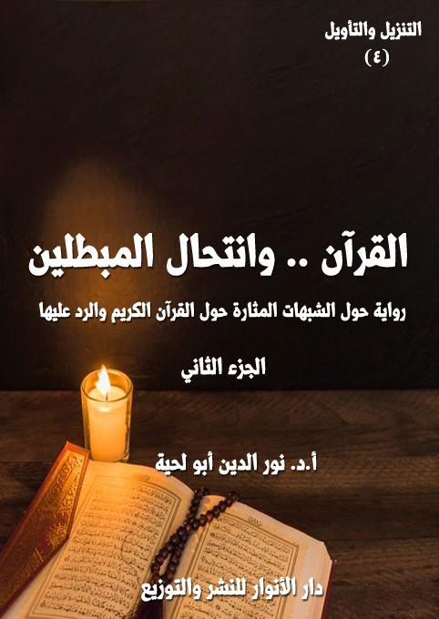

الكتاب: القرآن.. وانتحال المبطلين ج2
الوصف: رواية حول الشبهات المثارة على القرآن الكريم والرد عليها
السلسلة: التنزيل والتأويل
المؤلف: أ. د. نور الدين أبو لحية
الناشر: دار الأنوار للنشر والتوزيع
الطبعة: الثانية، 1443 هـ
عدد الصفحات: 543
ISBN: 978-620-4-72150-7
لمطالعة الكتاب من تطبيق مؤلفاتي المجاني وهو أحسن وأيسر: هنا

هذا الكتاب هو المقدمة الضرورة الرابعة لهذه السلسلة، ويتناول القسم الثاني من أقسام المنحرفين عن القرآن الكريم، وهو القسم الذي سماه رسول الله صلى الله عليه وآله وسلم [انتحال المبطلين]
ومن خلال تحليل ذلك التعبير النبوي المقدس، رأينا أن المقصود منه تلك الجهات التي تريد نشر الباطل، وتشويه الحق، لا بالمواجهة المباشرة، وإنما بالانتحال، وأصناف الحيل.
وقد رأينا من خلال استقرائنا للواقع أن ذلك الانتحال قد تم من طرف أربع جهات، أولها وأسبقها من يطلق عليهم لقب [الحشوية]، وهم أولئك الرواة والمدلسين الذين امتلأت بهم كتب الحديث والتفسير، والذين كان لهم دور كبير في نشر الخرافة والدجل والشعوذة وتشويه الحقائق والقيم القرآنية.
وأما الجهة الثانية؛ فيمثلها من أطلقنا عليهم لقب [الكشفية]، وهم أولئك الذين اعتبروا الكشف والإلهام المجرد أداة من أدوات تأويل القرآن الكريم وتفسيره وفهمه، من غير مراعاة لأي ضابط أو قانون.
وأما الجهة الثالثة؛ فيمثلها من أطلقنا عليهم لقب [المشككين]، ونقصد بهم كل من حاول أن يشكك في القرآن الكريم، ابتداء من السابقين من المعاصرين لرسول الله صلى الله عليه وآله وسلم إلى المبشرين والمستشرقين والحداثيين وغيرهم.
وأما الجهة الرابعة؛ فيمثلها من أطلقنا عليهم لقب [المبدلين]، ونقصد بهم كل الذين حاولوا أن ينحرفوا بالقرآن الكريم عن معانيه الظاهرة الواضحة التي فهمها المتقدمون والمتأخرون إلى معاني بديلة، متأثرين في ذلك بموجة الحداثة الغربية ومناهجها المختلفة، ولذلك تعاملوا مع القرآن الكريم، مثلما تعامل حداثيو الغرب مع الكتاب المقدس، من غير أن يراعوا الفوارق بين الكتابين.
القرآن.. وانتحال المبطلين (9)
هذا هو الجزء الثاني من كتاب [القرآن وانتحال المبطلين]، وهو يتضمن ما يلي:
الفصل الثالث ـ القرآن والمشككون: وقد تطرقنا فيه إلى الجهة الثالثة التي يمثلها من أطلقنا عليهم لقب [المشككين]، ونقصد بهم كل من حاول أن يشكك في القرآن الكريم، ابتداء من السابقين من المعاصرين لرسول الله صلى الله عليه وآله وسلم إلى المبشرين والمستشرقين والحداثيين وغيرهم.. والذين استعملوا سلاح التشكيك، وسيلة لإلغاء قداسة القرآن الكريم، وذلك عبر بث شبه وإشكالات يكررونها بصيغ مختلفة.
الفصل الرابع ـ القرآن والمبدلون: وقد تطرقنا فيه إلى الجهة الرابعة التي يمثلها من أطلقنا عليهم لقب [المبدلين]، ونقصد بهم كل الذين حاولوا أن ينحرفوا بالقرآن الكريم عن معانيه الظاهرة الواضحة التي فهمها المتقدمون والمتأخرون إلى معاني بديلة، متأثرين في ذلك بموجة الحداثة الغربية ومناهجها المختلفة، ولذلك تعاملوا مع القرآن الكريم، مثلما تعامل حداثيو الغرب مع الكتاب المقدس، من غير أن يراعوا الفوارق بين الكتابين.
القرآن.. وانتحال المبطلين (2/10)
في اليوم الثالث، وبعد أن منّ الله علي بالجلوس مع معلمي والحكماء السبعة، وسمعت الكثير من أخبارهم غير التي حكيتها لكم في كتاب [الطائفيون والحكماء السبعة]، والتي قد أحكيها لكم في مناسبات أخرى، سمعنا صائحا يصيح في سوق المدينة: من أراد أن يرى المبطلين من المشككين من أهل المدينة، وهم يخلعون أثواب التشكيك، ويلبسون ثياب اليقين؛ فليحضر إلى الساحة الكبرى، أمام المسجد الجامع؛ فهناك ينتظرونكم، لينفذوا قوله تعالى: ﴿إِلَّا الَّذِينَ تَابُوا وَأَصْلَحُوا وَبَيَّنُوا فَأُولَئِكَ أَتُوبُ عَلَيْهِمْ وَأَنَا التَّوَّابُ الرَّحِيمُ﴾ [البقرة: 160].. فلا توبة ولا صلاح بلا بيان.
سألت معلمي عنهم، فقال: سل الحكماء عنهم.. فهم سبب توبتهم.
قال أحد الحكماء: بل الله تعالى هو الذي هداهم، ونحن ما أدينا سوى واجبنا.
قلت: كيف تم ذلك بهذه السرعة؟.. ومن هم هؤلاء المبطلون المشككون؟
قال: هؤلاء شباب تتلمذوا على أيدي كل الحاقدين على القرآن الكريم والنبوة، ولذلك سرت إليهم الكثير من شبهاتهم وتشكيكاتهم.. وقد حضروا بها معهم، وصاروا يفتنون بها من لا يعرف الإجابة عليها.
قال آخر: والحمد لله.. لقد كان لتوبة الحشوية والكشفية تأثير كبير فيهم، جعلهم يستعدون لما نقول لهم.. ذلك أنهم كانوا يواجهون كل من يرد عليهم بما في كتب الحشوية والكشفية من خرافات ودجل؛ فلما تبين لهم دخنها ودجلها وبعدها عن القرآن الكريم، سقط السلاح الأكبر من أيديهم، وسهل علينا بعد ذلك حوارهم.
قال آخر: وقد دعوناهم بعد قناعتهم إلى الاجتماع بالناس، والإجابة على الإشكالات التي كانوا يشوشون بها عليهم، لكنهم رفضوا خشية على سمعتهم.. لكن ها
القرآن.. وانتحال المبطلين (2/11)
هم قد استجابوا لذلك، والحمد لله رب العالمين.
قال آخر، يوجه الخطاب لي: لا تنس أن تكتب كل ما يقولون، حتى ما يبدو لك من عدم علاقته بالتشكيك؛ فللتشكيك مقدماته.. ومن لم يفهم المقدمات، لم يفهم النتائج.
قلت: طبعا أنا أفعل كل ما طلبه مني معلم القرآن وجميع المعلمين الذين أرسلهم.. فدوري هو الكتابة، ولا يهمني بعدها هل وعيت أم لم أع.. فعسى أن يكون من القراء من يعي ما لم أعه.. ورب مبلَّغ أوعى من سامع.
بعد أن وصلنا إلى الساحة الكبرى، أمام الجامع الأعظم، رأينا مجموعة من الشباب، يلتف حولهم الكثير من الناس، قال كبيرهم: قبل أن نبدأ في بيان ما جمعناكم لأجله، نود أن نشكر أولئك الحكماء الطيبين الذين لم يعرفوا منهلا غير تلك المنابع الصافية التي لم تتدنس؛ فلولاهم لظللنا في شكنا وضلالنا، ولاستمررنا في تشكيكم وتضليلكم.
قال آخر: لكنا بعدما رأيناهم، وهم يردون على الحشويين وخرافاتهم، والكشفيين وأوهامهم، علمنا أن القرآن الكريم أطهر من أن تمثله تلك الأباطيل، أو أولئك المبطلون.
قال آخر: وقد شاء الله أن نلتقي بعد تلك المجالس بأولئك الحكماء، ونسألهم عن الشبهات التي ملئت بها عقولنا، وقد أجابونا عليها جميعا.. ولذلك نحن نتوب إلى الله من كل ما كنا نوحي به إليكم من الوساوس التي لم نكن سوى ضحايا لها.
قال آخر: وقد اجتمعنا في هذا المجلس بكم، لتوفروا لنا صدق توبتنا؛ فلا توبة لداعية ضلالة ما لم يحذر من ضلالته، بمثل ما كان يدعو إليها.
قال كبيرهم: وقبل ذلك اسمحوا لنا أن نخبركم عنا، وعن سر تلك الشبهات والشكوك التي عرضت لنا، ومن أوحاها إلينا، ومن شجعنا عليها، حتى تأخذوا حذركم، فلا يتسرب إليكم من يشككم غيرنا.
القرآن.. وانتحال المبطلين (2/12)
قال آخر: أنتم تعلمون أنا كنا متفوقين في الدراسة والعلم بين أهلنا، وكان أهلنا ذوي مال وجاه، ولذلك أذنوا لنا في الخروج خارج مدينتنا لنتلقى العلم في غيرها من البلاد، وهناك وجدنا من يوجهنا إلى غير الوجهة التي أرادها منا أهلنا.
قال آخر: لقد أرسلنا أهلنا لنتعلم من العلوم الحديثة والتقانة ما نوفر به ما تحتاجه مدينتنا من حاجات، لكن الذين استقبلونا هناك راحوا يزجون بنا في مدارس وجامعات تشرح لنا ديننا بغير ما تعلمناه.
قال آخر: ولم يكن لنا قدرة على الخروج منها إلى غيرها، ذلك أنها الوحيدة التي كان يسمح لنا بدخولها بحسب المال الذي أحضرناه معنا، والذي لم نصر بحاجة إليه بعدما وفروا لنا في تلك المدارس والجامعات كل ما نحتاجه من حاجات.
قال آخر: وكل ذلك في سبيل سلب اليقين من عقولنا، والإيمان من قلوبنا.. وقد تحقق لهم الكثير من ذلك، لولا أن قيض الله لنا الحكماء الذين دلونا على الحقيقة، ودعونا إلى الإقرار بها.
قال آخر: لقد استعمل أولئك الذين وصفهم الله تعالى بقوله: ﴿وَلَنْ تَرْضَى عَنْكَ الْيَهُودُ وَلَا النَّصَارَى حَتَّى تَتَّبِعَ مِلَّتَهُمْ قُلْ إِنَّ هُدَى اللَّهِ هُوَ الْهُدَى وَلَئِنِ اتَّبَعْتَ أَهْوَاءَهُمْ بَعْدَ الَّذِي جَاءَكَ مِنَ الْعِلْمِ مَا لَكَ مِنَ اللَّهِ مِنْ وَلِيٍّ وَلَا نَصِيرٍ﴾ [البقرة: 120] كل الوسائل التي تضللنا عن ديننا، ابتداء من الأساتذة الذين يدرسوننا، والمقررات التي قررت لنا، وطلب منا حفظها، وانتهاء بتلك الحوافز التي أتاحوها لكل من يسلك سبيلهم، أو يسير معهم.
قال آخر: وقد كان نتيجة ذلك أن تسربت إلينا الكثير من الشكوك والشبهات التي سربناها إليكم، كما سربت إلينا.. وأولها التشكيك في كون القرآن الكريم وحيا إلهيا بناء على ما وجد في البيئة التي عاش فيها رسول الله صلى الله عليه وآله وسلم من ديانات وأفكار.. ولذا كنا ـ عند ذكر أي
القرآن.. وانتحال المبطلين (2/13)
عقيدة أو شريعة أو قصة في القرآن الكريم ـ نذكر لكم أن مصدرها اليهودية أو المسيحية أو الصابئة أو غيرهم.
قال آخر: ومنها التشكيك في الوحي الإلهي، واعتباره ـ كما أوحى إلينا شياطين التشكيك ـ نوعا من الوساوس أو الأمراض النفسية والعصبية.
قال آخر: ومنها التشكيك في حفظ القرآن الكريم، وكونه قد تعرض بمرور الزمن للزيادة والنقصان والتحريف.
قال آخر: ومنها التشكيك في الحقائق التي وردت في القرآن الكريم، وعدم اختلافها وتناقضها.
قال آخر: ومنها التشكيك في الحقائق التي وردت في القرآن الكريم، وعدم تعارضها مع العقول السليمة والعلم القطعي.
قال آخر: ومنها التشكيك في لغة القرآن الكريم وأسلوبه وبلاغته.
قال أحد الحضور: فحدثونا عن الجواب عن تلك الشبهات التي سمعناها منكم كثيرا.
قال أحد المشككين: سنفعل ذلك إن شاء الله، وما اجتمعنا بكم هنا إلا لهذا الغرض، لكن قبل ذلك سنتحدث لكم عن منابع التشكيك، والتي لا تزال تبث سمومها كل حين لتحجب عن الغافلين نور الهداية الإلهية.. فمن لا يعرف منابع الشر، سيقع فيه لا محالة.
قال أحد الحضور: فحدثونا عن المصدر الأول الذي نبعت منه كل التشكيكات
القرآن.. وانتحال المبطلين (2/14)
والتضليلات.
قال أحد المشككين: هو ما ذكره القرآن الكريم عن الشيطان عدو البشر الأكبر، والذي توعد أن يستعمل كل الوسائل لإغوائهم، كما قال تعالى: ﴿قَالَ رَبِّ بِمَا أَغْوَيْتَنِي لَأُزَيِّنَنَّ لَهُمْ فِي الْأَرْضِ وَلَأُغْوِيَنَّهُمْ أَجْمَعِينَ إِلَّا عِبَادَكَ مِنْهُمُ الْمُخْلَصِينَ﴾ [الحجر: 39، 40]، فالآيتان الكريمتان تلخصان المصدر والمنهج الذي تعتمده كل التشكيكات والتضليلات التي يتعرض لها الإنسان، وهو منهج التزيين والإغواء، وهو لا يعني أن الشيء المزين يحمل أي حقيقة جمالية، ولكنه يعني أن ذلك المزين وضع بصورة بحيث تُقبل عليه العين، أو يقبل عليه الذوق، ثم يقع الإنسان فريسة له بعد ذلك، مثلما يقع المدمن فريسة لذلك الشراب، أو تلك المخدرات التي استعملها مرات عديدة إلى أن صارت متحكمة فيه.
قال آخر: ولذلك أخبر الله تعالى أن من تزيينات الشيطان للمشركين قتل أولادهم، كما قال تعالى: ﴿وَكَذَلِكَ زَيَّنَ لِكَثِيرٍ مِنَ الْمُشْرِكِينَ قَتْلَ أَوْلَادِهِمْ شُرَكَاؤُهُمْ لِيُرْدُوهُمْ وَلِيَلْبِسُوا عَلَيْهِمْ دِينَهُمْ وَلَوْ شَاءَ اللَّهُ مَا فَعَلُوهُ فَذَرْهُمْ وَمَا يَفْتَرُونَ﴾ [الأنعام: 137] فمع أن هذه الظاهرة لا تتناسب أبدا مع ما جبل عليه الإنسان من قيم الرحمة والحنان، وخصوصا على الأولاد إلا أن الشيطان عبر أدواته المختلفة، استطاع أن يجعل من ذلك التصرف سلوكا عاديا طبيعيا، أقره المجتمع، وراح يجد من يدافع عنه.
قال آخر: وهكذا نستطيع من خلال هذه الرؤية القرآنية أن نكتشف المصادر والمناهج التي تعتمدها كل الأفكار والفلسفات التي انحرفت بالإنسان عن الهدي الإلهي، لتجعله فريشة للخطة الشيطانية لإغواء الإنسان.
قال آخر: ولذلك يمكن اعتبار كل ما ذكره المستشرقون والحداثيون وغيرهم ليس سوى وحيا مزخرفا من القول، ذلك الذي ذكره الله تعالى فقال: ﴿وَكَذَلِكَ جَعَلْنَا لِكُلِّ نَبِيٍّ
القرآن.. وانتحال المبطلين (2/15)
عَدُوًّا شَيَاطِينَ الْإِنْسِ وَالْجِنِّ يُوحِي بَعْضُهُمْ إِلَى بَعْضٍ زُخْرُفَ الْقَوْلِ غُرُورًا وَلَوْ شَاءَ رَبُّكَ مَا فَعَلُوهُ فَذَرْهُمْ وَمَا يَفْتَرُونَ وَلِتَصْغَى إِلَيْهِ أَفْئِدَةُ الَّذِينَ لَا يُؤْمِنُونَ بِالْآخِرَةِ وَلِيَرْضَوْهُ وَلِيَقْتَرِفُوا مَا هُمْ مُقْتَرِفُونَ﴾ [الأنعام: 112 ـ 113]
قال آخر: ولذلك ـ عند استقصاء وتحليل ما ذكره المستشرقون ـ نجده نفس ما ردده من قبلهم كل المنكرين والحاقدين على القرآن الكريم، والذين لم ينطلقوا من البحث العلمي، وإنما من الهوى المجرد، وأولهم قوم رسول الله صلى الله عليه وآله وسلم من المشركين، أو اليهود، أو النصارى، أو غيرهم من الذين لم يتدبروا بصدق قوله تعالى: ﴿أَفَلَا يَتَدَبَّرُونَ الْقُرْآنَ وَلَوْ كَانَ مِنْ عِنْدِ غَيْرِ اللَّهِ لَوَجَدُوا فِيهِ اخْتِلَافًا كَثِيرًا﴾ [النساء: 82]
قال آخر: ومن الأمثلة على ذلك ما ورد في الحديث عن بعض أصحاب رسول الله صلى الله عليه وآله وسلم قال: لما قدمت نجران سألوني فقالوا: إنكم تقرؤون: ﴿يَا أُخْتَ هَارُونَ مَا كَانَ أَبُوكِ امْرَأَ سَوْءٍ﴾ [مريم: 28]، وموسى قبل عيسى بكذا وكذا.. فلما قدمت على رسول الله صلى الله عليه وآله وسلم سألته عن ذلك فقال: (إنهم كانوا يسمون بأنبيائهم والصالحين قبلهم)(1)، وللأسف؛ فإن هذا الطعن الذي ذكر في الحديث، ومع أن النبي صلى الله عليه وآله وسلم أجاب عليه، إلا أنه لا يزال يردد إلى يومنا هذا.
قال آخر (2): وقد ذكر الله تعالى كثيرا من المشككين من قوم رسول الله صلى الله عليه وآله وسلم، وذكر تشكيكاتهم، وهي نفس ما يردده المستشرقون والحداثيون وغيرهم.. ومن الأمثلة على ذلك رده على من ادعى أنه يستطيع أن يأتي بمثل القرآن، فقد قال تعالى: ﴿وَإِذَا تُتْلَى عَلَيْهِمْ آيَاتُنَا قَالُوا قَدْ سَمِعْنَا لَوْ نَشَاءُ لَقُلْنَا مِثْلَ هَذَا إِنْ هَذَا إِلَّا أَسَاطِيرُ الْأَوَّلِينَ﴾ [الأنفال: 31]؛ فتحداهم
__________
(1) مسلم، رقم: 213.
(2) دعاوى الطاعنين في القرآن الكريم، ص 43.
القرآن.. وانتحال المبطلين (2/16)
الله تعالى أن يأتوا بمثله فعجزوا، فتحداهم أن يأتوا بعشر سور من مثله فعجزوا، ثم تحداهم أن يأتوا بسورة من مثله فعجزوا.
قال آخر (1): ومثل ذلك رده على من زعم أن القرآن الكريم إنما هو من قصص الأولين وأساطير السابقين، كما قال تعالى: ﴿وَإِذَا قِيلَ لَهُمْ مَاذَا أَنْزَلَ رَبُّكُمْ قَالُوا أَسَاطِيرُ الْأَوَّلِينَ﴾ [النحل: 24]، وقال: ﴿وَقَالُوا أَسَاطِيرُ الْأَوَّلِينَ اكْتَتَبَهَا فَهِيَ تُمْلَى عَلَيْهِ بُكْرَةً وَأَصِيلًا قُلْ أَنْزَلَهُ الَّذِي يَعْلَمُ السِّرَّ فِي السَّمَاوَاتِ وَالْأَرْضِ إِنَّهُ كَانَ غَفُورًا رَحِيمًا﴾ [الفرقان: 5 ـ 6]، فرد الله عليهم أنه لا يعرف أن يقرأ ولا يكتب، فكيف ينقلها!؟.. ثم هذه الأساطير ليست خاصة بمحمد صلى الله عليه وآله وسلم، بل هي كتب للجميع، فلماذا لا تحضرون لنا هذه الكتب التي نقل منها؟
قال آخر: ومثل ذلك رده على من زعم أن القرآن الكريم من تأليفه وإنشائه صلى الله عليه وآله وسلم، لكونهم يستكثرون عليه أن يكون من إنتاجه وحده فقالوا: ﴿وَقَالَ الَّذِينَ كَفَرُوا إِنْ هَذَا إِلَّا إِفْكٌ افْتَرَاهُ وَأَعَانَهُ عَلَيْهِ قَوْمٌ آخَرُونَ فَقَدْ جَاءُوا ظُلْمًا وَزُورًا﴾ [الفرقان: 4]
قال آخر: ومنهم من نفى أن يكون قد جاء بشيء منه من عنده، بل زعموا أن معلمه بشر، كما قال تعالى: ﴿وَلَقَدْ نَعْلَمُ أَنَّهُمْ يَقُولُونَ إِنَّمَا يُعَلِّمُهُ بَشَرٌ لِسَانُ الَّذِي يُلْحِدُونَ إِلَيْهِ أَعْجَمِيٌّ وَهَذَا لِسَانٌ عَرَبِيٌّ مُبِينٌ﴾ [النحل: 103]
قال آخر: ومنهم من هون الأمر فقال: ﴿وَمِنْهُمْ مَنْ يَسْتَمِعُ إِلَيْكَ وَجَعَلْنَا عَلَى قُلُوبِهِمْ أَكِنَّةً أَنْ يَفْقَهُوهُ وَفِي آذَانِهِمْ وَقْرًا وَإِنْ يَرَوْا كُلَّ آيَةٍ لَا يُؤْمِنُوا بِهَا حَتَّى إِذَا جَاءُوكَ يُجَادِلُونَكَ يَقُولُ الَّذِينَ كَفَرُوا إِنْ هَذَا إِلَّا أَسَاطِيرُ الْأَوَّلِينَ﴾ [الأنعام: 25]، وقال: ﴿وَإِذَا تُتْلَى عَلَيْهِمْ آيَاتُنَا قَالُوا قَدْ سَمِعْنَا لَوْ نَشَاءُ لَقُلْنَا مِثْلَ هَذَا إِنْ هَذَا إِلَّا أَسَاطِيرُ الْأَوَّلِينَ﴾ [الأنفال: 31]، وقال: ﴿إِذَا تُتْلَى عَلَيْهِ آيَاتُنَا قَالَ أَسَاطِيرُ الْأَوَّلِينَ﴾ [المطففين: 13]
__________
(1) دعاوى الطاعنين في القرآن الكريم، ص 43.
القرآن.. وانتحال المبطلين (2/17)
قال آخر: وهكذا كان منهم من وصفه بالكهانة، والجنون، والشاعرية، والسحر.. وكل ذلك لإنكار نزول الوحي عليه.
قال آخر: وهم يتناقضون في كل ذلك.. فقد كانوا يصفونه قبل البعثة بالصادق الأمين، لكنه بمجرد دعوتهم للحق، وبالبينات الواضحة صاروا يتهمونه بالكذب.
قال آخر: ولذلك استعمل رسول الله صلى الله عليه وآله وسلم هذه الحجة في دعوته لهم، فقد قال لهم في أول بعثته: (أرأيتم لو أخبرتكم أن خيلا بالوادي تريد أن تغير عليكم، أكنتم مصدقي؟ قالوا: ما جربنا عليك كذبا)(1)
قال آخر: وفي استجواب هرقل لأبي سفيان بالسؤال عن حال النبي صلى الله عليه وآله وسلم قال له: هل كنتم تتهمونه بالكذب قبل أن يقول ما قال؟ فقال: لا.. وفي نهاية الحوار قال له: (ما كان ليدع الكذب على الناس ويكذب على الله)(2).
قال آخر: ونفى الوليد بن المغيرة بشدة احتمال كذبه وافترائه صلى الله عليه وآله وسلم على الله بقوله: (وتزعمون أنه كذاب، فهل جربتم عليه شيئا من الكذب)؟ فقالوا: (لا)(3).
قال آخر: أما زعمهم أنه (إفك افتراه)؛ فإنه هروب من الحقيقة، ذلك أن البلغاء والشعراء والحكماء عجزوا بعد أن قد تحداهم وأمهلهم ثلاثا وعشرين سنة.. فعجزهم يدل على كذبهم، وتناقض أقوالهم.
قال آخر: ومثل ذلك ما ذكروه من أوهام لا تستحق المناقشة، ولهذا اكتفى القرآن الكريم بإيرادها والرد عليها إجمالها، لا تفصيلا لتفاهتها، ذلك أن منشأها هو العجز عن كبت دعوة الحق، فلذلك لجؤوا إلى الإنكار والسخرية كنوع من الحرب النفسية المنظمة (4).
__________
(1) البخاري ص 1013 برقم 4770.
(2) البخاري، رقم 7.
(3) نور اليقين ص 43، النبوة في ضوء العلم والعقل ص 287.
(4) النبوة في ضوء العلم والعقل ص 304.
القرآن.. وانتحال المبطلين (2/18)
قال آخر (1): ومن ذلك اعتبارهم له كاهنا ـ وهو الذي يخبر بالأخبار الماضية الخفية؛ مستمدا لها من الجن ـ فهل يقبل عقل أن يكون رسول الله صلى الله عليه وآله وسلم كاهنا لأنه أخبر ببعض الغيب؟ ولم نسمع أن كاهنا وضع كتابا ـ لا قبله، ولا بعده ـ فضلا عن أن يضع كتابا كالقرآن الكريم (2).
قال آخر (3): ومن ذلك اعتبارهم له مجنونا، والجنون اختلال في العقل يحرم صاحبه من سداد التصرف.. فإن كانوا صادقين فلماذا حكموه في أصعب مشكلة مرت بهم، وهي وضع الحجر الأسود في مكانه عند بناء البيت، وهم يعلمون أن المجنون لا يتبعه عاقل يحترم نفسه، وهذا تناقض أثبتوه بقولهم إنه: ﴿ثُمَّ تَوَلَّوْا عَنْهُ وَقَالُوا مُعَلَّمٌ مَجْنُونٌ﴾ [الدخان: 14]
قال آخر: ومن ذلك اعتبارهم له شاعرا، مع أن هناك فروقا جوهرية بين ما جاء به من القرآن وبين الشعر، ولو كان شاعرا لقرب إليه الشعراء وجالسهم، والذي حصل عكسه كما قال الله عز وجل: ﴿وَالشُّعَرَاءُ يَتَّبِعُهُمُ الْغَاوُونَ أَلَمْ تَرَ أَنَّهُمْ فِي كُلِّ وَادٍ يَهِيمُونَ وَأَنَّهُمْ يَقُولُونَ مَا لَا يَفْعَلُونَ إِلَّا الَّذِينَ آمَنُوا وَعَمِلُوا الصَّالِحَاتِ وَذَكَرُوا اللَّهَ كَثِيرًا وَانْتَصَرُوا مِنْ بَعْدِ مَا ظُلِمُوا وَسَيَعْلَمُ الَّذِينَ ظَلَمُوا أَيَّ مُنْقَلَبٍ يَنْقَلِبُونَ﴾ [الشعراء: 224 ـ 227]
قال آخر: ومن ذلك اعتبارهم له ساحرا، والسحر وهو خداع للأبصار بحركات لطيفة غريبة يأتي بها السحرة، وقد أجمع أئمة الكفر على هذا الوصف، واتفقوا عليه بعد أن نفوا عنه ما سبقه من أوصاف؛ لأنهم رأوا أنه يسعفهم أن يقولوا: (يفرق بين المرء وأخيه)، ثم إنه صلى الله عليه وآله وسلم حمل على السحرة والكهنة والشعراء والشياطين، فلو كان متصلا بهم وناقلا عنهم لما صدر منه مهاجمتهم ولا تحقيرهم.
__________
(1) آراء المستشرقين حول مفهوم الوحي، ص 11.
(2) النبوة في ضوء العلم والعقل ص 304.
(3) آراء المستشرقين حول مفهوم الوحي، ص 11.
القرآن.. وانتحال المبطلين (2/19)
قال آخر: فتبين بهذا كله اضطرابهم في موقفهم من نزول الوحي على رسول الله صلى الله عليه وآله وسلم، فالذين رموه بالجنون والسحر والشعر والكهانة، هم أنفسهم الذين نفوا عنه هذه الأكاذيب.
قال آخر (1): هذه هي جل آراء المشركين المعاصرين لرسول الله صلى الله عليه وآله وسلم حول الوحي.. وهي نفسها الآراء التي تناولها المستشرقون، وتوسعوا فيها مدعين أنهم ألبسوها ثوب البحث العلمي، مع أنها تكرار لآراء المشركين نفسها.
قال آخر: وهكذا استمر المشككون بعد وفاة رسول الله صلى الله عليه وآله وسلم، وكان أئمة الهدى، والراسخون في العلم يجيبونهم عن إشكالاتهم وشبههم بكل المناهج التي أمرنا الله تعالى بها، كما قال تعالى: ﴿ادْعُ إِلَى سَبِيلِ رَبِّكَ بِالْحِكْمَةِ وَالْمَوْعِظَةِ الْحَسَنَةِ وَجَادِلْهُمْ بِالَّتِي هِيَ أَحْسَنُ﴾ [النحل: 125].. فالحكمة تجذب أصحاب العقول والفطر السوية.. والموعظة الحسنة تستميل أولئك الذين يستمعون القول فيتبعون أحسنه، والذين تلين قلوبهم لذكر الله وما نزل من الحق.. أما من يحتاج فهمه إلى مناظرة وجدال فليكن بالوجه الحسن برفق ولين وحسن خطاب، كما قال الله تعالى: ﴿وَلَا تُجَادِلُوا أَهْلَ الْكِتَابِ إِلَّا بِالَّتِي هِيَ أَحْسَنُ إِلَّا الَّذِينَ ظَلَمُوا مِنْهُمْ﴾ [العنكبوت: 46]
قال آخر: ومن الأمثلة على ذلك ما روي أن نافع بن الأزرق، وعطية أتيا ابن عباس فقالا: يا ابن عباس، أخبرنا عن قول الله تعالى: ﴿هَذَا يَوْمُ لَا يَنْطِقُونَ﴾ [المرسلات: 35] وقوله: ﴿ثُمَّ إِنَّكُمْ يَوْمَ الْقِيَامَةِ عِنْدَ رَبِّكُمْ تَخْتَصِمُونَ﴾ [الزمر: 31]، وقوله: ﴿ثُمَّ لَمْ تَكُنْ فِتْنَتُهُمْ إِلَّا أَنْ قَالُوا وَاللَّهِ رَبِّنَا مَا كُنَّا مُشْرِكِينَ﴾ [الأنعام: 23]، وقوله: ﴿وَلَا يَكْتُمُونَ اللَّهَ حَدِيثًا﴾ [النساء: 42]، فقال: (ويحك يا ابن الأزرق، إنه يوم طويل وفيه مواقف، تأتي عليهم ساعة لا ينطقون، ثم
__________
(1) آراء المستشرقين حول مفهوم الوحي، ص 11.
القرآن.. وانتحال المبطلين (2/20)
يؤذن لهم فيختصمون، ثم يكون ما شاء الله يحلفون ويجحدون، فإذا فعلوا ذلك ختم الله على أفواههم، وتؤمر جوارحهم، فتشهد على أعمالهم بما صنعوا، ثم تنطق ألسنتهم فيشهدون على أنفسهم بما صنعوا، وذلك قوله: ﴿وَلَا يَكْتُمُونَ اللَّهَ حَدِيثًا﴾ [النساء: 42] (1)
قال آخر: ومثله ما روي عن عبد الله بن الصامت قال: قلت لعبد الله بن عمرو بن العاص: أرأيت قول الله ﴿هَذَا يَوْمُ لَا يَنْطِقُونَ﴾ [المرسلات: 35]؟ فقال: (إن يوم القيامة له حالات وتارات، في حال لا ينطقون وفي حال ينطقون)(2).
قال آخر: ومثله ما روي عن سعيد بن جبير قال: قال رجل لابن عباس: إني أجد في القرآن أشياء تختلف علي؛ قال تعالى: ﴿فَإِذَا نُفِخَ فِي الصُّورِ فَلَا أَنْسَابَ بَيْنَهُمْ يَوْمَئِذٍ وَلَا يَتَسَاءَلُونَ﴾ [المؤمنون: 101]، وقال: ﴿وَأَقْبَلَ بَعْضُهُمْ عَلَى بَعْضٍ يَتَسَاءَلُونَ﴾ [الصافات: 27]، وقوله ﴿وَلَا يَكْتُمُونَ اللَّهَ حَدِيثًا﴾ [النساء: 42]، وقوله: ﴿ثُمَّ لَمْ تَكُنْ فِتْنَتُهُمْ إِلَّا أَنْ قَالُوا وَاللَّهِ رَبِّنَا مَا كُنَّا مُشْرِكِينَ﴾ [الأنعام: 23] فقد كتموا في هذه الآية؟، وقال: ﴿أَأَنْتُمْ أَشَدُّ خَلْقًا أَمِ السَّمَاءُ بَنَاهَا رَفَعَ سَمْكَهَا فَسَوَّاهَا وَأَغْطَشَ لَيْلَهَا وَأَخْرَجَ ضُحَاهَا وَالْأَرْضَ بَعْدَ ذَلِكَ دَحَاهَا﴾ [النازعات: 27 ـ 30] فذكر خلق السماء قبل خلق الأرض، ثم قال: ﴿قُلْ أَئِنَّكُمْ لَتَكْفُرُونَ بِالَّذِي خَلَقَ الْأَرْضَ فِي يَوْمَيْنِ وَتَجْعَلُونَ لَهُ أَنْدَادًا ذَلِكَ رَبُّ الْعَالَمِينَ وَجَعَلَ فِيهَا رَوَاسِيَ مِنْ فَوْقِهَا وَبَارَكَ فِيهَا وَقَدَّرَ فِيهَا أَقْوَاتَهَا فِي أَرْبَعَةِ أَيَّامٍ سَوَاءً لِلسَّائِلِينَ ثُمَّ اسْتَوَى إِلَى السَّمَاءِ وَهِيَ دُخَانٌ فَقَالَ لَهَا وَلِلْأَرْضِ ائْتِيَا طَوْعًا أَوْ كَرْهًا قَالَتَا أَتَيْنَا طَائِعِينَ﴾ [فصلت: 9 ـ 11] فذكر في هذه خلق الأرض قبل خلق السماء.. وقال: ﴿وَكَانَ اللَّهُ غَفُورًا رَحِيمًا﴾ [النساء: 96] و﴿وَكَانَ اللَّهُ عَفُوًّا غَفُورًا﴾ [النساء: 99] و﴿وَكَانَ اللَّهُ عَلِيمًا حَكِيمًا﴾ [النساء: 104] و﴿وَكَانَ اللَّهُ بِكُلِّ شَيْءٍ مُحِيطًا﴾ [النساء: 126] فكأنه كان ثم مضى؟
__________
(1) تفسير ابن كثير (2/ 307)
(2) فتح الباري لابن حجر العسقلاني (8/555.
القرآن.. وانتحال المبطلين (2/21)
قال آخر: وقد أجابه ابن عباس على هذه الإشكالات جميعا، فقال: ﴿فَلَا أَنْسَابَ بَيْنَهُمْ يَوْمَئِذٍ وَلَا يَتَسَاءَلُونَ﴾ [المؤمنون: 101] في النفخة الأولى، ثم ينفخ في الصور ﴿وَنُفِخَ فِي الصُّورِ فَصَعِقَ مَنْ فِي السَّمَاوَاتِ وَمَنْ فِي الْأَرْضِ إِلَّا مَنْ شَاءَ اللَّهُ ثُمَّ نُفِخَ فِيهِ أُخْرَى فَإِذَا هُمْ قِيَامٌ يَنْظُرُونَ﴾ [الزمر: 68] فلا أنساب بينهم عند ذلك ولا يتساءلون، ثم في النفخة الآخرة ﴿وَأَقْبَلَ بَعْضُهُمْ عَلَى بَعْضٍ يَتَسَاءَلُونَ﴾ [الصافات: 27].. وأما قوله: ﴿ثُمَّ لَمْ تَكُنْ فِتْنَتُهُمْ إِلَّا أَنْ قَالُوا وَاللَّهِ رَبِّنَا مَا كُنَّا مُشْرِكِينَ﴾ [الأنعام: 23]، وقوله: ﴿وَلَا يَكْتُمُونَ اللَّهَ حَدِيثًا﴾ [النساء: 42]، فإن الله يغفر لأهل الإخلاص ذنوبهم، فقال المشركون: تعالوا نقل لم نكن مشركين، فختم على أفواههم، فتنطق أيديهم، فعند ذلك عرف أن الله لا يكتم حديثا، وعنده ﴿يَوَدُّ الَّذِينَ كَفَرُوا لَوْ كَانُوا مُسْلِمِينَ﴾ [الحجر: 2].. ﴿وَكَانَ اللَّهُ عَفُوًّا غَفُورًا﴾ [النساء: 99] سمى نفسه ذلك، وذلك قوله أي لم يزل كذلك، فإن الله لم يرد شيئا إلا أصاب به الذي أراد، فلا يختلف عليك القرآن، فإن كلا من عند الله (1).
قال آخر: وقد استمرت الإشكالات والتشكيكات بعد ذلك؛ فاضطر العلماء للتأليف فيها، واختلفت مناهجهم في ذلك، وقد ذكر السيوطي أن أول من ألف فيه هو محمد بن المستنير أبو على البصري المعروف بقطرب، وهو أحد العلماء بالنحو واللغة، واسم كتابه [الرد على الملحدين في متشابه القرآن] (2)
قال آخر: وقبله كتب سفيان بن عيينه الهلالي الكوفي، [ولد سنة 107 هـ] كتاب [جوابات القرآن]، لكن هناك من شكك في صحته، فقد قال ابن أبي حاتم في [الجرح
__________
(1) البخاري معلقا (كتاب تفسير القرآن، باب: سورة حم السجدة (فصلت))، وقال الحافظ ابن حجر كما في الفتح (8/418): وصله الطبري وابن أبي حاتم بإسناد على شرط البخاري في الصحة.
(2) الإتقان في علوم القرآن (3/79)، وانظر: البرهان في علوم القرآن للزركشي (2/53)، والفهرست لابن النديم (1/57.
القرآن.. وانتحال المبطلين (2/22)
والتعديل] في ترجمة كاكا الرازي: روى عن الحميدي عن بن عيينة (جوابات القرآن) وروى عن الأصمعي أخبرنا عبد الرحمن، قال: سألت أبى عنه فقال: (هذا كذاب لم يكن عند الحميدي من هذا شيء، وهذا شيخ كذاب)(1)
قال آخر: وقبلهما كتب أبو الحسن مقاتل بن سليمان البلخي، كتاب [الجوابات في القرآن]، لكنه كان من الحشوية المجسمة، وقد اتفق الجميع على عدم وثاقته، وقد قيل: إنه قال: سلوني عما دون العرش، فقالوا: أين أمعاء النملة؟ فسكت.. وسألوه: لما حج آدم من حلق رأسه؟ فقال: لا أدري.. قال وكيع: كان كذابا.. وقال البخاري: مقاتل لا شيء ألبتة.. وقال الذهبي: (أجمعوا على تركه)(2)
قال آخر: لكن كل هذه الكتب مفقودة، ولعل أقدم الكتب التي وصلت إلينا في هذا العلم مفردا، كتاب أبي محمد عبد الله بن مسلم بن قتيبة الدينوري، وقيل: المروزي الكاتب، صاحب كتاب [مشكل القرآن] (3)
قال آخر: وأما الجواب عن بعض الإشكالات القرآنية في ثنايا الكتب، من غير إفراد لهذا الموضوع، فكثير.. لكن دخلها جميعا داء الطائفية المقيت؛ فلذلك لم تراع في تلك الردود القرآن الكريم بقدر ما راعت طوائفها.. ومن الأمثلة على ذلك الإمام أحمد، الذي خصص القسم الأول من كتابه [الرد على الزنادقة والجهمية] في الرد على من زعم أن القرآن متناقض، وأسماه باب بيان ما ضلت فيه الزنادقة من متشابه القرآن وذكر فيه اثنتين وعشرين مسألة.. ومثل أبو الحسين محمد بن أحمد الملطي، والذي صنف كتابه [التنبيه والرد على أهل الأهواء والبدع]، وقد أفرد فيه بابا لمتشابه القرآن، وما يتوهم أنه من الاختلاف والتناقض،
__________
(1) الجرح والتعديل (7/198)
(2) سير أعلام النبلاء (7/201 ـ 202)
(3) اسير أعلام النبلاء (13/296 ـ 300)
القرآن.. وانتحال المبطلين (2/23)
نقل فيه ما أخذه عن مقاتل بن سليمان (1).
قال آخر (2): وقد ألفت بعد ذلك الكثير من الكتب المفردة التي تجيب على الإشكالات، وترد على الشبهات والتشكيكات.. ومن أمثلتها ما ألف في الجواب على الإشكالات اللغوية والنحوية.. ومن الأمثلة عنها كتاب [مشكل إعراب القرآن] لأبي بكر محمد مكي بن أبي طالب حموش بن حمد بن مختار القيسي المقرئ (3).. وكتاب [إعراب مشكل القرآن] لأبي العباس ثعلب أحمد بن يحيي بن يزيد الشيباني.. وغيرهما.
قال آخر (4): ومنها الكتب المؤلفة في [المتشابه أو المشتبه]، ومن أمثلتها كتاب [الآيات المتشابهات] لبقي بن مخلد، و[أضواء على متشابه القرآن] لخليل ياسين، و[تأويل متشابهات القرآن] لابن شهر آشوب وغيرها.
قال آخر: ومنها الكتب المؤلفة في [موهم الاختلاف] أو [مختلف القرآن]، كما سماه الزركشي في البرهان: (معرفة موهم المختلف)(5)، وسماه السيوطي في الإتقان: (مشكله وموهم الاختلاف والتناقض)، وقد أخذوا هذا الاسم من قوله تعالى: ﴿أَفَلَا يَتَدَبَّرُونَ الْقُرْآنَ وَلَوْ كَانَ مِنْ عِنْدِ غَيْرِ اللَّهِ لَوَجَدُوا فِيهِ اخْتِلَافًا كَثِيرًا﴾ [النساء: 82].. ومنها كتاب [دفع إيهام الاضطراب عن آيات الكتاب] لمحمد الأمين الشنقيطي، وهو يتحدث عن نوع واحد من الطعون، وهو ما قد يبدو متناقضا من الآيات الكريمة.
قال آخر (6): ومنها الكتب المؤلفة في [أسئلة القرآن]، أي الأسئلة التي يطرحها بعض الناس بقصد التشكيك في كتاب الله تعالى؛ ومنها كتاب [البرهان في مسائل القرآن] للجماعيلي المقدسي، و[التبيان في مسائل القرآن] لرضي الدين القزويني.. وبعضهم يسميها
__________
(1) انظر: رسالةموهم الاختلاف والتناقض في القرآن، ص 17.
(2) دعاوى الطاعنين في القرآن الكريم، ص 51.
(3) شذرات الذهب (2/260.
(4) دعاوى الطاعنين في القرآن الكريم، ص 55.
(5) البرهان في علوم القرآن (2/53.
(6) دعاوى الطاعنين في القرآن الكريم، ص 31.
القرآن.. وانتحال المبطلين (2/24)
[جوابات القرآن]؛ باعتبار الجواب على هذا السؤال، ككتاب [الجوابات في القرآن] لمقاتل بن سليمان، وبعضهم يجمع بين الاسمين مثل [أسئلة القرآن وأجوبتها] لأبي بكر الرازي.
قال آخر (1): ومنها الكتب المؤلفة في [مشكل القرآن]، وهي كثيرة، منها كتاب [تأويل مشكل القرآن] لابن قتيبة.. و[فوائد في مشكل القرآن] للعز بن عبد السلام.. و[مشكلات القرآن] لمحمد أنور الكشميري.. و[مشكل القرآن] للحكيم الترمذي.
قال آخر: وللأسف.. فإن هذه الكتب وغيرها مع كونها مؤلفة للرد على الإشكالات والشبه إلا أنها أصبحت مصادر للمشككين ينقلون منها الشبهات والإشكالات والتشكيكات، لعلمهم أن جماهير الناس لا تعرفها، ولا ترجع إليها.
قال أحد الحضور: وعينا هذا.. فحدثونا عن المناهج التي اعتمدها المشككون، وخاصة المتأخرين منهم، والذين جمعوا كل تشكيكات العصور السابقة.
قال أحد المشككين: كما استفاد المشككون المتأخرون من كل المصادر السابقة؛ فقد استفادوا أيضا من مناهجها، ولذلك تراهم أحيانا بصورة الوثنيين الحاقدين، أو اليهود الماكرين، ولو كانوا يرتدون مآزر البحث العلمي، لكنهم في حقيقتهم لا يختلفون عن أبي جهل وأبي سفيان وأبي بن كعب وحيي بن أخطب.
قال آخر: ذلك أنهم دأبوا في تحرير أبحاثهم عن الدراسات الإسلامية على ميزان غريب في البحث العلمي، حيث يضعون في أذهانهم فكرة معينة، ويسعون إلى تصيد الأدلة لإثباتها، بحيث لا يهمهم صحة الدليل بمقدار ما يهمهم إمكان الاستفادة منه لدعم آرائهم الشخصية.
__________
(1) دعاوى الطاعنين في القرآن الكريم، ص 31.
القرآن.. وانتحال المبطلين (2/25)
قال آخر (1): ولذلك نراهم يقومون بجمع المعلومات التي ليس لها علاقة بالموضوع من كتب الديانة والتاريخ والأدب والشعر والرواية والقصص، أو المجون والفكاهة، فيقدمونها بعد التمويه بكل جراءة، ويبنون عليها نظرية لا وجود لها إلا في نفوسهم وأذهانهم.
قال آخر (2): وهكذا نراهم يستنبطون الأمر الكلي العظيم من حادثة جزئية بسيطة مظنونة أو مكذوبة، كما فعلوا ذلك في موضوع الوحي، يتصيد كل منهم حادثة فيبني عليها، ويجودها ما أمكنه لتمكينها في النفوس، مثل حادثة لقاء النبي صلى الله عليه وآله وسلم لورقة بن نوفل، أو بحيرا، أو الحداد الرومي، ويزعمون أنه أخذ منهم أو تتلمذ عليهم.
قال آخر (3): وهكذا نراهم يعتمدون على الوهم المجرد لتفسير الأمور، فقد فسروا ظاهرة الوحي بحديث النفس وإلهاماتها تارة، وبالنوبات الانفعالية أخرى، وبالتنويم الذاتي أو التجربة الذهنية المرضية كالصداع الهستيري.
قال آخر: لكن من باب الأمانة العلمية، والشهادة لله، والصدق الذي أمرنا به، نذكر أن هناك الكثير من المستشرقين المنصفين، والذين كانوا أول من أدخل علينا الشك فيما ذكره المستشرقون الحاقدون.
قال آخر: ومنهم المستشرق إدوارد مونتيه الذي قال: (كان محمد نبيا بالمعنى الذي يعرفه العبرانيون القدماء، ولقد كان يدافع عن عقيدة خالصة لا صلة لها بالوثنية)(4)، وقال: (كان محمد نبيا صادقا، كما كان أنبياء بني إسرائيل في القديم، كان مثلهم يؤتى رؤيا ويوحى إليه)(5)
__________
(1) الإسلاميات بين كتاب المستشرقين والباحثين المسلمين، ص 16.
(2) أجنحة المكر الثلاثة، ص 141.
(3) آراء المستشرقين حول مفهوم الوحي، ص 18.
(4) المدينة الشرقية ص 47 نقلا عن الشيباني، الرسول في الدراسات الاستشراقية ص 117.
(5) الوحي المحمدي ص 45.
القرآن.. وانتحال المبطلين (2/26)
قال آخر: كما تصدت المستشرقة الإيطالية لورا فكشيا للمستشرقين الحاقدين، ودافعت عن الرسول صلى الله عليه وآله وسلم بتفنيد الأكاذيب التي كانت تشاع عنه في القرون الوسطى (1).
قال آخر (2): ومثلهما وقف المستشرق السويسري حنا مواقف نبيلة في دفاعه عن الرسول صلى الله عليه وآله وسلم بعد دراسته الوثائق التاريخية.
قال آخر: ومثلهم أكد المستشرق جون وانتبورت أن الدراسات التاريخية تسقط كل الأكاذيب التي أشاعها أعداء الإسلام بقوله: (بقدر ما نرى صفة محمد الحقيقية بعين البصيرة والتروي في المصادر التاريخية الصحيحة.. وقد جاء بشرع لا يسعنا أن نتهمه فيه)(3)
قال آخر: ومثلهم قال المستشرق كارل هينرش بيكر، مؤسس مجلة العالم الإسلامي: (لقد أخطأ من قال إن نبي العرب دجال أو ساحر؛ لأنه لم يفهم مبدأه السامي، إن محمدا صلى الله عليه وآله وسلم جدير بالتقدير، ومبدأه حري بالاتباع، ليس لنا أن نحكم قبل أن نعلم، وإن محمدا خير رجل جاء إلى العالم بدين الهدى والكمال، كما أننا لا نرى أن الديانة الإسلامية بعيدة عن الديانة المسيحية)(4)
قال آخر (5): ومثلهم المستشرق الروسي جان ميكائيليس والمستشرق الفرنسي دينيه، وتوماس كارليل، ولامارتين، والكونت كاستري، والباحث الأوروبي سنكس، والفيلسوف الروسي تولستوي، والبروفيسور ليك، والإنجليزي توماس آرنولد.
قال آخر: هؤلاء وغيرهم من المستشرقين المنصفين كانت لهم اعترافات بنزول الوحي على النبي صلى الله عليه وآله وسلم، وصرحوا بصدق الرسول صلى الله عليه وآله وسلم بعد دراسة عميقة، بعدل وإنصاف؛ لأنهم وجدوا في شخصه كل ما يدل على صدق نبوته وصحة رسالته، ثم قاموا بنشرها في
__________
(1) الرسول في الدراسات الاستشراقية المنصفة ص 388.
(2) آراء المستشرقين حول مفهوم الوحي، ص 25.
(3) وانتبرت، محمد والقرآن، الشيباني، الرسول. ص 394.
(4) الشيباني، الرسول في الدراسات الاستشراقية ص 394.
(5) آراء المستشرقين حول مفهوم الوحي، ص 26.
القرآن.. وانتحال المبطلين (2/27)
بلادهم ضد مفاهيم مجتمعهم، على حساب مصالحهم الخاصة (1).
قال أحد الحضور: وعينا هذا، ونحن نشكر هؤلاء المستشرقين المنصفين، وقد سمعنا بهم كثيرا، واطلعنا على كتاب مفصل يذكرهم، ويذكر أقوالهم، وهو [قلوب مع محمد صلى الله عليه وآله وسلم].. فهلا ذكرتم لنا نماذج عن تلك المقررات التي حوت تلك الشبهات.
قال أحد المشككين: هي كثيرة جدا، ولا يمكننا في هذا المجلس أن نحيط بها أو نحصيها، فهي أكثر من أن تحصر، ولذلك سنذكر لكم سبعة نماذج عنها، وهي المقررات التي كانوا يدرسونها لنا، وهي تحوي أمهات الشبهات، والتي تكرر في كل حين بما يتناسب مع الجيل الذي يخاطبونه.
قال أحد الحضور: فحدثونا عن أول تلك المقررات.
قال أحد المشككين (2): أولها كتاب [مقالة في الإسلام]، لمؤلفه (جرجيس صال)، وهو مستشرق إنكليزي مولدا ومنشأ، ولد في أواخر القرن السابع عشر الميلادي، ومات سنة ألف وسبعمائة وست وثلاثين، وله من العمر أربعون سنة، كان من المشتغلين بعلم الفقه إلا أنه أولع بدرس لغات المشرق ولا سيما اللغة العربية وعلومها، وله بلسان قومه مصنفات في التاريخ واللغة ولكنه أكثر ما اشتهر بنقل القرآن إلى لسان الإنكليز وبما ألحق به من حواش تكشف الغطاء عن مبهمات النص القرآني انتقى أكثرها من كتب التفسير الإسلامي، وأشهر مصنفاته (مقالة في الإسلام)، ويقع في ثمانية فصول.
__________
(1) انظر: الإسلام والمستشرقون عنوان المقال ((نبي الإسلام في مرآة بعض المستشرقين المنصفين)) بقلم د. عبد الله الطرازي ص 351.
(2) آراء المستشرقين حول القرآن: 1/ 149.
القرآن.. وانتحال المبطلين (2/28)
قال آخر (1): ويعتبر المؤلف من أكثر المستشرقين حقدا وخطرا على الإسلام ومن أكثرهم أخطاء في كثير من القضايا التي طرحها خاصة في كتابه أسرار القرآن وما كتبه عن القرآن في كتابه (مقالة في الإسلام)، حيث بذل جهده لربط عقائد الإسلام وشرائعه بالمذاهب والمعتقدات السماوية تارة وغير السماوية تارة أخرى.
قال آخر (2): وقد تحدث في الفصل الأول منها، والمعنون بـ (في عرب الجاهلية وتاريخهم وأديانهم وعلومهم وعاداتهم) عن اسم العرب منذ نشأتهم وبلادهم، ثم تناول أديانهم ومعبوداتهم وعاداتهم وأخلاقهم وعلومهم.
قال آخر: وتحدث في الفصل الثاني المعنون بـ (البحث عما كانت عليه حال المسيحية واليهودية أيام ظهور محمد والطرق التي سلكها محمد لتأسيس دينه وما أعانه على ذلك من الشؤون) عن الكنائس التي كانت موجودة آنذاك واعتقاداتهم، وتناول كذلك حالة الروم والفرس، وتحدث عن محمد صلى الله عليه وآله وسلم ومقدار معرفته بعقائدهم، وزعمه أن الرسول صلى الله عليه وآله وسلم كان شديد الميل للنساء، ثم تناول سيرة الرسول صلى الله عليه وآله وسلم وكيفية انتشار الإسلام وقوته.
قال آخر: وتحدث في الفصل الثالث المعنون بـ (الكلام على القرآن وما تميز به عن غيره من الكتب وفي كيفية كتابته ونشره والغاية العامة المقصودة به)، وقد تحدث فيه عن اشتقاق لفظة القرآن، وأسمائه، وأقسامه، وأسماء سوره، ثم تعرض للبسملة في أول كل السور وتحدث عن لغة القرآن، وأسلوبه ومحاكاته لأسلوب التوراة، ثم تحدث عن غاية محمد صلى الله عليه وآله وسلم من القرآن واستخدام السيف لنشر الدعوة، ثم تحدث عن فروض الإسلام وشعائره وأحكامه وأنها قابلة للتبديل، ثم تحدث عن التناقض في القرآن ومحاولة الخروج منه بالنسخ، ثم تحدث عن الإعجاز في القرآن الكريم وعن المحكم والمتشابه، وختمه
__________
(1) آراء المستشرقين حول القرآن: 1/ 153.
(2) آراء المستشرقين حول القرآن: 1/ 150.
القرآن.. وانتحال المبطلين (2/29)
بالحديث عن حكم ترجمته.
قال آخر (1): وتحدث في الفصل الرابع المعنون بـ (تعاليم القرآن وأوامره المتعلقة بالإيمان وفروض الدين ـ أي قضاياه النظرية والعلمية ـ)، وقد تحدث فيه عن أركان الإسلام وأركان الإيمان والتأثر فيها ـ كما يزعم ـ باليهود والصابئة وغيرهما، وتناول القبر والجن والشيطان وإحياء الإنسان مرة ثانية والتأثر في ذلك ـ كما يزعم ـ باليهود، ثم تناول موضوع النفخ، ويوم الحساب، والصراط، وغيرها من الاعتقادات عند المسلمين التي تأثر بها النبي صلى الله عليه وآله وسلم ـ كما يزعم ـ باليهود والمجوس وغيرهم.. ثم تناول الركن الثاني وهو الصلاة وتأثر المسلمين في صلاتهم ـ كما يزعم ـ بالطقوس اليهودية وغيرهم.. ثم تحدث عن الركن الثالث الزكاة والفرق بينها وبين الصدقات ومصارفها ومستحقيها وتأثرهم كذلك ـ كما يزعم ـ بها باليهود.. ثم تناول الركن الرابع الصيام وتأثره فيه ـ كما يزعم ـ باليهود كذلك، ثم تناول الركن الخامس وهو الحج وما فيه ـ كما يزعم ـ من وثنية وأن شرعه الحج لقومه كان إرضاء لهم ولكسبهم لدينه.
قال آخر (2): وتحدث في الفصل الخامس المعنون بـ (بعض نواهي القرآن) عن الأحكام والفروض الفرعية فابتدأ بالحديث عن المنهيات: كالخمر والميسر، كما تحدث عن المحرمات من الأطعمة كالميتة، ولحم الخنزير، وغيرها، ثم تحدث عن الربا وتحريمه ـ كما يزعم ـ اتباعا لليهود كما تحدث عن وأد البنات وتحريم هذه العادة الذميمة.
قال آخر (3): وتحدث في الفصل السادس المعنون بـ (شرع القرآن المدني)، وقد تحدث فيه عن شرع المسلمين وأنه بني على الأوامر كاليهود، وتناول تعدد الزوجات، والطلاق،
__________
(1) آراء المستشرقين حول القرآن: 1/ 151.
(2) آراء المستشرقين حول القرآن: 1/ 151.
(3) آراء المستشرقين حول القرآن: 1/ 152.
القرآن.. وانتحال المبطلين (2/30)
والعدة، ومقارنتها بما عند اليهود، وعقوبة الزنا، واعتزال النساء في الحيض، والنكاح فيمن يجوز الزواج منهن، ثم تحدث عن شرائع القرآن في المواريث، والقتل، والسرقة، والجنايات، ومقارنة ذلك بما عند اليهود، ثم تناول الجهاد في سبيل الله وملحقاته من فيء وغنائم.
قال آخر (1): وتحدث في الفصل السابع المعنون بـ (الأشهر التي حرمها القرآن وفي إفراز يوم الجمعة لله)، وبين فيه تحديد القرآن لعدد الشهور ب (12) شهرا، وتحريم أربعة منها على ما كانت عليه بعض قبائل العرب، ثم إعطاء يوم الجمعة ميزة خاصة لعبادة الله عزوجل فيه، ثم تعرض لأعياد المسلمين (الفطر ـ والأضحى)
قال آخر (2): وتحدث في الفصل الثامن المعنون بـ (فرق المسلمين الكبيرة وفي من ادعى النبوة في العرب على عهد محمد أو بعده)، وتناول فيه علم الكلام، وعلم الفقه، ثم تناول الأصول التي اختلف فيها المتكلمون، وتعدد الفرق الإسلامية للاختلافات في القضايا العقائدية، ثم تناول المذاهب الفقهية الأربعة ومعرفا بأئمتها.. ثم تناول الفرق الأخرى معرفا بها وبما انفردت به من قضايا عقائدية كالجبائية والقدرية، والجبرية، والشيعة، وفرقها، معتمدا في ذلك على كتابي ابن حزم والشهرستاني في هذا الفصل، ثم تناول المتنبئين كأمثال: طليحة ابن خويلد، وسجاح بنت المنذر، وغيرهما مما جاء بعدهم.
قال أحد الحضور: وعينا هذا.. فحدثونا عن النموذج الثاني.
قال أحد المشككين (3): النموذج الثاني، كتاب [مصادر الإسلام]، لمؤلفه (كلير تسدال)، وهو في ستة فصول، وقد ترجم من الألمانية للإنكليزية السير (وليم موير) وطبع
__________
(1) آراء المستشرقين حول القرآن: 1/ 152.
(2) آراء المستشرقين حول القرآن: 1/ 152.
(3) آراء المستشرقين حول القرآن: 1/ 124.
القرآن.. وانتحال المبطلين (2/31)
في الهند.
قال آخر (1): وهو من أشد الكتب حربا على الإسلام عامة والقرآن خاصة، فقد نهج فيه المؤلف مسلك المنصرين الحاقدين على الإسلام، وقد اعتمد كثير من المستشرقين والمنصرين عليه في افتراءاتهم ضد الإسلام.. وهو يحاول بكل السبل أن يشكك في كون القرآن الكريم وحيا إلهيا.. بل يذكر أنه من تأليف محمد صلى الله عليه وآله وسلم حيث جمعه من ديانات ومذاهب مختلفة مدللا على دعواه ببعض وجوه التشابه بين الإسلام وبين هذه المذاهب والديانات.
قال آخر (2): وقد تحدث في الفصل الأول المعنون بـ (ما قاله المجتهدون الأعلام وعلماء الإسلام العظام في حل هذا المعنى العظيم الأهمية)، وقد تحدث فيه عن موقف المسلمين من مصدر القرآن الكريم، واعتقادهم أنه منزل من الله سبحانه على رسوله صلى الله عليه وآله وسلم كنزول التوراة على موسى والإنجيل على عيسى والزبور على داود عليهم السلام.
قال آخر (3): وتحدث في الفصل الثاني المعنون بـ (البحث والنظر فيما ذهب إليه القائلون من أن بعض عقائد المسلمين ورسومهم وفرائضهم مأخوذة من مذاهب العرب في أيام الجاهلية وأن هذا هو أول مصادر الديانة الإسلامية)، وقد استعمل فيه الكثير من المغالطات لإثبات أن الجاهلية والوثنية العربية هي إحدى مصادر الإسلام ذاكرا الدافع الذي جعل الرسول صلى الله عليه وآله وسلم يبقي الموروثات القديمة في ديانته كاعتقادهم بإله واحد، وكالختان، وتقبيل الحجر الأسود، كما أنه حاول إثبات هذه الصلة بإتيانه ببعض الأبيات الشعرية رابطا إياها ببعض الآيات القرآنية زاعما أن هذه الأبيات هي مصدر هذه الآيات القرآنية.
قال آخر (4): وتحدث في الفصل الثالث المعنون بـ (البحث فيما ذهب إليه بعض
__________
(1) آراء المستشرقين حول القرآن: 1/ 127.
(2) آراء المستشرقين حول القرآن: 1/ 124.
(3) آراء المستشرقين حول القرآن: 1/ 124.
(4) آراء المستشرقين حول القرآن: 1/ 125.
القرآن.. وانتحال المبطلين (2/32)
المعترضين من أن بعض التعاليم والقصص الواردة في القرآن أو الأحاديث مأخوذة من تفاسير اليهود الوهمية وأن بعض فرائض المسلمين الدينية مأخوذة من طريق الصابئين)، وقد استعمل فيه الكثير من المغالطات لإثبات هذه المزاعم مستدلا ببعض العبادات والشعائر والعقائد التي فيها التشابه بين الإسلام وبين اليهودية والصابئة مثل: الصلاة، والاغتسال، والاعتقاد بالألوهية، والتشابه ببعض القصص الواردة عندهم والتي وردت في القرآن العظيم كقصة إبراهيم عليه السلام وقصة ولدي آدم قابيل وهابيل وقصة سليمان عليه السلام وغيرها من القصص.. كما استدل على التشابه بوجود بعض الكلمات المشتركة في القرآن وعندهم كلفظ (جهنم) حيث رد أصلها للغة الكلدانية والسورية.
قال آخر (1): وتحدث في الفصل الرابع المعنون بـ (النظر والبحث فيما ذهب إليه البعض من أن كثيرا مما ورد في القرآن مأخوذ من حكايات وروايات بعض فرق النصارى المبتدعة العاطلة وآرائهم الباطلة)، وقد استعمل فيه الكثير من المغالطات لإثبات ذلك بإيجاد بعض المتشابهات بين الإنجيل والقرآن مثل بعض القصص كقصة أصحاب الكهف، وقصة مريم وابنها عيسى عليهما السلام، ومثل ذلك بعض القضايا المتعلقة باليوم الآخر كالحساب، والعذاب، والجنة، والنار، وغيرها.
قال آخر (2): وتحدث في الفصل الخامس المعنون بـ (النظر والبحث فيما ذهب إليه المعترضون من أن بعض أركان القرآن والأحاديث أخذت من كتب أصحاب زرادشت والهنود القديمة)، واعتمد فيه على بعض نقاط التشابه بين القرآن وهذه المذاهب، كالتشابه ببعض القصص مثل قصة المعراج، وقصة خروج الشيطان من الجنة.. والتشابه ببعض العقائد المتعلقة باليوم الآخر وبغيره، كالجنة والنار وصفه الحور العين والميزان والصراط،
__________
(1) آراء المستشرقين حول القرآن: 1/ 125.
(2) آراء المستشرقين حول القرآن: 1/ 126.
القرآن.. وانتحال المبطلين (2/33)
وملك الموت، والجن.. والتشابه في قضايا عامة كتبشير كل نبي بالنبي الذي يليه، والابتداء باسم من أسماء الله في أول الكلام.. وغيرها.
قال آخر (1): وتحدث في الفصل السادس المعنون بـ (الحنفاء وتأثيرهم على أفكار محمد وعلى تعاليمه)، واعتمد فيه على التشابه بين ما كان يدين به الحنفاء قبل الإسلام، وما جاء به الإسلام كالدعوة لعدم وأد البنات، ورفض عبادة الأصنام، وإقرار بالوحدانية لله سبحانه والدعوة لذلك، ووعد المؤمنين بالجنة وتخويف الكفار من النار.. ثم وصف الذات الإلهية ببعض الأسماء الخاصة بها كالرحمن، والرب، والغفور، وغيرها مما وقع فيه التشابه.
قال أحد الحضور: وعينا هذا.. فحدثونا عن النموذج الثالث.
قال أحد المشككين (2): النموذج الثالث، كتاب [صلة القرآن باليهودية والمسيحية]، لمؤلفه (د، فلهلم رودلف).. وهو كتاب تحامل فيه مؤلفه بشدة على الإسلام والقرآن الكريم، وقد أقحم كثيرا من المغالطات في ثنايا ما قرره من نتائج مسبقا ليدلل على أن الإسلام فرقة تأثرت بالمسيحية واليهودية وخاصة المسيحية.
قال آخر (3): وقد تحدث في فصله الأول المعنون بـ (اليهودية والمسيحية في البلاد العربية قبل محمد) عن وجود هاتين الديانتين في الجزيرة العربية ومقدار حظ أهلهما من العلم والمعرفة، فمع أنه نسب لهما قلة المعرفة والجهل أحيانا إلا أنه اعتبرهم أكثر علما وفهما من الوثنيين ومن بينهم محمد صلى الله عليه وآله وسلم الذي تأثر ـ في زعمه ـ كثيرا بما عندهم من معرفة انعكست على قرآنه.
__________
(1) آراء المستشرقين حول القرآن: 1/ 126.
(2) آراء المستشرقين حول القرآن: 1/ 137.
(3) آراء المستشرقين حول القرآن: 1/ 137.
القرآن.. وانتحال المبطلين (2/34)
قال آخر (1): وتحدث في الفصل الثاني المعنون بـ (كيف اقتبس محمد المواد اليهودية والمسيحية)، وقد ناقش فيه طريقة تلقي الرسول صلى الله عليه وآله وسلم معرفتهم وثقافتهم، أكان بالقراءة في كتبهم أم بطريق السماع فحسب؟.. لذا ناقش موضوع أمية الرسول صلى الله عليه وآله وسلم ولكنه أكد أنه حتى لو كان يتقن القراءة والكتابة فإنه لن يستطيع أن يستفيد منها لعدم ترجمتها.. ثم ذكر بعض المقتبسات من القرآن الكريم وما يشابهها من العهد القديم ليؤكد أنه قد حصل للرسول صلى الله عليه وآله وسلم معرفة بما في التوراة بطريق السماع.. ثم ذكر مجموعة من الأمثلة القرآنية التي حصل فيها ـ كما يذكر ـ التشابه مع العهدين القديم والجديد وأشار أن هذه الأمثلة قد وقع فيها أخطاء وتفاوت وأن مرجع ذلك يعود لسوء الفهم الذي يؤكد دعوى المؤلف أنه تلقاها مشافهة لا من مصدر مكتوب.. ثم أتى ببعض الأدلة القرآنية التي فيها الإنكار على من زعم أن محمدا صلى الله عليه وآله وسلم تلقى الوحي من مصدر غير إلهي لكنه حملها على تأكيد مزاعمه في تلقيه لمعلومات الوحي من أقوال شفوية.
قال آخر: وتحدث في الفصل الثالث المعنون بـ (ماذا أخذ محمد من اليهودية والمسيحية) على الأفكار الرئيسية التي تنتظم دين محمد صلى الله عليه وآله وسلم ـ على حد فهمه ـ وهي: البعث ـ فالمحاكمة ـ فالفردوس ـ وجهنم.. ذاكرا صلة هذه الأفكار بما هي عليه عند اليهود والنصارى، ثم ذكر بعض الكلمات المتشابهة بين الإسلام وهذين الدينين مثل: الله، أحد، روح، إبليس، زاعما أنها مأخوذة من مصدر يهودي أو نصراني، ثم ذكر أن أكثر القصص القرآني مصدره يهودي، وزعم أن بعض أسماء الأنبياء مثل: سليمان وإلياس، ويونس، منقولة عن مصدر نصراني.. ثم زعم أن ما طرأ على القصص في المدينة المنورة من تغيير بحيث أصبح نادرا يعود ذلك إلى أن محمدا صلى الله عليه وآله وسلم شعر بتفاوت بين ما يذكره من قصص وبين
__________
(1) آراء المستشرقين حول القرآن: 1/ 138.
القرآن.. وانتحال المبطلين (2/35)
ما هو عند اليهود على وجه الدقة، كما زعم أن كثيرا من الجوانب الأخلاقية والعبادية في الإسلام يعود لأصل يهودي أو نصراني كالوصايا العشر، وأركان الإسلام الخمس، وقواعد الطعام، وغير ذلك.
قال آخر (1): وتحدث في الفصل الرابع المعنون بـ (هل المسيحية هي التي دفعت محمدا الدفعة الحاسمة إلى الظهور) على أن المسيحية بتأثيرها البالغ على محمد صلى الله عليه وآله وسلم دفعته للتنبؤ.. وذكر في هذا الفصل كذلك بعض الأمثلة المتشابهة بين القرآن والإنجيل كقصة مريم وابنها عيسى عليه السلام، وعذاب النار، والمحاكمة العامة، وغيرها.. ثم ذكر تأثير الصابئة على الإسلام ذاكرا بعض الأمور المتشابهة بينهما، كما ذكر الحنفاء وما أثروا به على الإسلام موضحا ذلك ببعض الأمثلة.
قال آخر (2): وتحدث في الفصل الخامس المعنون بـ (نظرية جنوب بلاد العرب) عن وجهة نظر (جريمه) في كتابه (محمد) من أن اليهودية لم يكن لها أثر فعال على محمد صلى الله عليه وآله وسلم إلا في العهد المدني، بخلاف الفترة الأولى، والتي كانت ـ كما يزعم ـ أفكار محمد صلى الله عليه وآله وسلم الدينية انعكاسا للتوحيد الذي في جنوب العرب، هذا التوحيد الخليط من الوثنية واليهودية والمسيحية، وقد كان وصول (جريمه) لهذه النتيجة عن طريق النقوش التي تم العثور عليها في جنوب الجزيرة العربية.. وقد قام المؤلف (رودلف) بنقد آراء (جريمة) واحدا بعد الآخر.
قال آخر (3): وتحدث في الفصل السادس المعنون بـ (ما عرفه القرآن عن شخص عيسى ـ عليه السلام ـ وحياته وما خلف وراءه من أثر)، ثم ذكر الآيات التي تناولت هذا
__________
(1) آراء المستشرقين حول القرآن: 1/ 140.
(2) آراء المستشرقين حول القرآن: 1/ 140.
(3) آراء المستشرقين حول القرآن: 1/ 140.
القرآن.. وانتحال المبطلين (2/36)
الموضوع وما طابقها أو خالفها في كتب الإنجيل، ليؤكد ـ بحسب زعمه ـ تأثر محمد صلى الله عليه وآله وسلم بالأناجيل.
قال أحد الحضور: وعينا هذا.. فحدثونا عن النموذج الرابع.
قال أحد المشككين (1): النموذج الرابع، كتاب [مقدمة القرآن]، لمؤلفه أستاذنا دبليو منتجمري واط، هو عميد قسم الدراسات العربية في جامعة أدنبره، له عدة مؤلفات عن الإسلام منها: هذه (المقدمة)، وكتاب (الإسلام) و(الإسلام والجماعة الموحدة، دراسة فلسفية اجتماعية)، و(محمد في مكة)، و(محمد في المدينة)، و(الوحي الإسلامي في نظر العالم الحديث)، و(الجدل الديني)
قال آخر (2): وهذا الكتاب هو الثامن من سلسلة الدراسات المسيحية الإسلامية، وقد طبع لأول مرة في سنة 1977 م، وقد شمل هذا الكتاب كثيرا من أبواب علوم القرآن، لكنه لم يخرج فيه عن خطوات أستاذه (بل) إلا تخفيف حدة بعض العبارات الجارحة لشعور المسلمين التي كان لا يبالي بها أستاذه (بل) كما ذكر ذلك المؤلف نفسه في مقدمة كتابه.. وبسبب تبعية (واط) لأستاذه (بل) وقع في أخطاء عدة منها: اعتبار النبوة أمرا يكتسب بالخبرة والتجربة الحياتية.. وتأثير البيئة على نشأة رسول الله صلى الله عليه وآله وسلم ـ حسب زعمه ـ لذا حاول بكل جهده الربط كغيره من الغربيين بين الإسلام والديانات الأخرى.. ومحاولة التشكيك في سلامة القرآن من النقصان أو الزيادة.. وقياسه أسلوب القرآن الكريم على الشعر، والنثر المسجوع ومحاولة وصفه بسجع الكهان.. وقد ساقت هذه الدراسة لأسلوب القرآن الكريم المؤلف إلى القول بنظرية أستاذه (التكميلات البديلة)
__________
(1) المستشرقون 2/ 132.
(2) آراء المستشرقين حول القرآن: 1/ 110.
القرآن.. وانتحال المبطلين (2/37)
قال آخر (1): وقد قسمه مؤلفه لأحد عشر فصلا سوى الفهارس والمقدمة.. وقد تحدث في الفصل الأول المعنون بـ (السياق التاريخي) عن الجزيرة العربية، والموقف العالمي منها في ذلك الوقت، ثم تناول حياة محمد صلى الله عليه وآله وسلم وما أثرته هذه البيئة وطبيعة عصره عليه، ملحقا هذا الفصل بملحقين: الأول: جدول زمني متسلسل لمجرى حياة الرسول صلى الله عليه وآله وسلم.. والثاني: تكلم فيه عن كلمة (حنيف) من حيث المعنى وعلاقتها بحنيفية إبراهيم عليه السلام.
قال آخر (2): وتحدث في الفصل الثاني المعنون بـ (خبرة محمد كرسول) عن موقف الناس من الدعوة الإسلامية ثم تكلم عن الوصف القرآني للوحي والنبوة، وإمكانية فهم الوظيفة النبوية، ثم تحدث عن القرآن الكريم وحفظه في زمن الرسول، ولم يمانع المؤلف من وجود شيء منه مكتوبا بشكل ما، ثم ناقش قضية أمية الرسول صلى الله عليه وآله وسلم.
قال آخر (3): وتحدث في الفصل الثالث المعنون بـ (تاريخ النص القرآني) عن مراحل جمع القرآن الكريم كصحف خاصة، ثم جمعه في عهد أبي بكر وعثمان، ثم تناول أسلوب القرآن الكريم في تلك الفترة.. ثم ختم الفصل بالحديث عن موثوقية القرآن من حيث اكتماله أو احتمال سقوط وضياع شيء منه.
قال آخر (4): وتحدث في الفصل الرابع المعنون بـ (الشكل الخارجي للقرآن) عن أسماء القرآن الكريم، وأقسامه، والطقوس الدينية التي يقرأ فيها، وآياته، وترتيبها، والإيقاعات والإلزامات في قوافي الآيات ـ كما يسميها ـ أي (الفاصلة القرآنية) ثم تحدث عن الحروف المقطعة ومعناها وأقوال المستشرقين في ذلك، ثم تحدث عن الصور الدرامية ـ
__________
(1) آراء المستشرقين حول القرآن: 1/ 107.
(2) آراء المستشرقين حول القرآن: 1/ 107.
(3) آراء المستشرقين حول القرآن: 1/ 107.
(4) آراء المستشرقين حول القرآن: 1/ 107.
القرآن.. وانتحال المبطلين (2/38)
كما يسميها ـ الموجودة في أسلوب الخطاب القرآني ويقصد بذلك أسلوب الالتفات في القرآن الكريم.
قال آخر (1): وتحدث في الفصل الخامس المعنون بـ (خصائص الأسلوب القرآني) عن القوافي القرآنية، والوزن الشعري في الآيات القرآنية، والصيغ التعليمية المختلفة التي جاءت في القرآن الكريم كالأمثال والقصص وغيرهما، ثم تناول الآيات التي غلب عليها أسلوب الكهان، ثم تحدث عن أسلوب القصص والأمثال ذات المغزى الأخلاقي في القرآن الكريم، ثم تحدث بعد ذلك عن الاستعارة في القرآن الكريم، وختم الفصل بالحديث عن لغة القرآن الكريم مطلقا عليها لغة الكويني (الشعر)
قال آخر (2): وتحدث في الفصل السادس المعنون بـ (تشكيل القرآن) عن النسخ القرآني، وإمكانية وجود المراجعة في النصوص القرآنية ثم ذكر نظرية أستاذه (بل)(التكميلات البديلة) ذاكرا بعض الشواهد على حدوث المراجعة والتعديل، وذكر موقفه من هذه النظرية.
قال آخر (3): وتحدث في الفصل السابع المعنون بـ (الترتيب الزمني في القرآن) عن وجهات النظر الإسلامية والتقليدية والأوربية حول التاريخ، مؤكدا أن تتابع الأفكار في القرآن دليل على عملية التاريخ الزمني والتطور الفكري في القرآن.
قال آخر (4): وتحدث في الفصل الثامن المعنون بـ (أسماء الرسالة المنزلة) عن أسماء القرآن الكريم: (القرآن، الكتاب، التنزيل، ذكر، وذكرى، وتذكرة، وفرقان)، ثم عقد فصلا عن كون القرآن الكريم آية ومعجزة، ثم تكلم عن معنى (مثاني) وعن طريقة عرض القرآن
__________
(1) آراء المستشرقين حول القرآن: 1/ 108.
(2) آراء المستشرقين حول القرآن: 1/ 108.
(3) آراء المستشرقين حول القرآن: 1/ 108.
(4) آراء المستشرقين حول القرآن: 1/ 109.
القرآن.. وانتحال المبطلين (2/39)
الكريم لجانب العقيدة، ثم ختم الفصل بالحديث عن الجانب التشريعي الإسلامي وعن أركان الإسلام الخمسة.
قال آخر (1): وتحدث في الفصل التاسع المعنون بـ (العلماء المسلمون والقرآن) عن جهد العلماء المسلمين في علم التفسير والتأويل، ثم تحدث عن المتكلم الحقيقي في القرآن الكريم، وموقف المعتزلة من ذلك.
قال آخر (2): وتحدث في الفصل العاشر المعنون بـ (القرآن والعلماء الغربيون) عن جهود العلماء الغربيين في ترجمة القرآن الكريم، وتاريخ هذه الترجمة والمراحل التي مرت بها، ثم ذكر فهرسا بأشهر الكتب التي تناولت موضوعات القرآن الكريم المتعددة، ثم علق على بعض هذه الكتب ككتاب (تاريخ القرآن) لـ (نولديكه) وكتاب (أبحاث جديدة في تركيب وتفسير القرآن) لـ (هيرشفيلد 1902 م) وكتاب (تركيب القرآن وترتيبه الزمني) لـ (هيوبرت جريم) وغيرها من الكتب.. وفي آخر هذا الفصل تناول المشكلات التي تواجه الدارس غير المسلم خلال دراسته للقرآن الكريم مثل مشكلة صدق هذا القرآن الكريم.. ومشكلة المصادر الأصلية ذات العلاقة المباشرة بالنصوص القرآنية.. ثم ختم الفصل بقائمة للفهارس تخدم كتابه وجدولا للآيات القرآنية حسب ترتيب (فلوجل) مقارنا هذا الترتيب بترتيب المصحف المصري.
قال أحد الحضور: وعينا هذا.. فحدثونا عن النموذج الخامس.
قال أحد المشككين (3): النموذج الخامس، كتاب [القرآن]، لمؤلفه [ريجي بلاشير]،
__________
(1) آراء المستشرقين حول القرآن: 1/ 109.
(2) آراء المستشرقين حول القرآن: 1/ 109.
(3) انظر المستشرقون نجيب العقيقي 1/ 309 ـ 312. وموسوعة المستشرقين، بدوي ص 82.
القرآن.. وانتحال المبطلين (2/40)
الذي كان أستاذا في اللغة والأدب العربي في (السوربون) لغاية سنة 1970 م، وله عدة مؤلفات مرتبطة بالقرآن الكريم، بالإضافة إلى كتابه هذا، منها مقدمة عن القرآن، وترجمة القرآن الكريم باللغة الفرنسية مرتبا السور والآيات حسب النزول، ثم أعاد الترجمة سنة 1957 م حسب ترتيب المصحف، وله كتاب لخص فيه أبحاث المستشرقين الذين كتبوا عن حياة رسول الله صلى الله عليه وآله وسلم، وله كتاب بعنوان (معضلة محمد).. وله عدة أبحاث حول القرآن وغيره منها: نبذة عن النفس في القرآن نشر في مجلة الساميات عام 1948 م.
قال آخر (1): وهو ـ كسائر كتابات (بلاشير) ـ تتسم بالطعن الشديد في الإسلام والقرآن، ولذلك؛ فإن هذا الكتاب مع ما فيه من معلومات، حمل في طياته مجموعة من الأخطاء أفقدت الكتاب كثيرا من قيمته، فقد زعم المؤلف في الفصل الأول أن القرآن مضطرب، وفيه بلبلة فكرية، وهذا الزعم عين ما صرح به (جولد تسيهر) في مؤلفاته.. كما ركز المؤلف في دعواه على تأثر رسول الله صلى الله عليه وآله وسلم خلال تأليفه القرآن بالبيئة التي نشأ فيها من يهودية ونصرانية وموروثات جاهلية.
قال آخر (2): ومما تابع فيه (بلاشير)(كازانوفا) خطأ دعواه في الفصل الثاني والثالث أن تركيز السور المكية على اليوم الآخر بهذا الأسلوب المتميز كان سببه شبح اليوم الآخر وأهواله الذي كان مخيما على فكر الرسول صلى الله عليه وآله وسلم إلى غير ذلك من الأخطاء التي رددها هذا المؤلف في ثنايا صفحات كتابه.
قال آخر (3): وقد قسم كتابه إلى سبعة فصول.. تحدث في الفصل الأول منها، وهو بعنوان: (المصحف بنيته وتكوينه) عن نشأة رسول الله صلى الله عليه وآله وسلم في الجزيرة العربية، وبين ـ زاعما
__________
(1) آراء المستشرقين حول القرآن: 1/ 116.
(2) آراء المستشرقين حول القرآن: 1/ 116.
(3) آراء المستشرقين حول القرآن: 1/ 111.
القرآن.. وانتحال المبطلين (2/41)
ـ مقدار تأثره باليهودية والمسيحية، ثم تحدث عن جمع القرآن الكريم مقررا أن أول جمع تم في عهده صلى الله عليه وآله وسلم وذلك بتأثره باليهود ـ لأنه أحب أن يكون له كتاب خاص به كما لليهود كتاب ـ ثم تحدث عن الجمع الثاني في عهد (أبي بكر) والجمع الثالث في عهد الخليفة الثالث (عثمان بن عفان).. ثم تحدث عن القراءات القرآنية ودورها في فهم النص القرآني، واعتراض بعض العلماء عليها زاعمين أنها تهدم قدسية النص القرآني، ثم تحدث عن موقف بعض الفرق الإسلامية من النص القرآني.. ثم تحدث عن ترتيب الآيات والسور القرآنية في القرآن الكريم وتفسير القرآن إلى أجزاء، زاعما أن القرآن فيه بلبلة فكرية، وختم هذا الفصل بالثناء على (نولديكه) وتجربته في ترتيب المصحف ترتيبا زمنيا.
قال آخر (1): وتحدث في الفصل الثاني المعنون بـ (الرسالة القرآنية في مكة) عن أسلوب القرآن المكي، والسور المكية، وأن هذا الأسلوب كان متأثرا ـ كما يزعم ـ بشبح اليوم الآخر الذي كان يخيم على فكر الرسول صلى الله عليه وآله وسلم.. وهذه الفرية قد سبقه بها المستشرق (كازانوفا)، ثم زعم (بلاشير) أن هذه القضية هي السبب في مجيء السور على نوعين: الأول، سور قصيرة وهي بسيطة في إيحاءاتها، وهي في إحدى عشرة سورة موزعة في المصحف.. والثاني: سور آياتها أطول في اثنتين وعشرين سورة تبتدئ بسورة الكهف وتنتهي بسورة النجم، وهي مختلفة العناصر والأسلوب، وقد ذكر أن كلا النوعين جاء لتثبيت العقيدة والتركيز عليها.. وقد لخص في نهاية الفصل أسلوب السور المكية زاعما أن القرآن في هذه الفترة كان مضطربا.
قال آخر (2): وتحدث في الفصل الثالث المعنون بـ (رسالة القرآن في المدينة) عن الوحي في هذه الفترة، وأنه قد تطور حتى أصبحت سوره تمتاز بالطول، وهي أربع
__________
(1) آراء المستشرقين حول القرآن: 1/ 113.
(2) آراء المستشرقين حول القرآن: 1/ 113.
القرآن.. وانتحال المبطلين (2/42)
وعشرون سورة.. ثم ختم الفصل ببعض القضايا الخاصة برسول الله صلى الله عليه وآله وسلم وببعض المشاكل الخاصة بالوحي ـ كما يزعم ـ كمعالجته للنظام القبلي، وغيرها.
قال آخر (1): وتحدث في الفصل الرابع المعنون بـ (الواقعة القرآنية وعلوم القرآن) عن التنزيلات التي نزلت على رسول الله صلى الله عليه وآله وسلم وبلغها للناس، وعلاقتها بما حصل من انقلابات سياسية، واجتماعية، وتطورات فكرية وأخلاقية، ونظرات علمية ودينية، وما أدت هذه التنزيلات من تقدم حضاري وتمدن واضح في المجتمعات الإسلامية، كما تحدث عن دور اللغة في هذا التمدن، ثم تعرض للأسلوب القرآني ودوره في إيجاد مذاهب تفسيرية كالتفسير النحوي لأهل البصرة وما نتج عن هذا الأسلوب من قراءات مختلفة.. ثم تحدث عن أسلوب القرآن المكي وما أحدثه من تفوق إبداعي في جانب الإعجاز القرآني، والعلوم ذات العلاقة بالبلاغة كالاستعارة، والمجاز، وغيرهما، مما حدا بالتفسير أن يظهر بعد ذلك كعلم مستقل.
قال آخر (2): وتحدث في الفصل الخامس المعنون بـ (التفسير القرآني ـ أصوله وأغراضه) عن التفسير، وأن بداياته كانت من عهد رسول الله صلى الله عليه وآله وسلم ثم تحدث عن الصعوبات التي كانت واجهت المفسرين، كعدم ثبوت الخط العربي الذي نتج عنه غموض في اللهجات، وتعدد القراءات.. كما ذكر أن من أسباب تطور هذا العلم تعدد الفرق الإسلامية وحرصها على دعم آرائها بالنصوص القرآنية وحمل شروحها لما يوافق آراءهم.
قال آخر (3): وتحدث في الفصل السادس المعنون بـ (القرآن والسنة مصدر العقيدة والشريعة في الإسلام) عن السنة ودورها في التعريف بسيرة الرسول صلى الله عليه وآله وسلم وتاريخ نزول
__________
(1) آراء المستشرقين حول القرآن: 1/ 114.
(2) آراء المستشرقين حول القرآن: 1/ 114.
(3) آراء المستشرقين حول القرآن: 1/ 115.
القرآن.. وانتحال المبطلين (2/43)
القرآن وتأثيره على مفهوم النسخ، وفهم النص القرآني، كما تعرض لموقف بعض الفرق من النص القرآني كالجبرية، والقدرية، كما ذكر أن للسنة دورا في ظهور مدرسة التأويل بالحديث، ثم تحدث عن كون القرآن مصدرا للأحكام الشرعية.. ثم تحدث عن مصادر التشريع الإسلامي بعد القرآن والسنة، كالإجماع، والقياس، والاجتهاد.. ثم ختم الفصل بدور مدرسة (محمد عبده) بالرجوع للمصدرين الكتاب والسنة.
قال آخر (1): وتحدث في الفصل السابع المعنون بـ (القرآن في الحياة الإسلامية والمجتمع الإسلامي) عن مكانة القرآن في نفوس المسلمين، وما له من تأثير عليهم، ومقدار اعتناء المسلمين به بتحفيظه لأبنائهم، وما عليه معلم القرآن في السابق وفي الوقت الحاضر من الاحترام والتعظيم عند المسلمين.. ثم تحدث عن تعامل المسلمين مع القرآن في عباداتهم كالصلاة المفروضة والنافلة، ثم تعرض لبعض استخدامات القرآن في شؤون بعض المسلمين الخاصة كحرز يحميهم من السحر وغيره.. ثم تحدث عن هيئة القراء خلال تراتيلهم، واعتناء المسلمين الزائد بالمصاحف حتى دعاهم ذلك لتسجيلها على جدران المساجد، وتخصص بعض الخطاطين بنسخ المصحف، وتزيين المصاحف ببعض الألوان الذهبية، ولزيادة عنايتهم به فتح له إذاعة خاصة تبثه عبر الأثير.. كما ختم الفصل في الحديث عن دور القرآن الكريم في حل مشاكل المسلمين السياسية والاجتماعية، وغيرهما.
قال أحد الحضور: وعينا هذا.. فحدثونا عن النموذج السادس.
قال أحد المشككين (2): النموذج السادس، كتاب [مقدمة القرآن]، لنفس المؤلف السابق [ريجي بلاشير]، وقد طبع بادئ الأمر مع ترجمته للقرآن الكريم، ثم وضعه في مؤلف
__________
(1) آراء المستشرقين حول القرآن: 1/ 115.
(2) آراء المستشرقين حول القرآن: 1/ 117.
القرآن.. وانتحال المبطلين (2/44)
مستقل وزوده بفهارس تخدم الكتاب.. وكان صدوره سنة 1958 م في باريس، وقد اعتمد في كثير من معلوماته في هذه المقدمة على كتاب (تاريخ القرآن لنولديكة، وشفالي وجسترشتر، وبيرتزل، زيادة على المصادر العربية نفسها والموضوعات الحديثة حول الموضوع.. وقد راجع هذه المقدمة صديقه (جان سوفاجيه) وقد جاء الكتاب في مقدمة وخمسة فصول ومجموعة من الفهارس.
قال آخر (1): وهذا الكتاب من أشد الكتب عداء للإسلام، مليئا بالافتراءات والتحليلات الخاطئة والجرأة، والتخيلات الواهمة، بعيدا عن المنهجية والتجرد العلمي.
قال آخر (2): وقد تحدث في الفصل الأول المعنون بـ (بنية الكتاب المقدس) عن أن تحديد النص القرآني لا يكون إلا من طريق الروايات المنقولة عن الصحابة والتابعين.. ثم تحدث عن تاريخ القرآن الكريم والعوامل التي حددت هذا التاريخ كاستخدام نوع من الكتابة مغايرا للكتابة الأصلية، وعدم جمع القرآن في عهد الرسول صلى الله عليه وآله وسلم كتابة والاعتماد لفترة طويلة على الذاكرة في حفظ القرآن الكريم، ثم تحدث بعد ذلك عن الكتابة العربية في القرن السادس الميلادي ومقدار تأثر مكة بها.. ثم ناقش مسألة معرفة رسول الله صلى الله عليه وآله وسلم القراءة والكتابة، وعلاقة ذلك بكلمة (أمي) التي وصف بها، وذكر موقف المستشرقين من هذه القضية، وتوصل إلى أن معنى (أمي) أنه نبي للأمم؟ لا أنه لا يعرف القراءة والكتابة.. ثم تحدث في هذا الفصل عن الأداتين اللتين حفظ بهما رسول الله صلى الله عليه وآله وسلم التنزيل وهما (الحفظ ـ المناقلة الشفوية ـ والكتابة) متعرضا خلاله لكتبة الوحي، ومعرضا بقلة عدد الحفظة للقرآن الكريم.. ثم رجع وناقش قضية جمع القرآن الكريم في عهد رسول الله صلى الله عليه وآله وسلم وأن ذلك كان بتأثره باليهود، ومقدرا بعد ذلك أن الترتيب للآيات القرآنية كان لبعض الآيات دون
__________
(1) آراء المستشرقين حول القرآن: 1/ 123.
(2) آراء المستشرقين حول القرآن: 1/ 118.
القرآن.. وانتحال المبطلين (2/45)
غيرها.. ثم تناول قضية جمع القرآن الكريم من الصحف الخاصة إلى جمع (أبي بكر) ومبينا نقاط الخلاف بينهما كترتيب للسور، والاختلاف في رسم بعض الكلمات.. ثم تحدث عن الجمع في عهد عثمان ـ رضي الله عنه ـ كما ذكر رأي (كازانوفا) وردد زعم (كازانوفا)(أن هذا الجمع كان أسطورة لا غير).
قال آخر (1): ثم تحدث عما سماه (تحسين كتابة مصحف عثمان)، وتناول فيه التحسينات التي استحدثت لتغطي القصور الموجود في النسخة العثمانية، ودور (الحجاج) في هذا التحسين، ونشوء القراءات وتأثرها بالحركات السياسية آنذاك.. وقد أشار في هذا الفصل لوجود بعض الصحف الخاصة في عهد (عبد الملك بن مروان) وواليه على العراق (الحجاج بن يوسف الثقفي)
قال آخر (2): ثم تحدث عن (علم القراءات والتحديد النهائي للقرآن الكريم)، وقد تناول فيه القراءات القرآنية وأقسامها وعددها وطريقة أدائها وتلقيها ومقدار تأثيرها على النص القرآني، ثم تحدث عن عدد القراء وأوضاعهم الاجتماعية والسياسية، ثم تحدث عن دور الطباعة في انتشار القرآن الكريم.
قال آخر (3): وتحدث في الفصل الثاني المعنون بـ (وصف الكتاب المقدس) عن شكل القرآن الكريم وتقسيماته، وكتابته ولغته، وأسلوبه، والبسملة، والحروف المقطعة.. وعن الطبعة المصرية للقرآن الكريم وكتابتها بالطريقة القديمة.. وعن لغة القرآن الكريم، وهل كل مفرداته عربية أم فيها غير العربي، وتحدث عن سبب اختيار لغة قريش لتكون لغة القرآن الكريم، ثم تناول نظرية (مولرز) وهي كون لغة القرآن (لغة الكويني) الشعرية القديمة أم
__________
(1) آراء المستشرقين حول القرآن: 1/ 119.
(2) آراء المستشرقين حول القرآن: 1/ 119.
(3) آراء المستشرقين حول القرآن: 1/ 119.
القرآن.. وانتحال المبطلين (2/46)
لا؟ مقررا أنها جمعت بين لغة الشعر (الكويني) وبين لغة (نجد) التي كتبت بها، ثم هاجم هذه النظرية وأنها بدلا ما تحل المشكلة غيرت وجهها ـ حسب زعمه ـ.
قال آخر (1): ثم تحدث عن أسلوب القرآن الكريم، وكونه معجزا تحدى به محمد صلى الله عليه وآله وسلم العرب فأعجزهم، ثم تحدث عن موقف قريش وبعض الملاحدة كابن الراوندي، وابن المعري، وعيسى بن صبيح، والمثنى، والحلاج، وغيرهم من هذا القرآن الكريم بمحاولاتهم الإتيان بمثله منكرين وجه الإعجاز الذي فيه زاعمين أنه لا يختلف عن أي كلام بشري.. ثم ختم هذا المبحث بالحديث فيه عن الوزن الشعري، والسجع الموجود في آياته في كلا النوعين القرآن المكي والمدني.
قال آخر (2): وتحدث في الفصل الثالث المعنون بـ (النقد المثار بواسطة النص المنزل في الكتاب المقدس) عن الانتقادات التي وجهت حول سلامة النص القرآني من الزيادة والنقصان، وملاحظاتهم على بعض كتبة الوحي من حيث الأمانة والدقة، والوسائل التي كتب عليها النص القرآني ومقدار قدرتها على حفظ النص القرآني.. ثم تحدث عن دور القراءات في إثارة الفوضى والاضطراب في النص القرآني.. وكان أغرب ما في الفصل ذكره لتصور كل من (ويدنيورج)، و(جيير) و(جولد تسيهر) بإيجاد طبعة تلبي انتقادات الغرب للنص القرآني.
قال آخر (3): وتحدث في الفصل الرابع المعنون بـ (المصادر المقدمة لتفسير المستشرقين من خلال بعض العلوم القرآنية) عما سماه مصادر لذكاء النص القرآني، وقد ذكر فيه بعض هذه المصادر، كالقراءات الشرعية وغير الشرعية وغيرها.. كما تحدث عن التفسير
__________
(1) آراء المستشرقين حول القرآن: 1/ 119.
(2) آراء المستشرقين حول القرآن: 1/ 120.
(3) آراء المستشرقين حول القرآن: 1/ 121.
القرآن.. وانتحال المبطلين (2/47)
الإسلامي نفسه على اختلاف أنواعه من تفسير بالمأثور، وبالرأي المحمود منه وغير المحمود.. ثم تحدث عما سماه (المصادر والمناهج لإعادة ترتيب الكتاب المقدس حسب فترات نزوله)، وتناول فيه أسباب النزول، والناسخ والمنسوخ، وترتيب القرآن حسب التسلسل التاريخي، وترتيب بعض المستشرقين للقرآن الكريم كترتيب (موير) و(سبرنجر)، وترتيب المدرسة الألمانية وإمكانية استفادة هذا الترتيب من تطور رسالة محمد صلى الله عليه وآله وسلم.
قال آخر (1): وتحدث في الفصل الخامس المعنون بـ (ترجمة القرآن الكريم إلى اللغات الأوربية) عن ترجمات القرآن الكريم في العصر الوسيط منذ محاولة قس كلوني (بيير لوفييرابل) باللغة اللاتينية.. ثم تناول الترجمات الحديثة منذ بداية القرن السابع عشر على يد الفرنسي (أندريه دي رير) القنصل الفرنسي في مصر ودوره في تعميم كتاب الإسلام المقدس ـ حسب تعبيره ـ في الغرب وقد ظهرت ترجمته للقرآن سنة 1647 م في باريس تحت عنوان (قرآن محمد) وقد لاقت هذه الترجمة حماسا كبيرا مما جعلها تترجم بعد ذلك لعدة لغات.. ثم ذكر عدة ترجمات صدرت بعدها كترجمة (جيرمان دي سيليزي)(1650 ـ 1665 م) وترجمة ماراتشي (1698 م) بعنوان (نماذج لتصحيحات نصوص القرآن).. ثم تحدث بعد ذلك عن الترجمات المعاصرة منذ ترجمة (واهل) عام 1828 م التي دفعت موضوع ترجمة القرآن الكريم للغات الأوربية قدما، فذكر ترجمة (أولمان) وترجمة (كازشرسكي)، و(رودويل) سنة 1861 م و(جريجيل هال) 1901 م وغيرها كثير.
قال أحد الحضور: وعينا هذا.. فحدثونا عن النموذج السابع.
قال أحد المشككين (2): النموذج السابع، كتاب [مقدمة القرآن]، لمؤلفه أستاذنا
__________
(1) آراء المستشرقين حول القرآن: 1/ 122.
(2) آراء المستشرقين حول القرآن: 1/ 99.
القرآن.. وانتحال المبطلين (2/48)
[ريتشارد بل]، وهو إنجليزي الأصل، وأحد أساتذة اللغة العربية بجامعة ادنبره، وقد صرف سنين عدة من عمره في دراسة القرآن الكريم وتاريخه دراسة وافية متتالية، ومن أشهر أعماله المرتبطة بالقرآن الكريم: ترجمة للقرآن الكريم. سنة 1937 م ـ 1941 م.. ومقدمته للقرآن الكريم.. وأسلوب القرآن الكريم. سنة 1942 م ـ 1944 م.. والمتشابه في القرآن الكريم. سنة 1982 م.. وأهل الأعراف. سنة 1932 م.. وسورة الحشر. سنة 1948 م.. بالإضافة إلى غيرها من الأعمال والمقالات، ومنها (معلومات محمد عن العهد القديم) والتي نشرتها مجلة الدراسات السامية والشرقية سنة 1945 م.
قال آخر (1): والكتاب يمثل دراسة أكاديمية بذل فيها المؤلف جهدا كبيرا، ولكنها لم تتجرد عن النزعة العدوانية للإسلام.. وقد ملئ الكتاب بكثير من الأخطاء، وسببها اعتباره القرآن الكريم من تأليف محمد صلى الله عليه وآله وسلم لذا أخضعه لمقاييس الكتب البشرية، من حيث الأفكار والأسلوب والمضمون، وغير ذلك مما تورثه البيئة في فكر المؤلف وأسلوبه.
قال آخر (2): ولهذا نجده يعتبر أن التأثير الأكبر على شخص رسول الله صلى الله عليه وآله وسلم كان من البيئة المحلية كاليهودية والمسيحية والوثنية.. ومن البيئة الخارجية كالمجوسية والزرادشتية.
قال آخر (3): ولهذا نجده في كتابه يركز على الطعن في سلامة النص القرآني، حيث زعم أنه مضطرب دخلته الزيادة والنقصان، والتلفيق بين بعض الفقرات مبتدعا نظرية سماها (نظرية التكميلات البديلة).. وقد كانت الموروثات الفكرية والمنهج الذي اتبعه سببا في وقوعه في كثير من الأخطاء العلمية.
قال آخر: وقد قسم كتابه لعشرة فصول.. أولها [الموقف التاريخي ومحمد]، وتحدث
__________
(1) آراء المستشرقين حول القرآن: 1/ 105.
(2) آراء المستشرقين حول القرآن: 1/ 105.
(3) آراء المستشرقين حول القرآن: 1/ 105.
القرآن.. وانتحال المبطلين (2/49)
فيه عن البيئة التي نبت فيها الإسلام، وما كان لها من تأثير على التعاليم والعقائد الإسلامية، كالاعتقاد بالجن وموقفه من الكهان، وتأثير اليهودية والمسيحية والحنفاء على الأسلوب القرآني، وتأثير الموقف العالمي حول الجزيرة على الدعوة الإسلامية، وخاصة المجوسية والزرادشتية.. ثم تحدث عن موقف الإسلام من المرأة، ثم عن الكتابة والقراءة وتأثير ذلك على رسول الله صلى الله عليه وآله وسلم.. ثم ذكر نبذة عن سيرة رسول الله صلى الله عليه وآله وسلم ثم تحدث عن الأشهر العربية والأشهر الحرم منها، ثم ختم الفصل بالحديث عن الوحي ومعناه، واستعمالاته في القرآن الكريم.
قال آخر: وتحدث في الفصل الثاني المعنون بـ (أصل القرآن) عن القرآن ونزوله وجمعه والصحف الخاصة بالصحابة، والنص القرآني من حيث الزيادة والنقصان. متأثرا بأقوال الغلاة من السنة والشيعة بأن النقص والزيادة والاضطراب دخل القرآن الكريم، ثم تعرض في نهاية الفصل للقراءات القرآنية السبعة وقرائها ومن اعتنى بها من المستشرقين أمثال: براجشترستر، وبيرتزل، وآرثر جيفري، وهؤلاء اعتنوا بهذا الجانب خاصة (القراءات الشاذة)، ساردا بعض الأمثلة على ذلك؛ ليخلص منها أن هذه القراءات ما هي إلا نسخ أخرى من القرآن الكريم تقابل النسخة العثمانية ليدلل من خلالها على وجود الاضطراب والاختلاف في نص القرآن الكريم.
قال آخر: وتحدث في الفصل الثالث المعنون بـ (شكل القرآن) عن تفسيم القرآن الكريم إلى أجزاء وأحزاب وأرباع وسور وعناوين السور، ثم تحدث عن الحروف المقطعة، ثم ذكر أن الغرض من وراء هذا التقسيم كان لغرض التلاوة، ثم ذكر موقف ابن مسعود من المعوذتين، ثم تحدث عن إيقاع الآيات القرآنية، وعن الصور الدرامية في القرآن الكريم.
القرآن.. وانتحال المبطلين (2/50)
قال آخر (1): وتحدث في الفصل الرابع المعنون بـ (بنية وأسلوب القرآن) عن أسلوب القرآن الكريم زاعما أنه غلب عليه السجع والإلزامات المتكررة لتأثره بسجع الكهان، كما ذكر أن أسلوبه امتاز بالقصر وشدة الإيقاع، والتكرار، والفقرات التوكيدية، وأنه كان غنيا بالقصص والحكايات الرمزية، والتشبيهات، والاستعارات.
قال آخر (2): وتحدث في الفصل الخامس المعنون بـ (تصنيف السور) عن السور القرآنية من حيث الطول والقصر وتكرار العبارات المسجوعة والانقطاع النحوي للجمل والإقحامات لبعض الفقرات كتكميلات بديلة على حسب زعمه.. زاعما أن هذه التكميلات كانت بعد تمام الجمع، وأكد أن هذا كان بفعل جمعة القرآن الذين كانوا يضعون ما على ظهر الورقة بصورة عشوائية، ثم ذكر أن عدم كفاية التفسيرات العادية لإيضاح بعض العبارات غير المترابطة أدى إلى بعض الاضطراب والخلط.. ثم ذكر بعض الفقرات التي ناقشت موضوعات سببت مشكلات حرجة لرسول الله صلى الله عليه وآله وسلم ـ حسب زعمه ـ ثم ذكر في هذا الفصل أن الصورة الحالية للقرآن تعتمد على وثائق مكتوبة ترجع إلى زمن حياة الرسول صلى الله عليه وآله وسلم، ثم ختم الفصل بالحديث عن الناسخ والمنسوخ.
قال آخر (3): وتحدث في الفصل السادس المعنون بـ (الترتيب الزمني للقرآن) عن الترتيب في القرآن الكريم وذكر موقف المستشرقين منه، ومحاولات المستشرقين لترتيب القرآن الكريم ترتيبا زمنيا كمحاولة (نولديكه) و(موير) و(جريم) وغيرهم، مبينا العناصر التي اعتمدوها في هذه المحاولات كتحليل مواد السورة بدراسة الأسلوب، والصياغة وعلاقتها بتكليف رسول الله صلى الله عليه وآله وسلم بالرسالة لأول مرة، وعلاقة ذلك بمبدإ عقوبة الكافر، مع
__________
(1) آراء المستشرقين حول القرآن: 1/ 101.
(2) آراء المستشرقين حول القرآن: 1/ 102.
(3) آراء المستشرقين حول القرآن: 1/ 102.
القرآن.. وانتحال المبطلين (2/51)
بيان ردة فعله على عداوة يهود المدينة له مع مراعاة تواريخ بعض الفقرات، ثم ذكر جدولا بين فيه ترتيب سور القرآن الكريم حسب المصحف العثماني، وحسب رأي (نولديكه) و(جريم) و(موير) وحسب ترتيب المصحف المصري.
قال آخر (1): وتحدث في الفصل السابع المعنون بـ (مراحل نمو القرآن) عن دلائل قدرة الله سبحانه وعلى كرمه بإنعامه على خلقه، مع ربط هذا الأمر بآيات البعث، زاعما أن كثيرا من هذه الآيات قد روجعت وعدلت بحيث تتلاءم مع وضعها الحالي في المصحف، وزعم أن ذلك بسبب التأثر بالمصادر المسيحية، ثم تناول معنى (مثاني) مبينا فهم بعض المستشرقين لها حيث فسرها بعضهم بالفاتحة بآياتها السبع، أو هي سبع قصص عقاب كثر تكرارها في القرآن الكريم، كقصة عاد، وثمود وأصحاب الحجر، وأهل الأيكة، وقوم تبع، وسبأ، وقصة نوح، وغيرها، ثم ختم الفصل بالحديث عن أسماء القرآن الكريم: القرآن ـ الكتاب ـ الفرقان.
قال آخر (2): وتحدث في الفصل الثامن المعنون بـ (محتوى القرآن ومصادره) عن تعاليم القرآن الكريم وأهدافه ودرجة تأثره باليهودية والمسيحية، والمبدأ الأساسي الذي دعا له، وهو توحيد الله سبحانه، وأسمائه، وصفاته، وزعمه تأثر بعض أسماء الله عزوجل (كالرحمن) بالمذهب المانوي، وغيره، ثم تحدث عن تطور معنى كلمة (رسول) من المعنى الإقليمي إلى المعنى العالمي، ثم ختم الفصل بالحديث عن نهاية العالم، ومصير الإنسان فيه إلى جنة أو نار.
قال آخر (3): وتحدث في الفصل التاسع المعنون بـ (القصص) عن القصص القرآني
__________
(1) آراء المستشرقين حول القرآن: 1/ 102.
(2) آراء المستشرقين حول القرآن: 1/ 102.
(3) آراء المستشرقين حول القرآن: 1/ 104.
القرآن.. وانتحال المبطلين (2/52)
ومقدار تأثره باليهودية والمسيحية، واعتماده على المصادر الشفوية أكثر من المصادر المكتوبة الموثقة ـ في نظره ـ ثم ذكر أن بعض القصص كان فيه اضطراب واضح على حد زعمه.
قال آخر (1): وتحدث في الفصل العاشر المعنون بـ (التشريع) عن بعض العبادات في الإسلام كالصلاة والصيام والزكاة والحج، ثم تناول بعض جوانب التشريع المتعلقة ببعض المطعومات والمشروبات، كالخمر، والربا، والمقامرة، ثم تحدث عن بعض الأحكام المتعلقة بالأسرة كالزواج، والطلاق، والإرث، وغيرها.. وختم الكتاب بقائمة فهارس تخدم الكتاب.
بعد أن انتهى المشككون التائبون من ذكر المنابع والمقررات التي تحوي أصناف الشبه والتشكيكات، قام بعض الحضور، وقال: حدثتمونا عن منابع التشكيك المسمومة؛ فأجيبونا عما حوت عليه من الضلالات؛ فلا يصح ذكر المنكر دون النهي عنه، ولا يصح ذكر الشبهة دون الرد عليها.
قال كبير المشككين: أجل.. وسنبدأ بأول الشبه، وأكثرها انتشارا، وهي ربط القرآن الكريم بالبيئة التي تنزل فيها، واعتبار أنه نتاج لها، وقد رأينا أن أكثر المشككين يرددونها، وكأنها بديهية ومسلمة لا شك فيها.
قال آخر: وقد رأينا من خلال إحصائنا واستقرائنا لما في تلك الكتب أنهم يقصدون خمس جهات، يعتبرون أنها مصادر القرآن الكريم، لا الوحي الإلهي.
قال آخر: وأولها الوثنية التي كانت سائدة في أكثر القبائل العربية، بما فيها قريش التي
__________
(1) آراء المستشرقين حول القرآن: 1/ 104.
القرآن.. وانتحال المبطلين (2/53)
عاش رسول الله صلى الله عليه وآله وسلم بين أهلها.
قال آخر: وثانيها أولئك الحنفاء الذين تمردوا على الوثنية، وآمنوا بالله الواحد، وحاولوا بحسب ما وصلهم التدين بدين إبراهيم عليه السلام.
قال آخر: وثالثها اليهودية.. وهي الديانة التي كان عليها الكثير من أهل المدينة التي هاجر إليها رسول الله صلى الله عليه وآله وسلم.
قال آخر: ورابعها المسيحية.. وهي الديانة التي كان يؤمن بها بعض العرب، والذين وفد بعضهم إلى رسول الله صلى الله عليه وآله وسلم.
قال آخر: وخامسها الزرادشتية.. والتي كانت موجودة في ذلك الحين في فارس.
قال آخر: وسادسا الصابئة.. والتي كانت موجودة في ذلك الحين في الشام والعراق.
قال أحد الحضور: فحدثونا عن الشبه التي أثارها المستشرقون وغيرهم حول القرآن الكريم والبيئة الوثنية.
قال أحد المشككين: على الرغم من غرابة هذه الشبهة، إلا أنا سنذكرها كما ذكرها أساتذنا المشككون.. والذين يكادون يتفقون على أن رسول الله صلى الله عليه وآله وسلم تأثر بالبيئة الوثنية التي عاش فيها.
قال آخر: وقد استدلوا على ذلك بالتشابه الموجود في بعض العقائد والشعائر التعبدية، والعادات، حيث استدلوا بها على أن رسول الله صلى الله عليه وآله وسلم استفادها من البيئة التي عاش فيها (1).
__________
(1) كتاب مصادر الإسلام لتسدال ص 6 وما بعدها، ومقدمة القرآن لريتشارد بل ص 9، وكتاب مدخل القرآن للأستاذ دراز ص 129 وما بعدها.
القرآن.. وانتحال المبطلين (2/54)
قال آخر: ومن الأمثلة على الشعائر التعبدية الحج بما فيه من طواف وتقبيل للحجر الأسود وسعي بين الصفا والمروة، وغيرها من شعائر الحج (1).
قال آخر: ومثل ذلك ما كان من تشابه بين شرائع الإسلام، وبعض العادات الجاهلية المرتبطة بالزواج والختان ونحوهما (2).
قال أحد الحضور: عرفنا الشبه.. فما هو الرد عليها؟
قال أحد المشككين: أول الرد عليها ما سمعتموه في الرد على الكشفية من أن التوافق على الخير والحكمة لا يعني التأثر ولا الاقتباس.. فالحق والخير موجود في العالم أجمع، وإن خلط ببعض الباطل، أو بالكثير منه.
قال آخر: والحكيم هو الذي يميز الحق عن الباطل، أو يجعل الحق الموجود في بيئته وسيلة لقمع الباطل الذي سيطر عليها، كما قال تعالى: ﴿لِيَمِيزَ اللَّهُ الْخَبِيثَ مِنَ الطَّيِّبِ وَيَجْعَلَ الْخَبِيثَ بَعْضَهُ عَلَى بَعْضٍ فَيَرْكُمَهُ جَمِيعًا فَيَجْعَلَهُ فِي جَهَنَّمَ أُولَئِكَ هُمُ الْخَاسِرُونَ﴾ [الأنفال: 37]
قال آخر: ولذلك؛ فإن البيئة التي عاش فيها رسول الله صلى الله عليه وآله وسلم، وكُلف بأن يبدأ رسالته منها، لم تكن بيئة منحرفة تماما عن الحق، وإنما خلطت الحق بالكثير من الباطل؛ فلذلك صار الحق باطلا بسبب تشويهها له.
قال آخر: ويدل لذلك ما ورد في القرآن الكريم من أن الله تعالى أمر إبراهيم عليه السلام بأن يهاجر إلى مكة المكرمة، ليبني الكعبة المشرفة، قال تعالى: ﴿وَإِذْ جَعَلْنَا الْبَيْتَ مَثَابَةً لِلنَّاسِ وَأَمْنًا وَاتَّخِذُوا مِنْ مَقَامِ إِبْرَاهِيمَ مُصَلًّى وَعَهِدْنَا إِلَى إِبْرَاهِيمَ وَإِسْمَاعِيلَ أَنْ طَهِّرَا بَيْتِيَ لِلطَّائِفِينَ وَالْعَاكِفِينَ وَالرُّكَّعِ السُّجُودِ وَإِذْ قَالَ إِبْرَاهِيمُ رَبِّ اجْعَلْ هَذَا بَلَدًا آمِنًا وَارْزُقْ أَهْلَهُ
__________
(1) مصادر الإسلام ص 806، ومقدمة القرآن بل ص 9.
(2) مصادر الإسلام لتسدال ص 8.
القرآن.. وانتحال المبطلين (2/55)
مِنَ الثَّمَرَاتِ مَنْ آمَنَ مِنْهُمْ بِاللَّهِ وَالْيَوْمِ الْآخِرِ قَالَ وَمَنْ كَفَرَ فَأُمَتِّعُهُ قَلِيلًا ثُمَّ أَضْطَرُّهُ إِلَى عَذَابِ النَّارِ وَبِئْسَ الْمَصِيرُ وَإِذْ يَرْفَعُ إِبْرَاهِيمُ الْقَوَاعِدَ مِنَ الْبَيْتِ وَإِسْمَاعِيلُ رَبَّنَا تَقَبَّلْ مِنَّا إِنَّكَ أَنْتَ السَّمِيعُ الْعَلِيمُ رَبَّنَا وَاجْعَلْنَا مُسْلِمَيْنِ لَكَ وَمِنْ ذُرِّيَّتِنَا أُمَّةً مُسْلِمَةً لَكَ وَأَرِنَا مَنَاسِكَنَا وَتُبْ عَلَيْنَا إِنَّكَ أَنْتَ التَّوَّابُ الرَّحِيمُ رَبَّنَا وَابْعَثْ فِيهِمْ رَسُولًا مِنْهُمْ يَتْلُو عَلَيْهِمْ آيَاتِكَ وَيُعَلِّمُهُمُ الْكِتَابَ وَالْحِكْمَةَ وَيُزَكِّيهِمْ إِنَّكَ أَنْتَ الْعَزِيزُ الْحَكِيمُ﴾ [البقرة: 125 ـ 129]
قال آخر: وقد ورد في كتب الحديث والتاريخ ما يدل على أن العرب ظلوا تابعين لملة إبراهيم عليه السلام إلى أن دبت الوثنية ديارهم بسبب أنه كان لا يظعن من مكة ظاعن إلا احتمل معه حجرا من حجارة الحرم، فحيثما حلوا وضعوه وطافوا به كطوافهم بالكعبة تعظيما للحرم وصبابة بمكة.
قال آخر: وتذكر المصادر التاريخية أن أول من غير دين إبراهيم وإسماعيل عليهما السلام ونصب الأوثان، وسيب السائبة، وبحر البحيرة، ووصل الوصيلة، وحمى الحام، عمرو بن لحي، ثم انتشرت عبادة الأصنام وصارت الأوثان التي كانت في قوم نوح في العرب حتى بلغ بهم الجهل أنه حين غلبت خزاعة على البيت ونفت جرهم عن مكة، جعلت العرب عمرو بن لحي (1) ربا لا يبتدع لهم بدعة إلا اتخذوها شرعة، لأنه كان يطعم الناس ويكسو في الموسم، وقيل: إن أمره وأمر ولده دام على مكة ثلاثمائة سنة (2).
قال آخر: وهكذا ابتعد العرب عن دين إبراهيم عليه السلام فدخل الشرك في عقائدهم وعباداتهم وصرفوا ما ينبغي أن يكون لله سبحانه لأصنامهم وأوثانهم وساءت الأخلاق، وانتشرت المفاسد، وانتهكت المحارم، وتركت الفرائض والسنن، وانتشرت البدع والخرافات، ومع هذا بقي قلة من الناس يبحثون عن الحقيقة وهم الحنفاء.
__________
(1) كتاب أخبار مكة 1/ 116.
(2) الروض الأنف 1/ 102.
القرآن.. وانتحال المبطلين (2/56)
قال آخر: وقد صور ذلك جعفر بن أبي طالب، فقال للنجاشي ملك الحبشة ردا على افتراءات السفيرين اللذين أرسلتهما قريش لإرجاع المهاجرين من الحبشة لمكة: (أيها الملك كنا قوما أهل جاهلية، نعبد الأصنام، ونأكل الميتة، ونأتي الفواحش، ونقطع الأرحام، ونسيئ الجوار، ويأكل القوي منا الضعيف؛ فكنا على ذلك حتى بعث الله إلينا رسولا منا نعرف نسبه وصدقه وأمانته وعفافه، فدعانا إلى الله لنوحده ونعبده، ونخلع ما كنا نعبد نحن وآباؤنا من دونه من الحجارة والأوثان، وأمرنا بصدق الحديث وأداء الأمانة، وصلة الرحم، وحسن الجوار، والكف عن المحارم والدماء، ونهانا عن الفواحش، وقول الزور، وأكل مال اليتيم، وقذف المحصنات، وأمرنا أن نعبد الله ولا نشرك به شيئا، ـ وعدد عليه أمور الإسلام ـ فصدقنا به واتبعناه على ما جاء به من الله فعبدنا الله وحده لا نشرك به شيئا، وحرمنا ما حرم علينا وأحللنا ما أحل لنا)(1)
قال أحد الحضور: فما تقولون فيما ذكره بعض المستشرقين، حيث قال: (نجد في المدينة في معية محمد حاشية مسيحية ويهودية قد أسلمت أو سايرت الإسلام، نجد بلالا الحبشي مؤذن النبي، وصهيبا الرومي المسيحي الثري، وسلمان الفارسي المسيحي الأصل، وعبد الله بن سلام اليهودي الوحيد الذي أسلم في المدينة مع كعب الأحبار، وهل كان حديث هذه الحاشية الكريمة سوى التوراة والإنجيل؟.. إن ذلك حجة قاطعة على أن بيئة النبي والقرآن كانت كتابية من كل نواحيها، وأن ثقافة محمد والقرآن كتابية في كل مظاهرها، وذلك بمعزل عن الوحي والتنزيل)(2)
قال أحد المشككين (3): أول الردود على هذه الشبهة هو أن هذه الحاشية المسيحية
__________
(1) البداية والنهاية 3/ 73 ـ 74، والكامل في التاريخ 2/ 55.
(2) القرآن والمبشرون: 94.
(3) محاسن الإسلام ورد شبهات اللئام: 4/ 391.
القرآن.. وانتحال المبطلين (2/57)
واليهودية ـ كما يزعمون ـ والتي قد أسلمت؛ دليل واضح على أن الديانات قبل الإسلام حرّفت، فلذا لم يسع هؤلاء بعد أن عرفوا الحق إلا أن يتركوا ما هم عليه من الباطل ويتبعوا رسول الله صلى الله عليه وآله وسلم.
قال آخر: وقد ورد في الحديث أن رسول الله صلى الله عليه وآله وسلم قال لزيد بن عمرو: ما لي أرى قومك قد شنفوا لك، فقال: أما والله، إن ذلك لبغير نائرة كانت مني إليهم، ولكني أراهم على ضلالة، فخرجت أبتغي هذا الدين حتى قدمت على أحبار يثرب، فوجدتهم يعبدون الله، ويشركون به، فقلت: ما هذا بالدين الذي أبتغي، فخرجت حتى أقدمت على أحبار خيبر فوجدتهم يعبدون الله ويشركون به، فقلت: ما هذا بالدين الذي أبتغي، فخرجت حتى قدمت على أحبار فدك فوجدتهم يعبدون الله ويشركون به، فقلت: ما هذا بالدين الذي أبتغي، خرجت حتى أقدمت على أحبار أيلة فوجدتهم يعبدون الله ويشركون به، فقلت: ما هذا بالدين الذي أبتغي، فقال لي حبر من أحبار الشام: أتسل عن دين ما تعلم أحدا يعبد الله به إلا شيخا بالجزيرة، فخرجت فقدمت عليه فأخبرته بالذي خرجت له، فقال: إن كل من رأيت في ضلال؛ إنك تسأل عن دين هو دين الله ودين ملائكته، وقد خرج في أرضك نبي أو هو خارج يدعو إليه، ارجع فصدقه واتبعه وآمن بما جاء به (1).
قال آخر: وقد شهد المستشرقون أنفسهم بذلك؛ فقد نفى (نلسن) أن تكون اليهودية أو المسيحية قد أثّرتا في وجود التوحيد عند العرب، ففي رأيه أن اليهود كان إلههم الخاص بهم ولم يكن إلها عالميا، كما أن المسيحية التي ظلت حتى عصر محمد صلى الله عليه وآله وسلم لم تكن توحيدية بل كانت متعددة الآلهة، فالمسيح وأمه كانا يقدسان كإلهين (2).
__________
(1) رواه البخاري: رقم 3827، وأبو يعلى في مسنده: 13/ 137.
(2) التاريخ العربي القديم: نلسن ديتلف وآخرون؛ نقلا من كتاب: ورقة بن نوفل مبشر الرسول لغسان عزيز حسن (28)
القرآن.. وانتحال المبطلين (2/58)
قال آخر (1): ويدل لذلك أيضا أن ورقة عندما أراد أن يتنصر ذهب إلى الشام، وهذا لعدم توفر ذلك في الجزيرة العربية، فكان على الشرك قبل هذا؛ لأنه نشأ في بيئة وثنية.
قال آخر: بالإضافة إلى ذلك؛ فإن الواقع يشهد أن ديانة العرب المنتشرة في الجزيرة هي الشرك، وقد قال المستشار نجيب وهبة، وهو باحث مسيحي: (كانت كثرة العرب في الجاهلية وثنية تؤمن بقوى إلهية كثيرة تنبث في الكواكب ومظاهر الطبيعة)(2)، ثم ذكر عدة أسماء للقبائل التي تنصرت في شبه الجزيرة، ولم يفصل في وجود كنائس أو قبائل نصرانية في مكة (3).
قال آخر (4): وقد روي أنه قال لرسول الله صلى الله عليه وآله وسلم: (إنه لم يأت أحد بمثل ما جئت به إلا عودي)(5).. فإذا كان رسول الله صلى الله عليه وآله وسلم نصرانيا، وكان المجتمع نصرانيا، فلماذا حدث العداء، فلم يصدّقوه بل حاربوه، حتى إن القبائل النصرانية بالجزيرة العربية ـ التي يشهد التاريخ الصحيح بأنها نصرانية ـ لم تقبله.
قال آخر: بالإضافة إلى ذلك؛ فإن الحركة الدينية اليهودية والمسيحية في مكة لم تكن مزدهرة؛ بل كان الشرك هو المسيطر، حيث لم يظهر بين يهود الجزيرة العربية من اشتهر بعلم أو فقه أو فلسفة، وهذا يدل بالضرورة على عدم ازدهار الحركة الفكرية والثقافية عندهم، فهم آثروا البقاء منعزلين عن العالم، مكتفين بأبسط أنواع الحياة (6).
قال آخر (7): بالإضافة إلى ذلك عدم استغلال النصارى للشعر لتقوية موقفهم في مكة ونشر دينهم، فإن هذا كان أهم وسيلة لنشر دينهم، حيث نجد أنه لا يختلف الشعر
__________
(1) محاسن الإسلام ورد شبهات اللئام: 4/ 392.
(2) إشراقة شمس المسيحية في شبه الجزيرة العربية 61.
(3) إشراقة شمس المسيحية في شبه الجزيرة العربية ص 131.
(4) محاسن الإسلام ورد شبهات اللئام: 4/ 393.
(5) البخاري (3)، ومسلم (160)
(6) العرب قبل الإسلام د. جواد علي 6/8، ود. إسرائيل ولفنسون؛ تاريخ اليهودية في بلاد العرب 42.
(7) محاسن الإسلام ورد شبهات اللئام: 4/ 393.
القرآن.. وانتحال المبطلين (2/59)
النصراني عن شعر الشعراء الوثنيين بشيء، فمن الصعب على الباحث أن يجد فرقا كبيرا بين شعر الشعراء النصارى وشعر الشعراء الوثنيين، ولهذا ذهب بعض المستشرقين إلى أن من الصعب التحدث عن وجود شعر نصراني عربي له ميزات امتاز بها عن الشعر الوثني قبل الإسلام (1).
قال أحد الحضور: وعينا هذا.. فما السر في تشابه بعض شعائر الحج في الإسلام مع بعض شعائره في الجاهلية؟
قال أحد المشككين: تشابه مناسك الحج في الإسلام في بعض الأمور مع الحج في الجاهلية، يدل على أن أهل مكة ورثوا تلك الشعيرة من ملة إبراهيم عليه السلام، وهي شعيرة صحيحة سليمة لها دورها في إصلاح النفس والمجتمع؛ فلذلك أبقاها الله تعالى، وأمر المسلمين بإحيائها، لا وفق ما كان عليه أهل الجاهلية، وإنما وفقا للقيم التي جاء بها الإسلام.
قال آخر: وذلك يشبه ما لو أن طبيا رأى قوما من الناس يستعملون دواء صحيحا، لكنهم يخلطونه ببعض الأدوية الفاسدة، أو يستعملونه بطريقة غير صحيحة؛ فالحكمة لا تدعوه لأن ينهاهم عن الدواء الصحيح الشافي، وإنما تدعوه ليحذرهم مما خلطوه به من الأدوية الفاسدة، أو من الاستعمال الخاطئ له.
قال آخر: ولهذا قُرنت الأوامر القرآنية المرتبطة بالحج بتوحيد الله، مثلها مثل كل الأوامر، كما قال تعالى: ﴿وَأَتِمُّوا الْحَجَّ وَالْعُمْرَةَ لِلَّهِ﴾ [البقرة: 196]، أي بصحبة الإخلاص لله، وهو ما يفرقها عن الوثنية تماما.. فالوثنية كانت تتوجه بتلك الشعائر للأوثان لا لله.
قال آخر: ومثل ذلك قال تعالى: ﴿إِنَّمَا أُمِرْتُ أَنْ أَعْبُدَ رَبَّ هَذِهِ الْبَلْدَةِ الَّذِي حَرَّمَهَا
__________
(1) انظر العرب قبل الإسلام د. جواد علي 6/8.
القرآن.. وانتحال المبطلين (2/60)
وَلَهُ كُلُّ شَيْءٍ وَأُمِرْتُ أَنْ أَكُونَ مِنَ الْمُسْلِمِينَ﴾ [النمل: 91]، وقال: ﴿فَلْيَعْبُدُوا رَبَّ هَذَا الْبَيْتِ﴾ [قريش: 3]، فبين الله تعالى أن العبادة لرب البيت وهو الله عز وجل وليست للبيت، والمعنى: إنما أمرت أن أخص الله بالعبادة وحده لا شريك له (1).. وإضافة الربوبية إلى البلدة على سبيل التشريف لها والاعتناء بها (2).
قال آخر: وهكذا نرى الله تعالى يقرن كل شعائر الحج بالعبودية الخالصة، أو بملة إبراهيم عليه السلام بعيدا عن كل ما انحرف به الوثنيون في هذه الشعيرة، كما قال تعالى: ﴿إِنَّ أَوَّلَ بَيْتٍ وُضِعَ لِلنَّاسِ لَلَّذِي بِبَكَّةَ مُبَارَكًا وَهُدًى لِلْعَالَمِينَ فِيهِ آيَاتٌ بَيِّنَاتٌ مَقَامُ إِبْرَاهِيمَ وَمَنْ دَخَلَهُ كَانَ آمِنًا وَلِلَّهِ عَلَى النَّاسِ حِجُّ الْبَيْتِ مَنِ اسْتَطَاعَ إِلَيْهِ سَبِيلًا وَمَنْ كَفَرَ فَإِنَّ اللَّهَ غَنِيٌّ عَنِ الْعَالَمِينَ﴾ [آل عمران: 96، 97]، وقال: ﴿ثُمَّ لْيَقْضُوا تَفَثَهُمْ وَلْيُوفُوا نُذُورَهُمْ وَلْيَطَّوَّفُوا بِالْبَيْتِ الْعَتِيقِ﴾ [الحج: 29]، وقال ﴿وَاتَّخِذُوا مِنْ مَقَامِ إِبْرَاهِيمَ مُصَلًّى﴾ [البقرة: 125]، وقال: ﴿إِنَّ الصَّفَا وَالْمَرْوَةَ مِنْ شَعَائِرِ اللَّهِ فَمَنْ حَجَّ الْبَيْتَ أَوِ اعْتَمَرَ فَلَا جُنَاحَ عَلَيْهِ أَنْ يَطَّوَّفَ بِهِمَا وَمَنْ تَطَوَّعَ خَيْرًا فَإِنَّ اللَّهَ شَاكِرٌ عَلِيمٌ﴾ [البقرة: 158]، وغيرها من الآيات الكريمة التي تبين أن أعمال الحج من عند الله، وليست من أعمال الوثنية.
قال آخر: ولهذا ذكر الله تعالى المصدر الصحيح لتلك الشعائر التعبدية التي حافظ المشركون على بعض ظواهرها، بينما خالفوا حقائقها وبواطنها، فقال: ﴿وَإِذْ يَرْفَعُ إِبْرَاهِيمُ الْقَوَاعِدَ مِنَ الْبَيْتِ وَإِسْمَاعِيلُ رَبَّنَا تَقَبَّلْ مِنَّا إِنَّكَ أَنْتَ السَّمِيعُ الْعَلِيمُ رَبَّنَا وَاجْعَلْنَا مُسْلِمَيْنِ لَكَ وَمِنْ ذُرِّيَّتِنَا أُمَّةً مُسْلِمَةً لَكَ وَأَرِنَا مَنَاسِكَنَا وَتُبْ عَلَيْنَا إِنَّكَ أَنْتَ التَّوَّابُ الرَّحِيمُ﴾ [البقرة: 127، 128]
قال آخر: ولهذا نرى رسول الله صلى الله عليه وآله وسلم ينبه في كل محل إلى ارتباط كل شعائر الحج
__________
(1) فتح القدير 4/223.
(2) تفسير ابن كثير 3/503.
القرآن.. وانتحال المبطلين (2/61)
بإبراهيم عليه السلام أو بغيره من الأنبياء الكرام، وقد ورد في الحديث عن ابن عبّاس قال: سرنا مع رسول الله صلى الله عليه وآله وسلم بين مكّة والمدينة فمررنا بواد فقال: (أي واد هذا؟) فقالوا: وادي الأزرق، فقال: (كأني أنظر إلى موسى صلى الله عليه وآله وسلم واضعا إصبعيه في أذنيه له جؤارٌ إلى الله بالتّلبية مارا بهذا الوادي) قال: (ثمّ سرنا حتّى أتينا على ثنيّة، فقال: (أي ثنيّة هذه؟) قالوا: هرشى أو لفتٌ، فقال: (كأني أنظر إلى يونس على ناقة حمراء عليه جبّة صوف خطام ناقته ليفٌ خلبةٌ مارا بهذا الوادي ملبّيا)(1)
قال آخر: وقال ابن عبّاس: (أوّل ما اتّخذ النّساء المنطق من قبل أمّ إسماعيل، اتّخذت منطقا، ثمّ جاء بها إبراهيم، وبابنها إسماعيل وهى ترضعه حتّى وضعهما عند البيت عند دوحة، فوق زمزم في أعلى المسجد، وليس بمكّة يومئذ أحدٌ، وليس بها ماءٌ، فوضعهما هنالك.. فذكر القصة وفيها: فانطلقت كراهية أن تنظر إليه، فوجدت الصّفا أقرب جبل في الأرض يليها، فقامت عليه ثمّ استقبلت الوادي تنظر هل ترى أحدا فلم تر أحدا، فهبطت من، الصّفا حتّى إذا بلغت الوادي رفعت طرف درعها، ثمّ سعت سعى الإنسان المجهود حتّى جاوزت الوادي، ثمّ أتت المروة، فقامت عليها ونظرت هل ترى أحدا، فلم تر أحدا، ففعلت ذلك سبع مرّات ـ قال ابن عبّاس: قال النبي صلى الله عليه وآله وسلم: (فذلك سعى النّاس بينهما)(2)
قال آخر: وعنه قال ـ يحدث عن رسول الله صلى الله عليه وآله وسلم ـ: (لما أتى إبراهيم خليل الله المناسك عرض له الشيطان عند جمرة العقبة فرماه بسبع حصيات حتى ساخ في الأرض، ثم عرض له عند الجمرة الثانية فرماه بسبع حصيات حتى ساخ في الأرض، ثم عرض له عند الجمرة الثالثة فرماه بسبع حصيات حتى ساخ في الأرض)، قال ابن عباس: (الشيطان ترجمون وملة
__________
(1) مسلم (166)
(2) البخاري (3364)
القرآن.. وانتحال المبطلين (2/62)
أبيكم تتبعون)(1)
قال آخر: وعن يزيد بن شيبان قال: كنّا في موقف لنا بعرفة يباعده عمرو بن دينار من موقف الإمام جدا فأتانا ابن بزيغ الأنصاريّ فقال لنا: إنّي رسول رسول الله صلى الله عليه وآله وسلم إليكم إنّ رسول الله يأمركم أن تقفوا على مشاعركم هذه فإنّكم على إرث من إرث أبيكم إبراهيم عليه السلام)(2)
قال آخر: وهكذا كانت كل مواقف رسول الله صلى الله عليه وآله وسلم المرتبطة بالحج تدعو إلى إزالة كل آثار الوثنية عنه؛ فعن عبد الله بن مسعود قال: دخل النبي صلى الله عليه وآله وسلم مكّة وحول الكعبة ثلاثمائة وستّون نصبا فجعل يطعنها بعود كان بيده ويقول: (جاء الحقّ وزهق الباطل إنّ الباطل كان زهوقا)(جاء الحقّ وما يبدئ الباطل وما يعيد)(3)
قال آخر: وعن ابن عبّاس أنّ النبي صلى الله عليه وآله وسلم لمّا رأى الصّور في البيت لم يدخل، حتّى أمر بها فمحيت، ورأى إبراهيم وإسماعيل ـ عليهما السّلام ـ بأيديهما الأزلام فقال: (قاتلهم الله، والله إن استقسما بالأزلام قطّ)(4)
قال آخر: ولهذا؛ فإن الحج الذي جاء به الإسلام يختلف جذريا عن الحج الذي كان في الجاهلية، وإن تشابه معه في بعض صوره ومظاهره، ومن الأمثلة على ذلك ما ورد عن أقوالهم في التلبية، فعن ابن عباس قال: كان المشركون يقولون: لبيك لا شريك لك، فيقول رسول الله صلى الله عليه وآله وسلم: ويلكم قد قد، فيقولون: إلا شريكا هو لك تملكه وما ملك، يقولون هذا وهم يطوفون بالبيت (5).. فكان النبي صلى الله عليه وآله وسلم يقول: (لبّيك اللهمّ لبّيك، لبّيك لا شريك لك لبّيك، إنّ الحمد والنّعمة لك والملك، لا شريك لك)(6)
__________
(1) الحاكم 1/638، والبيهقي 5/153.
(2) النسائي 5/255، والترمذي (883)
(3) البخاري (2478)، مسلم (1781)
(4) البخاري (3352)
(5) مسلم (1185)
(6) البخاري (1549)، مسلم (1184)
القرآن.. وانتحال المبطلين (2/63)
قال آخر: ومن ذلك أن أهل الجاهلية كانوا يطوفون البيت عراة، ويرمون ثيابهم، ويتركونها ملقاة على الأرض، ولا يأخذونها أبدا، ويتركونها تداس بالأرجل حتى تبلى، فأمر الله تعالى بستر العورة ونهى عن الطواف عرايا، قال عروة: كان النّاس يطوفون في الجاهليّة عراة إلّا الحمس، والحمس قريشٌ وما ولدت، وكانت الحمس يحتسبون على النّاس يعطى الرّجل الرّجل الثّياب يطوف فيها، وتعطى المرأة المرأة الثّياب تطوف فيها، فمن لم يعطه الحمس طاف بالبيت عريانا، وكان يفيض جماعة النّاس من عرفات، ويفيض الحمس من جمع، قال: وأخبرنى أبى عن عائشة أنّ هذه الآية نزلت في الحمس ﴿ثُمَّ أَفِيضُوا مِنْ حَيْثُ أَفَاضَ النَّاسُ وَاسْتَغْفِرُوا اللَّهَ إِنَّ اللَّهَ غَفُورٌ رَحِيمٌ﴾ [البقرة: 199]، قال: كانوا يفيضون من جمع فدفعوا إلى عرفات (1)، وعن ابن عباس قال: كانت المرأة تطوف بالبيت وهي عريانة؛ فنزلت هذه الآية: ﴿خُذُوا زِينَتَكُمْ عِنْدَ كُلِّ مَسْجِدٍ﴾ [الأعراف: 31] (2)
قال آخر: وهكذا كان رسول الله صلى الله عليه وآله وسلم يخالفهم في كل ما كان له علاقة بالوثنية والجاهلية، ففي الحديث عن جابر في سياق حجة الوداع قال: (وكانت العرب يدفع بهم أبو سيّارة على حمار عرى فلمّا أجاز رسول الله صلى الله عليه وآله وسلم من المزدلفة بالمشعر الحرام، لم تشكّ قريشٌ أنّه سيقتصر عليه ويكون منزله ثمّ فأجاز ولم يعرض له حتّى أتى عرفات فنزل)(3)، وهو يدل على أن قريشا كانت قبل الإسلام تقف بالمزدلفة وهي من الحرم ولا يقفون بعرفات، وكان سائر العرب يقفون بعرفات، وكانت قريش تقول: نحن أهل الحرم فلا نخرج منه، فلما حج النبي صلى الله عليه وآله وسلم ووصل المزدلفة اعتقدوا أنه يقف بالمزدلفة على عادة قريش، فجاوز إلى عرفات لقول الله عز وجل: ﴿ثُمَّ أَفِيضُوا مِنْ حَيْثُ أَفَاضَ النَّاسُ﴾ [البقرة: 199]
__________
(1) البخاري (1665)، مسلم (1219)
(2) مسلم (3028)
(3) مسلم (2316)
القرآن.. وانتحال المبطلين (2/64)
قال آخر: وهكذا يذكر الله تعالى أن أهل الجاهلية كانوا يخلطون شعائرهم بالمكاء والتصدية؛ فنهى عن ذلك، قال تعالى: ﴿وَمَا كَانَ صَلَاتُهُمْ عِنْدَ الْبَيْتِ إِلَّا مُكَاءً وَتَصْدِيَةً فَذُوقُوا الْعَذَابَ بِمَا كُنْتُمْ تَكْفُرُونَ﴾ [الأنفال: 35]، أي أنهم كانوا يطوفون بالبيت ويصفّقون ويصفرون ويضعون خدودهم بالأرض، فجاء الإسلام وبين أن الطواف لذكر الله، قال رسول الله صلى الله عليه وآله وسلم: (إنما جعل الطّواف بالبيت وبين الصّفا والمروة ورمي الجمار لإقامة ذكر الله)(1)
قال آخر: ولهذا؛ فإن تصوير الحج بصورة الشعيرة الوثنية عجيب جدا، ذلك أن كل المناسك مرتبطة بالتوحيد، وقد أبطل الإسلام كل المخالفات التي كانت في الجاهلية، وقد قال رسول الله صلى الله عليه وآله وسلم في خطبة عرفات: (ألا كلّ شيء من أمر الجاهليّة تحت قدمي موضوعٌ ودماء الجاهليّة موضوعةٌ وإنّ أوّل دم أضع من دمائنا دم ابن ربيعة بن الحارث كان مسترضعا في بني سعد فقتلته هذيلٌ وربا الجاهليّة موضوعٌ وأوّل ربا أضع ربانا ربا عبّاس بن عبد المطّلب فإنّه موضوعٌ كلّه)(2)
قال آخر: بالإضافة إلى ذلك كله؛ فإن المستشرقين أنفسهم يشهدون بأن الحج من الشعائر التي كانت معروفة في جميع الأديان، وأنه لا علاقة له في ذاته بالوثنية، ففي دائرة المعارف الإسلامية قالوا: (ولم يك هذا الحج إلى عرفات أمرا اختص به العرب، فالحج إلى معبد من المعابد عادة سامية قديمة جعلت حتى في الأجزاء القديمة من أسفار موسى الخمس فرضا يجب أداؤه، فقد ورد في سفر الخروج الإصحاح الرابع والثلاثين (ثلاث مرات في السنة يظهر جميع ذكورك أمام السيد الرب إله إسرائيل)(3)
__________
(1) أبو داود في سننه (1888)، وابن خزيمة في صحيحه (2882)
(2) مسلم (1218)
(3) دائرة المعارف الإسلامية 7/ 305، وانظر الكتاب المقدس ص 145.
القرآن.. وانتحال المبطلين (2/65)
قال أحد الحضور: وعينا هذا؛ فما تقولون في الشبه الذي استدل به المستشرقون بين الإسلام والوثنيين في بعض أنواع الزواج والختان وغيرهما (1).
قال أحد المشككين: أنتم تعلمون أن الشعوب جميعا مهما اختلفت دياناتها قد تتصف ببعض العادات الطيبة التي لا يصح للعاقل أن يخالفها، بل إن العاقل هو الذي يستثمر بعض العادات الطيبة الموجودة، ليبني عليها، ويدعوهم من خلالها إلى ما لم يكن موجودا، أو يصحح ما كان فاسدا.
قال آخر: وقد ورد ي الحديث عن رسول الله صلى الله عليه وآله وسلم أنه قال: (شهدت حلف بني هاشم، وزهرة، وتيم، فما يسرني أني نقضته ولي حمر النعم، ولو دعيت به اليوم لأجبت على أن نأمر بالمعروف، وننهى عن المنكر، ونأخذ للمظلوم من الظالم)(2).. فرسول الله صلى الله عليه وآله وسلم في هذا الحديث يخبر أنه أقر ذلك الحلف مع كونه في الجاهلية، وأنه لو دعي مثله في الإسلام لأجاب.
قال آخر: ومثل ذلك ورد في الحديث عن كميل قال: قال علي بن أبي طالب: يا سبحان الله، ما أزهد كثيرا من الناس في خير عجبا لرجل يجيئه أخوه المسلم في الحاجة فلا يرى نفسه للخير أهلا، فلو كان لا يرجو ثوابا، ولا يخشى عقابا لكان ينبغي له أن يسارع في مكارم الأخلاق، فإنها تدل على سبيل النجاح، فقام إليه رجل، فقال: فداك أبي وأمي يا أمير المؤمنين، أسمعت من رسول الله صلى الله عليه وآله وسلم؟ قال: نعم، وما هو خير، فذكر حديثا في قدوم ابنة حاتم الطائي، وذكرها أخلاق أبيها، وأنه لم يرد طالب حاجة قط، فقال النبي صلى الله عليه وآله وسلم: (خلوا عنها، فإن أباها كان يحب مكارم الأخلاق، والله يحب مكارم الأخلاق)، فقام أبو بردة بن
__________
(1) مصادر الإسلام لتسدال ص 8.
(2) البزار في (المسند)(1/ 185)
القرآن.. وانتحال المبطلين (2/66)
نياد فقال: يا رسول الله، الله عز وجل يحب مكارم الأخلاق؟ فقال رسول الله صلى الله عليه وآله وسلم: (والذي نفسي بيده لا يدخل الجنة أحد إلا بحسن الخلق)(1)
قال آخر (2): ومن هذا الباب؛ فقد كان للعرب عادات تأصلت فيهم؛ فلما جاء الإسلام أقر منها ما كان صالحا وشجعه.. وبناء على هذا وافق على ما كان من عادات العرب في الزواج وغيره موافقا لروح الإسلام وتشريعاته، فقد أقرها الإسلام وحض عليها، وما جاء منها مخالفا للإسلام في روحه وشرعه كنكاح الجاهلية الذي وصف في بعض الأحاديث، أو عدم الزواج من امرأة المتبني، أو نكاح أكثر من أربع نساء، كل ذلك أبطله الإسلام وحاربه لما فيه من أضرار خلقية وفوضى اجتماعية.
قال آخر (3): ومثل ذلك الختان؛ فهو سنة فطرية وأمر شرعي في الكثير من الديانات، وقد ورد في الحديث عن رسول الله صلى الله عليه وآله وسلم أنه قال: (الفطرة خمس: الاختتان، والاستحداد، وقص الشارب، وتقليم الأظفار، ونتف الإبط)(4)
قال آخر: وقد ذكرت التوراة أن الختان هو العهد بين الرب وبين إبراهيم وذريته، ومن يترك الختان ينكث العهد، كما ذكرت أن إبراهيم ختن وهو ابن تسع وتسعين، وقد تعاهد الأنبياء وأتباعهم من بعده هذه السنة فقد انتشرت في بني إسرائيل حتى اعتبروا أن من لم يفعلها قد ارتكب عارا (5).
قال آخر: وفي الكتاب المقدس أن يشوع مثلا لم يترك الخارجين من مصر قلفا بل ختنهم جميعا ليخلصهم من هذا العار، وقد ذكرت التوراة أمر الختان في سفر يشوع [5/ 1 ـ
__________
(1) شعب الإيمان (10/ 374)
(2) آراء المستشرقين حول القرآن: 1/ 252.
(3) آراء المستشرقين حول القرآن: 1/ 253.
(4) مسلم (50) ج 1/ 221.
(5) الكتاب المقدس ص 24 ـ 25. سفر التكوين الإصحاح 17.
القرآن.. وانتحال المبطلين (2/67)
9]: (وفي ذلك الوقت قال الرب: يشوع اصنع لنفسك سكاكين من صوان وعد فاختن بني إسرائيل ثانية، فصنع يشوع سكاكين من صوان وختن بني إسرائيل في تل القلف)
قال آخر (1): وهو أيضا موجود في المسيحية قبل تبديلها وإدخال ما ليس فيها من قبل بولس الذي مسخها وأدخل فيها الوثنية والفلسفة الإغريقية، فقد جاء في إنجيل لوقا [2/ 21]: (ولما تمت ثمانية أيام ليختنوا الصبي سمي يسوع كما تسمى من الملاك قبل أن حبل به في البطن)
قال آخر: كما أن الختان كان منتشرا في أمم أخرى قديمة كالمصريين والعرب، وأهل أروم، وموآب، وبني عمون (2).. وغيرها.
قال آخر: وهكذا نرى من خلال هذه النصوص أن الختان سنة فطرية في أمم الأرض قديما، وسنة مشروعة لأهل الأديان، وفي ذلك رد كاف على هذه الفرية التي أشاعها المستشرقون.
قال أحد الحضور: وعينا هذا.. فحدثونا عن الشبه التي أثارها المستشرقون وغيرهم حول القرآن الكريم والحنفاء.
قال أحد المشككين: لقد ذهب بعض المستشرقين، ومنهم (تسدال) و(مستر كانون سل) وغيرهما إلى أن الحنيفية ورجالها قبل البعثة المحمدية هم أحد مصادر القرآن الكريم (3).
قال آخر (4): وقد استدلوا على ذلك بوجود بعض التوافق بين أحكام القرآن
__________
(1) آراء المستشرقين حول القرآن: 1/ 254.
(2) انظر الكتاب المقدس (العهد القديم) سفر أرميا الإصحاح التاسع فقرة 25.
(3) انظر مصادر الإسلام ص 198 وما بعدها، وكتاب حياة محمد (56 ـ 57.
(4) آراء المستشرقين حول القرآن: 1/ 263.
القرآن.. وانتحال المبطلين (2/68)
وهداياته وبين ما كان يدعو إليه الحنفاء مثل الدعوة لإفراد الله بوحدانيته سبحانه وتعالى.. ورفض عبادة الأصنام.. والوعد بالجنان.. والوعيد بالعقاب في جهنم.. واختصاص الله تعالى بأسماء منها: الرحمن، الرب، الغفور.. ومنع وأد البنات.. والإقرار بالبعث والنشور والحشر والحساب.
قال آخر: وقد زعم (شبرنجر) أن (أفكار محمد لا تخرج عن الأفكار التي كان يدعو إليها زيد بن عمرو بن نفيل)(1)، وهو أحد هؤلاء الحنفاء.
قال آخر (2): ولهذا ركز المستشرقون في أبحاثهم على أصل كلمة (حنف) وما يشتق منها كحنيف، وحنفاء.. وهل هي عربية الأصل أم عبرية؟ أم كنعانية آرامية؟ وعلى معانيها: هل هي بمعنى كافر؟ أو مشرك؟ أو تدل على الراهب النصراني إلى غير ذلك من المعاني التي ذكروها لهذه الكلمة، وزيادة في اهتمامهم بهذه الكلمة كتبوا فيها أبحاثا وكتابات مختلفة (3).
قال آخر (4): وهذه الكلمة تعني الميل، والحنيف هو المائل إلى الدين المستقيم، كما قال تعالى: ﴿مَا كَانَ إِبْرَاهِيمُ يَهُودِيًّا وَلَا نَصْرَانِيًّا وَلَكِنْ كَانَ حَنِيفًا مُسْلِمًا وَمَا كَانَ مِنَ الْمُشْرِكِينَ﴾ [آل عمران: 67]، ولذلك؛ فإن الحنفاء هم مجموعة من الناس متفرقين مالوا عن الوثنية وعن عبادة الأصنام إلى التوحيد، ولم يكن هؤلاء على رأى واحد ولا طائفة واحدة تسير على شريعة واحدة ثابتة، وإنما هم نفر من قبائل شتى ظهروا في مناطق مختلفة اتفقوا على رفض عبادة الأصنام والدعوة إلى الإصلاح.
قال آخر (5): وكل وهؤلاء الحنفاء كانوا حريصين أن يصلوا لدين إبراهيم عليه السلام، وكانوا على يقين أن الله سيبعث من يجدد أمر دين إبراهيم عليه السلام؛ فاختاروا
__________
(1) انظر تاريخ القرآن 1/ 18.
(2) آراء المستشرقين حول القرآن: 1/ 263.
(3) انظر دائرة المعارف الإسلامية 8/ 124 ـ 130.
(4) آراء المستشرقين حول القرآن: 1/ 264.
(5) الوحي المحمدي 2/ 96 ـ 98.
القرآن.. وانتحال المبطلين (2/69)
في ذلك كثيرا وأجهدوا أنفسهم في الوصول لذلك، فساحوا في البلاد يلتمسون ما عند أهل الكتاب والملل لعلهم يجدون بغيتهم، لذا تنصر بعضهم كورقة بن نوفل، وعثمان بن حويرث، وعبيد الله بن جحش، وتهود آخرون.
قال آخر: وهؤلاء جميعا كانوا يبحثون عن دين كالإسلام، ويبشرون بنبيه، ويتمنون لو يدركوه فينصروه ويسلموا معه كما وضح ذلك قس بن ساعدة وورقة بن نوفل.
قال آخر (1): بالإضافة إلى ذلك؛ فإن المعروف من سيرة رسول الله صلى الله عليه وآله وسلم أنه لم يجلس لأحد من هؤلاء الحنفاء جلسة تعلم، وإنما كان لقاؤه لهم لقاء عابرا، وكانوا هم بحاجة لمن يبصرهم ويرشدهم للدين الذي يرضاه الله عزوجل.
قال آخر (2): والناظر بأدنى تأمل في القرآن الكريم وما أتى به هؤلاء الحنفاء يرى البون الشاسع بينهما، حيث يرى بساطة ما دعوا إليه، ويرى مقابله قرآنا معجزا في لغته وأسلوبه قد عجز العرب جميعا عن مضاهاته مع فصاحتهم وطلاقة ألسنتهم.. بل يرى قرآنا معجزا في تشريعاته صغرت أمامه كل التشريعات البشرية، ويرى قرآنا معجزا في وضوح عقيدته وتكاملها وصدق نبوءته فيما أخبر عنه من غيبيات، وحقائق علمية ثابتة تحققت في حياته صلى الله عليه وآله وسلم وبعد مماته، كما أنه من المعروف أن هذا القرآن بقي يتنزل بعد موت هؤلاء الحنفاء حسب ما تقتضيه الحاجة والمصلحة، فمن أين يا ترى هذه الاستمرارية له؟
قال آخر: ثم إن هؤلاء الحنفاء كانوا هم أنفسهم يخبرون الناس بقرب بعثة الرسول صلى الله عليه وآله وسلم، وكانوا يطلبون من الناس أن يتبعوه ولا يخالفوه، ويتمنوا لو يدركوه فيسلموا معه وينصروه، فلو كانوا هم الأصل لدعوته ولتعليمه لقاموا بالدعوة لذلك بأنفسهم وتصدروا أمر الرسالة، ونسبوا لأنفسهم هذا الشرف العظيم.
__________
(1) آراء المستشرقين حول القرآن: 1/ 267.
(2) آراء المستشرقين حول القرآن: 1/ 267.
القرآن.. وانتحال المبطلين (2/70)
قال آخر: بل قد تشرفت نفوس بعضهم واشرأبت أعناقهم لهذا الفضل، كأمية بن أبي الصلت الذي لبس المسوح وترهب طمعا به، ولكن الله سبحانه يؤتي فضله من يشاء من خلقه والله ذو الفضل العظيم.
قال آخر: أما التقاء الإسلام مع دعوة الحنفاء في بعض ما صرحوا به واعتقدوه فلا غرابة في ذلك لأن ما عندهم بقايا لدين إبراهيم عليه السلام.. فمن هذا القبيل جاء الاتفاق بينهما بالدعوة إلى وحدانية الله سبحانه وتعالى، ومحاربة الشرك بأنواعه، وخلع عبادة الأصنام، والأوثان بأشكالها والدعوة للأخلاق الفاضلة، ومحاربة الفساد والرذيلة.. لكن كل ذلك كان في الإسلام أتم وأكمل وأشمل.
قال آخر (1): وذلك لأن والإسلام ما جاء ليهدم كل ما وجده في طريقه، لا بل ما كان منه موافقا للإسلام أبقاه ودعمه وأحياه، وقد وضح هذا المعنى قوله صلى الله عليه وآله وسلم: (إنما بعثت لأتمم مكارم الأخلاق)(2)، وهو المبدأ الذي جعل الرسول صلى الله عليه وآله وسلم يحضر حلف الفضول في دار عبد الله بن جدعان قبل بعثته لأنه يتوافق مع قيم الإسلام ومكارمه.
قال آخر (3): ومن هنا يتبين الفرق بين نبوة كاملة تامة، وشرع متكامل، وقرآن معجز عظيم، وبين بقايا دين طمس نوره بين حطام الجاهلية وأو حال الشرك والوثنية، فالقرآن بما حواه من لغة رفيعة المستوى، وأسلوب محكم بديع وبما فيه من فصاحة وبلاغة خارقة، وحكم بالغة، وأمثال محكمة، وذكر لأحوال الماضين من أنبياء وأمم وأنباء المستقبل، وعلاقة الإنسان بخالقه وعلاقته بغيره، والتشريع العظيم الشأن الذي صار موضوع بحث الأئمة المجتهدين، والعلماء الأعلام لا يكون مصدره اجتماع زيد بن عمرو برسول الله صلى الله عليه وآله وسلم
__________
(1) آراء المستشرقين حول القرآن: 1/ 268.
(2) الموطأ 2/ 904.
(3) حياة محمد (، محمد رشيد رضا ص 56.
القرآن.. وانتحال المبطلين (2/71)
مصادفة في حراء أو في الطريق، ولكنها الرسالة التي بعث بها أكرم رسول وهو محمد صلى الله عليه وآله وسلم من عند الله عزوجل؛ فوافق نوره بقايا النور الإلهي الضارب في أعماق التاريخ لإبراهيم عليه السلام والذي حمل مشعله ركب الأنبياء الكرام من ذريته، وتعهده الصالحون من أقوامهم، أمثال هؤلاء الحنفاء الذين كانوا يتمنون أن يدركوه وينالوا من شرف الإسلام العظيم، كما نال ذلك منهم أبو قيس بن الأسلت في المدينة المنورة وغيره.
قال أحد الحضور: وعينا هذا.. فحدثونا عن الشبه التي أثارها المستشرقون وغيرهم حول القرآن الكريم والبيئة اليهودية.
قال أحد المشككين: لقد زعم (تسدال) و(ماسيه) و(أندريه) و(لامنز) و(جولد تسيهر) و(نولديكه) وغيرهم من المستشرقين أن اليهودية مصدر من مصادر القرآن الكريم، واستدلوا على ذلك بالتشابه بين ما ورد في القرآن الكريم والكتب اليهودية في القصص، كقصة ابني آدم عليه السلام، وقتل أحدهما للآخر، وقصة إبراهيم عليه السلام وإنقاذه من نار النمرود، وقصة سليمان عليه السلام مع ملكة سبأ، وقصة هاروت وماروت، وقصة موسى عليه السلام وبعض مواقف له، وغير ذلك.. وكالتشابه في بعض القضايا العقدية والتشريعية والحث على مكارم الأخلاق (1).
قال آخر: والجواب على هذا كما سبق، وهو أن القرآن الكريم يعترف بالأديان السابقة، ويوجب على أتباعه أن يعترفوا بها، وبالرسل الذين حملوها إلى أقوامهم، كما قال تعالى: ﴿وَأَنْزَلْنَا إِلَيْكَ الْكِتَابَ بِالْحَقِّ مُصَدِّقًا لِمَا بَيْنَ يَدَيْهِ مِنَ الْكِتَابِ وَمُهَيْمِنًا عَلَيْهِ﴾ [المائدة:
__________
(1) انظر مصادر الإسلام لتسدال ص 29 وما بعدها (الفصل الثالث)، وانظر مذاهب التفسير الإسلامي ص 6، 10، وتاريخ القرآن لنولديكة 1/ 6.
القرآن.. وانتحال المبطلين (2/72)
48]
قال آخر (1): ولهذا نرى المسلمين يمتازون عن بقية الأمم بتعظيمهم رسل الله عليهم السلام جميعا، ويثبتون في حقهم صحة العقول، والصدق في القول، والأمانة في التبليغ، والعصمة من كل ما يشوه مسيرتهم، وسلامة أبدانهم مما تنبو عنه الأبصار، وتنفر منه الأذواق السليمة.
قال آخر: وبخلاف هذا نجد موقف اليهود والمسيحيين، حيث نرى عندهم التشنيع على أنبيائهم، ونسبة ما لا ينبغي في حقهم، وإيذائهم بالسب والطعن والقتل.
قال آخر: ولهذا ـ كما ورد في القرآن الكريم تصحيح ما كان عليه الوثنيون من جهالة ـ فقد ورد فيه تصحيح ما وقع فيه اليهود من أخطاء وانحرافات، كما قال قال تعالى: ﴿لَقَدْ سَمِعَ اللَّهُ قَوْلَ الَّذِينَ قَالُوا إِنَّ اللَّهَ فَقِيرٌ وَنَحْنُ أَغْنِيَاءُ سَنَكْتُبُ مَا قَالُوا وَقَتْلَهُمُ الْأَنْبِيَاءَ بِغَيْرِ حَقٍّ وَنَقُولُ ذُوقُوا عَذَابَ الْحَرِيقِ﴾ [آل عمران: 181].. وقال: ﴿وَقَالَتِ الْيَهُودُ يَدُ اللَّهِ مَغْلُولَةٌ غُلَّتْ أَيْدِيهِمْ وَلُعِنُوا بِمَا قَالُوا بَلْ يَدَاهُ مَبْسُوطَتَانِ يُنْفِقُ كَيْفَ يَشَاءُ وَلَيَزِيدَنَّ كَثِيرًا مِنْهُمْ مَا أُنْزِلَ إِلَيْكَ مِنْ رَبِّكَ طُغْيَانًا وَكُفْرًا وَأَلْقَيْنَا بَيْنَهُمُ الْعَدَاوَةَ وَالْبَغْضَاءَ إِلَى يَوْمِ الْقِيَامَةِ كُلَّمَا أَوْقَدُوا نَارًا لِلْحَرْبِ أَطْفَأَهَا اللَّهُ وَيَسْعَوْنَ فِي الْأَرْضِ فَسَادًا وَاللَّهُ لَا يُحِبُّ الْمُفْسِدِينَ﴾ [المائدة: 64]
قال آخر: ومثل ذلك موقفهم من رسل الله عليهم السلام؛ فقد بينه الله تعالى، فقال: ﴿لَقَدْ أَخَذْنَا مِيثَاقَ بَنِي إِسْرَائِيلَ وَأَرْسَلْنَا إِلَيْهِمْ رُسُلًا كُلَّمَا جَاءَهُمْ رَسُولٌ بِمَا لَا تَهْوَى أَنْفُسُهُمْ فَرِيقًا كَذَّبُوا وَفَرِيقًا يَقْتُلُونَ﴾ [المائدة: 70]
قال آخر: ومثل ذلك موقفهم من الملائكة عليهم السلام، فقد شنع الله تعالى عليهم موقفهم منهم، فقال: ﴿قُلْ مَنْ كَانَ عَدُوًّا لِجِبْرِيلَ فَإِنَّهُ نَزَّلَهُ عَلَى قَلْبِكَ بِإِذْنِ اللَّهِ مُصَدِّقًا لِمَا بَيْنَ
__________
(1) آراء المستشرقين حول القرآن: 1/ 335.
القرآن.. وانتحال المبطلين (2/73)
يَدَيْهِ وَهُدًى وَبُشْرَى لِلْمُؤْمِنِينَ مَنْ كَانَ عَدُوًّا لِلَّهِ وَمَلَائِكَتِهِ وَرُسُلِهِ وَجِبْرِيلَ وَمِيكَالَ فَإِنَّ اللَّهَ عَدُوٌّ لِلْكَافِرِينَ﴾ [البقرة: 97 ـ 98]
قال آخر: ومثل ذلك شنع الله تعالى عليهم استخفافهم بالوحي وبالكتب الإلهية، كما قال تعالى: ﴿وَإِنَّ مِنْهُمْ لَفَرِيقًا يَلْوُونَ أَلْسِنَتَهُمْ بِالْكِتَابِ لِتَحْسَبُوهُ مِنَ الْكِتَابِ وَمَا هُوَ مِنَ الْكِتَابِ وَيَقُولُونَ هُوَ مِنْ عِنْدِ اللَّهِ وَمَا هُوَ مِنْ عِنْدِ اللَّهِ وَيَقُولُونَ عَلَى اللَّهِ الْكَذِبَ وَهُمْ يَعْلَمُونَ﴾ [آل عمران: 78]
قال آخر (1): بالإضافة إلى هذا؛ فإن التاريخ يشهد أن اليهود لم يسكتوا لحظة في عدائهم لرسول الله صلى الله عليه وآله وسلم ومحاربتهم له بكل أنواع الأسلحة الدعائية العدائية، وترويج الإشاعات في الوسط المسلم، وتحريض قريش عليه، ووصل الأمر إلى حملهم السلاح ضد الإسلام، لذا، فإنه لو كان رسول الله صلى الله عليه وآله وسلم أخذ شيئا من كتبهم، فما الذي سيسكتهم عن كشفه وبيان عوار دعوته وفضح ادعائه، وبيان عدم صدقه في دعوته؟
قال آخر: بالإضافة إلى هذا؛ فإن الكتاب المقدس ـ وباعتراف أكثر المستشرقين ـ لا يصلح أن يكون مرجعا لدعوة بشرية؛ فكيف يكون مصدرا لدعوة إلهية كدعوة نبينا محمد صلى الله عليه وآله وسلم لما فيه من العقائد الفاسدة، وسوء أدب مع الأنبياء عليهم السلام، ولما فيه من اضطراب وتناقض، وتحريف ونقض واضح (2).
قال آخر: أما زعمهم اقتباس القرآن الكريم من قصص الكتاب المقدس عن طريق أهل الكتاب، أو عن طريق من أسلم من أحبارهم، أو من القبائل اليهودية، التي كانت تسكن في المدينة المنورة، فقد رد على ذلك بعض المتكلمين، فقال: (إن ما انطوى عليه القرآن
__________
(1) آراء المستشرقين حول القرآن: 1/ 341.
(2) انظر تفاصيل ذلك ودلائله في كتاب: الكلمات المقدسة، للمؤلف.
القرآن.. وانتحال المبطلين (2/74)
من قصص الأولين، وسير الماضين، وأحاديث المتقدمين وذكر ما شجر بينهم، مما لا يجوز علمه إلا لمن كثر لقاؤه لأهل السير ودرسه لها وعنايته بها، ومجالسته لأهلها، وكان ممن يتلو الكتب ويستخرجها، مع العلم بأن النبي صلى الله عليه وآله وسلم لم يكن يتلو كتابا ولا يخطه بيمينه، وأنه لم يلد ممن يعرف بدراسة الكتب ومجالسة أهل السير والأخذ عنهم، ولا لقي إلا من لقوه، ولا عرف إلا من عرفوه، وأنهم يعرفون منشأة وتصرفه في إقامته بينهم وظعنه عنهم فإن ذلك المخبر عن هذه الأمور هو الله سبحانه وتعالى علام الغيوب)(1)
قال آخر (2): ثم إن الناظر في القصص المذكور في القرآن الكريم مقارنا بقصص العهد القديم يجد بينها فرقا واضحا في المحتوى والغرض والأسلوب.. ففي القصة القرآنية نجد دعوة للتوحيد، ومكارم الأخلاق، وإظهار الأنبياء بأجمل صورة تليق بمقامهم من العصمة، ومكارم الأخلاق، وسلامة الفطرة، وغير ذلك بعكس القصص الموجود في الكتاب المقدس.
قال آخر (3): فالمطلع على الكتاب المقدس يجد فاتحة التوراة عنيت بتدوين التاريخ فأول سفر من أسفارها وهو (سفر التكوين) سرد لتاريخ الخلق منذ بدء الخليقة إلى موت يوسف عليه السلام، كما أن فواتح الأناجيل الأربعة دونت تاريخ المسيح عليه السلام وسيرته، أما القرآن الكريم ففعلى عكس ذلك فقد أشارت فاتحته لتوحيد الله عزوجل وبيان كيفية عبوديته، وأن نهاية كل حي أن يقف بين يدي الله مالك يوم الدين، وصنفت الناس إلى فريقين حسب استقامتهم تبعا لأوامر الله أو مخالفتهم لها.
قال آخر: بالإضافة إلى ذلك؛ نجد قصص الكتاب المقدس تسيء إلى الله تعالى وإلى
__________
(1) إعجاز القرآن ص 51، طبعة مصر 1954 م.
(2) آراء المستشرقين حول القرآن: 1/ 342.
(3) آراء المستشرقين حول القرآن: 1/ 342.
القرآن.. وانتحال المبطلين (2/75)
رسله عليهم السلام أيما إساءة، بخلاف القرآن الكريم الذي ينزه الله تعالى ورسله عليهم السلام، ومن الأمثلة على ذلك هذا النص التوراتي الذي يصف الله تعالى بالتعب: (فأكملت السموات والأرض وكل جندها، وفرغ الله في اليوم السابع من عمله الذي عمله)(1).. وهذا النص الذي يذكر قصة آدم عليه السلام: (وسمعا صوت الرب الإله ماشيا في الجنة عند هبوب ريح النهار فاختبأ آدم وامرأته من وجه الرب الإله في وسط شجر الجنة فنادى الرب الإله آدم وقال له: أين أنت)(2)
قال آخر (3): كما أساء اليهود للأنبياء عليهم السلام، إما باتهامهم بالكذب تارة، أو بقلة المروءة تارة أخرى.. بل وصل الأمر بهم إلى رميهم بالفاحشة.. ولهذا كان من أغراض ذكر قصصهم في القرآن الكريم فضح أباطيلهم، وكشف زيغهم وانحرافهم، وليحمي شرف الوحي، وجلال النبوة.
قال آخر (4): ومن الأمثلة على ذلك تصويرهم لنوح عليه السلام ـ الصبور الشاكر الداعية لرب العالمين ـ بصورة السكير الذي يشرب الخمر، ويتعرى داخل خبائه فيدخل عليه ابنه الصغير، فيرى عورته فيسخر منه، ويذهب فيخبر أخاه الأكبر منه، فيحضر ويغطي سوأة أبيه ويعلم أبوهم الخبر فيدعو على الصغير أن يجعله وذريته عبيدا لسام وذريته.. وقد تنزل القرآن الكريم ليكشف هذه الأباطيل ويردها، ويبرئ نبي الله نوحا عليه السلام، ويرد زيفهم ويكشف ما قصدوه وراء هذا الافتراء (5).
قال آخر: ومثل ذلك ما رموا به لوطا عليه السلام ـ النبي الكريم الذي آتاه الله حكما وعلما ـ حيث نجدهم يحيكون حوله أبشع التهم من مؤامرة ابنتيه عليه حتى سقتاه خمرا،
__________
(1) سفر التكوين 2/ 1.
(2) سفر التكوين 3/ 8.
(3) آراء المستشرقين حول القرآن: 1/ 343.
(4) آراء المستشرقين حول القرآن: 1/ 343.
(5) انظر كتاب معركة الوجود ص 155 ـ 158.
القرآن.. وانتحال المبطلين (2/76)
وضاجعتاه، وهو لا يدري فحملتا منه سفاحا، فجاء منهما المؤابيون وبنو عمون إلى اليوم (1).
قال آخر (2): لكن الله تعالى أبى أن تلوث سيرة نبي من أنبيائه وولي من أوليائه بمثل هذه الصورة، فأنزل صفته وسيرته وعفته وإيمان أهل بيته إلا امرأته بآيات تتلى.
قال آخر (3): وهكذا نجدهم يقدمون لإبراهيم عليه السلام صورة كئيبة مادية، وهو يتاجر في زوجته الجميلة عند الملوك ليربح ويأكل، كما يفعل المرابون اليهود إلى يومنا هذا؛ فبرأ الله نبيه عليه السلام من هذا البهتان العظيم.
قال آخر (4): وهكذا دنس اليهود سيرة أبيهم يعقوب (إسرائيل) عليه السلام فصوروه سارقا للنبوة من أخيه، ومستغلا استغفال أبيه، والكذب عليه إلى درجة التمثيل الساذج والتلاعب البين الذي لا يخرج عن أساطير الصغار، وهزل الصبيان (5).. أما القرآن الكريم فصوره بأجمل صورة للوفاء والإيمان والنور والبصيرة، كما أنه وصف ابنه يوسف عليه السلام بأجمل وصف.
قال آخر: وهكذا دنس اليهود سيرة النبي الصالح داود عليه السلام؛ فقد خصوه وأهل بيته بالتهم الباطلة المخلة للشرف والعفة؛ فجعلوا منهم أسرة تعيث في الخطايا والدنس بكل ألوانه، فهم يرمونه عليه السلام ابتداء بارتكاب فاحشة الزنا مع زوجة قائده (أوريا) فحملت منه سفاحا بسليمان عليه السلام، ولم يكتف داود عليه السلام بذلك ـ كما يزعمون ـ بل يرمونه، بأنه تخلص من هذا القائد بوضعه في مقدمة الجند وأمرهم بالرجوع عنه وعن القلة الذين معه حتى قتل وتزوج زوجته؛ فعاقب الله عزوجل داود عليه السلام ـ كما يزعمون ـ بأن سلط عليه ابنه (أبشالوم) فنزع منه ملكه وزنا بسراري أبيه أمام جميع بني
__________
(1) انظر سفر التكوين، الإصحاح ص 19.
(2) آراء المستشرقين حول القرآن: 1/ 344.
(3) آراء المستشرقين حول القرآن: 1/ 344.
(4) آراء المستشرقين حول القرآن: 1/ 345.
(5) انظر سفر التكوين، الإصحاح (27) وما بعدها، وانظر معركة الوجود ص 157.
القرآن.. وانتحال المبطلين (2/77)
إسرائيل.. ويصورونه فوق ذلك كله بأنه كان لاهيا عن ربه عزوجل مشغولا بنسائه وسراريه (1).
قال آخر: لذا جاء القرآن الكريم ليطهر ساحة هذا النبي الكريم ويبرئه وأهله من تهمة الفواحش المنسوبة إليهم، فصوره قانتا منيبا راكعا، عابدا عدلا، كما قال تعالى: ﴿اصْبِرْ عَلَى مَا يَقُولُونَ وَاذْكُرْ عَبْدَنَا دَاوُودَ ذَا الْأَيْدِ إِنَّهُ أَوَّابٌ إِنَّا سَخَّرْنَا الْجِبَالَ مَعَهُ يُسَبِّحْنَ بِالْعَشِيِّ وَالْإِشْرَاقِ وَالطَّيْرَ مَحْشُورَةً كُلٌّ لَهُ أَوَّابٌ وَشَدَدْنَا مُلْكَهُ وَآتَيْنَاهُ الْحِكْمَةَ وَفَصْلَ الْخِطَابِ﴾ [ص: 17 ـ 20]
قال آخر (2): وهكذا دنس اليهود سيرة النبي الصالح سليمان عليه السلام ـ النبي المجاهد العادل ـ فقد نسبوا إليه كل خطيئة ورذيلة وفجور، فقد اعتبروه ابن زنا، راكضا وراء شهواته، لاه عن عبادة ربه كأبيه، كما نسبوا له نشيد الإنشاد، ذلك الغزل الداعر الذي يعتبرونه وحيا يتعبدون بتلاوته.. وقد تنزل القرآن الكريم ليبين حقيقة سيرة هذا النبي الكريم الشاكر لأنعم الله الأواب العابد المجاهد، كما قال تعالى: ﴿وَوَهَبْنَا لِدَاوُودَ سُلَيْمَانَ نِعْمَ الْعَبْدُ إِنَّهُ أَوَّابٌ﴾ [ص: 30]
قال آخر (3): بالإضافة إلى ذلك؛ فإن القصص القرآني صادق غير مثقل بالجزئيات والتفاصيل التي تصرف الفكر عن التدبر والاعتبار بعكس القصص الواردة في الكتاب المقدس.
قال آخر: بالإضافة إلى ذلك؛ فإن القرآن الكريم لم يسرد كل قصص الأنبياء والمرسلين عليهم السلام كما فعل الكتاب المقدس، بل اختار بعضهم بما يتفق وحال الدعوة
__________
(1) انظر سفر صمويل الثاني 2/ 11 وما بعدها.
(2) آراء المستشرقين حول القرآن: 1/ 345.
(3) سيكلوجية القصة في القرآن ص 70.
القرآن.. وانتحال المبطلين (2/78)
الإسلامية، مركزا على جانب العظة والعبرة في قصصهم.
قال بعض الحضور: فما تقولون في إنكار (تسدال) وغيره من المستشرقين كون قصة قابيل وهابيل موجودة في التوراة، وأن القرآن الكريم اخترعها، ومثلها قصة رفع الجبل فوق رأس بني إسرائيل كأنه ظلة في قصة موسى عليه السلام؟
قال أحد المشككين (1): أما إنكار (تسدال) وغيره من المستشرقين كون قصة قابيل وهابيل موجودة في التوراة، وإنما هي في كتاب اسمه (بيرك رابي وليزر)، فهو زعم باطل حيث ذكرت في سفر التكوين [الإصحاح الرابع الفقرة 1 ـ 16]، ولا مانع من وجودها في مصادر متعددة، بل ذلك ما يؤكد صحتها ووقوعها.
قال آخر (2): أما إنكار (تسدال) لقصة رفع الجبل فوق رأس بني إسرائيل كأنه ظلة في قصة موسى عليه السلام حيث زعم أن القصة ليست في العهد القديم، وإنما أخذها رسول الله صلى الله عليه وآله وسلم من كتاب (الأكسودس)(3).. فهذه القصة لم تصرح التوراة بها صراحة، ولكنها أشارت إليها في سفر الخروج حيث جاء فيه: (فانحدر موسى من الجبل إلى الشعب وقدس الشعب وغسلوا ثيابهم وقال للشعب كونوا مستعدين لليوم الثالث لا تقربوا امرأة، وحدث في اليوم الثالث لما كان الصباح أنه صارت رعودا وبروقا وسحابا ثقيلا على الجبل وصوت بوق شديد جدا فارتعد كل الشعب الذي في المحلة لملاقاة الله فوقفوا في أسفل الجبل، وكان جبل سيناء، كله يدخن من أجل أن الرب نزل عليه بالنار، وصعد دخانه كدخان الأتون، وارتجف كل الجبل جدا فكان صوت البوق يزداد اشتدادا جدا وموسى يتكلم والله يجيبه بصوت)(4)
__________
(1) آراء المستشرقين حول القرآن: 1/ 347.
(2) آراء المستشرقين حول القرآن: 1/ 347.
(3) انظر مصادر الإسلام ص 14 وما بعدها.
(4) العهد القديم سفر الخروج 19/ 14 ـ 19.
القرآن.. وانتحال المبطلين (2/79)
قال آخر (1): فعبارة (تحت الجبل)(2) تحتمل أنه على سفحه، وفي أسفله.. وتحتمل [تحت] أن الجبل صار كأنه ظلة فوقهم، وهو ما أشار إليه القرآن الكريم.. وما جاء في التوراة في سفر الخروج ليس بعيدا عن هذا، بل هو نفسه لأن وصف الجبل بهذه الصورة من الحركة والارتجاف الشديد مقدمة للنتق ويكون عندئذ كلام (تسدال) مجرد قلب للحقائق.
قال آخر (3): وحتى لو فرضنا أن القصة لم يذكرها سوى القرآن الكريم، فإن في ذلك ميزة لهذا الكتاب العظيم على غيره من الكتب، حيث ذكر قصة نبي من الأنبياء عليهم السلام عانى من قومه أكثر مما عاناه أي نبي آخر حتى وهم يظهرون أنهم سائرون معه طائعون لأمره، فقصة الجبل تبين نفسية بني إسرائيل، حيث صورتهم على حقيقتهم، وأنهم لا يتوبون إلا بالعصا، ولا يخافون حتى يروا العذاب الأليم.
قال آخر (4): أما ما ذكره (تسدال) من أن القصة أسطورة هندية فهو مجرد ادعاء، حيث لم يبين لنا أين ذكرت هذه القصة عندهم، ولا في أي مرجع هندي، والذي يعرف أسلوب (تسدال) وغيره من المستشرقين غير المنصفين لا يأمن منهم أي كذب أو ادعاء.
قال بعض الحضور: فما تردون على (تسدال) وغيره من المستشرقين الذين زعموا أن المسلمين ذكروا نزول القرآن من اللوح المحفوظ، وحفظه فيه تقليدا لوضع موسى عليه السلام الألواح في التابوت، وظنا منهم أن التابوت هو اللوح المحفوظ (5).
قال أحد المشككين (6): هذا من تزييفهم للحقائق؛ فهم عندما يريدون أن يجعلوا محمدا صلى الله عليه وآله وسلم مؤلفا للقرآن الكريم يصفوه بالذكي الألمعي الذي استطاع بجلسات قصيرة ومحدودة مع أحبار اليهود ورهبان المسيحيين وتلاميذ المجوسية وكهان السامرائية أن يؤلف
__________
(1) آراء المستشرقين حول القرآن: 1/ 348.
(2) مصادر الإسلام ص 40 وما بعدها.
(3) آراء المستشرقين حول القرآن: 1/ 348.
(4) آراء المستشرقين حول القرآن: 1/ 349.
(5) مصادر الإسلام ص 40 وما بعدها.
(6) آراء المستشرقين حول القرآن: 1/ 349.
القرآن.. وانتحال المبطلين (2/80)
كل هذه العقائد والشرائع، وعندما يريدون تقرير أغاليط كهذه يصفون أتباعه بالبساطة والسذاجة لقبولهم كل هذه الأمور حيث لم يعرف محمد صلى الله عليه وآله وسلم هذا اللوح أهو تابوت موسى عليه السلام أم اللوح السماوي المحفوظ بالملائكة عند الله تعالى، وهذا نابع من عدم إيمان هؤلاء المستشرقين بالنبوات والرسل وإلا لما أساءوا هذا الفهم وحملوه لرسول الله صلى الله عليه وآله وسلم.
قال آخر (1): وقد ذكر الله تعالى تابوت موسى عليه السلام، كما قال تعالى: ﴿وَقَالَ لَهُمْ نَبِيُّهُمْ إِنَّ آيَةَ مُلْكِهِ أَنْ يَأْتِيَكُمُ التَّابُوتُ فِيهِ سَكِينَةٌ مِنْ رَبِّكُمْ وَبَقِيَّةٌ مِمَّا تَرَكَ آلُ مُوسَى وَآلُ هَارُونَ تَحْمِلُهُ الْمَلَائِكَةُ إِنَّ فِي ذَلِكَ لَآيَةً لَكُمْ إِنْ كُنْتُمْ مُؤْمِنِينَ﴾ [البقرة: 248]، والآية الكريمة توضح جليا أن اللوح المحفوظ غير التوراة والألواح اللذين كانا في التابوت.
قال آخر (2): أما كون الآجال والأعمال والتقادير مكتوبة في اللوح المحفوظ قبل خلق السموات والأرض فقد ذكرتها آيات أخرى، منها قوله تعالى: ﴿وَلَقَدْ أَرْسَلْنَا رُسُلًا مِنْ قَبْلِكَ وَجَعَلْنَا لَهُمْ أَزْوَاجًا وَذُرِّيَّةً وَمَا كَانَ لِرَسُولٍ أَنْ يَأْتِيَ بِآيَةٍ إِلَّا بِإِذْنِ اللَّهِ لِكُلِّ أَجَلٍ كِتَابٌ يَمْحُو اللَّهُ مَا يَشَاءُ وَيُثْبِتُ وَعِنْدَهُ أُمُّ الْكِتَابِ﴾ [الرعد: 38 ـ 39]، حيث حمل المحو والإثبات من الصحف التي في أيدي الملائكة وأن قوله: ﴿وَعِنْدَهُ أُمُّ الْكِتابِ﴾ أي أصله، وهو اللوح المحفوظ.
قال بعض الحضور: فما تردون على (تسدال) وغيره من المستشرقين الذين أنكروا قصة العجل الذهبي الذي عبده بنو إسرائيل، وذلك لأن القرآن الكريم ذكر أن صانعه هو السامري الذي ظن (تسدال) أنه من السامرة التي لم توجد إلا بعد موسى بأربعمائة سنة (3).
قال أحد المشككين (4): هذه القصة التي أنكرها (تسدال) للمدة الطويلة الفاصلة
__________
(1) آراء المستشرقين حول القرآن: 1/ 350.
(2) آراء المستشرقين حول القرآن: 1/ 350.
(3) مصادر الإسلام ص 37 وما بعدها.
(4) آراء المستشرقين حول القرآن: 1/ 351.
القرآن.. وانتحال المبطلين (2/81)
بين موسى عليه السلام والسامري المنسوب للسامرة، جهل واضح منه؛ فالقصة قد ذكرت في العهد القديم حيث ورد فيه: (فانصرف موسى ونزل من الجبل ولوحا الشهادة في يده، وسمع يشوع صوت الشعب في هتافه فقال لموسى صوت قتال في المحلة، وكان عند ما اقترب لي المحلة أنه أبصر العجل والرقص، فحمى غضب موسى وطرح اللوحين من يديه وكسرهما في أسفل الجبل، ثم أخذ العجل الذي صنعوا وأحرقه بالنار وطحنه حتى صار ناعما وذراه على وجه الماء وسقى بني إسرائيل وقال موسى لهارون: ما ذا صنع بك هذا الشعب حتى جلبت عليه خطية عظيمة!؟ فقال هارون لا يحم غضب سيدي، أنت تعرف الشعب أنه في شر، فقالوا لي اصنع لنا آلهة تسير أمامنا، لأن هذا موسى الرجل الذي أصعدنا من أرض مصر لا نعلم ما ذا أصابه فقلت لهم من له ذهب فلينزعه ويعطيني، فطرحته في النار فخرج هذا العجل)(1)
قال آخر (2): فالقصة واحدة في المصدرين، لكن التوراة المحرفة نصت ـ زورا وبهتانا وكذبا ـ أن صانع العجل هو هارون عليه السلام، أما القرآن الكريم فقد برأ نبي الله هارون عليه السلام ورد الأمر لحقيقته، وأن صانعه هو سامري موسى عليه السلام، وليس سامري السامرة كما ظن ذلك (تسدال) مما جعله ينكر هذه القصة.
قال آخر: وقد رد بعض الباحثين على إنكار (تسدال) للقصة لذكر القرآن الكريم السامري على أنه صانع العجل، فقال: (السامري ليس منسوبا إلى (سامره) في مدينة (نابلس) في فلسطين بل إلى (شامر) بالشين في اللغة العبرية، ويغلب أن تكون (الشين) في العبرية (سينا) في العربية فهو سامر كما ينطقها سبط أفرايم بن يوسف عليه السلام، وقد كان رجال سبط يهوذا في بعض الحروب يمتحنون الرجل ليعرف هل هو من سبط يهوذا أو
__________
(1) العهد القديم، سفر الخروج 23/ 15 ـ 26.
(2) آراء المستشرقين حول القرآن: 1/ 352.
القرآن.. وانتحال المبطلين (2/82)
أفرايمي بأن يأمروه بأن ينطق (شبولت) ـ سنبله ـ فإذا قال (سبولت) علم أنه أفرايمي ومعنى (شامر) أو سامر كما هو في النطق العربي والأفرايمي (حارس) فالسامري نسبة إلى سامر ونطقها العبرية (شومير) من مادة شمر أى حرس، فقد جاء في سفر التكوين: (فقال الرب لقابيل أين هابيل أخوك؟ فقال: لا أعلم، (ه شومير حى أنواخي؟)(1) وترجمتها (أحارس أنا لأخي)(2)
قال آخر (3): وبهذا يبطل الالتباس الذي حصل (لتسدال) في شخص السامري، ويبقى (تسدال) دون مستند تاريخي لإبطال القصة، ويظهر بطلان دعوى التوراة كون هارون عليه السلام هو صانع العجل، ويظهر جليا أن ما رمي به نبي الله هارون عليه السلام هو مما رمي به الأنبياء الآخرون من الافتراء والكذب عليهم.. ولذلك؛ فإن خير من دافع عن نبي الله هارون عليه السلام القرآن الكريم، كما قال تعالى يذكر القصة كما وقعت: ﴿وَالَّذِينَ كَذَّبُوا بِآيَاتِنَا وَلِقَاءِ الْآخِرَةِ حَبِطَتْ أَعْمَالُهُمْ هَلْ يُجْزَوْنَ إِلَّا مَا كَانُوا يَعْمَلُونَ وَاتَّخَذَ قَوْمُ مُوسَى مِنْ بَعْدِهِ مِنْ حُلِيِّهِمْ عِجْلًا جَسَدًا لَهُ خُوَارٌ أَلَمْ يَرَوْا أَنَّهُ لَا يُكَلِّمُهُمْ وَلَا يَهْدِيهِمْ سَبِيلًا اتَّخَذُوهُ وَكَانُوا ظَالِمِينَ وَلَمَّا سُقِطَ فِي أَيْدِيهِمْ وَرَأَوْا أَنَّهُمْ قَدْ ضَلُّوا قَالُوا لَئِنْ لَمْ يَرْحَمْنَا رَبُّنَا وَيَغْفِرْ لَنَا لَنَكُونَنَّ مِنَ الْخَاسِرِينَ وَلَمَّا رَجَعَ مُوسَى إِلَى قَوْمِهِ غَضْبَانَ أَسِفًا قَالَ بِئْسَمَا خَلَفْتُمُونِي مِنْ بَعْدِي أَعَجِلْتُمْ أَمْرَ رَبِّكُمْ وَأَلْقَى الْأَلْوَاحَ وَأَخَذَ بِرَأْسِ أَخِيهِ يَجُرُّهُ إِلَيْهِ قَالَ ابْنَ أُمَّ إِنَّ الْقَوْمَ اسْتَضْعَفُونِي وَكَادُوا يَقْتُلُونَنِي فَلَا تُشْمِتْ بِيَ الْأَعْدَاءَ وَلَا تَجْعَلْنِي مَعَ الْقَوْمِ الظَّالِمِينَ﴾ [الأعراف: 147 ـ 150]
قال بعض الحضور (4): فما تقولون في إنكار (تسدال) لقصة صعق شيوخ بني
__________
(1) سفر التكوين، الإصحاح الرابع الآية (9)
(2) قصص القرآن، النجار ص 224.
(3) آراء المستشرقين حول القرآن: 1/ 354.
(4) آراء المستشرقين حول القرآن: 1/ 354.
القرآن.. وانتحال المبطلين (2/83)
إسرائيل (1).
قال بعض الحضور (2): هذه القصة مما انفرد به القرآن الكريم باعتباره المهيمن على غيره من الكتب في صدقه ودقته وكشفه عن المستور، فقد قال تعالى: ﴿وَإِذْ قُلْتُمْ يَا مُوسَى لَنْ نُؤْمِنَ لَكَ حَتَّى نَرَى اللَّهَ جَهْرَةً فَأَخَذَتْكُمُ الصَّاعِقَةُ وَأَنْتُمْ تَنْظُرُونَ ثُمَّ بَعَثْنَاكُمْ مِنْ بَعْدِ مَوْتِكُمْ لَعَلَّكُمْ تَشْكُرُونَ﴾ [البقرة: 55 ـ 56].. ولا شك أنها مما أخفاه بنو إسرائيل، وذلك لأنها تمس شيوخهم ورؤساءهم، أما القرآن فقد وضح ما حصل منهم بأجلى صورة لما بين أن القوم قد ظلموا أنفسهم وقارفوا إثما كبيرا بعبادة العجل، وحينها اختار موسى عليه السلام من القوم سبعين رجلا يذهبون معه إلى الجبل الذي اعتاد أن يناجي الله فيه ليقدموا الطاعة والندم على ما اقترفوا من الإثم، فلما عادت جماعة منهم إلى التمرد والعصيان، وقالوا له: لن نؤمن أن الله نبأك وأعطاك الكتاب حتى نرى الله تعالى جهرة بأعيننا لا يحجبه حجاب ولا يستره ساتر، وعلى إثر هذا الطلب من القوم أخذتهم الصاعقة وهم ينظر بعضهم إلى بعض، يتهافتون على أديم الأرض ليكون ذلك برهانا فعليا لديهم على أن ما أصابهم حق لا شبهة فيه، ثم بعثهم الله تعالى بعد موتهم بعد التضرع من موسى عليه السلام وطلبه العفو عما صدر من سفائهم والغفران لزلتهم، فغفر الله لهم ذلك وأعادهم بمشيئته وقدرته سبحانه (3).
قال آخر (4): أما التوراة فقد أشارت لهذه القصة إشارة خفية عند ما تحدثت عن خروج السبعين مع موسى عليه السلام لميقات الله سبحانه حيث جاء فيها: (وكان جميع الشعب يرون الرعود والبروق وصوت البوق والجبل يدخن، ولما رأى الشعب ارتعدوا
__________
(1) انظر مصادر الإسلام ص 30 وما بعدها.
(2) آراء المستشرقين حول القرآن: 1/ 354.
(3) قصص الأنبياء ص 293.
(4) آراء المستشرقين حول القرآن: 1/ 356.
القرآن.. وانتحال المبطلين (2/84)
ووقفوا من بعيد وقالوا لموسى: تكلم أنت معنا فنسمع ولا يتكلم معنا الله لئلا نموت، فقال موسى للشعب لا تخافوا)(1).. فقولهم: (ولا يتكلم معنا الله لئلا نموت)، تشير إلى شدة الموقف، وهذا لا يمنع من صعقهم كذلك بسبب طلبهم الرؤية، والذي يقرأ تاريخ بني إسرائيل لا يستغرب طلبا منهم كهذا.
قال آخر: ويشهد لهذا ما ذكره (أتسلم تورميدا) الذي أسلم بعد أن كان نصرانيا في القرن التاسع وسمى نفسه أبا محمد عبد الله الترجمان الميورقي، فقد ذكر في كتابه: (تحفة الأريب في الرد على أهل الصليب) مؤكدا ما جاء في القرآن الكريم حيث قال: (وإن قلتم أن عيسى إله لأجل الآيات الخارقة التي ظهرت على يديه فعلماؤكم يعلمون أن اليسع النبي عليه السلام أحيا ميتا في حياته وميتا بعد وفاته والتصرف بمعجزة الإحياء في البرزخ بعد الموت أعجب منها قبل الموت، وإلياس النبي عليه السلام أحيا أيضا ميتا)(2)
قال آخر: ومن قصص الإحياء بعد الإماتة عندهم، أن مات اليشع وأوتي بميت ووضع في نفس القبر مع اليشع فعادت الحياة إلى جسم ذلك الميت حالما مس جثمانه عظام النبي (3).
قال آخر (4): ولذلك؛ فلا داعي لاستغراب (تسدال) لمثل هذه الواقعة واستنكارها وعدها من باب الخرافة مع أن أمثالها مذكور في كتبهم، ومع أن كثيرا من المستشرقين يعتمدون كتاب (تحفة الأريب في الرد على أهل الصليب)، منهم (أمسين بلانيوس) و(مايكل ابيلزا)(5).
__________
(1) سفر الخروج الإصحاح 2/ 18 ـ 20.
(2) تحفة الأريب في الرد على أهل الصليب ص 153 ـ 154.
(3) انظر قاموس الكتاب المقدس ص 111 ـ 112 نقلا عن تحفة الأريب ص 154.
(4) آراء المستشرقين حول القرآن: 1/ 357.
(5) انظر مجلة الحوادث ص 62 عدد 1274 عام 1981 نقلا عن حاشية تحفة الأريب ص 23.
القرآن.. وانتحال المبطلين (2/85)
قال أحد الحضور: وعينا هذا.. فحدثونا عن الشبه التي أثارها المستشرقون وغيرهم حول التشابه الموجود بين بعض العبادات المذكورة في القرآن الكريم كالصلاة والصوم وبعض المناسك مع نظيراتها عند اليهود.
قال آخر (1): ومثل ذلك ما ورد من الدعوة للتوحيد، أو أن لجهنم خازنا سماه القرآن الكريم (مالك).. وقصة استراق الشيطان للسمع وطردهم بالشهب.. ومخاطبة الله تعالى لجهنم بسؤالها: هل امتلأت؟.. والإخبار أن الأرض يرثها الصالحون.. والتشابه كذلك في الحث على مكارم الأخلاق كالنهي عن الكذب، والإحسان للفقراء والمساكين، وعدم مضايقة وإيذاء الآخرين، وعدم الحقد، وأن تحب الآخرين كحب ذلك لنفسك، وعدم الانتقام والإحسان للوالدين.
قال آخر: ومثل ذلك التشابه في بعض التشريعات كحرمة السرقة والقتل، وعدم الاعتداء، والجور في القضاء، وحرمة الزنا، وحرمة شهادة الزور، وحرمة التطفيف في الكيل والميزان.
قال أحد المشككين (2): أما بخصوص الصلاة والصيام والحج، فهي عبادات في كل الديانات السماوية، أو التي لها شبهة كتاب سماوي سواء سبقت الإسلام أو سبقت اليهودية والمسيحية كالمجوسية والصابئة والزرادشتية وغيرها من الديانات.
قال آخر (3): أما ما زعمه (تسدال) من أن صلاة المسلمين في غير المساجد كانت تأثرا بفعل اليهود ذلك في زوايا الشوارع، فهو مردود عليه من الناحية التاريخية حيث لم يعرف
__________
(1) مصادر الإسلام ص 13 وما بعدها.
(2) آراء المستشرقين حول القرآن: 1/ 358.
(3) آراء المستشرقين حول القرآن: 1/ 358.
القرآن.. وانتحال المبطلين (2/86)
عن اليهود والنصارى الصلاة إلا في الأماكن المخصصة لها كالكنائس، والبيع، والأديرة، وغيرها.
قال آخر (1): أما ما استدل به (تسدال) على أخذ الإسلام من اليهودية التشابه في الوصايا العشر، وزعم أن هذه الوصايا قد أخذها الإسلام من كتاب (جيمارا)(2).. فهو دليل على أن هؤلاء المستشرقين إذا أرادوا إثبات أخذ الإسلام من التوراة استشهدوا بما يحكمون عليه في مواطن أخرى ببطلانه، وإذا أرادوا إثبات أخذ الإسلام من مصادر غير موثوقة أسقطوا ما كانوا قد اعتبروه مصدرا أصيلا.
قال آخر (3): ومن الأمثلة على ذلك أن (تسدال) لما أراد إثبات أن سفر التكوين لا يعتد به رده مثبتا أنه قد كتب سنة 220 م مع أن هذا يخالف إجماع اليهود والنصارى، وهو يدل على أن هذا الكتاب ليس كلمة الله، لأنه يحتمل دخول النقص والزيادة عليه ولا يؤمن تغييره وتبديله، وكل هذا ليدلل أن محمدا صلى الله عليه وآله وسلم كان يعتمد على مصادر غير أصلية في اليهودية، مع العلم أن الإسلام دين إلهي لم يعتمد على أي مصادر لأي دين سواء كانت أصلية أو غير أصلية.
قال آخر: بالإضافة إلى ذلك؛ فإن تلك الوصايا الإلهية جاءت بها كل الشرائع، فعن ابن عباس أنه قال في الوصايا العشر في القرآن الكريم: (هذه الآيات محكمات لم ينسخهن شيء من جميع الكتب من عمل بهن دخل الجنة ومن كفر بهن دخل النار)(4)
قال آخر (5): وقد وردت هذه الوصايا أو بعضها في الإسلام، واليهودية، والمسيحية، والبوذية، لكن بالمقارنة بينها يظهر أسلوب القرآن الفريد، وتميز معانيه على غيره من الكتب
__________
(1) آراء المستشرقين حول القرآن: 1/ 359.
(2) مصادر الإسلام ص 13 وما بعدها (فصل اليهودية كمصدر)
(3) آراء المستشرقين حول القرآن: 1/ 359.
(4) انظر تفسير الطبري 8/ 64، مطبعة دار المعرفة.
(5) آراء المستشرقين حول القرآن: 1/ 360.
القرآن.. وانتحال المبطلين (2/87)
الأخرى.
قال آخر (1): فمن الأمثلة على ما ورد في الوصايا البوذية: (لا تزهق روحا.. لا تأخذ ما لا تستحق.. لا تزن.. لا تكذب أو تغش أحدا.. لا تسكر.. كل باعتدال ولا تأكل شيئا بعد الظهر.. لا تشهد رقصا ولا تسمع غناء أو تمثيلا.. لا تلبس حليا ولا تتعطر ولا تتخذ زينة.. لا تنم في فرش باذخة.. لا تقبل ذهبا ولا فضة)، والوصايا الخمس الأولى واجبة على كل بوذي على الدوام، أما الخمس الأخيرة فهي واجبة الاتباع في أيام الصوم، إلا الرهبان فإن عليهم اتباع الوصايا كافة في سائر الأوقات.
قال آخر (2): وهكذا نجد أمثال هذه الوصايا في أسفار العهد القديم كسفر الخروج، وسفر اللاويين، والتثنية، ومنها (لا يكن لك آلهة أخرى أمامي.. لا تضع لنفسك آلهة مسبوكة لا تنطق باسم الرب إلهك باطلا.. أكرم أباك وأمك.. لا تقتل.. لا تزن.. لا تسرق.. لا تشهد على قريبك شهادة زور.. لا تشته بيت قريبك ولا شيئا مما لقريبك.. لا تقبل خبرا كاذبا.. لا تتبع الكثيرين إلى فعل الشر.. لا تحاب مع المسكين في دعواه.. افتح يدك لأخيك المسكين والفقير في أرضك.. لا تضطهد القريب وتضايقه.. لا تسيء إلى أرملة ولا يتيم.. لا ترتكبوا جورا في القضاء.. ابتعد عن كلام الكذب.. لا تنتقم.. لا تركبوا لا في القياس ولا في الوزن ولا في الكيل.. لا تحقد على أبناء شعبك.. كن قديسا طاهرا.. تحب قريبك كنفسك)
قال آخر (3): وهكذا نجد أمثال هذه الوصايا في الإنجيل، ففي إنجيل متى هذه الوصايا: (طوبى للمساكين بالروح لأن لهم ملكوت السموات.. طوبى للحزانى لأنهم
__________
(1) آراء المستشرقين حول القرآن: 1/ 360.
(2) آراء المستشرقين حول القرآن: 1/ 361.
(3) آراء المستشرقين حول القرآن: 1/ 362.
القرآن.. وانتحال المبطلين (2/88)
يتعزون.. طوبى للودعاء لأنهم يرثون الأرض.. طوبى للجياع والعطاش إلى البر لأنهم يعيشون.. طوبى لأتقياء القلب.. طوبى لصانعي السلام.. طوبى للمطرودين من أجل البر.. طوبى للرحماء لأنهم يرحمون.. ليس فحسب (لا تقتل) وإنما لا تغضب من أخيك وتقول له: (رقا) أو يا (أحمق).. فإذا قدمت قربانك إلى المذبح، وهناك تذكرت أن لأخيك شيئا عليك فاترك هناك قربانك واذهب أولا اصطلح مع أخيك.. قد سمعتم أنه قيل للقدماء (لا تزن) وأما أنا فأقول لكم أن كل من ينظر إلى امرأة ليشتهيها فقد زنا بها في قلبه.. قد سمعتم لا تحنث وأما أنا فأقول لكم لا تحلفوا البتة.. سمعتم أنه قيل تحب قريبك وتبغض عدوك، وأما أنا فأقول لكم: أحبوا أعداءكم، أحسنوا إلى مبغضكم.. وصلوا لأجل الذين يسيئون إليكم ويطردونكم)(1)
قال آخر: وهكذا نجد أمثال هذه الوصايا كثيرا في القرآن الكريم، كقوله تعالى: ﴿قُلْ تَعَالَوْا أَتْلُ مَا حَرَّمَ رَبُّكُمْ عَلَيْكُمْ أَلَّا تُشْرِكُوا بِهِ شَيْئًا وَبِالْوَالِدَيْنِ إِحْسَانًا وَلَا تَقْتُلُوا أَوْلَادَكُمْ مِنْ إِمْلَاقٍ نَحْنُ نَرْزُقُكُمْ وَإِيَّاهُمْ وَلَا تَقْرَبُوا الْفَوَاحِشَ مَا ظَهَرَ مِنْهَا وَمَا بَطَنَ وَلَا تَقْتُلُوا النَّفْسَ الَّتِي حَرَّمَ اللَّهُ إِلَّا بِالْحَقِّ ذَلِكُمْ وَصَّاكُمْ بِهِ لَعَلَّكُمْ تَعْقِلُونَ وَلَا تَقْرَبُوا مَالَ الْيَتِيمِ إِلَّا بِالَّتِي هِيَ أَحْسَنُ حَتَّى يَبْلُغَ أَشُدَّهُ وَأَوْفُوا الْكَيْلَ وَالْمِيزَانَ بِالْقِسْطِ لَا نُكَلِّفُ نَفْسًا إِلَّا وُسْعَهَا وَإِذَا قُلْتُمْ فَاعْدِلُوا وَلَوْ كَانَ ذَا قُرْبَى وَبِعَهْدِ اللَّهِ أَوْفُوا ذَلِكُمْ وَصَّاكُمْ بِهِ لَعَلَّكُمْ تَذَكَّرُونَ وَأَنَّ هَذَا صِرَاطِي مُسْتَقِيمًا فَاتَّبِعُوهُ وَلَا تَتَّبِعُوا السُّبُلَ فَتَفَرَّقَ بِكُمْ عَنْ سَبِيلِهِ ذَلِكُمْ وَصَّاكُمْ بِهِ لَعَلَّكُمْ تَتَّقُونَ﴾ [الأنعام: 151 ـ 153]
قال آخر: ومثل ذلك قوله تعالى: ﴿وَقَضَى رَبُّكَ أَلَّا تَعْبُدُوا إِلَّا إِيَّاهُ وَبِالْوَالِدَيْنِ إِحْسَانًا إِمَّا يَبْلُغَنَّ عِنْدَكَ الْكِبَرَ أَحَدُهُمَا أَوْ كِلَاهُمَا فَلَا تَقُلْ لَهُمَا أُفٍّ وَلَا تَنْهَرْهُمَا وَقُلْ لَهُمَا قَوْلًا
__________
(1) آراء المستشرقين حول القرآن: 1/ 362.
القرآن.. وانتحال المبطلين (2/89)
كَرِيمًا وَاخْفِضْ لَهُمَا جَنَاحَ الذُّلِّ مِنَ الرَّحْمَةِ وَقُلْ رَبِّ ارْحَمْهُمَا كَمَا رَبَّيَانِي صَغِيرًا رَبُّكُمْ أَعْلَمُ بِمَا فِي نُفُوسِكُمْ إِنْ تَكُونُوا صَالِحِينَ فَإِنَّهُ كَانَ لِلْأَوَّابِينَ غَفُورًا وَآتِ ذَا الْقُرْبَى حَقَّهُ وَالْمِسْكِينَ وَابْنَ السَّبِيلِ وَلَا تُبَذِّرْ تَبْذِيرًا إِنَّ الْمُبَذِّرِينَ كَانُوا إِخْوَانَ الشَّيَاطِينِ وَكَانَ الشَّيْطَانُ لِرَبِّهِ كَفُورًا وَإِمَّا تُعْرِضَنَّ عَنْهُمُ ابْتِغَاءَ رَحْمَةٍ مِنْ رَبِّكَ تَرْجُوهَا فَقُلْ لَهُمْ قَوْلًا مَيْسُورًا وَلَا تَجْعَلْ يَدَكَ مَغْلُولَةً إِلَى عُنُقِكَ وَلَا تَبْسُطْهَا كُلَّ الْبَسْطِ فَتَقْعُدَ مَلُومًا مَحْسُورًا إِنَّ رَبَّكَ يَبْسُطُ الرِّزْقَ لِمَنْ يَشَاءُ وَيَقْدِرُ إِنَّهُ كَانَ بِعِبَادِهِ خَبِيرًا بَصِيرًا وَلَا تَقْتُلُوا أَوْلَادَكُمْ خَشْيَةَ إِمْلَاقٍ نَحْنُ نَرْزُقُهُمْ وَإِيَّاكُمْ إِنَّ قَتْلَهُمْ كَانَ خِطْئًا كَبِيرًا وَلَا تَقْرَبُوا الزِّنَا إِنَّهُ كَانَ فَاحِشَةً وَسَاءَ سَبِيلًا وَلَا تَقْتُلُوا النَّفْسَ الَّتِي حَرَّمَ اللَّهُ إِلَّا بِالْحَقِّ وَمَنْ قُتِلَ مَظْلُومًا فَقَدْ جَعَلْنَا لِوَلِيِّهِ سُلْطَانًا فَلَا يُسْرِفْ فِي الْقَتْلِ إِنَّهُ كَانَ مَنْصُورًا وَلَا تَقْرَبُوا مَالَ الْيَتِيمِ إِلَّا بِالَّتِي هِيَ أَحْسَنُ حَتَّى يَبْلُغَ أَشُدَّهُ وَأَوْفُوا بِالْعَهْدِ إِنَّ الْعَهْدَ كَانَ مَسْئُولًا وَأَوْفُوا الْكَيْلَ إِذَا كِلْتُمْ وَزِنُوا بِالْقِسْطَاسِ الْمُسْتَقِيمِ ذَلِكَ خَيْرٌ وَأَحْسَنُ تَأْوِيلًا وَلَا تَقْفُ مَا لَيْسَ لَكَ بِهِ عِلْمٌ إِنَّ السَّمْعَ وَالْبَصَرَ وَالْفُؤَادَ كُلُّ أُولَئِكَ كَانَ عَنْهُ مَسْئُولًا وَلَا تَمْشِ فِي الْأَرْضِ مَرَحًا إِنَّكَ لَنْ تَخْرِقَ الْأَرْضَ وَلَنْ تَبْلُغَ الْجِبَالَ طُولًا كُلُّ ذَلِكَ كَانَ سَيِّئُهُ عِنْدَ رَبِّكَ مَكْرُوهًا﴾ [الإسراء: 23 ـ 38]
قال آخر: وغيرها من الوصايا الكثيرة التي لا تساويها أي وصايا أخرى، وفي جميع الكتب المقدسة.
قال أحد الحضور: وعينا هذا.. فحدثونا عن الشبه التي أثارها المستشرقون وغيرهم حول القرآن الكريم والمسيحية.
قال أحد المشككين: لقد زعم (تسدال) أن المسيحية كانت أحد المصادر التي أخذ منها رسول الله صلى الله عليه وآله وسلم، مع أن المصادر التي ذكرها ليست محل اتفاق بين المسيحيين، بل أكثرهم
القرآن.. وانتحال المبطلين (2/90)
على رفضها.. ومن الأمثلة على ذلك قصة مريم عليها السلام.. وقصة طفولة المسيح عليه السلام وما جاء به من معجزات ذكرها القرآن وأنكرها (تسدال) مثل كلام عيسى عليه السلام في المهد.. وصنعه من الطين طيرا بإذن الله.. وقصة المائدة.. وصلب عيسى عليه السلام حيث نفاه القرآن الكريم في حين قد أثبته الكتاب المقدس.. ونزول عيسى عليه السلام في آخر الزمان.. بالإضافة إلى التبشير برسول الله صلى الله عليه وآله وسلم، وقصة خلق آدم من تراب الأرض، والميزان، والأعراف، وزعمه أن الرسول صلى الله عليه وآله وسلم أخذ من الإنجيل بعض الآيات والأحاديث (1).
قال آخر: والجواب على ذلك جميعا (2) هو ما ذكرناه سابقا من أن القرآن الكريم لم يتنزل ليلغي الكتب المقدسة، وإنما ليصححها، ويبين التحريف الذي وقع فيها، والتحريف لا يلغي الصحيح.
قال آخر (3): ومن هذا الباب ما ورد في قصة مريم عليها السلام، والتي أنكر (تسدال) أن تكون وردت بهذا الشكل في كتب المسيحية المعتمدة، واعتبرها خرافية وهمية لا تصح، وحجته في ذلك أن ولادتها لعيسى عليه السلام، كما وردت في القرآن الكريم تشبه أسطورة (ميلاد بده) عند الهنود حيث ولد (بده) من عذراء لم يمسها رجال.. ومثل ذلك ما ورد في القرآن الكريم من ذكر خدمتها للهيكل مع أن هذا لا يجوز في حق النساء على حد زعمه.. ومنها ذكر القرآن الكريم أنها أخت هارون أخي موسى عليه السلام ـ على حد فهمه ـ واعتبر هذا من الخطأ التاريخي في القرآن الكريم للفارق الكبير بينهما.
__________
(1) انظر مصادر الإسلام تسدال، الفصل الرابع ص 101، وما بعدها، وتاريخ القرآن نولدكه ج 1، ص 7 وما بعدها. ـ ومذاهب التفسير الإسلامي، جولد تسيهر ص 171 الذي اعتبر الإسلام مزيجا من مذهبي الانتخاب والمزج (من اليهودية والنصرانية وديانة الفرس وما بعدها)
(2) سنكتفي هنا بالإجابة العامة، أما التفصيلات المرتبطة بها؛ فسنذكرها في محالها الخاصة من هذه السلسلة.
(3) آراء المستشرقين حول القرآن: 1/ 295.
القرآن.. وانتحال المبطلين (2/91)
قال آخر: وما ذكره من ذلك غير صحيح، لأنه اعتمد على ما أقرته المجامع الكنسية من الكتب المقدسة، وحكمها ليس ملزما للمسلمين أو الباحثين، ولذلك فإن تلك القصص كانت تنتشر في الوسط المسيحي، حتى إن فرقة البربرانية منهم ألهوها وابنها عيسى عليهما السلام نظرا لولادتها لابنها بطريقة خارقة للعادة (1)، كما أشار إلى ذلك قوله تعالى: ﴿وَإِذْ قَالَ اللَّهُ يَا عِيسَى ابْنَ مَرْيَمَ أَأَنْتَ قُلْتَ لِلنَّاسِ اتَّخِذُونِي وَأُمِّيَ إِلَهَيْنِ مِنْ دُونِ اللَّهِ﴾ [المائدة: 116]
قال آخر (2): أما زعم (تسدال) أن قصة مريم عليها السلام غير موجودة في الكتاب المقدس ورده لها بناء على ذلك، فيرده ما ورد في إنجيل لوقا ونصه: (وبعد تلك الأيام حبلت اليصابات امرأته (أي زكريا عليه السلام) وأخفت نفسها خمسة أشهر قائلة: هكذا قد فعل بي الرب في الأيام التي فيها نظر إلى لينزع عاري بين الناس، وفي الشهر السادس أرسل جبرائيل الملاك من الله إلى مدينة الجليل اسمها (ناصرة) إلى عذراء محظوية لرجل من بيت داود اسمه يوسف، واسم العذراء مريم فدخل إليها الملاك، وقال: سلام لك أيتها المنعم عليها، الرب معك، مباركة أنت في النساء. فلما رأته اضطربت من كلامه وفكرت ما عسى أن تكون هذه التحية، فقال لها الملاك: لا تخافي يا مريم لأنك قد وجدت نعمة عند الله وها أنت ستحبلين وتلدين ابنا وتسميه يسوع هذا يكون عظيما وابن العلى يدعى ويعطيه الرب الإله كرسي داود أبيه ويملك على بيت يعقوب إلى الأبد ولا يكون لملكه نهاية)(3)
قال آخر (4): وهذا النص يؤيد ما جاء في القرآن الكريم مما أنكره (تسدال) واستغربه، وعده من قبيل الأسطورة والخرافة، وذلك لعدم تصوره لقدرة الله سبحانه
__________
(1) انظر الفصل في الملل والأهواء والنحل 1/ 47.
(2) آراء المستشرقين حول القرآن: 1/ 295.
(3) انجيل لوقا الإصحاح 1، فقرة 26 ـ 38.
(4) آراء المستشرقين حول القرآن: 1/ 296.
القرآن.. وانتحال المبطلين (2/92)
وتعالى، مع أن عقيدة المسيحيين قائمة على هذه المعجزة حيث يعتقدون أن أقنوم الابن التحم بعيسى في بطن أمه.
قال آخر: وأما زعمه بطلان ما ورد في القرآن الكريم من ذكر خدمة مريم عليها السلام للهيكل، فالجواب عليه هو أن أصل الخدمة في أماكن العبادة في الديانات الثلاث هي للرجال، ولكن هذا لا يمنع إذا قامت بعض النساء بمثل هذا العمل، فقد حصل في الإسلام أن امرأة كانت تعتني بمسجد رسول الله صلى الله عليه وآله وسلم تقمه وتقوم بخدمته، فلما ماتت دعا لها رسول الله صلى الله عليه وآله وسلم بالرحمة (1).
قال آخر (2): كما أن الإنجيل ذكر خدمة (حنة أم مريم) للهيكل، والنص ـ كما في إنجيل لوقا [2/ 36 ـ 37.]ـ هو (وكانت نبية حنة بنت فنوئيل من سبط أشير وهي متقدمة في أيام كثيرة قد عاشت مع زوج سبع سنين بعد بكوريتها وهي أرملة، وثمانين سنة لا تفارق الهيكل عابدة بأصوام وطلبات ليلا ونهارا).. فالله سبحانه علم إخلاص حنة امراة عمران القوامة الصوامة في ندائها لربها بأن يتقبل نذرها الذي نذرته لربها طالبة بأن يرزقها ولدا ذكرا ليقوم على خدمة الهيكل بيت الله المقدس فلما قدر الله سبحانه الوليدة أنثى تحسرت (حنة) على ذلك، لكن الله سبحانه بسابق علمه وتقديره علم أن هذه الأنثى سيكون لها شأن أعظم من شأن الكثير من الذكور.
قال آخر (3): أما الأمر الثالث الذي دعا (تسدال) إلى الحكم على القصة بالخرافة واعتبارها خطأ قرآنيا تاريخيا، فذلك لأن القرآن الكريم سماها بأخت هارون، ظنا منه أنه هارون أخو موسى بن عمران عليه السلام، والفترة الزمنية الطويلة بينهما لا تسمح بذلك
__________
(1) مسند الإمام أحمد 2/ 353، 388، وغيره من كتب السنن.
(2) آراء المستشرقين حول القرآن: 1/ 299.
(3) آراء المستشرقين حول القرآن: 1/ 300.
القرآن.. وانتحال المبطلين (2/93)
لأنها تقدر بخمسة عشر قرنا، مع أن ذلك له محامل كثيرة يمكن أن يحمل عليها.
قال آخر (1): وهو ما فعله المفسرون من المسلمين حيث ذكر بعضهم أن هارون المذكور رجل صالح من بني إسرائيل ينسب إليه كل من عرف بالصلاح، والمراد (أنك يا مريم كنت في الزهد كهارون؛ فما الذي صيرك لهذا)(2).. ومنها أن هارون هو أخو موسى بن عمران عليه السلام، إذ كانت من أعقابه، وإنما قيل (أخت هارون) كما يقال: يا أخا همدان، ويا أخا العرب أي يا واحدا منهم.. ومنها أنه كان رجلا مشهورا بالفسق، فنسبت إليه بمعنى التشبيه لا بمعنى النسبة.. ومنها أنه كان لها أخ يسمى هارون، من صلحاء بني إسرائيل فذكرت به.. وكلها وجوه محتملة.
قال آخر: أما إشكالاتهم وتشكيكاتهم المرتبطة بما ذكره القرآن الكريم ولم ترد عندهم في الكتاب المقدس، والتي أنكروها من أجل ذلك ككلام المسيح عليه السلام في المهد، وصنعه من الطين طيرا فيكون طيرا بإذن الله تعالى.. وقصة المائدة.. وعدم صلب المسيح عليه السلام.. ورجوع المسيح عليه السلام آخر الزمان.. والتبشير برسول الله صلى الله عليه وآله وسلم.. وقصة خلق آدم عليه السلام من تراب.. وبعض شؤون المعاد كالميزان، والأعراف وغيرها.. فهو دليل على عدم إنصافهم؛ فهم يتهمون رسول الله صلى الله عليه وآله وسلم إن وافقهم بالسرقة، وإن خالفهم بالكذب.. وهو دليل على أنهم ليسوا باحثين عن الحقيقة، وإنما مجرد مشككين فيها، وحاقدين عليها.
قال آخر: بالإضافة إلى هذا فإننا لو رجعنا لكتبهم المقدسة لوجدنا الكثير من الاختلافات والتناقضات، فهل يتهمونها بالكذب لأجل ذلك.
__________
(1) آراء المستشرقين حول القرآن: 1/ 300.
(2) التفسير الكبير للإمام الرازي 21/ 207 ـ 208.
القرآن.. وانتحال المبطلين (2/94)
قال آخر (1): لذا أصبح بين أيديهم أكثر من توراة وأكثر من إنجيل.. فتوراة السامريين مثلا تختلف عن العهد القديم.. كما أنه يوجد من الأناجيل المئات، وتناقضها واضح وبين لكل من اطلع عليها.
قال آخر (2): كما أنه قد اختفى كثير منها كإنجيل الطفولة والولادة ومريم، وإنجيل السبعين وإنجيل مرقيون، وإنجيل ريصان، وإنجيل التذكرة، وإنجيل سيرين.. وأُنكر بعضها ونسب صنعه للمسلمين كما هو الحال مع (إنجيل برنابا)
قال آخر (3): ولم يبق من هذه الأناجيل جميعا إلا أربعة، وهي إنجيل متى، ويوحنا، ومرقص، وإنجيل لوقا.. ولكنها كغيرها لم تسلم، حيث سجل كاتبوها كل ما سمعوه من روايات ومسموعات ونقولات وتوهمات سببتها الظروف التي مرت فيها المسيحية.
قال آخر: وقد أشار إلى هذا بولس في رسالته لأهل غلاطية، حيث قال: (إني أتعجب أنكم تنتقلون هكذا سريعا عن الذي دعاكم بنعمة المسيح إلى إنجيل آخر ليس هو آخر غير أنه يوجد قوم يزعجونكم ويريدون أن يحولوا إنجيل المسيح)(4)
قال آخر (5): ولذلك فإن الباحث الموضوعي يرى أن ما ورد في القرآن مما أثاره (تسدال) وغيره من المستشرقين كقصة كلام عيسى عليه السلام في المهد وغيره مما لم يرد في الأناجيل المتداولة اليوم، أو مما لم يرد فيها بصراحة قطعية قد ورد في النسخة الأصلية من الإنجيل من قراطيس وأناجيل كانت متداولة في أيدي المسيحيين أو بعض فرقهم، وضاعت، أو أبيدت فيما ضاع أو أبيد.
قال آخر (6): بالإضافة إلى ذلك؛ فإن الآيات القرآنية كانت تتلى جهرة على الناس،
__________
(1) آراء المستشرقين حول القرآن: 1/ 302.
(2) آراء المستشرقين حول القرآن: 1/ 302.
(3) القرآن والمبشرون ص 59.
(4) رسالة بولس لأهل غلاطية، الإصحاح الأول: (6 ـ 7.
(5) آراء المستشرقين حول القرآن: 1/ 303.
(6) آراء المستشرقين حول القرآن: 1/ 303.
القرآن.. وانتحال المبطلين (2/95)
ويسمعها كثير من المسيحيين كما حصل مع النجاشي وبطارقته حين سمعوها من المسلمين المهاجرين لديارهم؛ فبكى النجاشي حتى أخضلت لحيته وبكى أساقفته حتى بللوا مصاحفهم، حين سمعوا ما تلي عليهم من الحق الموافق لما عندهم.. وأكد هذا النجاشي حين قال لمن حوله: (إن هذا والذي جاء به عيسى ليخرج من مشكاة واحدة)(1)
قال آخر (2): فإذا خلت الأناجيل اليوم من مثل هذه الأمور التي ذكرها القرآن فقد ذكرتها أناجيل أخرى لم يعتمدها المسيحيون اليوم أو كتب سير وتواريخ صحيحة، ومن تلك الأناجيل التي اندثرت وذكرتها، إنجيل الطفولة العربي الذي نص عليها بقوله: (تكلم في المهد صبيا، وحين كان له سنة واحدة قال لأمه: يا مريم أنا يسوع ابن الله الذي ولدتني كما بشرك جبريل الملك، وإني أرسلني لخلاص العالم)
قال آخر (3): أما زعم (تسدال) وغيره من المستشرقين أن القصة مكذوبة مأخوذة من الأقباط وحصل عليها رسول الله صلى الله عليه وآله وسلم عن طريق مارية القبطية (4).. فهو جهل منه، ذلك لأن سورة مريم قد نزلت قبل قدومها، حيث قرئت على النجاشي أثناء هجرة المسلمين للحبشة، ولم يعلم تاريخيا أن مارية كانت عالمة بالمسيحية ولا عندها اهتمام بنشر تعاليم المسيحية، بل إن الله سبحانه شرح صدرها للإسلام وأسلمت من أول أمرها (5).
قال أحد الحضور: وعينا هذا.. فحدثونا عن الشبه التي أثارها المستشرقون وغيرهم حول القرآن الكريم والزرادشتية والديانات الهندية القديمة.
قال أحد المشككين: بما أن غرض المستشرقين هو البحث عن إيجاد أي شبه بين
__________
(1) انظر سيرة ابن هشام 1/ 360.
(2) آراء المستشرقين حول القرآن: 1/ 303.
(3) آراء المستشرقين حول القرآن: 1/ 305.
(4) انظر مصادر الإسلام لتسدال ص 124.
(5) انظر الإصابة في تمييز الصحابة 4/ 391.
القرآن.. وانتحال المبطلين (2/96)
الإسلام وبين أي دين آخر، حتى يتهموه بكونه اقتبس منه، لا أنه توافق معه؛ فقد وجدوا في الزرادشتية والديانات الهندية القديمة ما يلبي بعض أغراضهم في ذلك.
قال آخر: وكيف لا يجدون فيها ما يريدون من التشكيكات، وهم قد وجدوا في الوثنية نفسها ما يلبي أحقادهم التي لبست ثوب العلم.
قال آخر (1): ومن خلال ما كتبه بعضهم، وهو (تسدال) نجد أنهم يستندون في دعواهم إلى التشابه الموجود بين الزرادشتية وبعض ما ورد في القرآن الكريم كالمعراج، والجنة والنار، وملك الموت، والصراط، والشيطان، والافتتاح بالبسملة، والصلوات الخمس، وشهادة كل نبي لمن يأتي بعده.
قال آخر (2): والإجابة على كل ذلك بينة واضحة؛ ذلك أن جميع الديانات السماوية لم تخل من ذكر هذه الأمور الغيبية، ومن تكريم بعض الأنبياء بالمعجزات التي فيها خرق العادات على أيديهم، كما ألزموا ببعض الفرائض؛ فإذا اشتملت بعض الديانات السماوية على مثل هذه الأمور ووافقت ما ورد في القرآن الكريم فتكون هذه القضايا من الأمور التي لم تتناولها أيدي التحريف والتبديل في الديانات السابقة المنسوخة.
قال آخر: وقد أشار لهذا المعنى بعض الباحثين، فقال: (إن بقايا الأخلاق والفضائل والمثل العليا الباقية في هذا العالم اليوم لا بد من إرجاعها بصورة أو بأخرى إلى ديانة سماوية موحى بها)(3)
قال آخر (4): والأدلة الكثيرة تشير إلى أن الزرادشتية من الملل التي كان أصلها وحيا سماويا، ثم حرفها أصحابها كما حرفت التوراة والإنجيل، وقد أثبتت أبحاث العالم الألماني
__________
(1) آراء المستشرقين حول القرآن: 1/ 282.
(2) آراء المستشرقين حول القرآن: 1/ 282.
(3) كتاب النبوة والأنبياء في ضوء القرآن، ص 42.
(4) آراء المستشرقين حول القرآن: 1/ 282.
القرآن.. وانتحال المبطلين (2/97)
الدكتور (ميللر) الذي كانت له اليد الطولى في حل رموز اللغة السنسكريتية بالهند (أن الناس كانوا في أقدم عهودهم على التوحيد الخالص، وأن الوثنية عرضت عليهم بفعل رؤسائهم الوثنيين)(1)
قال آخر: وقد أشار ابن حزم إلى ذلك بالنسبة للزرادشتية، فقال: (وبالجملة فكل كتاب وشريعة كانا مقصورين على رجال من أهلها، وكانا محظرين على من سواهما: فالتبديل والتحريف مضمون فيهما، وكتاب المجوس وشريعتهم إنما كان طول مدة دولتهم عند (المؤبذ) وعند ثلاثة وعشرين هربذا لكل هربذ سفر قد أفرد به وحده لا يشاركه فيه غيره من الهرابذة ولا من غيرهم ولا يباح بشيء من ذلك لأحد سواهم، ثم دخل فيه الخرم بإحراق الإسكندر لكتابهم أيام غلبته لدارا بن دارا، وهم مقرون بلا خلاف بينهم أنه ذهب منه مقدار الثلث ذكر ذلك بشير الناسك وغيره من علمائهم)(2)
قال آخر: وقد ذكر ابن حزم أن كثيرا من المسلمين اعتبروا زرداشت نبيا، ثم قال: (ليست النبوة بمدفوعة قبل رسول الله صلى الله عليه وآله وسلم لمن صحت عنه معجزة، قال الله عزوجل: ﴿إِنَّا أَرْسَلْنَاكَ بِالْحَقِّ بَشِيرًا وَنَذِيرًا وَإِنْ مِنْ أُمَّةٍ إِلَّا خَلَا فِيهَا نَذِيرٌ﴾ [فاطر: 24])(3)
قال آخر (4): وحتى لو فرضنا أنها لم تكن ديانة سماوية فلا بد أن تكون قد تأثرت بأكثر من دين، فقد تأثرت بالمجوسية لأنها جاءت لتنقيتها مما دخلها من فساد، كما تأثرت بعقيدة الطورانيين لأن زرادشت عاش بينهم زمنا بشرهم فيه بدينه، كما تأثروا باليهودية لأن الزرادشتية عاصرت بعثة نبي الله موسى عليه السلام (5).. كما تأثرت بالهندية للحوار واجتماعهما في عبادة الإله (مترا)، كما تأثرت بالمسيحية وببعض الفرق الإسلامية وذلك
__________
(1) النبوة والأنبياء في اليهودية والمسيحية والإسلامية، ص 10 ـ 11.
(2) الفصل في الملل والأهواء 1/ 92.
(3) انظر الفصل في الملل والنحل 1/ 91.
(4) آراء المستشرقين حول القرآن: 1/ 284.
(5) انظر كتاب النبوة والأنبياء في ضوء القرآن ص 42.
القرآن.. وانتحال المبطلين (2/98)
لطول تواصلها معها.
قال آخر (1): أما ما ذكره (تسدال) من تشابه قصة المعراج في القرآن مع ما عند الزرادشتية؛ فهذه القصة لم تذكر عندهم في كتب يصح الاعتماد عليها، وإن وجد مثل ذلك فعلى اعتبار أن أصل هذه الديانة سماوي أو تأثرت بما هو سماوي ولا مانع أن تتكرر مثل هذه الحادثة في عدة ديانات لوحدة المصدر.. وهذا شبيه بما توافق وقوعه في التوراة والإنجيل والقرآن كالجنة والنار والميزان وغير ذلك، فلا ضرورة أن يكون بعضهم أخذ من بعض، وإنما ذلك بابتداء الوحي لكل نبي على حدة.
قال آخر: وقد أشار إلى ذلك قوله تعالى عن إبراهيم عليه السلام: ﴿وَكَذَلِكَ نُرِي إِبْرَاهِيمَ مَلَكُوتَ السَّمَاوَاتِ وَالْأَرْضِ وَلِيَكُونَ مِنَ الْمُوقِنِينَ﴾ [الأنعام: 75]؛ فهي تشير إلى أن الله تعالى يكرم أنبياءه عليهم السلام بكل الكرامات التي تؤهلهم للوظائف التي كلفوا بها.
قال آخر: وأما الاتفاق بين الإسلام والزرادشتية في الجنة والنار، وملك الموت، والشيطان، والصراط، ونحوها.. فهذا أمر مذكور في كل الديانات السماوية لوحدة المصدر، ولهذا يدعونا الله تعالى إلى التصديق بكل ما في الكتب المقدسة من الحق، كما قال تعالى: ﴿قُولُوا آمَنَّا بِاللَّهِ وَمَا أُنْزِلَ إِلَيْنَا وَمَا أُنْزِلَ إِلَى إِبْرَاهِيمَ وَإِسْمَاعِيلَ وَإِسْحَاقَ وَيَعْقُوبَ وَالْأَسْبَاطِ وَمَا أُوتِيَ مُوسَى وَعِيسَى وَمَا أُوتِيَ النَّبِيُّونَ مِنْ رَبِّهِمْ لَا نُفَرِّقُ بَيْنَ أَحَدٍ مِنْهُمْ وَنَحْنُ لَهُ مُسْلِمُونَ﴾ [البقرة: 136]، وقال: ﴿آمَنَ الرَّسُولُ بِمَا أُنْزِلَ إِلَيْهِ مِنْ رَبِّهِ وَالْمُؤْمِنُونَ كُلٌّ آمَنَ بِاللَّهِ وَمَلَائِكَتِهِ وَكُتُبِهِ وَرُسُلِهِ لَا نُفَرِّقُ بَيْنَ أَحَدٍ مِنْ رُسُلِهِ وَقَالُوا سَمِعْنَا وَأَطَعْنَا غُفْرَانَكَ رَبَّنَا وَإِلَيْكَ الْمَصِيرُ﴾ [البقرة: 285]
قال آخر: أما ما ذكره (تسدال) وغيره من المصادر المختلطة كقصص الأنبياء
__________
(1) آراء المستشرقين حول القرآن: 1/ 285.
القرآن.. وانتحال المبطلين (2/99)
للثعلبي، وغيره، فهي ليست من مصادر الإسلام المعتمدة.. ولعلكم قد عرفتم ذلك في الحوار مع الحشوية، والذين خلطوا مصادر الإسلام ا لمعصومة بغيرها من المصادر المدنسة.
قال آخر (1): أما بالنسبة للبسملة والتوافق بين الإسلام والزرادشتية في بعضها؛ فالبشر جميعا يتفقون على بدء المراسلات باسم السلطة أو الجهة الحاكمة، ولله المثل الأعلى فإذا ابتدأ الله تعالى كتابه بذلك وجاءت رسائل الأنبياء في الزرادشتية مفتتحة ببسملة فهذا لا غرابة فيه، كما أنه ليس من الضرورة أن يكون هذا دليلا على أخذ الإسلام من الزرادشتية لمثل هذه الشبهة.
قال آخر: والعجيب أن المستشرق رودول يذكر بأن البسملة يهودية الأصل، ويرى أن القرآن الكريم استعارها من الصابئين، إذ كان من عادة الصابئين دائما أن يكتبوا في صدر كتاباتهم العبارة التالية (باسم الإله المعطي الكريم)(2).. أما القسيس [سانت كلير تسدل] فيرى أن الجملة زردشتية الأصل حيث كتب: قد وردت في كتاب (الدساتير الزرادشتية) قبل صحيفة كل نبي من أنبيائهم العبارة الآتية: (باسم الإله المعطي الرؤوف الكريم)(3)
قال آخر: فهؤلاء الكتاب المسيحيون الثلاثة يذكرون ثلاثة مصادر متغايرة، فهي عند أحدهم يهودية، وعند الآخر زرادشتية، وعند الثلاث صابئية.. ولو أنهم تأملوا قليلا لعرفوا عظمة البسملة وأنها محل اتفاق بين الأديان والأمم جميعا.
قال آخر (4): أما شهادة الأنبياء لبعضهم بعضا وتبشير السابق باللاحق فهي محل اتفاق بين الأديان جميعا، حيث يأخذ النبي الميثاق على أمته أن يؤمنوا بالأنبياء الذين سبقوه، ويناصروا النبي الذي سيأتي بعده، وقد ورد في ذلك الكثير من البشارات على لسان موسى
__________
(1) آراء المستشرقين حول القرآن: 1/ 286.
(2) تفسير ويري للقرآن ج 1 ص 289.
(3) ينابيع الإسلام، الطبعة الأردية ص 127.
(4) آراء المستشرقين حول القرآن: 1/ 286.
القرآن.. وانتحال المبطلين (2/100)
وعيسى وغيرهما عليهم السلام بمحمد صلى الله عليه وآله وسلم، كما يصرح بذلك قوله تعالى عن المسيح عليه السلام: ﴿وَإِذْ قَالَ عِيسَى ابْنُ مَرْيَمَ يَا بَنِي إِسْرَائِيلَ إِنِّي رَسُولُ اللَّهِ إِلَيْكُمْ مُصَدِّقًا لِمَا بَيْنَ يَدَيَّ مِنَ التَّوْرَاةِ وَمُبَشِّرًا بِرَسُولٍ يَأْتِي مِنْ بَعْدِي اسْمُهُ أَحْمَدُ فَلَمَّا جَاءَهُمْ بِالْبَيِّنَاتِ قَالُوا هَذَا سِحْرٌ مُبِينٌ﴾ [الصف: 6]
قال آخر: ومن هذا الباب ورد تبشير زرادشت برسول الله صلى الله عليه وآله وسلم، حيث قال: (تمسكوا به إلى أن يجيئكم صاحب الجمل الأحمر)(1).. وبذلك فإن هذا التبشير دلالة على صدق نبوة رسول الله صلى الله عليه وآله وسلم لا أنه اقتبس دينه منها.
قال أحد الحضور: وعينا هذا.. فحدثونا عن الشبه التي أثارها المستشرقون وغيرهم حول القرآن الكريم والصابئة.
قال أحد المشككين: لقد نظر المستشرقون إلى بعض وجوه الشبه بين ما جاء في القرآن الكريم، وما في دين الصابئة من عقائد وعبادات ونسك؛ فاعتبروها مصدرا من مصادره، وقالوا: إن التأثير من الصابئة انتقل لمحمد صلى الله عليه وآله وسلم عبر الوسط الوثني الذي عاش فيه محمد صلى الله عليه وآله وسلم وأخذ منه كثيرا من شعائره (2).
قال آخر: ومن الأمثلة التي استغلوها لذلك التشابه بين الصابئة والإسلام في الصلاة.. والتشابه في الصوم وارتقاب انتهائه وارتقاب الأعياد ببعض الكواكب.. والتشابه في الحج والتلبية وتقديم القرابين (3).
قال آخر: والجواب على هذا هو ما ذكرناه سابقا من أن التشابه لا يعني التأثر أو
__________
(1) الأديان في القرآن ص 82.
(2) انظر مصادر الإسلام ص 11 ـ 12، وانظر المدخل إلى القرآن الكريم ص 132 ـ 133.
(3) انظر دائرة المعارف الإسلامية ج 14 /ص 89.
القرآن.. وانتحال المبطلين (2/101)
التأثير، بل يعني موافقة القرآن الكريم للحق الذي لا يزال موجودا في الأديان؛ فهو لم يأت لينسخها بكل تفاصيلها، وإنما جاء ليصححها، لتتناسب مع الفطرة والقيم النبيلة.
قال آخر (1): فالصلاة مثلا أمر فطري ومطلب شرعي في كل الديانات السماوية، ووجود صلاة عند الطرفين أمر طبيعي لا غرابة فيه على اعتبار أنهم أهل الكتاب، أو لهم شبهة كتاب.. بالإضافة إلى أن صلاتهم على خلاف صلاة المسلمين في أوقاتها وهيئاتها.. فصلاتنا خمس مرات في اليوم والليلة وهي بقيام وركوع وسجود وجلوس وقراءة قرآن وبمجموعة من الأذكار والأدعية، بعكس صلاتهم في كثير من هذه الأمور.
قال آخر (2): لذا؛ فإن ما زعمه (تسدال) من مصدرية الصابئة للإسلام استنادا لمثل هذه الشبهة زعم باطل ينقصه الدليل، ويرده الواقع، وهو أمر تلبيسي لا أكثر ولم يخل دين من الأديان من وجود شعائر تعبدية وعلى رأسها الصلاة كاليهودية والمسيحية.
قال آخر (3): أما الشبه بين ما ورد في القرآن الكريم من أحكام الصوم، وأحكام الصوم عندهم؛ فقد أشار إليه قوله تعالى: ﴿يَا أَيُّهَا الَّذِينَ آمَنُوا كُتِبَ عَلَيْكُمُ الصِّيَامُ كَمَا كُتِبَ عَلَى الَّذِينَ مِنْ قَبْلِكُمْ لَعَلَّكُمْ تَتَّقُونَ﴾ [البقرة: 183].. فالصوم عبادة عرفت من القدم فقد كانت عند قدماء البابليين والآشوريين والمصريين.
قال آخر (4): والناظر بعين فاحصة مقارنا بين الصيام عند الصابئة وعند المسلمين يجد أن الاجتماع والاتفاق كان في كلمة الصوم لا غير أما في الحقيقة والصورة فهما مختلفان تماما.. فصيامهم ليلا بينما صيام المسلمين نهارا.. وصيامهم متفرق بينما صيام المسلمين شهر كامل.. وهو ليس عند كل فرقهم بل عند الحورانيين منهم، أما المندائيون فيحرمونه..
__________
(1) آراء المستشرقين حول القرآن: 1/ 273.
(2) آراء المستشرقين حول القرآن: 1/ 273.
(3) آراء المستشرقين حول القرآن: 1/ 274.
(4) آراء المستشرقين حول القرآن: 1/ 274.
القرآن.. وانتحال المبطلين (2/102)
وكذلك عندهم صيام يشبه صيام النصارى لمدة 36 يوما يمتنعون فيها عن أكل اللحوم المباحة.. ثم هناك الاختلاف في وقت الصيام بين الفريقين.
قال آخر (1): أبعد كل هذه الملاحظات على وجه المقارنة بين صيام أهل الملتين يبقى دليل مع (تسدال) وغيره ليزعم أن الإسلام أخذ منهم عبادة الصيام، بل قد أثبت التاريخ أن الأيام التي كانوا يصومونها، وفيها وجه شبه مع وقت الصيام عند المسلمين ما كانت من الصابئة إلا لمجاراة المسلمين الذين كانوا يملكون السلطة، والتي كان يفقدها الصابئون.
قال آخر (2): أما استناد (تسدال) لكون الصابئة تثبت أعيادها بمراقبة خمسة نجوم في السماء وهي: (الجدي، والزهرة، وزحل، والقمر، والشمس)، وأنهم يشبهون في ذلك المسلمين الذين يثبتونها بأحد هذه الخمسة وهو القمر عند ما يكون هلالا، كما قال تعالى: ﴿يَسْأَلُونَكَ عَنِ الْأَهِلَّةِ قُلْ هِيَ مَوَاقِيتُ لِلنَّاسِ وَالْحَجِّ﴾ [البقرة: 189]؛ فهو عجيب جدا، وهو دليل على أنهم يبحثون عن أي قشة ليستندوا إليها.
قال آخر (3): ذلك أن التقويم لأمم الأرض قديم جدا، وهو إما شمسي وإما هلالي.. والبشر قد انقسمت عاداتهم في شهرهم وسنتهم بحسب هذه القسمة، ذلك أن كل واحد من الشهر والسنة إما أن يكونا عدديين، أو طبيعيين، والسنة عددية، أو بالعكس.. فالذين يعدونهما يجعلون الشهر ثلاثين يوما، والسنة اثنى عشر شهرا.. والذين يجعلونهما طبيعيين يجعلون الشهر قمريا، والسنة شمسية.. ومنهم الذين جعلوا السنة طبيعية، والشهر عدديا، وهذا حساب الروم، والسريانيين والقبط ونحوهم من الصابئين والمشركين ممن يعد شهر كانون ونحوه عددا ويعتبر السنة الشمسية بسير الشمس.. أما اعتبار الشهر طبيعيا، والسنة
__________
(1) آراء المستشرقين حول القرآن: 1/ 275.
(2) آراء المستشرقين حول القرآن: 1/ 276.
(3) آراء المستشرقين حول القرآن: 1/ 276.
القرآن.. وانتحال المبطلين (2/103)
عددية فهو سنة المسلمين ومن وافقهم (1).
قال آخر (2): وما جاءت به الشريعة الإسلامية من ذلك هو أكمل التقاويم وأحسنها وأبينها وأصحها وأبعدها من الاضطراب؛ لأن رؤية الهلال أمر مشهور مرئي يدرك بالأبصار، فلا يضل أحد عن دينه، ولا يشغله مراعاته عن شيء من مصالحه، ولا يدخل بسببه فيما لا يعنيه، ولا يكون طريقا إلى التلبيس في دين الله كما يفعل بعض علماء أهل الملل بمللهم.
قال آخر (3): أما استناد (تسدال) وغيره للتشابه في الحج والتلبية، وتقديم القرابين بين المسلمين والصابئة؛ فعجيب أيضا، ذلك أن الحج عبادة موجودة في كل الأديان، وخاصة تلك المنتسبة لإبراهيم عليه السلام الذي أذن في الناس بالحج فلبى نداءه كل من حج لبيت الله الحرام، كما قال تعالى: ﴿وَأَذِّنْ فِي النَّاسِ بِالْحَجِّ يَأْتُوكَ رِجَالًا وَعَلَى كُلِّ ضَامِرٍ يَأْتِينَ مِنْ كُلِّ فَجٍّ عَمِيقٍ﴾ [الحج: 27]، وقد ذكرت دائرة معارف المستشرقين أن الحج لم يكن خاصا بالعرب دون غيرهم من الأمم، بل كان كذلك عند اليهود والنصارى وبعض الوثنيين (4).
قال آخر (5): بالإضافة إلى ذلك؛ فإن الحج عند المسلمين يتم في مكة المكرمة وطوافهم بالكعبة وما يقدمونه من قرابين (الهدي) هو لله سبحانه خالصا دون سواه، كما قال تعالى: ﴿لَنْ يَنَالَ اللَّهَ لُحُومُهَا وَلَا دِمَاؤُهَا وَلَكِنْ يَنَالُهُ التَّقْوَى مِنْكُمْ كَذَلِكَ سَخَّرَهَا لَكُمْ لِتُكَبِّرُوا اللَّهَ عَلَى مَا هَدَاكُمْ وَبَشِّرِ الْمُحْسِنِينَ﴾ [الحج: 37]، وقد رخص الأكل منها، كما قال تعالى: ﴿وَالْبُدْنَ جَعَلْنَاهَا لَكُمْ مِنْ شَعَائِرِ اللَّهِ لَكُمْ فِيهَا خَيْرٌ فَاذْكُرُوا اسْمَ اللَّهِ عَلَيْهَا صَوَافَّ
__________
(1) كتاب الصابئين حرانيين ومندائيين، لرشدي عليان.
(2) آراء المستشرقين حول القرآن: 1/ 277.
(3) آراء المستشرقين حول القرآن: 1/ 278.
(4) انظر دائرة المعارف الإسلامية 7/ 305.
(5) آراء المستشرقين حول القرآن: 1/ 279.
القرآن.. وانتحال المبطلين (2/104)
فَإِذَا وَجَبَتْ جُنُوبُهَا فَكُلُوا مِنْهَا وَأَطْعِمُوا الْقَانِعَ وَالْمُعْتَرَّ كَذَلِكَ سَخَّرْنَاهَا لَكُمْ لَعَلَّكُمْ تَشْكُرُونَ﴾ [الحج: 36].. أما عند الصابئة فحجهم يتم بحران بالعراق، وليس حول الكعبة (1)، وقبلتهم الثابت بشأنها أنها قبل الشمال باتجاه النجم القطبي؛ وذلك لثبوته في محله وعدم تحركه (2).
قال آخر (3): أما بالنسبة لقرابينهم فكانت تذبح لآلهتهم المزعومة من الكواكب كذبحهم للزهرة ولزحل إلى غير ذلك.. وكانت سنّتهم في قرابينهم أن تحرق تماما، ولا يؤكل منها شيء.. وللقربان أربعة أوقات في الشهر: الاجتماع، والاستقبال، وسبعة عشر وثمانية وعشرون (4).. في حين أن القربان في الإسلام لا يقبل إلا إذا ذبح لله تعالى ويحرم أكله إذا ذكر عليه غير اسمه سبحانه، كما أنه يذبح في أي وقت من أوقات السنة، سواء كانت الذبائح ذكورا أم إناثا، ولا يمنع ذبح القربان من دخول أماكن العبادة في الإسلام بخلاف ما هو عندهم، والذبيحة عندنا لا تحرق بل تؤكل ولا حرج في ذلك ومن هنا يظهر الفرق في حج المسلمين، وفي قرابينهم عن الصابئة لا كما يزعم المستشرقون.
قال آخر (5): بالإضافة إلى ذلك كله؛ فإن الإسلام يخالف الصابئة في جوانب أخرى كثيرة، منها أن عليهم الغسل وتغيير الثياب بسبب الجنابة ومس الطامث ويعتزلها البتة، أما عندنا فيغتسل ولا تغير الثياب إذا كانت الملابس طاهرة، ولا غسل لمن مس طامثا فنجاستها ليست في يدها، وهكذا لا يعتزلها عندنا.
__________
(1) انظر مدخل القرآن الكريم ص 133 نقلا عن كتاب ج. سال (ملاحظات تاريخية ونقدية عن الإسلام ص 30 ـ 31، ودائرة المعارف الإسلامية باللغة الفرنسية (مادة صبأ)
(2) انظر الموجز في تاريخ الصابئة ص 36، والفهرست لابن النديم ص 442.
(3) آراء المستشرقين حول القرآن: 1/ 279.
(4) انظر الفهرست لابن النديم ص 443.
(5) آراء المستشرقين حول القرآن: 1/ 280.
القرآن.. وانتحال المبطلين (2/105)
قال آخر (1): كما أنهم لا يأكلون الجزور ويفرطون في كراهيتها، والمسلمون يأكلونها ولا يكرهونها.. ويتركون الختان وعندنا سنة ثابتة في حق كل مسلم.. وعندهم لا طلاق إلا ببينة عن فاحشة ظاهرة، ولا ترجع عندهم المطلقة، وعندنا جواز الطلاق لحاجته، وله مراجعة مطلقته.
قال أحد الحضور: وعينا هذا؛ فحدثونا عن الشبه التي أثارها المستشرقون وغيرهم حول القرآن الكريم والوحي.
قال أحد المشككين: لقد رأينا من خلال إحصائنا واستقرائنا لما في كتب المستشرقين ومن تتلمذ على أيديهم من المشككين أمرين يفسرون بهما الوحي الإلهي.
قال آخر: أولهما اعتبارهم له مجرد أمر شخصي يأتي بإرادته، أو بغير إرادته، وقد اختلفوا في تفسير ذلك.. فمنهم من يطلق عليه [الوحي النفسي]، أو [الإلهام السمعي].. ويقصدون بذلك أن منبع الوحي الإلهي ليس سوى إلهام من نفسه صلى الله عليه وآله وسلم، وليس من عالم الغيب الذي يؤمن به المؤمنون، والذي دلت عليه كل الدلائل.
قال آخر: ومنهم من يعتبره نتيجة لتأثير الانفعالات العاطفية.. حيث زعموا أن رسول الله صلى الله عليه وآله وسلم كان تحت تأثير النوبات الانفعالية الطاغية التي كانت تسيطر عليه مما كان يدعوه إلى الشعور بأنه يتلقى الوحي الإلهي، بينما لم يكن كذلك (2).
قال آخر: ومنهم من يعتبره نتيجة أسباب طبيعية عادية، كباعثة النوم، أو (التنويم
__________
(1) آراء المستشرقين حول القرآن: 1/ 280.
(2) تاريخ القرآن، نولديكه 1/ 5.
القرآن.. وانتحال المبطلين (2/106)
الذاتي)(1)
قال آخر: ومنهم من يعتبره نتيجة تجربة ذهنية فكرية، وأن النبي صلى الله عليه وآله وسلم أدرك ما أدرك نتيجة قدرته على التركيز، واستدامته ذلك على مستوى تجريدي لا يطيقه غيره، لذا كان يختار له ساعات الليل لأنها أدعى للفكر وأصفى للروح، وأكثر استجابة لعواطفه (2).
قال آخر: ومنهم من يعتبره حالة كحالة الكهنة والمنجمين، وذلك بناء على كون القرآن الكريم ـ كما يزعمون ـ استعمل السجع الذي يستعمله الكهنة والمنجمون (3).
قال آخر: وثانيهما أنهم يعتبرون الوحي الإلهي مرضا عصبيا، وقد اختلفوا في ذلك أيضا؛ فمنهم من يعتبر مرضه حالة صرع يغيب فيها عن الناس وعما حوله، ويظل ملقى على إثرها بين الجبال لمدة طويلة، يسمع له على إثرها غطيط كغطيط النائم، ويتصبب عرقه، ويثقل جسمه.
قال آخر: ومنهم من يعتبره حالة هستيرية، وتهيجا عصبيا، يظهر عليه أثرها في مزاجه العصبي القلق، ونفسه كثيرة العواصف بشكل غامض، حتى كان يصل به الأمر أن لا يفرق بين تعاقب الليل والنهار، وقد هزل على إثرها جسمه، وشحب لونه، وخارت قواه (4).
قال أحد الحضور: وعينا هذا.. فكيف تردون على الشبهة الأولى، والتي ذكرتم أنها تعتبر منبع الوحي الإلهي ليس سوى حالة شخصية تعتريه، وأنها اتخذت صورا متعددة.
__________
(1) وحي الله، د. حسن عتر ص 141.
(2) انظر مقدمة القرآن، واط ص 18.
(3) انظر قضايا قرآنية في الموسوعة البريطانية، د. فضل عباس ص 42.
(4) انظر مقدمة القرآن، مونتجمري، واط ص 17 ـ 18، ومقدمة القرآن ل بل ص 29 ـ 30، وكتاب العقل المسلم ص 41، كتاب حياة محمد هيكل، ص 45.
القرآن.. وانتحال المبطلين (2/107)
قال آخر: وأول تلك الصور اعتبارهم الوحي الإلهي إلهاما من نفسه صلى الله عليه وآله وسلم، وليس من عالم الغيب الذي يؤمن به المؤمنون، والذي دلت عليه كل الدلائل؟
قال أحد المشككين: ظاهر هذه الشبهة ثناء على رسول الله صلى الله عليه وآله وسلم، لكن باطنها تكذيب واتهام له بأعظم تزوير، وهو التزوير على الله.
قال آخر (1): ذلك أن هؤلاء المستشرقين قالوا: (نحن لا نشك فى صدق محمد فى خبره عما رأى وسمع وإنما نقول: إن منبع ذلك من نفسه، وليس فيه شئ جاء من عالم الغيب الذى يقال إنه رأى عالم المادة والطبيعة، الذى يعرفه جميع الناس؛ فإن هذا (الغيب) شئ لم يثبت عندنا وجوده، كما أنه لم يثبت عندنا ما ينفيه ويلحقه بالمحال، وإنما تفسير الظواهر غير المعتادة بما عرفنا وثبت عندنا دون ما لم يثبت)
قال آخر (2): وذكروا أن منازع نفسه صلى الله عليه وآله وسلم العالية وسريرته الطاهرة، وقوة إيمانه، وخياله الواسع وإحساسه العميق، وعقله الكبير، وذكاؤه الوقاد، وذوقه السليم، كلها كان كانت سببا في أن يتجلى في ذهنه، ويحدث في عقله الباطن الرؤى والأحوال الروحية فيتصور أن ما يعتقده إلهيا نازلا عليه من السماء بدون وساطة، أو عن طريق رجل يتمثل له يلقنه ذلك، أو يسمعه يقول له شيئا في المنام.
قال آخر (3): واستدلوا على ذلك بقصة الفتاة الفرنسية (جان دارك) في القرن الخامس عشر الميلادي التي اعتقدت أنها مرسلة من عند الله لإنقاذ وطنها، ودفع العدو الإنكليزي عنه، وادعت أنها تسمع صوت الوحي، فأخلصت في دعوتها، وتوصلت بصدق إرادتها وحسن سيرتها إلى رئاسة جيش صغير تغلبت به على العدو ثم خذلها قومها فوقعت
__________
(1) الوحي المحمدي (ص 59)
(2) الوحي المحمدي (ص 59)
(3) انظر المدخل لدراسة القرآن الكريم لأبي شهبة ص 90، والوحي المحمدي ص 89، وشبهات مزعومة حول القرآن الكريم للقمحاوي ص 41، ومقدمة القرآن، ص 20.
القرآن.. وانتحال المبطلين (2/108)
في يد عدوها فألقوها في النار حية فماتت عقب انتصارها، وقد ذهبت تاركة وراءها اسما يذكره التاريخ.
قال آخر (1): وأول ما يرد على هذه الشبهة هو كونها مبنية على المصادر التي سلف ردنا عليها، والتي تعتبر الوحي الإلهي نتيجة تشبع العقل الباطن لرسول الله صلى الله عليه وآله وسلم بما في بيئته من ثقافات وعقائد، مما جعل نفسه الصافية تفيض بما فيها من ذخائر.
قال آخر (2): بالإضافة إلى ذلك؛ فإن الناظر لهذا الدين وحقيقته يجده فريدا متميزا صافيا بكل ما جاء به من عقائد وشرائع عما كان موجودا في وسطه الذي كان يعيش فيه صلى الله عليه وآله وسلم.. فقد جاء عاما شاملا لكل نواحي الحياة، سهلا في عبادته، دقيقا في معاملاته، رادعا في حدوده، فذا في نظمه الاقتصادية والسياسية وغيرها، عظيما في أخلاقه وآدابه، إلى غير ذلك من المزايا والفضائل.. فهل يمكن أن تكون كل هذه العقائد والنظم والتشريعات كانت مذكورة مدخرة في نفس محمد صلى الله عليه وآله وسلم ابن البيئة المختلفة العقائد، والفقيرة الموارد، المختلفة الأنظمة، المضطربة الأخلاق والآداب؟
قال آخر (3): ولذلك؛ فإن الإسلام بعظمته، والقرآن بربانيته يبطل كل هذه المزاعم، والعلم يكشف كل يوم لنا من أسرار آياته في الأنفس والآفاق مما يؤكد أنه تنزيل إلهي، وليس فيه أدنى شيء لعقل بشري، لأنه أعجز من أن يؤلف شيئا من مثل آياته فكيف تأتي هذه الفرية لتزعم أن هذا القرآن فيض بشري ووحي نفسي لمحمد صلى الله عليه وآله وسلم؟
قال آخر (4): بالإضافة إلى هذا؛ فقد كان الوحي يفتر عنه صلى الله عليه وآله وسلم فترات طويلة، وهو بأشد الحاجة إليه ولا يجد جوابا لما سألوه، أو بما تحدوه، ومن الأمثلة على ذلك ما روي عن
__________
(1) آراء المستشرقين حول القرآن: 1/ 383.
(2) آراء المستشرقين حول القرآن: 1/ 383.
(3) آراء المستشرقين حول القرآن: 1/ 383.
(4) آراء المستشرقين حول القرآن: 1/ 384.
القرآن.. وانتحال المبطلين (2/109)
ابن عباس قال: (بعثت قريش النضر بن الحارث وعقبة بن أبي معيط إلى أحبار اليهود بالمدينة فقالوا لهم سلوهم عن محمد وصفوا لهم صفته، وأخبروهم بقوله فإنهم أهل الكتاب الأول وعندهم ما ليس عندنا من علم الأنبياء، فخرجا حتى أتيا المدينة، فسألوا أحبار اليهود عن رسول الله صلى الله عليه وآله وسلم ووصفوا لهم أمره، فقالوا لهم: سلوه عن ثلاث إن أخبركم بها فهو نبي مرسل وإن لم يفعل فالرجل متقول.. سلوه عن فتية ذهبوا في الدهر الأول ما كان أمرهم فإنه كان لهم أمر عجيب، وسلوه عن رجل طواف بلغ مشارق الأرض ومغاربها ما كان نبؤه، وسلوه عن الروح ما هو، فأقبلا حتى قدما على قريش فقالا قد جئناكم بفصل ما بينكم وبين محمد، فجاءوا رسول الله صلى الله عليه وآله وسلم فسألوه: فقال: أخبركم غدا بما سألتم عنه ولم يستثن، فانصرفوا ومكث رسول الله صلى الله عليه وآله وسلم خمس عشرة ليلة لا يحدث الله في ذلك إليه وحيا، ولا يأتيه جبريل حتى أرجف أهل مكة وحتى أحزن رسول الله صلى الله عليه وآله وسلم مكث الوحي عنه وشق عليه ما تتكلم به أهل مكة ثم جاءه جبريل من الله بسورة أصحاب الكهف فيها معاتبته إياه على حزنه عليهم، وخبر ما سألوه عنه من أمر الفتية والرجل الطواف وقول الله: ﴿وَيَسْأَلُونَكَ عَنِ الرُّوحِ قُلِ الرُّوحُ مِنْ أَمْرِ رَبِّي وَمَا أُوتِيتُمْ مِنَ الْعِلْمِ إِلَّا قَلِيلًا﴾ [الإسراء: 85])(1)
قال آخر (2): فكيف إذن يعجز محمد صلى الله عليه وآله وسلم أن يأتيهم بجواب، وهو صاحب العقل الباطن المملوء بالمعارف، وصاحب الوجدان الملتهب، والنفس المتوثبة، والقريحة المتوقدة، والبديهة الحاضرة.. ما ذلك إلا لأن القرآن الكريم تنزيل من حكيم حميد لا دخل لرسول الله صلى الله عليه وآله وسلم بشيء منه.
__________
(1) كتاب النقول في أسباب النزول حاشية على تفسير الجلالين، طبعة عبد الحميد حنفي مصر ص 229 ـ 230.
(2) آراء المستشرقين حول القرآن: 1/ 385.
القرآن.. وانتحال المبطلين (2/110)
قال آخر (1): كما ينقض هذه الفرية كون العقل الباطن ـ على ما يقول علماء النفس ـ إنما يفيض بما فيه في غفلة من العقل الظاهر، ولذلك لا يظهر ما فيه إلا عن طريق الرؤى والأحلام، والأمراض كالحمى مثلا، وفى الظروف غير العادية، والقرآن الكريم لم ينزل شيء منه في هذه الحالات، وإنما نزل على نبي الله صلى الله عليه وآله وسلم يقظة لا مناما، وفي اكتمال من عقله وبدنه، في تمام صحة نفسه.
قال آخر (2): أما ما استدلوا به من قصة الفتاة الفرنسية (جان دارك) فباطلة، لأن (جان دارك) لم تدع النبوة، ولو أنها ادعت لما صدقت، لأن دعوى النبوة لا تثبت إلا بدليل وهي المعجزة، ولم يظهر من هذا على يدها.. والفتاة لا شك أنها كانت قوية القلب، مرهفة الحس، أصيبت بهيجان عصبي لما أصاب قومها من اضطهاد وظلم مما حرك وجدانها بسبب شعورها الديني، فاستنهضت قومها للقتال، وقادتهم للخلاص من ذل الاستعباد.
قال آخر (3): وهذا أمر متكرر في كل البيئات والأوقات أن يوجد في مثل هذه الظروف مثل هذه الفتاة من رجال أو نساء، حيث تلاقي دعواتهم هوى في نفوس أقوامهم فيهبوا وراءهم لنصرة صاحب فكرة الخلاص.
قال آخر: وشبيه بهذا أصحاب دعوى الباب الإيراني، والبهاء والقادياني وغيرهم ممن زعموا أنه يوحى إليهم حيث وجدوا من يغتر بدعواتهم الكاذبة، فأين دعوة هؤلاء جميعا من دعوة المصطفى صلى الله عليه وآله وسلم التي غيرت تاريخ أمة فجعلتها فريدة في عقيدتها وشريعتها وهدايتها الربانية قامت على كل ذلك حضارة لها طابعها الخاص بمدة قياسية.. أما (جان دارك) فإنها لم تصنع بدعوتها أمة ولم تقم بها حضارة فأين الثرى من الثريا؟
__________
(1) آراء المستشرقين حول القرآن: 1/ 385.
(2) انظر المدخل لدراسة القرآن الكريم ص 103، انظر الوحي المحمدي لمحمد رشيد رضا ص 89 ـ 94.
(3) انظر المدخل لدراسة القرآن الكريم ص 103، انظر الوحي المحمدي لمحمد رشيد رضا ص 89 ـ 94.
القرآن.. وانتحال المبطلين (2/111)
قال أحد الحضور: وعينا هذا.. فكيف تردون على الشبهة التي تعتبر منبع الوحي الإلهي لا يخرج عن كونه نتيجة انفعالات عاطفية، وأنها كانت تسيطر عليه مما كان يدعوه إلى الشعور بأنه يتلقى الوحي الإلهي، بينما لم يكن كذلك (1).
قال أحد المشككين: لقد عبر عن هذه الشبهة أحد المستشرقين، فقال: (كانت نبوة محمد نابعة من الخيالات المتهيجة، والإلهامات المباشرة للحس، أكثر من أن تأتي من التفكير النابع من العقل الناضج، فلو لا ذكاؤه الكبير لما استطاع الارتقاء على خصومه، مع هذا كان يعتقد أن مشاعره الداخلية قادمة من الله بدون مناقشة)(2)
قال آخر: وهذه الشبهة مثل الشبهة السابقة، وهي تدل على تجن، وسوء فهم واضح للنبوة ولرسول الله صلى الله عليه وآله وسلم، وأدواره العظيمة التي قام بها، والتي لا يمكن أن تكون وليدة فكر أو عاطفة بشرية مهما كان سموها.
قال آخر (3): بالإضافة إلى ذلك؛ فإن الاطلاع على سيرته صلى الله عليه وآله وسلم وعلى كيفية نزول الوحي عليه يجد أن الوحي كان يأتيه في أوقات عدة، وبأشكال مختلفة، فقد كان يأتيه في ظروف اعتيادية، ويقاطعه في ظروف عصيبة وهو بأشد الحاجة إليه.. وكل ذلك يدل على أن الوحي خارج عن ذاته وليس له فيه أدنى تدخل.
قال آخر (4): ومن الأمثلة على ذلك أن المنافقين خاضوا في عرضه الشريف في قصة الإفك التي افتريت ضد زوجته، واشتد الأمر عليه، وتمنى لو يجد شيئا يقوله ليبرئ زوجته أو يثبت ما يقولونه فيرتاح مما هو فيه، لكن لم يستطع أن يقول شيئا حتى نزل عليه الوحي
__________
(1) تاريخ القرآن، نولديكه 1/ 5.
(2) تاريخ القرآن، نولديكه 1/ 5.
(3) آراء المستشرقين حول القرآن: 1/ 387.
(4) آراء المستشرقين حول القرآن: 1/ 387.
القرآن.. وانتحال المبطلين (2/112)
يبرئ زوجته، ويرد كيد المنافقين.
قال آخر (1): ومثل ذلك ما حصل معه في سؤال المشركين له عن الأسئلة المذكورة في قصة أهل الكهف، ولم يستطع رسول الله صلى الله عليه وآله وسلم أن يأتيهم بجواب حتى خاض المشركون في أمر رسول الله صلى الله عليه وآله وسلم ما طاب لهم من قول حتى نزلت الإجابة الإلهية عليه.
قال أحد الحضور: وعينا هذا.. فكيف تردون على الشبهة التي تعتبر منبع الوحي الإلهي لا يخرج عن كونه نتيجة أسباب طبيعية عادية، كباعثة النوم، أو (التنويم الذاتي)(2).
قال أحد المشككين (3): وهذه شبهة واضحة البطلان؛ فالبعد شاسع بين الوحي وبين عارض السبات الطبيعي الذي يعتري المرء، حيث إن الوحي كان يتنزل على رسول الله صلى الله عليه وآله وسلم في أحواله المختلفة، قائما أو قاعدا، أو سائرا أو راكبا، وبكرة أو عشيا، ليلا أو نهارا، وفي أثناء حديثه مع أصحابه أو مع أعدائه، وكان يتنزل فجأة ويزول عنه فجأة، وتنقضي عنه أحيانا في لحظات يسيرة، لا بالتدريج الذي يعرض للوسنان.
قال آخر: وقد ورد في الحديث ما يبين كيفية ذلك، واختلافها التام عن النوم، ومنها ما روي عن بعض أصحاب رسول الله صلى الله عليه وآله وسلم أنه قال: بينما النبي صلى الله عليه وآله وسلم بالجعرانة ومعه نفر من أصحابه جاءه رجل فقال: يا رسول الله كيف ترى في رجل أحرم بعمرة وهو متضمخ بطيب؟ فسكت النبي صلى الله عليه وآله وسلم ساعة فجاءه الوحي، وعلى رسول الله صلى الله عليه وآله وسلم ثوب قد أظل به، فإذا رسول الله صلى الله عليه وآله وسلم محمر الوجه، وهو يغط، ثم سري عنه، فقال: أين الذي سأل عن العمرة؟ فأتي برجل فقال: اغسل الطيب الذي بك ثلاث مرات، وانزع عنك الجبة، واصنع في
__________
(1) آراء المستشرقين حول القرآن: 1/ 387.
(2) وحي الله، د. حسن عتر ص 141.
(3) آراء المستشرقين حول القرآن: 1/ 389.
القرآن.. وانتحال المبطلين (2/113)
عمرتك كما تصنع في حجتك (1).
قال آخر (2): فهذا يبين أن الوحى لا يتنزل قبل تحضير مسبق من قبل رسول الله صلى الله عليه وآله وسلم ـ كما زعم ذلك (واط) ـ بل هو ظاهرة خارجة عن ذاته الشريفة، وبغير إرادته وأعراضها لا تستجلب ولا تدفع.
قال آخر (3): والذي يزيد هذه الحقيقة وضوحا سماع صوت دوي كدوي النحل عند وجه الرسول صلى الله عليه وآله وسلم يسمعه من حوله كما ورد في الحديث: (كان رسول الله صلى الله عليه وآله وسلم إذا نزل الوحي يسمع عند وجهه كدوي النحل)(4).. فهل هناك من يسمع عند وجهه مثل هذا الدوي عند النوم؟
قال أحد الحضور: وعينا هذا.. فكيف تردون على الشبهة التي تعتبر منبع الوحي الإلهي لا يخرج عن كونه نتيجة تجربة ذهنية فكرية، وأن النبي صلى الله عليه وآله وسلم أدرك ما أدرك نتيجة قدرته على التركيز، واستدامته ذلك على مستوى تجريدي لا يطيقه غيره (5).
قال أحد المشككين (6): من أكبر الأدلة على عدم علمية هذه الشبهة عدم واقعيتها؛ فالإنسان مهما جرب وركز بكامل قواه العقلية ليصبح نبيا لا يمكن أن يصبح نبيا، ولا يصل لرتبتها، وأبرز ظواهر النبوة الوحي، وهذا الوحي لا يمكن تحضيره ولا استحضاره وإنما يأتي فجأة وبإذن من صاحبه فقط، وهو الله سبحانه، وبلحظات خاطفة.. فهو إذا ليس نتيجة فيضان نفسي، أو كبت لمجموعة من التأملات احتشدت وتفجرت في نفس النبي صلى الله عليه وآله وسلم لأن النبوة اصطفاء رباني علوي مسبوق ببعض الإرهاصات، لا يعرف التدرج إلى ما يسمى
__________
(1) إرشاد الساري لشرح صحيح البخاري 3/ 104 ـ 105.
(2) آراء المستشرقين حول القرآن: 1/ 390.
(3) وحي الله د. حسن عتر ص 142 ـ 145.
(4) الترمذي (5/ 327)
(5) انظر مقدمة القرآن، واط ص 18.
(6) آراء المستشرقين حول القرآن: 1/ 391.
القرآن.. وانتحال المبطلين (2/114)
النضج في النهاية.
قال آخر: بالإضافة إلى ذلك؛ فإن هذه الظاهرة ليست أمرا بدعيا، وإنما هي حلقة في سلسلة النبوة، ولبنة في صرحها العظيم يعرفه كل أصحاب الديانات، لذا عند ما سمع ورقة بن نوفل من رسول الله صلى الله عليه وآله وسلم خبر الوحي قال له: هذا هو الناموس الذي أنزله الله على موسى عليه السلام (1).
قال آخر: ولهذا يدعو الله تعالى إلى مراجعة تواريخ الأنبياء عليهم السلام لمعرفة ذلك، قال تعالى: ﴿إِنَّا أَوْحَيْنَا إِلَيْكَ كَمَا أَوْحَيْنَا إِلَى نُوحٍ وَالنَّبِيِّينَ مِنْ بَعْدِهِ وَأَوْحَيْنَا إِلَى إِبْرَاهِيمَ وَإِسْمَاعِيلَ وَإِسْحَاقَ وَيَعْقُوبَ وَالْأَسْبَاطِ وَعِيسَى وَأَيُّوبَ وَيُونُسَ وَهَارُونَ وَسُلَيْمَانَ وَآتَيْنَا دَاوُودَ زَبُورًا وَرُسُلًا قَدْ قَصَصْنَاهُمْ عَلَيْكَ مِنْ قَبْلُ وَرُسُلًا لَمْ نَقْصُصْهُمْ عَلَيْكَ وَكَلَّمَ اللَّهُ مُوسَى تَكْلِيمًا﴾ [النساء: 163 ـ 164]، وقال: ﴿قُلْ مَا كُنْتُ بِدْعًا مِنَ الرُّسُلِ وَمَا أَدْرِي مَا يُفْعَلُ بِي وَلَا بِكُمْ إِنْ أَتَّبِعُ إِلَّا مَا يُوحَى إِلَيَّ وَمَا أَنَا إِلَّا نَذِيرٌ مُبِينٌ﴾ [الأحقاف: 9]
قال آخر (2): وقد أكد هذه الآيات الكريمة ما ورد في العهد القديم عن الأنبياء والمرسلين الذين ظهروا في بني إسرائيل، والذين قد تلقوا وحي الله بطرق مختلفة، تتمثل في الوحي بالكلام شبه المباشر بين الله والإنسان، أي من وراء حجاب، في صور بشرية تارة، أو في صورتها الطبيعية النوارنية تارة أخرى، وقد تسمع أصوات الملائكة من بعد في خفاء، وهي تلقي الوحي إلى الموحى إليه.
قال آخر (3): كما تقرر أسفار العهد الجديد أن طرق الوحي إلى الأنبياء متنوعة، وكلها تهدف إلى تعليم الناس دين الله عن طريق رسله الذين كانوا أئمة البشر، وبذلك تعترف
__________
(1) إرشاد الساري لشرح البخاري، 1/ 65.
(2) آراء المستشرقين حول مفهوم الوحي (ص 9)
(3) آراء المستشرقين حول مفهوم الوحي (ص 9)
القرآن.. وانتحال المبطلين (2/115)
المسيحية بجميع طرق الوحي المشار إليها في أسفار العهد القديم (1)، مما يؤكد أن تاريخ الوحي ومظاهره وحالاته ووسائله عند أهل الكتاب في أسفار العهدين لا تختلف عن بعضها فهي تؤكده وتؤمن به وتقره.
قال آخر: بالإضافة إلى ذلك؛ فإن الواقع التاريخي وسيرته صلى الله عليه وآله وسلم تكذب وتبطل هذه الفرية.
قال آخر: ومن الأمثلة على ذلك ما نقلته لنا كتب السير عن قدوم عبد الله بن أم مكتوم يطلب من رسول الله صلى الله عليه وآله وسلم أن يعلمه مما علمه الله في الوقت الذي كان جالسا يخاطب فيه زعماء قريش ويناجيهم طمعا في إسلامهم، فانصرف عنه وعبس في وجهه، فعاتبه الله عزوجل على ذلك بصدر سورة عبس (2).
__________
(1) الوحي والملائكة، حمد عبد الوهاب ص 61.
(2) اختلف المفسرون فيمَن هو المعاتب في الآيات الكريمة على رأيين:
الأول: ما ذكرناه هنا، وهو المشهور بين عامّة المفسّرين وخاصتهم، وهو أنها نزلت في عبداللّه بن اُم مكتوم، إنّه أتى رسول اللّه (وهو يناجي عتبة بن ربيعة وأبا جهل بن هشام والعباس بن عبد المطلب واُبي واُميّة بن خلف يدعوهم إلى اللّه ويرجو إسلامهم (فإنّ في إسلامهم إسلام جمع من أتباعم، وكذلك توقف عدائهم ومحاربتهم للإسلام والمسلمين)، فقال: يا رسول الّله، أقرئني وعلمني ممّا علمك اللّه، فجعل يناديه ويكرر النداء ولا يدري أنّه مشتغل مقبل على غيره، حتى ظهرت الكراهة في وجه رسول اللّه (لقطعه كلامه، وقال في نفسه: يقول هؤلاء الصناديد، إنّما أتباعه العميان والعبيد، فأعرض عنه وأقبل على القوم الذين يكلمهم، فنزلت الآية. وكان رسول اللّه (بعد ذلك يكرمه، وإذا رآه قال: مرحباً بمن عاتبني فيه ربّي، ويقول له: هل لك من حاجة. استخلفه على المدينة مرّتين في غزوتين)
الثاني: ما روي عن الإمام الصادق: إنّها نزلت في رجل من بني اُميّة، كان عند النّبي (، فجاء ابن اُم مكتوم، فلما رآه تقذر منه وجمع نفسه عبس وأعرض بوجهه عنه، فحكى اللّه سبحانه ذلك، وأنكره عليه (تفسير مجمع البيان، ج 10، ص 437) وقد أيّد المحقق الإسلامي الكبير الشريف المرتضى الرأي الثّاني.
وقد قال ناصر مكارم الشيرازي عن الرأي الأول: وعلى فرض صحة الرأي الأوّل في شأن النزول، فإنّ فعل النّبي (والحال هذه لا يخرج من كونه (تركاً للأولى)، وهذا ما لا ينافي العصمة، وللأسباب التالية:
أوّلاً: على فرض صحة ما نسب إلى النّبي (في إعراضه عن الأعمى وإقباله على شخصيات قريش، فإنّه بفعله ذلك لم يقصد سوى الإسراع في نشر الإسلام عن هذا الطريق، وتحطيم صف أعدائه.
ثانياً: إنّ العبوس أو الإنبساط مع الأعمى سواء، لأنّه لا يدرك ذلك، وبالإضافة إلى ذلك فإنّ عبد اللّه بن اُم مكتوم لم يراع آداب المجلس حينها، حيث أنّه قاطع النّبي (مراراً في مجلسه وهو يسمعه يتكلم مع الآخرين، ولكن بما أنّ اللّه تعالى يهتم بشكل كبير بأمر المؤمنين المستضعفين وضرورة اللطف معهم واحترامهم فإنّه لم يقبل من رسوله هذا المقدار القليل من الجفاء وعاتبه من خلال تنبيهه على ضرورة الإعتناء بالمستضعفين ومعاملتهم بكل لطف ومحبّة.
ويمثل هذا السياق دليلاً على عظمة شأن النّبي (، فالقرآن المعجز قد حدد لنبيّ الإسلام الصادق الأمين أرفع مستويات المسؤولية، حتى عاتبه على أقل ترك للأولى (عدم اعتنائه اليسير برجل أعمى)، وهو ما يدلل على أنّ القرآن الكريم كتاب إلهي وأنّ النّبي (صادق فيه، حيث لو كان الكتاب من عنده (فرضاً) فلا داعي لإستعتاب نفسه.
ومن مكارم خلقه (كما ورد في الرواية المذكورة، إنّه (كان يحترم عبد اللّه بن اُم مكتوم، وكلما رآه تذكر العتاب الرّباني له.
وقد ساقت لنا الآيات حقيقة أساسية في الحياة للعبرة والتربية والإستهداء بها في صياغة مفاهيمنا وممارستنا، فالرجل الأعمى الفقير المؤمن أفضل من الغني المتنفذ المشرك، وأنّ الإسلام يحمي المستضعفين ولا يعبأ بالمستكبرين (الأمثل: ج 19، ص 412)
القرآن.. وانتحال المبطلين (2/116)
قال آخر: ومثل ذلك حادثة أخذه صلى الله عليه وآله وسلم الفدية في عقب غزوة بدر، فنزل عتابه بقوله تعالى: ﴿مَا كَانَ لِنَبِيٍّ أَنْ يَكُونَ لَهُ أَسْرَى حَتَّى يُثْخِنَ فِي الْأَرْضِ تُرِيدُونَ عَرَضَ الدُّنْيَا وَاللَّهُ يُرِيدُ الْآخِرَةَ وَاللَّهُ عَزِيزٌ حَكِيمٌ لَوْلَا كِتَابٌ مِنَ اللَّهِ سَبَقَ لَمَسَّكُمْ فِيمَا أَخَذْتُمْ عَذَابٌ عَظِيمٌ﴾ [الأنفال: 67 ـ 68]
قال آخر: ومثل ذلك حادثة مجادلة خولة بنت ثعلبة وشكواها زوجها لرسول الله صلى الله عليه وآله وسلم فنزل صدر سورة المجادلة قبل مفارقتها المجلس (1).
قال آخر (2): فما نزل من هذه الوقائع كان في حينه، وقبل أن ينهض رسول الله صلى الله عليه وآله وسلم من مجلسه أحيانا مما يؤكد أنه ليس نتيجة إجهاد ذهن أو طول تفكير بساعات الليل لصفائها على حد زعم بعض المستشرقين.
قال آخر: فلو كان رسول الله صلى الله عليه وآله وسلم يأتي بهذا القرآن من بنات فكره، وبلمسة فكرية سحرية منه أو بإطالة تأمل فما الذي كان يمنعه من أن يأتي بشيء منه للإجابة على أسئلتهم مع أنه في أشد الحاجة إليه وخاصة في مثل هذه الظروف.
قال آخر (3): ولكنه ما كان ليذر الكذب على الناس ويكذب على الله، وصدق ربنا إذ قال: ﴿وَلَوْ تَقَوَّلَ عَلَيْنَا بَعْضَ الْأَقَاوِيلِ لَأَخَذْنَا مِنْهُ بِالْيَمِينِ ثُمَّ لَقَطَعْنَا مِنْهُ الْوَتِينَ فَمَا مِنْكُمْ مِنْ أَحَدٍ عَنْهُ حَاجِزِينَ﴾ [الحاقة: 44 ـ 47]
قال آخر: ومثل ذلك الآيات الكثيرة التي عاتب الله تعالى فيها رسول الله صلى الله عليه وآله وسلم على إثر تصرف معين منه صلى الله عليه وآله وسلم كقوله تعالى على إثر تحريم رسول الله صلى الله عليه وآله وسلم شيئا على نفسه دون تحريم
__________
(1) أسباب النزول للواحدي ص 304.
(2) آراء المستشرقين حول القرآن: 1/ 393.
(3) النبأ العظيم، دراز ص 23 ـ 24.
القرآن.. وانتحال المبطلين (2/117)
الله له: ﴿يَا أَيُّهَا النَّبِيُّ لِمَ تُحَرِّمُ مَا أَحَلَّ اللَّهُ لَكَ تَبْتَغِي مَرْضَاتَ أَزْوَاجِكَ وَاللَّهُ غَفُورٌ رَحِيمٌ﴾ [التحريم: 1]
قال آخر: وكقوله تعالى على إثر موقفه صلى الله عليه وآله وسلم من زينب بنت جحش أم المؤمنين، والتي كانت زوجا لمتبناه زيد بن حارثة: ﴿وَإِذْ تَقُولُ لِلَّذِي أَنْعَمَ اللَّهُ عَلَيْهِ وَأَنْعَمْتَ عَلَيْهِ أَمْسِكْ عَلَيْكَ زَوْجَكَ وَاتَّقِ اللَّهَ وَتُخْفِي فِي نَفْسِكَ مَا اللَّهُ مُبْدِيهِ وَتَخْشَى النَّاسَ وَاللَّهُ أَحَقُّ أَنْ تَخْشَاهُ فَلَمَّا قَضَى زَيْدٌ مِنْهَا وَطَرًا زَوَّجْنَاكَهَا لِكَيْ لَا يَكُونَ عَلَى الْمُؤْمِنِينَ حَرَجٌ فِي أَزْوَاجِ أَدْعِيَائِهِمْ إِذَا قَضَوْا مِنْهُنَّ وَطَرًا وَكَانَ أَمْرُ اللَّهِ مَفْعُولًا﴾ [الأحزاب: 37]
قال آخر (1): أرأيتم لو كانت هذه التقريعات المؤلمة صادرة عن وجدانه صلى الله عليه وآله وسلم!؟ ومعبرة عن ندمه، ووخز ضميره، حين بدا له خلاف رأيه الأول أكان يعلنها عن نفسه بهذا التهويل والتشنيع والعتاب المر والتأنيب الشديد؟.. أليس في سكوته ستر على نفسه، واستبقاء لحرمة آرائه، فلو كان القرآن صادرا عن نفسه لكان أولى شيء بالكتمان مثل هذه الآيات؟
قال آخر (2): بالإضافة إلى ذلك كله؛ لقد كان يجيئه الأمر أحيانا بالقول المجمل أو الأمر المشكل الذي لا يستبين هو ولا أصحابه تأويله حتى ينزل الله عليه بيانه، فأي عاقل يا ترى توحي إليه نفسه كلاما لا يفهم هو معناه، وتأمره أمرا لا يعقل هو حكمته، أليس ذلك من الأدلة الواضحة على أنه ناقل لا قائل، وأنه مأمور لا آمرا، وأن القرآن ليس من تأملات فكره، ولا من صنيع خياله، بل تنزيل من حكيم حميد.
قال أحد الحضور: وعينا هذا.. فكيف تردون على الشبهة التي تعتبر منبع الوحي الإلهي لا يخرج عن كونه حالة كحالة الكهنة والمنجمين، وذلك بناء على كون القرآن الكريم
__________
(1) النبأ العظيم ص 25.
(2) النبأ العظيم ص 28.
القرآن.. وانتحال المبطلين (2/118)
ـ كما يزعمون ـ استعمل السجع الذي يستعمله الكهنة والمنجمون (1).
قال أحد المشككين: إن أول ما يجاب به على هذه الشبهة هو مخالفتها للواقع الذي نزل فيه القرآن الكريم، ذلك أنه لو كان أسلوب القرآن الكريم مشابها لأساليب الكهنة والمنجمين والسحرة لأجابوا للتحدي؛ فقومه صلى الله عليه وآله وسلم لم يكونوا أقل حقدا، ولا أقل كراهية للإسلام ممن جاء بعدهم.
قال آخر (2): وها هو الوليد وعتبة بن ربيعة وغيرهما يردون بكل حزم ويرفضون بكل إنصاف أن يكون أسلوب القرآن الكريم مشابها لأسلوب الكهان وسجعهم أو المنجمين وكلامهم، أو السحرة ونفثهم، ولم يقولوا إن حالة صدور الوحي عنه كحالة هؤلاء مع أنهم معاصرون له، ومن أكثر الناس خبرة بذلك.
قال آخر (3): وقد روت لنا كتب الأدب والتاريخ شيئا من سجع الكهان والمنجمين، وأفعال السحرة وكلامهم، وعن أحوالهم حين صدور ذلك عنهم، فالمنصف لا يرتاب في أن أسلوب القرآن ونظمه، والحالة التي يكون فيها ناقله للناس صلى الله عليه وآله وسلم يختلف كلية عن أولئك المذكورين، لذا نفى سبحانه أن تكون حالته كحالتهم أو كلامه ككلامهم قال تعالى: ﴿فَلَا أُقْسِمُ بِمَا تُبْصِرُونَ وَمَا لَا تُبْصِرُونَ إِنَّهُ لَقَوْلُ رَسُولٍ كَرِيمٍ وَمَا هُوَ بِقَوْلِ شَاعِرٍ قَلِيلًا مَا تُؤْمِنُونَ وَلَا بِقَوْلِ كَاهِنٍ قَلِيلًا مَا تَذَكَّرُونَ تَنْزِيلٌ مِنْ رَبِّ الْعَالَمِينَ﴾ [الحاقة: 38 ـ 43]
قال آخر: وقد روي في سبب نزول الآيات الكريمة أن الوليد قال: إن محمدا صلى الله عليه وآله وسلم ساحر، وقال أبو جهل: شاعر، وقال عتبة: كاهن، فرد الله تعالى عليهم بهذه الآيات هذه المزاعم والأكاذيب؛ لأن عدم مشابهة القرآن الشعر أمر بين لا ينكره إلا معاند، بخلاف
__________
(1) انظر قضايا قرآنية في الموسوعة البريطانية، د. فضل عباس ص 42.
(2) آراء المستشرقين حول القرآن: 1/ 394.
(3) آراء المستشرقين حول القرآن: 1/ 394.
القرآن.. وانتحال المبطلين (2/119)
مباينته للكهانة فإنها تتوقف على تذكر أحواله صلى الله عليه وآله وسلم ومعاني القرآن المنافية لطريق الكهانة ومعاني أقوالهم وكل ذلك كان واضحا جليا ومعروفا لدى معاصريهم (1).
قال أحد الحضور: وعينا هذا.. فكيف تردون على الشبهة الثانية التي تعتبر الوحي الإلهي لا يخرج عن كونه نتيجة حالة صرع يغيب فيها عن الناس وعما حوله، ويظل ملقى على إثرها بين الجبال لمدة طويلة، يسمع له على إثرها غطيط كغطيط النائم، ويتصبب عرقه، ويثقل جسمه.
قال آخر: ومثل ذلك اعتباره حالة هستيرية، وتهيجا عصبيا، يظهر عليه أثرها في مزاجه العصبي القلق، ونفسه كثيرة العواصف بشكل غامض، حتى كان يصل به الأمر أن لا يفرق بين تعاقب الليل والنهار، وقد هزل على إثرها جسمه، وشحب لونه، وخارت قواه (2).
قال آخر (3): كل هذه مزاعم ومفتريات ليس لها سند من الواقع التاريخي، فرسول الله صلى الله عليه وآله وسلم عاش ومات وهو بكامل صحته وعافيته، ولم يظهر عليه أي عارض نفسي أو عصبي على ما يزعمون.. بل على العكس من ذلك كان عاقلا ذكيا فطنا، يمتاز بسرعة البديهة، وحصافة الرأي وسداد التفكير، واستقرار النفس، قويا في جسمه وذاكرته، سليما في كل أعضائه، ويشهد لذلك جهاده الطويل، وسياسته الحكيمة، وتخطيطاته الحربية الناجحة، وتنظيماته الاجتماعية الكاملة، وكمال الدين الذي دعا له.
قال آخر: وهذه الشبهة تلقاها هؤلاء المستشرقون من أسلافهم من أهل مكة
__________
(1) معاني القرآن، للآلوسي 29/ 53 ـ 54.
(2) انظر مقدمة القرآن، مونتجمري، واط ص 17 ـ 18، ومقدمة القرآن ل بل ص 29 ـ 30، وكتاب العقل المسلم ص 41، كتاب حياة محمد هيكل، ص 45.
(3) آراء المستشرقين حول القرآن: 1/ 398.
القرآن.. وانتحال المبطلين (2/120)
الحاقدين على رسول الله صلى الله عليه وآله وسلم، كما ذكر الله تعالى ذلك، فقال: ﴿وَمَا صَاحِبُكُمْ بِمَجْنُونٍ﴾ [التكوير: 22]، وقال: ﴿أَوَلَمْ يَتَفَكَّرُوا مَا بِصَاحِبِهِمْ مِنْ جِنَّةٍ إِنْ هُوَ إِلَّا نَذِيرٌ مُبِينٌ﴾ [الأعراف: 184]
قال آخر: وقد ذكر بعض العلماء سبب قولهم ذلك، فقال: (واعلم أن بعض الجهال من أهل مكة كانوا ينسبون إليه الجنون لأن فعله صلى الله عليه وآله وسلم كان مخالفا لفعلهم؛ وذلك لأنه صلى الله عليه وآله وسلم كان معرضا عن الدنيا مقبلا على الآخرة، مشتغلا بالدعوة إلى الله، فكان العمل مخالفا لطريقتهم، فاعتقدوا فيه أنه مجنون)(1)
قال آخر: ثم نقل عن بعض السلف قوله: (إن النبي صلى الله عليه وآله وسلم قام ليلا على الصفا يدعو فخذا فخذا من قريش، فقال يا بني فلان يا بني فلان، وكان يحذرهم بأس الله وعقابه، فقال قائلهم: إن صاحبكم هذا لمجنون، واظب على الصياح طول هذه الليلة، فأنزل الله تعالى هذه الآية وحثهم على التفكر في أمر الرسول صلى الله عليه وآله وسلم، ليعلموا أنه إنما دعا للإنذار لا لما نسبه إليه الجهال (2).
قال آخر: وذكر سببا آخر لقولهم ذلك، فقال: (كان صلى الله عليه وآله وسلم يغشاه حالة عجيبة عند نزول الوحي فيتغير وجه ويصفر لونه، وتعرض له حالة شبيهة بالغشي، فالجهال كانوا يقولون إنه جنون فالله تعالى بين في هذه الآية أنه ليس به نوع من أنواع الجنون، وذلك لأنه صلى الله عليه وآله وسلم كان يدعوهم إلى الله، ويقيم الدلائل القاطعة والبينات الباهرة، بألفاظ فصيحة بلغت في الفصاحة إلى حيث عجز الأولون والآخرون عن معارضتها، وكان حسن الخلق، طيب العشرة، مرضي الطريقة نقي السيرة، مواظبا على أعمال حسنة صار بسببها قدوة للعقلاء العالمين، ومن المعلوم بالضرورة أن مثل هذا الإنسان لا يمكن وصفه بالجنون، وإذا ثبت هذا ظهر أن اجتهاده على الدعوة إلى الدين إنما كان لأنه نذير مبين، أرسله رب العالمين
__________
(1) التفسير الكبير (15/ 420)
(2) التفسير الكبير (15/ 420)
القرآن.. وانتحال المبطلين (2/121)
لترهيب الكافرين، وترغيب المؤمنين)(1)
قال آخر: بالإضافة إلى ذلك؛ فقد كان رسول الله صلى الله عليه وآله وسلم أكمل الرجال عقلا، وأشدهم فطنة، وأصوبهم قولا، وأحكمهم فعلا، وقد تحدى الله المشركين الذين عرفوه وعايشوه وخبروا حاله أن يثبتوا عليه جنونا أو اختلال عقل، وذلك في قوله تعالى: ﴿قُلْ إِنَّمَا أَعِظُكُمْ بِوَاحِدَةٍ أَنْ تَقُومُوا لِلَّهِ مَثْنَى وَفُرَادَى ثُمَّ تَتَفَكَّرُوا مَا بِصَاحِبِكُمْ مِنْ جِنَّةٍ إِنْ هُوَ إِلَّا نَذِيرٌ لَكُمْ بَيْنَ يَدَيْ عَذَابٍ شَدِيدٍ﴾ [سبأ: 46] ففي قوله: ﴿مَا بِصَاحِبِكُمْ مِنْ جِنَّةٍ﴾ أي جنون، تنبيه لهم على أن ما عرفوه من رجاحة عقله كاف في ترجيح صدقه؛ والتعبير عنه صلى الله عليه وآله وسلم بـ (صاحبهم) للإيماء، أن حاله معروف مشهور بينهم؛ لأنه نشأ بين أظهرهم معروفا بقوة العقل، ورزانة الحلم، وسداد القول والفعل (2).
قال آخر: وبذلك؛ فإن الآية الكريمة تقول لهم: (ها هو ذا تاريخ محمد صلى الله عليه وآله وسلم وأحاديثه، وسننه، وآدابه، وأخلاقه، وشريعته، تحت أنظاركم فانظروا وتفكروا من غير هوى ولا عصبية في جوانب ذلك كله، واستخرجوا منه ـ ولن تستطيعوا ـ ما يقيم عوج دعواكم، وإفك أباطيلكم، ولكنكم علمتم أن محمدا صلى الله عليه وآله وسلم معصوم بعصمة الله عز وجل الذي أرسله ليقوض بنيان الكفر والنفاق)(3)
قال آخر (4): بالإضافة إلى هذا؛ فإن ثمة فرقا واضحا بين صور الوحي الذي كان يتلقاه النبي صلى الله عليه وآله وسلم وبين أعراض مرض الصرع الذي زعمه هؤلاء المستشرقون، فمن أعراض مرض الصرع، (أن يرى المريض شبحا، ويسمع صوتا، أو يشم رائحة، ويعقب ذلك وقوع المريض صارخا على الأرض، وفاقدا وعيه ثم تتملكه رعدة تشنجية، تتصلب فيها
__________
(1) التفسير الكبير (15/ 420)
(2) محاسن التأويل للقاسمي 14/34.
(3) الرد على شبهات عصمة النبي ((1/436)
(4) محاسن الإسلام ورد شبهات اللئام: 4/ 190.
القرآن.. وانتحال المبطلين (2/122)
العضلات، وقد يتوقف فيها التنفس مؤقتا، ويعقب النوبة خور في القوى، واستغراق في النوم يصحو منه المريض خالي الذهن من تذكر ما حدث له)(1)
قال آخر (2): والثابت علميا أن المصروع يتعطل تفكيره وإدراكه تعطلا تاما، فلا يدري أثناء نوبته ما يدور حوله، ولا يجيش في نفسه ويغيب عن صوابه، وتعتريه تشنجات تتوقف فيها حركة الشعور عنده، ويصبح المريض بلا إحساس، وأبرز سمة عنده تكون النسيان، ولكن الرسول صلى الله عليه وآله وسلم لم يكن يظهر عليه شيء من ذلك، حيث كان يبقى في تمام وعيه قبل وخلال وبعد حالة الوحي، فكان يفصم عنه وقد وعى كل ما قاله له جبريل عليه السلام من آيات بينات وتشريعات محكمات وعظات بليغات وأخلاق عظيمة، وكلام بلغ الغاية القصوى في الفصاحة والبلاغة والإعجاز حتى طأطأ لإعجازه أقدر الناس فصاحة وبلاغة فرادا أو مجتمعين وفي كل الأزمان.
قال آخر (3): بالإضافة إلى ذلك؛ فقد أثبتت وسائل الطب الحديث والأجهزة المتقدمة في التشخيص والعلاج أن نوبات الصرع ناتجة عن تغيرات فسولوجية عضوية في المخ، حيث أمكن تسجيل تغيرات كهربائية في المخ أثناء النوبات الصرعية مهما كان مظهرها الخارجي، كما أثبت الطب الحديث أن هناك مظاهر عديدة ومختلفة لنوبات الصرع وذلك تبعا لمراكز المخ التي تبدأ فيها التغيرات الكهربائية، وتبعا لطريقة انتشارها وسرعته.
قال آخر (4): وأهم نوبات الصرع، النوبات الصرعية النفسية، وفي هذه الحالة من نوبات الصرع تمر بذهن المريض ذكريات قديمة، وأحلام مرئية أو سمعية أو الاثنان معا، وتسمى (بالهلاوس) وهذه الذكريات يكون قد عاشها المريض نفسه، ثم احتفظ بها في مخه
__________
(1) الموسوعة العربية الميسرة ليوسف إلياس سركيس (حرف الصاد)، مادة صرع؛ نقلا من الرد على شبهات عصمة النبي (.
(2) المدخل لدراسة القرآن الكريم، ص 103.
(3) المدخل لدراسة القرآن الكريم، ص 103.
(4) المدخل لدراسة القرآن الكريم، ص 104.
القرآن.. وانتحال المبطلين (2/123)
في ثناياه، استدعتها للخروج من مكانها الحالة الصرعية التي انتابته، وقد أمكن طبيا إجراء عملية التنبيه لها بواسطة تيار كهربائي صناعي سلط على جزء خاص في المخ فشعر المريض بنفس (الهلاوس) التي تنتابه في أثناء نوبة الصرع.
قال آخر (1): وبتطبيق ما قرره الطب الحديث في حقائق الصرع على ما كان يعتري النبي صلى الله عليه وآله وسلم، نجده يردد آيات لم يسمعها من قبل في حياته أخبره بها الله عز وجل، ولما كانت هذه الأحاديث والآيات والأحوال لم تمر به صلى الله عليه وآله وسلم من قبل، فهي إذا لم تختزن بالتالي في مخه لتثيرها وتخرجها نوبات صرعية فيتذكرها وينطق بها، فيظهر جليا أن ما كان يعزي رسول الله صلى الله عليه وآله وسلم هي حالة نفسية وجسدية لتلقي وحي الله سبحانه.
قال آخر (2): ولذلك؛ فإن هناك فرقا شاسعا بين الحالتين: حالة الصرع التي تنتاب المصروعين، وحالة الوحي التي تعزي الأنبياء عليهم السلام، ولا شك أن الطعن في الوحي الذي نزل على محمد صلى الله عليه وآله وسلم طعن في كل ما نزل على أنبياء الله من قبل.
قال آخر (3): ونفس الأمر يقال في شبهة كون الوحي ناتجا عن مرض الهستريا الذي يعتبر مرضا عصبيا عضالا، ومن أعراضه شذوذ في الخلق، وضيق في التنفس إلى حد الاختناق، ويظهر عليه ضيق في الصدر واضطراب في الهضم، وقد تصحب هذه الأعراض كذلك بحركة واضطراب في اليدين والرجلين إلى حد الشلل في بعض الأعضاء؛ فإذا تابع المرض تقدمه جاء دور التشنج فيسبقه بكاء وعويل، وكرب عظيم وهذيان، ينتهي إلى حد الإغماء، فإذا تجاوز هذه المرحلة فإن المريض يرى أشباحا تهدده وتسخر منه، وأعداء تحاربه، ويسمع أصواتا لا وجود لها في الحس والواقع.. وفي هذا الدور يقع المريض بحركة
__________
(1) المدخل لدراسة القرآن الكريم، ص 105.
(2) المدخل لدراسة القرآن الكريم، ص 106.
(3) انظر القرآن والمستشرقون، رابح جمعة (27)، ومناهل العرفان للزرقاني (1/74)
القرآن.. وانتحال المبطلين (2/124)
مضطربة، وقفز من مكان لمكان على صورة تلقي الذعر في قلب كل من يراه.. قال آخر: وهذا الوصف لأعراض هذا المرض لم يكن يظهر منه شيء على رسول الله صلى الله عليه وآله وسلم الذي كان يتمتع بشهادة الأعداء قبل الأصدقاء بصحة جيدة، وعقل رصين، ونفس هادئة، وخلق كريم، وحركات متزنة، ويشهد لصحته وقوته صرعه ركانة بن عبد يزيد، الذي كان أقوى عصره (1)، ويشهد لرجاحة عقله وسلامته فصله في خصومة قريش في شرف وضع الحجر الأسود في مكانه (2)، والطب لم يخرج لنا مريضا واحدا مصابا بمثل هذا المرض وقال كلاما معقولا وآراء راجحة.
قال آخر: فإذا كان هذا هو الثابت علميا فهو بخلاف أمر رسول الله صلى الله عليه وآله وسلم، فلا يظهر عليه شيء مما ذكر من أعراض هذا المرض عند نزول الوحي عليه، بل يظل في تمام وعيه، وكامل قوته العقلية، قبل وأثناء وبعد الوحي، كما قال صلى الله عليه وآله وسلم، لما سئل: كيف يأتيك الوحي؟ قال: (أحيانا يأتيني مثل صلصلة الجرس، وهو أشدّه علي، فيفصم عنى وقد وعيت عنه ما قال)(3)
قال آخر (4): بالإضافة إلى ذلك؛ فقد عاش رسول الله صلى الله عليه وآله وسلم طيلة حياته في صحة نفسية وعصبية وعقلية دائمة، لم يطرأ عليه أي خلل في عقله أو أعصابه في يوم من الأيام، بل كان صلى الله عليه وآله وسلم بشهادة القرآن والسنة والتاريخ، وديعا صبورا حليما، بل كان عظيم الصبر، واسع الحلم والصدر حتى أنه صلى الله عليه وآله وسلم وسع الناس جميعا ببسطه وخلقه.. فهل يتفق هذا المرض وما هو معروف عن النبي صلى الله عليه وآله وسلم من أنه كان أمة وحده، في أخلاقه، وثباته، وحلمه، وسلامة جسمه وقوة بنائه؟.
__________
(1) الاستيعاب في تمييز الأصحاب (1/515، 516)
(2) السيرة النبوية للذهبي (33: 32)
(3) البخاري (2)
(4) محاسن الإسلام ورد شبهات اللئام: 4/ 191.
القرآن.. وانتحال المبطلين (2/125)
قال آخر (1): ثم ما رأي هؤلاء الطاعنين ـ وفيهم من ينتمي إلى بعض الأديان ـ في أنهم لا ينالون من نبوة وعصمة رسول الله صلى الله عليه وآله وسلم وحده؛ وإنما ينالون من جميع أنبياء الله ورسله الذين كانت لهم كتب أو صحف، أوحي بها من عند الله سبحانه.. فهل تطيب نفوس المقرين بالأديان منهم أن يخربوا بيوتهم قبل أن يخربوا بيوت غيرهم؟
قال آخر (2): فما رأيهم فيما جاء في كتب العهد القديم والجديد، من إيحاءات ونبوءات؟.. وهل يقولون في وحى نبي الله موسى وعيسى ـ عليهما السلام ـ ما يقولون في وحى نبينا محمد رسول الله صلى الله عليه وآله وسلم؟
قال آخر: بالإضافة إلى هذا؛ فإن الصرع كان مرضا معروفا لعرب الجاهلية، ولم يكن ليغيب عنهم كون رسول الله صلى الله عليه وآله وسلم مصابا به لو كان حقا، إذ لو كان مصابا بمثل هذا لأخذ عليه المشركون مثل هذا، والدليل على هذا رواية المرأة السوداء الشهيرة؛ فعن عطاء قال: قال لي ابن عبّاس: ألا أريك امرأة من أهل الجنّة؟ قلت: بلى، قال: هذه المرأة السّوداء أتت النّبيّ صلى الله عليه وآله وسلم فقالت: إنّي أصرع وإنّي أتكشّف فادع الله لي، قال: (إن شئت صبرت ولك الجنّة وإن شئت دعوت الله أن يعافيك)، فقالت: أصبر فقالت: إنّي أتكشّف فادع الله لي أن لا أتكشّف، فدعا لها (3).
قال آخر: فهذا وغيره دليل على كون الصرع كان مرضا معروفا للعرب الجاهليين، ولم يكن يخفي عليهم إصابة الرسول صلى الله عليه وآله وسلم به لو كان كذلك خاصة مع وجود العديد من الصحابة ثاقبي النظر المعروفين بالفراسة، ودقة النظر.
قال آخر: فلو كان النبي صلى الله عليه وآله وسلم مصابا بمرض الصرع، لذكر ذلك أصحابه الذين لم
__________
(1) محاسن الإسلام ورد شبهات اللئام: 4/ 191.
(2) محاسن الإسلام ورد شبهات اللئام: 4/ 191.
(3) البخاري (5328)، مسلم (2576)
القرآن.. وانتحال المبطلين (2/126)
يتركوا صغيرة ولا كبيرة إلا نقلوها عنه، أو ذكره أعداؤه في ذلك العصر، وهم الذين كانوا يتربصون بالنبي صلى الله عليه وآله وسلم الدوائر، ويودون أن يظفروا منه ولو بشيء يسير يعيرونه به.
قال أحد الحضور: وعينا هذا؛ فحدثونا عن الشبه التي أثارها المستشرقون وغيرهم حول حفظ القرآن الكريم.
قال أحد المشككين: هي كثيرة جدا، ولا يسعنا في هذا المقام ذكرها، ولا الرد على تفاصيلها (1)، ذلك أن كل بنيانها ينهد بما نراه في الواقع من كون مصاحف المسلمين مهما اختلفت ديارهم ومذاهبهم وطوائفهم واحدة، وهو الدليل الواقعي الذي لا يمكن لأحد جحوده.
قال آخر: وهكذا عندما يسمعون قراء القرآن الكريم وحفظته، ومن جميع الأقطار الإسلامية، يجدون قرآنا واحدا، لا يزيد في أي محل أو ينقص.
قال آخر: وهكذا لو راجعوا كل المصاحف القديمة، أو التفاسير التي فسرت القرآن الكريم، ومن كل المذاهب؛ فلن يجدوا إلا مصحفا واحدا هو هذا الذي لا يزال بين المسلمين.
قال آخر: وبخلاف ذلك نرى الكتب المقدسة للمسيحيين واليهود، وكيف حصل الخلاف الشديد بين طوائفها، بل وجد فيها ما يدل على تحريفها وتبديلها، وهو ما لم يستطيعوا إثباته في القرآن الكريم.
قال آخر: ولذلك تركوا كل هذه الأدلة، وراحوا إلى أحاديث آحاد، يؤولونها كما
__________
(1) اكتفينا هنا بالإشارة للموضوع، بذكر بعض النماذج، لأنه سبق ذكره بتفصيل في الجزء الأول والثالث من هذه السلسلة.
القرآن.. وانتحال المبطلين (2/127)
يشتهون، ليخدموا بذلك غرضهم الذي انطلقوا منه، لا الحقيقة التي كان عليهم أن يصرحوا بها.
قال أحد الحضور: فهلا ذكرتم لنا أمثلة على تلك الشبهات، لنرى حقيقتها، ونرى كذلك وجه الرد عليها.
قال أحد المشككين: سنذكر لكم مثلين عنها، لتروا مدى تهافتها وضعفها، وعدم قدرتها على المس بالقرآن الكريم، ذلك الذي تعهد الله بحفظه، كما قال تعالى: ﴿إِنَّا نَحْنُ نَزَّلْنَا الذِّكْرَ وَإِنَّا لَهُ لَحَافِظُونَ﴾ [الحجر: 9]، وهي الآية التي لا نجد لها نظيرا في كل الكتب المقدسة، والتي وكل الحفظ فيها لأهلها، كما قال تعالى: ﴿إِنَّا أَنْزَلْنَا التَّوْرَاةَ فِيهَا هُدًى وَنُورٌ يَحْكُمُ بِهَا النَّبِيُّونَ الَّذِينَ أَسْلَمُوا لِلَّذِينَ هَادُوا وَالرَّبَّانِيُّونَ وَالْأَحْبَارُ بِمَا اسْتُحْفِظُوا مِنْ كِتَابِ اللَّهِ وَكَانُوا عَلَيْهِ شُهَدَاءَ فَلَا تَخْشَوُا النَّاسَ وَاخْشَوْنِ وَلَا تَشْتَرُوا بِآيَاتِي ثَمَنًا قَلِيلًا وَمَنْ لَمْ يَحْكُمْ بِمَا أَنْزَلَ اللَّهُ فَأُولَئِكَ هُمُ الْكَافِرُونَ﴾ [المائدة: 44]
قال أحد الحضور: فاذكروا لنا المثال الأول.
قال أحد المشككين (1): المثال الأول دعواهم أن القرآن الكريم قد زيد فيه ما ليس منه، واستدلوا على ذلك بما ورد أن عبد الله ابن مسعود أنه كان لا يكتب الفاتحة والمعوذتين في مصحفه.. وفي رواية كان يحك المعوذتين من مصحفه ويقول: إنما أمر النبي صلى الله عليه وآله وسلم أن يتعوذ بهما، ويقول: (إنهما ليست من كتاب الله)(2).
قال آخر: والرد على هذه الشبهة من وجوه كثيرة.. أولها أن هاتين السورتين مما نقل من القرآن الكريم بالتواتر، وهو ما لا يمكن رده بالآحاد، بالإضافة إلى أن الكثير من القراء
__________
(1) آراء المستشرقين حول القرآن: 1/ 408.
(2) انظر مقدمة القرآن، واط ص 46.
القرآن.. وانتحال المبطلين (2/128)
الذين يسندون في قراءتهم لابن مسعود، يعتبرونها من القرآن الكريم، ولو كان ابن مسعود لا يراها كذلك، لما رووها عنه.
قال آخر: ومن الأمثلة على ذلك القارئ المعروف صاحب أكثر القراءت القرآنية انتشارا، عاصم بن أبي النجود، فمن جملة أسانيده في قراءته روايته عن زر بن حبيش عن ابن مسعود عن رسول الله صلى الله عليه وآله وسلم، ومن ضمن ما تلقوه عنه، المعوذتان والفاتحة (1).
قال آخر: ومثله حمزة بن حبيب الزيات، أحد القراء السبعة الذي أخذ القراءة عرضا عن سليمان الأعمش الذي كان يجود حرف ابن مسعود، والذي أخذه عن رسول الله صلى الله عليه وآله وسلم، وفيه المعوذتان والفاتحة (2).
قال آخر: ومثله أبو الحسن علي بن حمزة الكسائي الذي تلقى قراءة القرآن عن حمزة بسنده إلى ابن مسعود عن رسول الله صلى الله عليه وآله وسلم وفيه المعوذتان والفاتحة (3).
قال آخر: ومثله أبو محمد خلف بن هشام أبو محمد الأسدي البزار البغدادي أحد القراء العشرة والروايات عن سليم بن حمزة الذي تنتهي قراءته إلى ابن مسعود إلى رسول الله صلى الله عليه وآله وسلم وفيه المعوذتان والفاتحة (4).
قال آخر: بالإضافة إلى ذلك؛ فقد ثبت عن النبي صلى الله عليه وآله وسلم أنهما من القرآن الكريم الذي نزل عليه، وكان يقرأ بهما في الصلاة؛ فعن عقبة بن عامر، قال: قال لي رسول الله صلى الله عليه وآله وسلم: (أنزل علي آيات لم ير مثلهن قط المعوذتين)(5)
قال آخر: ومثله ما روي عنه، قال: بينا أقود برسول الله صلى الله عليه وآله وسلم في نقب من تلك النقاب، إذ قال: ألا تركب يا عقبة؟ فأجللت رسول الله صلى الله عليه وآله وسلم أن أركب مركب رسول الله صلى الله عليه وآله وسلم، ثم
__________
(1) غاية النهاية في طبقات القراء 1/ 347 ـ 348.
(2) غاية النهاية في طبقات القراء 1/ 261 ـ 262.
(3) غاية النهاية في طبقات القراء 1/ 535 ـ 540.
(4) غاية النهاية في طبقات القراء 1/ 273.
(5) مسلم (814)
القرآن.. وانتحال المبطلين (2/129)
قال: ألا تركب يا عقبة؟ فأشفقت أن يكون معصية، فنزل وركبت هنيهة، ونزلت وركب رسول الله صلى الله عليه وآله وسلم، ثم قال: ألا أعلمك سورتين من خير سورتين قرأ بهما الناس فأقرأني صلى الله عليه وآله وسلم: ﴿قُلْ أَعُوذُ بِرَبِّ الْفَلَقِ﴾، و﴿قُلْ أَعُوذُ بِرَبِّ النَّاسِ﴾، فأقيمت الصلاة، فتقدم فقرأ بهما، ثم مر بي فقال: كيف رأيت يا عقبة بن عامر؟ اقرأ بهما كلما نمت وقمت (1).. وفي رواية: أنه سأل رسول الله صلى الله عليه وآله وسلم عن المعوذتين، قال: فأمنا بهما رسول الله صلى الله عليه وآله وسلم في صلاة الفجر.
قال آخر: ومثل ذلك ما روي عن أبى العلاء قال: قال رجل: كنا مع رسول الله صلى الله عليه وآله وسلم في سفر، والناس يعتقبون، وفى الظهر قلة فحانت نزلة رسول الله صلى الله عليه وآله وسلم ونزلتي فلحقني من بعدى فضرب منكبي فقال: قل: ﴿قُلْ أَعُوذُ بِرَبِّ الْفَلَقِ﴾ فقلت: ﴿قُلْ أَعُوذُ بِرَبِّ الْفَلَقِ﴾ فقرأها رسول الله صلى الله عليه وآله وسلم وقرأتها معه ثمّ قال: قل ﴿قُلْ أَعُوذُ بِرَبِّ النَّاسِ﴾ فقرأها رسول الله صلى الله عليه وآله وسلم وقرأتها معه قال: (إذا أنت صلّيت فاقرأ بهما)(2)
قال آخر: ومثل ذلك ما روي عن زر قال: سألت أبيّ بن كعب قلت: يا أبا المنذر؛ إنّ أخاك ابن مسعود يقول كذا وكذا فقال أبيٌّ: سألت رسول الله صلى الله عليه وآله وسلم فقال لي: قيل لي فقلت قال: فنحن نقول كما قال رسول الله صلى الله عليه وآله وسلم (3).. وفي لفظ عن زرّ بن حبيش قال: قلت لأبىّ بن كعب: إنّ ابن مسعود كان لا يكتب المعوّذتين في مصحفه، فقال: أشهد أنّ رسول الله صلى الله عليه وآله وسلم أخبرني أنّ جبريل ـ عليه السلام ـ قال له: ﴿قُلْ أَعُوذُ بِرَبِّ الْفَلَقِ﴾ فقلتها، فقال: ﴿قُلْ أَعُوذُ بِرَبِّ النَّاسِ﴾ فقلتها، فنحن نقول ما قال النبي صلى الله عليه وآله وسلم (4).
قال آخر: ومثل ذلك ما روي عن إبراهيم النخعي قال: قلت للأسود: من القرآن هما؟ قال: نعم، يعني المعوذتين (5).
__________
(1) النسائي 8/252، وابن خزيمة في صحيحه (535) والحاكم في مستدركه 1/366.
(2) أحمد 5/24، والنسائي في الكبرى (7859)
(3) البخاري (4977)
(4) أحمد 5/129.
(5) ابن أبي شيبة في مصنفه 6/146.
القرآن.. وانتحال المبطلين (2/130)
قال آخر: بالإضافة إلى ذلك؛ فإنه إن صح ما روي عن ابن مسعود من عدم كتابتهما في المصحف؛ فإن ذلك لا يعني عدم اعتبارهما من القرآن الكريم، وقد قال ابن حجر في ذلك: وقد تأول القاضي أبو بكر الباقلاني في كتاب (الانتصار) وتبعه عياض وغيره ما حكي عن ابن مسعود فقال: لم ينكر ابن مسعود كونهما من القرآن، وإنما أنكر إثباتهما في المصحف، فإنه كان يرى أن لا يكتب في المصحف شيئا إلا إن كان النبي صلى الله عليه وآله وسلم أذن في كتابته فيه، وكأنه لم يبلغه الإذن في ذلك، قال: فهذا تأويل منه، وليس جحدا لكونهما قرآنا)(1)
قال آخر: ومثله قال ابن قتيبة: (وأما إسقاطه الفاتحة من مصحفه، فليس لظنه أنها ليست من القرآن ـ معاذ الله ـ ولكنه ذهب إلى أن القرآن إنما كتب وجمع بين اللوحين مخافة الشك والنسيان والزيادة والنقصان.. ومعنى هذا أن عدم كتابة ابن مسعود للفاتحة في مصحفه كان سببه وضوح أنها من القرآن وعدم الخوف عليها من الشك والنسيان والزيادة والنقصان)(2)
قال آخر: بالإضافة إلى ذلك؛ فإن جميع المسلمين يرددون ما قال الزرقاني في هذا: (إننا إن سلمنا أن ابن مسعود أنكر المعوذتين وأنكر الفاتحة؛ بل أنكر القرآن كله فإن إنكاره هذا لا يضرنا في شيء؛ لأن هذا الإنكار لا ينقض تواتر القرآن، ولا يرفع العلم القاطع بثبوته القائم على التواتر، ولم يقل أحد في الدنيا إن من شرط التواتر والعلم اليقيني المبني عليه ألا يخالف فيه مخالف وإلا لأمكن من هدم كل تواتر، وإبطال كل علم قام عليه بمجرد أن يخالف فيه مخالف ولو لم يكن في العير ولا في النفير، (3)
قال آخر: وقال البزار: (وهذا الكلام لم يتابع عبد الله عليه أحدٌ من أصحاب النّبيّ
__________
(1) فتح الباري لابن حجر 8/615.
(2) مناهل العرفان 1/192.
(3) مناهل العرفان في علوم القرآن 1/192، وانظر روح المعاني 30/279، التنكيل بما في تأنيب الكوثري من الأباطيل 3/33.
القرآن.. وانتحال المبطلين (2/131)
صلى الله عليه وآله وسلم، وقد صحّ عن النّبيّ صلى الله عليه وآله وسلم أنّه قرأ بهما في الصّلاة وأثبتتا في المصحف)(1)
قال آخر: ولا شكّ أن إجماع الصحابة على قرآنيتهما كاف في الردّ على هذا الطعن، ولا يضرّ ذلك الإجماع مخالفة ابن مسعود في حال صحته، فإنه لا يعقل تصويب رأي ابن مسعود وتخطئة الصحابة كلهم؛ بل الأمة كلها (2).
قال أحد الحضور: وعينا هذا.. فاذكروا لنا المثال الثاني.
قال أحد المشككين: المثال الثاني دعواهم أن القرآن نقص منه بعض السور مستدلين على ذلك بكتابة بعض الصحابة كأبي بن كعب بعض السور، ولم تكتب في القرآن الحالي، ويقصدون بذلك ما يطلقون عليه [سورتي الخلع والحفد] (3)
قال آخر: وهم يريدون بسورة الخلع الدعاء المعروف: (اللهم إنا نستعينك، ونستغفرك، ونثني عليك الخير.. نشكرك ولا نكفرك.. ونؤمن بك ونخضع لك.. ونتوكل عليك، ونخلع ونترك من يفجرك).. ويقصدون بسورة الحفد هذا الدعاء: (اللهم إياك نعبد، ولك نصلي ونسجد، وإليك نسعى ونحفد، نرجو رحمتك، ونخاف عذابك، إن عذابك الجد بالكفار ملحق)(4)
قال آخر: وأول الردود الواضحة على هذا الادعاء هو كون هذا الدعاء مع ترديد المؤمنين بفرقهم المختلفة له، لم يوضع في المصاحف، ولم يزعم أحد أنه قرآن نزل مثلما ينزل القرآن.
قال آخر: أما كونه وحيا أوحي به إلى رسول الله صلى الله عليه وآله وسلم؛ فالقرآن الكريم يذكر أن كل
__________
(1) مسند البزار 1/268.
(2) كتاب جمع القرآن 1/176.
(3) انظر مذاهب التفسير الإسلامي، جولد تسيهر ص 2.
(4) تحفة الوفد بما ورد في سورتي الخلع والحفد 1/2 بحث لأبي يعلى البيضاوي.
القرآن.. وانتحال المبطلين (2/132)
أقوال رسول الله صلى الله عليه وآله وسلم بل كل أفعاله أيضا مبنية على الوحي الإلهي، كما قال تعالى: ﴿مَا ضَلَّ صَاحِبُكُمْ وَمَا غَوَى وَمَا يَنْطِقُ عَنِ الْهَوَى إِنْ هُوَ إِلَّا وَحْيٌ يُوحَى﴾ [النجم: 2 ـ 4].. لكن لا يعتبر من القرآن الكريم منه إلا ما نزل بتلك الهيئة الخاصة، والتي تواتر نقلها.
قال آخر: وقد قال بعض العلماء في ذلك في ذلك: (لا خلاف أن كل ما هو من القرآن يجب أن يكون متواترا في أصله، وأجزائه، وأما محل وضعه وترتيبه فكذلك عند المحققين، للقطع بأن العادة تقضي بالتواتر في تفاصيل مثله؛ لأن هذا المعجز العظيم الذي هو أصل الدين القويم، والصراط المستقيم مما تتوفر الدواعي على نقل جمله وتفاصيله، في نقل آحادا ولم يتواتر يقطع بأنه ليس من القرآن قطعا.. وذهب كثير من الأصوليين إلى أن التواتر شرط في ثبوت ما هو من القرآن بحسب أصله، وليس بشرط في محل وضعه وترتيبه؛ بل يكثر فيها نقل الآحاد)(1)
قال آخر: وقال آخر يذكر ذينك الدعائين: (إن كلام القنوت المروي أن أبي بن كعب أثبته في مصحفه لم تقم الحجة بأنه قرآن منزل؛ بل هو ضرب من الدعاء، وأنه لو كان قرآنا لنقل إلينا نقل القرآن وحصل العلم بصحته.. ولم يصح ذلك عنه؛ إنما روي عنه أنه أثبته في مصحفه، وقد أثبت في مصحفه ما ليس بقرآن من دعاء أو تأويل، وهذا الدعاء هو القنوت الذي أخذ به السادة الحنفية، وبعضهم ذكر أن أبيا كتبه في مصحفه وسماه سورة الخلع والحفد؛ لورود مادة هاتين الكلمتين فيه، وقد عرفت توجيه ذلك)(2)
قال آخر: وقال آخر: (والخلاصة أن بعض الصحابة الذين كانوا يكتبون القرآن لأنفسهم في مصحف أو مصاحف خاصة بهم ربما كتبوا فيها ما ليس بقرآن مما يكون تأويلا
__________
(1) الإتقان للسيوطي 1/208 ـ 209.
(2) مناهل العرفان في علوم القرآن 1/188، المدخل على دراسة القرآن الكريم (260)
القرآن.. وانتحال المبطلين (2/133)
لبعض ما غمض عليهم من معاني القرآن، أو مما يكون دعاء يجري مجرى أدعية القرآن في أنه يصح الإتيان به في الصلاة عند القنوت أو نحو ذلك، وهم يعلمون أن ذلك كله ليس بقرآن ولكن ندرة أدوات الكتابة وكونهم يكتبون القرآن لأنفسهم وحدهم دون غيرهم هون عليهم ذلك؛ لأنهم أمنوا على أنفسهم اللبس واشتباه القرآن بغيره؛ فظن بعض قصار النظر أن كل ما كتبوه فيها إنما كتبوه على أنه قرآن مع أن الحقيقة ليست كذلك؛ إنما هي ما علمت، أضف إلى ذلك أن النبي صلى الله عليه وآله وسلم أتى عليه حين من الدهر نهى عن كتابة غير القرآن؛ إذ يقول فيما يرويه مسلم: لا تكتبوا عني ومن كتب عني شيئا غير القرآن فليمحه، وذلك كله مخافة اللبس والخلط والاشتباه في القرآن الكريم)(1)
قال آخر: وما ورد من الأحاديث عن الصحابة باعتبارها سورا؛ فهم لا يريدون بها السور القرآنية المعروفة، بدليل الأحاديث التي تفسر ذلك، ومنها ما روي عن خالد بن أبي عمران قال: بينا رسول الله صلى الله عليه وآله وسلم يدعو على مضر، إذ جاءه جبريل، فأومأ إليه أن اسكت، فسكت، فقال: يا محمد، إن الله لم يبعثك سبابا، ولا لعّانا، وإنما بعثك رحمة، ولم يبعثك عذابا، ﴿لَيْسَ لَكَ مِنَ الْأَمْرِ شَيْءٌ أَوْ يَتُوبَ عَلَيْهِمْ أَوْ يُعَذِّبَهُمْ فَإِنَّهُمْ ظَالِمُونَ﴾ [آل عمران: 128]، ثم علمه هذا القنوت: (اللهم إنا نستعينك، ونستغفرك، ونؤمن بك، ونخضع لك، ونخلع ونترك من يكفرك، اللهم إياك نعبد، ولك نصلي ونسجد، وإليك نسعى ونحفد)(2)
قال آخر: ويدل لذلك أيضا الروايات الصحيحة المنسوبة إلى أبي بن كعب كما ذكر ذلك عنه أبو الحسن الأشعري حيث قال: (قد رأيت أنا مصحف أنس بالبصرة عند قوم من ولده، فوجدته مساويا لمصحف الجماعة، وكان ولد أنس يروي أنه خط أنس وإملاء
__________
(1) مناهل العرفان في علوم القرآن 1/188.
(2) أبو داود في كتاب المراسيل 1/82، السنن الكبرى 2/210.
القرآن.. وانتحال المبطلين (2/134)
أبي)(1)
قال آخر: ويؤكد هذا كله ما بلغنا من القراء الذين أخذوا القرآن بسندهم إليه، فلم يكن من بين ما تلقوه عنه هاتان السورتان المزعومتان.. فمن هؤلاء القراء نافع بن أبي نعيم المدني من طريق الأعرج عن أبي هريرة عن أبي ابن كعب عن النبي صلى الله عليه وآله وسلم ولم يكن فيما تلقاه هاتان السورتان (2).
قال آخر: ومنها رواية عاصم بن أبي النجود التي أخذها عن زر بن حبيش عن أبي عبد الرحمن السلمي والتي أخذها عن أبي بن كعب عن رسول الله صلى الله عليه وآله وسلم، ولم يكن فيها هاتان السورتان (3).
قال آخر: ومنها رواية أبي الحسن علي بن حمزة الذي تلقى القراءة عن طريق إسماعيل ويعقوب ابني جعفر قراءة نافع والذي بدوره أخذ قراءة أبي بالسند السابق، ولم يكن فيها هاتان السورتان (4).
قال آخر: ومنها رواية خلاد أبو عيسى خالد الشيباني بالولاء الذي تلقى قراءة عاصم والتي سندها يتصل إلى أبي بن كعب بالسند السابق، ولم يكن فيها هاتان السورتان (5).
قال آخر: فهؤلاء القراء كلهم وغيرهم قد تلقوا القراءة عن أبي بن كعب ولم يكن فيما تلقوه هاتان السورتان المزعومتان مما يدل على عدم ثبوت ذلك عنه.
قال آخر: ويؤكد هذا أن القرآن الكريم قد انتشر واشتهر وثبت تدوينه وحددت سوره، ولم تكن هاتان السورتان المزعومتان فيه (6).
__________
(1) نكت الأنصار لنقل القرآن الباقلاني ص 81.
(2) غاية النهاية في طبقات القراء 1/ 31.
(3) غاية النهاية في طبقات القراء 1/ 535 ـ 540.
(4) غاية النهاية في طبقات القراء 1/ 535.
(5) غاية النهاية في طبقات القراء 1/ 274.
(6) انظر حاشية كتاب تأويل مشكل القرآن لابن قتيبة ص 47، ونكت الأنصار لنقل القرآن ص 80.
القرآن.. وانتحال المبطلين (2/135)
قال أحد الحضور: وعينا هذا؛ فحدثونا عن الشبه التي أثارها المستشرقون وغيرهم حول ما يزعمونه من التناقض بين آيات القرآن الكريم.
قال أحد المشككين: لقد ردد المستشرقون نفس ما ردده من قبلهم كل المنكرين والحاقدين على القرآن الكريم، والذين لم ينطلقوا من البحث العلمي، وإنما من الهوى المجرد، وأولهم قوم رسول الله صلى الله عليه وآله وسلم من المشركين، أو اليهود، أو النصارى، أو غيرهم من الذين لم يتدبروا بصدق قوله تعالى: ﴿أَفَلَا يَتَدَبَّرُونَ الْقُرْآنَ وَلَوْ كَانَ مِنْ عِنْدِ غَيْرِ اللَّهِ لَوَجَدُوا فِيهِ اخْتِلَافًا كَثِيرًا﴾ [النساء: 82]
قال آخر: ولذلك توهموا أن في القرآن الكريم تعارضا وتناقضا واختلافا كثيرا، وبدل أن يسألوا الراسخين في العلم، أو يبحثوا في أسرار ما تعارض في أذهانهم راحوا يتهمون القرآن الكريم بذلك.
قال آخر: بل إنهم لو أعملوا عقولهم، لوجدوا أنه ليس كل ما بدا متناقضا أو متعارضا هو كذلك، وقد سئل بعض العلماء عن معنى قوله تعالى: ﴿أَفَلَا يَتَدَبَّرُونَ الْقُرْآنَ وَلَوْ كَانَ مِنْ عِنْدِ غَيْرِ اللَّهِ لَوَجَدُوا فِيهِ اخْتِلَافًا كَثِيرًا﴾ [النساء: 82] فأجاب بقوله: (الاختلاف لفظ مشترك بين معان، وليس المراد نفي اختلاف الناس فيه، بل نفي الاختلاف عن ذات القرآن؛ يقال هذا كلام مختلف.. أي لا يشبه أوله آخره في الفصاحة إذ هو مختلف؛ أي بعضه يدعو إلى الدين وبعضه يدعو إلى الدنيا، أو هو مختلف النظم؛ فبعضه على وزن الشعر وبعضه منزحف، وبعضه على أسلوب مخصوص في الجزالة وبعضه على أسلوب يخالفه وكلام الله
القرآن.. وانتحال المبطلين (2/136)
تعالى منزه عن هذه الاختلافات؛ فإنه على منهاج واحد في النظم، مناسب أوله آخره، وعلى مرتبة واحدة في غاية الفصاحة، فليس يشتمل على الغث والسمين، ومسوق لمعنى واحد وهو دعوة الخلق إلى الله تعالى وصرفهم عن الدنيا إلى الدين، وكلام الآدميين يتطرق إليه هذه الاختلافات؛ إذ كلام الشعراء والمترسلين إذا قيس عليه وجد فيه اختلاف في منهاج النظم، ثم اختلاف في درجات الفصاحة، بل في أصل الفصاحة حتى يشتمل على الغث والسمين، فلا تتساوى رسالتان ولا قصيدتان، بل تشتمل قصيدة على أبيات فصيحة وأبيات سخيفة، وكذلك تشتمل القصائد والأشعار على أغراض مختلفة؛ لأن الشعراء والفصحاء ﴿أَلَمْ تَرَ أَنَّهُمْ فِي كُلِّ وَادٍ يَهِيمُونَ﴾ [الشعراء: 225]، فتارة يمدحون الدنيا وتارة يذمونها، وتارة يمدحون الجبن فيسمونه حزما وتارة يذمونه ويسمونه ضعفا، وتارة يمدحون الشجاعة ويسمونها صراحة وتارة يذمونها ويسمونها تهورا، ولا ينفك كلام آدمي عن هذه الاختلافات؛ لأن منشأ هذه الاختلافات اختلاف الأغراض واختلاف الأحوال، والإنسان تختلف أحواله، فتساعده الفصاحة عند انبساط الطبع وفرحه ويتعذر عليه عند الانقباض، ولذلك تختلف أغراضه، فيميل إلى الشيء مرة ويميل عنه أخرى، فيوجب اختلاف الأحوال والأغراض اختلافا في كلامه بالضرورة فلا تصادف اللسان يتكلم في ثلاث وعشرين سنة وهي مدة نزول القرآن، فيتكلم على غرض واحد، وعلى منهج واحد ولقد كان رسول الله صلى الله عليه وآله وسلم بشرا تختلف أحواله، فلو كان هذا كلامه أو كلام غيره من البشر لوجد فيه اختلاف كثير، فأما اختلاف الناس فهو تباين في آراء الناس لا في نفس القرآن، وكيف يكون هذا المراد وقد قال تعالى: ﴿إِنَّ اللَّهَ لَا يَسْتَحْيِي أَنْ يَضْرِبَ مَثَلًا مَا بَعُوضَةً فَمَا فَوْقَهَا فَأَمَّا الَّذِينَ آمَنُوا فَيَعْلَمُونَ أَنَّهُ الْحَقُّ مِنْ رَبِّهِمْ وَأَمَّا الَّذِينَ كَفَرُوا فَيَقُولُونَ مَاذَا أَرَادَ اللَّهُ بِهَذَا مَثَلًا يُضِلُّ بِهِ كَثِيرًا وَيَهْدِي بِهِ كَثِيرًا وَمَا يُضِلُّ بِهِ إِلَّا الْفَاسِقِينَ﴾ [البقرة: 26]، فقد ذكر في
القرآن.. وانتحال المبطلين (2/137)
القرآن أنه في نفسه غير مختلف وهو مع هذا سبب لاختلاف الخلق في الضلال والهدى، فلو لم يختلف فيه لكانت أمثال هذه الآيات خلفا، وهي أشد أنواع الاختلاف)(1)
قال آخر: وبناء على هذا سنحدثكم عن نماذج من الإشكالات والتشكيكات المتعلقة بالتناقض والتعارض والاختلاف بين آيات القرآن الكريم، والتي عبر عنها جولد تسيهر بقوله: (من العسير أن نستخلص من القرآن نفسه مذهبا عقديا موحدا متجانسا وخاليا من المتناقضات، ولم يصلنا من المعارف الدينية الأكثر أهمية وخطرا، إلا آثار عامة نجد فيها ـ إذا بحثناها في تفاصيلها ـ أحيانا تعاليما متناقضة)(2).. وهو يردد بذلك نفس ما ذكره المشركون واليهود وكل المعارضين للنبوة بسبب عدم إعمال عقولهم في التدبر والتأمل لرؤية الحقائق بوضوح وصفاء.
قال آخر: وسنذكر لكم ثلاثة نماذج مختصرة عن تلك الشبهات مع الردود المختصرة عليها، لتعرفوا المنهج الذي يفكر به المشككون، وتعرفوا كذلك المنهج الذي تستعملونه في الرد على أشباهها ونظائرها.
قال أحد الحضور: وعينا هذا؛ فحدثونا عن النموذج الأول من الشبهات والتشكيكات، والردود عليها.
قال أحد المشككين: النموذج الأول ما ورد في رسالتين تطعنان في القرآن الكريم.. الأولى في ست ورقات منسوبة إلى المجلس القبطي بالإسكندرية، وموقعة باسم الأسقف العام، ورئيس المجلس، والنائب العام البابوي تيموثاوس.. والرسالة الثانية جاءت بالبريد
__________
(1) البرهان للزركشي (2/54 ـ 56.
(2) نمو العقيدة الإسلامية وتطورها، لجولدتسيهر، عن كتاب الإسقاط في مناهج المستشرقين والمبشرين، لشوقي أبوخليل (ص64.
القرآن.. وانتحال المبطلين (2/138)
من استراليا في إحدى وعشرين صفحة، وموقعه باسم [المدعون العامون في محكمة الحقيقة]، وقد رد عليهما بعض العلماء، وهو عبد الجليل شلبي في كتابه [رد مفتريات على الإسلام] (1)، كما رد عليها غيره من السابقين واللاحقين، لأن أكثر تلك الشبهات مكررة ومقتبسة من غيرها.
قال آخر: ومن تلك التشكيكات توهم التعارض بين قوله تعالى: ﴿وَإِذَا تُتْلَى عَلَيْهِمْ آيَاتُنَا بَيِّنَاتٍ قَالَ الَّذِينَ لَا يَرْجُونَ لِقَاءَنَا ائْتِ بِقُرْآنٍ غَيْرِ هَذَا أَوْ بَدِّلْهُ قُلْ مَا يَكُونُ لِي أَنْ أُبَدِّلَهُ مِنْ تِلْقَاءِ نَفْسِي إِنْ أَتَّبِعُ إِلَّا مَا يُوحَى إِلَيَّ إِنِّي أَخَافُ إِنْ عَصَيْتُ رَبِّي عَذَابَ يَوْمٍ عَظِيمٍ﴾ [يونس: 15]، وقوله: ﴿وَإِذَا بَدَّلْنَا آيَةً مَكَانَ آيَةٍ وَاللَّهُ أَعْلَمُ بِمَا يُنَزِّلُ قَالُوا إِنَّمَا أَنْتَ مُفْتَرٍ بَلْ أَكْثَرُهُمْ لَا يَعْلَمُونَ﴾ [النحل: 101].. فقد توهموا أن في الآية الأولى طلب من رسول الله صلى الله عليه وآله وسلم التبديل فرفض، وأن الآية الثانية تذكر أنه قد تم التبديل فعلا (2).
قال آخر (3): وقد أجيب على ذلك بأن التبديل في الآية الأولى كان بطلب من الكفار لرسوله صلى الله عليه وآله وسلم أن يأتي بقرآن جديد، أو يبدل القرآن، ولهذا أمر الله تعالى رسوله أن يخبرهم عن عدم قدرته على ذلك؛ لأن القرآن الكريم كلام الله، ورسول الله صلى الله عليه وآله وسلم يتبع ما أوحي إليه.. أما الآية الثانية؛ فتذكر إشكالات الكفار المرتبطة بالاختلاف بين الأديان في الشرائع؛ حيث استغربوا ذلك؛ فالله تعالى رد عليهم بأن ذلك من الله تعالى، لأنه يشرع لعباده بحسب ظروفهم وأحوالهم وحاجاتهم، والتي تختلف من عصر إلى عصر.. فأي تناقض بين الآيتين؟.. فكلتاهما تثبت أن القرآن من عند الله، وأن محمدا صلى الله عليه وآله وسلم لا يستطيع أن يغير منه شيئا.
قال آخر: ومن تلك التشكيكات توهم التعارض بين قوله تعالى: ﴿مَا نَنْسَخْ مِنْ آيَةٍ
__________
(1) رد مفتريات على الإسلام، ص67 ـ 77.
(2) رد مفتريات على الإسلام، ص37.
(3) رد مفتريات على الإسلام، ص67.
القرآن.. وانتحال المبطلين (2/139)
أَوْ نُنْسِهَا نَأْتِ بِخَيْرٍ مِنْهَا أَوْ مِثْلِهَا أَلَمْ تَعْلَمْ أَنَّ اللَّهَ عَلَى كُلِّ شَيْءٍ قَدِيرٌ﴾ [البقرة: 106]، وقوله: ﴿وَاتْلُ مَا أُوحِيَ إِلَيْكَ مِنْ كِتَابِ رَبِّكَ لَا مُبَدِّلَ لِكَلِمَاتِهِ وَلَنْ تَجِدَ مِنْ دُونِهِ مُلْتَحَدًا﴾ [الكهف: 27].. فالآية الثانية تخبر أن كلمات الله لا تبدل، والأولى تخبر أنها تنسخ وتنسى، والنسخ نوع تبديل (1).
قال آخر: وقد أجيب على ذلك، بأن الآية الأولى تتحدث عن نسخ الأحكام وتغيير الشرائع بحسب الأديان، وهذا أمر لا بد منه، لأن ظروف وأحوال كل أمة تختلف عن غيرها.. والآية الثانية تذكر أنه لا أحد غير الله يستطيع أن يبدل كلماته، أو يرد حكما أنزله سبحانه.. والطاعنون لم يفهموا النص فظنوه تناقضا، وكلتا الآيتين توضح أن الله وحده يمحو ما يشاء ويثبت، تماما كالآية السابقة.
قال آخر: ومن تلك التشكيكات توهم التعارض بين قوله تعالى: ﴿إِنَّا نَحْنُ نَزَّلْنَا الذِّكْرَ وَإِنَّا لَهُ لَحَافِظُونَ﴾ [الحجر: 9]، وقوله: ﴿يَمْحُو اللَّهُ مَا يَشَاءُ وَيُثْبِتُ وَعِنْدَهُ أُمُّ الْكِتَابِ﴾ [الرعد: 39]، فقد تعجبوا من كيفية جمع الحفظ مع المحو (2)؟
قال آخر (3): وقد أجيب على ذلك، بأن الآية الأولى تصف القرآن أنه تنزيل من الله تعالى، وأن الله حافظه من الزوال والتحريف، وصدق الله وصدق قرآنه، فالمسلمون بعد أربعة عشر قرنا يقرؤون القرآن غضا طريا صريحا صحيحا كما أنزله الله تعالى، وكما قرأه رسول الله صلى الله عليه وآله وسلم.. وأما الآية الثانية، فتذكر أن الله يمحو أحكاما ويثبت أخرى، ويمحو مقادير ويثبت غيرها.. وليس في هذا أي تعارض.
قال آخر: ومن تلك التشكيكات توهم التعارض بين قوله تعالى: ﴿يُدَبِّرُ الْأَمْرَ مِنَ
__________
(1) رد مفتريات على الإسلام، ص37.
(2) رد مفتريات على الإسلام، ص37.
(3) رد مفتريات على الإسلام، ص68.
القرآن.. وانتحال المبطلين (2/140)
السَّمَاءِ إِلَى الْأَرْضِ ثُمَّ يَعْرُجُ إِلَيْهِ فِي يَوْمٍ كَانَ مِقْدَارُهُ أَلْفَ سَنَةٍ مِمَّا تَعُدُّونَ﴾ [السجدة: 5]، وقوله تعالى: ﴿تَعْرُجُ الْمَلَائِكَةُ وَالرُّوحُ إِلَيْهِ فِي يَوْمٍ كَانَ مِقْدَارُهُ خَمْسِينَ أَلْفَ سَنَةٍ﴾ [المعارج: 4]، فألف سنة في الآية الأولى ـ كما توهموا ـ تناقض خمسين ألف سنة في الآية الأخرى (1).
قال آخر (2): وقد أجيب على ذلك، بأن الآية الأولى تصف يوم القيامة بالطول، وأنه في طوله يعدل ألف سنة مما يعدل الناس، ولا يراد منها إفادة التكثير، كما تقول لصاحبك كتبت لك خمسين خطابا، وترددت على بيتك عشرين مرة، واللغويون يقولون دائما: العدد لا مفهوم له.. ولذلك؛ فإنه إذا وصفت الآية الثانية هذا اليوم بأن مقداره خمسين ألف سنة فلا تناقض لأن كلا منهما تصفه بالطول.
قال آخر: بالإضافة إلى ذلك؛ فإن اليوم يختلف مع الناس باختلاف مواقفهم وما يعانيه كل منهم، فقد يطول اليوم على شخص لشدة مشقته، ويقصر على آخر لعدم المشقة.
قال آخر (3): بالإضافة إلى ذلك؛ فإن الآيتين ليستا على مورد واحد، بل الأولى تتحدث عن أمر لا تتحدث عنه الأخرى.. فالآية الأولى تتحدث عن مدة يوم معراج الأوامر ومدته ألف سنة، والثانية تتحدث عن يوم القيامة ومدته خمسين ألف سنة، كما هو ظاهر من السياق، قال تعالى: ﴿سَأَلَ سَائِلٌ بِعَذَابٍ وَاقِعٍ لِلْكَافِرِينَ لَيْسَ لَهُ دَافِعٌ مِنَ اللَّهِ ذِي الْمَعَارِجِ تَعْرُجُ الْمَلَائِكَةُ وَالرُّوحُ إِلَيْهِ فِي يَوْمٍ كَانَ مِقْدَارُهُ خَمْسِينَ أَلْفَ سَنَةٍ فَاصْبِرْ صَبْرًا جَمِيلًا إِنَّهُمْ يَرَوْنَهُ بَعِيدًا وَنَرَاهُ قَرِيبًا يَوْمَ تَكُونُ السَّمَاءُ كَالْمُهْلِ وَتَكُونُ الْجِبَالُ كَالْعِهْنِ وَلَا يَسْأَلُ حَمِيمٌ حَمِيمًا﴾ [المعارج: 1 ـ 10]
قال آخر: ويؤكد ذلك قول رسول الله صلى الله عليه وآله وسلم: (ما من صاحب ذهب ولا فضة لا يؤدي
__________
(1) رد مفتريات على الإسلام، ص37.
(2) رد مفتريات على الإسلام، ص69.
(3) دعاوى الطاعنين في القرآن الكريم، ص 290.
القرآن.. وانتحال المبطلين (2/141)
منها حقها إلا إذا كان يوم القيامة صفحت له صفائح من نار، فأحمي عليها في نار جهنم، فيكوى بها جنبه وجبينه وظهره، كلما بردت أعيدت له في يوم كان مقداره خمسين ألف سنة حتى يقضى بين العباد، فيرى سبيله إما إلى الجنة وإما إلى النار)(1)
قال آخر: ومن تلك التشكيكات توهم التعارض بين قوله تعالى: ﴿لَا أُقْسِمُ بِهَذَا الْبَلَدِ وَأَنْتَ حِلٌّ بِهَذَا الْبَلَدِ﴾ [البلد: 1 ـ 2]، وقوله: ﴿وَالتِّينِ وَالزَّيْتُونِ وَطُورِ سِينِينَ وَهَذَا الْبَلَدِ الْأَمِينِ﴾ [التين: 1 ـ 3]؛ فقد توهموا التناقض بين ﴿لَا أُقْسِمُ بِهَذَا الْبَلَدِ﴾ ثم أقسم به (2).
قال آخر (3): وقد أجيب على ذلك، بأن (لا) في (لا أقسم) ليست نافية، وإنما أتت توكيدا وهذا شائع في اللغة، كما في قوله تعالى: ﴿فَلَا وَرَبِّكَ لَا يُؤْمِنُونَ حَتَّى يُحَكِّمُوكَ فِيمَا شَجَرَ بَيْنَهُمْ ثُمَّ لَا يَجِدُوا فِي أَنْفُسِهِمْ حَرَجًا مِمَّا قَضَيْتَ وَيُسَلِّمُوا تَسْلِيمًا﴾ [النساء: 65]، أي أقسم بربك أنهم كذلك.
قال آخر (4): وقد جاء الشعر العربي القديم بذلك، ومن أمثلته قول النابغة:
فلا وحق الذي مسحت كعبته... وما هريق على الأنصاب من جسد
وقول الآخر:
فلا والله لا يلقى لمابي... ولا لما بهم أبدا دواء
وقول طرفه:
فلا وأبيك ابنة العامري... لا يدعي القوم أني أفر
قال آخر: وقد قال علماء اللغة في ذلك: (إن هذا القسم يفيد تعظيم المقسوم به، كما في سورة البلد، وكما في قوله تعالى: ﴿فَلَا أُقْسِمُ بِمَوَاقِعِ النُّجُومِ وَإِنَّهُ لَقَسَمٌ لَوْ تَعْلَمُونَ
__________
(1) مسلم، رقم:987.
(2) رد مفتريات على الإسلام، ص37.
(3) رد مفتريات على الإسلام، ص69.
(4) رد مفتريات على الإسلام، ص69.
القرآن.. وانتحال المبطلين (2/142)
عَظِيمٌ﴾ [الواقعة: 75 ـ 76]، وقوله: ﴿لَا أُقْسِمُ بِيَوْمِ الْقِيَامَةِ وَلَا أُقْسِمُ بِالنَّفْسِ اللَّوَّامَةِ﴾ [القيامة: 1 ـ 2]، فهذه كلها أقسام، وليس هذا من دقائق اللغة وإنما هو من أولياتها، ولكنهم للأسف لا يبحثون ولا يعلمون.
قال آخر: بالإضافة إلى ذلك؛ فإنه إذا اعتبرت (لا) نافيه والجملة خبرية فهي مقيدة؛ أي لا أقسم به وأنت حل به، ولكن أقسم به وأنت غير حل به، وبذلك لا يحصل التناقض أيضا.
قال آخر: ومن تلك التشكيكات توهم التعارض بين قوله تعالى: ﴿قُلْ لِلَّهِ الشَّفَاعَةُ جَمِيعًا لَهُ مُلْكُ السَّمَاوَاتِ وَالْأَرْضِ ثُمَّ إِلَيْهِ تُرْجَعُونَ﴾ [الزمر: 44]، وقوله: ﴿اللَّهُ الَّذِي خَلَقَ السَّمَاوَاتِ وَالْأَرْضَ وَمَا بَيْنَهُمَا فِي سِتَّةِ أَيَّامٍ ثُمَّ اسْتَوَى عَلَى الْعَرْشِ مَا لَكُمْ مِنْ دُونِهِ مِنْ وَلِيٍّ وَلَا شَفِيعٍ أَفَلَا تَتَذَكَّرُونَ﴾ [السجدة: 4] وقوله: ﴿يُدَبِّرُ الْأَمْرَ مَا مِنْ شَفِيعٍ إِلَّا مِنْ بَعْدِ إِذْنِهِ﴾ [يونس: 3] (1)
قال آخر (2): وقد أجيب على ذلك بأن الآيات الثلاث تذكر أن الله وحده هو المتصرف في خلقه، ولا يشفع عنده إلا من أذن له، فله وحده الشفاعة، لا شفيع من دونه، ولا بغير إذنه.. فأي تناقض بين هذه الآيات؟.. أليست الشفاعة في هذا كله لله وحده؟
قال آخر (3): بالإضافة إلى ذلك؛ فقد نفى الله تعالى الشفاعة الشركية التي يعتقدها المشركون في معبوداتهم، وأثبتها له وحد، ولمن يأذن له فيها، فهو سبحانه ينفيها في حال ويثبتها في حال آخر.
قال آخر: ومن تلك التشكيكات توهم التعارض بين قوله تعالى: ﴿ثُلَّةٌ مِنَ الْأَوَّلِينَ
__________
(1) رد مفتريات على الإسلام، ص37.
(2) رد مفتريات على الإسلام، ص71.
(3) دعاوى الطاعنين في القرآن الكريم، ص 293.
القرآن.. وانتحال المبطلين (2/143)
وَقَلِيلٌ مِنَ الْآخِرِينَ﴾ [الواقعة: 13 ـ 14]، وقوله: ﴿ثُلَّةٌ مِنَ الْأَوَّلِينَ وَثُلَّةٌ مِنَ الْآخِرِينَ﴾ [الواقعة: 39 ـ 40] (1)
قال آخر: وقد أجيب على ذلك ـ كما هو واضح ـ بأن الآية الأولى تتحدث عن السابقين المقربين، والثانية تتحدث عن أصحاب اليمين، قال تعالى في الأولين: ﴿وَالسَّابِقُونَ السَّابِقُونَ أُولَئِكَ الْمُقَرَّبُونَ فِي جَنَّاتِ النَّعِيمِ ثُلَّةٌ مِنَ الْأَوَّلِينَ وَقَلِيلٌ مِنَ الْآخِرِينَ﴾ [الواقعة: 10 ـ 14]، وقال في الآخرين: ﴿لِأَصْحَابِ الْيَمِينِ ثُلَّةٌ مِنَ الْأَوَّلِينَ وَثُلَّةٌ مِنَ الْآخِرِينَ﴾ [الواقعة: 38 ـ 40]
قال آخر: ومن تلك التشكيكات توهم التعارض بين قوله تعالى: ﴿وَمَا خَلَقْنَا السَّمَاوَاتِ وَالْأَرْضَ وَمَا بَيْنَهُمَا إِلَّا بِالْحَقِّ وَإِنَّ السَّاعَةَ لَآتِيَةٌ فَاصْفَحِ الصَّفْحَ الْجَمِيلَ إِنَّ رَبَّكَ هُوَ الْخَلَّاقُ الْعَلِيمُ﴾ [الحجر: 85 ـ 86]، وقوله: ﴿يَا أَيُّهَا النَّبِيُّ جَاهِدِ الْكُفَّارَ وَالْمُنَافِقِينَ وَاغْلُظْ عَلَيْهِمْ وَمَأْوَاهُمْ جَهَنَّمُ وَبِئْسَ الْمَصِيرُ﴾ [التوبة: 73]، لأن الآية الأولى أمرت بالصفح، والثانية أمرت بالغلظة (2).
قال آخر: وقد أجيب على ذلك بأن الصفح لا يتناقض مع العنف والشدة، لأن لكليهما أهله.. بالإضافة إلى أن لكل منهما محله الخاص به؛ فالأولى مرتبطة بالمستضعفين، الذين لا يطيقون القتال، ويمثلهم المؤمنون في مكة المكرمة، لأن تلك الآيات نزلت فيها، فالآية الكريمة تقول لهم: (إن الله لم يخلق هذا الكون عبثا يفسد فيه من يفسد ويصلح من يصلح، بل الله جامع الناس بعد ذلك وجاز كلا بما فعل، فلا تحزن يا محمد لمخالفة القوم إياك ومعارضتهم دعوتك، وغدا تقوم الساعة فيجزون بسوئهم وتجزى بإحسانك،
__________
(1) رد مفتريات على الإسلام، ص37.
(2) رد مفتريات على الإسلام، ص37.
القرآن.. وانتحال المبطلين (2/144)
فأعرض عنهم حتى يأتي أمر الله)(1)
قال آخر: وأما الثانية؛ فهي في سورة التوبة، وهي مدنية، وتسمى الفاضحة؛ لأنها فضحت المنافقين والمعتدين، ولذلك دعت إلى جهادهم، لأنه لا يتحقق السلام من دون ذلك.
قال آخر (2): فأين التناقض في ذلك، والناس جميعا يفعلونه، حيث يقول القائد لجيشه: لا تضربوا.. وبعد مدة يقول: اضربوا.. ويقول المهندس الزراعي لفلاحيه: لا تزرعوا الآن.. وبعد شهر يقول: ازرعوا.. ولكل حكمته الخاصة به.
قال آخر (3): بالإضافة إلى ذلك؛ فإن محل الآية الأولى هو الدعوة، ومحل الثانية الجهاد، فاختلف مورد كل آية، كما أن الوالد في حال نجاح ابنه يفرح ويحسن إليه بهدية، وفي حال رسوبه يغضب ويعاقبه، ولا يقال: إن هذا الوالد متناقض؛ لأنه مرة يفرح ومرة يغضب، ففرحه في مجال وغضبه في مجال آخر.
قال آخر: ومن تلك التشكيكات توهم التعارض بين قوله تعالى: ﴿قَالَ ادْخُلُوا فِي أُمَمٍ قَدْ خَلَتْ مِنْ قَبْلِكُمْ مِنَ الْجِنِّ وَالْإِنْسِ فِي النَّارِ كُلَّمَا دَخَلَتْ أُمَّةٌ لَعَنَتْ أُخْتَهَا حَتَّى إِذَا ادَّارَكُوا فِيهَا جَمِيعًا قَالَتْ أُخْرَاهُمْ لِأُولَاهُمْ رَبَّنَا هَؤُلَاءِ أَضَلُّونَا فَآتِهِمْ عَذَابًا ضِعْفًا مِنَ النَّارِ قَالَ لِكُلٍّ ضِعْفٌ وَلَكِنْ لَا تَعْلَمُونَ﴾ [الأعراف: 38]، وقوله تعالى حكاية عن قول الشيطان: ﴿فَبِمَا أَغْوَيْتَنِي لَأَقْعُدَنَّ لَهُمْ صِرَاطَكَ الْمُسْتَقِيمَ ثُمَّ لَآتِيَنَّهُمْ مِنْ بَيْنِ أَيْدِيهِمْ وَمِنْ خَلْفِهِمْ وَعَنْ أَيْمَانِهِمْ وَعَنْ شَمَائِلِهِمْ وَلَا تَجِدُ أَكْثَرَهُمْ شَاكِرِينَ﴾ [الأعراف: 16 ـ 17]؛ فقد زعموا أن الآية الأولى تنسب التضليل للبشر، والثانية تنسبه للشيطان.
__________
(1) دعاوى الطاعنين في القرآن الكريم، ص 294.
(2) دعاوى الطاعنين في القرآن الكريم، ص 294.
(3) دعاوى الطاعنين في القرآن الكريم، ص 294.
القرآن.. وانتحال المبطلين (2/145)
قال آخر: وقد أجيب على ذلك بأنه ليس من التناقض أن يحصل التضليل من كثيرين، ذلك لأن لكل جهة دورها أو حظها في التضليل.
قال آخر: ومن تلك التشكيكات توهم التعارض بين قوله تعالى: ﴿يَا أَيُّهَا النَّبِيُّ حَرِّضِ الْمُؤْمِنِينَ عَلَى الْقِتَالِ إِنْ يَكُنْ مِنْكُمْ عِشْرُونَ صَابِرُونَ يَغْلِبُوا مِائَتَيْنِ وَإِنْ يَكُنْ مِنْكُمْ مِائَةٌ يَغْلِبُوا أَلْفًا مِنَ الَّذِينَ كَفَرُوا بِأَنَّهُمْ قَوْمٌ لَا يَفْقَهُونَ﴾ [الأنفال: 65]، وقوله: ﴿وَلَا تُطِعِ الْكَافِرِينَ وَالْمُنَافِقِينَ وَدَعْ أَذَاهُمْ وَتَوَكَّلْ عَلَى اللَّهِ وَكَفَى بِاللَّهِ وَكِيلًا﴾ [الأحزاب: 48]؛ فقد زعموا أن الآية الأولى تطلب من النبي صلى الله عليه وآله وسلم تحريض المؤمنين وحثهم على القتال، بل والتجلد لقتالهم فإن العشرين الصابرين منهم يقتلون مائتين، والمائة الصابرة يقتلون ألفا من الذين كفروا، بينما الآية الثانية تطلب من النبي صلى الله عليه وآله وسلم ألا يطيع الكافرين والمنافقين، وأن يدع أذاهم لا يقابلهم مثله ويكفيه التوكل على الله، فهو حسبه وكفى بالله وكيلا، فكيف يأمره في الأولى لتحريض على قتالهم بهذا الجلد، ويأمره في الثانية بترك آذاهم (1).
قال آخر (2): وقد أجيب على ذلك بأنه ليس هناك أي تعارض، فالكافرون والمنافقون كانوا يؤذون رسول الله صلى الله عليه وآله وسلم بألسنتهم وباختلاق أقوال عليه، فأمره الله بأن يدع أذاهم له، فهو سبحانه وتعالى يتولى رد كيدهم في نحرهم، ودحض افتراءاتهم على رسوله، فكفى بالله وكيلا، فأمره في آية الأحزاب أن لا يقابل اللسان بالسنان، بينما أمره في شأن الكفار المحاربين أن يحرض المؤمنين على قتالهم، والتجلد لهم.. فأمره الله سبحانه في آية الأنفال بمقابلة السنان بالسنان، فالحكمة تقتضي وضع السيف في موضعه واللين في موضعه، فلا تعارض إذن بين الآيتين.
قال آخر: ومن تلك التشكيكات توهم التعارض بين قوله تعالى: ﴿فَإِنْ حَاجُّوكَ
__________
(1) رد مفتريات على الإسلام، ص37.
(2) دعاوى الطاعنين في القرآن الكريم، ص 297.
القرآن.. وانتحال المبطلين (2/146)
فَقُلْ أَسْلَمْتُ وَجْهِيَ لِلَّهِ وَمَنِ اتَّبَعَنِ وَقُلْ لِلَّذِينَ أُوتُوا الْكِتَابَ وَالْأُمِّيِّينَ أَأَسْلَمْتُمْ فَإِنْ أَسْلَمُوا فَقَدِ اهْتَدَوْا وَإِنْ تَوَلَّوْا فَإِنَّمَا عَلَيْكَ الْبَلَاغُ وَاللَّهُ بَصِيرٌ بِالْعِبَادِ﴾ [آل عمران: 20]، وقوله تعالى: ﴿وَدُّوا لَوْ تَكْفُرُونَ كَمَا كَفَرُوا فَتَكُونُونَ سَوَاءً فَلَا تَتَّخِذُوا مِنْهُمْ أَوْلِيَاءَ حَتَّى يُهَاجِرُوا فِي سَبِيلِ اللَّهِ فَإِنْ تَوَلَّوْا فَخُذُوهُمْ وَاقْتُلُوهُمْ حَيْثُ وَجَدْتُمُوهُمْ وَلَا تَتَّخِذُوا مِنْهُمْ وَلِيًّا وَلَا نَصِيرًا﴾ [النساء: 89]؛ فقد توهموا ما دعت إليه الآية الأولى التي ذكرت أنه ليس على الرسول إلا البلاغ، والآية الثانية التي أمرته بقتال المنافقين وجهادهم (1).
قال آخر (2): وقد أجيب على ذلك بأنه ليس هناك أي تعارض؛ فالآية الأولى ـ ومثلها كثير جدا ـ تقول لرسول الله صلى الله عليه وآله وسلم: (إنك لست مطالبا بإحلال الهداية في نفوسهم، ولكن الله يهدي من يشاء، وإنما عليك أن تبلغ رسالة الله، فمن آمن بها وأسلم فقد اهتدى، ومن تولى فحسابه على الله، وحسبك أنك بلغت الرسالة، ولست مكلفا بإحلال الهداية)
قال آخر (3): والآية الثانية تتحدث عن الذين يتمنون أن يكفر المسلمون ككفرهم، وقد نهي المسلمون أن يتخذوا منهم أصدقاء حتى يهاجروا في سبيل الله، ولا تعني الهجرة في هذا المقام الانتقال من مكة إلى المدينة؛ إذ السورة مدنية والمنافقين كانوا بالمدينة، ولكن المراد بالهجرة طاعة الله تعالى وترك المحرمات، وهذا من معاني الهجرة، ومن معانيها أيضا الجهاد، وكان جماعة من المنافقين بقيادة عبد الله بن أبي رجعوا قبل المعركة يوم أحد.. والقرآن ينهى المسلمين عن اتخاذهم أصدقاء؛ لأن ذلك تكريم لهم وإطلاع لهم على أسرار المسلمين، ادعوا الإسلام وأعرضوا عن الدفاع عنه، وعاونوا أعداءه.. وليس في هذا إحلال هداية في أنفسهم، وإنما التخلص منهم ومن شرورهم، والناس في كل أمة وفي كل عصر
__________
(1) رد مفتريات على الإسلام، ص37.
(2) رد مفتريات على الإسلام، ص75.
(3) رد مفتريات على الإسلام، ص75.
القرآن.. وانتحال المبطلين (2/147)
يقتلون الخونة.. فهل هذا تناقض؟
قال آخر (1): ومن تلك التشكيكات توهم التعارض بين قوله تعالى: ﴿وَلَا تَسُبُّوا الَّذِينَ يَدْعُونَ مِنْ دُونِ اللَّهِ فَيَسُبُّوا اللَّهَ عَدْوًا بِغَيْرِ عِلْمٍ كَذَلِكَ زَيَّنَّا لِكُلِّ أُمَّةٍ عَمَلَهُمْ ثُمَّ إِلَى رَبِّهِمْ مَرْجِعُهُمْ فَيُنَبِّئُهُمْ بِمَا كَانُوا يَعْمَلُونَ﴾ [الأنعام: 108]، وقوله: ﴿فَإِذَا لَقِيتُمُ الَّذِينَ كَفَرُوا فَضَرْبَ الرِّقَابِ حَتَّى إِذَا أَثْخَنْتُمُوهُمْ فَشُدُّوا الْوَثَاقَ فَإِمَّا مَنًّا بَعْدُ وَإِمَّا فِدَاءً حَتَّى تَضَعَ الْحَرْبُ أَوْزَارَهَا ذَلِكَ وَلَوْ يَشَاءُ اللَّهُ لَانْتَصَرَ مِنْهُمْ وَلَكِنْ لِيَبْلُوَ بَعْضَكُمْ بِبَعْضٍ وَالَّذِينَ قُتِلُوا فِي سَبِيلِ اللَّهِ فَلَنْ يُضِلَّ أَعْمَالَهُمْ سَيَهْدِيهِمْ وَيُصْلِحُ بَالَهُمْ﴾ [محمد: 4 ـ 5].. ووجه التناقض ـ فيما يزعمون ـ أن الآية الأولى نهت المسلمين عن سب الأصنام التي يعبدها المشركين، والآية الثانية حثتهم على الجهاد.
قال آخر (2): وقد أجيب على ذلك بأن الآية الأولى سنت للمسلمين أدبا خلقيا، فنهتهم عن شتم الأصنام، وهم يعلمون أنها لا تضر ولا تنفع، ولكن لو سبوها لسب الكفار الله تعالى عدوانا وجهلا؛ لأنهم لم يعرفوه ولم يعرفوا صفاته، وهذا أدب أخلاقي رفيع، بالإضافة إلى أن الشتائم لا جدوى من ورائها، وأن الشتام يحط دائما من قدر نفسه، ولا ينال من قدر من شتمه شيئا.. أما الآية الثانية؛ فهي تبين جانبا من تعاليم الحرب، فتعلم المسلمين أنهم إذا قابلوا الكفار في المعركة فعليهم أن يشتدوا عليهم، فإذا أثخنوهم قتالا وهزموهم كان لهم بعد ذلك أن يمنوا على من يستحق المن، وأن يأخذوا الفدية ممن يستحق أن يفدى.. فليس في الآية إباحة لسب الأصنام، ولكل من الآيتين حكمها.
قال آخر (3): بالإضافة إلى ذلك؛ فإن من توهم ذلك تصور أنه طالما جاء النهي في
__________
(1) دعاوى الطاعنين في القرآن الكريم، ص 299.
(2) رد مفتريات على الإسلام، ص75.
(3) دعاوى الطاعنين في القرآن الكريم، ص 300.
القرآن.. وانتحال المبطلين (2/148)
سورة الأنعام عن سب الأصنام، فمن باب أولى يجب الكف عن قتالهم؛ إذ القتال وضرب الرقاب أعظم من السب، وذلك غير صحيح؛ فعلة النهي عن سب أصنام الكفار في نفس الآية، وهي أن سب آلهتهم يفضى إلى حمل المشركين على سب الله تعالى، فهم أجهل الناس بقدر الله، وليس للنهي في الآية أي علاقة بمراعاة مشاعر المشركين، لكن مشكلتهم هي أنهم نظروا إلى صدر الآية فقط، وتركوا باقيها، فزعموا أن في القرآن آية تنهي عن سب أصنام المشركين لحفظ مشاعرهم، وآية أخرى تأمر بضرب رقابهم، ومن خلال هذا الزعم رموا القرآن بالتناقض.
قال آخر (1): ومن تلك التشكيكات توهم التعارض بين قوله تعالى: ﴿وَاصْبِرْ وَمَا صَبْرُكَ إِلَّا بِاللَّهِ وَلَا تَحْزَنْ عَلَيْهِمْ وَلَا تَكُ فِي ضَيْقٍ مِمَّا يَمْكُرُونَ﴾ [النحل: 127]، وقوله: ﴿وَالَّذِينَ إِذَا أَصَابَهُمُ الْبَغْيُ هُمْ يَنْتَصِرُونَ وَجَزَاءُ سَيِّئَةٍ سَيِّئَةٌ مِثْلُهَا فَمَنْ عَفَا وَأَصْلَحَ فَأَجْرُهُ عَلَى اللَّهِ إِنَّهُ لَا يُحِبُّ الظَّالِمِينَ﴾ [الشورى: 39 ـ 40].. فقد توهموا التعارض بين الآية الأولى التي تأمر بالصبر على الذي يصيب المؤمن من أعدائه، والآية الثانية التي تأمر بالانتصار من الذي يصبيه (2).
قال آخر (3): وقد أجيب على ذلك بأن الآية الأولى مسبوقة بقوله تعالى: ﴿وَإِنْ عَاقَبْتُمْ فَعَاقِبُوا بِمِثْلِ مَا عُوقِبْتُمْ بِهِ وَلَئِنْ صَبَرْتُمْ لَهُوَ خَيْرٌ لِلصَّابِرِينَ﴾ [النحل: 126]، وقد روي في سبب نزولها أن المسلمين أرادوا التمثيل بعدد من المشركين، جزاء ما مثلوا بحمزة في يوم أحد، فنهتهم الآية الكريمة عن ذلك، وبينت أن العفو أفضل.. بينما آيات سورة الشورى، تصف المؤمنين بأنهم إذا بغى عليهم أحد انتصروا لأنفسهم، وبينت ـ كما بينت الآية الأولى
__________
(1) دعاوى الطاعنين في القرآن الكريم، ص 299.
(2) رد مفتريات على الإسلام، ص37.
(3) رد مفتريات على الإسلام، ص76.
القرآن.. وانتحال المبطلين (2/149)
ـ أن جزاء السيئة يكون بقصاص مماثل، وأن من عفا وأصلح فإن الله تعالى يثيبه.. فالآيتان في مجرى واحد، كلتاهما تفضل العفو، وتقيد العقوبة بالمماثلة.
قال آخر (1): ذلك أنه لا يتأتى للمسلمين أن يعتدى عليهم، ويقفوا مكتوفي الأيدي، بل عليهم أن ينتصروا لأنفسهم ممن بغى عليهم، ولكنهم مع هذا الانتصار لا يظلمون.
قال آخر (2): وهو نفس ما نجده في الأناجيل؛ فالمسيح عليه السلام يقول لتلاميذه: (أحسنوا إلى أعدائكم وباركوا لاعنيكم)، ومع هذا تجده يقول لليهود: (يا أولاد الأفاعي، ترون القذاة في أعين الناس ولا ترون الخشبة في أعينكم!)، ويقول: (لا تظنوا أني جئت لألقي سلاما على الأرض، ما جئت لألقي سلاما بل سيفا، فإني جئت لأفرق الإنسان ضد أبيه، والابنة ضد أمها والكنة ضد حماتها)
قال آخر (3): ومن تلك التشكيكات سوء فهمهم لقوله تعالى: ﴿وَوَجَدَكَ ضَالًّا فَهَدَى﴾ [الضحى: 7]، وتوهمهم أنها تدل على أن رسول الله صلى الله عليه وآله وسلم كان على دين قومه ووثنيتهم وأخلاقهم.
قال آخر (4): والجواب على ذلك أن الأمر ليس كذلك؛ بل المقصود من الضلالة في كلمة ﴿ضالا﴾ في الآية ليس نفي الإيمان والتوحيد والطهر والتقوى عن النبي صلى الله عليه وآله وسلم، بل بقرينة ما ورد في القرآن الكريم هي تعني نفي العلم بأسرار النبوة، وبأحكام الإسلام، وغيرها من شؤون النبوة، لكنه صلى الله عليه وآله وسلم بعد البعثة اهتدى إلى هذه الامور بعون الله تعالى وتوفيقه؛ وبذلك؛ فإن الآية الكريمة تخاطب رسول الله صلى الله عليه وآله وسلم، وتقول له: (لم تكن أيها النبي على علم بالنبوة والرسالة، ونحن أنزلنا هذا النور على قلبك لتهدي به الإنسانية)
__________
(1) دعاوى الطاعنين في القرآن الكريم، ص 301.
(2) دعاوى الطاعنين في القرآن الكريم، ص 301.
(3) رد مفتريات على الإسلام، ص38.
(4) الأمثل، ناصر مكارم الشيرازي، (20/ 279)
القرآن.. وانتحال المبطلين (2/150)
قال آخر (1): وهو المعنى الذي ورد في قوله تعالى: ﴿وَكَذَلِكَ أَوْحَيْنَا إِلَيْكَ رُوحًا مِنْ أَمْرِنَا مَا كُنْتَ تَدْرِي مَا الْكِتَابُ وَلَا الْإِيمَانُ وَلَكِنْ جَعَلْنَاهُ نُورًا نَهْدِي بِهِ مَنْ نَشَاءُ مِنْ عِبَادِنَا وَإِنَّكَ لَتَهْدِي إِلَى صِرَاطٍ مُسْتَقِيمٍ﴾ [الشورى: 52]، وواضح أن النبي صلى الله عليه وآله وسلم كان فاقدا لهذا الفيض الإلهي قبل وصوله مقام النبوة، فالله سبحانه أخذ بيده وهداه وبلغ به هذا المقام.
قال آخر: وهو المعنى الذي يشير إليه قوله تعالى: ﴿نَحْنُ نَقُصُّ عَلَيْكَ أَحْسَنَ الْقَصَصِ بِمَا أَوْحَيْنَا إِلَيْكَ هَذَا الْقُرْآنَ وَإِنْ كُنْتَ مِنْ قَبْلِهِ لَمِنَ الْغَافِلِينَ﴾ [يوسف: 3]؛ فلولا الهداية الإلهية والإمداد الغيبي ما استطاع رسول الله صلى الله عليه وآله وسلم أن يهتدي إلى ما أراد الله هدايته إليه.
قال آخر: ويشير إلى هذا المعنى أيضا قوله تعالى ـ عند ذكر الشهادة وسبب استشهاد أكثر من شاهدة واحدة في كتابة عقود الدين ـ: ﴿فَإِنْ لَمْ يَكُونَا رَجُلَيْنِ فَرَجُلٌ وَامْرَأَتَانِ مِمَّنْ تَرْضَوْنَ مِنَ الشُّهَدَاءِ أَنْ تَضِلَّ إِحْدَاهُمَا فَتُذَكِّرَ إِحْدَاهُمَا الْأُخْرَى﴾ [البقرة: 282]؛ فالضلالة في هذه الآية تعني (النسيان) بقرينة قوله ﴿فَتُذَكِّرَ﴾
قال آخر: ومن المعاني التي قد تفسر بها الآية الكريمة كذلك: (إنك كنت خامل الذكر غير معروف، والله أنعم عليك من المواهب الفريدة مما جعلك معروفا في كل مكان)(2)
قال آخر: ومن تلك المعاني: (إنك تهت وضللت الطريق مرات في عهد الطفولة.. مرة في شعاب مكة حين كنت في حماية عبد المطلب.. ومرة حين كانت حليمة السعدية تأتي بك إلى مكة لتسلمك إلى عبد المطلب فتهت في الطريق.. ومرة حين كنت برفقة عمك أبي طالب ضمن قافلة متجهة إلى الشام؛ فضللت الطريق في ليلة ظلماء.. والله سبحانه هداك في
__________
(1) الأمثل، ناصر مكارم الشيرازي، (20/ 279)
(2) الأمثل، ناصر مكارم الشيرازي، (20/ 280)
القرآن.. وانتحال المبطلين (2/151)
كل هذه المرات وأعادك إلى حضن جدك أو عمك)(1)
قال آخر (2): ذلك أن كلمة (ضال) تعني (المفقود) وتعني (التائه).. ولذلك نقول: (الحكمة ضالة المؤمن)، والضالة تعني الشيء المفقود.. وهكذا تأتي بمعنى المخفي والغائب، ويدل لذلك قوله تعالى على لسان منكري المعاد: ﴿أَإِذَا ضَلَلْنَا فِي الْأَرْضِ أَإِنَّا لَفِي خَلْقٍ جَدِيدٍ بَلْ هُمْ بِلِقَاءِ رَبِّهِمْ كَافِرُونَ﴾ [السجدة: 10]، أي إئذا غبنا، واختفينا في بطن الأرض.
قال آخر: وقد قال الراغب في ذلك: (الضلال ترك الطريق المستقيم؛ عمدا كان أو سهوا، قليلا كان أو كثيرا، ويصح أن يستعمل لفظ الضلال ممن يكون منه خطأ ما، ولذلك نسب إلى الأنبياء، وإلى الكفار، وإن كان بين الضلالين بون بعيد، ألا ترى أنه قال في النبي صلى الله عليه وآله وسلم: ﴿وَوَجَدَكَ ضَالًّا فَهَدَى﴾ [الضحى: 7]، أي غير مهتد لما سبق إليك من النبوة، وقال في يعقوب عليه السلام: ﴿قَالُوا تَاللَّهِ إِنَّكَ لَفِي ضَلَالِكَ الْقَدِيمِ﴾ [يوسف: 95]، وقال أولاده: ﴿لَيُوسُفُ وَأَخُوهُ أَحَبُّ إِلَى أَبِينَا مِنَّا وَنَحْنُ عُصْبَةٌ إِنَّ أَبَانَا لَفِي ضَلَالٍ مُبِينٍ﴾ [يوسف: 8] إشارة إلى شغفه بيوسف عليه السلام وشوقه إليه، وكذلك ﴿قَالَ نِسْوَةٌ فِي الْمَدِينَةِ امْرَأَتُ الْعَزِيزِ تُرَاوِدُ فَتَاهَا عَنْ نَفْسِهِ قَدْ شَغَفَهَا حُبًّا إِنَّا لَنَرَاهَا فِي ضَلَالٍ مُبِينٍ﴾ [يوسف: 30]، وقال عن موسى عليه السلام: ﴿قَالَ فَعَلْتُهَا إِذًا وَأَنَا مِنَ الضَّالِّينَ﴾ [الشعراء: 20]، وهو تنبيه أن ذلك منه سهو)(3)
قال آخر (4): ذلك أن الضلال ضربان؛ ضلال في العلوم النظرية، كالضلال في معرفة الله ووحدانيته، ومعرفة النبوة ونحوهما، المشار إليهما بقوله تعالى: ﴿إِنَّ اللَّهَ لَا يَغْفِرُ أَنْ يُشْرَكَ
__________
(1) الأمثل، ناصر مكارم الشيرازي، (20/ 280)
(2) الأمثل، ناصر مكارم الشيرازي، (20/ 280)
(3) المفردات، ص510.
(4) المفردات، ص510.
القرآن.. وانتحال المبطلين (2/152)
بِهِ وَيَغْفِرُ مَا دُونَ ذَلِكَ لِمَنْ يَشَاءُ وَمَنْ يُشْرِكْ بِاللَّهِ فَقَدْ ضَلَّ ضَلَالًا بَعِيدًا﴾ [النساء: 116]، وقوله: ﴿يَا أَيُّهَا الَّذِينَ آمَنُوا آمِنُوا بِاللَّهِ وَرَسُولِهِ وَالْكِتَابِ الَّذِي نَزَّلَ عَلَى رَسُولِهِ وَالْكِتَابِ الَّذِي أَنْزَلَ مِنْ قَبْلُ وَمَنْ يَكْفُرْ بِاللَّهِ وَمَلَائِكَتِهِ وَكُتُبِهِ وَرُسُلِهِ وَالْيَوْمِ الْآخِرِ فَقَدْ ضَلَّ ضَلَالًا بَعِيدًا﴾ [النساء: 136].. وضلال في العلوم العملية، كمعرفة الأحكام الشرعية التي هي العبادات، وهذا النوع يعذر فيه الإنسان إذا لم يبلغه.
قال أحد الحضور: وعينا هذا؛ فحدثونا عن النموذج الثاني من الشبهات والتشكيكات، والردود عليها.
قال أحد المشككين: النموذج الثاني هو رسالة وزعت على المراكز الإسلامية في أمريكا، موقعة باسم (توني بولدروجوفاك)، وقد أجاب عليها بعض العلماء، وهي مثل غيرها من الشبهات مكررة ومقتبسة من غيرها (1).
قال آخر: ومن تلك التشكيكات قولهم: (كيف يمكن اعتبار القرآن قد أوحي إلى محمد، وفي نفس الوقت نجده هو المتكلم في آيات عديدة كما في قوله تعالى: ﴿إِيَّاكَ نَعْبُدُ وَإِيَّاكَ نَسْتَعِينُ اهْدِنَا الصِّرَاطَ الْمُسْتَقِيمَ صِرَاطَ الَّذِينَ أَنْعَمْتَ عَلَيْهِمْ غَيْرِ الْمَغْضُوبِ عَلَيْهِمْ وَلَا الضَّالِّينَ﴾ [الفاتحة: 5 ـ 7]، وقوله: ﴿مَا يَوَدُّ الَّذِينَ كَفَرُوا مِنْ أَهْلِ الْكِتَابِ وَلَا الْمُشْرِكِينَ أَنْ يُنَزَّلَ عَلَيْكُمْ مِنْ خَيْرٍ مِنْ رَبِّكُمْ وَاللَّهُ يَخْتَصُّ بِرَحْمَتِهِ مَنْ يَشَاءُ وَاللَّهُ ذُو الْفَضْلِ الْعَظِيمِ﴾ [البقرة: 105]، وقوله: ﴿بَدِيعُ السَّمَاوَاتِ وَالْأَرْضِ وَإِذَا قَضَى أَمْرًا فَإِنَّمَا يَقُولُ لَهُ كُنْ فَيَكُونُ﴾ [البقرة: 117].. وغيرها من الآيات)
قال آخر (2): والجواب على ذلك أن القرآن الكريم ما دام قد نزل باللغة العربية، فإنه
__________
(1) دعاوى الطاعنين في القرآن الكريم، ص 303.
(2) معرفة تأويل المتشابه، د. عبد الله أبو السعود، ص93.
القرآن.. وانتحال المبطلين (2/153)
يستعمل كل أساليبهم التي يعرفونها.. ومنها أن يتحدث المتكلم عن نفسه تارة بضمير المتكلم، وتارة بضمير الغائب، كأن يقول المتكلم: (فعلت كذا وكذا، وذهبت، وآمرك يا فلان أن تفعل كذا)، وتارة يقول عن نفسه أيضا: (إن فلانا ـ يعني نفسه ـ يأمركم بكذا وكذا، وينهاكم عن كذا، ويحب منكم أن تفعلوا كذا، كأن يقول أمير أو ملك لشعبه وقومه وهو المتكلم: (إن الأمير يطلب منكم كذا وكذا)، وهو يشير بذلك أن أمره لهم من واقع أنه أمير أو ملك، وهذا أبلغ وأكمل من أن يقول لهم: إنني الملك وآمركم بكذا وكذا، فقوله: إن الملك يأمركم، أكثر بلاغة من قوله: إنني الملك وآمركم.
قال آخر (1): ومن هذا الباب الالتفات في الخطاب من الحضور إلى الغيبة والعكس (2)، كأن يخاطب المخاطب بضميره فيقول: إنك فعلت كذا وكذا، ثم تخاطبه تارة أخرى بضمير الغائب، فتقول له: فعل فلان كذا وكذا وأنت تعنيه، فهذا كذلك أسلوب من أساليب البلاغة.. وما نظن إلا أن معظم اللغات تعرف هذا اللون من التعبير، لمقاصد كثيرة؛ كتخفيف العتاب، أو توجيه النظر إلى البعيد، أو استحضار المشهد، أو التعظيم، أو التحقير، ونحو ذلك من مقاصد البلغاء.
قال آخر (3): بالإضافة إلى ذلك؛ فإن القرآن الكريم كتاب تعليم وتوجيه، فقد جاء ليعلم المسلمين ماذا يقولون في صلاتهم، وبماذا يدعون ربهم، فقد أنزل الله سورة (الفاتحة) لتكون دعاء وصلاة للمسلمين يتلونها في كل ركعة، وفيها: ﴿بِسْمِ اللَّهِ الرَّحْمَنِ الرَّحِيمِ الْحَمْدُ لِلَّهِ رَبِّ الْعَالَمِينَ الرَّحْمَنِ الرَّحِيمِ مَالِكِ يَوْمِ الدِّينِ﴾ [الفاتحة: 1 ـ 4]، وهذا كلام الله عن نفسه سبحانه، يصف نفسه بهذه الصفات الجليلة العظيمة، ثم يعلم المسلمين أن يقولوا في
__________
(1) دعاوى الطاعنين في القرآن الكريم، ص 305.
(2) المعجم المفصل في علوم البلاغة، د. أحمد عكاوي (ص208)
(3) دعاوى الطاعنين في القرآن الكريم، ص 305.
القرآن.. وانتحال المبطلين (2/154)
صلاتهم ودعائهم هذا الدعاء: ﴿إِيَّاكَ نَعْبُدُ وَإِيَّاكَ نَسْتَعِينُ اهْدِنَا الصِّرَاطَ الْمُسْتَقِيمَ صِرَاطَ الَّذِينَ أَنْعَمْتَ عَلَيْهِمْ غَيْرِ الْمَغْضُوبِ عَلَيْهِمْ وَلَا الضَّالِّينَ﴾ [الفاتحة: 5 ـ 7].. فهذه السورة تعليم وتوجيه من الرب سبحانه وتعالى لعباده المؤمنين؛ ليصلوا ويدعوا بها في كل ركعة من ركعات صلاتهم.
قال آخر (1):ومن تلك التشكيكات توهم التعارض في قوله تعالى: ﴿قُلْ أَئِنَّكُمْ لَتَكْفُرُونَ بِالَّذِي خَلَقَ الْأَرْضَ فِي يَوْمَيْنِ وَتَجْعَلُونَ لَهُ أَنْدَادًا ذَلِكَ رَبُّ الْعَالَمِينَ وَجَعَلَ فِيهَا رَوَاسِيَ مِنْ فَوْقِهَا وَبَارَكَ فِيهَا وَقَدَّرَ فِيهَا أَقْوَاتَهَا فِي أَرْبَعَةِ أَيَّامٍ سَوَاءً لِلسَّائِلِينَ ثُمَّ اسْتَوَى إِلَى السَّمَاءِ وَهِيَ دُخَانٌ فَقَالَ لَهَا وَلِلْأَرْضِ ائْتِيَا طَوْعًا أَوْ كَرْهًا قَالَتَا أَتَيْنَا طَائِعِينَ فَقَضَاهُنَّ سَبْعَ سَمَاوَاتٍ فِي يَوْمَيْنِ وَأَوْحَى فِي كُلِّ سَمَاءٍ أَمْرَهَا وَزَيَّنَّا السَّمَاءَ الدُّنْيَا بِمَصَابِيحَ وَحِفْظًا ذَلِكَ تَقْدِيرُ الْعَزِيزِ الْعَلِيمِ﴾ [فصلت: 9 ـ 12]؛ فقد توهموا أن ناتج الجمع هو (2+4+2=8 أيام).. وهو من التشكيكات القديمة؛ فقد ذكره ابن النغريلة اليهودي ورد عليه ابن حزم (2).
قال آخر (3): والجواب على ذلك هو أن الأربعة أيام الأولى هي حصيلة جمع اثنين واثنين؛ فقد خلق الله الأرض خلقا أوليا في يومين، ثم جعل فيها الرواسي، وهي الجبال ووضع فيها بركتها من الماء، والزرع، وما ذخره فيها من الأرزاق في يومين آخرين، فكانت أربعة أيام، فقول الله سبحانه وتعالى: ﴿وَجَعَلَ فِيهَا رَوَاسِيَ مِنْ فَوْقِهَا وَبَارَكَ فِيهَا وَقَدَّرَ فِيهَا أَقْوَاتَهَا فِي أَرْبَعَةِ أَيَّامٍ سَوَاءً لِلسَّائِلِينَ﴾ [فصلت: 10]، هذه الأيام الأربعة هي حصيلة اليومين الأولين ويومين آخرين، فيكون المجموع أربعة، وليست هذه الأربعة هي أربعة أيام مستقلة
__________
(1) دعاوى الطاعنين في القرآن الكريم، ص 307.
(2) الرد على ابن النغريلة اليهودي (ص52.
(3) انظر: درة التنزيل وغرة التأويل في بيان الآيات المتشابهات في كتاب الله العزيز، الخطيب الإسكافي (ص284)، وفتح الرحمن بكشف ما يلتبس في القرآن، لأبي يحيى الأنصاري (ص504)، والرد على ابن النغريلة اليهودي لابن حزم (ص53)، والانتصارات الإسلامية للطوفي (1/504.
القرآن.. وانتحال المبطلين (2/155)
أخرى زيادة على اليومين الأولين.. ومن هنا تسرب الوهم للسائل.. ثم إن الله خلق السماوات في يومين، فيكون المجموع ستة أيام بجمع أربعة واثنين.
قال آخر: بالإضافة إلى ذلك؛ فإن رسول الله صلى الله عليه وآله وسلم لم يكن ليجهل مثلا أن اثنين وأربعة واثنين تساوي ثمانية، وأنه قال في محل آخر من القرآن الكريم: ﴿إِنَّ رَبَّكُمُ اللَّهُ الَّذِي خَلَقَ السَّمَاوَاتِ وَالْأَرْضَ فِي سِتَّةِ أَيَّامٍ ثُمَّ اسْتَوَى عَلَى الْعَرْشِ يُدَبِّرُ الْأَمْرَ مَا مِنْ شَفِيعٍ إِلَّا مِنْ بَعْدِ إِذْنِهِ ذَلِكُمُ اللَّهُ رَبُّكُمْ فَاعْبُدُوهُ أَفَلَا تَذَكَّرُونَ﴾ [يونس: 3]، فهل يتصور عاقل أن من يقدم على تزييف رسالة بهذا الحجم، يمكن أن يخطئ مثل هذا الخطأ، الذي لا يخطئه طفل في السنة الأولى الابتدائية!؟
قال آخر (1): وسبب هذا الوهم هو أن السائل لا يفهم اللغة العربية، ذلك أن العربي الفصيح يمكن أن يقول: (زرت أمريكا فتجولت في ولاية جورجيا في يومين، وأنهيت جولتي في ولاية فلوريدا في أربعة أيام، ثم عدت إلى لندن، لا شك أن هذا لم يمكث في أمريكا إلا أربعة أيام فقط، وليس ستة أيام؛ أي يومين في جورجيا ويومين في فلوريدا، فقوله تعالى: ﴿وَجَعَلَ فِيهَا رَوَاسِيَ مِنْ فَوْقِهَا وَبَارَكَ فِيهَا وَقَدَّرَ فِيهَا أَقْوَاتَهَا فِي أَرْبَعَةِ أَيَّامٍ سَوَاءً لِلسَّائِلِينَ﴾ [فصلت: 10]، أي بزيادة يومين عن اليومين الأولين.
قال آخر (2):ومن تلك التشكيكات توهم التعارض بين قوله تعالى: ﴿وَنُوحًا إِذْ نَادَى مِنْ قَبْلُ فَاسْتَجَبْنَا لَهُ فَنَجَّيْنَاهُ وَأَهْلَهُ مِنَ الْكَرْبِ الْعَظِيمِ﴾ [الأنبياء: 76] وقوله: ﴿وَهِيَ تَجْرِي بِهِمْ فِي مَوْجٍ كَالْجِبَالِ وَنَادَى نُوحٌ ابْنَهُ وَكَانَ فِي مَعْزِلٍ يَا بُنَيَّ ارْكَبْ مَعَنَا وَلَا تَكُنْ مَعَ الْكَافِرِينَ﴾ [هود: 42]، حيث ورد فيها أن أحد أولاد نوح عليه السلام قد غرق.
__________
(1) دعاوى الطاعنين في القرآن الكريم، ص 309.
(2) دعاوى الطاعنين في القرآن الكريم، ص 310.
القرآن.. وانتحال المبطلين (2/156)
قال آخر (1): والجواب على ذلك هو أن الاستثناء أسلوب معروف في اللغة العربية، بل غيرها من اللغات أيضا؛ حيث يذكر المتكلم المستثنى منه على وجه العموم، ثم يخرج منهم من أراد إخراجه، ويمكن أن يأتي الاستثناء منفصلا، ويمكن أن يأتي متصلا.
قال آخر: ففي سورة الأنبياء قال الله تعالى عن نوح عليه السلام: ﴿وَنُوحًا إِذْ نَادَى مِنْ قَبْلُ فَاسْتَجَبْنَا لَهُ فَنَجَّيْنَاهُ وَأَهْلَهُ مِنَ الْكَرْبِ الْعَظِيمِ﴾ [الأنبياء: 76]، وقد بين تعالى المراد بأهله في آيات أخرى، وهو من آمن منهم فقط، حيث أخبر تعالى في سورة هود أنه قال لنوح عليه السلام: ﴿حَتَّى إِذَا جَاءَ أَمْرُنَا وَفَارَ التَّنُّورُ قُلْنَا احْمِلْ فِيهَا مِنْ كُلٍّ زَوْجَيْنِ اثْنَيْنِ وَأَهْلَكَ إِلَّا مَنْ سَبَقَ عَلَيْهِ الْقَوْلُ وَمَنْ آمَنَ وَمَا آمَنَ مَعَهُ إِلَّا قَلِيلٌ﴾ [هود: 40]، فقد أمره الله تعالى أن يحمل أهله معه إلا من سبق القول من الله بهلاكهم، وقد كان قد سبق في علم الله أن يهلك ابنه مع الهالكين؛ لأنه لم يكن مؤمنا، ولم يكتب الله لأحد النجاة مع نوح عليه السلام إلا أهل الإيمان فقط، وابنه لم يكن مؤمنا.
قال أحد الحضور: وعينا هذا؛ فحدثونا عن النموذج الثالث من الشبهات والتشكيكات، والردود عليها.
قال أحد المشككين (2): النموذج الثالث هو محاضرة عن تناقض القرآن الكريم ألقاها محاضر، ولم يذكر اسمه ولا مكان إلقائها وسجلت على شريط صوتي وكتب عليه: (تهادوا تحابوا)، و(الدال على الخير كفاعله)، و(الكلمة الطيبة صدقة) تلبيسا على عوام المسلمين حتى يروج بينهم، ولم يذكر فيه اسمه ولا مكان إلقائها.. وقد ذكر فيه سبعة عشر شبهة، وكلها مقتبسة مما قاله السابقون.
__________
(1) معرفة تأويل المتشابه، (ص79)، وتفسير ابن كثير، 3/185.
(2) دعاوى الطاعنين في القرآن الكريم، ص 320.
القرآن.. وانتحال المبطلين (2/157)
قال آخر: ومن تلك التشكيكات توهم التعارض بين قوله تعالى: ﴿إِنَّ الَّذِينَ آمَنُوا وَالَّذِينَ هَادُوا وَالنَّصَارَى وَالصَّابِئِينَ مَنْ آمَنَ بِاللَّهِ وَالْيَوْمِ الْآخِرِ وَعَمِلَ صَالِحًا فَلَهُمْ أَجْرُهُمْ عِنْدَ رَبِّهِمْ وَلَا خَوْفٌ عَلَيْهِمْ وَلَا هُمْ يَحْزَنُونَ﴾ [البقرة: 62]، وقوله: ﴿وَمَنْ يَبْتَغِ غَيْرَ الْإِسْلَامِ دِينًا فَلَنْ يُقْبَلَ مِنْهُ وَهُوَ فِي الْآخِرَةِ مِنَ الْخَاسِرِينَ﴾ [آل عمران: 85]
قال آخر (1): وقد أجيب على ذلك بأن الآية الأولى تتحدث عن اليهود والنصارى والصابئين قبل بعثة النبي صلى الله عليه وآله وسلم، فكل من آمن بنبيه وأطاعه فله الجنة، وأما بعد بعثة النبي صلى الله عليه وآله وسلم فقد نسخت شريعته الشرائع ونسخ دينه الأديان، ولا يقبل من أحد إلا الإسلام، وهذا معنى الآية الثانية.
قال آخر: ويؤيد ذلك ما روي عن مجاهد، قال: قال سلمان: سألت النبي صلى الله عليه وآله وسلم عن أهل دين كنت معهم، فذكرت من صلاتهم وعبادتهم، فنزلت: ﴿إِنَّ الَّذِينَ آمَنُوا وَالَّذِينَ هَادُوا وَالنَّصَارَى وَالصَّابِئِينَ مَنْ آمَنَ بِاللَّهِ وَالْيَوْمِ الْآخِرِ وَعَمِلَ صَالِحًا فَلَهُمْ أَجْرُهُمْ عِنْدَ رَبِّهِمْ وَلَا خَوْفٌ عَلَيْهِمْ وَلَا هُمْ يَحْزَنُونَ﴾ [البقرة: 62] (2)
قال آخر: وقال السدي: إن الآية نزلت في أصحاب سلمان الفارسي، بينا هو يحدث النبي صلى الله عليه وآله وسلم إذ ذكر أصحابه، فأخبره خبرهم، فقال: كانوا يصومون ويصلون ويؤمنون بك، ويشهدون أنك ستبعث نبيا، فأنزل الله هذه الآية، فكان إيمان اليهود: أنه من تمسك بالتوراة وسنة موسى، عليه السلام؛ حتى جاء عيسى؛ فلما جاء عيسى كان من تمسك بالتوراة وأخذ بسنة موسى، فلم يدعها ولم يتبع عيسى، كان هالكا.. وإيمان النصارى أن من تمسك بالإنجيل منهم وشرائع عيسى كان مؤمنا مقبولا منه حتى جاء محمد صلى الله عليه وآله وسلم، فمن لم يتبع محمدا
__________
(1) الرد على النصراني في مطاعن على القرآن، (ص46)
(2) تفسير ابن كثير (1/ 284)
القرآن.. وانتحال المبطلين (2/158)
صلى الله عليه وآله وسلم منهم ويدع ما كان عليه من سنة عيسى والإنجيل كان هالكا (1).
قال آخر: ومن الأحاديث الصريحة في هذا الباب قول رسول الله صلى الله عليه وآله وسلم: (والذي نفس محمد بيده لا يسمع بي أحد من هذه الأمة، يهودي ولا نصراني ثم يموت ولم يؤمن بالذي أرسلت به إلا كان من أصحاب النار)(2)
قال آخر: ومن تلك التشكيكات توهم التعارض بين قوله تعالى: ﴿وَإِذَا فَعَلُوا فَاحِشَةً قَالُوا وَجَدْنَا عَلَيْهَا آبَاءَنَا وَاللَّهُ أَمَرَنَا بِهَا قُلْ إِنَّ اللَّهَ لَا يَأْمُرُ بِالْفَحْشَاءِ أَتَقُولُونَ عَلَى اللَّهِ مَا لَا تَعْلَمُونَ قُلْ أَمَرَ رَبِّي بِالْقِسْطِ وَأَقِيمُوا وُجُوهَكُمْ عِنْدَ كُلِّ مَسْجِدٍ وَادْعُوهُ مُخْلِصِينَ لَهُ الدِّينَ كَمَا بَدَأَكُمْ تَعُودُونَ﴾ [الأعراف: 28 ـ 29]، وقوله: ﴿وَإِذَا أَرَدْنَا أَنْ نُهْلِكَ قَرْيَةً أَمَرْنَا مُتْرَفِيهَا فَفَسَقُوا فِيهَا فَحَقَّ عَلَيْهَا الْقَوْلُ فَدَمَّرْنَاهَا تَدْمِيرًا﴾ [الإسراء: 16]
قال آخر (3): والجواب على ذلك يحتمل وجوها كثيرة غير التي فهمها المشككون، وكلها تحتملها اللغة العربية، ومنها أن معنى الآية: (أمرنا مترفيها بالطاعة ففسقوا فيها)، يعنى (فخرجوا عن طاعة الله).. أو أن (أمرنا) بمعنى (جعلناهم أمراء)، فأضلوا قومهم.
قال آخر: ومنها أن [أمر] في اللغة تأتي بمعنى كثر وظهر، وقد ورد في الحديث عن عبد الله بن مسعود قال: (كنا نقول للحي إذا كثروا في الجاهلية أمر بنو فلان)(4)، ومنه حديث أبي سفيان الطويل مع هرقل وفيه قال أبو سفيان: (لقد أمر أمر ابن أبي كبشة؛ إنه يخافه ملك بني الأصفر)(5).. وبذلك يكون معنى الآية: (إن كثرة المترفين الفاسقين في بلد وظهورهم نذير عذاب.
قال آخر (6): ومن تلك التشكيكات توهم التعارض بين قوله تعالى: ﴿بَشِّرِ الْمُنَافِقِينَ
__________
(1) تفسير ابن كثير (1/ 284)
(2) مسلم، رقم: 153.
(3) دعاوى الطاعنين في القرآن الكريم، ص 324.
(4) البخاري، رقم:4711.
(5) البخاري، رقم:962، ومسلم، رقم:2798.
(6) دعاوى الطاعنين في القرآن الكريم، ص 325.
القرآن.. وانتحال المبطلين (2/159)
بِأَنَّ لَهُمْ عَذَابًا أَلِيمًا الَّذِينَ يَتَّخِذُونَ الْكَافِرِينَ أَوْلِيَاءَ مِنْ دُونِ الْمُؤْمِنِينَ أَيَبْتَغُونَ عِنْدَهُمُ الْعِزَّةَ فَإِنَّ الْعِزَّةَ لِلَّهِ جَمِيعًا﴾ [النساء: 138 ـ 139]، وقوله: ﴿مَنْ كَفَرَ بِاللَّهِ مِنْ بَعْدِ إِيمَانِهِ إِلَّا مَنْ أُكْرِهَ وَقَلْبُهُ مُطْمَئِنٌّ بِالْإِيمَانِ وَلَكِنْ مَنْ شَرَحَ بِالْكُفْرِ صَدْرًا فَعَلَيْهِمْ غَضَبٌ مِنَ اللَّهِ وَلَهُمْ عَذَابٌ عَظِيمٌ﴾ [النحل: 106]، وقد فهم المشكك من الآية الثانية ما عبر عنه بقوله: (إن الذي ينكر الله وينافق الكافرين، وهو تحت الإكراه محلل له وليس عليه أي ذنب أو عقوبة، حاشا لله أن ينكر الإنسان إيمانه تحت الضغظ والإكراه)
قال آخر (1): والجواب على ذلك هو أن الآيتين مختلفتان تماما؛ فكل واحدة منهما تتكلم عن أمر مستقل؛ فالآية الأولى تتكلم عن النفاق، وهو إبطان الكفر وإظهار الإسلام، والآية الثانية تتكلم عن المكره على الكفر، أي إبطان الإسلام وإظهار الكفر، وشتان بين المعنيين، فإبطان الكفر وإظهار الإيمان لا يجوز في ملة من الملل؛ لأنه كذب وتزوير وغش وهذا كله محرم عقلا، وأما إبطان الإيمان وإظهار الكفر في حال الإكراه الملجئ، من باب الحفظ على نفس المسلم، فهذا من الرخص التي أباحها الله تيسيرا على عباده.
قال آخر (2): ومن تلك التشكيكات توهم التعارض بين قوله تعالى: ﴿يَا أَيُّهَا الَّذِينَ آمَنُوا إِنَّمَا الْخَمْرُ وَالْمَيْسِرُ وَالْأَنْصَابُ وَالْأَزْلَامُ رِجْسٌ مِنْ عَمَلِ الشَّيْطَانِ فَاجْتَنِبُوهُ لَعَلَّكُمْ تُفْلِحُونَ﴾ [المائدة: 90]، وقوله: ﴿مَثَلُ الْجَنَّةِ الَّتِي وُعِدَ الْمُتَّقُونَ فِيهَا أَنْهَارٌ مِنْ مَاءٍ غَيْرِ آسِنٍ وَأَنْهَارٌ مِنْ لَبَنٍ لَمْ يَتَغَيَّرْ طَعْمُهُ وَأَنْهَارٌ مِنْ خَمْرٍ لَذَّةٍ لِلشَّارِبِينَ وَأَنْهَارٌ مِنْ عَسَلٍ مُصَفًّى وَلَهُمْ فِيهَا مِنْ كُلِّ الثَّمَرَاتِ وَمَغْفِرَةٌ مِنْ رَبِّهِمْ كَمَنْ هُوَ خَالِدٌ فِي النَّارِ وَسُقُوا مَاءً حَمِيمًا فَقَطَّعَ أَمْعَاءَهُمْ﴾ [محمد: 15]
__________
(1) دعاوى الطاعنين في القرآن الكريم، ص 326.
(2) دعاوى الطاعنين في القرآن الكريم، ص 325.
القرآن.. وانتحال المبطلين (2/160)
قال آخر (1): والجواب على ذلك هو أن خمر الآخرة تختلف عن خمر الدنيا، فهي خالية من المنغصات والآفات التي في خمر الدنيا، قال تعالى: ﴿بِأَكْوَابٍ وَأَبَارِيقَ وَكَأْسٍ مِنْ مَعِينٍ لَا يُصَدَّعُونَ عَنْهَا وَلَا يُنْزِفُونَ﴾ [الواقعة: 18 ـ 19]، وقال: ﴿وَأَمْدَدْنَاهُمْ بِفَاكِهَةٍ وَلَحْمٍ مِمَّا يَشْتَهُونَ يَتَنَازَعُونَ فِيهَا كَأْسًا لَا لَغْوٌ فِيهَا وَلَا تَأْثِيمٌ﴾ [الطور: 22 ـ 23].. فخمر الدنيا طعمه غير لذيذ، وتحدث لمن شربها الصداع، وتذهب بعقله، ويكثر عندها اللغو واللغط، بل لا تحلو عند شاربيها إلا بكثرة اللغو، وتوقع الإنسان في الآثام العظام من دخول تحت اللعنة وارتكاب للمحظورات، فلا يمتنع عن شيء منها، وكيف يمتنع وهو لا عقل له.. فهذه خمسة منغصات لخمر الدنيا نفاها الله عن خمر الآخرة، فالطعم لذة للشاربين، وهم لا يصدعون عنها ولاينزفون؛ أي لا تذهب عقولهم، ولا لغو عندها ولا أثم فيها.
قال آخر (2): ومن تلك التشكيكات توهم التعارض بين قوله تعالى عن فرعون: ﴿فَالْيَوْمَ نُنَجِّيكَ بِبَدَنِكَ لِتَكُونَ لِمَنْ خَلْفَكَ آيَةً وَإِنَّ كَثِيرًا مِنَ النَّاسِ عَنْ آيَاتِنَا لَغَافِلُونَ﴾ [يونس: 92]، وقوله: ﴿فَأَرَادَ أَنْ يَسْتَفِزَّهُمْ مِنَ الْأَرْضِ فَأَغْرَقْنَاهُ وَمَنْ مَعَهُ جَمِيعًا﴾ [الإسراء: 103]
قال آخر (3): والجواب على ذلك أن هذا ليس تناقضا كما هو واضح، بل فرعون مات غرقا، لكن الله تعالى أخرج جثته للناس لتكون لهم آية، وقد قال ابن عباس في ذلك: (إن بعض بني إسرائيل شكوا في موت فرعون، فأمر الله تعالى البحر أن يلقيه بجسده سويا بلا روح، وعليه درعه المعروفة على نجوة من الأرض ـ وهو المكان المرتفع ـ ليتحققوا موته وهلاكه؛ ولهذا قال تعالى: ﴿فَالْيَوْمَ نُنَجِّيكَ بِبَدَنِكَ﴾ أي نرفعك على نشز من الأرض ببدنك)(4)
__________
(1) دعاوى الطاعنين في القرآن الكريم، ص 327.
(2) دعاوى الطاعنين في القرآن الكريم، ص 325.
(3) دعاوى الطاعنين في القرآن الكريم، ص 328.
(4) تفسير ابن كثير (4/ 294)
القرآن.. وانتحال المبطلين (2/161)
قال آخر (1): بالإضافة إلى ذلك؛ فإن التناقض موجود فى التوراة عن فرعون، ففيها أنه لم يغرق، وموجود فيها ما يدل على غرقه، وهذا هو التناقض الذى نسبوه زورا وبهتانا إلى القرآن، ففي الإصحاح الرابع عشر من سفر الخروج: (فرجع الماء وغطى مركبات وفرسان جميع جيش فرعون الذى دخل وراءهم فى البحر، لم يبق منهم ولا واحد)، وفى الإصحاح الخامس عشر من نفس السفر: (تغطيهم اللجج، قد هبطوا فى الأعماق كحجر)، وفى تفسير التوراة ما نصه: (ولا سبيل لنا هنا إلى الحكم بغرق فرعون، إذ لا دلالة عليه فى هذا النبأ، ولا من قول المرنِّم [مزمور 78: 53 و106: 11] وساق المفسرون أربع حجج على عدم غرقه، ومعنى قولهم: إن قول المرنِّم لا يدل على غرقه هو: أن داود عليه السلام فى المزمور 78 والمزمور 106 قال كلاماً عن فرعون لا يدل صراحة على غرقه.. ونص 78: 3 هو (أما أعداؤهم فغمرهم البحر) ونص 106: 11 هو (وغطّت المياه مضايقيهم، واحد منهم لم يبق)
قال آخر: هذا عن عدم غرق فرعون، وأما عن غرقه ففى [المزمور 136: 15]: (ودفع فرعون وقوته فى بحر يوسف؛ لأنه إلى الأبد رحمته)، وفى ترجمة أخرى: (أغرق فرعون وجيشه فى البحر الأحمر إلى الأبد رحمته)، ومفسرو الزبور ـ وهم أنفسهم الذين صرحوا بعدم غرق فرعون ـ كتبوا عن فرعون: (فإن هذا الأخير قد حاول جهد المستطاع أن يرجع الإسرائيليين إلى عبوديتهم؛ فما تم له ما أراد، بل اندحر شر اندحار)
قال آخر (2): ومن تلك التشكيكات توهم التعارض بين قوله تعالى: ﴿هُوَ الَّذِي خَلَقَ لَكُمْ مَا فِي الْأَرْضِ جَمِيعًا ثُمَّ اسْتَوَى إِلَى السَّمَاءِ فَسَوَّاهُنَّ سَبْعَ سَمَاوَاتٍ وَهُوَ بِكُلِّ شَيْءٍ عَلِيمٌ﴾ [البقرة: 29]، وقوله: ﴿أَأَنْتُمْ أَشَدُّ خَلْقًا أَمِ السَّمَاءُ بَنَاهَا رَفَعَ سَمْكَهَا فَسَوَّاهَا وَأَغْطَشَ
__________
(1) حقائق الإسلام في مواجهة شبهات المشككين، ص 462.
(2) دعاوى الطاعنين في القرآن الكريم، ص 325.
القرآن.. وانتحال المبطلين (2/162)
لَيْلَهَا وَأَخْرَجَ ضُحَاهَا وَالْأَرْضَ بَعْدَ ذَلِكَ دَحَاهَا﴾ [النازعات: 27 ـ 30]؛ فقد توهموا أن الآية تذكر أن خلق الأرض قبل خلق السماء، بخلاف الآية الثانية.
قال آخر: والجواب على ذلك هو أن الآيات الكريمة التي تحدثت عن خلق السموات والأرض يأتي ذكر السموات ثم الأرض غالباً؛ فالله تعالى يقول: ﴿إِنَّ فِي اخْتِلَافِ اللَّيْلِ وَالنَّهَارِ وَمَا خَلَقَ اللَّهُ فِي السَّمَاوَاتِ وَالْأَرْضِ لَآيَاتٍ لِقَوْمٍ يَتَّقُونَ﴾ [يونس: 6]، ويقول: ﴿وَهُوَ الَّذِي خَلَقَ السَّمَاوَاتِ وَالْأَرْضَ فِي سِتَّةِ أَيَّامٍ وَكَانَ عَرْشُهُ عَلَى الْمَاءِ لِيَبْلُوَكُمْ أَيُّكُمْ أَحْسَنُ عَمَلًا وَلَئِنْ قُلْتَ إِنَّكُمْ مَبْعُوثُونَ مِنْ بَعْدِ الْمَوْتِ لَيَقُولَنَّ الَّذِينَ كَفَرُوا إِنْ هَذَا إِلَّا سِحْرٌ مُبِينٌ﴾ [هود: 7]، ويقول: ﴿خَلَقَ السَّمَاوَاتِ وَالْأَرْضَ بِالْحَقِّ تَعَالَى عَمَّا يُشْرِكُونَ﴾ [النحل: 3].. حتى عندما يتحدث عن بداية خلق السموات والأرض نجد القاعدة ذاتها تتكرر، كما قال تعالى: ﴿قُلْ أَغَيْرَ اللَّهِ أَتَّخِذُ وَلِيًّا فَاطِرِ السَّمَاوَاتِ وَالْأَرْضِ﴾ [الأنعام: 14]، ويقول: ﴿الْحَمْدُ لِلَّهِ فَاطِرِ السَّمَاوَاتِ وَالْأَرْضِ﴾ [فاطر: 1]، ويقول: ﴿فَاطِرُ السَّمَاوَاتِ وَالْأَرْضِ﴾ [الشورى: 11]
قال آخر: إلا آية واحدة، وهي قوله تعالى: ﴿تَنْزِيلًا مِمَّنْ خَلَقَ الْأَرْضَ وَالسَّمَاوَاتِ الْعُلَى﴾ [طه: 4]، فقد ذكرت الأرض قبل السماء، ولكن واو العطف هنا لا تدل على الترتيب أو التسلسل، على عكس كلمة (ثم) التي تدل على الترتيب والتسلسل.
قال آخر: أما الآيات في سورة فصلت، فقد ذكرت خلق الأرض في قوله تعالى في الحديث عن خلق الأرض: ﴿قُلْ أَئِنَّكُمْ لَتَكْفُرُونَ بِالَّذِي خَلَقَ الْأَرْضَ فِي يَوْمَيْنِ وَتَجْعَلُونَ لَهُ أَنْدَادًا ذَلِكَ رَبُّ الْعَالَمِينَ وَجَعَلَ فِيهَا رَوَاسِيَ مِنْ فَوْقِهَا وَبَارَكَ فِيهَا وَقَدَّرَ فِيهَا أَقْوَاتَهَا فِي أَرْبَعَةِ أَيَّامٍ سَوَاءً لِلسَّائِلِينَ﴾ [فصلت: 9 ـ 10]، ثم قوله بعدها: ﴿ثُمَّ اسْتَوَى إِلَى السَّمَاءِ وَهِيَ دُخَانٌ فَقَالَ لَهَا وَلِلْأَرْضِ ائْتِيَا طَوْعًا أَوْ كَرْهًا قَالَتَا أَتَيْنَا طَائِعِينَ﴾ [فصلت: 11]، والذي يدقق النظر يجد أن الآية الأخيرة لا تتحدث عن خلق السماء، بل عن الحالة الدخانية للسماء، أي
القرآن.. وانتحال المبطلين (2/163)
أن السماء موجودة أصلاً أثناء فترة خلق الأرض، ولكنها كانت في الحالة الدخانية، وهذا نفس ما يقوله العلماء المعاصرون.
قال آخر (1): فالعلم يؤكد أن الكون ظل لفترة طويلة في حالة من الغاز والغبار والدخان.. وأثناء هذه الحالة تشكلت الأرض، هذا بالضبط ما جاء في القرآن الكريم ﴿ثُمَّ اسْتَوَى إِلَى السَّمَاءِ وَهِيَ دُخَانٌ﴾، حيث أن الله تعالى ذكر أن الأرض خلقت بينما كانت السماء دخاناً، أي أن السماء خلقت قبل الأرض وليس العكس.
قال آخر (2): ومن تلك التشكيكات سوء فهمهم لقوله تعالى: ﴿فَإِنْ كُنْتَ فِي شَكٍّ مِمَّا أَنْزَلْنَا إِلَيْكَ فَاسْأَلِ الَّذِينَ يَقْرَءُونَ الْكِتَابَ مِنْ قَبْلِكَ لَقَدْ جَاءَكَ الْحَقُّ مِنْ رَبِّكَ فَلَا تَكُونَنَّ مِنَ الْمُمْتَرِينَ﴾ [يونس: 94]؛ فقد توهموا أن رسول الله صلى الله عليه وآله وسلم كان شاكا في الوحي الذي كان يأتيه وكان مرتابا، ولذلك دعي أن يرجع إلى الكتاب المقدس.
قال آخر: والجواب على ذلك أن أسلوب الشرط من أساليب اللغة العربية، وله أدوات كثيرة منها (إن)(3)، وهي حرف وجود لوجود، فمثلا لو قلت لك: إن كنت في البيت اتصل بي، أو إن كان عندك كتاب الألفية لابن مالك فأعطنيه، فهذا الأسلوب لا يستلزم أني في البيت أو أن الكتاب عندي.. فكذلك هنا، لا يستلزم من هذا الأسلوب أن الرسول صلى الله عليه وآله وسلم شاك، كما فهم المشككون، لذلك ورد عن النبي صلى الله عليه وآله وسلم أنه قال: (لا أشك ولا أسأل)(4)
قال آخر (5): بالإضافة إلى ذلك؛ فإن الخطاب لرسول الله صلى الله عليه وآله وسلم في القرآن الكريم قد يكون المراد منه أمته، كما في قوله تعالى: ﴿يَا أَيُّهَا النَّبِيُّ إِذَا طَلَّقْتُمُ النِّسَاءَ فَطَلِّقُوهُنَّ لِعِدَّتِهِنَّ
__________
(1) موقع الإعجاز العلمي في القرآن عبد الدائم الكحيل.
(2) دعاوى الطاعنين في القرآن الكريم، ص 331.
(3) مغني اللبيب عن كتب الأعاريب، لابن هشام (1/29)
(4) عبد الرزاق وابن جرير عن قتادة، فتح القدير، 2/489.
(5) فتح القدير (2/487.
القرآن.. وانتحال المبطلين (2/164)
وَأَحْصُوا الْعِدَّةَ وَاتَّقُوا اللَّهَ رَبَّكُمْ لَا تُخْرِجُوهُنَّ مِنْ بُيُوتِهِنَّ وَلَا يَخْرُجْنَ إِلَّا أَنْ يَأْتِينَ بِفَاحِشَةٍ مُبَيِّنَةٍ وَتِلْكَ حُدُودُ اللَّهِ وَمَنْ يَتَعَدَّ حُدُودَ اللَّهِ فَقَدْ ظَلَمَ نَفْسَهُ لَا تَدْرِي لَعَلَّ اللَّهَ يُحْدِثُ بَعْدَ ذَلِكَ أَمْرًا﴾ [الطلاق: 1]، وغيره كثير.
قال آخر: بالإضافة إلى ذلك؛ فقد ذهب ابن حزم إلى أن (إن) هنا بمعنى (ما) أي: (فما كنت في شك مما أنزلنا إليك)، ومثله قوله تعالى: ﴿إِنْ أَنَا إِلَّا نَذِيرٌ مُبِينٌ﴾ [الشعراء: 115]، وقوله: ﴿قَالَتْ لَهُمْ رُسُلُهُمْ إِنْ نَحْنُ إِلَّا بَشَرٌ مِثْلُكُمْ﴾ [إبراهيم: 11]، ثم استدل على ذلك بقوله: (لأن من المحال العظيم الذي لا يتمثل في فهم من له مسكة، أن يكون إنسان يدعو إلى دين يقاتل عليه، وينازع فيه أهل الأرض، ويدين به أهل البلاد العظيمة، ثم يقول لهم: إني في شك مما أقاتلكم عليه أيها المخالفون، ولست على يقين مما أدعوكم إليه وأحققه لكم أيها التابعون، إلى مثل هذا السخف الذي لا يتصور إلا في دماغ هذا المجنون الجاهل (1))(2)
قال آخر (3): وبذلك؛ فإن معنى الآية: (إن من أدلة صدق نبوتك يا محمد أن أهل الكتاب يعرفون ذلك، فاسألهم حتى يطمأن قلبك، وليس معناها اترك دينك واتبع أهل الكتاب كما زعم النصراني)
قال آخر (4): ومن تلك التشكيكات قولهم: (كيف يُذكر في القرآن الكريم أن الله أمر الملائكة بالسجود لآدم عليه السلام مع أن الإسلام اشتهر بالتشدد في إنكار الشرك وتكفير كل ساجد لغير الله؟)
قال آخر: والجواب على ذلك هو أن السجود نوعان؛ سجود تحية وإكرام، وسجود عبادة وإعظام، فسجود العبادة لا يجوز في جميع الملل وعند جميع الرسل، بل لا يسجد
__________
(1) يعني ابن النغريلة اليهودي.
(2) الرد على ابن النغريلة اليهودي، ص60.
(3) دعاوى الطاعنين في القرآن الكريم، ص 332.
(4) حقائق الإسلام وأباطيل خصومه، (ص276)
القرآن.. وانتحال المبطلين (2/165)
الإنسان إلا لله وحده وأما سجود التحية فهذا كان جائزا في شرع من قبلنا، كما حصل ليوسف عليه السلام عندما خر له أبواه وأخوته سجدا، فلم ينكر عليهم.
قال آخر: ومن هذا الباب سجود الملائكة لآدم عليهم السلام، وأما في شرعنا فقد نسخ سجود التحية، درأ للفتنة وسدا لأبواب الشرك وطرائقه، وقد قال بعض العلماء في ذلك عند تفسير قوله تعالى: ﴿وَرَفَعَ أَبَوَيْهِ عَلَى الْعَرْشِ وَخَرُّوا لَهُ سُجَّدًا﴾ [يوسف: 100]: (وقد نسخ الله ذلك كله في شرعنا، وجعل الكلام بدلا عن الانحناء، وأجمع المفسرون أن ذلك السجود على أي وجه كان، فإنما كان تحية لا عبادة، قال قتادة: هذه كانت تحية الملوك عندهم، وأعطى الله هذه الأمة السلام تحية أهل الجنة)(1)
قال أحد الحضور: وعينا هذا؛ فحدثونا عن الشبهات المرتبطة بتوهم التعارض بين القرآن الكريم والحقائق العلمية وغيرها.
قال أحد المشككين: يمكن تقسيم الشبهات المرتبطة بالحقائق العلمية إلى قسمين: أولهما يرتبط بالحقائق التاريخية، والثاني يرتبط بالحقائق الكونية، والتي دل عليها العلم الحديث.
قال أحد الحضور: فحدثونا عن الشبهات المرتبطة بتوهم التعارض بين القرآن الكريم والحقائق التاريخية.
قال أحد المشككين: يمكننا تقسيم تلك التشكيكات إلى نوعين: التشكيك في الحقائق
__________
(1) الجامع لأحكام القرآن، للقرطبي (9/174.
القرآن.. وانتحال المبطلين (2/166)
الواردة في القصص القرآني، واعتبارها مجرد قصص موضوعة للعبرة، أو مجرد أساطير لا حقيقة واقعية لها.. والثاني: التشكيك في بعض الأحداث أو الشخصيات الواردة في القرآن الكريم بحجة عدم ورود الأدلة عليها من المصادر التاريخية الأخرى.
قال أحد الحضور: فحدثونا عن النوع الأول.. أي التشكيك في الحقائق الواردة في القصص القرآني، واعتبارها مجرد قصص موضوعة للعبرة، أو مجرد أساطير لا حقيقة واقعية لها.
قال أحد المشككين (1): لقد كان من أوائل من اهتم بطرح هذه التشكيكات ـ بعد قوم رسول الله صلى الله عليه وآله وسلم ـ المستشرق الألماني هوروفيتش (2) الذي تحتوى بحوثه القرآنية على طائفة كبيرة من التشكيكات المرتبطة بهذا الجانب؛ فهو يقسم النصوص القصصية في القرآن الكريم إلى عموميات وشكليات، وأساطير رادعة.
قال آخر (3): ومثله بعض المستشرقين الذين ذكر كارل بروكلمان اهتمامهم بهذه التشكيكات، وألفوا كتبا منها: الهجادة في قصص القرآن، لسجبار، بقلم ليبزيج 1907 م.. ومنها مصادر القصص الإسلامية في القرآن وقصص الأنبياء، بقلم سايدر سكاي، باريس، 1932 م.. ومنها القصص الكتابي في القرآن، بقلم سباير وجريفنا ينخن، 1939 م.
قال آخر (4): ومنها ما كتبه المستشرق المجري بيرانت هيللر (1857 ـ 1943 م) المتخصص تقريبا في قصص القرآن، حيث نشر بحوثا في مجلة الفصول بعنوان: قصة أهل الكهف، عام 1907.. وعناصر يهودية في مصطلحات القرآن الدينية، 1928 م.. وقصص
__________
(1) دعاوى الطاعنين في القرآن الكريم، ص 345.
(2) هورفيس [1874 ـ 1931] مستشرق ألماني يهودي، وهو صاحب كتاب [مباحث قرآنية] وغيرها من المؤلفات. انظر: موسوعة المستشرقين للدكتور عبد الرحمن بدوي (ص 621)
(3) المستشرقون والدراسات الإسلامية، ص74.
(4) المستشرقون والدراسات الإسلامية، ص75.
القرآن.. وانتحال المبطلين (2/167)
القرآن، عالم الإسلام، 1934 م.
قال آخر: ثم اهتم بهذه التشكيكات ونشرها بعض المسلمين المتتلمذين على أيديهم، ومن أمثلتهم طه حسين الذي قال: (للتوراة أن تحدثنا عن إبراهيم وإسماعيل، وللقرآن أن يحدثنا أيضا، ولكن ورود هذين الاسمين في التوراة وبالقرآن لا يكفي لإثبات وجودهما التاريخي)(1)
قال آخر (2): ثم قام محمد خلف الله بجمع كل تلك المغالطات، وما أوردوه من شبه، موافقا لهم فيها في كتاب سماه [الفن القصصي في القرآن الكريم]، وقد ذكر في مقدمته أن الفن القصصي يعتمد فيه على جمال الأسلوب، وترابط الفكرة مع الهدف النبيل من القصة، ولا يضير هذا الفن كون القصة ملفقة أو خيالية مادام أن الهدف نبيل والغاية نافعة.
قال آخر (3): ثم بنى على هذه المقدمة أن قصص القرآن هي نوع من أنواع هذا الفن في جميع صفاته، لذلك فلا يلزم أن تكون كل قصة يذكرها القرآن قصة واقعية.
قال آخر: ثم أخذ يقرر هذه الدعوى بأن الكثير من القصص القرآنية ليست صحيحة تاريخا، بل التاريخ يخالفها.. وقد طرح كلامه هذا بكل جرأة، حتى إنه لم يجد ضيرا أن يقول ما قال الكفار: ﴿وَمِنْهُمْ مَنْ يَسْتَمِعُ إِلَيْكَ وَجَعَلْنَا عَلَى قُلُوبِهِمْ أَكِنَّةً أَنْ يَفْقَهُوهُ وَفِي آذَانِهِمْ وَقْرًا وَإِنْ يَرَوْا كُلَّ آيَةٍ لَا يُؤْمِنُوا بِهَا حَتَّى إِذَا جَاءُوكَ يُجَادِلُونَكَ يَقُولُ الَّذِينَ كَفَرُوا إِنْ هَذَا إِلَّا أَسَاطِيرُ الْأَوَّلِينَ﴾ [الأنعام: 25]، فقد قال خلف الله: (إنا لا نتحرج من القول بأن القرآن أساطير)(4)
قال آخر: وقال مؤكدا ذلك: (أصبح العقل الإسلامي غير ملزم بالإيمان برأي معين
__________
(1) في الشعر الجاهلي لطه حسين (ص26)
(2) دعاوى الطاعنين في القرآن الكريم، ص 346.
(3) دعاوى الطاعنين في القرآن الكريم، ص 347.
(4) الفن القصصي في القرآن الكريم، لمحمد خلف الله، ص209.
القرآن.. وانتحال المبطلين (2/168)
في هذه الأخبار الواردة في القصص القرآني؛ وذلك لأنها لم تبلغ على أنها دين يتبع.. ومن هنا يصبح من حق العقل البشري أن يهمل هذه الأخبار، أو يجهلها، أو يخالف فيها، أو ينكرها)(1)
قال آخر: ولم يقتصر على ذلك، بل قال: (ومن هنا يصبح من حقنا، أو من حق القرآن علينا، أن نفسح المجال أمام العقل ليبحث ويدقق، وليس عليه من بأس في أن ينتهي من هذه البحوث إلى ما يخالف هذه المسائل، ولن تكون مخالفة لما أراده الله أو لما قصد إليه القرآن؛ لأن الله لم يرد تعليمنا التاريخ، ولأن القصص القرآني لم يقصد إلا إلى الموعظة والعبرة، وما شابهها من مقاصد وأغراض، إن المخالفة هنا لن تكون إلا مخالفة لما تتصوره البيئة ولما تعرفه عن التاريخ، ولم يقل قائل بأن ما تعرفه البيئة العربية عن التاريخ هو الحق والصدق، ولم يقل بأن المخالفة لما في أدمغة العرب من صور عن التاريخ هي الكفر والإلحاد، بل لعل هذه المخالفة واجبة حتى يكون تصحيح التاريخ وخلوه من الخيالات والأوهام)(2)
قال أحد الحضور: وعينا هذا؛ فكيف تردون على هذه الشبهات والتشكيكات؟
قال أحد المشككين: أول الردود على تلك الدعوى مخالفة إجماع المسلمين، بل إجماع غيرهم من أهل الأديان أن القصص القرآني إنما تحكي واقعا حقيقيا (3).. ولهذا نجد تفاصيلها في كتب التاريخ.
قال آخر: بالإضافة إلى ذلك، وهو الأهم؛ فإن القرآن الكريم يذكر ذلك، ويؤكده، فقد قال تعالى: ﴿لَقَدْ كَانَ فِي قَصَصِهِمْ عِبْرَةٌ لِأُولِي الْأَلْبَابِ مَا كَانَ حَدِيثًا يُفْتَرَى وَلَكِنْ
__________
(1) الفن القصصي في القرآن الكريم، ص:74.
(2) الفن القصصي ص:255.
(3) منهج المدرسة العقلية في التفسير، للرومي، ص:442.
القرآن.. وانتحال المبطلين (2/169)
تَصْدِيقَ الَّذِي بَيْنَ يَدَيْهِ وَتَفْصِيلَ كُلِّ شَيْءٍ وَهُدًى وَرَحْمَةً لِقَوْمٍ يُؤْمِنُونَ﴾ [يوسف: 111]، وقال: ﴿إِنَّ هَذَا لَهُوَ الْقَصَصُ الْحَقُّ وَمَا مِنْ إِلَهٍ إِلَّا اللَّهُ وَإِنَّ اللَّهَ لَهُوَ الْعَزِيزُ الْحَكِيمُ﴾ [آل عمران: 62]، وقال: ﴿وَتَمَّتْ كَلِمَتُ رَبِّكَ صِدْقًا وَعَدْلًا لَا مُبَدِّلَ لِكَلِمَاتِهِ وَهُوَ السَّمِيعُ الْعَلِيمُ﴾ [الأنعام: 115]، أي صدقا في الأخبار وعدلا في الأحكام (1).. فكل ما في القرآن الكريم إما أخبار أو أحكام، فكل أخباره صدق وكل أحكامه عدل، ومن الأخبار قصص الأمم السابقة مع أنبيائها.
قال آخر (2): بالإضافة إلى ذلك؛ فإن كون القصة تهدف إلى العبرة، لا يعني أن يختلق القاص القصة وينسخها من وحي خياله، لأن هذا ليس من الكمال؛ ذلك أن أخذ العبرة من القصة الواقعية هو الأكمل، والقرآن لا يأتي إلا بالكمال، كما قال تعالى: ﴿نَحْنُ نَقُصُّ عَلَيْكَ أَحْسَنَ الْقَصَصِ بِمَا أَوْحَيْنَا إِلَيْكَ هَذَا الْقُرْآنَ وَإِنْ كُنْتَ مِنْ قَبْلِهِ لَمِنَ الْغَافِلِينَ﴾ [يوسف: 3]، وما كان لأحسن القصص أن تكون كذبا.
قال آخر (3): بالإضافة إلى ذلك؛ فإن الله تعالى ـ وهو القادر الحق ـ أعظم من أن يلجأ في كتابه المنزل ـ الذي أنزله لهداية الخلق جميعا ـ لاستخدام الباطل والأكاذيب ليجتذب بها العرب من معاصري نزوله إلى الإيمان، وهو يعلم أن هذا الكتاب سيؤمن به غيرهم في أزمنة وأمكنة أخرى، فما هي نسبة العرب الذين عاصروا نزول القرآن ـ وأتى بما عندهم من أساطير وأوهام كما زعموا ـ إلى من أسلم ويسلم في كل عصر ومكان حتى يرث الله الأرض ومن عليها؟
قال آخر (4): وهل يصح مثل هذا القول إلا بناء على عقيدة ترى أن الإسلام دين
__________
(1) تفسير ابن كثير (2/167.
(2) دعاوى الطاعنين في القرآن الكريم، ص 349.
(3) مدخل إلى علم التفسير، د. بلتاجي، ص188.
(4) مدخل إلى علم التفسير، د. بلتاجي، ص188.
القرآن.. وانتحال المبطلين (2/170)
محلي، نزل إلى شبه الجزيرة في القرن السابع الميلادي، واجتذبهم إلى الإيمان بموافقته لما كان عندهم من أوهام وخيالات وأباطيل تخالف التاريخ الحق؟
قال آخر (1): ألا يقودنا القول بذلك إلى سؤال بالغ الأهمية، وهو: كيف يلجأ الخالق ـ جل وعلا عما يقولون ـ إلى موافقة خيالات وأوهام العرب الجاهلين وقت نزوله، وهو القادر ـ بطريق القطع ـ على أن يصوغ كتابه المنزل من الحقائق المتفقة مع الواقع والتاريخ، التي تحدث أثرها من الموعظة والعبرة في نفس الوقت؟
قال آخر: ألا يشبه هذا الزعم الذي تتضمنه هذه النظرية أن يكون حيلة بشرية يلجأ إليها البشر الضعاف المحدودو القدرة والعلم في سبيل اجتذاب الناس إلى دعواتهم؟.. أما أن يكون هذا أسلوبا إلهيا في تنزيل آخر الكتب المنزلة، فهذا ما لا يمكن أن تتصوره العقول من كل وجه.
قال آخر (2): ويلزم من هذا القول أن الله تعالى لبس على الناس بذكر هذه القصص المكذوبة في كتابه، الذي يذكر فيه أنه محفوظ من الخطأ والريب والكذب.. ويلزم منه أن القرآن صد الكثير من الناس عن الإسلام بسبب عدم مطابقة قصصه للواقع، بل هذا ما ادعاه خلف، حيث زعم أن (التمسك بمقياس الصدق التاريخي في القصص القرآني خطر أي خطر على النبي صلى الله عليه وآله وسلم وعلى القرآن، بل هو جدير بأن يدفع الناس إلى الكفر بالقرآن كما كفروا من قبل بالتوراة)(3)
قال آخر (4): بل يلزم من هذا القول عكس ما قصده؛ فهذه الآراء ـ فضلا عما لها من نتائج سيئة ـ تذهب بقدسية القرآن من النفوس، وتزيل عنه روعة الحق، وتزلزل قضاياه في
__________
(1) مدخل إلى علم التفسير، د. بلتاجي، ص188.
(2) دعاوى الطاعنين في القرآن الكريم، ص 351.
(3) الفن القصصي، ص42.
(4) تفسير القرآن الكريم، محمود شلتوت، ص273.
القرآن.. وانتحال المبطلين (2/171)
كل ما تناوله من عقائد وتشريع وأخبار ماضية وأحوال مستقبلة.
قال آخر (1): بالإضافة إلى كل ذلك؛ فإنه إذا كان المضمون التاريخي في القصص القرآني ـ كما يزعم خلف الله وأصحابه ـ باطل في الحقيقة، ونفس الأمر مطابقا لما كان في نفوس المشركين أو غيرهم، ألا يكون هذا معارضا معارضة صريحة لمضمون قوله تعالى: ﴿إِنَّ الَّذِينَ كَفَرُوا بِالذِّكْرِ لَمَّا جَاءَهُمْ وَإِنَّهُ لَكِتَابٌ عَزِيزٌ لَا يَأْتِيهِ الْبَاطِلُ مِنْ بَيْنِ يَدَيْهِ وَلَا مِنْ خَلْفِهِ تَنْزِيلٌ مِنْ حَكِيمٍ حَمِيدٍ﴾ [فصلت: 41 ـ 42]، والتي تنفي إمكان أن يقتحم الباطل إليه من بين يديه ولا من خلفه؟
قال آخر: فإذا أضفنا إلى هذا قوله تعالى: ﴿وَقَالَ الَّذِينَ كَفَرُوا إِنْ هَذَا إِلَّا إِفْكٌ افْتَرَاهُ وَأَعَانَهُ عَلَيْهِ قَوْمٌ آخَرُونَ فَقَدْ جَاءُوا ظُلْمًا وَزُورًا وَقَالُوا أَسَاطِيرُ الْأَوَّلِينَ اكْتَتَبَهَا فَهِيَ تُمْلَى عَلَيْهِ بُكْرَةً وَأَصِيلًا قُلْ أَنْزَلَهُ الَّذِي يَعْلَمُ السِّرَّ فِي السَّمَاوَاتِ وَالْأَرْضِ إِنَّهُ كَانَ غَفُورًا رَحِيمًا﴾ [الفرقان: 4 ـ 6]، فهل يبقى هناك أي وجه لما ذكره خلف الله وغيره من المشككين، وخصوصا من المسلمين الذين يؤمنون بالقرآن الكريم؟
قال آخر (2): بالإضافة إلى هذا؛ فإن ما يذكره خلف الله من أن نفي الافتراء في القرآن الكريم يتعلق بمصدر القرآن كله، لا بجزئياته.. لا يصح في منطق العقول، ذلك أن ما ينطبق على الكل المجموع ينطبق على جزئيات هذا الكل.
قال آخر (3): وهذا ما يدل عليه قوله تعالى: ﴿أَفَلَا يَتَدَبَّرُونَ الْقُرْآنَ وَلَوْ كَانَ مِنْ عِنْدِ غَيْرِ اللَّهِ لَوَجَدُوا فِيهِ اخْتِلَافًا كَثِيرًا﴾ [النساء: 82]؛ فهي تعني: لوجدوا فيه اختلافا كثيرا مع حقائق الأمور التاريخية والكونية.. ولوجدوا فيه اختلافا كثيرا مع الفطرة البشرية.. لكنه لما
__________
(1) مدخل إلى علم التفسير، ص195.
(2) دعاوى الطاعنين في القرآن الكريم، ص 352.
(3) دعاوى الطاعنين في القرآن الكريم، ص 352.
القرآن.. وانتحال المبطلين (2/172)
كان من عند الله فقد تجرد عن ذلك كله، فليس فيه أي اختلاف مع شيء من ذلك.
قال آخر (1): ومثل ذلك قوله تعالى: ﴿تَنْزِيلُ الْكِتَابِ لَا رَيْبَ فِيهِ مِنْ رَبِّ الْعَالَمِينَ أَمْ يَقُولُونَ افْتَرَاهُ بَلْ هُوَ الْحَقُّ مِنْ رَبِّكَ لِتُنْذِرَ قَوْمًا مَا أَتَاهُمْ مِنْ نَذِيرٍ مِنْ قَبْلِكَ لَعَلَّهُمْ يَهْتَدُونَ﴾ [السجدة: 2 ـ 3]، فقد رد على دعوى الافتراء بإثبات أنه هو الحق من الله، فهل يجوز في منطق العقل أو أساليب البيان أن يكون حقا قد احتوى باطلا؟ وهل يصدق عليه وصف الحق حينئذ؟.
قال آخر: وهكذا؛ فإن كل الآيات الواردة في وصف القرآن ـ بما فيه من قصص ـ بأنه الحق، تدل على هذا، كما في قوله تعالى: ﴿إِنَّا أَرْسَلْنَاكَ بِالْحَقِّ بَشِيرًا وَنَذِيرًا﴾ [البقرة: 119]، وقوله: ﴿تِلْكَ آيَاتُ اللَّهِ نَتْلُوهَا عَلَيْكَ بِالْحَقِّ وَإِنَّكَ لَمِنَ الْمُرْسَلِينَ﴾ [البقرة: 252]، وقوله: ﴿تِلْكَ آيَاتُ اللَّهِ نَتْلُوهَا عَلَيْكَ بِالْحَقِّ فَبِأَيِّ حَدِيثٍ بَعْدَ اللَّهِ وَآيَاتِهِ يُؤْمِنُونَ﴾ [الجاثية: 6]، وقوله: ﴿اللَّهُ لَا إِلَهَ إِلَّا هُوَ الْحَيُّ الْقَيُّومُ نَزَّلَ عَلَيْكَ الْكِتَابَ بِالْحَقِّ مُصَدِّقًا لِمَا بَيْنَ يَدَيْهِ وَأَنْزَلَ التَّوْرَاةَ وَالْإِنْجِيلَ﴾ [آل عمران: 2 ـ 3]، وقوله: ﴿إِنَّ هَذَا لَهُوَ الْقَصَصُ الْحَقُّ وَمَا مِنْ إِلَهٍ إِلَّا اللَّهُ وَإِنَّ اللَّهَ لَهُوَ الْعَزِيزُ الْحَكِيمُ﴾ [آل عمران: 62]، وقوله: ﴿قُلْ إِنِّي عَلَى بَيِّنَةٍ مِنْ رَبِّي وَكَذَّبْتُمْ بِهِ مَا عِنْدِي مَا تَسْتَعْجِلُونَ بِهِ إِنِ الْحُكْمُ إِلَّا لِلَّهِ يَقُصُّ الْحَقَّ وَهُوَ خَيْرُ الْفَاصِلِينَ﴾ [الأنعام: 57]، وغيرها من الآيات الكريمة.
قال آخر (2): فقد أثبتت هذه الآيات كلها ـ وأمثالها في القرآن كثير ـ أن القرآن كله حق نزل من عند الله، وآياته كلها حق؛ وقصصه كلها حق؛ لأن الله تعالى لا يقص إلا الحق، وهو يقص علينا نبأ أهل الكهف بالحق، ونبأ موسى وفرعون بالحق، وكل ما قصه وأوحى به فهو الحق، لأن الله تعالى لا يقول إلا الحق وهو يهدي السبيل، ووحيه كله حق، وكتابه
__________
(1) دعاوى الطاعنين في القرآن الكريم، ص 353.
(2) مدخل إلى علم التفسير، ص196.
القرآن.. وانتحال المبطلين (2/173)
كله حق، لا يصل إليه الباطل والافتراء والكذب بأي وجه من الوجوه، كما قال تعالى: ﴿وَمَا كَانَ هَذَا الْقُرْآنُ أَنْ يُفْتَرَى مِنْ دُونِ اللَّهِ وَلَكِنْ تَصْدِيقَ الَّذِي بَيْنَ يَدَيْهِ وَتَفْصِيلَ الْكِتَابِ لَا رَيْبَ فِيهِ مِنْ رَبِّ الْعَالَمِينَ﴾ [يونس: 37]
قال آخر (1): فأين في هذا كله ما يتيح لخلف الله وأصحابه الزعم بأن نفي الافتراء في هذه الآيات لا يلحق المواد الأدبية القصصية، ولا بما في هذه القصص من صور للأحداث والأشخاص؟.. وهل إذا لحق الافتراء هذه الأمور ـ كما يزعمون ـ يصح إطلاق وصف الحق في الآيات السابقة؟.. وهل استخلاص عبرة ينافي أن يكون القصص المستخلص منه حقا؟
قال آخر (2): وقد أجاب عن هذا الزعم الباطل قوله تعالى في آخر سورة يوسف بعد عرض قصته: ﴿لَقَدْ كَانَ فِي قَصَصِهِمْ عِبْرَةٌ لِأُولِي الْأَلْبَابِ مَا كَانَ حَدِيثًا يُفْتَرَى وَلَكِنْ تَصْدِيقَ الَّذِي بَيْنَ يَدَيْهِ وَتَفْصِيلَ كُلِّ شَيْءٍ وَهُدًى وَرَحْمَةً لِقَوْمٍ يُؤْمِنُونَ﴾ [يوسف: 111]، فالعبرة المستخلصة من القصص القرآني، إنما تستخلص من قصص حق لا افتراء فيه ولا أسطورة.
قال آخر (3): وأجاب على ذلك أيضا قوله تعالى: ﴿فَمَاذَا بَعْدَ الْحَقِّ إِلَّا الضَّلَالُ فَأَنَّى تُصْرَفُونَ﴾ [يونس: 32]، فإذا كان كل ما في القرآن قد وصف بأنه هو الحق، فهل يستقيم بعد هذا أن يتضمن شيئا ينسب إلى باطل أو ضلال، بمخالفته لحقيقة التاريخ أو الحقائق الكونية.
قال آخر (4): بالإضافة إلى كل ذلك؛ فإن عدم مطابقة ما في القرآن من وقائع تاريخية
__________
(1) مدخل إلى علم التفسير، ص197.
(2) مدخل إلى علم التفسير، ص197.
(3) مدخل إلى علم التفسير، ص197.
(4) دعاوى الطاعنين في القرآن الكريم، ص 355.
القرآن.. وانتحال المبطلين (2/174)
مع أحداث التاريخ، إما منشؤه عدم وجود هذه القصص في التاريخ أصلا، وإما أن يكون في التاريخ شيء يعارضه؛ فإن كان الأول فإن عدم عثورنا عليه في التاريخ ليس دليلا على عدم وقوعه حقيقة، فعدم العلم ليس علما بالعدم، وأما إن كان الثاني فلا بد أن تكون هذه الحادثة حصل لها من النقل والتواتر والتثبت مثل ما حصل للقرآن حتى تعارضه، وهذا لا وجود له، وإلا فإننا نقدم ما في القرآن؛ لأنه أصح بشهادة الجميع.
قال أحد الحضور: وعينا هذا؛ فحدثونا عن النوع الثاني.. أي التشكيك في بعض الأحداث أو الشخصيات الواردة في القرآن الكريم بحجة عدم ورود الأدلة عليها من المصادر التاريخية الأخرى.
قال أحد المشككين: من أمثلتها التشكيك في بعض ما ذكره الله تعالى عن معجزات المسيح عليه السلام ككلامه في المهد.. أو ما حصل على يديه من الخوارق التي سجلها القرآن الكريم.. حيث يحتجون بأن هذا لو حدث لكان من الوقائع العجيبة التي تنقل بالتواتر.. وكالتشكيك في قوله تعالى: ﴿وَقَوْلِهِمْ إِنَّا قَتَلْنَا الْمَسِيحَ عِيسَى ابْنَ مَرْيَمَ رَسُولَ اللَّهِ وَمَا قَتَلُوهُ وَمَا صَلَبُوهُ وَلَكِنْ شُبِّهَ لَهُمْ وَإِنَّ الَّذِينَ اخْتَلَفُوا فِيهِ لَفِي شَكٍّ مِنْهُ مَا لَهُمْ بِهِ مِنْ عِلْمٍ إِلَّا اتِّبَاعَ الظَّنِّ وَمَا قَتَلُوهُ يَقِينًا﴾ [النساء: 157]، وكونه المسيح عليه السلام لم يصلب.
قال آخر: ومنها التشكيك في قوله تعالى: ﴿وَقَالَ فِرْعَوْنُ يَا هَامَانُ ابْنِ لِي صَرْحًا لَعَلِّي أَبْلُغُ الْأَسْبَابَ﴾ [غافر: 36]، حيث ينقلون قول اليهود: (أطبق الباحثون عن تواريخ بني إسرائيل وفرعون، أن هامان ما كان موجودا البتة في زمان موسى وفرعون، وإنما جاء بعدهما بزمن مديد).. وأمثال هذه التشكيكات.
قال أحد الحضور: فكيف تردون على هذه التشكيكات؟
القرآن.. وانتحال المبطلين (2/175)
قال أحد المشككين (1): أول الردود هو أن هذا الآيات الكريمة تليت على اليهود في زمن النبي صلى الله عليه وآله وسلم، وكان فيهم العلماء والأحبار، فلم ينكر أحد منهم هذا الأمر، مع حرصهم الشديد على مخالفته في ما هو أقل من ذلك.
قال آخر (2): ثم كيف يحاكم القرآن المحفوظ بحفظ الله له بكتب أهل الكتاب، التي ملئت تحريفا وزيفا، بل طال التحريف عندهم كتبهم المقدسة، فهذا ما لا يقبله عقل، ومثل هذا كمثل عالم كبير السن والقدر والاطلاع، تكلم في قضية، فقال له الناس: نحن نخالفك بهذا؛ لأن عندنا كتابا محرفا لا ندري من ألفه ملئ بالأخطاء يخالف ما تقول؟.. فإن كان هذا لا يجوز في حق البشر فكيف بخالق البشر.
قال آخر (3): لو أن المشككين يحاكمون آيات القرآن الكريم إلى شيء يقيني لكان لهم وجه فيما يذكره، لكنهم يحاكمونها إلى التواريخ القديمة، وما عند اليهود والنصارى عنها.. فما قولهم فيما في هذه التواريخ القديمة من خرافات وأساطير وأوهام آمنت بها البشرية أجيال طويلة، ثم تبين ضلالها وكذبها؟
قال أحد الحضور (4): وعينا هذا؛ فكيف تردون على التشكيك الوارد حول عبادة إبراهيم عليه السلام للنجوم، ومع ذلك غفر له، مع أن الله لا يغفر أن يشرك به.
قال أحد المشككين (5): الآيات الكريمة التي يشير إليها المشككون، ليس فيها دليل على أن إبراهيم عليه السلام قد مر بمرحلة شرك، وحاشا لله أن يقع فى ذلك، وإنما هى تحكي كيف آتى الله إبراهيم عليه السلام الحجة على قومه، حجة التوحيد، ودحض الشرك.. فهى
__________
(1) دعاوى الطاعنين في القرآن الكريم، ص 356.
(2) دعاوى الطاعنين في القرآن الكريم، ص 356.
(3) مدخل إلى علم التفسير، ص216.
(4) حقائق الإسلام في مواجهة شبهات المشككين، ص 244.
(5) حقائق الإسلام في مواجهة شبهات المشككين، ص 245.
القرآن.. وانتحال المبطلين (2/176)
حجاج وحوار يسلم فيه إبراهيم عليه السلام جدلاً ـ كشأن الحوار ـ بما يشركون، لينقض هذا الشرك، ويقيم الحجة على تهاوى ما به يحتجون، وعلى صدق التوحيد المركوز فى فطرته، ليخلص من هذا الحوار والحجاج والاحتجاج إلى أن الخيار الوحيد المتبقى ـ بعد هذه الخيارات التى سقطت ـ هو التوحيد.
قال آخر (1): ولذلك؛ فإن من يقرأ الآيات الكريمة بتدبر؛ يرى أن الحوار المذكور ليس سوى دعوة للتدرج من توحيد الفطرة إلى التوحيد القائم على المنطق والبرهان والاستدلال، الذى فند دعاوى وحجج الخصوم.
قال آخر (2): أما الاستدلال بقوله تعالى: ﴿وَكَذَلِكَ نُرِي إِبْرَاهِيمَ مَلَكُوتَ السَّمَاوَاتِ وَالْأَرْضِ وَلِيَكُونَ مِنَ الْمُوقِنِينَ﴾ [الأنعام: 75]، فهي لا تدل على كون إبراهيم عليه السلام لم يكن مؤمنا، بل تدل على أنه كان موقنا يقينا استدلاليا وفطريا بواحدانية الله، ولكنه بدراسة أسرار الخلق بلغ يقينه حد الكمال، كما أنه كان مؤمنا بالمعاد ويوم القيامة، ولكنه بمشاهدة الطيور المذبوحة التي عادت إليها الحياة بلغ إيمانه مرحلة عين اليقين، كما قال تعالى: ﴿وَإِذْ قَالَ إِبْرَاهِيمُ رَبِّ أَرِنِي كَيْفَ تُحْيِي الْمَوْتَى قَالَ أَوَلَمْ تُؤْمِنْ قَالَ بَلَى وَلَكِنْ لِيَطْمَئِنَّ قَلْبِي قَالَ فَخُذْ أَرْبَعَةً مِنَ الطَّيْرِ فَصُرْهُنَّ إِلَيْكَ ثُمَّ اجْعَلْ عَلَى كُلِّ جَبَلٍ مِنْهُنَّ جُزْءًا ثُمَّ ادْعُهُنَّ يَأْتِينَكَ سَعْيًا وَاعْلَمْ أَنَّ اللَّهَ عَزِيزٌ حَكِيمٌ﴾ [البقرة: 260]
قال آخر: ومن أحسن ما قيل فى هذا ما صح عن ابن عباس أنه قال فى قوله تعالى: ﴿اللَّهُ نُورُ السَّمَاوَاتِ وَالْأَرْضِ مَثَلُ نُورِهِ كَمِشْكَاةٍ فِيهَا مِصْبَاحٌ الْمِصْبَاحُ فِي زُجَاجَةٍ الزُّجَاجَةُ كَأَنَّهَا كَوْكَبٌ دُرِّيٌّ يُوقَدُ مِنْ شَجَرَةٍ مُبَارَكَةٍ زَيْتُونَةٍ لَا شَرْقِيَّةٍ وَلَا غَرْبِيَّةٍ يَكَادُ زَيْتُهَا يُضِيءُ وَلَوْ لَمْ تَمْسَسْهُ نَارٌ نُورٌ عَلَى نُورٍ يَهْدِي اللَّهُ لِنُورِهِ مَنْ يَشَاءُ وَيَضْرِبُ اللَّهُ الْأَمْثَالَ لِلنَّاسِ وَاللَّهُ بِكُلِّ
__________
(1) حقائق الإسلام في مواجهة شبهات المشككين، ص 245.
(2) الأمثل، ناصر مكارم الشيرازي، (4/ 348)
القرآن.. وانتحال المبطلين (2/177)
شَيْءٍ عَلِيمٌ﴾ [النور: 35]: (كذلك قلب المؤمن يعرف الله عز وجل ويستدل عليه بقلبه، فإذا عرفه ازداد نورًا على نور)، وكذلك إبراهيم عليه السلام، عرف الله عز وجل بقلبه واستدل عليه بدلائله، فعلم أن له ربًّا وخالقًا، فلما عرَّفه الله عز وجل بنفسه ازداد معرفة فقال: ﴿أَتُحَاجُّونِّي فِي اللَّهِ وَقَدْ هَدَانِ﴾ [الأنعام: 80]
قال آخر: بالإضافة إلى ذلك؛ فإنه يجوز أن يكون استفهامه على معنى التوبيخ، منكرًا لفعلهم، والمعنى: أهذا ربى، أو مثل هذا يكون ربًّا!؟ فحذف الهمزة، كما في قوله تعالى: ﴿وَمَا جَعَلْنَا لِبَشَرٍ مِنْ قَبْلِكَ الْخُلْدَ أَفَإِنْ مِتَّ فَهُمُ الْخَالِدُونَ﴾ [الأنبياء: 34]، أى (أفهم الخالدون؟)(1)
قال آخر: وقد أشار إلى ذلك كبير علماء البيان الزمخشرى، صاحب تفسير [الكشاف عن حقائق التنزيل وعيون الأقاويل فى وجوه التأويل]، فقال: (أراد إبراهيم عليه السلام أن ينبههم إلى الخطأ فى دينهم، وأن يرشدهم إلى طريق النظر والاستدلال، ويعرِّفهم أن النظر الصحيح مؤدٍّ إلى أن شيئًا منها لا يصح أن يكون إلها، لقيام دليل الحدوث فيها، وأن وراءها مُحْدِثًا أحدثها وصانعًا صنعها ومدبرًا دبر طلوعها وأفولها وانتقالها ومسيرها وسائر أحوالها.. فقال: ﴿هذا ربى﴾، وهو قول من ينصف خصمه مع علمه بأنه مبطل، فيحكى قوله كما هو غير متعصب لمذهبه، لأن ذلك أدعى إلى الحق وأنجى من الشَّغَب، ثم يكرُّ عليه بعد حكايته فيبطله بالحُجة.. وقوله ﴿لئن لم يهدنى ربى﴾: تنبيه لقومه على أن من اتخذ القمر إلها وهو نظير الكواكب فى الأفول فهو ضال، وأن الهداية إلى الحق بتوفيق الله ولطفه)(2)
قال أحد الحضور (3): فما تقولون فيما يذكره المشككون من أن نمروذ الذي ألقى
__________
(1) [الجامع لأحكام القرآن] ج 7 ص 25، 26، طبعة دار الكاتب العربى للطباعة والنشر، القاهرة 1387 هـ 1967 م.
(2) [الكشاف] ج 2 ص 30، 31 طبعة دار الفكر، بيروت، بدون تاريخ، وهى طبعة مصورة عن طبعة طهران انتشارات أفتاب، تهران وهى الأخرى بدون تاريخ للطبع.
(3) حقائق الإسلام في مواجهة شبهات المشككين، ص 268.
القرآن.. وانتحال المبطلين (2/178)
إبراهيم عليه السلام فى النار لا يمكن أن يكون حيا في ذلك الزمن، كما ورد التنصيص على ذلك في الكتاب المقدس [سفر التكوين 8: 10، 11، 10: 22 ـ 25، 11: 13 ـ 26]؟
قال أحد المشككين (1): القرآن الكريم لم يسم الملك الذى حاج إبراهيم عليه السلام في ربه؛ لأن القصد من القصص هو مضمون المحاجّة، والعبرة منها، واسم الملك لا يقدم ولا يؤخر فى المضمون والعِبرة، أما تسمية هذا الملك ـ الذى حاجّه إبراهيم عليه السلام ـ بـ[النّمروذ] والاختلاف فى نطق اسمه، ومدة ملكه، فجميعها قصص تاريخى، أورده المفسرون.. فهو غير ملزم للقرآن الكريم، ولذلك لا يصح أن يورد ذلك كشبهة تثار ضد القرآن الكريم.
قال آخر (2): بالإضافة إلى ذلك؛ فعند مراجعة العهد القديم، فى المواضع التى جاء ذكرها فى التشكيك، وهي [سفر التكوين الإصحاح 8: 10، 11 والإصحاح 10: 22 ـ 25 والإصحاح 11: 13 ـ 26] وهى تحكى عن قبائل نوح، ومواليد ابنه سام، فليس فيها ذكر الملك [النّمروذ].. وفى [دائرة المعارف الإسلامية] التى كتبها المستشرقون ـ وقد حرر مادة [إبراهيم] فيها [ج، إيزبرغ]ـ يأتى ذكر الملك نمروذ فى قصة إبراهيم دون اعتراض.. وفى أثنائها إشارات إلى مصادر عبرية أشارت إلى النمروذ ـ منها [دلالة الحائرين لموسى بن ميمون الفصل 29].. منها [سفر هياشار] فصل نوح، وتأتى الإشارة إلى [نمرود] الملك فى سفر التكوين ـ بالعهد القديم ـ الإصحاح 10: 8 ـ 11 باعتباره (الذى ابتدأ يكون جبارًا فى الأرض)
قال آخر (3): بالإضافة إلى ذلك؛ فليس هناك ما يمنع تكرار لاسم [نمروذ] لأكثر من ملك فى أكثر من عصر وتاريخ.. ويبقى أن الشبهة خاصة بالقصص التاريخى.. ولا
__________
(1) حقائق الإسلام في مواجهة شبهات المشككين، ص 268.
(2) حقائق الإسلام في مواجهة شبهات المشككين، ص 269.
(3) حقائق الإسلام في مواجهة شبهات المشككين، ص 269.
القرآن.. وانتحال المبطلين (2/179)
علاقة لها بالقرآن الكريم.
قال أحد الحضور: وعينا هذا؛ فكيف تردون على التشكيك الوارد حول قوله تعالى: ﴿وَقَالَ الْمَلَأُ مِنْ قَوْمِ فِرْعَوْنَ أَتَذَرُ مُوسَى وَقَوْمَهُ لِيُفْسِدُوا فِي الْأَرْضِ وَيَذَرَكَ وَآلِهَتَكَ قَالَ سَنُقَتِّلُ أَبْنَاءَهُمْ وَنَسْتَحْيِي نِسَاءَهُمْ وَإِنَّا فَوْقَهُمْ قَاهِرُونَ﴾ [الأعراف: 127]، واحتجاجهم على ذلك بأن الملأ من قوم فرعون قالوا ذلك عند ولادة موسى عليه السلام وظهور نبوته.
قال أحد المشككين: لقد ورد في القرآن الكريم ما يدل على أن هذا ديدن فرعون، وأنه ليس خاصا بما ذكر في تلك الحادثة، كما قال تعالى: ﴿إِنَّ فِرْعَوْنَ عَلَا فِي الْأَرْضِ وَجَعَلَ أَهْلَهَا شِيَعًا يَسْتَضْعِفُ طَائِفَةً مِنْهُمْ يُذَبِّحُ أَبْنَاءَهُمْ وَيَسْتَحْيِي نِسَاءَهُمْ إِنَّهُ كَانَ مِنَ الْمُفْسِدِينَ﴾ [القصص: 4]
قال أحد الحضور: فكيف تردون على التشكيك الوارد حول قوله تعالى: ﴿قَالَ إِنِّي أُرِيدُ أَنْ أُنْكِحَكَ إِحْدَى ابْنَتَيَّ هَاتَيْنِ عَلَى أَنْ تَأْجُرَنِي ثَمَانِيَ حِجَجٍ فَإِنْ أَتْمَمْتَ عَشْرًا فَمِنْ عِنْدِكَ وَمَا أُرِيدُ أَنْ أَشُقَّ عَلَيْكَ سَتَجِدُنِي إِنْ شَاءَ اللَّهُ مِنَ الصَّالِحِينَ قَالَ ذَلِكَ بَيْنِي وَبَيْنَكَ أَيَّمَا الْأَجَلَيْنِ قَضَيْتُ فَلَا عُدْوَانَ عَلَيَّ وَاللَّهُ عَلَى مَا نَقُولُ وَكِيلٌ﴾ [القصص: 27 ـ 28]، بينما ذكر في التوراة أنه كان له سبع بنات لا اثنتين، وأنه لم يصدق المرأة، لا بالخدمة ولا بما يقوم مقامها.
قال أحد المشككين (1): حتى لو كان عنده سبع بنات، ثم قدم له اثنتين لائقتين بحاله لينتقى واحدة منهما، فما هو الإشكال فى ذلك؟
قال آخر: ويدل لذلك ما ورد في التوراة من حال يعقوب مع خاله [لابان]، فقد خدم يعقوب عليه السلام خاله سبع سنين صداقاً لابنته الأولى [ليئة]، وخدم سبع سنين
__________
(1) حقائق الإسلام في مواجهة شبهات المشككين، ص 493.
القرآن.. وانتحال المبطلين (2/180)
أخرى صداقاً لابنته الأخرى [راحيل]
قال آخر (1): وفي نص التوراة ما يدل على ما اتفقا عليه، وهو (فارتضى موسى أن يسكن مع الرجل، فأعطى موسى صفورة ابنته)، وهذا يستدعي التساؤل عن الشيء الذي ارتضاه، ولماذا قال بعد الارتضاء: (فأعطى موسى صفورة ابنته؟).. والنص كله هو: (وكان لكاهن مديان سبع بنات، فأتين واستقين وملأن الأجران ليسقين غنم أبيهن، فأتى الرعاة فطردوهن، فنهض موسى وأنجدهن وسقى غنمهن، فلما أتين إلى رعوئيل أبيهن قال: ما بالكن أسرعتن فى المجئ اليوم؟ فقلن: رجل مصرى أنقذنا من أيدى الرعاة، وإنه استقى لنا أيضاً وسقى الغنم، فقال لبناته: وأين هو؟ لماذا تركتن الرجل؟ ادعونه ليأكل طعاماً، فارتضى موسى أن يسكن مع الرجل، فأعطى موسى صفورة ابنته) [خروج 2: 16]، وفى النص السامرى: (فلما أمعن موسى فى السكنى مع الرجل؛ أعطاه صفورة ابنته لموسى زوجة)
قال أحد الحضور: وعينا هذا؛ فكيف تردون على التشكيك في شخصية هامان، ووجودها الواقعي؟
قال أحد المشككين (2): إن فرعون موسى ـ من بين فراعنة مصر ـ ليس معروفا للمؤرخين بصورة قطعية متفق عليها، فإذا كان الأمر كذلك، فإن تحديد وزرائه ومعاونيه بالاستقصاء والحصر، أمر لا يمكن أن يدعيه على سبيل القطع مؤرخ يحترم عقله وعقول الناس.
قال آخر: بالإضافة إلى ذلك؛ فقد ذكر بعض الباحثين أنه خلال ترجمة نقش من النقوش المصرية القديمة تم الكشف عن اسم (هامان)، وهذا الاسم أشير إليه في لوح أثري
__________
(1) حقائق الإسلام في مواجهة شبهات المشككين، ص 496.
(2) مدخل إلى علم التفسير، ص217.
القرآن.. وانتحال المبطلين (2/181)
في متحف هوف في فينا، وفي مجموعة من النقوش كشفت أن هامان كان في زمن تواجد موسى عليه السلام في مصر، وقد سجل كتاب (Pharaoh Triumphant the life and times of Ramesses II K.A. Kitchen)، الكثير من المعلومات عن هامان: منها: (كان الشاب آمن (هامن، وهامان) في مثل سن الأمير (رمسيس 2) ورفيق صباه، فلما أصبح رمسيس نائبا للملك ووريثا للعرش أصبح الفتى بالتبعية رفيقه وتابعه ففتح له الطريق لمستقبل زاهر وهي ما تحقق فعلا.. وكان لآمن ام اينت (هامان) أقارب ذوو نفوذ منهم عمه كبير كهنة الإله مين والإلهة ايزيس بقفط (شمال طيبة) وقائد فيالق النوبة، أي الساعد الأيمن لنائب الملك في النوبة)(1)
قال أحد الحضور (2): وعينا هذا؛ فكيف تردون على التشكيك في كون هامان كان وزيراً لفرعون، لأن هامان كان وزيراً لأحشويرش ملك الفرس فى مدينة بابل، وبين فرعون وأحشويرش زهاء ألف سنة؟
قال أحد المشككين: للإجابة على ذلك وجوه كثيرة أولها وأبسطها هو أن هذا التشكيك مؤسس على كون هامان اسم شخص، وليس في القرآن الكريم ما يدل على ذلك، بل هو قول الرواة، ويدل لذلك أن فرعون ليس اسم شخص، بل هو لقب لحاكم مصر حينها.
قال آخر (3): فإذا صح أن هامان لقب لكل نائب عن الملك، لا اسم شخص، فإنه يصح أن يُطلق على النائب عن فرعون أو عن أى ملك من الملوك، وعلى ذلك يكون معنى: ﴿إِنَّ فِرْعَوْنَ وَهَامَانَ وَجُنُودَهُمَا كَانُوا خَاطِئِينَ﴾ [القصص: 8] هو إن رئيس مصر الملقب
__________
(1) رمسيس الثاني، فرعون المجد والانتصار، ترجمة د. أحمد زهير أمين، ص 55.
(2) حقائق الإسلام في مواجهة شبهات المشككين، ص 451.
(3) حقائق الإسلام في مواجهة شبهات المشككين، ص 451.
القرآن.. وانتحال المبطلين (2/182)
بفرعون، ونائبه الملقب بهامان ﴿وَجُنُودَهُمَا كَانُوا خَاطِئِينَ﴾، ومثل ذلك مثل لقب الملك الذى يُطلق على رؤساء البلاد؛ فإنه يطلق على رؤساء فارس واليونان ومصر واليمن وسائر البلاد، ولا يتوجه على إطلاقه خطأ من أخطاء التاريخ.
قال آخر (1): ويدل لذلك ما ورد في الإنجيل من أن اليهود كانوا يطلقون لقب [المضلّ] على من يخالفهم في الرأى، وإذا أطلقه العبرانيون على رجل منهم يقولون له: يا سامرى، بدل قولهم يا مضل، وذلك لأنهم يعتبرون السامريين كفاراً، وإذا أطلقه السامريون على رجل منهم يقولون له: يا عبراني، بدل قولهم يا مضل، وذلك لأنهم يعتبرون العبرانيين كفاراً، وإذا سمع العبراني عنهم كلمة [سامري] لا يفهم منها أنها اسم شخص، وإنما يفهم منها أنها لقب للذم، وعن هذا المعنى جاء فى إنجيل يوحنا أن علماء اليهود قالوا لعيسى عليه السلام: (إنك سامرى، وبك شيطان)، ورد عليهم بقوله: (أنا ليس بي شيطان، لكني أكرم أبي وأنتم تهينونني، أنا لست أطلب مجدي، يُوجد من يطلب ويدين) [يوحنا 8: 48 ـ 50]
قال أحد الحضور: وعينا هذا؛ فكيف تردون على التشكيك حول كون الله تعالى كتب لموسى عليه السلام في الألواح من كل شيء، كما في قوله تعالى: ﴿وَكَتَبْنَا لَهُ فِي الْأَلْوَاحِ مِنْ كُلِّ شَيْءٍ مَوْعِظَةً وَتَفْصِيلًا لِكُلِّ شَيْءٍ فَخُذْهَا بِقُوَّةٍ وَأْمُرْ قَوْمَكَ يَأْخُذُوا بِأَحْسَنِهَا سَأُرِيكُمْ دَارَ الْفَاسِقِينَ﴾ [الأعراف: 145]، بينما ذكرت التوراة أنه كتب لوحين اثنين، وكتب عليهما الوصايا العشر فقط.
قال أحد المشككين (2): لقد ورد في الكتاب المقدس ما يدل على أن الألواح الأولى قد كسرت، وحل محلها ألواح جديدة، وأن الألواح الأولى كانت مكونة من لوحين للعهد، أي للعمل بالتوراة.. بالإضافة إلى عدة ألواح مكتوب عليها كل أحكام التوراة، ففى
__________
(1) حقائق الإسلام في مواجهة شبهات المشككين، ص 451.
(2) حقائق الإسلام في مواجهة شبهات المشككين، ص 497.
القرآن.. وانتحال المبطلين (2/183)
الإصحاح التاسع عشر من سفر الخروج وما بعده إلى الإصحاح الرابع والعشرين كل أحكام التوراة وبعدها: (فجاء موسى، وحدث الشعب بجميع أقوال الرب وجميع الأحكام)
قال آخر: وفيها أنه لما صعد إلى جبل الطور أعطاه الله لوحى الحجارة، والشريعة والوصية.. ومن قبل نزوله من على الجبل؛ عبدوا العجل من دون الله، ولما سمع موسى بالخبر كسر لوحى العهد فى أسفل الجبل، ولكن كاتب سفر التثنية يقول: (إنه كسر لوحين كان عليهما كل أحكام الشريعة، وعليهما مثل جميع الكلمات التى كلمكم بها الرب فى الجبل من وسط النار فى يوم الاجتماع) [تثنية 9: 10]، ولا يمكن لـ[لوحي العهد] أن يحملا مع العهد كل أحكام الشريعة التى نزلت فى يوم الاجتماع)
قال آخر: وفيها أنه لما كسر الألواح، أعطى الله له بدلهم ألواح جديدة، كما في سفر الخروج [32: 29] والمكتوب على الألواح الجديدة أحكام الشريعة الموجودة فى الإصحاح الرابع والثلاثين من سفر التثنية.
قال أحد الحضور: وعينا هذا؛ فكيف تردون على التشكيك فيما ذكره القرآن الكريم من كون بني إسرائيل طلبوا رؤية الله، كما قال تعالى: ﴿يَسْأَلُكَ أَهْلُ الْكِتَابِ أَنْ تُنَزِّلَ عَلَيْهِمْ كِتَابًا مِنَ السَّمَاءِ فَقَدْ سَأَلُوا مُوسَى أَكْبَرَ مِنْ ذَلِكَ فَقَالُوا أَرِنَا اللَّهَ جَهْرَةً فَأَخَذَتْهُمُ الصَّاعِقَةُ بِظُلْمِهِمْ ثُمَّ اتَّخَذُوا الْعِجْلَ مِنْ بَعْدِ مَا جَاءَتْهُمُ الْبَيِّنَاتُ فَعَفَوْنَا عَنْ ذَلِكَ وَآتَيْنَا مُوسَى سُلْطَانًا مُبِينًا وَرَفَعْنَا فَوْقَهُمُ الطُّورَ بِمِيثَاقِهِمْ وَقُلْنَا لَهُمُ ادْخُلُوا الْبَابَ سُجَّدًا وَقُلْنَا لَهُمْ لَا تَعْدُوا فِي السَّبْتِ وَأَخَذْنَا مِنْهُمْ مِيثَاقًا غَلِيظًا﴾ [النساء: 153 ـ 154] بينما في التوراة أنهم قالوا لموسى عليه السلام: (تكلم أنت معنا، ولا يتكلم معنا الله؛ لئلا نموت) [خروج 20: 19]؟
القرآن.. وانتحال المبطلين (2/184)
قال أحد المشككين (1): إن الذين أوردوا هذه الشبهة جاهلين بما في الكتاب المقدس؛ ففيه أن موسى عليه السلام لما أخذ العهد على اليهود أن يعملوا بالتوراة، بكّر فى الصباح وبنى مذبحاً فى أسفل الجبل، وأخذ العهد، ثم قال الكاتب: (ثم صعد موسى وهارون وناداب وأبيهو وسبعون من شيوخ إسرئيل ورأوا إله إسرائيل، وتحت رجليه شبه صنعة من العقيق الأزرق الشفاف وكذات السماء فى النقاوة، ولكنه لم يمد يده إلى أشراف بنى إسرائيل فرأوا الله وأكلوا وشربوا) [خروج 24: 9 ـ 11]
قال آخر: وفيها طلب موسى رؤية الله، ففي سفر [خروج 33: 18]: (فقال: أرنى مجدك) ورد الله عليه بقوله: (لا تقدر أن ترى وجهى، لأن الإنسان لا يرانى ويعيش)
قال آخر: وفيها أن الله تعالى لما تجلى للجبل؛ حدث من هيبته حال التجلى نار ودخان وارتجف كل الجبل جداً، فارتعب بنو إسرائيل من هذا المنظر، وقالوا لموسى: (إذا أراد الله أن يكلمنا مرة أخرى؛ فليكن عن طريقك يا موسى ونحن لك نسمع ونطيع، فرد الله بقوله: أحسنوا فيما قالوا، وسوف أكلمهم فى مستقبل الزمان عن طريق نبى مماثل لك يا موسى من بين إخوتهم وأجعل كلامى فى فمه؛ فيكلمهم بكل ما أوصيه به) [تثنية 18: 15 ـ 22]
قال أحد الحضور (2): فما وعينا هذا؛ فكيف تردون على التشكيك في واقعية قوله تعالى: ﴿فَأَرْسَلَ فِرْعَوْنُ فِي الْمَدَائِنِ حَاشِرِينَ إِنَّ هَؤُلَاءِ لَشِرْذِمَةٌ قَلِيلُونَ وَإِنَّهُمْ لَنَا لَغَائِظُونَ وَإِنَّا لَجَمِيعٌ حَاذِرُونَ فَأَخْرَجْنَاهُمْ مِنْ جَنَّاتٍ وَعُيُونٍ وَكُنُوزٍ وَمَقَامٍ كَرِيمٍ كَذَلِكَ وَأَوْرَثْنَاهَا بَنِي إِسْرَائِيلَ﴾ [الشعراء: 53 ـ 59]، وقوله: ﴿كَمْ تَرَكُوا مِنْ جَنَّاتٍ وَعُيُونٍ وَزُرُوعٍ وَمَقَامٍ كَرِيمٍ وَنَعْمَةٍ كَانُوا فِيهَا فَاكِهِينَ كَذَلِكَ وَأَوْرَثْنَاهَا قَوْمًا آخَرِينَ﴾ [الدخان: 25 ـ 28]، حيث يذكر المشككون أن بنى إسرائيل لم يرثوا أرض مصر بعد هلاك فرعون، بل ورثوا أرض كنعان
__________
(1) حقائق الإسلام في مواجهة شبهات المشككين، ص 505.
(2) حقائق الإسلام في مواجهة شبهات المشككين، ص 517.
القرآن.. وانتحال المبطلين (2/185)
فقط؟
قال أحد المشككين (1): من وجوه الرد على ذلك هو أن المقصود بالأرض التي ورثها بنو إسرائيل هي بلاد الشام ذات الجنات الكثيرة، والعيون الجارية، ومعنى إخراج المصريين منها إزالة سيادتهم وسلطانهم عنها، وحرمانهم من التفكه بنعيمها، فقد كانت بلاد فلسطين إلى الشام تابعة لمصر، وكان من عادة فراعنة مصر كغيرهم من الأمم المستعمرة أن يقيموا في البلاد التي يستولون عليها حكاما وجنودا لئلا تنتقض عليهم، وأن يسكنها كثيرون منهم يتمتعون بخيراتها، ويشير إلى ذلك قوله تعالى على لسان موسى عليه السلام: ﴿عَسَى رَبُّكُمْ أَنْ يُهْلِكَ عَدُوَّكُمْ وَيَسْتَخْلِفَكُمْ فِي الْأَرْضِ فَيَنْظُرَ كَيْفَ تَعْمَلُونَ﴾ [الأعراف: 129]
قال آخر (2): فالمرجح عند المتأخرين من المؤرخين الواقفين على العاديات المصرية أن فرعون موسى هو الملك (منفتاح) وكان يلقب بسليل الإله (رع)، وقد جاء في آخر الأثر المصري الوحيد الذي ذكر فيه بنو إسرائيل (وهو المعروف برقم 34025 المحفوظ في متحف مصر) أن مصر هي السليلة الوحيدة للمعبود (رع) منذ وجود الآلهة وأن [منفتاح] سليلة أيضا، وهو الجالس على سدة المعبود [شو] وأن الإله [رع] التفت إلى مصر فولد منفتاح ملك مصر، وشيء له أن يكون مناضلا عنها فتخنع له الولاة، ولا يرفع أحد من البدو رأسه، فخضع له القيروانيون والحيثيون والكنعانيون وعسقلان وجزال وينعمام.
قال آخر (3): بالإضافة إلى ذلك، فقد وجد في بعض التواريخ القديمة ما يدل على صحة ما قاله بعض المفسرين من أن موسى عليه السلام استولى على مصر، وتمتع هو وقومه بالسيادة فيها طائفة من الزمن، وهو ما جاء في حاشية لأحد مباحث الدكتور محمد توفيق
__________
(1) تفسير المنار (9/ 85)
(2) تفسير المنار (9/ 70)
(3) تفسير المنار (9/ 86)
القرآن.. وانتحال المبطلين (2/186)
صدقي في كتب العهد الجديد، وعقائد النصرانية، وهذا نصه: (جاء في كتاب (الأصول البشرية) لمؤلفه لينج أن يوسيفوس المؤرخ اليهودي الشهير نقل عن (مانيثون) هذه الرواية المصرية القديمة التي ملخصها أن موسى بعد أن هزم فرعون مصر ـ الذي فر إلى بلاد الحبشة ـ حكم مصر 13 سنة، وبعد ذلك عاد إلى فرعون هو وابنه، ومعهما جيش عظيم فقهروه وأخرجوه منها إلى بلاد الشام)(1)
قال آخر (2): ومثل ذلك ورد في قاموس الكتاب المقدس أن هيرودوتس المؤرخ اليوناني في القرن الخامس قبل الميلاد قال: (إن ابن سيسوسترس ضرب بالعمى مدة عشر سنين؛ لأنه رمى رمحه في النهر، وقد ارتفعت أمواجه وقت فيضه؛ بسبب نوء شديد إلى علو غير اعتيادي)، ويقول المؤرخون: (إن ابن سيسوسترس هذا (وهو منفتاح الثاني) هو فرعون الخروج، ويتخذون هذه العبارة إشارة إلى غرقه في زمن موسى، لكن يرى القارئ منها أنها لو كانت إشارة إلى الغرق لكان الغرق في النيل، ومن الرواية الأولى يعلم أن موسى حكم بعد فرعون 13 سنة في مصر، وهاتان الروايتان هما من أقدم الروايات المصرية وأصحها، وربما كانتا الوحيدتين في هذه المسألة، ولعل المصريين استغاثوا بمملكة الحبشة فأرسلت إليهم جيشا فأوحى الله إلى موسى بالخروج حينئذ من مصر، وتركها لأهلها، وعليه يجوز أن المصريين كتموا خبر غرق ملكهم، واستبدلوا به دعوى تقهقره إلى الحبشة، وقالوا: إنه هو الذي عاد بعد ذلك، وأخرج موسى بالقوة؛ سترا لخزيهم وخذلانهم، وإرضاء لملوكهم وأسر هؤلاء الملوك، وربما أنه لولا عظم هذه الحادثة وشهرتها بينهم لأنكروها بالمرة)(3)
__________
(1) مجلة المنار: 16/ 446، 447.
(2) تفسير المنار (9/ 87)
(3) الكتاب المقدس لبوست 1/ 410.
القرآن.. وانتحال المبطلين (2/187)
قال آخر (1): وأما مسألة حكم موسى في مصر، والتمتع بها هو وقومه مدة من الزمن بعد الغرق فهو أيضا المتبادر من نحو قوله تعالى: ﴿فَأَرَادَ أَنْ يَسْتَفِزَّهُمْ مِنَ الْأَرْضِ فَأَغْرَقْنَاهُ وَمَنْ مَعَهُ جَمِيعًا وَقُلْنَا مِنْ بَعْدِهِ لِبَنِي إِسْرَائِيلَ اسْكُنُوا الْأَرْضَ فَإِذَا جَاءَ وَعْدُ الْآخِرَةِ جِئْنَا بِكُمْ لَفِيفًا﴾ [الإسراء: 103 ـ 104]، ويجوز أن الشريعة أعطيت لموسى في الطور قبل تركه حكم مصر.
قال آخر (2): وفي زمن موسى عليه السلام أعطى الله بني إسرائيل ـ بدلا عن مصر التي أمرهم بتركها ـ الممالك التي في شرق الأردن كما في كتبهم، وفي زمن يشوع أعطاهم كل أرض كنعان إلا بعض أجزاء منها [يشوع 13: 1] وهذه الأرض التي أعطيت لهم هي من أخصب أراضي العالم وأحسنها، وهي المسماة عندهم بأرض الموعد؛ لأنهم كانوا وعدوا بها من قبل.
قال آخر (3): بالإضافة إلى ذلك كله؛ فإن المراد من الإرث ليس استغلال خيرات الأرض وتسخير أهلها فى مصالح اليهود فحسب، ولكنه إرث شريعة؛ فإن الله تعالى قال لإبراهيم عليه السلام: (سر أمامى وكن كاملاً) [تكوين 17: 1] أي امش أمامي فى جميع البلاد لدعوة الناس إلى عبادتي وترك عبادة الأوثان.
قال أحد الحضور (4): وعينا هذا؛ فكيف تردون على التشكيك الوارد حول قوله تعالى: ﴿وَلَقَدْ آتَيْنَا مُوسَى تِسْعَ آيَاتٍ بَيِّنَاتٍ فَاسْأَلْ بَنِي إِسْرَائِيلَ إِذْ جَاءَهُمْ فَقَالَ لَهُ فِرْعَوْنُ إِنِّي لَأَظُنُّكَ يَا مُوسَى مَسْحُورًا﴾ [الإسراء: 101]، وقوله: ﴿وَأَدْخِلْ يَدَكَ فِي جَيْبِكَ تَخْرُجْ بَيْضَاءَ مِنْ غَيْرِ سُوءٍ فِي تِسْعِ آيَاتٍ إِلَى فِرْعَوْنَ وَقَوْمِهِ إِنَّهُمْ كَانُوا قَوْمًا فَاسِقِينَ﴾ [النمل: 12] بينما تذكر التوراة أن الآيات البينات عشر، وهو يخالف ما ورد في القرآن الكريم من كونها تسعا.
__________
(1) تفسير المنار (9/ 87)
(2) تفسير المنار (9/ 87)
(3) حقائق الإسلام في مواجهة شبهات المشككين، ص 498.
(4) حقائق الإسلام في مواجهة شبهات المشككين، ص 499.
القرآن.. وانتحال المبطلين (2/188)
قال أحد المشككين: الرد على ذلك بسيط، وهو أن مفسري التوراة صرحوا بالاختلاف فى عدد هذه الآيات، فالآية الثانية وهي الضفادع؛ يوجد من يقول إنها التماسيح.. والآية الثالثة قال بعضهم إنها ضربة القمل، وقال بعضهم إنها ضربة البعوض.. والآية الرابعة قال بعضهم إنها ذباب الكلب خاصة، وقيل مطلق ذباب.
قال أحد الحضور (1): وعينا هذا؛ فكيف تردون على التشكيك الوارد في قوله تعالى: ﴿فَالْتَقَطَهُ آلُ فِرْعَوْنَ لِيَكُونَ لَهُمْ عَدُوًّا وَحَزَنًا إِنَّ فِرْعَوْنَ وَهَامَانَ وَجُنُودَهُمَا كَانُوا خَاطِئِينَ وَقَالَتِ امْرَأَتُ فِرْعَوْنَ قُرَّتُ عَيْنٍ لِي وَلَكَ لَا تَقْتُلُوهُ عَسَى أَنْ يَنْفَعَنَا أَوْ نَتَّخِذَهُ وَلَدًا وَهُمْ لَا يَشْعُرُونَ﴾ [القصص: 8 ـ 9]، حيث أن التوراة تذكر أن الملتقطة له هى ابنة فرعون وليست امرأته؟
قال أحد المشككين: إن كلمات التوراة مشكوك فيها، والدليل على ذلك أن اسم الرجل فى موضع، يأتى فى موضع آخر باسم آخر، وكذلك المرأة، وهذا يتكرر كثيراً، فإسماعيل عليه السلام كانت له ابنة اسمها [محلث] وتزوجت [العيس] بن إسحاق عليه السلام كما في [تكوين 28: 9] وفى ترجمة لبنان [محلة] وفى نفس الترجمة [وبسمة] وفى ترجمة البروتستانت [بسمة] [تكوين 36: 3]
قال آخر: وهكذا نجد في كتب تفسير التوراة تصريح بكلمات ملتبسة مثل (ثم يذبحه كل جماعة إسرائيل فى العشية) [خروج 12: 6] حيث يقولون: [العشية] هذه اللفظة ملتبسة.. ومثلها ما ورد في الشيخ الكبير فى أرض مدين حيث اختلف فى اسمه، ففى الخروج [2: 18] [رعوئيل] وفى الخروج [4: 18] [ثيرون] والابن الأول لموسى فى ترجمة [جرشوم] وعند يوسيفوس [جرشام] وفى ترجمة السبعين [جرسام] [خروج 2: 22]
__________
(1) حقائق الإسلام في مواجهة شبهات المشككين، ص 502.
القرآن.. وانتحال المبطلين (2/189)
قال أحد الحضور (1): وعينا هذا؛ فكيف تردون على التشكيك في قوله تعالى يحكي عن فرعون طلبه من هامان أن يبنى له برجاً: ﴿وَقَالَ فِرْعَوْنُ يَا هَامَانُ ابْنِ لِي صَرْحًا لَعَلِّي أَبْلُغُ الْأَسْبَابَ أَسْبَابَ السَّمَاوَاتِ فَأَطَّلِعَ إِلَى إِلَهِ مُوسَى وَإِنِّي لَأَظُنُّهُ كَاذِبًا وَكَذَلِكَ زُيِّنَ لِفِرْعَوْنَ سُوءُ عَمَلِهِ وَصُدَّ عَنِ السَّبِيلِ وَمَا كَيْدُ فِرْعَوْنَ إِلَّا فِي تَبَابٍ﴾ [غافر: 36 ـ 37]، بحجة أن البرج من بناء الناس فى بابل من بعد نوح عليه السلام.
قال أحد المشككين (2): القرآن الكريم يذكر أن فرعون طلب من وزيره الملقب بهامان أن يوقد له على الطين ليجعل له صرحًا، ولم يرد فىه أنه أوقد له على الطين، وجعل له صرحًا، ولو أنه أوقد وجعل، فما هو الدليل على أن صرح مصر هو برج بابل؟
قال آخر: بالإضافة إلى ذلك؛ فإنه من المحتمل أنه أراد ببناء الصرح؛ التهكم على موسى عليه السلام، أو أن (بناء (الصرح العظيم) حدث بعد ما جرى لموسى عليه السلام من مواجهته السحرة ما جرى.. لأنه يستفاد من سورة (المؤمن) أن هذا العمل (بناء البرج) تم حين كان الفراعنة يخططون لقتل موسى عليه السلام، وكان مؤمن آل فرعون يدافع عنه.. ونعرف أنه قبل أن يواجه موسى عليه السلام السحرة لم يكن مثل هذا العمل ولا مثل هذا الحديث، وحيث أن القرآن ا لكريم تحدث عن مواجهة موسى عليه السلام للسحرة في سورة طه، والأعراف، ويونس، والشعراء؛ فإنه لم يتطرق إليها هنا، وإنما تحدث هنا وفي سورة المؤمن عن بناء البرج)(3)
قال أحد الحضور: وعينا هذا؛ فكيف تردون على التشكيك في شخصية السامري، ووجودها الواقعي، بحجة أن مدينة السامرة فى فلسطين لم يكن لها وجود لما خرج بنو
__________
(1) حقائق الإسلام في مواجهة شبهات المشككين، ص 494.
(2) حقائق الإسلام في مواجهة شبهات المشككين، ص 494.
(3) الأمثل، ناصر مكارم الشيرازي، (12/ 234)
القرآن.. وانتحال المبطلين (2/190)
إسرائيل من مصر مع موسى عليه السلام، وسكنوا أرض سيناء، فكيف يمكن أن يكون هناك سامري يضع لهم العجل قبل أن يكون للسامريين وجود؟
قال أحد المشككين (1): مع أنا رددنا على ذلك سابقا، إلا أن هناك رد آخر يمكن أن يُرد به على هذا التشكيك، ذكره بعض الباحثين، وهو أنه ليس فى فلسطين مدينة تسمى بمدينة السامرة، وإنما كان للسامريين مملكة فى فلسطين، عاصمتها نابلس المسماة قديماً [شكيم] وكانت هذه المملكة مكونة من عشرة أسباط، وكان للسبطين مملكة فى فلسطين عاصمتها القدس المسماة قديماً أورشليم.. ولما صعد موسى عليه السلام إلى جبل الطور وتلقى التوراة، نزل فوجد اليهود يعبدون عجلاً جسداً له خوار، فسأل عن ذلك فدلوه على من أغراهم بعبادتهم، فأمسك به وسأله: ﴿مَا خَطْبُكَ يَا سَامِرِيُّ﴾ [طه: 95]، أى ما هذا الذى فعلته أيها المضل؟ لأن كلمة (سامري) تطلق على المضل، ولا تطلق على شخص كاسم من الأسماء، وبهذا المعنى لا يكون الذى أضلهم رجل مسمي بالسامري، حتي يتوجه الإشكال، وإلا يلزم أن يكون السامري من أسماء المسيح عيسى عليه السلام فإن اليهود قالوا له: (إنك سامري، وبك شيطان) [يوحنا 8: 48]
قال أحد الحضور: فحدثونا عن التشكيكات المرتبطة بقصة سليمان عليه السلام في القرآن الكريم (2).
قال أحد المشككين: هي تشكيكات قديمة، لكن المعاصرين لا زالوا يرددونها مع كونها لا تحمل أي طابع علمي، وقد ذكرها الرازي، فقال: (إن الملاحدة طعنت في هذه القصة من وجود: أحدها: أن هذه الآيات اشتملت على أن النملة والهدد تكلما بكلام لا
__________
(1) حقائق الإسلام في مواجهة شبهات المشككين، ص 453.
(2) الفن القصصي، ص180 ـ 181.
القرآن.. وانتحال المبطلين (2/191)
يصدر ذلك الكلام إلا من العقلاء، وذلك يجر إلي السفسطة، فإنا لو جوزنا ذلك لما أمنا في النملة التي نشاهدها في زماننا هذا أن تكون أعلم بالهندسة من إقليدس وبالنحو من سيبويه، وكذلك القول في القملة والصئبان، ويجوز أن يكون فيهم الأنبياء والتكاليف والمعجزات، ومعلوم أن من جوز ذلك كان إلى الجنون أقرب.. وثانيها: أن سليمان عليه السلام كان بالشام، فكيف طار الهدد في تلك اللحظة اللطيفة من الشام إلى اليمن، ثم رجع إليه.. وثالثها: كيف خفي على سليمان عليه السلام حال مثل تلك المملكة العظيمة مع ما يقال إن الجن والإنس كانوا في طاعة سليمان، وأنه عليه السلام كان ملك الدنيا بالكلية، وكان تحت راية بلقيس حال طيران الهدهد إلا مسيرة ثلاثة أيام؟.. ورابعها: من أين حصل للهدهد معرفة الله تعالى ووجوب السجود له وإنكار سجودهم للشمس وإضافة إلي الشيطان وتزينه؟)(1)
قال آخر: وأول الردود على هذه الشبهة ما يذكره القرآن الكريم في مثل هذه المحال، وهو قوله تعالى مخاطبا زكريا عليه السلام: ﴿قَالَ كَذَلِكَ قَالَ رَبُّكَ هُوَ عَلَيَّ هَيِّنٌ وَقَدْ خَلَقْتُكَ مِنْ قَبْلُ وَلَمْ تَكُ شَيْئًا﴾ [مريم: 9]، ولذلك فإن الإيمان بالله وبقدرته على كل شيء يزيل هذه الشكوك.. أما الذي لا يؤمن بهذا؛ فهو مدعو لتصحيح إيمانه بالله أولا، وإلا فإنه سيظل ينكر كل شيء.
قال آخر: بالإضافة إلى ذلك؛ فإن الله تعالى أخبر عن العلوم التي كانت في عهد سليمان عليه السلام، والتي تتم بواسطتها المعجزات، كما قال تعالى: ﴿قَالَ يَا أَيُّهَا الْمَلَأُ أَيُّكُمْ يَأْتِينِي بِعَرْشِهَا قَبْلَ أَنْ يَأْتُونِي مُسْلِمِينَ قَالَ عِفْرِيتٌ مِنَ الْجِنِّ أَنَا آتِيكَ بِهِ قَبْلَ أَنْ تَقُومَ مِنْ مَقَامِكَ وَإِنِّي عَلَيْهِ لَقَوِيٌّ أَمِينٌ قَالَ الَّذِي عِنْدَهُ عِلْمٌ مِنَ الْكِتَابِ أَنَا آتِيكَ بِهِ قَبْلَ أَنْ يَرْتَدَّ إِلَيْكَ
__________
(1) مفاتيح الغيب 24/190 ـ 191.
القرآن.. وانتحال المبطلين (2/192)
طَرْفُكَ فَلَمَّا رَآهُ مُسْتَقِرًّا عِنْدَهُ قَالَ هَذَا مِنْ فَضْلِ رَبِّي لِيَبْلُوَنِي أَأَشْكُرُ أَمْ أَكْفُرُ وَمَنْ شَكَرَ فَإِنَّمَا يَشْكُرُ لِنَفْسِهِ وَمَنْ كَفَرَ فَإِنَّ رَبِّي غَنِيٌّ كَرِيمٌ﴾ [النمل: 38 ـ 40]، وأخبر قبل ذلك أنه أوتي من كل شيء، قال تعالى: ﴿وَوَرِثَ سُلَيْمَانُ دَاوُودَ وَقَالَ يَا أَيُّهَا النَّاسُ عُلِّمْنَا مَنْطِقَ الطَّيْرِ وَأُوتِينَا مِنْ كُلِّ شَيْءٍ إِنَّ هَذَا لَهُوَ الْفَضْلُ الْمُبِينُ﴾ [النمل: 16]
قال آخر (1): بالإضافة إلى ذلك؛ فإن كلام الهدهد والنملة ليس مستغربا، فقد أصبح من المقطوع به الآن عند العلماء الذين يدرسون سلوك أنواع الطير والحيوان والحشرات، أن لكل منها لغة تقوم مقام اللغة المعهودة عند البشر، في التعبير ونقل الأحاسيس والمعارف، على نحو ما ماتزال تفاصيله مجهولة من البشر، لكن المقطوع به من شواهد كثيرة جدا أن لكل منها نوعا من اللغة يتم به الاتصال بين أفراده، وقد سجل بعض العلماء تسجيلات صوتية لأنواع من الطيور في حالة الفزع نقلت إليهم ـ في غاية من الوضوح ـ هذه المشاعر والمعاني.
قال آخر (2): ولذلك.. ما العجب بعد هذا أن تتكلم النملة، ويتكلم الهدهد، بكلام يفهمه سليمان عليه السلام لأنه ـ كما ورد في القرآن الكريم ـ عُلّم منطق الطير وأوتي من كل شيء؟
قال آخر (3): أما أنهم تكلموا بكلام يدل على شيء من العقل فإن من يراقب سلوك الطير والحشرات فسوف يدرك بغاية من الوضوح أن سلوكهم يجرى على نظم من الوعى والتدبير والعمل من أجل غايات تهديهم إليها غرائزهم وفطرهم، وعلى المعاند في هذا أن يقرأ عن سلوك الحشرات والطيور في كتب العلم التجريبي، وسوف يذهله ما يقرأ، وعليه
__________
(1) دعاوى الطاعنين في القرآن الكريم، ص 366.
(2) دعاوى الطاعنين في القرآن الكريم، ص 367.
(3) دعاوى الطاعنين في القرآن الكريم، ص 367.
القرآن.. وانتحال المبطلين (2/193)
أن يراقب العمل والنطام في (مملكة النحل) أو في (عالم النمل وقراه التي ينشئها)
قال آخر (1): وقد أشار إلى ذلك قوله تعالى: ﴿قَالَ رَبُّنَا الَّذِي أَعْطَى كُلَّ شَيْءٍ خَلْقَهُ ثُمَّ هَدَى﴾ [طه: 50]، وقوله: ﴿وَمَا مِنْ دَابَّةٍ فِي الْأَرْضِ وَلَا طَائِرٍ يَطِيرُ بِجَنَاحَيْهِ إِلَّا أُمَمٌ أَمْثَالُكُمْ مَا فَرَّطْنَا فِي الْكِتَابِ مِنْ شَيْءٍ ثُمَّ إِلَى رَبِّهِمْ يُحْشَرُونَ﴾ [الأنعام: 38]، وهو الذي تدل عليه كافة مشاهدات العلماء المحققين.. فما العجب إذن في أن تتكلم نملة ويتكلم هدهد؟ وما العجب في أن يفهم عنهما من عرف لغة كل منهما؟
قال آخر (2): وذلك لا يجر إلى شيء من السفسطة التي ذكروها، فلم يقل القرآن الكريم بشيء من اللوازم التي ابتدعوها، إنما قال بما تدل عليه ملاحظة هذه الأنواع، وهو أن لها منطقا، أما علم الهندسة، والنحو، والتكاليف، والمعجزات؛ فإنما هو من قول الملاحدة الذي يرد عليهم، لأننا لا نحمل القرآن الكريم إلا ما نطق به لا ما قام في أوهام الملاحدة.
قال آخر (3): أما طيران الهدهد من الشام إلي اليمن، ثم الرجوع إلى الشام، فالذي ورد في القرآن الكريم عنه قوله تعالى: ﴿فَمَكَثَ غَيْرَ بَعِيدٍ فَقَالَ أَحَطْتُ بِمَا لَمْ تُحِطْ بِهِ وَجِئْتُكَ مِنْ سَبَإٍ بِنَبَإٍ يَقِينٍ﴾ [النمل: 22]، وليس في القرآن الكريم تحديد أن الهدهد مكث لحظة كما يقول هؤلاء، ولا يفهم من ﴿غير بعيد﴾ في سياقها إلا مدة تكفي للطيران، وقد قرئت على صفحاء العرب من المشركين في عصر الرسالة ـ وهم أعلم باللغة، وكانوا يعرفون اليمن والشام ـ فما أثاروا هذا الاعتراض، فعلم منه أن التعبير القرآني يخلوا عن دواعي اعتراض هؤلاء الملاحدة.
قال آخر (4): أما عدم معرفة سليمان عليه السلام حال مملكة سبأ؛ فإن القرآن الكريم
__________
(1) دعاوى الطاعنين في القرآن الكريم، ص 367.
(2) دعاوى الطاعنين في القرآن الكريم، ص 367.
(3) دعاوى الطاعنين في القرآن الكريم، ص 368.
(4) دعاوى الطاعنين في القرآن الكريم، ص 368.
القرآن.. وانتحال المبطلين (2/194)
لم يصفه بأنه كان يعرف الغيب، وقد كان هذا غيبا بالنسبة إليه، وليس فيما وصف القرآن الكريم به سليمان عليه السلام إلا تسخير الرياح والشياطين وتعليم منطق الطير وإيتاء الملك الذي لا ينبغي لأحد بعده، لكن ليس فيه شيء من وصفه بعلم غير ما علمه الله له، فما العجب في أن تكون في الأرض أشياء وممالك كان سليمان عليه السلام ـ مع عظمة ما أعطاه الله له ـ يجهلها؟
قال آخر (1): بالإضافة إلى ذلك؛ فإن القرآن الكريم لم يذكر شيئا عن أن سليمان عليه السلام كان ملك الدنيا كلها بأكملها ـ كما يزعم هؤلاء الطاعنون ـ ولعل مستندهم في هذا إنما هو بعض المبالغات الإسرائيلية التي لم يرد لها ذكر في الوحي القرآني.
قال آخر (2): أما استنادهم في ذلك إلى قوله تعالى: ﴿وَحُشِرَ لِسُلَيْمَانَ جُنُودُهُ مِنَ الْجِنِّ وَالْإِنْسِ وَالطَّيْرِ فَهُمْ يُوزَعُونَ﴾ [النمل: 17]، فلا يصح، لأن (من) هنا للتبعيض، وليس المعنى أن كل الأنس ـ دون استثناء ـ كانوا تحت ملكه.
قال آخر (3): أما إن كان استنادهم لما ذكره الحشوية في تفاسيرهم، وهو أنه كان تحت راية ملكة سبأ اثنا عشر الف ملك تحت راية كل منهم مائة ألف؛ فليس في القرآن الكريم شيء من هذا مطلقا، والعدد الذي ذكروه يجاوز بكثير جدا ما يمكن أن يكون موجودا عندئذ من عدد السكان، وهو يذكرنا بما نقده ابن خلدون من مبالغات المؤرخين القدماء، وما حذر منه (فيكو) من غرور الأمم حين تكتب تارخها ـ فكيف تحمل هذه المبالغات على نصوص القرآن الكريم التي لم تعرض لها إطلاقا؟
قال آخر (4): ولهذا، لا عجب أن يجهل سليمان عليه السلام أمر ملكة سبأ مع كل ما
__________
(1) دعاوى الطاعنين في القرآن الكريم، ص 368.
(2) دعاوى الطاعنين في القرآن الكريم، ص 368.
(3) دعاوى الطاعنين في القرآن الكريم، ص 369.
(4) دعاوى الطاعنين في القرآن الكريم، ص 369.
القرآن.. وانتحال المبطلين (2/195)
أعطاه الله له، لأنه لم يعطه علم كل ما في الأرض، ولم تكن هناك اتصالات منتظمة بين المالك بحيث تعرف كل منها الأخرى، وتتصل بها على النحو الذي نعهده في عصرنا والذي حدث بعد ذلك بحكم التطور العمراني، ولم تكن الجن التي سخرت لسليمان عليه السلام أيضا تعرف الغيب كما صرح بذلك قوله تعالى: ﴿فَلَمَّا قَضَيْنَا عَلَيْهِ الْمَوْتَ مَا دَلَّهُمْ عَلَى مَوْتِهِ إِلَّا دَابَّةُ الْأَرْضِ تَأْكُلُ مِنْسَأَتَهُ فَلَمَّا خَرَّ تَبَيَّنَتِ الْجِنُّ أَنْ لَوْ كَانُوا يَعْلَمُونَ الْغَيْبَ مَا لَبِثُوا فِي الْعَذَابِ الْمُهِينِ﴾ [سبأ: 14]
قال آخر (1): أما التشكيك في معرفة الهدهد لله تعالى ووجوب السجود له وإنكار سجودهم للشمس وإضافته إلي الشيطان وتزيينه؛ فإنما كان الهدهد من جند سليمان عليه السلام، والآيات تتكلم عن أمر غيبي لا يقاس على معرفة البشر الآن بأحوال الطير، وما المانع من أن تكون فطرة كافة المخلوقات عارفة بوجوب السجود لله تعالى وحده؟
قال آخر: وقد صرح القرآن الكريم بذلك، كما قال تعالى: ﴿أَوَلَمْ يَرَوْا إِلَى مَا خَلَقَ اللَّهُ مِنْ شَيْءٍ يَتَفَيَّأُ ظِلَالُهُ عَنِ الْيَمِينِ وَالشَّمَائِلِ سُجَّدًا لِلَّهِ وَهُمْ دَاخِرُونَ وَلِلَّهِ يَسْجُدُ مَا فِي السَّمَاوَاتِ وَمَا فِي الْأَرْضِ مِنْ دَابَّةٍ وَالْمَلَائِكَةُ وَهُمْ لَا يَسْتَكْبِرُونَ يَخَافُونَ رَبَّهُمْ مِنْ فَوْقِهِمْ وَيَفْعَلُونَ مَا يُؤْمَرُونَ﴾ [النحل: 48 ـ 50]، وقال: ﴿أَلَمْ تَرَ أَنَّ اللَّهَ يُسَبِّحُ لَهُ مَنْ فِي السَّمَاوَاتِ وَالْأَرْضِ وَالطَّيْرُ صَافَّاتٍ كُلٌّ قَدْ عَلِمَ صَلَاتَهُ وَتَسْبِيحَهُ وَاللَّهُ عَلِيمٌ بِمَا يَفْعَلُونَ﴾ [النور: 41].. فما العجب بعد هذا كله أن يكون الهدهد من جند سليمان عليه السلام عارفا لوجوب السجود لله تعالى وحده منكرا السجود لغيره؟
قال آخر (2): وبذلك؛ فإن القضية ترتبط بإخبار عن غيب لا تصل معرفة البشر التجريبية أو العقلية إلى شيء منه، فالمؤمنون بالغيب وبصدق الوحي القرآني يؤمنون به،
__________
(1) دعاوى الطاعنين في القرآن الكريم، ص 369.
(2) مدخل إلى علم التفسير، ص236.
القرآن.. وانتحال المبطلين (2/196)
والمكذبون ينكرون بكل ما لا يقع منهم تحت حس مباشر أو تجربة مادية، لكنهم في مثل هذه القضايا الغيبية لا مستند لهم في إنكارهم إلا محض الشك والتكذيب وقياس الغائب على الشاهد وتحكيم عقولهم القاصرة فيما هو من علم الغيب.
قال أحد الحضور: وعينا هذا؛ فكيف تردون على التشكيك في كلام المسيح عليه السلام في المهد؟
قال أحد المشككين: إن الرازي الذي ذكر هذه الشبهة، ونقلها عن المشككين، لم يتركها دون رد، بل رد عليها بعد أن نقل أدلتهم بكل أمانة؛ فقال: (أنكرت النصارى كلام المسيح عليه السلام في المهد، واحتجوا على صحة قولهم بأن كلامه في المهد من أعجب الأمور وأغربها، ولا شك أن هذه الواقعة لو وقعت لوجب أن يكون وقوعها في حضور الجمع العظيم الذي يحصل القطع واليقين بقولهم، لأن تخصيص مثل هذا المعجز بالواحد والاثنين لا يجوز، ومتى حدثت الواقعة العجيبة جدا عند حضور الجمع العظيم فلا بد وأن تتوفر الدواعي على النقل فيصير ذلك بالغا حد التواتر، وإخفاء ما يكون بالغا إلى حد التواتر ممتنع، وأيضا فلو كان ذلك لكان ذلك الإخفاء هاهنا ممتنعا لأن النصارى بالغوا في إفراط محبته إلى حيث قالوا إنه كان إلها، ومن كان كذلك يمتنع أن يسعى في إخفاء مناقبه وفضائله بل ربما يجعل الواحد ألفا فثبت أن لو كانت هذه الواقعة موجودة لكان أولى الناس بمعرفتها النصارى، ولما أطبقوا على إنكارها علمنا أنه ما كان موجودا البتة)(1)
قال آخر: ثم نقل وجوها في الرد عليها عن المتكلمين، منها (أن كلام عيسى عليه السلام في المهد إنما كان للدلالة على براءة حال مريم عليها السلام من الفاحشة، وكان
__________
(1) التفسير الكبير (8/ 225)
القرآن.. وانتحال المبطلين (2/197)
الحاضرون جمعا قليلين، فالسامعون لذلك الكلام، كان جمعا قليلا، ولا يبعد في مثله التواطؤ على الإخفاء، وبتقدير: أن يذكروا ذلك إلا أن اليهود كانوا يكذبونهم في ذلك وينسبونهم إلى البهت، فهم أيضا قد سكتوا لهذه العلة؛ فلأجل هذه الأسباب بقي الأمر مكتوما مخفيا إلى أن أخبر الله سبحانه وتعالى محمدا صلى الله عليه وآله وسلم بذلك)(1)
قال آخر: ومن الوجوه التي ذكرها للرد على الشبهة أنه (ليس كل النصارى ينكرون ذلك، فإنه نُقل عن جعفر بن أبي طالب أنه لما قرأ على النجاشي سورة مريم، قال النجاشي: لا تفاوت بين واقعة عيسى، وبين المذكور في هذا الكلام بذرة)(2)
قال آخر (3): بالإضافة إلى ذلك؛ فإن عدم تسجيل التاريخ البشري لهذا لا يعتبر دليلا قاطعا لعدم حدوث ذلك، حتى يدعي أحد تكذيب القرآن في الإخبار به، ويصح ادعاؤه، لأن التواريخ البشرية، أهملت تسجيل كثير من الأحداث الفردية ـ مهما تكن أهميتها في ذاتها ـ حيث لم يتوفر لها من الشهادة الصادقة، وتوفر سبل الإذاعة، والنقل، والبقاء على مر العصور ما يكفل لها ذلك.
قال آخر (4): إذ يكفي أن تنقطع حلقة في هذه السلسة لتصبح الواقعة في حكم المجهول من الأجيال التالية، وعلى العكس من ذلك، فإن بعض الأوهام الكاذبة في ذاتها، قد يتوفر لها من ظروف إيمان بعض الناس بصحتها ـ بناء على بعض الشواهد والظواهر الخادعة ـ وتسجيلهم لها، ثم رعايتها بظروف تضمن إذاعتها وانتقالها عبر الأجيال ـ ما يجعلها تدخل التاريخ من أوسع أبوابه، وهي في أصلها أسطورة كاذبة لا نصيب لها من الحق، وقد تلعب يد التحريف والتجهيل والتعمية ببعض جوانب واقعة صحيحة في
__________
(1) التفسير الكبير (8/ 225)
(2) التفسير الكبير (8/ 225)
(3) مدخل إلى علم التفسير، ص214.
(4) مدخل إلى علم التفسير، ص214.
القرآن.. وانتحال المبطلين (2/198)
أصلها، فإذا بها قد جمعت في نهاية الأمر بين الحق والباطل في قصة واحدة، هذا معروف مسجل عن أوهام التواريخ وأخطائها، فهي تهمل، وتنسى، وتحرف، وتخدع، وتتوهم، وكل هذا يتضمنه ما يسمى بـ[التاريخ البشري]، وخاصة في عصور ما قبل التدوين المنظم، ذي الأساليب والإمكانات المنضبطة شيئا ما، وإذا كان هذا ثابتا لاشك فيه، فهل يقبل منطق البحث العلمي النزيه، أن يتخذ إغفال التواريخ القديمة لحادثة فردية، مثل كلام طفل في المهد، دليلا قاطعا على كذب الوحي في إخباره بها؟
قال آخر (1): بالإضافة إلى ذلك؛ فإن مريم عليها السلام لم تكن مخطوبة ولا متزوجة، وقد أحصنت فرجها، أى منعت نفسها عن الزواج طيلة حياتها، وسلكت فى سلك الرهبنة، ثم إنها ابنة كاهن من نسل هارون عليه السلام، وابنة الكاهن إذا زنت فإنها تحرق بالنار، لما جاء فى سفر الأخبار [21: 9]: (وإذا تدنست ابنة كاهن بالزنا؛ فقد دنست أباها، بالنار تحرق)، ومريم عليها السلام قد أتت بولد وهى غير متزوجة، وهذا هو دليل الاتهام فلماذا لم تحرق؟.. إن عدم حرقها يدل على أن ابنها تكلم فى المهد.
قال آخر: ويدل لذلكما جاء فى بعض الأناجيل المرفوضة أنه تكلم فى المهد، ففيه: (وبينما كانوا نياماً؛ حذرهم الطفل من الذهاب إلى هيرودس) [برنابا 7: 10]
قال أحد الحضور: فما تردون على الشبهة التي تذكر أن القرآن الكريم يصرح بأن المسيح عليه السلام خلق من الطين كهيئة الطير، وليس فى الأناجيل المعتمدة هذه المعجزة.
قال أحد المشككين (2): لقد ورد ذكر هذه المعجزة فى إنجيل توما، فقد ذكر فيه أنه صنع من الطين هيئة اثنى عشر عصفوراً، وأمرهم أن يطيروا؛ فطاروا والناس ينظرون إليهم.. وذلك يكفي للاحتجاج عليهم؛ فقبولهم ببعض الكتب ورفض بعضها لا يلزم
__________
(1) حقائق الإسلام في مواجهة شبهات المشككين، ص 521.
(2) حقائق الإسلام في مواجهة شبهات المشككين، ص 521.
القرآن.. وانتحال المبطلين (2/199)
غيرهم.
قال أحد الحضور: فما تردون على إنكار القرآن الكريم للصَّلب، في نفس الوقت الذي يثبته المسيحيون، وكتبهم؟
قال أحد المشككين (1): أول ما ينفي ما ذكروه هو العلّة التي ذكروها لصلب المسيح عليه السلام، وهى غفران خطايا من يؤمن به ربًّا مصلوباً، والغفران لكل من كان فى المدة من آدم عليه السلام إلى المسيح إذا قدّر أنهم لو كانوا له مشاهدين، لكانوا به مؤمنين، وهذه العلة غير صحيحة، ذلك لأن آدم عليه السلام لما أخطأ هدته الحكمة أن يعترف بخطئه وأن يتوب، فتاب الله عليه، وإذ هو قد تاب، فأى فائدة من سريان خطيئة آدم عليه السلام فى بنيه؟ ففى سفر الحكمة [10: 1 ـ 2]: (والحكمة هى التى حمت الإنسان الأول أب العالم الذى خلق وحده لما سقط فى الخطيئة؛ رفعته من سقوطه، ومنحته سلطة على كل شيء)
قال آخر: وتذكر التوراة كذلك أن نجاة المرء من غضب الله يكون بالعمل الصالح حسبما أمر الله، ومن لا يعمل بما أمر الله؛ فإنه لا يكون له نجاة، ففى سفر الحكمة [10: 5] عن نوح عليه السلام وولده: (وعندما غاصت الأمم فى شرورها؛ تعرفت الحكمة برجل صالح، وحفظته من كل عيب فى نظر الله، وجعلته قويًّا يفضل العمل بأمر الله على الاستجابة إلى عاطفته تُجاه ولده).. ومثل ذلك ورد في [تثنية: 24: 16]: (لا يُقتل الآباء عن الأولاد، ولا يقتل الأولاد عن الآباء، كل إنسان بخطيئته يُقتل)
قال آخر: وهكذا ورد عن المسيح عليه السلام قوله في [متى 12: 36 ـ 37]: (كل كلمة فارغة يقولها الناس؛ يُحاسبون عليها يوم الدين، لأنك بكلامك تُبرّر، وبكلامك تُدان)
قال آخر: بالإضافة إلى ذلك؛ فقد ورد في الأناجيل أن المسيح عليه السلام بعد حادثة
__________
(1) حقائق الإسلام في مواجهة شبهات المشككين، ص 523.
القرآن.. وانتحال المبطلين (2/200)
القتل والصلب المزعومة؛ ظهر أربعين يوماً للحواريين، وتكلم عن ملكوت الله معهم، ففي بدء سفر أعمال الرسل [1: 3]: (الذين أراهم أيضاً نفسه حيًّا ببراهين كثيرة بعدما تألم، وهو يظهر لهم أربعين يوماً، ويتكلم عن الأمور المختصة بملكوت الله)، وظهوره وكلامه عن الملكوت؛ يدلان على استمراره فى الدعوة.
قال أحد الحضور: فما تردون على إنكار المشككين لطلب الحواريين مائدة من السماء، وقول الله تعالى: ﴿إِذْ قَالَ الْحَوَارِيُّونَ يَا عِيسَى ابْنَ مَرْيَمَ هَلْ يَسْتَطِيعُ رَبُّكَ أَنْ يُنَزِّلَ عَلَيْنَا مَائِدَةً مِنَ السَّمَاءِ قَالَ اتَّقُوا اللَّهَ إِنْ كُنْتُمْ مُؤْمِنِينَ قَالُوا نُرِيدُ أَنْ نَأْكُلَ مِنْهَا وَتَطْمَئِنَّ قُلُوبُنَا وَنَعْلَمَ أَنْ قَدْ صَدَقْتَنَا وَنَكُونَ عَلَيْهَا مِنَ الشَّاهِدِينَ قَالَ عِيسَى ابْنُ مَرْيَمَ اللَّهُمَّ رَبَّنَا أَنْزِلْ عَلَيْنَا مَائِدَةً مِنَ السَّمَاءِ تَكُونُ لَنَا عِيدًا لِأَوَّلِنَا وَآخِرِنَا وَآيَةً مِنْكَ وَارْزُقْنَا وَأَنْتَ خَيْرُ الرَّازِقِينَ قَالَ اللَّهُ إِنِّي مُنَزِّلُهَا عَلَيْكُمْ فَمَنْ يَكْفُرْ بَعْدُ مِنْكُمْ فَإِنِّي أُعَذِّبُهُ عَذَابًا لَا أُعَذِّبُهُ أَحَدًا مِنَ الْعَالَمِينَ﴾ [المائدة: 112 ـ 115]، ويحتجون لذلك بأن الإنجيل لا يقول ذلك؟
قال أحد المشككين (1): إن المعترض على هذا، والمشكك فيه، غير دارس للإنجيل، بل ولا التوراة، ذلك لأن فى إنجيل يوحنا أن الحواريين أنهم طلبوا آية من السماء، ففيه: (فقالوا له: فأية آية تصنع؛ لنرى ونؤمن بك؟ ماذا تعمل؟ آباؤنا أكلوا المنّ فى البرية، كما هو مكتوب: أنه أعطاهم خبزاً من السماء ليأكلوا) [يوحنا 6: 30 ـ 31]، ففي قولهم: (آباؤنا أكلوا المن فى البرية) بعد قولهم: (فأية آية تصنع لنرى ونؤمن بك؟) ما يدل على ذلك.
قال آخر: ومما يقوي ذلك ما ذكروا من أكل آبائهم للمن، وهو مسجل فى التوراة، حيث ذكرت أنه أعطاهم خبزاً من السماء ليأكلوا، وهذا يدل على أن آباءهم أكلوا المن والسلوى فى سيناء، والنص هو: (وأمطر عليهم منّا للأكل وبرّ السماء أعطاهم) [مزمور 78:
__________
(1) حقائق الإسلام في مواجهة شبهات المشككين، ص 509.
القرآن.. وانتحال المبطلين (2/201)
24]
قال آخر: ومثل ذلك ما ورد في [مزمور 78: 19]، فقد ذكر داود عليه السلام المائدة فى قوله عنهم: (قالو: هل يقدر الله أن يرتب مائدة فى البرية؟)
قال أحد الحضور (1): وعينا هذا؛ فكيف تردون على التشكيك في مدح الله تعالى لذي القرنين، واعتباره عبدا صالحا مع أن جميع مؤرخى الإغريق يجمعون على أن الإسكندر الأكبر، كان من عبدة الأوثان.
قال أحد المشككين: هذا إشكال عجيب جدا، ذلك أن اعتبار ذي القرنين هو الإسكندر الأكبر المقدوني قصص مجرد عن التحقيق التاريخي.. ولذلك لا عبرة به، ما دام القرآن الكريم لم يصرح باسمه.
قال آخر (2): بالإضافة إلى ذلك؛ فإن المفسرين الذين أوردوا هذا القصص قد شككوا فى صدقه وصحته، فابن إسحاق مثلاً يروى عن (من يسوق الأحاديث عن الأعاجم فيما توارثوا من علم ذى القرنين أنه كان من أهل مصر، وأن اسمه [مرزبان بن مردية اليوناني]، أما الذى سماه [الإسكندر] فهو ابن هشام الذى لخص وحفظ السيرة لابن إسحاق، وهو يحدد أنه الإسكندر الذى بنى مدينة الإسكندرية، فنسبت إليه.
قال آخر (3): بالإضافة إلى ذلك؛ فقد جاءت الروايات القائلة إن ذا القرنين هو الإسكندر المقدونى عن وهب بن مُنبِّه وهو مصدر لرواية الكثير من الإسرائيليات والقصص الخرافى.. وقد شكك ابن إسحاق فيما روي من هذا القصص الذى دار حول
__________
(1) حقائق الإسلام في مواجهة شبهات المشككين، ص 271.
(2) حقائق الإسلام في مواجهة شبهات المشككين، ص 272.
(3) حقائق الإسلام في مواجهة شبهات المشككين، ص 272.
القرآن.. وانتحال المبطلين (2/202)
تسمية ذى القرنين بالإسكندر، أو غيره من الأسماء.. وشكك أيضًا فى صدق ما نسب للرسول صلى الله عليه وآله وسلم حول هذا الموضوع، فقد قال: (فالله أعلم أى ذلك كان؟.. أقال رسول الله صلى الله عليه وآله وسلم ذلك أم لا؟)
قال آخر (1): وقد أثنى القرطبي على شك وتشكيك ابن إسحاق هذا، عندما أورده، ثم قال: (والحق ما قال).. أى أن الحق هو شك وتشكيك ابن إسحاق فى هذا القصص، الذى لم يخضع للتحقيق والتمحيص وإن يكن موقف ابن إسحاق هذا، وكذلك القرطبى، هو لون من التحقيق والتمحيص.. فليس هناك، إذًا ما يشهد على أن الإسكندر الأكبر المقدونى ـ الملك الوثنى ـ هو ذو القرنين، العادل، والموحد لله.
قال أحد الحضور (2): فما تقولون في التشكيك في قوله تعالى عن ذي القرنين: ﴿حَتَّى إِذَا بَلَغَ مَغْرِبَ الشَّمْسِ وَجَدَهَا تَغْرُبُ فِي عَيْنٍ حَمِئَةٍ وَوَجَدَ عِنْدَهَا قَوْمًا قُلْنَا يَا ذَا الْقَرْنَيْنِ إِمَّا أَنْ تُعَذِّبَ وَإِمَّا أَنْ تَتَّخِذَ فِيهِمْ حُسْنًا﴾ [الكهف: 86]، وأن هذا مخالف للعلم الثابت.
قال أحد المشككين (3): ليس هناك أدنى تعارض ـ ولا حتى شبهة تعارض ـ بين النص القرآنى وبين الحقائق العلمية.. ذلك أن حديث القرآن هنا هو عن الرؤية البصرية للقوم الذين ذهب إليهم ذو القرنين، فمنتهى أفق بصرهم قد جعلهم يرون اختفاء الشمس ـ غروبها ـ فى هذه البحيرة ـ العين الحمئة ـ وذلك مثل من يجلس أحدنا على شاطئ البحر عند غروب الشمس، فإن أفق بصره يجعله يرى قرص الشمس يغوص ـ رويدًا رويدًا ـ فى قلب ماء البحر.
قال آخر (4): فالحكاية هنا عما يحسبه الرائى غروبًا فى العين الحمئة، أو فى البحر
__________
(1) حقائق الإسلام في مواجهة شبهات المشككين، ص 272.
(2) حقائق الإسلام في مواجهة شبهات المشككين، ص 273.
(3) حقائق الإسلام في مواجهة شبهات المشككين، ص 274.
(4) حقائق الإسلام في مواجهة شبهات المشككين، ص 274.
القرآن.. وانتحال المبطلين (2/203)
المحيط.. وليست الحكاية عن إخبار القرآن بالحقيقة العلمية الخاصة بدوران الأرض حول الشمس، وعن ماذا يعنيه العلم فى مسألة الغروب.
قال آخر: وقد نقل القفال، أبو بكر الشاشى محمد بن أحمد بن الحسين بن عمر [توفي 507 هـ] عن بعض العلماء تفسيرًا لهذه الرؤية، متسقًا مع الحقيقة العلمية، فقال: (ليس المراد أنه [أى ذو القرنين] انتهى إلى الشمس مشرقًا ومغربًا حتى وصل إلى جِرْمها ومسَّها.. فهى أعظم من أن تدخل فى عين من عيون الأرض، بل هى أكبر من الأرض أضعافًا مضاعفة، وإنما المراد أنه انتهى إلى آخر العمارة [أى البقاع المعمورة والمأهولة] من جهة المغرب ومن جهة المشرق، فوجدها فى رأي العين تغرب فى عين حمئة، كما أنا نشاهدها فى الأرض الملساء كأنها تدخل فى الأرض، ولهذا قال: ﴿حَتَّى إِذَا بَلَغَ مَطْلِعَ الشَّمْسِ وَجَدَهَا تَطْلُعُ عَلَى قَوْمٍ لَمْ نَجْعَلْ لَهُمْ مِنْ دُونِهَا سِتْرًا﴾ [الكهف: 90]، ولم يرد أنها تطلع عليهم بأن تماسّهم وتلاصقهم، بل أراد أنهم أول من تطلع عليهم)(1)
قال أحد الحضور: وعينا هذا.. فحدثونا عن الشبهات المرتبطة بتوهم التعارض بين القرآن الكريم والحقائق الكونية.
قال أحد المشككين: توهم التعارض بين القرآن الكريم والحقائق الكونية من التشكيكات التي تبرز كل يوم، ولكنها لا تزيد القرآن الكريم إلا قداسة في نفوس الصادقين من الباحثين، ذلك أنها تكشف لهم عن خبايا فيه لم يكونوا يعرفونها لولا ذلك التشكيك.
قال آخر (2): ذلك أن العلم والقرآن لا يمكن أن يتعارضا؛ لأن مصدرهما واحد، وغايتهما واحدة، فمصدرها هو الله سبحانه وتعالى، فالله هو الذي خلق هذا الكون وما فيه
__________
(1) الجامع لأحكام القرآن، ج 11 ص 49، 50.
(2) اتجاهات التجديد في تفسير القرآن في مصر، ص 639.
القرآن.. وانتحال المبطلين (2/204)
من معارف وعلوم، وهو الذي شرع هذا الدين وما فيه من أخبار وأحكام، وما كان من الله فإنه لا يتناقض، فالقرآن والكون ـ وهما مصدر الحقائق الدينية والعلمية ـ كلاهما من عند الله وصنعه، أنزل القرآن بالحق كما خلق الكون بالحق، فلا ينبغي للإنسان طلب الحق إلا فيهما، ومن ثم لا يتصور تصادم الحق مع نفسه.
قال آخر (1): وهما يتفقان أيضا في الغاية والهدف، وهو إسعاد البشرية وتذليل صعوبات الحياة، فما اتفق في المصدر والغاية لا يمكن أن يتعارضا فيما بين ذلك، فالعلم الصحيح لا يعارض القرآن، بل هما أخوان متعاونان.
قال آخر: ويدل لذلك أن المنصفين من الباحثين شهدوا بأن القرآن الكريم لا يتعارض مع العلم أبدا، وقد قال بعضهم في ذلك: (عندما أكملت قراءة القرآن الكريم، غمرني شعور بأن هذا هو الحق، الذي يشتمل على الإجابات الشافية حول مسائل الخلق وغيرها، وإنه يقدم لنا الأحداث بطريقة منطقية، نجدها متناقضة مع بعضها في غيره من الكتب الدينية، أما القرآن فيتحدث عنها في نسق رائع وأسلوب قاطع لا يدع مجالا للشك بأن هذه هي الحقيقة، وأن هذا الكلام هو من عند الله لا محالة)(2).. وقال متسائلا: (كيف استطاع محمد صلى الله عليه وآله وسلم، الرجل الأمي الذي نشأ في بيئة جاهلية، أن يعرف معجزات الكون التي وصفها القرآن الكريم، والتي لا يزال العلم الحديث حتى يومنا هذا يسعى لاكتشافها؟ لابد إذن أن يكون هذا الكلام هو كلام الله عز وجل)(3)
قال آخر: ومن الباحثين المنصفين الذين وصلوا إلى هذه النتيجة الدكتور موريس بوكاي، الطبيب والباحث المشهور، فقد قال: (قرأت القرآن بإمعان، ووجدته الكتاب
__________
(1) اتجاهات التجديد في تفسير القرآن الكريم في مصر، ص 628.
(2) قالوا عن الإسلام، ص55.
(3) قالوا عن الإسلام، ص55)
القرآن.. وانتحال المبطلين (2/205)
الوحيد الذي يضطر المثقف بالعلوم العصرية أن يؤمن بأنه من الله، لا يزيد حرفا ولا ينقص، وأما التوراة والأناجيل الأربعة ففيها كذب كثير لا يستطيع عالم عصري أن يصدقها)(1)
قال آخر: وقد قام بدراسة علمية في هذا الجانب بعنوان [التوراة والإنجيل والقرآن بمقياس العلم الحديث]، ومما قاله فيها: (لقد قمت أولا بدراسة القرآن الكريم، وذلك دون أي فكر مسبق، وبموضوعية تامة بحثا عن درجة اتفاق نص القرآن ومعطيات العلم الحديث، وكنت أعرف ـ قبل هذه الدراسة وعن طريق الترجمات ـ أن القرآن يذكر أنواعا كثيرة من الظاهرات الطبيعية، لكن معرفتي كانت وجيزة، وبفضل الدراسة الواعية للنص العربي استطعت أن أحقق قائمة أدركت بعد الانتهاء منها أن القرآن لا يحتوي على أية مقولة قابلة للنقد من وجهة نظر العلم في العصر الحديث، وبنفس الموضوعية قمت بنفس الفحص على العهد القديم والأناجيل، أما بالنسبة للعهد القديم، فلم تكن هناك حاجة للذهاب إلى أبعد من الكتاب الأول، أي سفر التكوين فقد وجدت مقولات لا يمكن التوفيق بينها وبين أكثر معطيات العلم رسوخا في عصرنا، وأما بالنسبة للأناجيل، فإننا نجد نص إنجيل متى يناقض بشكل جلي إنجيل لوقا، وأن هذا الأخير يقدم لنا صراحة أمرا لا يتفق مع المعارف الحديثة الخاصة بقدم الإنسان على الأرض)(2)
قال أحد الحضور: ما دام الأمر كذلك؛ فما سر تلك التشكيكات إذن؟
قال أحد المشككين: عند بحثنا في تلك التشكيكات وجدنا أنها لا تعدو ثلاث جهات.. أولاها أولئك المتسرعون الذين ينطلقون من مسائل ظنية لم تصل إلى مرحلة الحقيقة العلمية المستقرة المتفق عليها (3)، مثل نظرية التطور التي تنص على أن أصل الإنسان
__________
(1) دعاوى الطاعنين في القرآن الكريم، ص 376.
(2) قالوا عن الإسلام، ص56.
(3) التفسير والمفسرون، للذهبي (2/470)، والمدخل إلى علم التفسير، د. بلتاجي ص 208.
القرآن.. وانتحال المبطلين (2/206)
مر بمراحل حتى وصل إلى هذا المستوى (1)، التي تتعارض مع كون ابتداء خلق الناس كان من آدم عليه السلام الذي خلقه الله تعالى مرة واحدة من غير تدرج، والعلماء المتخصصون أنفسهم ينكرون هذه النظرية، ويردون عليها بقوة (2).
قال آخر (3): والثانية أولئك الذين لا يعرفون بيان العربي، وأساليبه في التعبير، ولذلك يحملون ألفاظه على ما يشتهون من المعاني، ومنها تلك التي تخالف العلم، مثل دعوى مخالفة القرآن الكريم لكون الأرض تدور حول الشمس، استنادا لقوله تعالى: ﴿وَتَرَى الشَّمْسَ إِذَا طَلَعَتْ تَزَاوَرُ عَنْ كَهْفِهِمْ ذَاتَ الْيَمِينِ وَإِذَا غَرَبَتْ تَقْرِضُهُمْ ذَاتَ الشِّمَالِ﴾ [الكهف: 17]، حيث نسب فعل الدوران للشمس، وهذا غير صحيح؛ فإن اللفظ ليس قاطعا في هذا المعنى، بل إنه ابتدأ بقول: ﴿وَتَرَى الشَّمْسَ﴾، أي أن هذا الأمر بالنسبة لرؤية الإنسان، وسياق الآية كما هو ظاهر ليس مقصودا في إثبات دوران الأرض حول الشمس أو العكس، فلا ينبغي تحميل النص ما لا يحتمل.
قال آخر (4): والثالثة.. تلك التي تخلط بين ما ورد في القرآن الكريم، وما ذكره الحشويون والكشفيون، ومن الأمثلة على ذلك الشبهات التي يثيرونها حول قوله تعالى في أول سورة (ق): ﴿ق وَالْقُرْآنِ الْمَجِيدِ﴾ [ق: 1]، حيث قد بنوا على تلك التفاسير أن هذا خطأ؛ لأن العلم يبين أن أعلى قمة هي (إفرست)، مع أن هذه خرافة مصدرها كتاب اليهود الذي يتحدث عن جبل قاف الخرافي؛ أما القرآن الكريم فلم يذكر جبالا ولا قمما، والحرف (ق) أحد الحروف الكثيرة التي بدئت بها سور من القرآن مثل: ص، ن، حم، الر.. وهكذا.. وإذا كانت هذه خرافة منشؤها كتاب يهودي، فكيف يؤاخذ بها القرآن!؟
__________
(1) مدخل إلى علم التفسير، ص 203، حيث نقلها عن ميلر بروز رئيس قسم لغات الشرق الأدنى.
(2) انظر الردود المفصلة على هذه النظرية في كتاب [الحياة تصميم لا صدفة]، سلسلة [الإلحاد والدجل]
(3) التفسير والمفسرون (2/480)
(4) رد مفتريات على الإسلام، ص 142.
القرآن.. وانتحال المبطلين (2/207)
قال أحد الحضور: فهلا ذكرتم لنا نماذج عن تلك التشكيكات، لنحذر منها، ونحذّر.
قال أحد المشككين: لعل من أقدم الطعون في دعوى تعارض القرآن مع العلم، ما ادعاه بعضهم من معارضة قوله تعالى عن العسل: ﴿يَخْرُجُ مِنْ بُطُونِهَا شَرَابٌ مُخْتَلِفٌ أَلْوَانُهُ فِيهِ شِفَاءٌ لِلنَّاسِ إِنَّ فِي ذَلِكَ لَآيَةً لِقَوْمٍ يَتَفَكَّرُونَ﴾ [النحل: 69]، وما روي من الحديث الذي يفسرها، وهو أن رجلا أتى النبي صلى الله عليه وآله وسلم فقال: أخي يشتكي بطنه فقال: (اسقه عسلا)، ثم أتى الثانية فقال: (اسقه عسلا)، ثم أتاه الثالثة فقال: (اسقه عسلا)، ثم أتاه فقال: قد فعلت.. فقال: (صدق الله وكذب بطن أخيك اسقه عسلا) فسقاه فبرأ (1).
قال آخر: فقد قال القرطبي تعليقا على الحديث والآية: (اعترض بعض زنادقة الأطباء على هذا الحديث، فقال: قد أجمعت الأطباء على أن العسل يسهل فكيف يوصف لمن به الإسهال؟ فالجواب أن ذلك القول حق في نفسه لمن حصل له التصديق بنبيه عليه صلى الله عليه وآله وسلم، فيستعمله على الوجه الذي عينه وفي المحل الذي أمره بعقد نية وحسن طوية، فإنه يرى منفعته ويدرك بركته، كما قد اتفق لصاحب هذا العسل وغيره كما تقدم، وأما ما حكي من الإجماع فدليل على جهله بالنقل؛ حيث لم يقيد وأطلق، قال الإمام أبو عبد الله المازري: ينبغي أن يعلم أن الإسهال يعرض من ضروب كثيرة، منها الإسهال الحادث عن التخم والهيضات؛ والأطباء مجمعون في مثل هذا على أن علاجه بأن يترك للطبيعة وفعلها، وإن احتاجت إلى معين على الإسهال أعينت ما دامت القوة باقية، فأما حبسها فضرر، فإذا وضح هذا قلنا: فيمكن أن يكون ذلك الرجل أصابه الإسهال عن امتلاء وهيضة، فأمره النبي صلى الله عليه وآله وسلم
__________
(1) رواه البخاري، رقم: 5684، ومسلم، رقم: 2217.
القرآن.. وانتحال المبطلين (2/208)
بشرب العسل، فزاده إلى أن فنيت المادة فوقف الإسهال، فوافقه شرب العسل، فإذا خرج هذا عن صناعة الطب أذن ذلك بجهل المعترض بتلك الصناعة، قال: ولسنا نستظهر على قول نبينا بأن يصدقه الأطباء، بل لو كذبوه لكذبناهم ولكفرناهم وصدقناه؛ فإن أوجدونا بالمشاهدة صحة ما قالوه، فنفتقر حينئذ إلى تأويل كلام رسول الله صلى الله عليه وآله وسلم وتخريجه على ما يصح، إذ قامت الدلالة على أنه لا يكذب)(1)
قال آخر: ومثل ذلك أجاب ابن حزم ابن النغريلة اليهودي بأن كلمة ﴿فِيهِ شِفَاءٌ لِلنَّاسِ﴾ [النحل: 69]) نكرة فلا تلزم العموم (2)، ومثل ذلك قال الداني (3) أن (ال) في كلمة (للناس) ليست للعموم بل للجنس.
قال آخر: ومن التشكيكات الناتجة عن التسرع ما عبر عنه المستشرق ميلر بقوله: (الإنسان نفسه لم يخلقه الله دفعة واحدة منفصلا عن خلق الحيوان، ولكه جاء نتيجة لتطور طويل من الأشكال الدنيا للحياة، فكيف إذن نتغلب على هذا الإشكال)(4).. وهو يشكك بهذا الإشكال في علمية ما ورد في القرآن الكريم من هيئة خلق الإنسان، كما قال تعالى: ﴿الَّذِي أَحْسَنَ كُلَّ شَيْءٍ خَلَقَهُ وَبَدَأَ خَلْقَ الْإِنْسَانِ مِنْ طِينٍ ثُمَّ جَعَلَ نَسْلَهُ مِنْ سُلَالَةٍ مِنْ مَاءٍ مَهِينٍ ثُمَّ سَوَّاهُ وَنَفَخَ فِيهِ مِنْ رُوحِهِ وَجَعَلَ لَكُمُ السَّمْعَ وَالْأَبْصَارَ وَالْأَفْئِدَةَ قَلِيلًا مَا تَشْكُرُونَ﴾ [السجدة: 7 ـ 9]، وقال: ﴿وَإِذْ قَالَ رَبُّكَ لِلْمَلَائِكَةِ إِنِّي خَالِقٌ بَشَرًا مِنْ صَلْصَالٍ مِنْ حَمَإٍ مَسْنُونٍ فَإِذَا سَوَّيْتُهُ وَنَفَخْتُ فِيهِ مِنْ رُوحِي فَقَعُوا لَهُ سَاجِدِينَ﴾ [الحجر: 28 ـ 29]
قال آخر (5): والجواب على ذلك هو أن ميلر وغيره يشيرون بهذا إلى نظرية لم تكن في
__________
(1) الجامع لأحكام القرآن (10/91)
(2) الرد على ابن النغريلة اليهودي، ص 62.
(3) رد مفتريات على الإسلام ص: 66.
(4) المدخل إلى علم التفسير، ص 203.
(5) المدخل إلى علم التفسير، ص 203.
القرآن.. وانتحال المبطلين (2/209)
وقت من الأوقات حقيقة علمية قطعية يمكن أن تقاس عليها النصوص الدينية، فهي لم تزد في وقت ما ـ منذ قيل بها ـ عن أن تكون مجرد فرض لم يقم عليه أبدا دليل قاطع، أو قريب من القطع واليقين، ومنذ أعلنها داروين وجد لها معارضون من رجال العلم التجريبي؛ لأنه لم يقم أبدا دليل محسوس على صحتها، وإنما هي مجرد فرضية فسر بها داروين بعض الظواهر والمشاهدات، لكن لم يرصد أحد من المؤمنين بها إطلاقا تطورا ماديا يقطع بصحتها.
قال آخر: ومن تلك التشكيكات توهم التناقض بين الآيات الكريمة التي وصفت مادة خلق الإنسان، مثل قوله تعالى: ﴿ثُمَّ جَعَلَ نَسْلَهُ مِنْ سُلَالَةٍ مِنْ مَاءٍ مَهِينٍ﴾ [السجدة: 8]، وقوله: ﴿فَلْيَنْظُرِ الْإِنْسَانُ مِمَّ خُلِقَ خُلِقَ مِنْ مَاءٍ دَافِقٍ﴾ [الطارق: 5 ـ 6]، وقوله: ﴿أَوَلَمْ يَرَ الْإِنْسَانُ أَنَّا خَلَقْنَاهُ مِنْ نُطْفَةٍ فَإِذَا هُوَ خَصِيمٌ مُبِينٌ﴾ [يس: 77]، وقوله: ﴿هُوَ الَّذِي خَلَقَكُمْ مِنْ طِينٍ﴾ [الأنعام: 2]، وقوله: ﴿خَلَقَ الْإِنْسَانَ مِنْ عَلَقٍ﴾ [العلق: 2]، وقوله: ﴿وَلَقَدْ خَلَقْنَا الْإِنْسَانَ مِنْ صَلْصَالٍ مِنْ حَمَإٍ مَسْنُونٍ﴾ [الحجر: 26]، وقوله: ﴿أَوَلَا يَذْكُرُ الْإِنْسَانُ أَنَّا خَلَقْنَاهُ مِنْ قَبْلُ وَلَمْ يَكُ شَيْئًا﴾ [مريم: 67]
قال آخر (1): والجواب على هذه الشبهة هو أنه ليس هناك أدنى تناقض بل ولا حتى شبهة تناقض بين ما جاء فى القرآن الكريم من معلومات عن خلق الإنسان، وحتى يتضح ذلك، يلزم أن يكون هناك منهج علمي فى رؤية هذه المعلومات، التى جاءت فى عديد من آيات القرآن الكريم.
قال آخر (2):وهذا المنهج العلمى يستلزم جمع هذه الآيات.. والنظر إليها فى تكاملها.. مع التمييز بين مرحلة خلق الله للإنسان الأول آدم عليه السلام ومرحلة الخلق لسلالة آدم، التى توالت وتكاثرت بعد خلق حواء، واقترانها بآدم، وحدوث التناسل عن
__________
(1) حقائق الإسلام في مواجهة شبهات المشككين، ص 239.
(2) حقائق الإسلام في مواجهة شبهات المشككين، ص 239.
القرآن.. وانتحال المبطلين (2/210)
طريق هذا الاقتران والزواج.
قال آخر (1): لقد خلق الله تعالى الإنسان الأول ـ آدم عليه السلام ـ فأوجده بعد أن لم يكن موجودًا.. أى أنه قد أصبح شيئًا بعد أن لم يكن شيئًا موجودًا، وإنما كان وجوده فقط فى العلم الإلهى.. وهذا هو معنى الآية الكريمة: ﴿أَوَلَا يَذْكُرُ الْإِنْسَانُ أَنَّا خَلَقْنَاهُ مِنْ قَبْلُ وَلَمْ يَكُ شَيْئًا﴾ [مريم: 67]، وقوله: ﴿هَلْ أَتَى عَلَى الْإِنْسَانِ حِينٌ مِنَ الدَّهْرِ لَمْ يَكُنْ شَيْئًا مَذْكُورًا﴾ [الإنسان: 1]
قال آخر (2): أما مراحل خلق الله تعالى لآدم عليه السلام؛ فلقد بدأت بـ[التراب] الذى أضيف إليه [الماء] فصار [طينًا] ثم تحول هذا الطين إلى [حمأ] أى أسود منتنًا، لأنه تغير والمتغير هو [المسنون].. فلما يبس هذا الطين من غير أن تمسه النار سمى [صلصالاً] لأن الصلصال هو الطين اليابس من غير أن تمسه نار، وسمى صلصالاً لأنه يصلّ، أى يُصوِّت، من يبسه أى له صوت ورنين.
قال آخر (3): وبعد مراحل الخلق هذه: التراب.. فالماء.. فالطين.. فالحمأ المسنون.. فالصلصال، نفخ الله تعالى فى مادة الخلق هذه من روحه، فغدا هذا المخلوق إنسانًا هو آدم عليه السلام.. وعن هذه المراحل تعبر الآيات القرآنية، فتصور تكامل المراحل ـ وليس التعارض المتوهم والموهوم ـ فتقول هذه الآية الكريمة: ﴿إِنَّ مَثَلَ عِيسَى عِنْدَ اللَّهِ كَمَثَلِ آدَمَ خَلَقَهُ مِنْ تُرَابٍ ثُمَّ قَالَ لَهُ كُنْ فَيَكُونُ﴾ [آل عمران: 59]، فبالتراب كانت البداية ﴿الَّذِي أَحْسَنَ كُلَّ شَيْءٍ خَلَقَهُ وَبَدَأَ خَلْقَ الْإِنْسَانِ مِنْ طِينٍ﴾ [السجدة: 7]، وذلك عندما أضيف الماء إلى التراب ﴿فَاسْتَفْتِهِمْ أَهُمْ أَشَدُّ خَلْقًا أَمْ مَنْ خَلَقْنَا إِنَّا خَلَقْنَاهُمْ مِنْ طِينٍ لَازِبٍ﴾ [الصافات: 11]،
__________
(1) حقائق الإسلام في مواجهة شبهات المشككين، ص 239.
(2) حقائق الإسلام في مواجهة شبهات المشككين، ص 239.
(3) حقائق الإسلام في مواجهة شبهات المشككين، ص 239.
القرآن.. وانتحال المبطلين (2/211)
وذلك عندما زالت قوة الماء عن الطين، فأصبح لازبًا، أى جامدًا.
قال آخر (1): وفى مرحلة تغير الطين، واسوداد لونه، ونتن رائحته، سمى [حمأً مسنونًا]، لأن الحمأ هو الطين الأسود المنتن.. والمسنون هو المتغير.. بينما الذى ﴿لم يَتَسَنَّه﴾ هو الذى لم يتغير.. وعن هذه المرحلة عبرت الآيات: ﴿وَلَقَدْ خَلَقْنَا الْإِنْسَانَ مِنْ صَلْصَالٍ مِنْ حَمَإٍ مَسْنُونٍ وَالْجَانَّ خَلَقْنَاهُ مِنْ قَبْلُ مِنْ نَارِ السَّمُومِ وَإِذْ قَالَ رَبُّكَ لِلْمَلَائِكَةِ إِنِّي خَالِقٌ بَشَرًا مِنْ صَلْصَالٍ مِنْ حَمَإٍ مَسْنُونٍ فَإِذَا سَوَّيْتُهُ وَنَفَخْتُ فِيهِ مِنْ رُوحِي فَقَعُوا لَهُ سَاجِدِينَ فَسَجَدَ الْمَلَائِكَةُ كُلُّهُمْ أَجْمَعُونَ إِلَّا إِبْلِيسَ أَبَى أَنْ يَكُونَ مَعَ السَّاجِدِينَ قَالَ يَا إِبْلِيسُ مَا لَكَ أَلَّا تَكُونَ مَعَ السَّاجِدِينَ قَالَ لَمْ أَكُنْ لِأَسْجُدَ لِبَشَرٍ خَلَقْتَهُ مِنْ صَلْصَالٍ مِنْ حَمَإٍ مَسْنُونٍ قَالَ فَاخْرُجْ مِنْهَا فَإِنَّكَ رَجِيمٌ وَإِنَّ عَلَيْكَ اللَّعْنَةَ إِلَى يَوْمِ الدِّينِ﴾ [الحجر: 26 ـ 35]
قال آخر (2): تلك هى مراحل خلق الإنسان الأول، توالت فيها وتتابعت وتكاملت معانى المصطلحات: التراب.. والماء.. والطين.. والحمأ المسنون.. والصلصال.. دونما أية شبهة للتعارض أو التناقض.
قال آخر (3): وكذلك الحال مع المصطلحات التى وردت في الآيات القرآنية التى تحدثت عن خلق سلالة آدم عليه السلام؛ فكما تدرج خلق الإنسان الأول آدم من التراب إلى الطين.. إلى الحمأ المسنون.. إلى الصلصال.. حتى نفخ الله فيه من روحه.. كذلك تدرج خلق السلالة والذرية بدءاً من [النطفة]ـ التى هى الماء الصافى ـ ويُعَبَّرُ بها عن ماء الرجل [المنىّ].. إلى [العَلَقَة] التى هى الدم الجامد، الذى يكون منه الولد، لأنه يعلق ويتعلق بجدار الرحم إلى [المضغة] وهى قطعة اللحم التى لم تنضج، والمماثلة لما يمضغ بالفم.. إلى
__________
(1) حقائق الإسلام في مواجهة شبهات المشككين، ص 240.
(2) حقائق الإسلام في مواجهة شبهات المشككين، ص 240.
(3) حقائق الإسلام في مواجهة شبهات المشككين، ص 240.
القرآن.. وانتحال المبطلين (2/212)
[العظام].. إلى [اللحم] الذى يكسو العظام.. إلى [الخلق الآخر] الذى أصبح بقدرة الله فى أحسن تقويم (1).
قال آخر (2): ومن الآيات التى تحدثت عن توالى وتكامل هذه المراحل فى خلق وتكوين نسل الإنسان الأول وسلالته، قول الله سبحانه وتعالى: ﴿يَا أَيُّهَا النَّاسُ إِنْ كُنْتُمْ فِي رَيْبٍ مِنَ الْبَعْثِ فَإِنَّا خَلَقْنَاكُمْ مِنْ تُرَابٍ ثُمَّ مِنْ نُطْفَةٍ ثُمَّ مِنْ عَلَقَةٍ ثُمَّ مِنْ مُضْغَةٍ مُخَلَّقَةٍ وَغَيْرِ مُخَلَّقَةٍ لِنُبَيِّنَ لَكُمْ وَنُقِرُّ فِي الْأَرْحَامِ مَا نَشَاءُ إِلَى أَجَلٍ مُسَمًّى ثُمَّ نُخْرِجُكُمْ طِفْلًا ثُمَّ لِتَبْلُغُوا أَشُدَّكُمْ وَمِنْكُمْ مَنْ يُتَوَفَّى وَمِنْكُمْ مَنْ يُرَدُّ إِلَى أَرْذَلِ الْعُمُرِ لِكَيْلَا يَعْلَمَ مِنْ بَعْدِ عِلْمٍ شَيْئًا﴾ [الحج: 5]، وقوله: ﴿وَلَقَدْ خَلَقْنَا الْإِنْسَانَ مِنْ سُلَالَةٍ مِنْ طِينٍ ثُمَّ جَعَلْنَاهُ نُطْفَةً فِي قَرَارٍ مَكِينٍ ثُمَّ خَلَقْنَا النُّطْفَةَ عَلَقَةً فَخَلَقْنَا الْعَلَقَةَ مُضْغَةً فَخَلَقْنَا الْمُضْغَةَ عِظَامًا فَكَسَوْنَا الْعِظَامَ لَحْمًا ثُمَّ أَنْشَأْنَاهُ خَلْقًا آخَرَ فَتَبَارَكَ اللَّهُ أَحْسَنُ الْخَالِقِينَ﴾ [المؤمنون: 12 ـ 14]
قال آخر (3): وإذا كانت [النطفة] هى ماء الرجل؛ فإنها عندما تختلط ببويضة المرأة، توصف بأنها [أمشاج]ـ أى مختلطة ـ كما جاء فى قوله تعالى: ﴿إِنَّا خَلَقْنَا الْإِنْسَانَ مِنْ نُطْفَةٍ أَمْشَاجٍ نَبْتَلِيهِ فَجَعَلْنَاهُ سَمِيعًا بَصِيرًا﴾ [الإنسان: 2]
قال آخر (4): كما توصف هذه [النطفة] بأنها [ماء مهين] لقلته وضعفه، وإلى ذلك يشير قوله تعالى: ﴿الَّذِي أَحْسَنَ كُلَّ شَيْءٍ خَلَقَهُ وَبَدَأَ خَلْقَ الْإِنْسَانِ مِنْ طِينٍ ثُمَّ جَعَلَ نَسْلَهُ مِنْ سُلَالَةٍ مِنْ مَاءٍ مَهِينٍ﴾ [السجدة: 7 ـ 8]، وقوله: ﴿أَلَمْ نَخْلُقْكُمْ مِنْ مَاءٍ مَهِينٍ فَجَعَلْنَاهُ فِي قَرَارٍ مَكِينٍ إِلَى قَدَرٍ مَعْلُومٍ فَقَدَرْنَا فَنِعْمَ الْقَادِرُونَ﴾ [المرسلات: 20 ـ 23]
قال آخر (5): كما توصف هذه [النطفة] بأنها [ماء دافق] لتدفقه واندفاعه.. كما قال
__________
(1) انظر فى معانى هذه المصطلحات [المفردات فى غريب القرآن]
(2) حقائق الإسلام في مواجهة شبهات المشككين، ص 241.
(3) حقائق الإسلام في مواجهة شبهات المشككين، ص 242.
(4) حقائق الإسلام في مواجهة شبهات المشككين، ص 242.
(5) حقائق الإسلام في مواجهة شبهات المشككين، ص 242.
القرآن.. وانتحال المبطلين (2/213)
تعالى: ﴿فَلْيَنْظُرِ الْإِنْسَانُ مِمَّ خُلِقَ خُلِقَ مِنْ مَاءٍ دَافِقٍ يَخْرُجُ مِنْ بَيْنِ الصُّلْبِ وَالتَّرَائِبِ﴾ [الطارق: 5 ـ 7]
قال آخر (1): هكذا عبر القرآن الكريم عن مراحل الخلق.. خلق الإنسان الأول.. وخلق سلالات وذريات هذا الإنسان.. وهكذا قامت مراحل الخلق، ومصطلحات هذه المراحل، شواهد على الإعجاز العلمى للقرآن الكريم، عندما جاء العلم الحديث ليصدق على هذه المراحل ومصطلحاتها.. فكيف يجوز ـ بعد ذلك ومعه ـ أن يتحدث إنسان عن وجود تناقضات بين هذه المصطلحات.
قال آخر: ومن تلك الشكيكات، سوء الفهم المرتبط بقوله تعالى: ﴿وَأَلْقَى فِي الْأَرْضِ رَوَاسِيَ أَنْ تَمِيدَ بِكُمْ وَأَنْهَارًا وَسُبُلًا لَعَلَّكُمْ تَهْتَدُونَ﴾ [النحل: 15]، فقد توهم المشككون أن هذه الآية تفيد أن الأرض راسية وثابتة (2).
قال آخر (3): والجواب على ذلك هو أن معنى ﴿تميد﴾ تضطرب وتتزلزل، ولا يراد بالميدان مجرد حركة متزنة، والمصدر الثلاثي (فعلان) يأتي لإفادة هذا المعنى، مثل ميدان وغليان وثوران وجولان.. وهكذا، والآية تذكر أن الله ثبت الأرض حتى يستطيع البشر أن يستقروا عليها في نومهم، ويزرعوا ويرعوا ماشيتهم، ولو كانت مضطربة ما استطاع الناس أن يطمئنوا عليها وأن يعملوا هذه الأعمال.
قال آخر (4): والدليل على ذلك أننا ننام في الطائرة وفي القطار وفي السفينة، فإذا اضطرب واحد منها استيقظنا وشعرنا بالتعب، وقد نطلب من السائق أن يعمل شيئا
__________
(1) حقائق الإسلام في مواجهة شبهات المشككين، ص 242.
(2) رد مفتريات على الإسلام، ص 130)
(3) رد مفتريات على الإسلام، ص 130)
(4) رد مفتريات على الإسلام، ص 130)
القرآن.. وانتحال المبطلين (2/214)
يسكنها لتثبت، ولا يعني تثبيته أنه يقف ولا يتحرك، بل أن ينقطع اضطرابه.
قال آخر (1): بالإضافة إلى ذلك؛ فقد ذكر القرآن الكريم حركة كل الكواكب والنجوم، فقال: ﴿لَا الشَّمْسُ يَنْبَغِي لَهَا أَنْ تُدْرِكَ الْقَمَرَ وَلَا اللَّيْلُ سَابِقُ النَّهَارِ وَكُلٌّ فِي فَلَكٍ يَسْبَحُونَ﴾ [يس: 40]، و﴿كل﴾ كلمة تشمل الشمس وتوابعها من القمر والأرض والكواكب الأخرى، فالقرآن إذن يقرر حركة كل هذه الكواكب.
قال آخر: ومن تلك الشكيكات، سوء الفهم المرتبط بقوله تعالى: ﴿إِنَّا زَيَّنَّا السَّمَاءَ الدُّنْيَا بِزِينَةٍ الْكَوَاكِبِ وَحِفْظًا مِنْ كُلِّ شَيْطَانٍ مَارِدٍ لَا يَسَّمَّعُونَ إِلَى الْمَلَإِ الْأَعْلَى وَيُقْذَفُونَ مِنْ كُلِّ جَانِبٍ دُحُورًا وَلَهُمْ عَذَابٌ وَاصِبٌ إِلَّا مَنْ خَطِفَ الْخَطْفَةَ فَأَتْبَعَهُ شِهَابٌ ثَاقِبٌ﴾ [الصافات: 6 ـ 10]، وقوله: ﴿وَلَقَدْ زَيَّنَّا السَّمَاءَ الدُّنْيَا بِمَصَابِيحَ وَجَعَلْنَاهَا رُجُومًا لِلشَّيَاطِينِ وَأَعْتَدْنَا لَهُمْ عَذَابَ السَّعِيرِ﴾ [الملك: 5]، وقد قال المشككون في ذلك: (إن القرآن جعل النجوم والكواكب في حجم الحجارة، ترمي بها الملائكة الشياطين، والعلم الحديث يثبت أن كل كوكب عالم ضخم)
قال آخر (2): وهذا ناتج عن التسرع وعدم التدبر، ذلك أن الآيات الكريمة ذكرت أن هناك أجساما نارية تصيب الشياطين، ولم تذكر أن الشيطان يسقط عليه نجم أو أن الملائكة ترميه به.
قال آخر (3): والعلم الحديث، ورواد الفضاء يتحدثون عن النيازك التي ترى في الفضاء الواسع مذنبات مضيئة، ومنها الناري الذي ينطفئ ويتفتت في سيره، وبعضها يصل
__________
(1) رد مفتريات على الإسلام، ص 130)
(2) رد مفتريات على الإسلام، ص 132.
(3) رد مفتريات على الإسلام، ص 132.
القرآن.. وانتحال المبطلين (2/215)
إلى الأرض، وهي تشبه المقذوفات البركانية، والذين درسوا جغرافية فلكية يعرفون هذا، فهذه المقذوفات قطع تنفصل من الكواكب وتتحرك في الفضاء، خصوصا إذا كان النجم أو الكوكب قريبا من الأرض، والله تعالى يصيب بها من يشاء ويحفظ بها من يشاء، وقد تكون قطعا باردة ولكنها مضيئة كالقمر.
قال آخر (1): أما التشكيك في قوله تعالى: ﴿وَجَعَلْنَا السَّمَاءَ سَقْفًا مَحْفُوظًا وَهُمْ عَنْ آيَاتِهَا مُعْرِضُونَ﴾ [الأنبياء: 32]، وتوهمهم أن (السماء سقف قابل للسقوط)، فالجواب عليه هو أن كل لغة فيها الحقيقة وفيها المجاز، والتعبير الوارد في الآية الكريمة على المجاز، ذلك أن السماء شبه سقف البيت، والمانع للسقف من السقوط على الحقيقة هو الأعمدة، وعلى المجاز هو الله؛ لأن كل شئ بقدرته.
قال آخر (2): ولذلك نظير فى الكتب المقدس.. ففيه: (بالكسل يهبط السقف)، وفى ترجمة أخرى: (من جراء الكسل ينهار السقف، وبتراخى اليدين يسقط البيت) [جامعة 10: 18]، أي أنه يريد أن يقول: إن الكسل يؤدى إلى الفقر، والفقر يؤدى إلى خراب البيوت، وعبر عن الخراب بانهيار السقف، والسقف لا ينهار بالكسل، وإنما بهدّ الأعمدة التى تحمله.
قال آخر (3): ومن تلك التشكيكات سوء الفهم لقوله تعالى: ﴿اللَّهُ الَّذِي خَلَقَ سَبْعَ سَمَاوَاتٍ وَمِنَ الْأَرْضِ مِثْلَهُنَّ يَتَنَزَّلُ الْأَمْرُ بَيْنَهُنَّ لِتَعْلَمُوا أَنَّ اللَّهَ عَلَى كُلِّ شَيْءٍ قَدِيرٌ وَأَنَّ اللَّهَ قَدْ أَحَاطَ بِكُلِّ شَيْءٍ عِلْمًا﴾ [الطلاق: 12]، وقوله: ﴿وَاللَّهُ جَعَلَ لَكُمُ الْأَرْضَ بِسَاطًا لِتَسْلُكُوا مِنْهَا سُبُلًا فِجَاجًا﴾ [نوح: 19 ـ 20]، وقوله: ﴿الَّذِي جَعَلَ لَكُمُ الْأَرْضَ فِرَاشًا وَالسَّمَاءَ بِنَاءً
__________
(1) حقائق الإسلام في مواجهة شبهات المشككين، ص 440.
(2) حقائق الإسلام في مواجهة شبهات المشككين، ص 440.
(3) دعاوى الطاعنين في القرآن الكريم، ص 381.
القرآن.. وانتحال المبطلين (2/216)
وَأَنْزَلَ مِنَ السَّمَاءِ مَاءً فَأَخْرَجَ بِهِ مِنَ الثَّمَرَاتِ رِزْقًا لَكُمْ فَلَا تَجْعَلُوا لِلَّهِ أَنْدَادًا وَأَنْتُمْ تَعْلَمُونَ﴾ [البقرة: 22]، وقوله: ﴿الَّذِي جَعَلَ لَكُمُ الْأَرْضَ فِرَاشًا وَالسَّمَاءَ بِنَاءً وَأَنْزَلَ مِنَ السَّمَاءِ مَاءً فَأَخْرَجَ بِهِ مِنَ الثَّمَرَاتِ رِزْقًا لَكُمْ فَلَا تَجْعَلُوا لِلَّهِ أَنْدَادًا وَأَنْتُمْ تَعْلَمُونَ﴾ [البقرة: 22]، فقد ذكروا أن الأرض كوكب واحد وليس سبعة، وكذلك السماء.
قال آخر (1): والجواب على ذلك هو أن هذا ناتج عن التسرع، ذلك أن ما ذكروه غيب لم يصل العلم إلى كشفه بعد، فقد تكون السماء التي توصل علمنا إليها بكل ما فيها من كواكب ونجوم وأفلاك إحدى السماوات السبع، والكرة الأرضية التي نعيش عليها هي أيضا كذلك.. فعلم الفلك الحديث يؤيد هذا، ويذكر أن المجموعة الشمسية التي يتعلق بها عالمنا هذا ليست إلا واحدة من مجموعات أخرى لا يعلمها إلا الله الذي خلقها.
قال آخر (2): بالإضافة إلى ذلك؛ فإن العدد في اللغة العربية يذكر لإرادة التكثير، ويعبرون عنه بأنه عدد لا مفهوم له، وهذا كما تقول لصديقك: زرتك ألف مرة ولم تزرني، فأنت لا تريد ألفا بعدده، وإنما تريد زرتك مرات كثيرة، فإذا حملنا العدد في الآية هذا المحمل، فالمعنى أن الله خلق سماوات كثيرة وأرضين كثيرة، وهذا حق وواضح.
قال آخر (3): بالإضافة إلى ذلك؛ فقد يكون المراد بالسبع الأرضين أنواعا مختلفة من تربة الأرض، ويسمى كل نوع أرضا، وهذا كما نقول: أصبح فلان ثريا يملك أراض كثيرة، والأرض أنواع بحسب تربتها وما بكل تربة من عناصر تكونت منها، بعضها رملي وبعضها جيري، وببعضها معادن حديدية وبالأخرى عناصر نحاسية وهكذا، كما قال تعالى: ﴿وَمِنَ الْجِبَالِ جُدَدٌ بِيضٌ وَحُمْرٌ مُخْتَلِفٌ أَلْوَانُهَا وَغَرَابِيبُ سُودٌ﴾ [فاطر: 27]
__________
(1) دعاوى الطاعنين في القرآن الكريم، ص 381.
(2) دعاوى الطاعنين في القرآن الكريم، ص 381.
(3) دعاوى الطاعنين في القرآن الكريم، ص 381.
القرآن.. وانتحال المبطلين (2/217)
قال آخر (1): بالإضافة إلى ذلك؛ فقد يكون المراد من أنواع الأرض ما تصلح لإنباته، فأرض بها غابات وأرض بها زهور، وثالثة قاحلة لا تنبت شيئا.
قال آخر (2): أما التشكيك في قوله تعالى: ﴿الَّذِي جَعَلَ لَكُمُ الْأَرْضَ فِرَاشًا﴾ [البقرة: 22]، فمعنى ﴿فراشا﴾ أي مبسوطة تحت أقدامنا، منبسطة كالفراش، ننام عليها ونمشي ونزرع، ونستقر أيضا أنعامنا ومساكننا، ولو جعلها الله تعالى كثيرة التعاريج شديدة التحدب، ما استطعنا أن نستريح عليها، ولا أن نجري كل هذه الأعمال، فالآية تذكر نعمة من نعم الله علينا، وليس في هذا ما يفيد أن الأرض قابلة للسقوط.
قال آخر: ومن تلك التشكيكات الناتجة عن سوء الفهم ما ورد قوله تعالى: ﴿إِنَّ رَبَّكُمُ اللَّهُ الَّذِي خَلَقَ السَّمَاوَاتِ وَالْأَرْضَ فِي سِتَّةِ أَيَّامٍ﴾ [الأعراف: 54] حول الأيام الستة للخلق، ومن الذين طرحوا هذه الشبهة من المستشرقين الأستاذ ميلر بروز ـ رئيس قسم لغات الشرق الأدنى وآدابه، وأستاذ الفقه الديني الإنجيلي في جامعة ييل ـ في بحث له بعنوان: (مقترحات في موضوع العلاقة بين الدين والعلم في الإسلام)، حيث قال: (من الذائع المشهور أن النتائج التي وصل إليها العلم الحديث عن أصول العلم، تخالف كل المخالفة ما هو مقرر في الكتاب المقدس، وفي القرآن من أن الله خلق العالم في ستة أيام، صحيح أن القرآن يقرر أن يوما عند الله كألف سنة مما يعد الإنسان، ولكن هذا لا يحل المعضلة؛ فإن فترة الزمان المتطاولة التي مر بها الكون في وجوده، لا يمكن أن تضغط في ستة آلاف أو ستة ملايين سنة)(3)
__________
(1) دعاوى الطاعنين في القرآن الكريم، ص 381.
(2) دعاوى الطاعنين في القرآن الكريم، ص 382.
(3) انظر: المدخل إلى علم التفسير، ص 203.
القرآن.. وانتحال المبطلين (2/218)
قال آخر (1): والجواب على ذلك هو أن الآيات التي أشار إليها ميلر بروز تقرر أن الله تعالى خلق السماوات والأرض وما بينهما في ستة أيام، لكنها لا تعرض لعمر الكون المخلوق منذ خلقه الله تعالى حتى يومنا هذا.
قال آخر: وميلر بروز وغيره من الذين طرحوا هذه الشبهة يخلطون بين الأمرين، مشيرين إلى (معضلة) لا وجود لها، حيث يتكلمون عن (فترة الزمان المتطاولة التي مر بها الكون في وجوده، والتي لا يمكن أن تضغط في ستة آلاف أوستة ملايين سنة)، فما للآيات القرآنية التي يشير إليها وعمر الكون!؟.. إنها تقرر فحسب الزمن الذي خلق الله تعالى فيه الكون، دون أن تعرض لما بعد الخلق من الزمن الذي مر على الكون المخلوق حتى يومنا هذا.
قال آخر: بالإضافة إلى ذلك؛ فإن ميلر بروز أو غيره لا يستطيع أن يعرض بشيء من التكذيب لما قررته هذه الآيات، من أن الله تعالى خلق السماوات والأرض في ستة أيام، لأن فعل الخلق وزمانه سبقا الوجود البشري، فلا يستطيع أحد إطلاقا أن يزعم أنه شهد ـ بأي وسيلة ـ أو رصد كيفية خلق السماوات والأرض وزمانه، وعلم البشر المادي ـ بكافة فروعه ـ نشأ بعد أن تم الخلق، وليس هناك أمامه سبيل ما لمعرفة تفصيلات خلق السماوات والأرض وما بينهما ـ من حيث الزمان ـ إلا ما أخبر به الوحي الصادق عن الله تعالى في هذه الآيات، ولا يملك الإنسان ـ في علمه البشري وسيلة أخرى يسترجع بها كيفية الخلق أو زمانه ليقيس عليها ما ورد في الوحي، ومن هنا لا يستطيع العلم البشري بحال أن يصل في هذه القضية إلى شيء يستند عليه في تكذيب ما ورد في الوحي؛ لأن الوحي يحكي هنا عن أمر غيبي لم يشهد البشر ولا يصل إليه علمهم المادي بحال، كما قال تعالى: ﴿مَا أَشْهَدْتُهُمْ
__________
(1) انظر: المدخل إلى علم التفسير، ص 203.
القرآن.. وانتحال المبطلين (2/219)
خَلْقَ السَّمَاوَاتِ وَالْأَرْضِ وَلَا خَلْقَ أَنْفُسِهِمْ وَمَا كُنْتُ مُتَّخِذَ الْمُضِلِّينَ عَضُدًا﴾ [الكهف: 51]
قال آخر (1): وهكذا؛ فإن كل زعم من هذا القبيل زعم باطل، يستوي في بطلانه مع دعوى الكفار القدماء، بأن الملائكة ـ الذين لم يشهدوا خلقهم أو يحيطوا بهم علما ـ إناث، وقد رد الله تعالى عليهم بقوله: ﴿أَمْ خَلَقْنَا الْمَلَائِكَةَ إِنَاثًا وَهُمْ شَاهِدُونَ﴾ [الصافات: 150]، وقوله: ﴿وَجَعَلُوا الْمَلَائِكَةَ الَّذِينَ هُمْ عِبَادُ الرَّحْمَنِ إِنَاثًا أَشَهِدُوا خَلْقَهُمْ سَتُكْتَبُ شَهَادَتُهُمْ وَيُسْأَلُونَ﴾ [الزخرف: 19]
قال أحد الحضور: وعينا هذا؛ فحدثونا عن الشبه التي أثارها المستشرقون وغيرهم حول القرآن الكريم وقواعد اللغة.
قال أحد المشككين: إن منشأ تلك التشكيكات هو الجهل باللغة العربية وسعتها، أو توهم أن القرآن الكريم خاضع للقواعد التي وضعت بناء على ما كتبه الباحثون انطلاقا من الشعر الذي يكاد يكون أكثره ملحونا، مع أن القرآن الكريم هو الحاكم على اللغة، وليست هي الحاكمة عليه.
قال آخر: ومن الأمثلة على النوع الأول من الشبهات ما روي عن بعضهم قال: بينا عبد الله بن عباس جالس بفناء الكعبة، قد اكتنفه الناس يسألونه عن تفسير القرآن، فقال نافع بن الأزرق لنجدة بن عويمر: قم بنا إلى هذا الذي يجترئ على تفسير القرآن بما لا علم له به، فقاما إليه فقالا: إنا نريد أن نسألك عن أشياء من كتاب الله، فتفسرها لنا، وتأتينا بمصادقة من كلام العرب؛ فإن الله تعالى إنما أنزل القرآن بلسان عربي مبين، فقال ابن عباس:
__________
(1) دعاوى الطاعنين في القرآن الكريم، ص 388.
القرآن.. وانتحال المبطلين (2/220)
سلاني عما بدا لكما.. وقد سئل حينها مسائل كثيرة جدا.. استشهد فيها بأبيات كثيرة من الشعر، لتبين الأصول اللغوية لما أشكل من الألفاظ القرآنية (1).
قال آخر: ومن تلك المسائل أنه سئل عن قول الله تعالى: ﴿عَنِ الْيَمِينِ وَعَنِ الشِّمَالِ عِزِينَ﴾ [المعارج: 37]، فقال: العزون الحلق الرقاق، قال السائل: وهل تعرف العرب ذلك؟ قال: نعم أما سمعت عبيد بن الأبرص، وهو يقول:
فجاؤوا يهرعون إليه حتى... يكونوا حول منبره عزينا
قال آخر: فسأله عن قوله تعالى: ﴿يَا أَيُّهَا الَّذِينَ آمَنُوا اتَّقُوا اللَّهَ وَابْتَغُوا إِلَيْهِ الْوَسِيلَةَ وَجَاهِدُوا فِي سَبِيلِهِ لَعَلَّكُمْ تُفْلِحُونَ﴾ [المائدة: 35]، فقال: الوسيلة الحاجة.. قال: وهل تعرف العرب ذلك؟ قال: نعم، أما سمعت عنترة وهو يقول:
إن الرجال لهم إليك وسيلة... إن يأخذوك تكحلي وتخضبي
قال آخر: فسأله عن قوله تعالى: ﴿لِكُلٍّ جَعَلْنَا مِنْكُمْ شِرْعَةً وَمِنْهَاجًا﴾ [المائدة: 48]، فقال: الشرعة الدين، والمنهاج الطريق.. قال: وهل تعرف العرب ذلك؟ قال نعم، أما سمعت أبا سفيان بن الحارث بن عبد المطلب وهو يقول:
لقد نطق المأمون بالصدق والهدى... وبين للإسلام دين ومنهاجا
قال آخر: فسأله عن قوله تعالى: ﴿انْظُرُوا إِلَى ثَمَرِهِ إِذَا أَثْمَرَ وَيَنْعِهِ﴾ [الأنعام: 99]، فقال: نضجه وبلاغه.. قال: وهل تعرف العرب ذلك؟ قال: نعم، أما سمعت قول الشاعر:
إذا ما مشت وسط النساء تأودت... كما اهتز غصن ناعم النبت يانع
قال آخر: فسأله عن قوله تعالى: ﴿وَرِيشًا﴾ [الأعراف: 26]، فقال: الريش المال.. قال: وهل تعرف العرب ذلك؟ قال: نعم، أما سمعت الشاعر يقول:
فرشني بخير طالما ما قد ريتني... وخير الموالي من يريش ولا يبري
قال آخر: فسأله عن قوله تعالى: ﴿لَقَدْ خَلَقْنَا الْإِنْسَانَ فِي كَبَدٍ﴾ [البلد: 4]، فقال: في اعتدال واستقامة.. قال: وهل تعرف العرب ذلك؟ قال نعم، أما سمعت لبيد بن ربيعة وهو يقول:
يا عين هلا بكيت أربد إذ... قمنا وقام الخصوم في كبد
قال آخر: فسأله عن قوله تعالى: ﴿يَكَادُ سَنَا بَرْقِهِ يَذْهَبُ بِالْأَبْصَارِ﴾ [النور: 43] فقال: السنا الضوء.. قال: وهل تعرف العرب ذلك؟ قال: نعم، أما سمعت أبا سفيان بن الحارث يقول:
يدعو إلى الحق لا يبغي به بدلا... يجلو بوء سناه داجي الظلم
قال آخر: فسأله عن قوله تعالى: ﴿وَحَفَدَةً﴾ [النحل: 72] فقال: ولد الولد، وهم الأعوان.. قال: وهل تعرف العرب ذلك؟ قال: نعم، أما سمعت الشاعر يقول:
حفد الولائد حولهن وأسلمت... بأكفهن أزمة الأجمال
قال آخر: فسأله عن قوله تعالى: ﴿وَحَنَانًا مِنْ لَدُنَّا﴾ [مريم: 13] فقال: رحمة من عندنا.. قال: وهل تعرف العرب ذلك؟ قال: نعم، أما سمعت طرفة بن العبد يقول:
أبا منذر أفنيت فاستبق بعضنا... حنانيك بعض الشر أهون من بعض
قال آخر: فسأله عن قوله تعالى: ﴿أَفَلَمْ يَيْأَسِ الَّذِينَ آمَنُوا أَنْ لَوْ يَشَاءُ اللَّهُ لَهَدَى النَّاسَ جَمِيعًا﴾ [الرعد: 31] فقال: أفلم يعلم بلغة بني مالك.. قال: وهل تعرف العرب ذلك؟ قال: نعم، أما سمعت مالك بن عوف يقول:
لقد يئس الأقوام أني أنا ابنه... وإن كنت عن أرض العشيرة نائبا
قال آخر: فسأله عن قوله تعالى: ﴿قَالَ لَقَدْ عَلِمْتَ مَا أَنْزَلَ هَؤُلَاءِ إِلَّا رَبُّ السَّمَاوَاتِ وَالْأَرْضِ بَصَائِرَ وَإِنِّي لَأَظُنُّكَ يَا فِرْعَوْنُ مَثْبُورًا﴾ [الإسراء: 102] فقال: ملعونا محبوسا من
__________
(1) وقد وردت في كتاب الإتقان للسيوطي في أكثر من ثلاثين صفحة، الإتقان للسيوطي (2/55 ـ 88)
القرآن.. وانتحال المبطلين (2/221)
الخير، فقال: وهل تعرف العرب ذلك؟ قال نعم، أما سمعت عبد الله بن الزبعري يقول:
إذ أتاني الشيطان في سنة النو... م ومن مال ميله مثبورا
قال آخر: فسأله عن قوله تعالى: ﴿فَأَجَاءَهَا الْمَخَاضُ إِلَى جِذْعِ النَّخْلَةِ قَالَتْ يَا لَيْتَنِي مِتُّ قَبْلَ هَذَا وَكُنْتُ نَسْيًا مَنْسِيًّا﴾ [مريم: 23] فقال: ألجأها، قال: وهل تعرف العرب ذلك؟ قال: نعم، أما سمعت حسان بن ثابت يقول:
إذ شددنا شدة صادقة... فأجأناكم إلى سفح الجبل
قال أحد الحضور: وعينا هذا.. فحدثونا عن النوع الثاني، المرتبط بالتشكيكات المرتبطة بلغة القرآن الكريم وقواعدها.
قال أحد المشككين: يمكن تقسيمها إلى نوعين: تشكيكات مرتبطة بقواعد النحو، وتشكيكات مرتبطة بقواعد الصرف.
قال أحد الحضور: فحدثونا عن التشكيكات المرتبطة بقواعد النحو.
قال أحد المشككين (1): هي كلها تشكيكات ناشئة عن الجهل بقواعد اللغة العربية وسعتها، ومن أمثلتها التشكيك في إعراب كلمة ﴿الصَّابِئُونَ﴾ في قوله تعالى: ﴿إِنَّ الَّذِينَ آمَنُوا وَالَّذِينَ هَادُوا وَالصَّابِئُونَ وَالنَّصَارَى مَنْ آمَنَ بِاللَّهِ وَالْيَوْمِ الْآخِرِ وَعَمِلَ صَالِحًا فَلَا خَوْفٌ عَلَيْهِمْ وَلَا هُمْ يَحْزَنُونَ﴾ [المائدة: 69]، حيث أن المشككين نظروا فيما بعد [الواو] فى ﴿الصابئون﴾ وقارنوا بينه وبين ﴿الذين آمنوا﴾ الواقع بعد (إن) وهى حرف ناسخ ينصب المبتدأ ويرفع الخبر، واسم إن هنا هو ﴿الذين﴾ وهو مبنى لأنه اسم موصول.. وقد عطف
__________
(1) حقائق الإسلام في مواجهة شبهات المشككين، ص 144.
القرآن.. وانتحال المبطلين (2/222)
عليه ﴿الذين هادوا﴾ أما ﴿الصابئون﴾ فجاءت مرفوعة ب ﴿الواو﴾ لأنها جمع مذكر سالم وجاء بعدها ﴿النصارى﴾
قال آخر (1): وكل من ﴿الذين﴾ فى الموضعين السابقين على ﴿الصابئون﴾ وكذلك ﴿النصارى﴾ إعرابها تقديرى لا يظهر، لا فى الخط ولا فى النطق، وذلك لأن الاسم الموصول ﴿الذين﴾ من المبنيات على حالة واحدة، أما ﴿النصارى﴾ فهو اسم مقصور، يتعذر ظهور حركة الإعراب عليه، وهى هنا الفتحة، و﴿الراء﴾ مفتوحة أصالة، ومحال أن تظهر فتحتان على موضع واحد، سواء كانت الحركتان مختلفتين، كفتحٍ وضمٍ، أو متجانستين، كفتحتين وضمتين.
قال آخر (2): فالمشككون نظروا فى نظم هذه الآية الحكيمة وقالوا إن فيها خطأ لغوياً (نحوياً)؛ لأن ﴿الصابئون﴾ معطوفة على منصوب ﴿إن الذين آمنوا﴾، فكان حقها أن تنصب، فيقال ﴿والصابئين﴾ لكنها جاءت مرفوعة بالواو هكذا ﴿والصابئون﴾
قال آخر (3): أما التشكيك في رفع ﴿الصابئون﴾ فهو ناشئ عن الجهل بقواعد اللغة العربية وسعتها.. ولذلك ذكر النحويون لتوجيه ذلك تسعة توجهات كاملة تكفي لتفنيد هذه الشبهة من كل وجوهها.. وأولها ما قاله جمهور نحاة البصرة، الخليل وسيبويه وأتباعهما، حيث قالوا: إن ﴿الصابئون﴾ مرفوع على أنه ﴿مبتدأ﴾ وخبره محذوف يدل عليه خبر ما قبله ﴿إن الذين آمنوا﴾ قالوا: والنية فيه التأخير، أى تأخير ﴿والصابئون﴾ إلى ما بعد ﴿والنصارى﴾، وتقدير النظم والمعنى عندهم: (إن الذين آمنوا والذين هادوا والنصارى من آمن منهم بالله واليوم الآخر فلا خوف عليهم ولا هم يحزنون والصابئون
__________
(1) حقائق الإسلام في مواجهة شبهات المشككين، ص 144.
(2) حقائق الإسلام في مواجهة شبهات المشككين، ص 144.
(3) حقائق الإسلام في مواجهة شبهات المشككين، ص 144.
القرآن.. وانتحال المبطلين (2/223)
كذلك)(1)
قال آخر (2): ومن شواهد هذا الحذف قول الشاعر:
نحن بما عندنا وأنت بما... عندك راض والرأى مختلف
فقد حذف الخبر من المبتدأ الأول، وتقديره (راضون) لدلالة الثاني عليه (راض).. والمعنى: نحن بما عندنا راضون، وأنت بما عندك راض.
قال آخر: ومثله قول الشاعر:
ومن بك أمسى بالمدينة رحله... فإنى وقيَّار بها لغريب
والتقدير: فإنى لغريب وقيار كذلك.
قال آخر: ومثله قول الشاعر:
وإلا فاعلموا أنَّا وأنتم... بغاة ما بقينا فى شقاق
فالشاعر يصف الفريقين أنهم (بغاة) إن استمروا فى الشقاق، والتقدير: اعلموا أنا بغاة وأنتم كذلك.
قال آخر (3): ومن التوجيهات المرتبطة بهذا، أن الجملة الاسمية المؤكدة ب (إن) يجوز أن يذكر فيها مبتدأ آخر غير اسم (إن) وأن يذكر خبر واحد يكون لاسم (إن) ويحذف خبر المبتدأ الثانى لدلالة خبر اسم (إن) عليه، أو يحذف خبر اسم (إن) ويكون الخبر المذكور للمبتدأ الثانى دليلاً على خبر اسم (إن) المحذوف.. ونظم الآية التى كانت منشأ الشبهة عندهم لا يخرج عن هذه الأساليب الفصيحة، التى عرفناها فى الأبيات الشعرية الثلاثة، وهى لشعراء فصحاء يستشهد بكلامهم.
__________
(1) انظر: الدر المصون للسمين الحلبى (4/ 354).
(2) حقائق الإسلام في مواجهة شبهات المشككين، ص 145.
(3) حقائق الإسلام في مواجهة شبهات المشككين، ص 145.
القرآن.. وانتحال المبطلين (2/224)
قال آخر (1): ومن التوجيهات المرتبطة بهذا، أن (إن) فى قوله تعالى: ﴿إن الذين آمنوا﴾ ليست هى (إن) الناسخة، التى تنصب المبتدأ وترفع الخبر، بل هى بمعنى: نعم، يعنى حرف جواب، فلا تعمل فى الجملة الاسمية لا نصباً، ولا رفعاً، وعلى هذا فالذى بعدها مرفوع المحل، لأن ﴿الذين﴾ اسم موصول، وهو مبنى فى محل رفع، وكذلك ﴿الصابئون﴾ فإنه مرفوع لفظاً، وعلامة رفعه (الواو) لأنه جمع مذكر سالم، مفرده (صابئ)
قال آخر (2): وقد استعملها العرب كذلك، فقد قال قيس بن الرقيات (3):
برز الغوانى من الشباب... يلمننى، وألومهنَّهْ
ويقلن شيبٌ قد علاك... وقد كبرتَ، فقلت إنَّهْ
أى فقلت: نعم.. وعلى هذا فإن كلا من ﴿الذين﴾ و﴿الصابئون﴾ والنصارى، أسماء مرفوعة إما محلاً، وإما لفظاً.. وعليه كما كان فى المذهب الأول فلا خطأ فى الآية كما زعم المشككون.
قال آخر (4): وقد اختار الكثير من المفسرين التوجيه الأول، ومنهم الشوكانى الذي قال: (الصابئون مرتفع على الابتداء، وخبره محذوف والتقدير: (إن الذين آمنوا والذين هادوا من آمن منهم بالله واليوم الآخر وعمل صالحاً فلا خوف عليهم ولا هم يحزنون والصابئون والنصارى كذلك)(5)
قال أحد الحضور: وعينا هذا؛ فهل هناك مثال آخر على هذا النوع من التشكيكات؟
قال أحد المشككين (6): أجل.. فمنها التشكيك في إعراب كلمة ﴿الْمُقِيمِينَ﴾ من قوله تعالى: ﴿لَكِنِ الرَّاسِخُونَ فِي الْعِلْمِ مِنْهُمْ وَالْمُؤْمِنُونَ يُؤْمِنُونَ بِمَا أُنْزِلَ إِلَيْكَ وَمَا أُنْزِلَ مِنْ قَبْلِكَ
__________
(1) حقائق الإسلام في مواجهة شبهات المشككين، ص 146.
(2) حقائق الإسلام في مواجهة شبهات المشككين، ص 146.
(3) البيتان فى ديوانه (66) والكتاب لسيبويه (1/ 475).
(4) حقائق الإسلام في مواجهة شبهات المشككين، ص 147.
(5) فتح القدير (2/ 71).
(6) حقائق الإسلام في مواجهة شبهات المشككين، ص 152.
القرآن.. وانتحال المبطلين (2/225)
وَالْمُقِيمِينَ الصَّلَاةَ وَالْمُؤْتُونَ الزَّكَاةَ وَالْمُؤْمِنُونَ بِاللَّهِ وَالْيَوْمِ الْآخِرِ أُولَئِكَ سَنُؤْتِيهِمْ أَجْرًا عَظِيمًا﴾ [النساء: 162]، حيث نظروا فى هذه الآية، فوقعت أعينهم على كلمة ﴿الْمُقِيمِينَ﴾ فقارنوا بينها وبين ما قبلها: ﴿الراسخون﴾، و﴿المؤمنون﴾.. وبين ما بعدها ﴿المؤتون﴾، و﴿المؤمنون﴾، فوجدوا ما قبلها وما بعدها مرفوعاً بالواو لأنه جمع مذكر سالم؛ أما ﴿الْمُقِيمِينَ﴾ فوجدوها منصوبة بالياء، لأنها كذلك جمع مذكر سالم، حقه أن يرفع بالواو، وينصب ويجر بالياء، وهذا ما جعلهم يتوهمون أن في القرآن الكريم خطأ نحوياً من نوع جديد، هو [عطف المنصوب على المرفوع]، أو [نصب المعطوف على المرفوع]، ثم علقوا قائلين: (كان يجب أن يرفع المعطوف على المرفوع فيقول: (والمقيمون الصلاة)
قال آخر (1): والجواب على هذا يحتمل وجوها كثيرة منها أن ﴿الْمُقِيمِينَ﴾ منصوبة على الاختصاص، والمراد منه المدح فى هذا الموضع بدلالة المقام؛ لأن المؤدين للصلاة بكامل ما يجب لها من طهارة ومبادرة وخشوع وتمكن، جديرون بأن يُمدحوا من الله والناس، وقد قال الزمخشرى في ذلك: (﴿المقيمين﴾ نُصِبَ على المدح، لبيان فضل الصلاة، وهو باب واسع، ولا يلتفت إلى ما زعموا من وقوعه لحناً فى خط المصحف، وربما التفت إليه من لم ينظر فى الكتاب، ولم يعرف مذاهب العرب، وما لهم فى النصب على الاختصاص من الافتنان)(2)
قال آخر: وقد سبق الزمخشرى فى هذا التوجيه شيخ النحاة سيبويه وأبو البقاء العكبرى (3).. وهو أسلوب شائع فى الاستعمال اللغوي العربي، وفيه من البلاغة أمر زائد على مجرد التوجيه النحوي، الذي لا يتجاوز بيان عامل النصب أو الجر.
__________
(1) حقائق الإسلام في مواجهة شبهات المشككين، ص 153.
(2) الكشاف (1/ 582)
(3) إملاء ما من به الرحمن (1/ 202)
القرآن.. وانتحال المبطلين (2/226)
قال أحد الحضور: وعينا هذا؛ فهل هناك مثال آخر على هذا النوع من التشكيكات؟
قال أحد المشككين (1): أجل.. فمنها التشكيك في نصب كلمة ﴿الصَّابِرِينَ﴾ في قوله تعالى: ﴿لَيْسَ الْبِرَّ أَنْ تُوَلُّوا وُجُوهَكُمْ قِبَلَ الْمَشْرِقِ وَالْمَغْرِبِ وَلَكِنَّ الْبِرَّ مَنْ آمَنَ بِاللَّهِ وَالْيَوْمِ الْآخِرِ وَالْمَلَائِكَةِ وَالْكِتَابِ وَالنَّبِيِّينَ وَآتَى الْمَالَ عَلَى حُبِّهِ ذَوِي الْقُرْبَى وَالْيَتَامَى وَالْمَسَاكِينَ وَابْنَ السَّبِيلِ وَالسَّائِلِينَ وَفِي الرِّقَابِ وَأَقَامَ الصَّلَاةَ وَآتَى الزَّكَاةَ وَالْمُوفُونَ بِعَهْدِهِمْ إِذَا عَاهَدُوا وَالصَّابِرِينَ فِي الْبَأْسَاءِ وَالضَّرَّاءِ وَحِينَ الْبَأْسِ أُولَئِكَ الَّذِينَ صَدَقُوا وَأُولَئِكَ هُمُ الْمُتَّقُونَ﴾ [البقرة: 177] لأنها جاءت منصوبة بـ ﴿الياء﴾ بعد قوله تعالى: ﴿وَالْمُوفُونَ بِعَهْدِهِمْ إِذَا عَاهَدُوا﴾، وكان يجب ـ في زعمهم ـ أن ترفع، لأنها معطوفة على ما قبلها.
قال آخر (2): والجواب على هذه الشبهة هو أن فهم السياق الذي وردت فيه الكلمة يزيل عنها ذلك الفهم السيء.. ذلك أنه يمكن تقسم الآية الكريمة إلى ست وحدات.. لكل وحدة مجالها الدلالي الخاص.. فأولها قوله تعالى: ﴿لَيْسَ الْبِرَّ أَنْ تُوَلُّوا وُجُوهَكُمْ قِبَلَ الْمَشْرِقِ وَالْمَغْرِبِ وَلَكِنَّ الْبِرَّ مَنْ آمَنَ بِاللَّهِ وَالْيَوْمِ الْآخِرِ وَالْمَلَائِكَةِ وَالْكِتَابِ وَالنَّبِيِّينَ﴾ [البقرة: 177].. وثانيها قوله: ﴿وَآتَى الْمَالَ عَلَى حُبِّهِ ذَوِي الْقُرْبَى وَالْيَتَامَى وَالْمَسَاكِينَ وَابْنَ السَّبِيلِ وَالسَّائِلِينَ وَفِي الرِّقَابِ﴾ [البقرة: 177].. وثالثها قوله: ﴿وَأَقَامَ الصَّلَاةَ وَآتَى الزَّكَاةَ﴾ [البقرة: 177].. ورابعها قوله: ﴿وَالْمُوفُونَ بِعَهْدِهِمْ إِذَا عَاهَدُوا﴾ [البقرة: 177].. وخامسها قوله: ﴿وَالصَّابِرِينَ فِي الْبَأْسَاءِ وَالضَّرَّاءِ وَحِينَ الْبَأْسِ﴾ [البقرة: 177].. وسادسها قوله: ﴿أُولَئِكَ الَّذِينَ صَدَقُوا وَأُولَئِكَ هُمُ الْمُتَّقُونَ﴾ [البقرة: 177]
قال آخر: أما الوحدة الأولى؛ فتتضمن قيما إيمانية تنتظم تحت مفهوم العقيدة، وهى: الإيمان بالله، وباليوم الآخر، وبالملائكة، وبالوحى، ثم بالأنبياء والرسل عليهم السلام.
__________
(1) حقائق الإسلام في مواجهة شبهات المشككين، ص 157.
(2) حقائق الإسلام في مواجهة شبهات المشككين، ص 157.
القرآن.. وانتحال المبطلين (2/227)
قال آخر: والوحدة الثانية تنتظم عناصرها تحت مبدأ [الإنفاق المالى الحر] غير الزكاة، ويبين الله فيها الصفات التى تتحقق فى المنفق عليه، وهم: ذوو القربى من النسب.. واليتامى مهما تباعدت صلتهم عن المنفق.. والمساكين، الذين ليس لهم مصدر رزق كسبى، إما لعدم وجود عمل، أو لعجز عنه.. والغرباء الذين تعوزهم الحاجة فى السفر، وليس معهم مال وإن كانوا أغنياء فى بلادهم.. والمحتاجون حقا الذين يستعطفون الناس لسد حاجتهم فى غير معصية.. وعتق الرقاب من الرق.
قال آخر: والوحدة الثالثة، يندرج عنصراها [الصلاة والزكاة] تحت ركنين عمليين من أركان الإسلام، والزكاة إنفاق واجب، وليس حرا.
قال آخر: والوحدة الرابعة، هى حسن المعاملة مع الناس بوفاء الوعد العهد، وهي تشير إلى الأخلاق التي تحكم العلاقات الاجتماعية.
قال آخر: والوحدة الخامسة تنتظم عناصرها تحت مبدأ الصبر الجميل فى كل عمل خير يؤديه المكلف، وبخاصة فى الشدائد والمحن وملاقاة العدو.
قال آخر: أما الوحدة السادسة؛ فهى بيان فضل هؤلاء المذكورين فى الآية، وبخاصة ما ذكر قبل الفاصلة مباشرة، ومنزلتهم عند الله: ﴿أُولَئِكَ الَّذِينَ صَدَقُوا وَأُولَئِكَ هُمُ الْمُتَّقُونَ﴾ [البقرة: 177]
قال آخر: وإذا تأملنا هذه الوحدات، وعناصرها المندرجة تحتها، وجدنا أن أشدها وقعا على النفس، وأشقها كلفة، هي الصبر فى المحن والشدائد والأخطار، وبخاصة فى ملاقاة العدو، والتعرض لزحفه وسلاحه، وقد يفضى بالإنسان إما إلى حدوث عاهات مؤلمة فى الجسم، وإما إلى الموت؛ فالمقاتل فى ساحات الكر والفر إنما يصارع الموت، ومقدمات الموت، ولهذا جاء إعراب ﴿الصابرين﴾ مخالفا لإعراب ما قبلها، ليلفت الله
القرآن.. وانتحال المبطلين (2/228)
أذهان العباد إلى أهمية الصبر فى هذه المجالات، وهذا الإعراب المخالف لما قبله يفيد مع تركيز الانتباه، وتوفير العناية بتأمل هذا الخلق العظيم، يفيد أمرا آخر مبهجا للنفوس، هو مدح هؤلاء الصابرين شديدى العزيمة، قويى الاحتمال..
قال آخر: وهذا الإعراب المخالف لإعراب ما قبله، ليس خارجا عن قواعد اللغة العربية، بل هو الذى يسميه النحاة واللغويون بـ[القطع] و[الاختصاص]، وهو إما للمدح كما فى هذه الآية، والآية السابقة ﴿وَالْمُقِيمِينَ الصَّلَاةَ﴾ [النساء: 162].. وإما بقصد الذم، كما فى قوله تعالى فى سورة المسد: ﴿وَامْرَأَتُهُ حَمَّالَةَ الْحَطَبِ﴾ [المسد: 4]، لأن كلمة ﴿حمالة﴾ جاءت منصوبة بعد رفع ما قبلها، وهى ﴿امرأته﴾ فهذا قطع كذلك، القصد منه الذم، أى: أذم أو ألعن حمالة الحطب.
قال آخر: وأيا كان القطع للمدح أو الذم، فإنه من أرقى الأساليب البلاغية، يحتوى على فضيلة الإيجاز، وهى أن تكون المعانى أكثر وأوفر من الألفاظ التى تدل عليها، أو المستعملة فيها.
قال أحد الحضور: وعينا هذا؛ فهل هناك مثال آخر على هذا النوع من التشكيكات؟
قال أحد المشككين (1): أجل.. فمنها التشكيك في نصب كلمة ﴿الظَّالِمِينَ﴾ في قوله تعالى ﴿وَإِذِ ابْتَلَى إِبْرَاهِيمَ رَبُّهُ بِكَلِمَاتٍ فَأَتَمَّهُنَّ قَالَ إِنِّي جَاعِلُكَ لِلنَّاسِ إِمَامًا قَالَ وَمِنْ ذُرِّيَّتِي قَالَ لَا يَنَالُ عَهْدِي الظَّالِمِينَ﴾ [البقرة: 124]، حيث توهموا أن فيها خطأً نحوياً؛ لأنها عندهم فاعل، والفاعل حكمه الرفع لا النصب، فكان حقه أن يكون هكذا: (لا ينال عهدى الظالمون)، لأنه جمع مذكر سالم، وعلامة رفعه الواو.
قال آخر (2): والجواب على ذلك هو أن الفعل ﴿يَنَالُ﴾ فعل متعدٍ إلى مفعول واحد،
__________
(1) حقائق الإسلام في مواجهة شبهات المشككين، ص 157.
(2) حقائق الإسلام في مواجهة شبهات المشككين، ص 158.
القرآن.. وانتحال المبطلين (2/229)
كما قال تعالى: ﴿وَرَدَّ اللَّهُ الَّذِينَ كَفَرُوا بِغَيْظِهِمْ لَمْ يَنَالُوا خَيْرًا﴾ [الأحزاب: 25]، فالفاعل واو الجماعة، والمفعول ﴿خيراً﴾، أما في هذه الآية التى اتخذوها منشأ لهذه الشبهة، فالفاعل هو ﴿عهدى﴾، وهو مرفوع بضمة مقدرة، منع من ظهورها اشتغال المحل بحركة المناسبة لياء المتكلم، والمفعول به هو ﴿الظَّالِمِينَ﴾، وعلامة نصبه هي الياء، لأنه جمع مذكر سالم، ينصب ويجر بالياء، والمعنى: لا ينفع عهدى الظالمين.
قال آخر: وليس في كون ﴿الظَّالِمِينَ﴾ منصوبة على المفعول به خلاف بين العلماء، بل إنهم نصوا على أن من خواص الفعل [نال] أن فاعله يجوز أن يكون مفعولاً، ومفعوله يجوز أن يكون فاعلاً، على التبادل بينهما، حيث قالوا: لأن ما نالك فقد نلته أنت.
قال آخر: ويدل لهذا قوله تعالى: ﴿لَنْ يَنَالَ اللَّهَ لُحُومُهَا وَلَا دِمَاؤُهَا وَلَكِنْ يَنَالُهُ التَّقْوَى مِنْكُمْ﴾ [الحج: 37] على خلاف نسق آية البقرة، التى هي محل الشبهة، حيث كان الوالى للفعل فيها هو الفاعل ﴿لا ينال عهدي﴾ والواقع بعد الفاعل هو المفعول ﴿الظالمين﴾.
قال آخر: أما في آية الحج فإن الذي ولى الفعل ﴿لن ينال الله﴾ هو المفعول، وما بعده هو الفاعل ﴿لحومُها﴾.. والمعنى: لن يصل الله لحومُها ولا دماؤها، وكذلك قوله ﴿ولكن يناله التقوى منكم﴾ فالضمير في ﴿يناله﴾ هو المفعول به، أما ﴿التقوى﴾ فهى الفاعل.
قال أحد الحضور: وعينا هذا؛ فهل هناك مثال آخر على هذا النوع من التشكيكات؟
قال أحد المشككين (1): أجل.. فمنها التشكيك في كلمة ﴿قَرِيبٌ﴾ في قوله تعالى: ﴿وَلَا تُفْسِدُوا فِي الْأَرْضِ بَعْدَ إِصْلَاحِهَا وَادْعُوهُ خَوْفًا وَطَمَعًا إِنَّ رَحْمَتَ اللَّهِ قَرِيبٌ مِنَ الْمُحْسِنِينَ﴾ [الأعراف: 56]، حيث توهموا أن فيها خطأً نحوياً منشؤه عدم التطابق بين المبتدأ ﴿رحمة﴾ والخبر ﴿قريب﴾ في التأنيث، لأن المبتدأ ﴿رحمة﴾ مؤنث، أما الخبر ﴿قريب﴾ فهو
__________
(1) حقائق الإسلام في مواجهة شبهات المشككين، ص 159.
القرآن.. وانتحال المبطلين (2/230)
في الآية مذكر، فقالوا: (كان يجب أن يتبع خبر (إن) اسمها في التأنيث فيقال: قريبة)
قال آخر: والجواب على ذلك هو أن للتذكير الحاصل بحذف علامة التأنيث من الخبر، عدة وجوه، منها أن ﴿رحمة الله﴾ في معنى الغفران أو الرضوان؛ فلذلك جاء الخبر ﴿قريب﴾ مذكراً.. وقد اختار هذا الرأى النضر بن شميل والزجاج (1).
قال آخر (2): ومنهم من جعل ﴿قريب﴾ صفة لخبر محذوف مذكر تقديره: شيء أو أمر قريب، ودليل هذا الحذف هو تذكير ﴿قريب﴾.. ومنهم من جعله من باب النسب، أى ذات قرب، كقولهم في حائض: ذات حيض.. ومنهم من جعل ﴿قريب﴾ مصدراً مستعملاً استعمال الأسماء مثل النقيق، وهو صوت الضفادع، والضغيب وهو صوت الأرنب، والمصدر يُلتزم فيه الإفراد وإن جرى على جمع، والتذكير وإن جرى على مؤنث كما في هذه الآية الكريمة.
قال آخر (3): ويرى آخرون أن تأنيث ﴿رحمة﴾ لما كان تأنيثاً مجازياً لا حقيقياً جاز في الاستعمال اللغوى تأنيث خبره وصفته، وجاز تذكيرهما على حدٍ سواء، سواء كان في ضرورة الشعر، أو في النثر.
قال آخر: وقال الفراء: [قريبة وبعيدة] إما أن يراد بهما قرابة النسب أو عدمها، فيؤنثها العرب ليس إلا، كقولهم: فلانة قريبة مني، أى في النسب وبعيدة منى أى في النسب، أما إذا أريد بها القرب المكانى أو الزمانى فإنه يجوز الوجهان؛ لأن قريباً وبعيداً قائم مقام المكان أو الزمان، فتقول: فلانة قريبة وقريب، وبعيدة وبعيد، والتقدير هى في مكان قريب وبعيد، قال الشاعر:
عشية لا عفراء منك قريبة... فتدنو ولا عفراء منك بعيد
يعنى أن الشاعر جمع بين الوجهين التأنيث والتذكير والموصوف مؤنث؛ لأن ﴿قريب﴾ و﴿بعيد﴾ أريد بهما القرب في المكان والبعد فيه (4).. والآية الكريمة ليس القرب المذكور فيها مراداً به قرب النسب فيلزم تأنيثه، وإنما المراد قرب الزمان، والعرب تجيز فيه الوجهين: التأنيث والتذكير.
قال آخر (5): ولامرئ القيس، وهو من شعراء الجاهلية، وشعرهم حُجة في إثبات اللغة، بيت نحا فيه هذا المنحى؛ فقال:
له الويل إن أمسى ولا أم سالم قريب... ولا البسباسة ابنته يُشكرا
والشاهد في البيت تذكير [قريب] مع جريانه على مؤنث (أم سالم) وهو نظير ﴿قريب﴾ في الآية الكريمة (6).
قال أحد الحضور: وعينا هذا؛ فهل هناك مثال آخر على هذا النوع من التشكيكات؟
قال أحد المشككين (7): أجل.. فمنها التشكيك في تأنيث ﴿اثْنَتَيْ عَشْرَةَ أَسْبَاطًا أُمَمًا﴾ في قوله تعالى: ﴿وَقَطَّعْنَاهُمُ اثْنَتَيْ عَشْرَةَ أَسْبَاطًا أُمَمًا وَأَوْحَيْنَا إِلَى مُوسَى إِذِ اسْتَسْقَاهُ قَوْمُهُ أَنِ اضْرِبْ بِعَصَاكَ الْحَجَرَ فَانْبَجَسَتْ مِنْهُ اثْنَتَا عَشْرَةَ عَيْنًا قَدْ عَلِمَ كُلُّ أُنَاسٍ مَشْرَبَهُمْ﴾ [الأعراف: 160]، والصواب الذي توهموه عبروا عنه بقولهم: (كان يجب أن يُذَكَّر العدد، ويأتى بمفرد المعدود فيقول: اثنى عشر سبطا)
قال آخر (8): والجواب على ذلك هو أن سبب تأنيث العدد في الآية لأن السبط في بنى إسرائيل كالقبيلة عند العرب، يعنى أنه أراد بالأسباط القبائل، ولذلك أنث جزئى العدد
__________
(1) معانى القرآن للزجاح (2/ 380)
(2) حقائق الإسلام في مواجهة شبهات المشككين، ص 160.
(3) حقائق الإسلام في مواجهة شبهات المشككين، ص 160.
(4) معانى القرآن (2/ 382)
(5) حقائق الإسلام في مواجهة شبهات المشككين، ص 161.
(6) الدر المصون. الشاهد رقم (562)
(7) حقائق الإسلام في مواجهة شبهات المشككين، ص 163.
(8) الدر المصون (5/ 485)
القرآن.. وانتحال المبطلين (2/231)
المركب، وهما: اثنتى، وعشرة.. بالإضافة إلى أنه يمكن تأويل السبط بالجماعة أو الفرقة أو الطائفة.
قال آخر (1): أما جمع أسباط، وكان حقه أن يفرد فقد روعى فيه المعنى دون اللفظ، ومراعاة المعنى دون اللفظ، أو اللفظ دون المعنى كثير الورود في النظم القرآني، حيث كان العرب النازل بلغتهم القرآن يذكِّرون عدد المؤنث مراعاة للفظ فيقولون: ثلاثة أنفس، أي رجال ويقولون عشر أبطن؛ ففي الأول (ثلاثة أنفس) ذكَّروا العدد نظراً للمعنى؛ لأن المعدود مذكر (رجال) وفى الثانى أنثوا العدد (عشر أبطن) لأن المعدود هو القبيلة أى عشر قبائل، وهذا باب واسع لا تحصر شواهده.
قال آخر (2): أما جمع المعدود الذي في الآية ﴿أسباطاً أمماً﴾ فله نظائر في الاستعمال المأثور الوارد عن العرب ومنه قول الشاعر:
فيها اثنتان وأربعون حلوبة... سُوداً كخافية الغراب الأسحم
فقد وصف الشاعر (حلوبة) وهى مفرد، بقوله (سُوداً) وهو جمع سوداء.
قال آخر (3): بالإضافة إلى هذا؛ فلجمع المعدود ﴿أسباطاً أمماً﴾ ملمح بلاغى دقيق، حيث بدأت الآية الكريمة بهذا الفعل ﴿قطَّعناهم﴾ بتشديد الطاء على وزن فَعَّل وهذا التشديد يفيد التكثير، أى كثرة التقطيع والتفريق، وهذا يناسبه بلاغة جمع ﴿أسباطاً أمماً﴾ لا إفرادهما، والمعانى البلاغية من هذا النوع تزال من أجلها كل الموانع، فلغة القرآن وبلاغته أوسع من قواعد اللغة وفنونها البلاغية.
قال أحد الحضور: وعينا هذا؛ فهل هناك مثال آخر على هذا النوع من التشكيكات؟
__________
(1) حقائق الإسلام في مواجهة شبهات المشككين، ص 164.
(2) حقائق الإسلام في مواجهة شبهات المشككين، ص 164.
(3) حقائق الإسلام في مواجهة شبهات المشككين، ص 165.
القرآن.. وانتحال المبطلين (2/232)
قال أحد المشككين (1): أجل.. فمنها التشكيك في ﴿خَصْمَانِ اخْتَصَمُوا فِي رَبِّهِمْ﴾ في قوله تعالى: ﴿هَذَانِ خَصْمَانِ اخْتَصَمُوا فِي رَبِّهِمْ فَالَّذِينَ كَفَرُوا قُطِّعَتْ لَهُمْ ثِيَابٌ مِنْ نَارٍ يُصَبُّ مِنْ فَوْقِ رُءُوسِهِمُ الْحَمِيمُ﴾ [الحج: 19]، حيث ذكروا أنه يجب أن يثنى الضمير العائد على المثنى، فيقول: (خصمان اختصما في ربهما)
قال آخر (2): والجواب على هذه الشبهة هو أن المثنى نوعان: أولهما حقيقي، ومثاله من القرآن الكريم قوله تعالى: ﴿قَالَ رَجُلَانِ مِنَ الَّذِينَ يَخَافُونَ أَنْعَمَ اللَّهُ عَلَيْهِمَا ادْخُلُوا عَلَيْهِمُ الْبَابَ فَإِذَا دَخَلْتُمُوهُ فَإِنَّكُمْ غَالِبُونَ وَعَلَى اللَّهِ فَتَوَكَّلُوا إِنْ كُنْتُمْ مُؤْمِنِينَ﴾ [المائدة: 23]، فـ ﴿رجلان﴾ مثنى حقيقى؛ لأن واحده فرد في الوجود؛ أو ذات واحدة؛ وإذا وُصِفَ أو استؤنف الحديث عنه وجب تثنية الضمير العائد عليه.. و(المثنى الحقيقى) يسمى مثنى لفظاً ومعنى.
قال آخر (3): أما النوع الثانى من المثنى، فهو المثنى اللفظي، ومثاله من القرآن الكريم قوله تعالى: ﴿مَثَلُ الْفَرِيقَيْنِ كَالْأَعْمَى وَالْأَصَمِّ وَالْبَصِيرِ وَالسَّمِيعِ هَلْ يَسْتَوِيَانِ مَثَلًا أَفَلَا تَذَكَّرُونَ﴾ [هود: 24]، وهذا النوع من المثنى ضابطه أن واحده جمع فرد من عدة أفراد، وليس فرداً واحداً.. ويطلق عليه (المثنى غير الحقيقى) لأنه مثنى في اللفظ، وجمعاً في المعنى، وفى وصفه أو استئناف الحديث عنه يجوز أن يراعى فيه جانب اللفظ، أو جانب المعنى.
قال آخر (4): ويدخل في هذا النوع ﴿خَصْمَانِ اخْتَصَمُوا فِي رَبِّهِمْ﴾، ذلك أن معناه جمعاً روعى فيه جانب المعنى، ذلك أن مفرد الخصمين خصم، وهو اسم جنس يندرج تحته ـ هنا ـ أفراد كثيرون، وبهذا نزل القرآن في هذه الآية، حيث تحدث عن الخصمين بضمير
__________
(1) حقائق الإسلام في مواجهة شبهات المشككين، ص 166.
(2) حقائق الإسلام في مواجهة شبهات المشككين، ص 167.
(3) حقائق الإسلام في مواجهة شبهات المشككين، ص 167.
(4) حقائق الإسلام في مواجهة شبهات المشككين، ص 167.
القرآن.. وانتحال المبطلين (2/233)
الجمع الذى هو واو الجماعة.
قال آخر (1): ونظيره في القرآن قوله تعالى: ﴿وَإِنْ طَائِفَتَانِ مِنَ الْمُؤْمِنِينَ اقْتَتَلُوا فَأَصْلِحُوا بَيْنَهُمَا﴾ [الحجرات: 9]، حيث أعاد الضمير جمعاً ﴿اقتتلوا﴾ هذا في جملة الخبر، مع أن المبتدأ مثنى ﴿طائفتان﴾، وذلك لأن هذا اللفظ مثنى غير حقيقى، بل هو مثنى في اللفظ، جمع في المعنى.
قال آخر (2): وكلا المنهجين فصيح صحيح بليغ.. والذى سوَّغ مراعاة المعنى فى ﴿اقتتلوا﴾ وقوعه بعد جمعٍ، هو ﴿المؤمنين﴾، وليس فوق ذلك درجة من الصحة والإصابة.
قال آخر (3): بالإضافة إلى ذلك؛ فإن ﴿اختصموا في ربهم﴾ أبلغ من (اختصما)، و﴿ربهم﴾ أبلغ من (ربهما)، لأن ﴿اختصموا﴾ يفيد تبادل الخصومة بين جميع أفراد ال ﴿خصمان﴾ من أول وهلة، وكذلك ﴿ربهم﴾ يفيد من أول وهلة ربوبية الله لكل فرد منهم.
قال آخر (4): بالإضافة إلى ذلك؛ فإن الاختصام هو الحدث الرئيسى في هذه الواقعة، فعُبِّر عنه بهذا اللفظ الفخم ﴿اختصموا﴾، ومحال أن يستقيم لو قيل بعده ﴿فى ربهما﴾
قال أحد الحضور: وعينا هذا؛ فهل هناك مثال آخر على هذا النوع من التشكيكات؟
قال أحد المشككين (5): أجل.. فمنها التشكيك في ﴿وَخُضْتُمْ كَالَّذِي خَاضُوا﴾ في قوله تعالى: ﴿كَالَّذِينَ مِنْ قَبْلِكُمْ كَانُوا أَشَدَّ مِنْكُمْ قُوَّةً وَأَكْثَرَ أَمْوَالًا وَأَوْلَادًا فَاسْتَمْتَعُوا بِخَلَاقِهِمْ فَاسْتَمْتَعْتُمْ بِخَلَاقِكُمْ كَمَا اسْتَمْتَعَ الَّذِينَ مِنْ قَبْلِكُمْ بِخَلَاقِهِمْ وَخُضْتُمْ كَالَّذِي خَاضُوا أُولَئِكَ حَبِطَتْ أَعْمَالُهُمْ فِي الدُّنْيَا وَالْآخِرَةِ وَأُولَئِكَ هُمُ الْخَاسِرُونَ﴾ [التوبة: 69]، حيث
__________
(1) حقائق الإسلام في مواجهة شبهات المشككين، ص 167.
(2) حقائق الإسلام في مواجهة شبهات المشككين، ص 168.
(3) حقائق الإسلام في مواجهة شبهات المشككين، ص 168.
(4) حقائق الإسلام في مواجهة شبهات المشككين، ص 168.
(5) حقائق الإسلام في مواجهة شبهات المشككين، ص 169.
القرآن.. وانتحال المبطلين (2/234)
توهموا أنه يجب أن يجمع اسم الموصول العائد على ضمير الجمع فيقول: (خضتم كالذين خاضوا)
قال آخر (1): والجواب على هذه الشبهة هو أن الآية الكريمة ـ بتمامها ـ وردت في سياق الحديث عن المنافقين؛ لأن ما قبلها هو قوله عز وجل: ﴿وَعَدَ اللَّهُ الْمُنَافِقِينَ وَالْمُنَافِقَاتِ وَالْكُفَّارَ نَارَ جَهَنَّمَ خَالِدِينَ فِيهَا هِيَ حَسْبُهُمْ وَلَعَنَهُمُ اللَّهُ وَلَهُمْ عَذَابٌ مُقِيمٌ﴾ [التوبة: 68]، والآية مسوقة لتهديد المنافقين والكفار، لعلهم يقلعون عما هم فيه من نفاق وكفر.
قال آخر (2): وقد أدير الحديث فيها على تشبيه المخاطبين (المنافقين والكفار) بالأمم الغابرة، الذين كانوا أشد منهم قوة، وأكثر مالاً وولدا، وانغمسوا في شهواتهم الفانية، فسار المنافقون والكفار سيرتهم فركنوا إلى متع الحياة الدنيا الفانية، ولم يبتغوا ما عند الله، وأن المنافقين والكفار فعلوا كل ما فعله من قبلهم من المعاصى والسيئات.
قال آخر (3): ثم بين الله عز وجل أنهم الخاسرون في الدنيا والآخرة؛ وبذلك، فإن في الآية تتحدث عن فريقين: فريق سابق في الزمن، لم يكن موجوداً في عصر نزول القرآن.. وفريق كان حاضراً في عصر نزول القرآن، وهم الذين خاطبهم الله في هذه الآية الكريمة، وليس في هذه الآية فريق ثالث تحدثت عنه الآية.
قال آخر (4): ولهذا؛ فإنه لو قيل: (خضتم كالذين خاضوا) لانفكت رابطة الكلام، ولبرز في النظم طرف ثالث لا وجود له في سياق الآية، ذلك أن المقارنة جرت في الآية بين الفريقين (المنافقين والكفار) من جهة، و(الأمم الغابرة) من جهة أخرى.
قال آخر (5): فالذى في الآية اسم موصول مفرد، يعود على المصدر المفهوم من الفعل
__________
(1) حقائق الإسلام في مواجهة شبهات المشككين، ص 169.
(2) حقائق الإسلام في مواجهة شبهات المشككين، ص 169.
(3) حقائق الإسلام في مواجهة شبهات المشككين، ص 169.
(4) حقائق الإسلام في مواجهة شبهات المشككين، ص 170.
(5) حقائق الإسلام في مواجهة شبهات المشككين، ص 171.
القرآن.. وانتحال المبطلين (2/235)
الماضي ﴿خضتم﴾ فشبه الله عز وجل خوض المنافقين بخوض الذين من قبلهم، وهذا هو النسق الذي دارت عليه المقارنة في الآية تشبيه سلوك اللاحقين بسلوك السابقين من الأمم الغابرة، التى عتت عن أمر ربها وعصت رسله.
قال آخر: بالإضافة إلى ذلك؛ فقد اختار الشوكانى أن يكون التقدير هكذا: (كالخوض الذي خاضوا)(1)، ومن قبله قدرها الزمخشرى هكذا: (وخاضوا فخضتم كالذى خاضوا)(2)
قال أحد الحضور: وعينا هذا؛ فهل هناك مثال آخر على هذا النوع من التشكيكات؟
قال أحد المشككين (3): أجل.. فمنها التشكيك في ﴿أَكُنْ﴾ في قوله تعالى: ﴿وَأَنْفِقُوا مِنْ مَا رَزَقْنَاكُمْ مِنْ قَبْلِ أَنْ يَأْتِيَ أَحَدَكُمُ الْمَوْتُ فَيَقُولَ رَبِّ لَوْلَا أَخَّرْتَنِي إِلَى أَجَلٍ قَرِيبٍ فَأَصَّدَّقَ وَأَكُنْ مِنَ الصَّالِحِينَ﴾ [المنافقون: 10]، فقد ذكروا أن (﴿أَكُنْ﴾ فعل معتل الوسط بالواو (أجوف) ولا يحذف الواو منه إلا إذا سكن آخره، ولا يسكن آخره إلا إذا كان مجزوماً، ويجزم المضارع إذا دخل عليه جازم أو عطف على مجزوم، ولما لم يدخل على الفعل ـ هنا ـ جازم، ولم يتقدم عليه مجزوم يصح جزمه بالعطف عليه، كان يجب أن ينصب الفعل المعطوف على المنصوب فيقال: (فأصدق وأكون)
قال آخر (4): والجواب على ذلك هو ما ذكره الزمخشري من أن مجيء الفعل ﴿أكن﴾ مجزوماً مردوفاً على الفعل المنصوب ﴿فأصدق﴾ لأن قوله تعالى ﴿لولا أخرتني﴾ جاء في محل جزم لتضمنه معنى الشرط، فكأنه قيل: (إن أخرتنى أصدقْ وأكن من الصالحين)(5)..
__________
(1) فتح القدير (2/ 433)
(2) الكشاف (2/ 201)
(3) حقائق الإسلام في مواجهة شبهات المشككين، ص 172.
(4) حقائق الإسلام في مواجهة شبهات المشككين، ص 174.
(5) الكشاف (4/ 112).
القرآن.. وانتحال المبطلين (2/236)
وكذلك قال ابن عطية (1)، وأبو على الفارسى (2).
قال أحد الحضور: وعينا هذا؛ فهل هناك مثال آخر على هذا النوع من التشكيكات؟
قال أحد المشككين (3): أجل.. فمنها التشكيك في ﴿الَّذِي اسْتَوْقَدَ نَارًا فَلَمَّا أَضَاءَتْ مَا حَوْلَهُ﴾ في قوله تعالى: ﴿مَثَلُهُمْ كَمَثَلِ الَّذِي اسْتَوْقَدَ نَارًا فَلَمَّا أَضَاءَتْ مَا حَوْلَهُ ذَهَبَ اللَّهُ بِنُورِهِمْ وَتَرَكَهُمْ فِي ظُلُمَاتٍ لَا يُبْصِرُونَ﴾ [البقرة: 17]، حيث توهموا أنه (يجب أن يجعل الضمير العائد على المفرد مفرداً، فيقول: (استوقد ـ ذهب الله بنوره)
قال آخر (4): والجواب على هذه الشبهة هو أن هذه الآية مضروبة مثلاً لبيان حال المنافقين في تذبذب أحوالهم وتقلبهم في مواقفهم، وانتهازهم الفرص السانحة لتحقيق أغراضهم الدنيوية، وعدم ثباتهم على مبدأ خلقى قويم، وقد تقدم على هذه الآية آية أخرى تصف سعيهم الضال، وإيثارهم منافع الدنيا العاجلة الفانية، على ما عند الله عز وجل مقضياً عليهم بالخسران المبين، وهى قوله تعالى: ﴿أُولَئِكَ الَّذِينَ اشْتَرَوُا الضَّلَالَةَ بِالْهُدَى فَمَا رَبِحَتْ تِجَارَتُهُمْ وَمَا كَانُوا مُهْتَدِينَ﴾ [البقرة: 16]، ثم استأنف الحديث عنهم فى: ﴿مَثَلُهُمْ كَمَثَلِ الَّذِي اسْتَوْقَدَ نَارًا فَلَمَّا أَضَاءَتْ مَا حَوْلَهُ ذَهَبَ اللَّهُ بِنُورِهِمْ وَتَرَكَهُمْ فِي ظُلُمَاتٍ لَا يُبْصِرُونَ﴾ [البقرة: 17]
قال آخر (5): والمَثل هو الشأن والقصة الغريبة التى يكون عليها المتحدث عنه، وهو ـ هنا ـ المنافقون، مَثَّلَ الله حالهم وشأنهم الذي هم عليه، وقصتهم الغريبة الراسخة في طباعهم بمثل رجل، أو فريق من الناس طلب إيقاد نارٍ للانتفاع بها في تحقيق الرؤية، وإبصار الطريق للسير فيه، فلما أضاءت النار ما حوله وفرح بها سرعان ما أطفاها الله
__________
(1) المحرر الوجيز (16/ 23).
(2) الحجة فى القراءات (4/ 386).
(3) حقائق الإسلام في مواجهة شبهات المشككين، ص 176.
(4) حقائق الإسلام في مواجهة شبهات المشككين، ص 176.
(5) حقائق الإسلام في مواجهة شبهات المشككين، ص 177.
القرآن.. وانتحال المبطلين (2/237)
فأظلمت عليه الدنيا، فوقع في حيرة وارتباك.
قال آخر (1): ومن الوجوه التي يفسر بها جمع الضمير بعد ﴿الذي﴾ أن ﴿الذي﴾ هنا ليس بمعنى المفرد، بل هو بمعنى ﴿الذين﴾، ذلك أن لـ ﴿الذي﴾ في الاستعمال اللغوى معنيان: الأول: أن يكون بمعنى المفرد، وهو الغالب والكثير فيه.. والثاني: أن يكون بمعنى الجمع، ويُفرَّق بينهما بالقرائن، ففي هذه الآية ﴿الذي﴾ بمعنى الفريق أو الفوج الذي استوقد النار، ولذلك؛ فإن المقصود جنس المستوقد، لا فرداً معيناً.
قال آخر: ويرى الزمخشرى أن ﴿الذي﴾ هو ـ هنا ـ ﴿الذين﴾ حذفت منه ﴿النون﴾ لاستطالته، وهو مثل ﴿وَخُضْتُمْ كَالَّذِي خَاضُوا﴾ [التوبة: 69]، وليس في الكلام تشبيه الجماعة بالواحد على هذا التأويل، وأن المشبه هو حال المنافقين، بحال الذي استوقد ناراً، تشبيه معنى مركب بمعنى مركب، وليس تشبيه ذوات المنافقين بذات الذي استوقد ناراً، فهذا غير مقصود، وإنما المقصود هو تشبيه قصة المنافقين المضروب لها المثل، بقصة المستوقد للنار، وأن وجه الشبه بين القصتين هو: (فبقوا خابطين في ظلام، متحيرين متحسرين على فوت الضوء، خائبين بعد الكدح في إحياء النار)(2)
قال آخر: وقال الشوكاني: (﴿الذي﴾ موضوع موضع الذين، أي كمثل الذين استوقدوا، وذلك موجود في كلام العرب، كقول الشاعر:
وإن الذي حانت بفلج دماؤهم... همُ القوم، كل القوم، يا أم خالد
ومنه ﴿وَخُضْتُمْ كَالَّذِي خَاضُوا﴾ [التوبة: 69] و﴿وَالَّذِي جَاءَ بِالصِّدْقِ وَصَدَّقَ بِهِ أُولَئِكَ هُمُ الْمُتَّقُونَ﴾ [الزمر: 33] (3)
__________
(1) أنوار التنزيل للإمام البيضاوى (1/ 30)
(2) الكشاف (1/ 199)
(3) فتح القدير (1/ 55)
القرآن.. وانتحال المبطلين (2/238)
قال أحد الحضور: وعينا هذا؛ فهل هناك مثال آخر على هذا النوع من التشكيكات؟
قال أحد المشككين (1): أجل.. فمنها التشكيك في ﴿مَنْ آمَنَ بِاللَّهِ﴾ في قوله تعالى: ﴿لَيْسَ الْبِرَّ أَنْ تُوَلُّوا وُجُوهَكُمْ قِبَلَ الْمَشْرِقِ وَالْمَغْرِبِ وَلَكِنَّ الْبِرَّ مَنْ آمَنَ بِاللَّهِ وَالْيَوْمِ الْآخِرِ وَالْمَلَائِكَةِ وَالْكِتَابِ وَالنَّبِيِّينَ﴾ [البقرة: 177]، فقد توهموا أن الصواب أن يقال: (ولكن البر أن تؤمنوا بالله، لأن البر هو الإيمان، لا المؤمن)، وقد قالوا في العنوان الذي وضعوه لهذه الشبهة العبارة التالية: (أتى باسم الفاعل بدل المصدر)
قال آخر (2): والجواب على ذلك أولا أنه ليس في هذا النص أي اسم فاعل على الإطلاق: فلا ﴿البر﴾ اسم فاعل.. ولا ﴿من﴾ اسم فاعل.. ولا ﴿آمن﴾ اسم فاعل.. ولا ﴿الله﴾ اسم فاعل.. وهذا يدل على جهل واضعي الشبهات باللغة العربية، ذلك أن ﴿مَنْ﴾ هنا اسم موصول، وصلته ﴿آمن﴾ أى الذي آمن.. فمن أين أتوا باسم الفاعل الموضوع موضع المصدر في الآية؟
قال آخر (3): والجواب على ذلك يحتمل وجوها متعددة كلها في قمة البلاغة، وأولها أن في الكلام مضافاً محذوفاً، والتقدير: (ولكن البر بر من آمن)، وهذا التوجيه اشتهر بين جمهور العلماء، وردده كثير منهم.
قال آخر (4): والثاني تأويل ﴿البر﴾ بـ ﴿ذو البر﴾ يعنى أن في الكلام حذف مضاف، لكن تقديره قبل ﴿البر﴾، أما التوجيه الأول فكان تقدير المضاف المحذوف قبل ﴿من آمن﴾، وهذا المضاف خبر ﴿البر﴾ الذي هو اسم ﴿ليس﴾
قال آخر (5): والثالث، هو أن يكون المصدر، وهو ﴿البر﴾ موضوعا موضع اسم
__________
(1) حقائق الإسلام في مواجهة شبهات المشككين، ص 190.
(2) حقائق الإسلام في مواجهة شبهات المشككين، ص 190.
(3) الكشاف (1/ 330)
(4) الكشاف (1/ 330)
(5) الكشاف (1/ 330)
القرآن.. وانتحال المبطلين (2/239)
الفاعل للمبالغة، كما في قول الخنساء تصف فرس أخيها صخر.
ترتع ما رتعت حتى إذا ادَّكرت... فإنما هى إقبال وإدبار
فإقبال وإدبار مصدران حلا محل اسم الفاعل، والتقدير؛ هى مقبلة مدبرة.
قال آخر (1): والرابع أن ﴿البر﴾ وقع موقع اسم الفاعل لإرادة المبالغة على وزان قول العرب ﴿رجل عدل﴾ حيث عدلوا عن رجل عادل، إلى الإخبار عنه بالمصدر، على اعتبار أن هذا الرجل لما كان كثير العدل صار كأنه العدل نفسه، لا فرق بينهما.
قال آخر (2): والخامس اعتبار ﴿من آمن﴾ واقعاً موقع الإيمان؛ فالعرب تجعل الاسم خبراً للفعل، كما قال الشاعر:
لعمرك ما الفتيان أن تنبت اللحى... ولكنما الفتيان كل فتى نَدِى
حيث جعل الشاعر نبات اللحية خبراً عن الفتيان، والمعنى: لعمرك ما الفتوة أن تنبت اللحى.
قال أحد الحضور: وعينا هذا؛ فهل هناك مثال آخر على هذا النوع من التشكيكات؟
قال أحد المشككين (3): أجل.. فمنها التشكيك في ﴿ثُمَّ قَالَ لَهُ كُنْ فَيَكُونُ﴾ في قوله تعالى: ﴿إِنَّ مَثَلَ عِيسَى عِنْدَ اللَّهِ كَمَثَلِ آدَمَ خَلَقَهُ مِنْ تُرَابٍ ثُمَّ قَالَ لَهُ كُنْ فَيَكُونُ﴾ [آل عمران: 59]، حيث توهموا أن الصواب أن يقال (قال له كُنْ فكان)
قال آخر (4): والجواب على ذلك هو ما عبر عنه علماء النحو والبلاغة بأنه (حكاية حال ماضية)(5).. ويقصدون بها أن المضارع ﴿يكون﴾ دلالته في الآية أن الله عز وجل يصور للمخاطبين ترتيب الأحداث ساعة حدوثها في الزمن الذي خلق الله فيه آدم، وفائدته
__________
(1) حقائق الإسلام في مواجهة شبهات المشككين، ص 193.
(2) حقائق الإسلام في مواجهة شبهات المشككين، ص 193.
(3) حقائق الإسلام في مواجهة شبهات المشككين، ص 195.
(4) حقائق الإسلام في مواجهة شبهات المشككين، ص 195.
(5) الكشاف (1/ 433)
القرآن.. وانتحال المبطلين (2/240)
نقل أذهانهم إلى تلك اللحظة كأنهم يعاينونها بأبصارهم.. وهذه هى دلالة المضارع إذا وضع موضع الماضى عند علماء المعانى، هى بعث الماضى وتصويره في صورة الذي يحدث في الحال.
قال آخر (1): ومن الأمثلة التي يذكرونها لهذا قول الشاعر يحكى صراعًا حدث بينه وبين الضَّبُع:
فأضربها بلا دهش فخرَّت.. صريعًا لليدين، وللجران
فالشاعر ضرب الضبع في الماضى، فلما حكى صراعه معها للناس عبَّر عن الماضي (فضربتها) بالمضارع (فأضربها)، والدلالة البلاغية للعدول عن الماضى إلى المضارع هى استحضار صورة الحدث الذي وقع في الماضى، كأنه يحدث الآن في زمن التكلم.
قال آخر (2): بالإضافة إلى ذلك؛ فإنه يجوز أن يكون على بابه من الاستقبال، والمعنى: (فيكون كما يأمر الله فيكون)، حكاية للحال التى يكون عليها آدم عليه السلام حين خلقه الله.. ويجوز أن يكون ﴿فيكون﴾ بمعنى كان، وعلى هذا أكثر النحويين، وبهذا فسره ابن عباس (3).
قال أحد الحضور: وعينا هذا؛ فهل هناك مثال آخر على هذا النوع من التشكيكات؟
قال أحد المشككين (4): أجل.. فمنها التشكيك في حذف جواب ﴿فَلَمَّا﴾ في قوله تعالى: ﴿فَلَمَّا ذَهَبُوا بِهِ وَأَجْمَعُوا أَنْ يَجْعَلُوهُ فِي غَيَابَتِ الْجُبِّ وَأَوْحَيْنَا إِلَيْهِ لَتُنَبِّئَنَّهُمْ بِأَمْرِهِمْ هَذَا وَهُمْ لَا يَشْعُرُونَ﴾ [يوسف: 15]، فقد توهموا أن هذا الحذف يؤثر في المعنى والبلاغة.
قال آخر: والجواب على ذلك أن هذه الشبهة تتعلق بفن الحذف، وهو مبحث
__________
(1) حقائق الإسلام في مواجهة شبهات المشككين، ص 196.
(2) حقائق الإسلام في مواجهة شبهات المشككين، ص 196.
(3) الدر المصون (3/ 220 ـ 221)
(4) حقائق الإسلام في مواجهة شبهات المشككين، ص 200.
القرآن.. وانتحال المبطلين (2/241)
بلاغي (1) أكثر منه نحويًّا.. وقد قال عبد القاهر الجرجانى ـ شيخ البلاغيين ـ يذكر روائع ثماره، وبديع آثاره: (هو بحث دقيق المسلك، لطيف المأخذ، عجيب الأمر، شبيه بالسحر، فإنك ترى به ترك الذكر أفصح من الذكر، والصمت عن الإفادة أزيد للإفادة، وتجدك أنطق ما تكون إذا لم تنطق، وأتم ما تكون بياناً إذا لم تُبن)(2)
قال آخر (3): هذه هى منزلة الحذف في البيان العربي، وقد شاع شيوعاً لا حصر له في القرآن الكريم، إذ لم تكد تخلو منه سورة من سوره، ولا آية من آياته والمعانى التى يدل عليها الحذف في القرآن تكاد تعادل ربع معانى القرآن كله، وهو منهج واسع وحكيم من مناهج اللغة العربية لا مثيل له، ولذلك نجد العلامة اللغوى العظيم ابن جني يسميه في كتابه [الخصائص] اسمًا طريفًا، هو: (شجاعة العربية)
قال آخر (4): وينتمي الحذف البلاغي إلى فن بلاغى حصر بعض العلماء البلاغة فيه، وهو [فن الإيجاز] أي قلة الألفاظ مع كثرة المعاني، وله مقامات يتألق فيها، ومقتضيات يوفي بأغراضها.. ومن مقاماته الحذف الوارد في آية سورة يوسف؛ حيث أن حذف جواب ﴿لما﴾ هنا المراد منه تهويل وتفظيع ما حدث من إخوة يوسف ليوسف، بعد أن أذن لهم أبوهم بالذهاب به إلى الصحراء، وقد روى عنهم أنهم أخذوا يؤذونه بالقول والفعل وهم في الطريق إلى المكان الذي قصدوه، حتى كادوا يقتلونه، والدليل على هذا قوله تعالى حكاية عن أحد إخوته: ﴿قَالَ قَائِلٌ مِنْهُمْ لَا تَقْتُلُوا يُوسُفَ وَأَلْقُوهُ فِي غَيَابَتِ الْجُبِّ يَلْتَقِطْهُ بَعْضُ السَّيَّارَةِ إِنْ كُنْتُمْ فَاعِلِينَ﴾ [يوسف: 10]، فالنهي عن القتل لا يكون إلا عند العزم عليه ومباشرة أسبابه.
__________
(1) ذكرنا الأمثلة الكثيرة عنه بتفصيل في كتاب: القرآن والبيان الشافي.
(2) دلائل الإعجاز (146)
(3) حقائق الإسلام في مواجهة شبهات المشككين، ص 201.
(4) حقائق الإسلام في مواجهة شبهات المشككين، ص 201.
القرآن.. وانتحال المبطلين (2/242)
قال آخر (1): لذلك فإن حذف جواب ﴿لما﴾ هنا هدفه أن تذهب النفس في تصوره كل مذهب، وفيه دلالة على طول ما حدث منهم، وعلى غرابته وبشاعته، لذلك قدره الزمخشرى فقال: (فعلوا به ما فعلوا من الأذى.. وأظهروا له العداوة وأخذوا يهينونه ويضربونه، وإذا استغاث بواحد منهم لم يغثه إلا بالإهانة والضرب)(2).. وذهب غيره في تقدير الجواب مذاهب أخرى، والذى أتاح لهم هذا الاختلاف في تقدير الجواب المحذوف هو الحذف نفسه (3).
قال آخر (4): أما اقتراح مثيرى الشبهة أن يحذف ﴿الواو﴾ في ﴿وأوحينا﴾ ليستقيم المعنى فخطأ جسيم؛ لأن ﴿أوحينا﴾ ليس هو جواب ﴿لما﴾ وإنما هو معطوف على الجواب المقدر لأن جواب ﴿لمَّا﴾ هو ما حدث ليوسف من إخوته بمجرد خروجهم به من عند أبيهم وبعدهم عنه قليلاً، ودليل ذلك هو العطف بالفاء في ﴿فلما﴾ لأنها تفيد الفورية والترتيب.
قال أحد الحضور: وعينا هذا؛ فهل هناك مثال آخر على هذا النوع من التشكيكات؟
قال أحد المشككين (5): أجل.. فمنها التشكيك في الضمائر الثلاثة في ﴿تُعَزِّرُوهُ﴾ و﴿تُوَقِّرُوهُ﴾ و﴿تُسَبِّحُوهُ﴾ في قوله تعالى: ﴿إِنَّا أَرْسَلْنَاكَ شَاهِدًا وَمُبَشِّرًا وَنَذِيرًا لِتُؤْمِنُوا بِاللَّهِ وَرَسُولِهِ وَتُعَزِّرُوهُ وَتُوَقِّرُوهُ وَتُسَبِّحُوهُ بُكْرَةً وَأَصِيلًا﴾ [الفتح: 8 ـ 9]، فقد توهموا أن هناك اضطراباً في المعنى، بسبب الالتفات من خطاب رسول الله صلى الله عليه وآله وسلم إلى خطاب غيره، ولأن الضمير المنصوب في قوله ﴿وَتُعَزِّرُوهُ وَتُوَقِّرُوهُ﴾ عائد على الرسول صلى الله عليه وآله وسلم المذكور آخرًا.. و﴿تُسَبِّحُوهُ﴾ عائد على اسم الجلالة المذكور أولاً، وذكروا أن (هذا ما يقتضيه المعنى، وليس في اللفظ ما يعينه تعيينًا يزيل اللبس، فإن كان القول: ﴿وَتُعَزِّرُوهُ وَتُوَقِّرُوهُ وَتُسَبِّحُوهُ
__________
(1) حقائق الإسلام في مواجهة شبهات المشككين، ص 202.
(2) الكشاف (3/ 306 ـ 307).
(3) الدر المصون (6/ 453).
(4) حقائق الإسلام في مواجهة شبهات المشككين، ص 202.
(5) حقائق الإسلام في مواجهة شبهات المشككين، ص 203.
القرآن.. وانتحال المبطلين (2/243)
بُكْرَةً وَأَصِيلًا﴾ عائدًا على الرسول صلى الله عليه وآله وسلم يكون كفرًا، لأن التسبيح لله فقط، وإن كان عائدًا على الله يكون كفرًا؛ لأن الله سبحانه وتعالى لا يحتاج لمن يعزره ويقويه)
قال آخر: والجواب على ذلك هو أن ما ذكروه ليس عيبا في القرآن الكريم، بل هو سر من أسرار إيجازه وإعجازه، ولذلك دعي إلى تدبره، لاستنباط أنواع المعاني منها، ولو نزل أسلوبه إلى ما يتوهمون لأصبح كتابا عاديا كسائر الكتب، لا يحتاج قارئه لأي تدبر.. فالآية الكريمة التي تأمر بتعزير رسول الله صلى الله عليه وآله وسلم وتوقيره، تعقب في نفس الوقت بالدعوة إلى تسبيح الله وذكره، ليجمع القارئ بين الحسنيين، ولا ينشغل بأولاهما عن أخراهما.
قال آخر (1): أما الضمير وعودته.. فالعبرة فيه بما تفهمه العقول، واللغة العربية تجيز ذلك، وقد ورد مثله في القرآن الكريم، كما قال تعالى: ﴿وَإِذَا طَلَّقْتُمُ النِّسَاءَ فَبَلَغْنَ أَجَلَهُنَّ فَلَا تَعْضُلُوهُنَّ أَنْ يَنْكِحْنَ أَزْوَاجَهُنَّ إِذَا تَرَاضَوْا بَيْنَهُمْ بِالْمَعْرُوفِ ذَلِكَ يُوعَظُ بِهِ مَنْ كَانَ مِنْكُمْ يُؤْمِنُ بِاللَّهِ وَالْيَوْمِ الْآخِرِ ذَلِكُمْ أَزْكَى لَكُمْ وَأَطْهَرُ وَاللَّهُ يَعْلَمُ وَأَنْتُمْ لَا تَعْلَمُونَ﴾ [البقرة: 232]، حيث نرى الخطاب في الآية واحداً ﴿طلقتم ـ تعضلوهن﴾ والنظرة العجلى تحسب أن المخاطب في الموضعين صنف واحد من الرجال، لكن العقل ـ بمعونة الشرع ـ سرعان ما يفرق بين الذين خوطبوا بـ ﴿طلقتم﴾ والذين خوطبوا بـ ﴿تعضلوهن﴾ فالمخاطب الأول هم الأزواج الذين يطلقون زوجاتهم، والمخاطب الثانى هم أولياء أمور المطلقات، يقول لهم الله تعالى: إذا أراد الزوج المطلق طلاقاً رجعياً في العدة أو بعد العدة أن يعيد زوجته إليه بالمراجعة أو العقد الجديد وكانت الزوجة راغبة في ذلك، فعلى أولياء أمرها ألا يقفوا في طريقها.
قال آخر: بالإضافة إلى ذلك؛ فإنه يجوز أن تعود الضمائر جميعا لله تعالى، فلا مانع
__________
(1) حقائق الإسلام في مواجهة شبهات المشككين، ص 206.
القرآن.. وانتحال المبطلين (2/244)
عقلاً، ولا شرعاً أن يعود الضير في ﴿وتوقروه﴾ على الله، لأن توقير الله هو إكباره وتعظيمه، وقد قال نوح عليه السلام لقومه موبخاً لهم: ﴿مَا لَكُمْ لَا تَرْجُونَ لِلَّهِ وَقَارًا وَقَدْ خَلَقَكُمْ أَطْوَارًا﴾ [نوح: 13 ـ 14]، والضمير في ﴿وتسبحوه﴾ عائد على الله قطعاً دون أدنى شك.. وأما ضمير ﴿تُعَزِّرُوهُ﴾ فلا حرج في أن يعود لله تعالى، ويكون معنى التعزير والتوقير حينها نصرة دين الله وتعظيمه وتكريمه دينه..
قال آخر (1): وبذلك تعود جميع الضمائر في الآية على الله، وقد ذهب إلى هذا كبار المفسرين واللغويين من أمثال الزمخشري في (الكشاف) والآلوسي في (روح المعاني) والفيض الكاشاني في (تفسير الصافي) والطباطبائي في (الميزان)
قال أحد الحضور: وعينا هذا؛ فهل هناك مثال آخر على هذا النوع من التشكيكات؟
قال أحد المشككين (2): أجل.. فمنها التشكيك في ﴿تِلْكَ عَشَرَةٌ كَامِلَةٌ﴾ في قوله تعالى: ﴿فَإِذَا أَمِنْتُمْ فَمَنْ تَمَتَّعَ بِالْعُمْرَةِ إِلَى الْحَجِّ فَمَا اسْتَيْسَرَ مِنَ الْهَدْيِ فَمَنْ لَمْ يَجِدْ فَصِيَامُ ثَلَاثَةِ أَيَّامٍ فِي الْحَجِّ وَسَبْعَةٍ إِذَا رَجَعْتُمْ تِلْكَ عَشَرَةٌ كَامِلَةٌ﴾ [البقرة: 196]، فقد توهموا أن كلمة ﴿كاملة﴾ زائدة، لأنها من توضيح الواضح.
قال آخر (3): والجواب على هذا هو أن إضافتها لقصد دفع توهم من يحسب أن الواو بمعنى أو تفيد الإباحة، فليس ببعيد أن يفهم بعض الناس أن المتمتع بالعمرة إلى الحج كفارته الصيام؛ فإن صام في الحج يكفيه ثلاثة أيام، ومن لم يصم حتى رجع إلى بلده فعليه صيام سبعة أيام، وأن يفهم الاكتفاء بالثلاثة في الحج للتخفيف على المحرمين بالحج ويؤدون مناسكه، أما بعد الرجوع إلى الوطن فلا داعى للتخفيف، لأنه غير مشغول بالمناسك، وليس
__________
(1) الأمثل، ناصر مكارم الشيرازي، (16/ 440)
(2) حقائق الإسلام في مواجهة شبهات المشككين، ص 209.
(3) حقائق الإسلام في مواجهة شبهات المشككين، ص 214.
القرآن.. وانتحال المبطلين (2/245)
غريباً عن بلده، ليس ببعيد أن يقع هذا الفهم في أذهان بعض الناس حتى الفقهاء المجتهدين، لذلك كان قوله تعالى: ﴿تِلْكَ عَشَرَةٌ﴾ واصفاً لها بأنها كاملة دافعاً لذلك الفهم.. وبذكر ﴿كاملة﴾ تحوَّل قوله تعالى: ﴿تِلْكَ عَشَرَةٌ﴾ إلى نص محكم غير قابل للاحتمال أو التأويل.
قال آخر (1): أما من حيث البلاغة والبيان، فإن كلمة ﴿كاملة﴾ تفيد تعظيم هذه الأيام العشرة وكمال فضلها عند الله عز وجل، بدليل أنه أشار إليها باسم الإشارة الموضوع للبعيد، تنويهاً ببعد منزلتها، وكان يمكن أن يقال هذه عشرة كاملة، وهذه اسم إشارة للقريب سواء كان قرباً حسياً أو قرباً معنويًّا.. وهذه المعانى والدقائق ما كانت لتُفهَم لولا وجود تلك العبارة، التى عدَّها مثيرو الشبهات عيباً من عيوب الكلام.
قال أحد الحضور: وعينا هذا؛ فهل هناك مثال آخر على هذا النوع من التشكيكات؟
قال أحد المشككين (2): أجل.. فمنها التشكيك في ﴿وَأَسَرُّوا النَّجْوَى الَّذِينَ ظَلَمُوا﴾ في قوله تعالى: ﴿لَاهِيَةً قُلُوبُهُمْ وَأَسَرُّوا النَّجْوَى الَّذِينَ ظَلَمُوا هَلْ هَذَا إِلَّا بَشَرٌ مِثْلُكُمْ أَفَتَأْتُونَ السِّحْرَ وَأَنْتُمْ تُبْصِرُونَ﴾ [الأنبياء: 3]، فقد توهموا أنه لما كان كل فعل لا يتطلب إلا فاعلاً واحداً، فإن من الخطأ جعل فاعلين للفعل الواحد.
قال آخر: والجواب على هذه الشبهة هو ما ذكره شيخ المفسرين البيانيين جار الله الزمخشرى بقوله: (أبدل الذين ظلموا من ﴿واو﴾ ﴿وأسروا﴾ إشعارًا بأنهم الموسومون بالظلم الفاحش فيما أسروا به.. أو جاء على لغة من قال: أكلونى البراغيث.. أو هو منصوب المحل على الذم.. أو هو مبتدأ خبره ﴿وأسروا النجوى﴾ قُدِّم عليه والمعنى: هؤلاء أسروا
__________
(1) حقائق الإسلام في مواجهة شبهات المشككين، ص 214.
(2) حقائق الإسلام في مواجهة شبهات المشككين، ص 219.
القرآن.. وانتحال المبطلين (2/246)
النجوى، فوضع المظهر موضع المضمر تسجيلاً على فعلهم بأنه ظلم)(1)
قال آخر: وبذلك؛ فإن هذه التوجيهات كلها صحيحة وفصيحة وموافقة للقواعد العربية، بالإضافة إلى جمالها البلاغي..
قال آخر (2): بالإضافة إلى ذلك يمكن أن يكون قوله تعالى: ﴿إن الذين ظلموا﴾ فاعل لفعل محذوف تقديره: يقول الذين ظلموا.
قال آخر (3): بالإضافة إلى ذلك؛ فإن في أساليب علم المعانى، وهو أحد علوم البلاغة الثلاثة (المعانى ـ البيان ـ البديع) أسلوباً يسميه البلاغيون بـ (الاستئناف البياني)، وضابط هذا الأسلوب أن تتقدم جملة من الكلام تثير في ذهن السامع تساؤلاً لطيفاً يدب في نفسه، فتأتي جملة أخرى تجيب على ذلك التساؤل، الذي ليس له صورة في الكلام.
قال آخر (4): ومن أمثلته في القرآن الكريم قوله تعالى: ﴿وَقَضَيْنَا إِلَيْهِ ذَلِكَ الْأَمْرَ أَنَّ دَابِرَ هَؤُلَاءِ مَقْطُوعٌ مُصْبِحِينَ﴾ [الحجر: 66]، فجملة ﴿أَنَّ دَابِرَ هَؤُلَاءِ مَقْطُوعٌ مُصْبِحِينَ﴾ جواب على سؤال تقديره: (ما هو ذلك الأمر الذي قضاه الله)(5)
قال آخر: ومثله قوله تعالى: ﴿فَوَسْوَسَ إِلَيْهِ الشَّيْطَانُ قَالَ يَا آدَمُ هَلْ أَدُلُّكَ عَلَى شَجَرَةِ الْخُلْدِ وَمُلْكٍ لَا يَبْلَى﴾ [طه: 120]، فجملة ﴿فَوَسْوَسَ إِلَيْهِ الشَّيْطَانُ﴾ تثير في النفس تساؤلاً لطيفاً (ماذا قال الشيطان لآدم؟) فكان الجواب: (قال يا آدم هل أدلك على شجرة الخلد وملك لا يبلى)
قال آخر (6): وبهذا تفسر هذه الآية: ﴿وَأَسَرُّوا النَّجْوَى الَّذِينَ ظَلَمُوا﴾ [الأنبياء: 3]، فقد جرت على نسق الاستئناف البيانى، لأن جملة ﴿وَأَسَرُّوا النَّجْوَى﴾ تثير في النفس
__________
(1) الكشاف (2/ 562).
(2) حقائق الإسلام في مواجهة شبهات المشككين، ص 220.
(3) حقائق الإسلام في مواجهة شبهات المشككين، ص 222.
(4) حقائق الإسلام في مواجهة شبهات المشككين، ص 223.
(5) انظر: الإيضاح للخطيب القزوينى: مبحث الفصل والوصل.
(6) حقائق الإسلام في مواجهة شبهات المشككين، ص 224.
القرآن.. وانتحال المبطلين (2/247)
التساؤل نفسه: (مَنْ هم الذين أسروا النجوى؟)، فكان الجواب: ﴿الَّذِينَ ظَلَمُوا﴾
قال آخر (1): ولا يقال: إن هذا السؤال لا يقتضى المقام إثارته لأن مرجع الضمير، وهو الواو في ﴿أسروا﴾ مذكور قبله في قوله تعالى: ﴿اقْتَرَبَ لِلنَّاسِ حِسَابُهُمْ وَهُمْ فِي غَفْلَةٍ مُعْرِضُونَ﴾ [الأنبياء: 1]، لأن الوقائع المذكورة في مطلع السورة، وقائع عامة، هى أحوال للناس جميعاً، إلا من عصمه الله، أما إسرار النجوى، فهي واقعة خاصة وقعت من المشركين، فليس الناس قبلها هم فاعليها، بل فاعلوها هم الذين قالوا: ﴿هَلْ هَذَا إِلَّا بَشَرٌ مِثْلُكُمْ أَفَتَأْتُونَ السِّحْرَ وَأَنْتُمْ تُبْصِرُونَ﴾ [الأنبياء: 3]
قال آخر (2): وعلى هذا فإن ﴿الذين ظلموا﴾ ليس فاعلا لـ ﴿أسروا﴾ وإنما فاعل ﴿أسروا﴾ الواو.. أما ﴿الذين ظلموا﴾ فواقعة في كلام جديد، هو جواب عن السؤال: من هم الذين أسروا النجوى؟
قال آخر (3): بالإضافة إلى ذلك، فهناك أسلوب آخر من أساليب البلاغة العربية، مرتبط بما استشكلوه، وقد ذكره شيخ البلاغيين بلا منازع عبد القاهر الجرجانى، وأسماه [الإضمار على شريطة التفسير] (4).. وضابط هذا الأسلوب هو أن يؤتى بالضمير أولاً، ثم يفسر بعد ذلك بذكر مرجعه، ومن أمثلته قول الشاعر:
هى الدنيا تقول بملء فيها... حذار حذار من بطشى وفتكي
ولا يغرُركمُ منى ابتسام... فقولى مضحك والفعل مبكي
قال آخر (5): وتخريج ﴿وأسروا النجوى الذين ظلموا﴾ على هذا الأسلوب سائغ رائع؛ فقد أتى بالضمير أولاً ﴿وأسروا﴾ ثم فسره ثانياً هكذا ﴿الذين ظلموا﴾.. وبلاغة
__________
(1) حقائق الإسلام في مواجهة شبهات المشككين، ص 224.
(2) حقائق الإسلام في مواجهة شبهات المشككين، ص 224.
(3) حقائق الإسلام في مواجهة شبهات المشككين، ص 225.
(4) دلائل الإعجاز (163) تحقيق الشيخ العلامة محمود محمد شاكر، مكتبة الخانجى، القاهرة.
(5) حقائق الإسلام في مواجهة شبهات المشككين، ص 225.
القرآن.. وانتحال المبطلين (2/248)
هذا الأسلوب هى تحريك الشعور، وتشويق النفس إلى عقبى الكلام كيف تكون، فيتمكن المعنى المسوق من أجله الكلام في النفوس كل التمكن؛ لأن النفس إذا ظفرت بالشئ بعد انتظاره استقر ذلك الشئ فيها.
قال أحد الحضور: وعينا هذا؛ فهل هناك مثال آخر على هذا النوع من التشكيكات؟
قال أحد المشككين (1): أجل.. فمنها التشكيك في ﴿يُرْضُوهُ﴾ في قوله تعالى: ﴿يَحْلِفُونَ بِاللَّهِ لَكُمْ لِيُرْضُوكُمْ وَاللَّهُ وَرَسُولُهُ أَحَقُّ أَنْ يُرْضُوهُ إِنْ كَانُوا مُؤْمِنِينَ﴾ [التوبة: 62]، فقد توهموا أن الضمير ما دام عائدا على الاثنين، اسم الجلالة ورسوله صلى الله عليه وآله وسلم، فلذلك كان الأصح أن يقال: (أن يُرضوهما)
قال آخر (2): والجواب على هذه الشبهة هو أن هناك شرطاً موضوعيًّا في تثنية المعدود وجمعه، وهو التجانس بين الأفراد في الواقع، فقَلَم يثنى فيقال: قلمان، ويجمع فيقال أقلام.. لكن الإنسان ـ مثلاً ـ لا يثنى مع القلم ولا يجمع.. وحتى الرجل والمرأة، وهما فردان بينهما تجانس من جهة، واختلاف من جهة أخرى، فإننا لا نستطيع أن نثنيهما فنقول: رجلان، أو امرأتان.
قال آخر (3): وبناء على هذا؛ فإنه ليس بين الله، وبين رسوله، ولا بين الله وبين أىِّ شئ في الوجود تجانس من أى نوع من الأنواع.. ومن أجل هذا؛ فإن الله لا يُجمَع ولا يُثنىَّ، لا في ذاته ولا مع أحدٍ من خلقه، وعلى هذا جرى بيان القرآن المعجز، فلم يقل كما يقترح هؤلاء: (والله ورسوله أحق أن يُرضوهما)، لأن الله ليس فرداً من جنس الأفراد الذين ينتمى إليهم رسوله صلى الله عليه وآله وسلم، بل هو فرد لا مثيل له في الوجود أبداً، فلا يكون مع غيره ثانى اثنين، أو
__________
(1) حقائق الإسلام في مواجهة شبهات المشككين، ص 226.
(2) حقائق الإسلام في مواجهة شبهات المشككين، ص 227.
(3) حقائق الإسلام في مواجهة شبهات المشككين، ص 228.
القرآن.. وانتحال المبطلين (2/249)
ثالث ثلاثة، تعالى الله عما يقولون عُلُوًّا كبيرًا.
قال آخر: ولهذا نظائر كثيرة في القرآن الكريم، فالله تعالى يقول في سورة التوبة نفسها: ﴿وَأَذَانٌ مِنَ اللَّهِ وَرَسُولِهِ إِلَى النَّاسِ يَوْمَ الْحَجِّ الْأَكْبَرِ أَنَّ اللَّهَ بَرِيءٌ مِنَ الْمُشْرِكِينَ وَرَسُولُهُ﴾ [التوبة: 3]، فلم يقل: (إن الله ورسوله بريئان من المشركين)، لأن وصف الله بالبراءة من المشركين، وصف توحيدي، ولذلك قال: ﴿أَنَّ اللَّهَ بَرِيءٌ مِنَ الْمُشْرِكِينَ وَرَسُولُهُ﴾ أى ورسوله بريء منهم، والذى دل على هذا، ما ذكره في جانب الله أولاً.
قال آخر (1): وفى سورة التوبة نفسها ـ كذلك ـ ورد قوله تعالى: ﴿وَلَوْ أَنَّهُمْ رَضُوا مَا آتَاهُمُ اللَّهُ وَرَسُولُهُ وَقَالُوا حَسْبُنَا اللَّهُ سَيُؤْتِينَا اللَّهُ مِنْ فَضْلِهِ وَرَسُولُهُ إِنَّا إِلَى اللَّهِ رَاغِبُونَ﴾ [التوبة: 59]، فقد روعي التوحيد في النظم القرآنى في هذه الآية في ثلاثة مواطن: الأول: ﴿مَا آتَاهُمُ اللَّهُ وَرَسُولُهُ﴾ حيث عطف رسوله على اسم الجلالة، دون عود ضمير مثنى.. الثانى: ﴿حَسْبُنَا اللَّهُ﴾ دون عطف رسوله على اسم الجلالة، لأن الحسب لا يكون إلا لله.. والثالث: ﴿سَيُؤْتِينَا اللَّهُ مِنْ فَضْلِهِ وَرَسُولُهُ﴾ دون أن يُثَنِّى فيقول: من فضلهما، وإنما عُطِف ﴿رسوله﴾ بعد تمام الجملة الأولى، ثم حذف من جملة ﴿ورسوله﴾ ما دل عليه الكلام السابق، أي: وسيؤتينا رسوله من فضله.
قال أحد الحضور: وعينا هذا.. فحدثونا عن التشكيكات المرتبطة بقواعد الصرف.
قال أحد المشككين: هي كنظيراتها من التشكيكات المرتبطة بالقواعد النحوية، مجرد أوهام ناشئة عن الجهل بقواعد اللغة العربية.. ومن أمثلتها التشكيك في ﴿مَعْدُودَةً﴾ في
__________
(1) حقائق الإسلام في مواجهة شبهات المشككين، ص 229.
القرآن.. وانتحال المبطلين (2/250)
قوله تعالى: ﴿وَقَالُوا لَنْ تَمَسَّنَا النَّارُ إِلَّا أَيَّامًا مَعْدُودَةً قُلْ أَتَّخَذْتُمْ عِنْدَ اللَّهِ عَهْدًا فَلَنْ يُخْلِفَ اللَّهُ عَهْدَهُ أَمْ تَقُولُونَ عَلَى اللَّهِ مَا لَا تَعْلَمُونَ﴾ [البقرة: 80]، حيث توهموا أن القرآن الكريم أخطأ فيها؛ لأنها ـ عندهم ـ جمع كثرة، والمقام الذي استعملت فيه يتطلب جمع القلة، ثم علقوا قائلين: (كان يجب أن يجمعها جمع قلة، حيث إنهم أرادوا القلة، فيقول: أياماً معدودات)
قال آخر (1): والجواب على هذه الشبهة هو أن هذه الآية نزلت تحكي قولاً قاله اليهود، يكشف عن الغرور الذي ملأ أنفسهم، فقد زعموا أنهم إذا دخلوا النار، فإنها لا تمسهم إلا مساً خفيفاً، وأنهم لن يُخلدوا فيها، بل يقضون عدة أيام، وهذا تطاول منهم، لأن شؤون الآخرة لا يعلمها إلا الله، لذلك كذَّبهم الله، وألزمهم الحُجة البالغة له عليهم وحصر مصدر هذا الذى ادعوه في أمرين: الأول: أن يكون عندهم من الله عهد بما قالوا، والله لا يخلف عهده، وهم في الواقع لا عهد عندهم من الله يحدد فيه مدة مكثهم في النار، ودرجة العذاب الذي سيصيبهم فيها.. والثانى: أو هُمْ يفترون على الله عز وجل، وماداموا ليس عندهم عهد من الله، فهم ـ إذاً ـ كاذبون والذين يفترون على الله الكذب لا يفلحون.
قال آخر (2): أما مسألة الكثرة والقلة فلا اعتبار لها هنا؛ لأن ﴿معدودة﴾ ليست جمعاً بل مفردًا، فليست جمع كثرة ولا جمع قلة.. بالإضافة إلى أن (معدودات) التى يقولون إنها الصواب وكان حق القرآن أن يعبر بها بدلاً من ﴿معدودة﴾ ظانين أن (معدودات) جمع قلة، وهى ليست جمع قلة كما توهموا، فهى على وزن (مفعولات) وهذا الوزن ليس من أوزان جموع القلة (3) بل من أوزان جموع الكثرة، ولا ينفعهم قولهم إن اليهود أرادوا القلة، لأن هذه القلة يدل عليها سياق الكلام لا المفردات المستعملة في التركيب.
__________
(1) حقائق الإسلام في مواجهة شبهات المشككين، ص 180.
(2) حقائق الإسلام في مواجهة شبهات المشككين، ص 181.
(3) أوزان جموع القلة هى: فِعْلَة، أفْعَال، أفعُل، أفْعِلَة.
القرآن.. وانتحال المبطلين (2/251)
قال آخر (1): بالإضافة إلى ذلك؛ فإن هذا التعبير يدخل في معاملة غير العاقل معاملة العاقل.. ووصف الأيام بـ ﴿معدودة﴾ فيما حكاه الله عن اليهود هو وصف لها بما هو لائق بها، لأن الأيام لا تعقل، فأجرى عليها الوصف الذي لغير العقلاء، وما جاء على الأصل فلا يسأل عنه.
قال آخر (2): أما معاملة غير العاقل معاملة العاقل، فلها دواعٍ بلاغية، وهى في النظم القرآني كثيرة، ولا يعامل غير العاقل معاملة العاقل إلا بتنزيله منزلة العاقل لداع بلاغي يقتضي ذلك التنزيل.. وإذا كان القرآن الكريم قد عبَّر في وصف ﴿أياماً﴾ في آية البقرة هذه بـ ﴿معدودة﴾ وهو وصف غير العاقل جارٍ على الأصل، فإنه عبَّر عن وصفها بـ ﴿معدودات﴾ في موضع آخر، هو قوله تعالى: ﴿ذَلِكَ بِأَنَّهُمْ قَالُوا لَنْ تَمَسَّنَا النَّارُ إِلَّا أَيَّامًا مَعْدُودَاتٍ وَغَرَّهُمْ فِي دِينِهِمْ مَا كَانُوا يَفْتَرُونَ﴾ [آل عمران: 24]
قال آخر (3): فإذا قارنَّا بين الآيتين وجدنا آية البقرة مبنية على الإيجاز هكذا: ﴿وقالوا لن تمسنا النار إلا أياماً معدودة﴾، بينما آية آل عمران مبنية على الإطناب هكذا: ﴿ذلك بأنهم قالوا لن تمسنا النار إلا أياماً معدودات﴾.. وعند الموازنة بين صدر آية البقرة ﴿وقالوا﴾، وبين صدر آية آل عمران ﴿ذلك بأنهم قالوا﴾، نجد أن جملة ﴿ذلك بأنهم﴾ اشتملت على اسم الإشارة الموضوع للبعيد، الرابط بين الكلامين السابق عليه، واللاحق به.. ثم تجد ﴿الباء﴾ الداخلة على (إن) في ﴿بأنهم﴾.. ثم (إن) التى تفيد التوكيد، ثم ضمير الجماعة ﴿هم﴾.. وهذه الأدوات لم يقابلها في آية البقرة، إلا واو العطف ﴿وقالوا﴾ إذاً المقامان مختلفان، أحدهما إيجاز، والثانى إطناب.
__________
(1) حقائق الإسلام في مواجهة شبهات المشككين، ص 182.
(2) حقائق الإسلام في مواجهة شبهات المشككين، ص 183.
(3) حقائق الإسلام في مواجهة شبهات المشككين، ص 183.
القرآن.. وانتحال المبطلين (2/252)
قال أحد الحضور: وعينا هذا؛ فهل هناك مثال آخر على هذا النوع من التشكيكات؟
قال أحد المشككين (1): أجل.. فمنها التشكيك في ﴿مَعْدُودَاتٍ﴾ في قوله تعالى: ﴿يَا أَيُّهَا الَّذِينَ آمَنُوا كُتِبَ عَلَيْكُمُ الصِّيَامُ كَمَا كُتِبَ عَلَى الَّذِينَ مِنْ قَبْلِكُمْ لَعَلَّكُمْ تَتَّقُونَ أَيَّامًا مَعْدُودَاتٍ﴾ [البقرة: 183 ـ 184]، فقد توهموا أن ﴿معدودات﴾ جمع قلة، وأن ﴿معدودة﴾ جمع كثرة، وأيام الصيام في شهر رمضان ثلاثون يوماً، فهي أيام كثيرة يناسبها جمع الكثرة عندهم، وهو ﴿معدودة﴾
قال آخر (2): مما يدل على تناقض المشككين أنهم في الآيات السابقة عدوا الأربعين يوما ـ تلك التي زعم اليهود أنهم سيمكثونها في جهنم ـ جمع قلة، وهنا جزموا بأن الثلاثين يوماً الرمضانية، أو التسعة والعشرين يوماً جمع كثرة، وأن القرآن أخطأ مرة أخرى حين عبَّر عنها بجمع القلة ﴿معدودات﴾ فكيف تكون الأربعون أقل من الثلاثين أو التسعة والعشرين؟ وهل يمكن أن يصدر هذا عن عاقل؟
قال آخر (3): والجواب على ذلك أن ما عدوه خطأً في هذه الآية، وهو قوله تعالى: ﴿معدودات﴾ هو عين الصواب لغة وبياناً، ذلك أن معاملة غير العاقل معاملة العاقل أسلوب بلاغى رفيع، وهو عند البلاغيين استعارة، شبه فيها غير العاقل بالعاقل لداعٍ بلاغى، يراعيه البليغ في كلامه.
قال آخر (4): فكلمة ﴿معدودات﴾ فى وصف أيام الصيام أتى بها القرآن الكريم لخصوصية بيانية، هى تعظيم شأن تلك الأيام، حتى لكأنها لرفعة منزلتها عند الله عز وجل صارت من ذوى العقول، وهى أوقات لا روح فيها كالأحياء العاقلين؛ فليس المدار فيها
__________
(1) حقائق الإسلام في مواجهة شبهات المشككين، ص 185.
(2) حقائق الإسلام في مواجهة شبهات المشككين، ص 185.
(3) حقائق الإسلام في مواجهة شبهات المشككين، ص 186.
(4) حقائق الإسلام في مواجهة شبهات المشككين، ص 186.
القرآن.. وانتحال المبطلين (2/253)
اعتبار قلة، أو كثرة، بل المراد التنويه بفضلها، وعلو منزلتها عند الله تعالى.
قال آخر: بالإضافة إلى ذلك؛ فإن القلة تفهم من سياق الكلام، الذي حدد أيام الصيام بالشهر الواحد، كما قال تعالى: ﴿شَهْرُ رَمَضَانَ الَّذِي أُنْزِلَ فِيهِ الْقُرْآنُ هُدًى لِلنَّاسِ وَبَيِّنَاتٍ مِنَ الْهُدَى وَالْفُرْقَانِ فَمَنْ شَهِدَ مِنْكُمُ الشَّهْرَ فَلْيَصُمْهُ﴾ [البقرة: 185]
قال أحد الحضور: وعينا هذا؛ فهل هناك مثال آخر على هذا النوع من التشكيكات؟
قال أحد المشككين (1): أجل.. فمنها التشكيك في كلمة ﴿إِلْ يَاسِينَ﴾ في قوله تعالى: ﴿وَإِنَّ إِلْيَاسَ لَمِنَ الْمُرْسَلِينَ إِذْ قَالَ لِقَوْمِهِ أَلَا تَتَّقُونَ أَتَدْعُونَ بَعْلًا وَتَذَرُونَ أَحْسَنَ الْخَالِقِينَ اللَّهَ رَبَّكُمْ وَرَبَّ آبَائِكُمُ الْأَوَّلِينَ فَكَذَّبُوهُ فَإِنَّهُمْ لَمُحْضَرُونَ إِلَّا عِبَادَ اللَّهِ الْمُخْلَصِينَ وَتَرَكْنَا عَلَيْهِ فِي الْآخِرِينَ سَلَامٌ عَلَى إِلْ يَاسِينَ﴾ [الصافات: 123 ـ 130]، فقد تصوروا أنها جمع لكلمة إلياس، وأنها جمعت لأجل مراعاة الفاصلة والسجع.
قال آخر: ومثلها تشكيكهم فيما ورد في سورة التين في قوله تعالى: ﴿وَالتِّينِ وَالزَّيْتُونِ وَطُورِ سِينِينَ﴾ [التين: 1 ـ 2]؛ فقد اعتبروا ﴿سينين﴾ جمعا لسيناء، واعتبروا من الخطأ لغوياً تغيير اسم العَلَمَ حباً في السجع المتكلف.
قال آخر: والجواب على ذلك هو أن تعدد اسم العلم مما لا حرج فيه عند العرب وغيرهم، ولهذا نجد في القرآن الكريم أسماء متعددة لمكة المكرمة؛ فمن أسمائها بكة، كما قال تعالى: ﴿إِنَّ أَوَّلَ بَيْتٍ وُضِعَ لِلنَّاسِ لَلَّذِي بِبَكَّةَ مُبَارَكًا وَهُدًى لِلْعَالَمِينَ﴾ [آل عمران: 96]، ومن أسمائها البلد الأمين، كما قال تعالى: ﴿وَهَذَا الْبَلَدِ الْأَمِينِ﴾ [التين: 3]، ومنها اسم مكة، كما قال تعالى: ﴿وَهُوَ الَّذِي كَفَّ أَيْدِيَهُمْ عَنْكُمْ وَأَيْدِيَكُمْ عَنْهُمْ بِبَطْنِ مَكَّةَ مِنْ بَعْدِ أَنْ أَظْفَرَكُمْ عَلَيْهِمْ وَكَانَ اللَّهُ بِمَا تَعْمَلُونَ بَصِيرًا﴾ [الفتح: 24].. وغيرها.
__________
(1) حقائق الإسلام في مواجهة شبهات المشككين، ص 187.
القرآن.. وانتحال المبطلين (2/254)
قال آخر (1): ومن هذا الباب، ذكر المفسرون واللغويون ـ كالزمخشري وغيره ـ أن زيادة الياء والنون لغة في إلياس، كما أن إدريسين لغة في إدريس، وعلى هذا فإن ﴿إِلْ يَاسِينَ﴾ ليس جمعاً (2).. ومثل ذلك كلمة ﴿سينين﴾، فهي ليست جمعاً كما توهم مثيرو هذه الشبهة، بل هى لغة في ﴿سيناء﴾ بكسر السين، كما أن ﴿سَيناء﴾ بفتح السين لغة فيها، وبهاتين اللغتين: سِيناء، بالكسر، وسَيناء بالفتح وردت القراءات، فهى إذن في القرآن لها ثلاثة لغات: سِيناء بكسر السين.. وسَيناء بفتح السين.. وسِنيين، بكسر السين وياءين ونونين.
قال أحد الحضور: وعينا هذا؛ فهل هناك مثال آخر على هذا النوع من التشكيكات؟
قال أحد المشككين (3): أجل.. فمنها التشكيك في تصريف كلمات ﴿سَلَاسِلَ﴾ و﴿قَوَارِيرَا﴾ في قوله تعالى: ﴿إِنَّا أَعْتَدْنَا لِلْكَافِرِينَ سَلَاسِلَ وَأَغْلَالًا وَسَعِيرًا﴾ [الإنسان: 4]، وقوله: ﴿وَيُطَافُ عَلَيْهِمْ بِآنِيَةٍ مِنْ فِضَّةٍ وَأَكْوَابٍ كَانَتْ قَوَارِيرَا﴾ [الإنسان: 15]، فقد توهموا أن تنوين الكلمات الثلاث خطأ.
قال آخر: والجواب على ذلك هو أن الكلمتين في القراءة المعتبرة المعتمدة عند عامة المسلمين، وهي المشهورة بقراءة حفص عن عاصم، لا تنونان، وإنما يوقف عليهما بالفتح لا غير، ولا يلتفت إلى الألف الذي في آخر كل منهما.. لأنه تابع للإملاء في ذلك الحين، والذي لم توضع قواعده بعد، والأصل في القرآن الكريم هو النقل الشفهي، لا الكتابة.
قال آخر (4): بالإضافة إلى ذلك؛ فإن بعض العرب كانت تصرف كل الكلام، وليس في لهجتهم كلام مصروف وكلام غير مصروف، بل هو كله مصروف، وعلى هذا قرأ من قرأ بالتنوين، أمثال نافع وابن كثير والكسائى وأبو جعفر.
__________
(1) حقائق الإسلام في مواجهة شبهات المشككين، ص 188.
(2) الكشاف (3/ 352)
(3) حقائق الإسلام في مواجهة شبهات المشككين، ص 207.
(4) حقائق الإسلام في مواجهة شبهات المشككين، ص 208.
القرآن.. وانتحال المبطلين (2/255)
قال أحد الحضور: وعينا هذا؛ فهل هناك مثال آخر على هذا النوع من التشكيكات؟
قال أحد المشككين (1): أجل.. فمنها التشكيك في ﴿قُلُوبُكُمَا﴾ في قوله تعالى: ﴿إِنْ تَتُوبَا إِلَى اللَّهِ فَقَدْ صَغَتْ قُلُوبُكُمَا وَإِنْ تَظَاهَرَا عَلَيْهِ فَإِنَّ اللَّهَ هُوَ مَوْلَاهُ وَجِبْرِيلُ وَصَالِحُ الْمُؤْمِنِينَ وَالْمَلَائِكَةُ بَعْدَ ذَلِكَ ظَهِيرٌ﴾ [التحريم: 4]، حيث جاء المضاف (قلوب) جمعا، والمضاف إليه [كما] مثنى، والمتحدث عنه في قوله تعالى: ﴿تتوبا﴾ مثنى كذلك، وقد علقوا على هذا فقالوا: (لماذا لم يقل: (قلباكما) لأنه ليس للاثنين أكثر من قلبين؟
قال آخر (2): والجواب على الشبهة، هو أن العرب كانوا يستثقلون اجتماع تثنيين في كلمة واحدة، ولذلك يعدلون عن التثنية إلى الجمع، لأن أول الجمع عندهم الاثنان، ولذلك يعتبر البلاغيون ما ورد في الآية الكريمة من الفصاحة والبلاغة، وقد قال بعضهم في ذلك: (و ﴿قلوبكما﴾ من أفصح الكلام حيث أوقع الجمع موقع المثنى، استثقالاً لمجيء تثنتين لوقيل (قلباكما)(3)
قال آخر (4): ومثل هذه الآية قوله تعالى: ﴿وَالسَّارِقُ وَالسَّارِقَةُ فَاقْطَعُوا أَيْدِيَهُمَا جَزَاءً بِمَا كَسَبَا نَكَالًا مِنَ اللَّهِ وَاللَّهُ عَزِيزٌ حَكِيمٌ﴾ [المائدة: 38]، فقد أوقع الجمع ﴿أيدي﴾ موقع المثنى (يدي)، جرياً على سُنة العرب في كلامهم، والقرآن بلغتهم نزل.
قال آخر (5): بالإضافة إلى إصلاح اللفظ، فإن لهذا علاقة بالمعنى أيضا، فجمع الأيدي في قوله تعالى: ﴿وَالسَّارِقُ وَالسَّارِقَةُ فَاقْطَعُوا أَيْدِيَهُمَا جَزَاءً بِمَا كَسَبَا نَكَالًا مِنَ اللَّهِ وَاللَّهُ عَزِيزٌ حَكِيمٌ﴾ [المائدة: 38] دلالة على الجمع فعلاً، ذلك أن المراد من السارق والسارقة ليس فردين، بل نوعين: الذي يسرق من الرجال، سواء كان واحداً أو اثنين أو ثلاثة أو
__________
(1) حقائق الإسلام في مواجهة شبهات المشككين، ص 232.
(2) حقائق الإسلام في مواجهة شبهات المشككين، ص 232.
(3) الدر المصون (10/ 366).
(4) حقائق الإسلام في مواجهة شبهات المشككين، ص 232.
(5) حقائق الإسلام في مواجهة شبهات المشككين، ص 233.
القرآن.. وانتحال المبطلين (2/256)
أربعة أو ألف وهكذا؛ لأن المراد النوع لا الفرد.. والتى تسرق من النساء، لا على سبيل الفردية (امرأة) واحدة ولكن كل من ينطبق عليها وصف السرقة، فالسارقون لا يحصرون في عدد معين، من عصر نزول القرآن إلى يوم القيامة.. والسارقات لا يحصرن في عدد محدد، بل هن جمع لا يعلمه إلا الله.. وبذلك؛ فإن اللفظ فى ﴿السارق والسارقة﴾ وإن كان مفرداً، فهو من حيث المعنى جمع لا حصر له في النوعين معاً: الذكور والإناث.
قال آخر (1): أما آية التحريم، فإن ﴿صغت﴾ بمعنى: زاغت وأثمت، وهذا تفسير ابن عباس (2).. وعلى هذا يكون مجئ القلبين جمعاً فيه تهويل وتفظيع لما حدث من زوجتى النبى صلى الله عليه وآله وسلم، من إفشاء سره، لأن في ذلك ما يؤذيه صلى الله عليه وآله وسلم.
قال أحد الحضور: وعينا هذا؛ فهل هناك مثال آخر على هذا النوع من التشكيكات؟
قال أحد المشككين (3): أجل.. فمنها التشكيك في ﴿ضَرَّاءَ﴾ في قوله تعالى: ﴿وَلَئِنْ أَذَقْنَاهُ نَعْمَاءَ بَعْدَ ضَرَّاءَ مَسَّتْهُ لَيَقُولَنَّ ذَهَبَ السَّيِّئَاتُ عَنِّي إِنَّهُ لَفَرِحٌ فَخُورٌ﴾ [هود: 10]، فقد توهموا أن كلمة ﴿ضَرَّاءَ﴾، وهى مضاف إليه، والمضاف هو كلمة ﴿بعد﴾، ولذلك كان يجب ـ كما زعموا ـ أن يجر المضاف إليه فيقول: (بَعْدَ ضراءِ)
قال آخر (4): والجواب على الشبهة هو أن المضاف إليه في الآية ﴿ضراءَ﴾ مجرور فعلا لا منصوب، وهو ممنوع من الصرف، والمانع له من الصرف ألف التأنيث الممدودة، ذلك أن الممنوع من الصرف يُجر بالفتحة نيابة عن الكسرة، ولذلك وضعت الفتحة فوق الهمزة بعد الراء، فهذه الفتحة علامة جر لا علامة نصب.
__________
(1) حقائق الإسلام في مواجهة شبهات المشككين، ص 234.
(2) فتح القدير للإمام الشوكانى (5/ 301).
(3) حقائق الإسلام في مواجهة شبهات المشككين، ص 236.
(4) حقائق الإسلام في مواجهة شبهات المشككين، ص 236.
القرآن.. وانتحال المبطلين (2/257)
قال أحد الحضور: وعينا هذا.. فما تقولون فيما ذكرتموه لنا عن بعض المستشرقين أمثال (تسدال) و(شيخو) و(شبرنجر) الذين ذكروا أن من مصادر القرآن الكريم الشعر الجاهلي، والذين استدلواعلى ذلك بمقاطع من شعر أمية بن أبي الصلت وامرئ القيس (1).
قال أحد المشككين (2): عندما رجعنا إلى ما جمع من شعر ابن أبي الصلت في تاريخ الأدب العربي؛ لاحظنا أن المستشرقين مثل الأب (شيخو) و(كافنتسكي) قد عنوا بجمع هذا اللون من الشعر الديني أكثر من سواهم حتى إن (كافنتسكي) كتب رسالته للدكتوراة في جمع مثل هذا اللون من الشعر ليظهر العلاقة بين القرآن وبين شعر أمية، وقد أشار لأخذ القرآن من شعر أمية بن أبي الصلت كذلك (كلمنت هاوث) كما أشار تسدال لهذه الموافقة بين القرآن وشعر امرئ القيس في كتابه مصادر الإسلام واعتبره مصدرا من مصادر الإسلام وذلك لموافقة الأبيات لبعض التراكيب القرآنية في سورة القمر والملك وغيرهما (3).
قال آخر: وهذه هي أبيات أمية المقصودة بالتوافق:
ويوم موعدهم أن يحشروا زمرا... يوم التغابن إذ لا ينفع الحذر
مستوسقين مع الداعي كأنهم... رجل الجراد زفته الريح منتشر
وأبرزوا بصعيد مستو جرز... وأنزل والميزان والزبر
فمنهم فرح راض بمبعثه... وآخرون عصوا مأواهم سقر
يقول خزانها ما كان عندكم... ألم يكن جاءكم من ربكم نذر
قالوا: بلى فتبعنا فتية بطروا... وعزنا طول هذا العيش والعمر
قال آخر (4): وأما أبيات امرئ القيس التي ذكرها (تسدال) متوافقة مع آيات من
__________
(1) انظر مصادر الإسلام ص 8 ـ 10، وتاريخ القرآن لنولدكة 1/ 19 ومعجم الشعراء الجاهليين والمخضرمين ص 152.
(2) آراء المستشرقين حول القرآن: 1/ 255.
(3) انظر معجم الشعراء الجاهليين والمخضرمين ص 152، تاريخ القرآن لنولدكة 1/ 19.
(4) آراء المستشرقين حول القرآن: 1/ 256.
القرآن.. وانتحال المبطلين (2/258)
سورة القمر فهي ما نسب إليه من قوله (1):
دنت الساعة وانشق القمر... عن غزال صاد قلبي ونفر
أحور قد حرت في أوصافه... ناعس الطرف بعينه حور
مر يوم العيد في زينته... فرماني فتعاطى فعقر
بسهام من لحاظ فاتك... فتركني كهشيم المحتظر
وأضيف لها أبيات أخرى:
وأقبل والعشاق من خلفه... كأنهم من حدب ينسلون
وجاء يوم العيد في زينته... لمثل ذا فليعمل العاملون
قال آخر: وقد زعموا أن هذه الآيات تتوافق مع بعض الألفاظ والتراكيب في قوله تعالى: ﴿فَتَوَلَّ عَنْهُمْ يَوْمَ يَدْعُ الدَّاعِ إِلَى شَيْءٍ نُكُرٍ خُشَّعًا أَبْصَارُهُمْ يَخْرُجُونَ مِنَ الْأَجْدَاثِ كَأَنَّهُمْ جَرَادٌ مُنْتَشِرٌ﴾ [القمر: 6 ـ 7].. وقوله: ﴿إِنَّا جَعَلْنَا مَا عَلَى الْأَرْضِ زِينَةً لَهَا لِنَبْلُوَهُمْ أَيُّهُمْ أَحْسَنُ عَمَلًا وَإِنَّا لَجَاعِلُونَ مَا عَلَيْهَا صَعِيدًا جُرُزًا﴾ [الكهف: 7 ـ 8]، وقوله: ﴿كُلَّمَا أُلْقِيَ فِيهَا فَوْجٌ سَأَلَهُمْ خَزَنَتُهَا أَلَمْ يَأْتِكُمْ نَذِيرٌ قَالُوا بَلَى﴾ [الملك: 8 ـ 9]، وقوله: ﴿حَتَّى إِذَا فُتِحَتْ يَأْجُوجُ وَمَأْجُوجُ وَهُمْ مِنْ كُلِّ حَدَبٍ يَنْسِلُونَ﴾ [الأنبياء: 96]
قال آخر: والرد على هذه الفرية سهل وبسيط، ولا يحتاج سوى الرجوع لتلك المصادر التي ذكرت فيها تلك الأبيات، حيث نجد أنها أبيات مولدة في العصور الإسلامية، اقتبس أصحابها بعض الأساليب والكلمات من القرآن الكريم على ما درج عليه أهل الأدب قديما وحديثا.. فنحل الشعر ونسبته لقدماء الشعراء أمر معروف لا يستطيع أحد إنكاره.
قال آخر: وقد قال بعضهم في ذلك: (وفي الشعر مصنوع مفتعل موضوع كثير، لا
__________
(1) فيض القدير شرح الجامع الصغير 2/ 18.
القرآن.. وانتحال المبطلين (2/259)
خير فيه ولا حجة في عربية ولا أدب يستفاد، ولا معنى يستخرج، ولا مثل يضرب، ولا مديح رائع، ولا هجاء مقذع، ولا فخر معجب، ولا نسيب مستطرف، وقد تداوله قوم من كتاب إلى كتاب لم يأخذوه عن أهل البادية ولم يعرضوه على العلماء، وليس لأحد إذا أجمع أهل العلم والرواية الصحيحة على إبطال شيء منه أن يقبل من صحيفة ولا يروى عن صحفي.. وقد اختلف العلماء بعد في بعض الشعر كما اختلفت في سائر الأشياء فأما ما اتفقوا عليه فليس لأحد أن يخرج منه)(1)
قال آخر: وقال يذكر سبب انتحال الشعر وغيره: (فلما راجعت العرب رواية الشّعر وذكر أيامها ومآثرها استقل بعض العشائر شعر شعرائهم وما ذهب من ذكر وقائعهم، وكان قومٌ قلّت وقائعهم وأشعارهم فأرادوا أن يلحقوا بمن له الوقائع والأشعار، فقالوا على ألسنة شعرائهم، ثم كانت الرواة بعد فزادوا في الأشعار التي قيلت، وليس يشكل على أهل العلم زيادة الرواة ولا ما وضعوا ولا ما وضع المولدون)(2)
قال آخر: ومن الأمثلة على ذلك أن خلفا الأحمر كان أروى الناس للشّعر وأعلمهم بجيّده.. وكان مع روايته وحفظه يقول الشعر فيحسن، وينحله الشعراء.. وكذلك كان يفعل حمّادٌ الرواية، يخلط الشعر القديم بأبيات له، قال حماد: ما من شاعر إلا قد زدت في شعره أبياتا فجازت عليه إلا الأعشى، أعشى بكر، فإني لم أزد في شعره قطّ غير بيت فأفسدت عليه الشعر)(3)
قال آخر: ولم يكن ذلك منكرا عند الناس، بل ربما كان مستحسنا، وقد قال بعضهم في ذلك: (كان خلف الأحمر يضرب به المثل في عمل الشعر، وكان يعمل على ألسنة الناس
__________
(1) طبقات فحول الشعراء 1/5.
(2) طبقات فحول الشعراء 1/46.
(3) العقد الفريد 2/319.
القرآن.. وانتحال المبطلين (2/260)
فيشبه كلّ شعر يقوله بشعر الذي يضعه عليه، ثم نسك فكان يختم القرآن في كلّ يوم وليلة، فلما نسك خرج إلى أهل الكوفة فعرّفهم الأشعار التي قد أدخلها في أشعار الناس، فقالوا له: أنت كنت عندنا في ذلك الوقت أوثق منك الساعة فبقي ذلك في دواوينهم إلى اليوم)(1).
قال آخر: وقال آخر يذكر ذلك: (خلف الأحمر الشاعر صاحب البراعة في الآداب، حمل عنه ديوانه أبو نواس، وتوفي في حدود الثمانين ومائة، وكان راوية ثقة علّامة، لم يكن فيه ما يعاب به إلا أنه كان يعمل القصيدة يسلك فيها ألفاظ العرب القدماء، وينحلها أعيان الشعراء، كأبي داود، والإيادي، وتأبّط شرا، والشنفرى وغيرهم، فلا يفرّق بين ألفاظه وألفاظهم، ويرويها جلّة العلماء لذلك الشاعر الذي نحله إيّاها)(2)
قال آخر: بناء على هذا؛ فإن أي عارف باللغة العربية وأشعارها يعرف أن تلك الأبيات مدلسة منحولة لا علاقة لها بالشعر الجاهلي، وقد قال بعضهم عند تفسير قوله تعالى: ﴿قُتِلَ الْإِنْسَانُ مَا أَكْفَرَهُ﴾ [عبس: 17]: (إن الجملة الأولى تدلى على استحقاقهم أعظم أنواع العقاب عرفا، والثانية تنبيه على أنهم اتصفوا بأعظم أنواع القبائح والمنكرات شرعا، ولم يسمع ذلك قبل نزول القرآن، وما نسب إلى امرئ القيس (قتل الإنسان ما أكفره) فلا أصل له، ومن له أدنى معرفة بكلام العرب لا يجهل أن قائل ذلك مولد أراد الاقتباس لا جاهلي)(3)
قال آخر: وقد ذكر بعضهم سبب التدليس الكثير في شعر امرئ القيس، فقال: (استفاضت أخباره على ألسنة الرواة، وزخرت بها كتب الأدب والتراجم والتاريخ، ونسجت حول سيرته القصص، وصيغت الأساطير، واختلط فيها الصحيح بالزائف،
__________
(1) المزهر 1/140. 139.
(2) الوافي بالوفيات للصفدي، 4/374.
(3) روح المعاني 30/44.
القرآن.. وانتحال المبطلين (2/261)
وامتزج الحق بالباطل، وتناول المؤرخون والأدباء بالبحث والنقد والتحليل، وخاصة في العصر الحديث.. وفي جميع أطوار حياته منذ حداثته وطراءة سنه، إلى آخر أيامه، قال الشعر وصاغ القريض.. وأصبح عند الناس قدر وافر من قصيده، فنحلوه كل شعر جهل قائله، أو خمل صاحبه، من جيد يعسر تمييزه عن شعره، ورديء سفساف مهلهل النسج، سقيم المعنى)(1)
قال آخر: بناء على هذا؛ فإنه إذا نسبت تلك الأبيات إلى امرئ القيس أو إلى ديوانه دون سند أو برهان، فلا شك في أنها منحولة ومكذوبة عليه.
قال آخر: لذا فإن اعتماد هؤلاء المرجفين على أشعار [فيض القدير] للمناوي مغالطة كبيرة؛ إذ إن المناوي كان اهتمامه في كتابه شرح أحاديث [الجامع الصغير] فلم يعتن بجمع الشعر، أو تمحيص رواياته، وكتابه (فيض القدير) ليس كتابا معتمدا في نقل الشعر أو نسبته، هذا فضلا عن كونه من المتأخرين، حيث توفي سنة 1029 هـ، فكيف يصبح كلامه مقدما على كلام من سبقه من أساطين اللغة، وعلماء الأدب والبيان، خاصة وأنه لم يذكر لهذه الأبيات سندا ولا مصدرا.
قال آخر: بل كيف يسوق أبياتا مكسورة.. فالبيت الأول في (دنت الساعة وانشق القمر) غير مستقيم من ناحية الوزن الشعري، فالشطر الأول مكسور، إلا لو أبدلنا (اقتربت) بـ (دنت)، وعلى ذلك بقية الأبيات، وحينئذ يتبين أن المناوي لم يكن له عناية في كتابه بذكر الشعر أو تحقيقه.
قال آخر (2): وإن أي باحث في الأدب العربي يعلم أن شعر امرئ القيس قد وجد
__________
(1) في مقدمة دراسو عن امرئ القيس وشعره، محاسن الإسلام ورد شبهات اللئام: 4/ 275.
(2) محاسن الإسلام ورد شبهات اللئام: 4/ 278.
القرآن.. وانتحال المبطلين (2/262)
عناية خاصة، وتضافرت جهود القدماء والمحدثين على جمعه وروايته ونشره، وهناك العديد من النسخ المشهورة لديوانه كنسخة الأعلم الشنتمري، ونسخة الطوسي، ونسخة السكري، ونسخة البطليوسي، ونسخة ابن النحاس وغيرها، ولا يوجد أي ذكر لهذه الأبيات في هذه النسخ، على الرّغم من أنها تذكر ما نحل عليه لتنقده، وكذلك كان أمر الدراسات المعاصرة التي عنيت بشعر امرئ القيس وما نسب إليه وخبر دواوينه، لم تذكر شيئا من هذه الأبيات لا على أنها من قوله، ولا على أنها مما نحل عليه، ومنها دراسة للأستاذ محمد أبو الفضل إبراهيم في أكثر من خمسمائة صفحة حول امرئ القيس وشعره، وقد ذكر فيه ما صحت نسبته إليه وما لم يصح، وما نحل عليه ومن نحله، ولم يذكر مع ذلك بيتا واحدا من هذه الأبيات السابقة.. فهل كان الأعاجم أصحاب هذه الشبهات أعلم بامرئ القيس وشعره من هؤلاء جميعا الذين عنوا بجمعه وتمحصيه ونقده!؟
قال آخر: وعلى عكس كلامهم في اقتباس القرآن، فإن ابن داود الظاهري الأصفهاني (ت: 227 هـ) عقد في كتابه (الزهرة) فصلا لما استعانت به الشعراء من كلام الله تعالى، وكان مما ذكر عن قوله سبحانه: ﴿إِذَا زُلْزِلَتِ الْأَرْضُ زِلْزَالَهَا وَأَخْرَجَتِ الْأَرْضُ أَثْقَالَهَا﴾ [الزلزلة: 1 ـ 2] أن الخنساء ضمنته في أبيات لها فقالت (1):
أبعد ابن عمرو من آل الشّريد... حلّت به الأرض أثقالها
فخر الشّوامخ من فقده... وزلزلت الأرض زلزالها
قال آخر (2): بالإضافة إلى ذلك، فإنه لو صحت نسبة تلك الأبياء لأصحابها، فإن هذا يدعو إلى التساؤل عن عدم مواجهة فصحاء قريش النبي صلى الله عليه وآله وسلم بهذا التشابه وهم أحفظ للشعر من مستشرقي عصرنا؟ ولماذا عندما تحداهم أن يأتوا بمثل القرآن أو بمثل آية منه لم
__________
(1) الزهرة 1/234.
(2) محاسن الإسلام ورد شبهات اللئام: 4/ 279.
القرآن.. وانتحال المبطلين (2/263)
يقتبسوا من هذه الأشعار كما اقتبس هو؟
قال آخر: وقد قال الباقلاني في ذلك: (الفصحاء منهم حين أورد عليهم القرآن، لو كانوا يعتقدونه شعرا ولم يروه خارجا عن أساليب كلامهم ـ لبادروا إلى معارضته؛ لأن الشعر مسخّر لهم مسهّل عليهم، ولهم فيه ما علمت من التصرف العجيب والاقتدار اللطيف؛ فلما لم نرهم اشتغلوا بذلك ولا عولوا عليه ـ علم أنهم لم يعتقدوا فيه شيئا مما يقدره الضعفاء في الصنعة، والمرمدون في هذا الشأن، وإن استدراك من يجيء الآن على فصحاء قريش وشعراء العرب قاطبة في ذلك الزمان وبلغائهم وخطبائهم وزعمه أنه قد ظفر بشعر في القرآن، وقد ذهب أولئك النفر عنه، وخفي عليهم مع شدة حاجتهم عندهم إلى الطعن في القرآن، والغض منه، والتوصل إلى تكذيبه بكل ما قدروا عليه، فلن يجوز أن يخفي على أولئك وأن يجهلوه ويعرفه من جاء الآن وهو بالجهل حقيق)(1)
__________
(1) إعجاز القرآن للباقلاني ص 53.
القرآن.. وانتحال المبطلين (2/264)
في اليوم الرابع، وبينما كنت مع معلمي أمام المسجد الجامع للمدينة، ونحن نحمد الله تعالى على تخليصها من التشكيكات التي كان يخطط المرجفون لنشرها بين عامة الناس؛ فإذا بهم، لا ينجون منها فقط، وإنما يتعلمون كل مناهج الرد عليها، مما يحصنهم في المستقبل من أي تشكيك أو تضليل، بل يجعل لهم من القدرة ما يمكنهم من تحصين أهالي كل المدن المجاورة.
بينما نحن كذلك إذا بنا نرى جموعا كثيرة تجتمع إلى الحكماء السبعة، ومعهم مجموعة كبيرة من الرجال لم أرهم من قبل، ولم تكن هيئتهم ولا سمتهم يشبه أهل تلك المدينة.
قال أحد الحكماء، وهو يشير إلى الرجال الذين حضروا معهم: لعلكم لا تعرفون هؤلاء.. ولذلك اسمحوا لنا أن نعرفكم بهم، قبل أن يتحدثوا إليكم.
قال آخر: إنهم نفر من إخوانكم الذين اعتزلوكم قبل فترة طويلة بعد أن ضاقت نفوسهم بخرافات الحشوية، وتشويهات الكشفية؛ فصاروا أكثر ميلا إلى الإلحاد منهم إلى الدين.
قال آخر: وقد تلقفهم كل المشككين؛ فزادوهم شكا إلى شكهم، ونفورا إلى نفورهم، وضلالا إلى ضلالهم.
قال آخر: ولم يكتفوا بذلك، بل راح بعض رؤسائهم يوحي إليهم أن يقاوموا كل تلك التشكيكات والتحريفات، لا بما يقاومها به الحكماء من تمييز الخبيث عن الطيب، والمنحرف عن الصالح.. بل بإلغاء الجميع، لاستبداله بما تمليه الأهواء، أهواؤهم، أو أهواء الذين شككوهم.
قال آخر: لكنهم بعد أن تأملوا وراجعوا أنفسهم وعادوا إلى أصول الإيمان التي
القرآن.. وانتحال المبطلين (2/265)
كانوا عليها.. وقرؤوا القرآن الكريم بصدق وإخلاص وتدبر.. تركوا كل ما كانوا عليه.. وهدموا البناء الذي بنوه في أقصى مدينتكم، لأنهم روأه لا يختلف عن مسجد الضرار الذي هدمه رسول الله صلى الله عليه وآله وسلم.
قال آخر: وها هم يعودون إليكم، وهم خجلون مما كانوا عليه، ويرجون منكم أن تعذروهم لانصرافهم عنكم، واعتزالهم لكم.
قال آخر: وهم يريدون ـ مثلما فعل إخوانهم المشككون ـ أن يبثوا إليكم كل ما حصل لهم، وكل ما كانوا يفعلونه، لتحموا أنفسكم من كل من يريد أن يضللكم عن ربكم وكلماته المقدسة.
ما إن انتهى الحكماء من حديثهم هذا، حتى قام أحد المبدلين، وقال: لسنا ندري ما نقول لكم، ونحن الذين كنا نستعمل كل الوسائل لهدم مدينتكم المضمخة بعطر القرآن الكريم لنبني بدلها مدينة قائمة على الأهواء والزخارف التي أملاها علينا شياطين الإنس والجن.
قال آخر: لقد كنا نمثل بتفكيرنا وسلوكنا ما حكاه الله تعالى عن الذين ضلوا سواء السبيل، أولئك الذين ﴿يُحَرِّفُونَ الْكَلِمَ عَنْ مَوَاضِعِهِ وَيَقُولُونَ سَمِعْنَا وَعَصَيْنَا وَاسْمَعْ غَيْرَ مُسْمَعٍ وَرَاعِنَا لَيًّا بِأَلْسِنَتِهِمْ وَطَعْنًا فِي الدِّينِ﴾ [النساء: 46]
قال آخر: ووصفهم بأن ﴿قُلُوبَهُمْ قَاسِيَةً يُحَرِّفُونَ الْكَلِمَ عَنْ مَوَاضِعِهِ وَنَسُوا حَظًّا مِمَّا ذُكِّرُوا بِهِ﴾ [المائدة: 13]
قال آخر: ووصفهم بأنهم ﴿يُسَارِعُونَ فِي الْكُفْرِ مِنَ الَّذِينَ قَالُوا آمَنَّا بِأَفْوَاهِهِمْ وَلَمْ تُؤْمِنْ قُلُوبُهُمْ وَمِنَ الَّذِينَ هَادُوا سَمَّاعُونَ لِلْكَذِبِ سَمَّاعُونَ لِقَوْمٍ آخَرِينَ لَمْ يَأْتُوكَ يُحَرِّفُونَ الْكَلِمَ مِنْ بَعْدِ مَوَاضِعِهِ يَقُولُونَ إِنْ أُوتِيتُمْ هَذَا فَخُذُوهُ وَإِنْ لَمْ تُؤْتَوْهُ فَاحْذَرُوا﴾ [المائدة: 41]
القرآن.. وانتحال المبطلين (2/266)
قال آخر: لقد كانت هذه الآيات الكريمة منطبقة علينا تماما، لأنا لم نؤمن بالقرآن الكريم حق الإيمان؛ فقد كنا نعتبره كتابا بشريا، ومنتوجا ثقافيا، وأننا يمكننا أن نفهمه كما نشاء، ونتلاعب بألفاظه كما يحلو لنا.. ولذلك جرتنا الشياطين إلى كل أنواع الضلالة، وكيف لا تفعل، ونحن قد قطعنا الحبل الذي مده الله لنجاتنا.
قال آخر: لكن الله تعالى بمنه وكرمه أرسل إلينا هؤلاء الحكماء، الذين جادلونا بالتي هي أحسن، وقد استطاعوا بفضل الله تعالى، وبما أوتوا من العلم والتقوى، أن يجيبوا عن كل شبهاتنا، ويصلحوا كل ما فسد منا.
قال آخر: وقد طلبوا منا أن نخبركم عن كل ما حصل لنا لتصلح توبتنا، ويغفر الله لنا؛ فلا توبة لمنحرف من غير بيان.
قال آخر: وقد أخبرونا أيضا أن هناك من أصحاب الأقلام من سيسجلون كل ما نقوله، ونشهد به، ليكون ذلك موعظة للمتعظين، وعبرة للمعتبرين.
قال آخر: ولذلك سنحدثكم بحالنا.. وما حصل لنا.. وكيف تسربت الشبهات إلينا إلى أن صرنا إلى ما كنا عليه.
قال آخر: وحتى تتضح لكم صورة ما حصل لنا؛ فسنذكر لكم المراحل الأربعة التي مررنا بها، والتي قادنا فيها شياطين الإنس والجن.
قال آخر: أما أولها؛ فتلك المنابع المدنسة التي جعلتنا ننصرف عن الهدي الإلهي المقدس.. وهي لا تختلف كثيرا عن المنابع التي استقى منها الحشوية والكشفية والمشككون.
قال آخر: وأما الثاني؛ فجرأتنا على القرآن الكريم، وتعاملنا معه ككتاب عادي كسائر الكتب، بل أقل من ذلك، حيث اعتبرناه منتوجا ثقافيا لرجل كان في بيئة جاهلية، وكان كل همه تصحيح أوضاعها، لا هداية العالم أجمع.
القرآن.. وانتحال المبطلين (2/267)
قال آخر: وأما الثالث؛ فجرأتنا على تبديل الحقائق القرآنية عن معانيها ومواضعها، حيث رحنا نشذ عن كل ما ذكره علماء المسلمين من كل المدارس، لنجعل منها أوهاما متناسبة مع الفلسفات المادية، والحضارة الغربية، لا مع الدين الحق، ولا مع العقل السليم والفطرة النقية، ولا مع القرآن الكريم الذي حملناه ما لا يحتمل من المعاني.
قال آخر: وأما الرابع؛؛ فجرأتنا على تبديل القيم القرآنية بأنواعها المختلفة، لنجعل من أحكام الإسلام وتشريعاته أحكاما متناسبة مع أهوائنا، ومع المتآمرين علينا، والذين رأوا عدم جدوى تشكيكاتهم وتحريفاتهم؛ فراحوا يستعملوننا وسيلة لذلك الغرض الخبيث.
قال أحد الحضور: بورك فيكم، وفي تقواكم التي جعلتكم لا تكتفون بإسرار التوبة، وإنما رحتم تعلنونها بيننا، ونحن نطلب منكم أن تفعلوا مثلما فعل إخوانكم الحشوية والكشفية والمشككين، بأن تبصرونا بالمنابع التي جعلتكم تقعون فيما وقعتم فيه، حتى نحصن ديننا من كل من يريد تدنيسه أو تبديله أو التلاعب به.
قال أحد المبدلين: يمكننا تصنيف تلك المنابع إلى أربعة منابع، وكلها نابعة من نفوسنا الأمارة، لا من العقل ولا من الدين.
قال آخر: أما أولها وأخطرها؛ فهو كبرنا واستعلاؤنا ومحاولتنا التميز عن نظرائنا من المؤمنين، حيث رحنا نستعلي عليهم، وندعي أننا أكثر فهما للقرآن والدين منهم، بل ندعي أننا مجددون ومجتهدون، مع أننا في الحقيقة لم نكن سوى أتباعا ومقلدين لكل الحاقدين والمبغضين للقرآن والدين.
القرآن.. وانتحال المبطلين (2/268)
قال آخر: وأما الثاني؛ فهو طمعنا في تلك التحفيزات التي وضعها المتآمرون على ديننا وأمتنا، حيث رحنا نقدم لهم خدماتنا مقابل دعمهم وتشجيعهم لنا.
قال آخر: وأما الثالث؛ فقد دفعنا إليه الثاني، وهو التتلمذ على أولئك الذين لا يمكن أن يشجع أو يحفز أو ينال الجوائز من لم يجعلهم أساتذته؛ فيسير على دربهم، وينسخ دينه وعقله وكل شيء لأجلهم.
قال آخر: وأما الرابع؛ فهو النتيجة التي خلصنا إليها من كل ذلك.. وهي التبعية العمياء الصماء البكماء التي لا تفرق بين الصالح والطالح، ولا بين الطيب والخبيث.. ولذلك صرنا بسببها مجرد أذناب، وإن ادعينا أننا سادة ومتنورون.. ومقلدون، وإن ادعينا أننا مجتهدون ومجددون.
قال أحد الحضور: فحدثونا عن المنبع الأول من المنابع المدنسة.
قال أحد المبدلين: إنه ذلك الذي وصفه الله تعالى بقوله: ﴿فَلَمَّا جَاءَتْهُمْ رُسُلُهُمْ بِالْبَيِّنَاتِ فَرِحُوا بِمَا عِنْدَهُمْ مِنَ الْعِلْمِ وَحَاقَ بِهِمْ مَا كَانُوا بِهِ يَسْتَهْزِئُونَ﴾ [غافر: 83]؛ فهذه الآية الكريمة تصف حالنا النفسية بكل دقة، ذلك أن فرحنا بما عندنا، وغرورنا بأنفسنا هو الذي حال بيننا وبين تلقي أنوار الهداية التي خص الله تعالى بها من يقرؤون كتابه.
قال آخر: ذلك أن كتاب الله عزيز، مثلما الله عزيز، ولا يناله إلا من تضمخوا بعطر التواضع والعبودية؛ فلم يستكبروا على الله ولا على عباده ولا على كتابه.
قال آخر: كما قال تعالى: ﴿إِنَّمَا يُؤْمِنُ بِآيَاتِنَا الَّذِينَ إِذَا ذُكِّرُوا بِهَا خَرُّوا سُجَّدًا وَسَبَّحُوا بِحَمْدِ رَبِّهِمْ وَهُمْ لَا يَسْتَكْبِرُونَ تَتَجَافَى جُنُوبُهُمْ عَنِ الْمَضَاجِعِ يَدْعُونَ رَبَّهُمْ خَوْفًا وَطَمَعًا وَمِمَّا رَزَقْنَاهُمْ يُنْفِقُونَ﴾ [السجدة: 15 ـ 16]، وقال: ﴿قُلْ آمِنُوا بِهِ أَوْ لَا تُؤْمِنُوا إِنَّ الَّذِينَ أُوتُوا الْعِلْمَ
القرآن.. وانتحال المبطلين (2/269)
مِنْ قَبْلِهِ إِذَا يُتْلَى عَلَيْهِمْ يَخِرُّونَ لِلْأَذْقَانِ سُجَّدًا وَيَقُولُونَ سُبْحَانَ رَبِّنَا إِنْ كَانَ وَعْدُ رَبِّنَا لَمَفْعُولًا وَيَخِرُّونَ لِلْأَذْقَانِ يَبْكُونَ وَيَزِيدُهُمْ خُشُوعًا﴾ [الإسراء: 107 ـ 109]؛ فالسجود الذي يمارسه هؤلاء عند سماعهم للقرآن الكريم ليس مجرد حركات جسدية، بل هو ينبع من كل لطائفهم التي تعلن خضوعها لله، ولكلماته المقدسة.
قال آخر: ولذلك يصيبها الوجل عند تلاوة كلام ربها لمعرفتها بعظم الكلام والمتكلم، كما قال تعالى: ﴿إِنَّمَا الْمُؤْمِنُونَ الَّذِينَ إِذَا ذُكِرَ اللَّهُ وَجِلَتْ قُلُوبُهُمْ وَإِذَا تُلِيَتْ عَلَيْهِمْ آيَاتُهُ زَادَتْهُمْ إِيمَانًا وَعَلَى رَبِّهِمْ يَتَوَكَّلُونَ الَّذِينَ يُقِيمُونَ الصَّلَاةَ وَمِمَّا رَزَقْنَاهُمْ يُنْفِقُونَ أُولَئِكَ هُمُ الْمُؤْمِنُونَ حَقًّا لَهُمْ دَرَجَاتٌ عِنْدَ رَبِّهِمْ وَمَغْفِرَةٌ وَرِزْقٌ كَرِيمٌ﴾ [الأنفال: 2 ـ 4]
قال آخر: ولذلك كان فعل القرآن الكريم عكسيا فينا، لأننا لم نستقبل هداية الله بقلوب واعية متواضعة، وإنما بكبر وتعال، كما قال تعالى: ﴿وَإِذَا مَا أُنْزِلَتْ سُورَةٌ فَمِنْهُمْ مَنْ يَقُولُ أَيُّكُمْ زَادَتْهُ هَذِهِ إِيمَانًا فَأَمَّا الَّذِينَ آمَنُوا فَزَادَتْهُمْ إِيمَانًا وَهُمْ يَسْتَبْشِرُونَ وَأَمَّا الَّذِينَ فِي قُلُوبِهِمْ مَرَضٌ فَزَادَتْهُمْ رِجْسًا إِلَى رِجْسِهِمْ وَمَاتُوا وَهُمْ كَافِرُونَ﴾ [التوبة: 123 ـ 125]
قال آخر: وهكذا؛ فإن كل الآيات التي تخبر عن المجادلين المستكبرين كانت تنطبق علينا، ذلك أنا لم نكن نقدم علما، ولا بحثا، وإنما كنا نقدم سفسطة وجدلا.
قال آخر: ولذلك كان ينطبق علينا تماما قوله تعالى: ﴿وَمَا نُرْسِلُ الْمُرْسَلِينَ إِلَّا مُبَشِّرِينَ وَمُنْذِرِينَ وَيُجَادِلُ الَّذِينَ كَفَرُوا بِالْبَاطِلِ لِيُدْحِضُوا بِهِ الْحَقَّ وَاتَّخَذُوا آيَاتِي وَمَا أُنْذِرُوا هُزُوًا﴾ [الكهف: 56]، وقوله: ﴿مَا يُجَادِلُ فِي آيَاتِ اللَّهِ إِلَّا الَّذِينَ كَفَرُوا فَلَا يَغْرُرْكَ تَقَلُّبُهُمْ فِي الْبِلَادِ كَذَّبَتْ قَبْلَهُمْ قَوْمُ نُوحٍ وَالْأَحْزَابُ مِنْ بَعْدِهِمْ وَهَمَّتْ كُلُّ أُمَّةٍ بِرَسُولِهِمْ لِيَأْخُذُوهُ وَجَادَلُوا بِالْبَاطِلِ لِيُدْحِضُوا بِهِ الْحَقَّ فَأَخَذْتُهُمْ فَكَيْفَ كَانَ عِقَابِ﴾ [غافر: 4 ـ 5]، وقوله: ﴿الَّذِينَ يُجَادِلُونَ فِي آيَاتِ اللَّهِ بِغَيْرِ سُلْطَانٍ أَتَاهُمْ كَبُرَ مَقْتًا عِنْدَ اللَّهِ وَعِنْدَ الَّذِينَ آمَنُوا كَذَلِكَ
القرآن.. وانتحال المبطلين (2/270)
يَطْبَعُ اللَّهُ عَلَى كُلِّ قَلْبِ مُتَكَبِّرٍ جَبَّارٍ﴾ [غافر: 35]، وقوله: ﴿إِنَّ الَّذِينَ يُجَادِلُونَ فِي آيَاتِ اللَّهِ بِغَيْرِ سُلْطَانٍ أَتَاهُمْ إِنْ فِي صُدُورِهِمْ إِلَّا كِبْرٌ مَا هُمْ بِبَالِغِيهِ فَاسْتَعِذْ بِاللَّهِ إِنَّهُ هُوَ السَّمِيعُ الْبَصِيرُ﴾ [غافر: 56]، وقوله: ﴿أَلَمْ تَرَ إِلَى الَّذِينَ يُجَادِلُونَ فِي آيَاتِ اللَّهِ أَنَّى يُصْرَفُونَ الَّذِينَ كَذَّبُوا بِالْكِتَابِ وَبِمَا أَرْسَلْنَا بِهِ رُسُلَنَا فَسَوْفَ يَعْلَمُونَ﴾ [غافر: 69 ـ 70]، وقوله: ﴿وَيَعْلَمَ الَّذِينَ يُجَادِلُونَ فِي آيَاتِنَا مَا لَهُمْ مِنْ مَحِيصٍ﴾ [الشورى: 35]
قال آخر: ولذلك لم نكن نجادل بالتي هي أحسن، ولا بالحق، ولا طلبا للحق، وإنما كنا نجادل باستعلاء وكبر، لأنا كنا نحتقر كل العلماء والفقهاء والمفسرين.. بل نحتقر حتى سنة رسول الله صلى الله عليه وآله وسلم نفسها؛ فنلغيها جميعا، ومن غير نظر لا في أسانيدها أو معانيها أو عرضها على القرآن الكريم.
قال آخر: لقد جعلنا هذا الكبر نقع في ثلاث منابع شيطانية جرتنا إلى ما جرتنا إليه، ابتدأت برفض كل ما اتفقت عليه الأمة وفهمته من دينها، وبجميع علمائها وطوائفها ومدارسها.
قال آخر: وقد جعلنا ذلك نرفض كل ما ورد في كتب الحديث، حتى تلك التي توافق القرآن الكريم وتفسره وتبين كيفية تنفيذه في الواقع، وترسم أجمل الصور في ذلك.
قال آخر: وقد جرنا ذلك إلى احتقار كل علماء الدين، وفي جميع العصور، في نفس الوقت الذي نكل نقدم فيه كل قرابين الذلة للملاحدة والمنحرفين.
قال أحد الحضور: وعينا هذا؛ فحدثونا عن المنبع الأول من منابع الانحراف، ذلك الذي جعلكم تشذون عن كل ما أجمعت عليه الأمة في جميع عصورها.
قال آخر: لكن الذي نعلمه أن الإجماع، وعند أكثر العلماء مجرد دعوى؛ فقد قال أحمد
القرآن.. وانتحال المبطلين (2/271)
بن حنبل عنه: (من ادعى الإجماع فقد كذب، وما يدريك لعلهم اختلفوا)(1)
قال أحد المبدلين: ليتنا اكتفينا بخرق هذا النوع من الإجماع؛ فنحن لم نفعل ذلك، وإنما خرقنا إجماع الأمة جميعا.. ذلك الذي لا يحل الخروج عليه، وهو ما عبر عنه رسول الله صلى الله عليه وآله وسلم بقوله: (إن الله قد أجار أمتي من أن تجتمع على ضلالة)(2)
قال آخر: والقرآن الكريم يدل على هذا، ذلك أن وقوع جميع الأمة في الباطل يعني انتصاره على الحق مع أن الله تعالى أخبر أن الحق لن ينطفيء نوره أبدا، كما قال تعالى: ﴿يُرِيدُونَ لِيُطْفِيءوا نُورَ اللَّهِ بِأَفْوَاهِهِمْ وَاللَّهُ مُتِمُّ نُورِهِ وَلَوْ كَرِهَ الْكَافِرُونَ﴾ [الصف: 8]، وقال: ﴿وَقُلْ جَاءَ الْحَقُّ وَزَهَقَ الْبَاطِلُ إِنَّ الْبَاطِلَ كَانَ زَهُوقًا﴾ [الإسراء: 81]
قال آخر: وقد أخبر الله تعالى عن بني إسرائيل أنهم لم يجمعوا على تحريف الدين، بل بقيت منهم طائفة صالحة، إلى أن جاء الإسلام فاتبعته، كما قال تعالى: ﴿وَمِنْ قَوْمِ مُوسَى أُمَّةٌ يَهْدُونَ بِالْحَقِّ وَبِهِ يَعْدِلُونَ﴾ [الأعراف: 159]
قال آخر: وأخبر رسول الله صلى الله عليه وآله وسلم أن هذه الأمة كذلك، لن يجمع الكل على الانحراف، بل ستبقى طائفة ملتزمة بالحق، حتى تقام الحجة على الخلق.. ذلك أنه لو لم يبق إلا الباطل المجرد، لما استطاع الخلق التمييز بين الحق والباطل.
قال آخر: وقد نص على ذلك قوله صلى الله عليه وآله وسلم: (لا يزال من أمتي أمة قائمة بأمر الله لا يضرهم من خذلهم ولا من خالفهم حتى يأتي أمر الله)(3)
قال آخر: وبذلك تنقطع حجة كل من يريد أن يأتي في الدين بالجديد الذي يغيره من جذوره، كما راح يفعل أساتذتنا المبدلين الذين يريدون إنشاء دين جديد لا علاقة له بما
__________
(1) إقامة الدليل على إبطال التحليل ص 275.
(2) أبو داود 4/ 98، حديث 4253، وابن ماجه، حديث رقم 3950، وحسنه الألباني في السلسلة الصحيحة المختصرة (ج 3 /ص 319)
(3) البخاري 6/ 731، حديث 3641، ومسلم 3/ 1524.
القرآن.. وانتحال المبطلين (2/272)
اتفقت عليه الأمة.
قال آخر: وهذا لا يعني أننا لا نجتهد في فهم النصوص، ولا في استفادة الجديد منها، ولا في البحث عن كيفية تفعيلها في الحياة، ذلك أن كل هذا بناء، وليس هدما.. وإنما نعني به ذلك الهدم الذي ينقض الدين من أساسه، باستعمال الحيل السفسطائية المستفادة من المناهج المختلفة.
قال آخر: وقد لجأ أساتذتنا إلى خرق إجماع الأمة ـ لا الطوائف ـ حتى يتاح لهم أن يدلوا بأقوال لم يسبقهم إليها أحد، وبذلك يعتبرون أنفسهم، أو يعتبرهم جمهورهم أصحاب مشاريع تجديدية؛ فهم لا يريدون أن يظهروا بين الناس بأنهم مقلدة، أو بأنهم يجترون أقوال من سبقهم.
قال آخر: وهذا الخرق ييسر عليهم أيضا التعامل مع القضايا المختلفة بسهولة ويسر، ذلك أنهم لن يحتاجوا إلى البحث في كتب العقيدة ولا الفقه ولا الحديث ولا التفسير، ولا يحتاجون لمراجعة العلماء من المدارس المختلفة للتحقق في أنواع البراهين، وأنماط الحجج، وإنما يكفيهم أن يدلوا برأيهم، ثم بقنبلة واحدة يرمون جميع الفقهاء والمفسرين والمحدثين من المدارس المختلفة من غير أن يطلعوا على أقوالهم، أو يكلفوا أنفسهم عناء فهمها.
قال آخر: وهذا الخرق ييسر عليهم أيضا أن يكونوا أحرارا غير محاطين بأي قيود تحول بينهم وبين التفكير الحر، الذي لا يتقيد بأي قيود حتى لو كانت قيود الشريعة نفسها.
قال آخر: ولذلك ما أسهل لمن يفكر بهذه الطريقة أن يحدد أهدافه من الدين، ثم يحدد بعد ذلك وسائله لتحقيقها، وقد يستفيد ذلك من التيارات الفكرية المختلفة.. ليحمل الدين بعد ذلك عليها.. فإن كان شيوعيا حول من الدين نظرية شيوعية.. وإن كان وجوديا جعل من الدين وسيلة لتحقيق الرؤى الوجودية.. وإن كان يرى أن غاية الحياة هي تحقيق
القرآن.. وانتحال المبطلين (2/273)
الديمقراطية حول الدين جميعا أداة لتحقيق الديمقراطية.
قال آخر: وهو لن يستعمل في ذلك إلا بعض الخدع والحيل التي استعملها السفسطائيون، والذين قضوا على المنطق، وعلى كل معقول مثلما أساتذتنا أدعياء التنوير والحداثة على كل قطعي من الحقائق، وكل متفق عليه من شؤون الدين والدنيا.
قال آخر: لقد رأينا في هذا السبيل يستعملون الكثير ومن الحيل.. ومن أبشعها أنهم يلجؤون إلى الخصام الحاصل بين الفرق الإسلامية؛ فيستفيدون من ردود السنة على الشيعة، أو من ردود الشيعة على السنة.. ليضربوا كلا من السنة والشيعة.. ولا يعلمون أنهم لا يضربون فقط مواضع الخلاف بينهم، وإنما يضربون أيضا مواضع الإجماع والاتفاق.
قال آخر: وهم بذلك يفعلون مثلما يفعل ذلك الملفق المحتال على الدين، والذي عبر عنه أبو نواس بقوله:
أباح العراقيّ النّبيذ وشربه... وقال: حرامان المدامة والسّكر
وقال الحجازي: الشرابان واحد... فحلّ لنا من بين قوليهما الخمر
سآخذ من قوليهما طرفيهما... وأشربها لا فارق الوازر الوزر
وعبر عنه آخر نثرا، فقال: (أباح أهل الحرمين الغناء وحرموا النبيذ، وأباح أهل العراق النبيذ وحرموا الغناء، فأوجدونا السبيل إلى الرخصة فيهما عند اختلافهما إلى أن يقع الاتفاق)(1)
قال آخر: وهذا هو منهجهم في النقد الذي يسمونه [نقد العقل العربي] أو [نقد العقل الإسلامي]، فهم لا يقصدون النقد البناء الذي يستهدف جزئيات القضايا، وإنما النقد الكلي الذي يجهز على كل شيء.
__________
(1) محاضرات الأدباء ومحاورات الشعراء والبلغاء (1/ 769)
القرآن.. وانتحال المبطلين (2/274)
قال آخر: حتى تلك القطعيات المتفق عليها، كالإيمان بالله وملائكته وكتبه ورسله واليوم الآخر، وأكثر مسائل القضاء والقدر والحكمة والتعليل، أو مسائل الفقه وقضاياه، سواء في أبواب العبادات أو المعاملات، باعتبار أن أصول هذه الأبواب مذكورة في القرآن الكريم بصيغة قطعية، لتحفظ وحدة الأمة في هذا الجانب.
قال آخر: ومن الأمثلة على ذلك قول أحد أساتذتنا، وهو محمد شحرور، متهما كل من سبقه بعدم فهم القرآن الكريم، حتى أولئك الذين نزل القرآن الكريم عليهم، وبلغتهم، فقد قال: (لقد اهتم العرب بفهم الرسالة اهتماما شديدا، وأعطوها كل وقتهم وجهدهم، وجاهدوا في نشرها بين الأمم، ولكنهم لم يهتموا بفهم القرآن، لأن القرآن بحاجة إلى تفرغ ووضع حضاري معين وبحث علمي)(1)
قال آخر: ثم راح يستدل لكبره هذا بالقرآن الكريم، فاقتبس قوله تعالى: ﴿وَقُرْآنًا فَرَقْنَاهُ لِتَقْرَأَهُ عَلَى النَّاسِ عَلَى مُكْثٍ وَنَزَّلْنَاهُ تَنْزِيلًا﴾ [الإسراء: 106]، وعلق عليه بقوله: (قال: ﴿على الناس﴾، ولم يقل على الذين اتقوا، فكلما زادت معاهد البحث العلمي وزاد عدد المتفرغين لهذا البحث، وزاد عدد الاختصاصات زاد فهم الناس للقرآن، هذه الشروط لم تكن متوفرة في عهد النبي صلى الله عليه وآله وسلم)(2)
قال آخر: وهكذا راح يطبق قوله تعالى: ﴿وَقَالَ الرَّسُولُ يَا رَبِّ إِنَّ قَوْمِي اتَّخَذُوا هَذَا الْقُرْآنَ مَهْجُورًا﴾ [الفرقان: 30] على كل المؤمنين والعلماء والصالحين الذين عاشوا بالقرآن وللقرآن، فقد قال فيهم: (فقوم الرسول هم العرب، كل العرب، لاحظ قوله ﴿إن قومي﴾ إذ لم يقل: إن الذين كفروا من قومي، ولو عنى المسلمين لقال أمتي، لأن العرب قومه والمسلمون أمته، هذه الآية تنطبق على العرب جميعا بما فيهم الصحابة والخلفاء الراشدين
__________
(1) الكتاب والقرآن قراءة معاصرة، د. محمد شحرور، ص (129)
(2) الكتاب والقرآن قراءة معاصرة، د. محمد شحرور، ص (129)
القرآن.. وانتحال المبطلين (2/275)
إلى علي بن أبي طالب)(1)
قال أحد الحضور: وعينا هذا؛ فحدثونا عن المنبع الثاني من منابع الانحراف، ذلك الذي جعلكم تنفرون من السنة، ولا تستفيدون منها.
قال أحد المبدلين: ليتنا اكتفينا بذلك؛ بل كنا نسخر منها، ومن أحاديثها، من غير تمييز بين صحيح وضعيف، وبين ما وافق القرآن الكريم وما لم يوافقه.
قال آخر: بل كنا نذبها عنا مثلما نذب الذباب، لا نتكلف في ذلك أي عناء ولا جهد ولا بحث.. فلازمتنا المعروفة هي مخالفة السنة للعقل، وللقرآن، وللفطرة، وأنها من نتاج الأمويين أو العباسيين، أو من نتاج الكذابين الوضاعين، حتى يتوهم من يستمع لنا أن هذه النتائج قد تولدت عن بحث طويل، أو عناء شديد في النظر في أسانيد الأحاديث أو طرقها، أو أننا كنا نعرضها حديثا حديثا على القرآن الكريم أو العقل الحكيم.. بينما لم نكن نفعل شيئا من ذلك.. ذلك أننا لم نكن نعرضها إلا على هوانا المجرد، والذي نسميه مرة قرآنا، ومرة عقلا، ومرة فطرة، وهو في حقيقته لا يعدو أن يكون هواجس نفوسنا الأمارة، أو وساوس شياطيننا الملعونين.
قال آخر: وقد كنا نضربها بالقرآن الكريم بزعم أنه حوى كل شيء، ليخلو لنا الجو معه؛ فنبدله كما نشاء، من غير مراعاة لأي حدود أو ضوابط، لا للسنة المطهرة، ولا لاتفاق المسلمين على المعاني والحدود.
قال آخر: ومن الأمثلة على ذلك ما قاله أحد الذي يزعمون لأنفسهم أنه من
__________
(1) الكتاب والقرآن قراءة معاصرة، د. محمد شحرور، ص (129)
القرآن.. وانتحال المبطلين (2/276)
القرآنيين، وهو عبد الله جكرالوي مؤسس فرقة القرآنيين: (إن الكتاب المجيد ذكر كل شيء يحتاج إليه في الدين مفصلا ومشروحا من كل وجه، فما الداعي إلى الوحي الخفي وما الحاجة إلى السنة)(1)، وقال: (كتاب الله كامل مفصل لا يحتاج إلى الشرح ولا إلى تفسير محمد صلى الله عليه وآله وسلم له وتوضيحه إياه أو التعليم العملي بمقتضاه)(2)
قال آخر: بل وصلت به الجرأة إلى قوله: (إنا لم نؤمر إلا باتباع ما أنزله الله بالوحي، ولو فرضنا جدلاً صحة نسبة بعض الأحاديث بطريق قطعي إلى النبي صلى الله عليه وآله وسلم، فإنها مع صحة نسبتها لا تكون واجبة الاتباع؛ لأنها ليست بوحي منزل من الله عز وجل)(3)
قال آخر: وقال في موضع آخر: (يعتقد أهل الحديث أن نزول الوحي من الله عز وجل إلى نبيه صلى الله عليه وآله وسلم قسمان: جلي متلو وخفي غير متلو، والأول: هو القرآن، والثاني: هو حديث الرسول صلى الله عليه وآله وسلم.. غير أن الوحي الإلهي هو الذي لا يمكن الإتيان بمثله، بيد أن وحي الأحاديث قد أتى له مثيل بمئات الألوف من الأحاديث الوضعية)(4)
قال آخر: وهم يشبهون اهتمام المسلمين للحديث بما فعله اليهود، وقد قال بعضهم في ذلك:: (إنّ هذا التقسيم للوحي معتقد مستعار من اليهود (شبكتب) المكتوب، و(شَبْعَلْفَهْ) المنقول بالرواية وأنه لا صلة به بالإسلام)(5)
قال آخر: ويقول خواجه أحمد الدين: (إن الأصل الذي لا يتغير ولا يتبدل هو الوحي الإلهي فحسب، وهل أُمرنا بالبحث عن الوحي الإلهي في التوراة والإنجيل.. أو البخاري ومسلم أو الترمذي وأبي داود وابن ماجه أو مسانيد أئمة آخرين)(6)
__________
(1) مجلة إشاعة القرآن ص 49 العدد الثالث سنة 1902 م، وإشاعة السنة 19 ص 286 سنة 1902.
(2) ترك افتراء تعامل 10 وقد قال بمثله الخواجه أحمد الدين والحافظ أسلم. انظر برهان القرآن 4، ونكات قرآن 49.
(3) نقلا عن إشاعة السنة ج19 /219.
(4) مجلة إشاعة القرآن 35 العدد الرابع 1903م.
(5) مقام حديث 46.
(6) برهان فرقان 4.
القرآن.. وانتحال المبطلين (2/277)
قال آخر: بل وصل بنا الأمر إلى اعتبار الاهتمام بها وتحكيمها شركا، وقد قال أستاذنا عبد الله جكرالوي في ذلك: (الحض على أقوال الرسل وأفعالهم وتقريراتهم مع وجود كتاب الله علة قديمة قدم الزمن، وقد برأ الله رسله وأنبياءه من هذه الأحاديث، بل جعل تلك الأحاديث كفراً وشركاً)(1)
قال آخر: وقال الخواجه أحمد الدين: (لقد وضع الناس لإحياء الشرك طرقاً متعددة، فقالوا: إنا نؤمن أن الله هو الأصل المطاع، غير أن الله أمرنا باتباع رسوله، فهو اتباع مضاف إلى الأصل المطاع، وبناء على هذا الدليل الفاسد يصححون جميع أنواع الشرك، فهل يصبح الأجنبي زوجا لمتزوجة بقول زوجها إنها زوجته، ألا وإن الله لم يأمر بمثل ذلك ﴿إِنِ الْحُكْمُ إِلَّا لِلَّهِ أَمَرَ أَلَّا تَعْبُدُوا إِلَّا إِيَّاهُ﴾ [يوسف: 40])(2)
قال آخر (3): ومن المبررات الواهية التي كنا نستعملها أن التمسك بالسنة يفرق الأمة وأنها لو انسلخت منها لاتحدت، وقد قال بعضنا في ذلك: (لا ترتفع الفرقة والتشتت عن المسلمين، ولن يجمعهم لواء ولا يضمهم مكتب فكر موحد، ما بقوا متمسكين بروايات زيد وعمرو)
قال آخر (4): وقال آخر: (لن تتحقق وحدة المسلمين ما لم يتركوا كتبهم الموضوعة في طاعة الرسول صلى الله عليه وآله وسلم، ولن يروا سبيل الرقي والتقدم ما لم يمح عنهم التشتت والفرقة)
قال آخر (5): وقال آخر: (قد فاق تقديس هذه الكتب (كتب السنة) كل التصورات البشرية، مع أنها جزء من مؤامرة أعجمية استهدفت النيل من الإسلام وأهله)، ويعلل ذلك فيقول: (فما أصحاب الصحاح السنن إلا جزء من تلك المؤامرة، لذا نجدهم إيرانيين جميعا،
__________
(1) ترك افتراء تعامل 10 وانظر المباحثة 42.
(2) تفسير بيان للناس ج 2 /395 و445.
(3) نقلا عن شبهات القرآنيين، ص 55.
(4) نقلا عن شبهات القرآنيين، ص 55.
(5) نقلا عن شبهات القرآنيين، ص 55.
القرآن.. وانتحال المبطلين (2/278)
لا وجود لساكن الجزيرة بينهم، والشيء المحير للعقول أن العرب لم يسهموا في هذا العمل البناء، بل أسندوا جمع الأحاديث وتدوينها إلى العجم حتى تم بناء هذا الصرح المؤامر)(1)
قال آخر (2): وكنا نذكر في أحسن أحوالنا أن الخطاب بالأحاديث كان موجهاً لأمة خاصة وهم العرب في زمن النبي صلى الله عليه وآله وسلم بما يوافق ظروفهم الخاصة، فلا تلزمنا طاعته إذ كانت مقيدة بزمنه، وزالت بوفاته صلى الله عليه وآله وسلم، وقد قال بعضنا في ذلك: (اعلم أن طاعة الرسول صلى الله عليه وآله وسلم كانت طاعة مقيدة بزمنه، وامتثال أحكامه، لا تتجاوز حياته، وقد أوصد هذا الباب منذ وفاته صلى الله عليه وآله وسلم)
قال آخر (3): وقال آخر: (لقد كانت إرشاداته صلى الله عليه وآله وسلم تصدر وفق ظروف أصحابه، ولو كنا في تلك الآونة لوجب علينا اتباع أقواله وإرشاداته صلى الله عليه وآله وسلم وكما أن خطاب القرآن عام عندنا غير أن المخاطبين بالأحاديث أمة خاصة وهم العرب)
قال آخر: وكنا نشكك في ثبوتها جميعا، اعتمادا على ما ورد من الروايات الضعيفة، أو الأسانيد المريضة، أو ذلك الوضع الذي انتشر في فترات مختلفة من التاريخ، والذي كان يدعونا إلى البحث والتحقيق لتمييز الخبيث عن الطيب، لكنا رمينا الجميع.
قال آخر: وقد قال بعضنا يبرر ذلك: (لو كانت السنة جزءاً من الدين لوضع لها رسول الله صلى الله عليه وآله وسلم منهجا كمنهج القرآن من الكتابة والحفظ والمذاكرة.. لأن مقام النبوة يقتضي أن يعطي الدين لأمته على شكل محفوظ، لكنّه صلى الله عليه وآله وسلم احتاط بكلّ الوسائل الممكنة لكتاب الله، ولم يفعل شيئا لسنّته، بل نهى عن كتابتها بقوله: لا تكتبوا عني غير القرآن، ومن كتب عني غير القرآن فليمحه)(4)
__________
(1) مقام حديث 22.
(2) شبهات القرآنيين، ص 59.
(3) شبهات القرآنيين، ص 59.
(4) مقام حديث 7.
القرآن.. وانتحال المبطلين (2/279)
قال آخر: وقال آخر: (لم تدون السنة أيام حياته صلى الله عليه وآله وسلم، وتنوقلت سماعاً إلى القرن الثالث الهجري، وإذا كان سامعونا لا يستطيعون ذكر ما تحدثنا عنه في خطبة الجمعة الماضية فكيف بسماع مائة سنة وصحة بيانه)(1)
قال آخر: وقال آخر: (بالإضافة إلى هذا التأخر في تدوين السنة كان المجتمع المدني يضم كثيراً من المنافقين في صفوفه، وقد استحالت معرفتهم على النبي صلى الله عليه وآله وسلم فخاطبه ربه بقوله: ﴿وَمِمَّنْ حَوْلَكُمْ مِنَ الْأَعْرَابِ مُنَافِقُونَ وَمِنْ أَهْلِ الْمَدِينَةِ مَرَدُوا عَلَى النِّفَاقِ لَا تَعْلَمُهُمْ نَحْنُ نَعْلَمُهُمْ سَنُعَذِّبُهُمْ مَرَّتَيْنِ ثُمَّ يُرَدُّونَ إِلَى عَذَابٍ عَظِيمٍ﴾ [التوبة: 101]، فهذه الآية وشبيهاتها تنفي معرفة الرسول بهم، وأي شخص أكثر معرفة منه صلى الله عليه وآله وسلم بهؤلاء)(2)
قال آخر: وقال: (ليس في وسع المرء أن يطلع على حقيقة رواة الحديث صدقاً وكذباً؛ لأنهما من الأمور الباطنية التي لا يطلع عليها إلا العليم بذات الصدور)(3)
قال آخر: وقال آخر: (قد كان للعواطف البشرية يد في تصحيح السنة وتضعيفها، وإنا لنرى توثيق الرواة لم ينحصر في الصدق فحسب، بل تجاوزه إلى التلمذة والتشيخ والمشاركة الفكرية والعواطف والميول الوجدانية)(4)
قال آخر: وهكذا كنا نستعمل كل الحيل لرفضها وإلغائها، حتى مع وضوح الآيات الدالة عليها، والتي كنا نحتال عل تأويلها بمثل هذا التأويل الذي ذكره محمد شحرور لقوله تعالى ﴿وَأَنْزَلْنَا إِلَيْكَ الذِّكْرَ لِتُبَيِّنَ لِلنَّاسِ مَا نُزِّلَ إِلَيْهِمْ وَلَعَلَّهُمْ يَتَفَكَّرُونَ﴾ [النحل: 44]، فقد قال: (أخذ البعض هذا القول على ظاهره، وفهموا أن الذكر مفتقر إلى بيان، والمفتقر إلى البيان مجمل يلزم البيان لتفصيله.. ونحن نقول إن ما قاد إلى هذا كله هو التبيان والبيان؛
__________
(1) مجلة إشاعة السنة ج 19 /152 عام 1902م.
(2) إشاعة السنة ج 19 /152 عام 1902.
(3) إشاعة السنة ج 19 /200 عام 1902.
(4) مقام حديث 125.
القرآن.. وانتحال المبطلين (2/280)
فالأمر بالتبيين الوارد في آية النحل أمرٌ بالإظهار والإبانة وعدم الكتمان، وهذا أوضح من أن ينكره أحد)(1)
قال آخر: ثم استدل بالآيات الكريمة التي تتحدث عما حواه القرآن الكريم من أصناف البيان والبينات والهدى ليضرب به وظيفة رسول الله صلى الله عليه وآله وسلم في البيان، ومن أمثالها قوله تعالى: ﴿إِنَّ الَّذِينَ يَكْتُمُونَ مَا أَنْزَلْنَا مِنَ الْبَيِّنَاتِ وَالْهُدَى مِنْ بَعْدِ مَا بَيَّنَّاهُ لِلنَّاسِ فِي الْكِتَابِ أُولَئِكَ يَلْعَنُهُمُ اللَّهُ وَيَلْعَنُهُمُ اللَّاعِنُونَ﴾ [البقرة: 159].. وقوله: ﴿وَإِذْ أَخَذَ اللَّهُ مِيثَاقَ الَّذِينَ أُوتُوا الْكِتَابَ لَتُبَيِّنُنَّهُ لِلنَّاسِ وَلَا تَكْتُمُونَهُ﴾ [آل عمران: 187].. وقوله: ﴿يَا أَهْلَ الْكِتَابِ قَدْ جَاءَكُمْ رَسُولُنَا يُبَيِّنُ لَكُمْ كَثِيرًا مِمَّا كُنْتُمْ تُخْفُونَ مِنَ الْكِتَابِ وَيَعْفُو عَنْ كَثِيرٍ قَدْ جَاءَكُمْ مِنَ اللَّهِ نُورٌ وَكِتَابٌ مُبِينٌ﴾ [المائدة: 15]، وقوله: ﴿وَكُلُوا وَاشْرَبُوا حَتَّى يَتَبَيَّنَ لَكُمُ الْخَيْطُ الْأَبْيَضُ مِنَ الْخَيْطِ الْأَسْوَدِ مِنَ الْفَجْرِ﴾ [البقرة: 187]
قال آخر: وبعد أن استعرض هذه الآيات وغيرها، قال: (عندما ننظر في اللسان العربي فنجد هذا المعنى أوضح مرة أخرى من أن يتجاهله ذو لب؛ فالبينة، هي الدليل الظاهر المنظور، ومنه جاءت الآيات البينات أي الظاهرات الباديات للعيان.. نعود لننظر في قوله تعالى: ﴿وَمَا كَانَ اسْتِغْفَارُ إِبْرَاهِيمَ لِأَبِيهِ إِلَّا عَنْ مَوْعِدَةٍ وَعَدَهَا إِيَّاهُ فَلَمَّا تَبَيَّنَ لَهُ أَنَّهُ عَدُوٌّ لِلَّهِ تَبَرَّأَ مِنْهُ إِنَّ إِبْرَاهِيمَ لَأَوَّاهٌ حَلِيمٌ﴾ [التوبة: 114]، وقوله: ﴿خَلَقَ الْإِنْسَانَ عَلَّمَهُ الْبَيَانَ﴾ [الرحمن: 3 ـ 4].. فالتبيّن عند إبراهيم هو الظهور؛ فهو عندما تأمل وأعمل عقله وظهر له أن أباه عدو لله تبرأ منه، والله علّم الإنسان إبانة أفكاره والتعبير والإعراب عنها للآخرين ليتحقق التعارف والتواصل بين الجماعات والأفراد الذي أشار إليه تعالى في آيات أخرى)(2)
قال آخر: وبعد أن ذكر كل هذا راح يستعمل هذه المعاني الصحيحة في التأويل
__________
(1) من كتاب: نحو أصول جديدة للفقه الإسلامي، موقع شحرور.
(2) المرجع السابق.
القرآن.. وانتحال المبطلين (2/281)
المحرف، فقال: (فأية سنة نبوية محمدية هذه، التي يحتاج إليها الإنسان في طوكيو والقاهرة وواشنطن وجبال هملايا، للتعبير عن أفكاره وبيانها وإظهارها؟)(1)
قال آخر: وبعد استعراضه للآيات التي تتحدث عن اشتمال البيان القرآني لكل شيء، كما قال تعالى: ﴿وَنَزَّلْنَا عَلَيْكَ الْكِتَابَ تِبْيَانًا لِكُلِّ شَيْءٍ وَهُدًى وَرَحْمَةً وَبُشْرَى لِلْمُسْلِمِينَ﴾ [النحل: 89]، وقوله: ﴿كِتَابٌ أُحْكِمَتْ آيَاتُهُ ثُمَّ فُصِّلَتْ مِنْ لَدُنْ حَكِيمٍ خَبِيرٍ﴾ [هود: 1]، وغيرها، قال: (ونحن مع هذه الآيات، وغيرها كثير، أمام وصف محدد لا لبس فيه، يصف به تعالى تنزيله الحكيم بأنه مبين ظاهر للعيان، وواضح مكشوف أمام الأبصار والبصائر، ومفصل لكل شيء، ولا يسعنا أمامها إلا أن نسأل: ما الحاجة ـ إذا كان ذلك كذلك ـ إلى سنة نبوية تفصِّل المفصل، وتوضح الواضح، وترفع اللبس عن كتاب لاريب فيه؟)(2)
قال آخر: ثم راح يتلاعب على عقول المستمعين والمشاهدين له، فقال: (ونضرب هنا مثلاً، ولله المثل الأعلى، فعندما يزور رئيس دولة ما دولة أخرى، ويجتمع مع رئيسها، يصدر عنهما بيان مشترك عما تم بحثه وتم التوصل إليه في المحادثات، فيأخذ هذا البيان إنسان ويعلنه على الناس بالوسائط المعمول بها، دون أن تكون لهذا الإنسان علاقة بعباراته وصياغته، ولا بمعانيه ومضامينه، إذ تنحصر علاقته به بإعلانه وإذاعته على الناس، فالبيان غير المذاع والمعلن لا يكون بياناً أصلاً)(3)
قال آخر: وعقب على هذا الاستدلال العجيب بقوله: (والتنزيل الحكيم ودور النبي كرسول في بيانه بإظهاره وعدم كتمانه، وفي إعلانه وإذاعته على الناس لا يخرج أبداً عما
__________
(1) المرجع السابق.
(2) المرجع السابق.
(3) المرجع السابق.
القرآن.. وانتحال المبطلين (2/282)
ذكرنا.. فنحن إذن أمام نص إلهي موحى، صاغه الله تعالى بشكله المنطوق، فتنزلت هذه الصياغة على النبي، وتحددت مهمته كرسول في إعلانها للناس ببيانها وعدم إخفائها كلياً أو جزئياً وفي تبليغها لهم بلاغاً مبيناً، أي معلناً مذاعاً بشكل واضح وصريح دون زيادة أو نقصان وبيان الشعائر وتبليغ أحكام الرسالة، في ضوء أن صائغ هذا الذكر، وهو الله سبحانه، تعهد بشرحه وتوضيحه)(1)
قال آخر: ومثل ذلك راح يؤول قوله تعالى: ﴿وَمَا يَنْطِقُ عَنِ الْهَوَى إِنْ هُوَ إِلَّا وَحْيٌ يُوحَى﴾ [النجم: 3 ـ 4]، لينفي عنه الدلالة على حجية سنة رسول الله صلى الله عليه وآله وسلم، حيث قال: (لو صدق قولهم لوجب حتماً أن يدخل الحديث النبوي في الحفظ الإلهي، ولوجب حتماً أن يخلو من الإشكال والاختلاف الكثير، ولوجب حتماً أن تكون روايته باللفظ لا بالمعنى، ولوصلنا ملفوظاً منطوقاً كما لفظه النبي ونطقه، تماماً كما وصلنا الذكر بلفظ ونطق الرسول صلى الله عليه وآله وسلم منذ خمسة عشر قرناً، فالكتاب الوحيد الذي ينطبق عليه وصف: قال الله، نطق رسول الله، هو الذكر الحكيم.. وهذا الوصف لا ينطبق على كتب الحديث ولا حتى على المتواتر منه)(2)
قال آخر: ومثل ذلك راح يؤول قوله تعالى: ﴿وَمَا آتَاكُمُ الرَّسُولُ فَخُذُوهُ وَمَا نَهَاكُمْ عَنْهُ فَانْتَهُوا﴾ [الحشر: 7]، لينفي عنه الدلالة على حجية سنة رسول الله صلى الله عليه وآله وسلم، حيث قال: (فيذكر أولاً هذا جزء من آية الحشر التي تتحدث عن الفيء ومصارفه.. والإيتاء هو الإعطاء كما في قوله تعالى: ﴿وَآتُوا الْيَتَامَى أَمْوَالَهُمْ﴾ [النساء: 2].. وكلها تصب في مدار الآية أي في الفيء ومصارفه.. ولذلك نرى أن خصوصية السياق لا تسمح لنا بإطلاقه وتعميمه وسحبه على كل ما ورد في كتب الحديث)(3)
__________
(1) المرجع السابق.
(2) المرجع السابق.
(3) المرجع السابق.
القرآن.. وانتحال المبطلين (2/283)
قال آخر: ويضيف إلى ذلك كله الاستدلال بالآيات الكريمة الآمرة بالتدبر والتعقل والتذكر، على رفض السنة وإقصائها، فيقول: (ثمة نقطة أخيرة نقف عندها قبل أن نتابع، هي أنه لو كان الأمر كما يقولون: كتاب مجمل، وسنة مفصِّلة.. فلن يبقى أي معنى للتفكر والتدبر والتأمل والتعقل عند الناس، ولن يبقى أي معنى لقوله تعالى ﴿إِنَّا أَنْزَلْنَاهُ قُرْآنًا عَرَبِيًّا لَعَلَّكُمْ تَعْقِلُونَ﴾ [يوسف: 2])(1)
قال آخر: وهو في الحقيقة لا يقصد بهذا إلا ما يفعله أمثاله من إقصاء السنة ورفضها ليتاح لهم المجال في إعمال أهوائها كما يشاؤون في تفسير القرآن الكريم والتلاعب بأحكامه وتبديلها كما يشاءون.
قال آخر: وإمعانا منه في التلاعب بالألفاظ يستدل بالقرآن الكريم على التفريق بين ما يطلق عليه [السنّة الرسولية] و[السنة النبوية]، فالسنة الرسولية عنده: (هي الرسالة المحمدية التي أُنزلت وحياً على قلبه، صلى الله عليه وآله وسلم، والوارد في أم الكتاب، وما جاء فيها من منظومة القيم والشعائر، ونظرية الحدود ومبدأ الأمر بالمعروف والنهي عن المنكر، وهي مجال الأسوة والطاعة والقدوة والاتباع)(2)، والتي يتلاعب بها وبمعانيها كما يشاء.
قال آخر: وأما السنة النبوية، فليست هي كل قول أو فعل أو تقرير، بل هي ما انطبق عليه التغيّر والتبدّل، على عكس سنّة الله التي لا تتبدل ولا تتغير، ويستدل لذلك بقوله تعالى: ﴿قُلْ لِلَّذِينَ كَفَرُوا إِنْ يَنْتَهُوا يُغْفَرْ لَهُمْ مَا قَدْ سَلَفَ وَإِنْ يَعُودُوا فَقَدْ مَضَتْ سُنَّتُ الْأَوَّلِينَ﴾ [الأنفال: 38]، وقوله: ﴿قَدْ خَلَتْ مِنْ قَبْلِكُمْ سُنَنٌ فَسِيرُوا فِي الْأَرْضِ فَانْظُرُوا كَيْفَ كَانَ عَاقِبَةُ الْمُكَذِّبِينَ﴾ [آل عمران: 137]، ويعقب عليها بقوله: (فالآيات تصرح بأن سنن الأولين قد خلت ومضت، وهذا ينفي عنها صفة الأبدية، لأن أهم صفة للسنّة هي (التسنّه)
__________
(1) المرجع السابق.
(2) المرجع السابق.
القرآن.. وانتحال المبطلين (2/284)
كما في قوله تعالى: ﴿فَانْظُرْ إِلَى طَعَامِكَ وَشَرَابِكَ لَمْ يَتَسَنَّهْ﴾ [البقرة: 259]، فالطعام يتسنّه بأن يصيبه السّنه وهو التغير، والسنن تتغير حسب ظروف المجتمعات ومتطلباتها المعرفية مع تقدم الوقت والأحداث التاريخية الجارية فيها، على عكس السنّة الإلهية فهي سنّة أزلية وأبدية، كما في قوله تعالى: ﴿سُنَّةَ مَنْ قَدْ أَرْسَلْنَا قَبْلَكَ مِنْ رُسُلِنَا وَلَا تَجِدُ لِسُنَّتِنَا تَحْوِيلًا﴾ [الإسراء: 77]
قال آخر: ولهذا يستعمل الفرق بين كلمتي النبي والرسول، ليفرق بين ما ورد عن رسول الله صلى الله عليه وآله وسلم على أساسها؛ فمحمد الرسول عنده فقط من يؤخذ منه الدين الذي يفسره بعد ذلك بهواه.. أما (محمد النبي، والأحاديث الواردة في مقام النبوة لا يمكن أخذها كمصدر للتشريع واتباعها رغم أنها متوافقة مع التنزيل الحكيم، لأنها جاءت وفق شروط موضوعية مخصوصة وموجهة لمن عاصره من أفراد مجتمعه فقط.. مثال ذلك، الأحاديث المتعلقة بموضوع النكاح والطلاق في تنظيم العلاقات الاجتماعية، مثل: يا معشر الشباب من استطاع منكم الباءة فليتزوج، فإنه أغض للبصر وأحصن للفرج، ومن لم يستطع فعليه بالصوم فإنه له وجاء، والتمسوا ولو خاتماً من حديد، ونهى رسول الله عن زواج الشغار..، ومثل أحاديث تنظيم البيع والشراء: لا يبيع بعضكم على بيع بعض، ولا تناجشوا، ولا بيع حاضر لباد، إن بعت من أخيك ثمراً فأصابته جائحة، فلا يحلّ لك أن تأخذ من ماله شيئاً)(1)
قال آخر: وهو يختصر السنة في عصرها المحدود؛ فيقول: (أما الاستعانة بأفعال الرسول وأقواله، والتأسي الحسن بما كان يقول ويفعل، فهو في أنه تعامل مع التنزيل الحكيم من خلال السيرورة والصيرورة التاريخية البحتة للعرب في شبه جزيرتهم، أي في حدود
__________
(1) المرجع السابق.
القرآن.. وانتحال المبطلين (2/285)
التاريخ والجغرافيا، ضمن مستواهم الاجتماعي والمعرفي، وضمن الإشكاليات المطروحة أمامه، بحيث أسس دولة مركزية، وحقق قفزة نوعية؛ أي أنه كان المرآة الصادقة الأولى لتفاعل التنزيل ككينونة في ذاته مع حقبة تاريخية زمنية معينة، ومجتمع معين قائم على أرض الواقع الإنساني الموضوعي المباشر)(1)
قال آخر: ومن هذا الباب يختصر شخصية ويقزمها، بحيث لا تتجاوز الحدود الضيقة لزمانها ومكانها؛ فيقول: (ومن هنا نصل إلى القول إن الرسول صلى الله عليه وآله وسلم لم يكن فيلسوفاً ولا رجل فكر، بل كان رجل دعوة جاءه الفكر من المطلق وطبقه في عالم نسبي محدود زمانياً ومكانياً، وكان حكيماً لأن الحكمة لوحدها لا تحتاج إلى وحي، ومن هنا أيضاً نصل إلى القول بأن استنباط الفلسفة الإسلامية وعلم الكلام يكون من التنزيل الحكيم حصراً، لا من أقوال الرسول الأعظم لأن هذا ليس من مهماته كرسول بالأصل، ولا من أقوال معاصري البعثة النبوية لأن هذا ليس مطلوباً منهم أصلاً)(2)
قال آخر: ثم عقب بما يعتبره مبررات لتلك التصويرات التي صور بها رسول الله صلى الله عليه وآله وسلم، فقال: (العرب لم يكونوا أهل فلسفة أو أهل علوم كلام أو أهل رياضيات، كان دورهم أنهم تفاعلوا بكل بساطة مع التنزيل الحكيم، ففهموا بينات النبوة وأدلتها فيه، وعملوا بما بلغهم من أوامر ونواه، طبقاً لمداركهم وإشكالياتهم الاجتماعية بمختلف صورها القبلية والعشائرية والسياسية والاقتصادية، لذا فليس غريباً أبداً أن تكون السنة بمفهومها التقليدي والمرجعية الصحابية هي السلاح وهي المجن عند أعداء الفلسفة وعلم الكلام، وأعداء التطور وجميع العلوم الإنسانية الأخرى، يشهرونه في وجه كل من يحاول أن يعمل
__________
(1) المرجع السابق.
(2) المرجع السابق.
القرآن.. وانتحال المبطلين (2/286)
عقله)(1)
قال آخر: وكل ما ذكرناه أو ذكره أعلامنا من ذلك ليس سوى مغالطات لا نهدف منها إلا إخلاء الجو لأهوائنا وأساتذتنا ليستبدلوا الهدي النبوي، بما تمليه نفوسهم وأساتذتهم.
قال آخر: ولو أنا توضعنا، وعدنا إلى القرآن الكريم لوجدناه يدعونا إلى العودة إلى رسول الله صلى الله عليه وآله وسلم لفهم التعاليم القرآنية، ومعرفة كيفية تنفيذها، كما قال تعالى: ﴿بِالْبَيِّنَاتِ وَالزُّبُرِ وَأَنْزَلْنَا إِلَيْكَ الذِّكْرَ لِتُبَيِّنَ لِلنَّاسِ مَا نُزِّلَ إِلَيْهِمْ وَلَعَلَّهُمْ يَتَفَكَّرُونَ﴾ [النحل: 44]، وقال: ﴿مَا أَفَاءَ اللَّهُ عَلَى رَسُولِهِ مِنْ أَهْلِ الْقُرَى فَلِلَّهِ وَلِلرَّسُولِ وَلِذِي الْقُرْبَى وَالْيَتَامَى وَالْمَسَاكِينِ وَابْنِ السَّبِيلِ كَيْ لَا يَكُونَ دُولَةً بَيْنَ الْأَغْنِيَاءِ مِنْكُمْ وَمَا آتَاكُمُ الرَّسُولُ فَخُذُوهُ وَمَا نَهَاكُمْ عَنْهُ فَانْتَهُوا وَاتَّقُوا اللَّهَ إِنَّ اللَّهَ شَدِيدُ الْعِقَابِ﴾ [الحشر: 7]
قال آخر: وهكذا أمر الله تعالى بالرجوع للنبي صلى الله عليه وآله وسلم، واعتباره حكما وشارحا ومفصلا لآيات الذكر الحكيم، في آيات كثيرة، ودلالتها صريحة جدا، ولا ينكرها إلا جاحد، ولعل أشهرها وأوضحها قوله تعالى: ﴿وَمَا كَانَ لِمُؤْمِنٍ وَلَا مُؤْمِنَةٍ إِذَا قَضَى اللَّهُ وَرَسُولُهُ أَمْرًا أَنْ يَكُونَ لَهُمُ الْخِيَرَةُ مِنْ أَمْرِهِمْ وَمَنْ يَعْصِ اللَّهَ وَرَسُولَهُ فَقَدْ ضَلَّ ضَلَالًا مُبِينًا﴾ [الأحزاب: 36]، فهذه الآية الكريمة واضحة في دلالتها على كون ما قضى به رسول الله صلى الله عليه وآله وسلم هو نفسه ما قضى به الله تعالى؛ فرسول الله صلى الله عليه وآله وسلم لا ينطق الهوى.
قال آخر: ومثل ذلك تلك الآيات الكريمة التي تأمر بطاعة رسول الله صلى الله عليه وآله وسلم، وتقرنها
__________
(1) المرجع السابق.
القرآن.. وانتحال المبطلين (2/287)
بطاعة الله، كما قال تعالى: ﴿وَأَطِيعُوا اللَّهَ وَالرَّسُولَ لَعَلَّكُمْ تُرْحَمُونَ﴾ [آل عمران: 132]، وقوله: ﴿وَأَطِيعُوا اللَّهَ وَأَطِيعُوا الرَّسُولَ وَاحْذَرُوا فَإِنْ تَوَلَّيْتُمْ فَاعْلَمُوا أَنَّمَا عَلَى رَسُولِنَا الْبَلَاغُ الْمُبِينُ﴾ [المائدة: 92]، وقوله: ﴿وَأَطِيعُوا اللَّهَ وَأَطِيعُوا الرَّسُولَ فَإِنْ تَوَلَّيْتُمْ فَإِنَّمَا عَلَى رَسُولِنَا الْبَلَاغُ الْمُبِينُ﴾ [التغابن: 12]
قال آخر: لذلك نجد الصادقين لا يتجرؤون على ردها، ولا على مناقشتها، ولا على كتمانها، وإنما يجتهدون في تفعيلها في كل شيء، مثلما يجتهدون في تفعيل القرآن الكريم، فكلاهما من مشكاة واحدة، هي مشكاة الحقيقة المطلقة، وقد قال الله تعالى عن رسوله صلى الله عليه وآله وسلم: ﴿وَمَا يَنْطِقُ عَنِ الْهَوَى إِنْ هُوَ إِلَّا وَحْيٌ يُوحَى﴾ [النجم: 3 ـ 4]
قال آخر: ولذلك هم لا يرددون أبدا تلك المقولة التي يرددها من يدعون أنهم قرآنيون، والتي هي سبب كل بلاء وقع في الأمة: (حسبنا كتاب الله)، ذلك أن الله تعالى هو الذي وكل رسوله صلى الله عليه وآله وسلم ببيان كتابه، ووضع الضوابط لدينه حتى لا تتلاعب به الأهواء، كما قال تعالى: ﴿بِالْبَيِّنَاتِ وَالزُّبُرِ وَأَنْزَلْنَا إِلَيْكَ الذِّكْرَ لِتُبَيِّنَ لِلنَّاسِ مَا نُزِّلَ إِلَيْهِمْ وَلَعَلَّهُمْ يَتَفَكَّرُونَ﴾ [النحل: 44]، وقال: ﴿وَمَا أَنْزَلْنَا عَلَيْكَ الْكِتَابَ إِلَّا لِتُبَيِّنَ لَهُمُ الَّذِي اخْتَلَفُوا فِيهِ وَهُدًى وَرَحْمَةً لِقَوْمٍ يُؤْمِنُونَ﴾ [النحل: 64]
قال آخر: وقد ورد في الحديث الشريف وصف دقيق لأمثال هؤلاء، والذي لم يخلوا من أمثالهم التاريخ، فقد قال صلى الله عليه وآله وسلم: (لا ألفين أحدكم متكئا على أريكته، يأتيه الأمر من أمري مما أمرت به أو نهيت عنه، فيقول لا ندري، ما وجدنا في كتاب الله اتبعناه)(1)
قال آخر: وعن الحسن بن جابر قال سمعت المقدام بن معدي كرب يقول: (حرم رسول الله صلى الله عليه وآله وسلم يوم خيبر أشياء، ثم قال: (يوشك أحدكم أن يكذبني، وهو متكئ يحدث
__________
(1) الترمذي العلم (2663)، أبو داود السنة (4605)، ابن ماجه المقدمة (13)، أحمد (6/ 8)
القرآن.. وانتحال المبطلين (2/288)
بحديثي؛ فيقول: بيننا وبينكم كتاب الله، فما وجدنا فيه من حلال استحللناه، وما وجدنا فيه من حرام حرمناه، ألا إن ما حرم رسول الله مثل ما حرم الله)(1)
قال آخر: وقد روي عن بعض أصحاب رسول الله صلى الله عليه وآله وسلم أنه ذكر الشفاعة، فقال رجل من القوم: يا أبا نجيد، إنكم تحدثونا بأحاديث لم نجد لها أصلاً في القرآن، فغضب عمران وقال للرجل: قرأت القرآن؟ قال: نعم، قال: فهل وجدت فيه صلاة العشاء أربعاً ووجدت المغرب ثلاثاً، والغداةركعتين، والظهر أربعاً والعصر أربعاً؟ قال: لا، قال: فعمن أخذتم ذلك؟ ألستم عنّا أخذتمونا وأخذناه عن رسول الله صلى الله عليه وآله وسلم؟ أوجدتم فيه: في كل أربعين شاة شاة، وفي كل كذا بعيراً كذا، وفي كل كذا درهماً كذا؟ قال: لا، قال: فعمن أخذتم ذلك؟ ألستم عنا أخذتموه وأخذناه عن النبي صلى الله عليه وآله وسلم.. أما سمعتم الله قال في كتابه: ﴿وَمَا آتَاكُمُ الرَّسُولُ فَخُذُوهُ وَمَا نَهَاكُمْ عَنْهُ فَانْتَهُوا وَاتَّقُوا اللَّهَ إِنَّ اللَّهَ شَدِيدُ الْعِقَابِ﴾ [الحشر: 7] فقد أخذنا عن رسول الله أشياء ليس لكم بها علم)(2)
قال آخر: وقد روي عن بعضهم أن رجلاً قال له: لا تحدثونا إلا بالقرآن، فقال له مطرف: (والله ما نريد بالقرآن بدلاً؛ ولكنا نريد من هو أعلم بالقرآن منا)(3)
قال آخر: ولهذا كان الصالحون يعتبرون كل حياة رسول الله صلى الله عليه وآله وسلم سنة، ما قبل البعثة وما بعدها، حتى خلوته في غار حراء، يعتبرونها من السنن النبوية التي يمكن تفعيلها في الواقع.
قال آخر: لأن حقيقة رسول الله صلى الله عليه وآله وسلم كانت متمثلة بالنبوة وبطهارتها وسموها، ولم يكن الوحي المقدس الذي أوحي له إلا تتويجا لتلك النبوة السابقة، كما قال رسول الله صلى الله عليه وآله وسلم
__________
(1) الترمذي (2664)، أبو داود (4604)، ابن ماجه (12)، أحمد (4/ 132)، الدارمي (586)
(2) الحاكم (1/109) وجامع بيان العلم (2/1192)
(3) جامع بيان العلم (2 /1193)
القرآن.. وانتحال المبطلين (2/289)
نفسه مخبرا عن موعد نبوته عندما سئل: يا رسول الله، متى كتبت نبيا؟ فقال: (وآدم عليه السلام بين الروح والجسد)(1)
قال آخر: وقد كان رسول الله صلى الله عليه وآله وسلم يكلف أصحابه بتبليغ سنته مثلما يكفهم بتبليغ القرآن الكريم، ويعدهم من الأجر مثلما يعدهم به، وقد تواترت الأحاديث عن رسول الله صلى الله عليه وآله وسلم بأنه كان يوصي أصحابه في خطبته أن يبلغ شاهدهم غائبهم، ومن ذلك ما حصل يوم حجة الوداع في يوم عرفة وفي يوم النحر حين قال لهم: (فليبلغ الشاهد الغائب، فرب من يبلغه أوعى له ممن سمعه)(2)
قال آخر: وعلى هذا المنهاج سار أئمة الهدى، الذين هم أحق الناس بلقب القرآنيين، فقرآنيتهم لم تمنعهم من الأخذ بسنة رسول الله صلى الله عليه وآله وسلم، بل تبليغها والدعوة إليها، وقد قال أحدهم، وهو الإمام الباقر يذكر مصادر علومهم وفتاواهم: (يا جابر.. لو كنا نفتي الناس برأينا وهوانا، لكنّا من الهالكين، ولكنا نفتيهم بآثار من رسول الله صلى الله عليه وآله وسلم وأصول علم عندنا، نتوارثها كابراً عن كابر، نكنزها كما يكنز هؤلاء ذهبهم وفضتهم)(3)
قال آخر: وقال في حديث آخر: (إنّا على بيّنة من ربنا، بيّنها لنبيّه صلى الله عليه وآله وسلم فبيّنها نبيه لنا، فلولا ذلك كنا كهؤلاء الناس)(4)
قال آخر: ومثله ذكر الإمام الصادق بأن كل ما ذكره أئمة الهدى ليس نابعا من الرأي والاجتهاد وإنما هو من النصوص المقدسة القرآنية والنبوية، فقال: (والله لولا أنّ الله فرض ولايتنا ومودتنا وقرابتنا، ما أدخلناكم بيوتنا، ولا أوقفناكم على أبوابنا، والله ما نقول بأهوائنا، ولا نقول برأينا، ولا نقول إلا ما قال ربنا)(5)
__________
(1) أحمد 4/ 66 (16740) و5/ 379 (23599)
(2) البخاري (1654)، مسلم (1679)، ابن ماجه (233)، أحمد (5/ 37)، الدارمي (1916)
(3) بحار الأنوار: 2/ 172، وبصائر الدرجات.
(4) بحار الأنوار: 2/ 173، والاختصاص، بصائر الدرجات.
(5) بحار الأنوار: 2/ 173، وبصائر الدرجات.
القرآن.. وانتحال المبطلين (2/290)
قال آخر: وقد روي عنه أنه سئل: بأي شيء يفتي الإمام؟.. قال: (بالكتاب، قيل: فما لم يكن في الكتاب؟.. قال: بالسنّة، قيل: فما لم يكن في الكتاب والسنّة؟.. قال: (ليس شيءٌ إلا في الكتاب والسنّة، قال السائل: فكرّرت مرة أو اثنتين قال: (يسدّد ويوفّق، فأما ما تظنّ فلا)(1)
قال آخر: وقبلهم جميعا كان الإمام علي مثالا على العودة للسنة المطهرة، وتطبيقها في كل الشؤون، وقد قال عنه الإمام الصادق: (ما رأيت عليا قضى قضاء إلا وجدت له أصلا في السنة.. وكان يقول: لو اختصم إلي رجلان فقضيت بينهما ثم مكثا أحوالا كثيرة ثم أتياني في ذلك الأمر لقضيت بينهما قضاءا واحدا، لأن القضاء لا يحول ولايزول أبدا)(2)
قال آخر: وهكذا تواترت النصوص الكثيرة الواردة في المصادر الحديثية للمدارس الإسلامية المختلفة على تعظيم السنة، وخطورة ردها بالهوى المجرد، أو خطورة ضربها بالقرآن الكريم، مع كونها لم ترد إلا لبيانه وتأكيد معانيه، وتفصيل مجمله، وتوضيح كيفية تنفيذه في الواقع؛ فرسول الله صلى الله عليه وآله وسلم لم يكن سوى قرآنا ناطقا، ولم يكن خلقه إلا القرآن.
قال آخر: لكن كبرنا على هؤلاء المحدثين هو الذي أعمى أبصارنا عن كل حق رووه عن رسول الله صلى الله عليه وآله وسلم، وإن توافق مع كل العقول، ومع كل القرآن، بل حتى ولو اتفق عليه جميع المسلمين وبمدارسهم المختلفة.
قال آخر: في نفس الوقت كنا نتحدث عن سقراط وأفلاطون وأرسطو وكل الفلاسفة والأدباء والشعراء، وكأنهم وجدوا من يحفظ كلامهم وسيرهم، ولم يجد رسول الله صلى الله عليه وآله وسلم من يحفظ كلامه وسيرته، مع أنه القرآن الناطق الذي أرسله الله بيان ورحمة للعالمين.
__________
(1) بحار الأنوار: 2/ 175.
(2) بحار الأنوار (2/ 171)
القرآن.. وانتحال المبطلين (2/291)
قال آخر: أما المغالطات المرتبطة بثبوت السنة؛ فهي مغالطات واهية لا قيمة علمية لها؛ فلو أنا رمينا كل علم حوى خطأ، لما بقي علم في الدنيا.
قال آخر: والأحاديث الكثيرة تدل على وجوب تبليغ الأمة لسنته صلى الله عليه وآله وسلم، وهي لم تحدد كيفية ذلك اعتمادا على صدق المبلغين وذاكرتهم القوية، بل هي لم تحدد حتى منهج حفظ القرآن الكريم، ولا أمرت بتكثير نسخه، بل كان الاعتماد الأكبر على حفظ الصدور، كما هي عادة العرب، وقد قال رسول الله صلى الله عليه وآله وسلم آمرا بتبليغ سنته: (نضر الله امرأ سمع منّا شيئاً فبلّغه كما سمع فرب مبلغ أوعى من سامع)(1)، وقال مرات كثيرة: (ليبلغ الشاهد الغائب)(2)
قال آخر: أما الحديث الوحيد الذي يلهجون به كل حين في النهي عن كتابة الحديث، وهو ما يرفعونه إلى رسول الله صلى الله عليه وآله وسلم أنه قال: (لا تكتبوا عني ومن كتب عني غير القرآن فليمحه)(3) فهو مردود؛ ذلك أنه لم يروه مرفوعا إلى النبي صلى الله عليه وآله وسلم إلا همام بن يحيى، فقد قال بعضهم عنه: (تفرد همام بروايته هذا الحديث عن زيد بن أسلم هكذا مرفوعا، ويقال: إن المحفوظ رواية هذا الحديث، عن أبي سعيد هو من قوله، غير مرفوع إلى النبي صلى الله عليه وآله وسلم)، ونقل عن البخاري وغيره: أن حديث أبي سعيد موقوف عليه، فلا يصح الاحتجاج به ونسبه ابن حجر إلى بعض الأئمة (4).
قال آخر: بالإضافة إلى ذلك؛ فقد ورد في القرآن الكريم ما يدلنا على كيفية تمييز الأحاديث الصحيحة عن غيرها؛ فقد اعتبر الله تعالى القرآن الكريم هو المرجع الذي يصير إليه المؤمنون عند التنازع، ولذلك إن حصل الخلاف بين الحديث والقرآن، كان القاضي هو القرآن الكريم.
__________
(1) الترمذي (2647)، وابن ماجه (232)
(2) البخاري (67) ومسلم (1679)
(3) مسلم (3004)
(4) تدوين الحديث: 66 ـ 67.
القرآن.. وانتحال المبطلين (2/292)
قال آخر: وقد اعتبر الله تعالى هذا قانونا في جميع الأديان، قال تعالى: ﴿كَانَ النَّاسُ أُمَّةً وَاحِدَةً فَبَعَثَ اللَّهُ النَّبِيِّينَ مُبَشِّرِينَ وَمُنْذِرِينَ وَأَنْزَلَ مَعَهُمُ الْكِتَابَ بِالْحَقِّ لِيَحْكُمَ بَيْنَ النَّاسِ فِيمَا اخْتَلَفُوا فِيهِ﴾ [البقرة: 213]
قال آخر: وأنكر على المخالفين لهذا، فقال: ﴿أَلَمْ تَرَ إِلَى الَّذِينَ أُوتُوا نَصِيبًا مِنَ الْكِتَابِ يُدْعَوْنَ إِلَى كِتَابِ اللَّهِ لِيَحْكُمَ بَيْنَهُمْ ثُمَّ يَتَوَلَّى فَرِيقٌ مِنْهُمْ وَهُمْ مُعْرِضُونَ﴾ [آل عمران: 23]
قال آخر: وهكذا دعا هذه الأمة إلى تحكيم كتابها في كل خلاف تقع فيه، بما فيه الخلاف في تصحيح الأحاديث وتضعيفها، وقد قال تعالى: ﴿وَمَا اخْتَلَفْتُمْ فِيهِ مِنْ شَيْءٍ فَحُكْمُهُ إِلَى اللَّهِ﴾ [الشورى: 10]
قال آخر: بالإضافة إلى ذلك، فقد ذكر أن دور رسول الله صلى الله عليه وآله وسلم مرتبط ببيان القرآن الكريم، إما عبر تأكيد ما ورد فيه، أو بيان كيفية تنفيذه، وبذلك فإنه يستحيل أن يتعارض الشرح مع المشروح، لأن كليهما وحي إلهي، وقد قال الله تعالى: ﴿أَفَلَا يَتَدَبَّرُونَ الْقُرْآنَ وَلَوْ كَانَ مِنْ عِنْدِ غَيْرِ اللَّهِ لَوَجَدُوا فِيهِ اخْتِلَافًا كَثِيرًا﴾ [النساء: 82]
قال آخر: وفي الحديث عن عبد الله بن عمرو قال: كان قومٌ على باب رسول الله صلى الله عليه وآله وسلم يتنازعون في القرآن، فخرج عليهم يوما متغيرا وجهه فقال: (يا قوم، بهذا أهلكت الأمم، وإن القرآن يصدق بعضه بعضا، فلا تكذبوا بعضه ببعض)(1)
قال آخر: وقد ورد في السنة المطهرة وفي مصادر الأمة جميعا ما يدل على ضرورة الرجوع إلى هذا الحكم العدل، فقد قال رسول الله صلى الله عليه وآله وسلم: (إن الحديث سيفشو عني، فما أتاكم عني يوافق القرآن فهو عني، وما أتاكم عني يخالف القرآن فليس عني)(2)، وقال: (ما
__________
(1) رواه الطبراني في (الأوسط) 3/ 227 (2995)
(2) البيهقي في (معرفة السنن والآثار)، (1/ 9) ورواه ابن المقرئ في معجمه، (3/ 239)
القرآن.. وانتحال المبطلين (2/293)
جاءكم عني فاعرضوه على كتاب الله فما وافقه فأنا قلته، وما خالفه فلم أقله)(1)، وقال: (ستكون علي رواة يروون الحديث، فأعرضوا القرآن، فإن وافقت القرآن فخذوها وإلا فدعوها)(2)، وقال: (سيأتيكم عني أحاديث مختلفة، فما جاءكم موافقًا لكتاب الله ولسنتي فهو مني)(3)
قال آخر: وقال رسول الله صلى الله عليه وآله وسلم: (إني سألت قوما من اليهود عن موسى فحدثوني حتى كذبوا عليه، وسألت قوما من النصارى عن عيسى فحدثوني حتى كذبوا عليه، وإنه سيكثر عليَّ من بعدي كما كثر على من قبلي من الأنبياء، فما حدثتم عني بحديث فاعتبروه بكتاب الله، فما وافق كتاب الله فهو من حديثي، وإنما هدى الله نبيه بكتابه، وما لم يوافق كتاب الله فليس من حديثي)(4)
قال آخر: وقال رسول الله صلى الله عليه وآله وسلم: (ألا إن رحى الإسلام دائرة)، قيل: فكيف نصنع يا رسول الله؟ قال: (اعرضوا حديثي على الكتاب فما وافقه فهو مني وأنا قلته)(5)
قال آخر: وقال رسول الله صلى الله عليه وآله وسلم: (أيما حديث بلغكم عني تعرفونه بكتاب الله فاقبلوه، وأيما حديث بلغكم عني لا تجدون في القرآن موضعه ولا تعرفون موضعه فلا تقبلوه)(6)
قال آخر: وروي عن معاذ بن جبل أنه قال: ذكر رسول الله صلى الله عليه وآله وسلم الفتنة فعظمها وشددها، فقال علي بن أبي طالب: فما المخرج منها؟ قال: (كتاب الله فيه حديث ما قبلكم، ونبأ ما بعدكم، وفصل ما بينكم من يتركه من جبار يقصمه الله، ومن يبتغ الهدى من غيره يضله الله، وهو حبل الله المتين، والذكر الحكيم، والصراط المستقيم، وهو الذي لما سمعته الجن، قالوا: ﴿إِنَّا سَمِعْنَا قُرْآنًا عَجَبًا يَهْدِي إِلَى الرُّشْدِ فَآمَنَّا بِهِ﴾ [الجن: 1، 2]، وهو الذي لا
__________
(1) رواه البيهقي في (معرفة السنن والآثار)، (1/ 116)
(2) تاريخ ابن عساكر 55/ 77.
(3) الكفاية في علم الرواية 1/ 130، وسنن الدارقطني 4/ 208.
(4) مسند الروياني 2/ 255.
(5) المعجم الكبير 2/ 97.
(6) رواه البيهقي كما في [مفتاح الجنة للسيوطي 1/ 22].
القرآن.. وانتحال المبطلين (2/294)
تختلف به الألسن، ولا يخلقه كثرة الرد)(1)
قال آخر: وهكذا اعتبر أئمة الهدى عرض الحديث على القرآن الكريم شرطا لقبوله، حتى يقطعوا السبيل أمام من يريد تبديل الدين باستخدام الأحاديث المكذوبة والموضوعة، وقد روي عن الإمام علي أنه قال: (الوقوف عند الشبهة خيرٌ من الاقتحام في الهلكة، وتركك حديثا لم تروه خيرٌ من روايتك حديثا لم تحصه، إنّ على كل حقّ حقيقة، وعلى كل صواب نورا، فما وافق كتاب الله فخذوا به، وما خالف كتاب الله فدعوه)(2)، وقال: (ما جاءتك رواية من بر أو فاجر توافق القرآن فخذ بها، وما جاءتك من رواية من بر أو فاجر تخالف القرآن فلا تأخذ بها)(3)
قال آخر: وروي عن الإمام الصادق أنه قال: (كل شي ء مردود إلى كتاب الله والسنة، فكل حديث لا يوافق كتاب الله فهو زخرف)(4)
قال آخر: ومن التطبيقات المرتبطة بهذا ما روي من رد عائشة ما رواه أبو هريرة مرفوعا إلى رسول الله صلى الله عليه وآله وسلم أنه قال: (إنما الطيرة في المرأة، والدابة، والدار)، فردت عليه بغضب شديد، وصفه الراوي بقوله: (فطارت شقة منها في السماء، وشقة في الأرض)، ثم قالت: (والذي أنزل القرآن على أبي القاسم ما هكذا كان يقول، ولكن نبي الله صلى الله عليه وآله وسلم كان يقول: (كان أهل الجاهلية يقولون: الطيرة في المرأة والدار والدابة، ثم قرأت: ﴿مَا أَصَابَ مِنْ مُصِيبَةٍ فِي الْأَرْضِ وَلَا فِي أَنْفُسِكُمْ إِلَّا فِي كِتَابٍ مِنْ قَبْلِ أَنْ نَبْرَأَهَا إِنَّ ذَلِكَ عَلَى اللَّهِ يَسِيرٌ﴾ [الحديد: 22])(5)
قال آخر: ومنها ما روي عنها من ردها لحديث ابن عمر الذي يقول فيه: (إن الميت
__________
(1) أمالي أبي طالب ص 250، وحلية الأولياء 5/ 253، ومصنف ابن أبي شيبة 6/ 125 رقم 30007، ومسند البزار 3/ 72.
(2) بحار الأنوار: 2/ 165، وتفسير العياشي.
(3) البهبودي، صحيح الكافي، ج 1/ص 11.
(4) وسائل الشيعة 18/ 78.
(5) رواه أحمد: 6/ 150 وفي 6/ 240 وفي 6/ 246.
القرآن.. وانتحال المبطلين (2/295)
ليعذب ببكاء أهله عليه)، حيث قال: وهل ـ يعني ابن عمر ـ إنما مر رسول الله صلى الله عليه وآله وسلم على قبر فقال: (إن صاحب هذا القبر ليعذب وأهله يبكون عليه)، ثم قرأت قوله تعالى: ﴿وَلَا تَزِرُ وَازِرَةٌ وِزْرَ أُخْرَى﴾ [الأنعام: 164])(1)
قال آخر: ولو أن أولئك الذين يدعون أنهم قرآنيون أو حداثيون استعملوا هذا الحكم العدل، لما أنكروا الكثير من الأحاديث التي لا يمكن تفعيل القرآن الكريم في الواقع من دونها.
قال آخر: وهكذا دعانا رسول الله صلى الله عليه وآله وسلم إلى تحكيم الفطرة السليمة والعقل الطاهر في الحكم على الأحاديث، فقال: (إذا حدثتم عني حديثا تعرفونه ولا تنكرونه، فصدقوا به قلته أو لم أقله فإني أقول ما تعرفونه ولا تنكرونه، وإذا حدثتم عني حديثا تنكرونه ولا تعرفونه فكذبوا به، فإني لا أقول ما تنكرونه، وأقول ما تعرفونه)(2)، وقال: (إذا سمعتم الحديث عني تعرفه قلوبكم، وتلين له أشعاركم وأبشاركم، وترون أنه منكم قريبٌ، فأنا أولاكم به، وإذا سمعتم الحديث عني تنكره قلوبكم وتنفر أشعاركم، وأبشاركم منه وترون أنه منكم بعيدٌ فأنا أبعدكم منه)(3)
قال آخر: وقال رسول الله صلى الله عليه وآله وسلم: (ما جاءكم عنى من خير قلته، أو لم أقله فأنا أقوله، وما أتاكم من شر فإني لا أقول الشر)(4)
قال آخر: وقال الإمام علي قال: (إذا حدثتكم عن النبي صلى الله عليه وآله وسلم حديثا، فظنوا به الذي
__________
(1) أبو داود (3129)، والنسائي في المجتبى 4/ 17، والطبراني في الكبير (13262)
(2) رواه الطحاوي في (شرح مشكل الآثار)، (15/ 347)، الدار قطني في سننه، (4/ 208)
(3) رواه أحمد 3/ 497، والبزار كما في (كشف الأستار) 1/ 105 (187)
(4) رواه أحمد 2/ 367، والبزار كما في (كشف الأستار) 1/ 80 (126)
القرآن.. وانتحال المبطلين (2/296)
هو أهياه وأهداه وأتقاه (1)
قال أحد الحضور: وعينا هذا؛ فحدثونا عن المنبع الثاني من منابع الانحراف، ذلك الذي جعلكم تنفرون من جميع علماء الأمة، ولا تستفيدون منهم.
قال أحد المبدلين: بعد أن أقصينا أو أقصى أساتذتنا حرمة اتفاق المسلمين وإجماعهم، وأقصوا معها سنة رسول الله صلى الله عليه وآله وسلم وأئمة الهدى، راحوا بعدها يقصون كل العلماء والصالحين، بل ويحتقرونهم حتى لا يبقى في الحلبة غيرهم.
قال آخر: وهم يستغلون في ذلك الأخطاء التي وقع فيها بعض العلماء أو الكثير منهم، ليحملوا عليهم جميعا حملة واحدة دون تمييز بين المقبول من أقوالهم أو المرفوض، مع أن الحكمة ضالة المؤمن أين وجدها فهو أحق بها، وقد قال رسول الله: (الكلمة الحكمة ضالة المؤمن، فحيث وجدها فهو أحق بها)(2)، وقال: (كلمة الحكمة يسمعها المؤمن فيعمل بها خير من عبادة سنة)(3)
قال آخر: وقال الإمام علي: (الهيبة خيبة، والفرصة خلسة، والحكمة ضالة المؤمن، فاطلبوها ولو عند المشرك تكونوا أحقّ بها وأهلها)(4)
قال آخر: لكننا وأصحابنا بدل أن نبحث في الحكم التي قالها العلماء على مدار التاريخ، والتي سجلت في آلاف الدواوين رحنا نبحث فقط عما يشوههم، كما صور ذلك رسول الله صلى الله عليه وآله وسلم بقوله: (مثل الذي يسمع الحكمة فيحدث بشر ما يسمع، مثل رجل أتى راعيا فقال: يا راعي أحرز لي شاة من غنمك، فقال: اذهب فخذ بأذن خيرها شاة، فذهب فأخذ
__________
(1) رواه ابن ماجة (20)
(2) رواه الترمذي (2687)
(3) نزهة الناظر ص 10.
(4) أمالي الطوسي ج 2 ص 238.
القرآن.. وانتحال المبطلين (2/297)
بأذن كلب الغنم)(1)
قال آخر: ولهذا نجد المبدلين بفرقهم المختلفة يتفقون على احتقار العلماء والسخرية منهم، ومن الأمثلة على ذلك قول شحرور: (علينا أن نسحب القرآن ـ قبل أن يفوت الأوان ـ من أيدي السادة الوعاظ المعروفين بالعلماء الأفاضل، أو رجال الدين حيث يجب أن يكون موقف هؤلاء العلماء من القرآن هو كموقف العامة تماما: التسليم، لأن معلوماتهم بالنسبة للقرآن لا تزيد عن معلومات العامة بتاتا، وإن كان لهؤلاء الناس دور فدورهم وعظي بحت)(2)
قال آخر: لكنه عندما يتحدث عن العلماء من غير المسلمين، أو غيرهم من أصحاب الاختصاصات المختلفة، تجدهم يبالغ في الثناء عليهم، بل التذلل لهم؛ فهو يعتبر وصف الراسخين في العلم الوارد في قوله تعالى: ﴿وَمَا يَعْلَمُ تَأْوِيلَهُ إِلَّا اللَّهُ وَالرَّاسِخُونَ فِي الْعِلْمِ﴾ [آل عمران: 7]، وقوله: ﴿لَكِنِ الرَّاسِخُونَ فِي الْعِلْمِ مِنْهُمْ وَالْمُؤْمِنُونَ﴾ [النساء: 162] منطبقا عليهم فقط، حتى لو لم يكن لهم علاقة بالقرآن ولا بالدين.
قال آخر: ومن الأمثلة على ذلك قوله: (يجب أن نفهم أن الراسخين في العلم هم مجموعة كبار الفلاسفة وعلماء الطبيعة وأصل الإنسان وأصل الكون وعلماء الفضاء وكبار علماء التاريخ مجتمعين.. ولم نشترط لهذا الاجتماع حضور الفقهاء، لأنهم ليسوا معنيين ـ في رأينا ـ بهذه الآية، لأنهم أهل أم الكتاب، والراسخون في العلم مجتمعين يؤولون حسب أرضيتهم المعرفية ويستنتجون النظريات الفلسفية والعلمية)
قال آخر: وهو يطوع القرآن الكريم لينسجم مع هذا الفهم؛ فيقول في تأويل قوله تعالى: ﴿بَلْ هُوَ آيَاتٌ بَيِّنَاتٌ فِي صُدُورِ الَّذِينَ أُوتُوا الْعِلْمَ وَمَا يَجْحَدُ بِآيَاتِنَا إِلَّا الظَّالِمُونَ﴾
__________
(1) رواه أبو يعلى في (المسند) 11/ 275.
(2) من مبحث قواعد التأويل.
القرآن.. وانتحال المبطلين (2/298)
[العنكبوت: 49]: (فالصدر هنا ليس جوف الصدر، ولا جوف الرأس: الجمجمة، وإنما هو كما يقول الشاعر:
ونحن أناس لا توسط بيننا... لنا الصدر دون العالمين أو القبر
فالصدر هنا تعني ما نقوله الآن الصدراة، كأن نقول إن إسحاق نيوتن يحتل مركز الصدارة بين علماء الرياضيات، وإن أينشتاين يحتل مركز الصدارة بين علماء الفيزياء، فالراسخون في العلم هم من الناس الذين يحتلون مكان الصدارة بين العلماء والفلاسفة، وهؤلاء من أمثال البيروني، الحسن بن الهيثم، ابن رشد، إسحاق نيوتن، أينشتاين، تشارلز دارون، كانت، هيجل)(1)
قال آخر: وهذا الفهم والتأويل الذي جعله يقف موقف المتشدد والمحتقر لكل علماء الأمة، هو الذي جعله يتحدث بتواضع، بل بذلة عن غيرهم، ومع غيرهم، حتى لو كانوا من الملحدين والمنحرفين عن كل القيم الإنسانية.
قال آخر: ومن الأمثلة على ذلك إشادته هو وغيره بـ[ستيفن هوكينغ] الملحد الذي لا يختلف عن كل الفيزيائيين قديما أو حديثا في مجال تخصصه، بل إن من الفيزيائيين المعاصرين من هم أكثر منه علما، ومع ذلك لا يتحدثون عنهم، ولا يهتمون بهم، لسبب بسيط، وهو أنهم لم يصرحوا بإلحادهم، أو لم يقوموا بالدعوة إليه، ولو فعلوا لاستقبلهم هؤلاء المبدلون بالأحضان.
قال آخر: ومن الأمثلة على ذلك ما كتبه شحرور في مقال له تحت عنوان [إني جاعل في الأرض خليفة]، قال فيه: (رغم أني كمؤمن موقن بوجود الله، أختلف مع هوكينغ في هذه الجزئية تحديداً، إلا أنه بنظري شهيد، بغض النظر عن إيمانه أو عدمه، فالهدف من
__________
(1) ـ الكتاب والقرآن قراءة معاصرة، د. محمد شحرور، ص (193)
القرآن.. وانتحال المبطلين (2/299)
وجودنا يحققه أمثاله، وبدونهم سنبقى غافلين)(1)
قال آخر: ونلاحظ من خلال هذه الكلمات كيف يهون هؤلاء من [وجود الله] الذي هو أساس العقائد، حيث أصبح عندهم مجرد جزئية بسيطة يمكن التنازل عنها.. وذلك يعني ـ حسبما يصور ـ أن الإنسان يمكن أن يمارس دوره في الخلافة من غير أن يعتقد وجود الله.. ومن غير أن يؤمن به طبعا.. فالوجود هو الأساس لكل العقائد.
قال آخر: بل إنه لم يكتف ذلك، وإنما رفعه إلى رتبة الشهادة، وهي ليست شهادة التضحية ـ بحسب قصد شحرور ـ وإنما هي تلك الشهادة التي وصف الله بها رسله عليهم الصلاة والسلام فقال عن المسيح: ﴿وَإِنْ مِنْ أَهْلِ الْكِتَابِ إِلَّا لَيُؤْمِنَنَّ بِهِ قَبْلَ مَوْتِهِ وَيَوْمَ الْقِيَامَةِ يَكُونُ عَلَيْهِمْ شَهِيدًا﴾ [النساء: 159]، وقال عن رسول الله صلى الله عليه وآله وسلم: ﴿فَكَيْفَ إِذَا جِئْنَا مِنْ كُلِّ أُمَّةٍ بِشَهِيدٍ وَجِئْنَا بِكَ عَلَى هَؤُلَاءِ شَهِيدًا﴾ [النساء: 41]
قال آخر: وبذلك تحول هوكينغ ـ عند شحرور وإخوانه ـ إلى ما يشبه الأنبياء عليهم السلام، ذلك أنه لا فرق بينه وبينهم سوى في تلك الجزئية البسيطة التي لا قيمة لها في موازين الحياة عندهم، وهي جزئية الإيمان بالله.
قال آخر: ولا يكتفي بذلك، بل يترقى بالرفع من مكانته ليذكر أنه غاية الغايات، وأنه لولاه ما خلقت الأفلاك، كما عبر عن ذلك بقوله: (فالهدف من وجودنا ـ كما يقول ـ يحققه أمثاله، وبدونهم سنبقى غافلين)
قال آخر: ثم يورد ـ للتلاعب بمشاعر القراء ـ مقارنة بين إبراهيم عليه السلام ذلك الأواه المنيب، وهوكينغ؛ فكلاهما في نظره واحد، وليس من فرق بينهما سوى في جزئية الإيمان، والدليل على ذلك ـ كما يصوره هو أن (الإنسان هو وجود فيزيولوجي (بشر) مضافاً
__________
(1) التنويريون والمؤامرة على الإسلام، ص 205)
القرآن.. وانتحال المبطلين (2/300)
له كم معرفي (الروح)، وهذه الروح هي التي ميزته عن باقي المخلوقات، فكلما زاد الكم المعرفي زادت إنسانية الإنسان وابتعد عن المملكة الحيوانية)، وبما أن هوكينغ له كم معرفي كبير ـ كما يذكر شحرور ـ مقارنة بغيره، فهو صاحب روحانية أكبر، ووظيفته في الكون تابعة للمدى الذي وصلت إليه روحانيته.
قال آخر: وهكذا نراهم جميعا يؤبنونه عند موته في نفس الوقت الذي يتجاهلون فيه كل العلماء من أمثاله حتى لو كانوا في مثل اختصاصه، لسبب بسيط، وهو أنهم مؤمنون، أو متقون، أو كعامة المسلمين يؤمنون بالإسلام الذي ورثوه عن آبائهم وأجدادهم، والذي وإن حوى بعض الفهم أو الممارسات الخاطئة إلا أنه لا ينزل أبدا إلى درك الإلحاد الذي كان يدعو إليه هوكينغ وأمثاله.
قال آخر: ومن أمثلة تلك الدعوات قول بعضهم في تأبينه: (اللهم ارحم العالم الفيزيائي الكبير ستيفن هوكينغ، واغفر له وادخله جنتك الواسعة).. وقال آخر في موقعه الإلكتروني: (افتقدت البشرية هذا اليوم.. وحظي تاريخ الخالدين بعالم فذ، لا يجود الزمان بمثله إلا قليلاً، عالم ضرب أروع مثال على طموح العالم الحق وشغفه بكشف أسرار العالم وفك مغالق الطبيعة، كما في المثابرة والنضال ضد المرض وصور المعاناة الناجمة عنه على مستويات شتى، مُبرهِناً على أن الروح الإنسانية لا تُقهَر.. ونحن إذ نُعلِن مع العالم عن هذا النبأ الأسيف بوفاة ستيفن هوكينغ ندعو الله الرحمن الرحيم أن يتولاه برحمته ومغفرته، وإنّا لله وإنّا إليه راجعون)
قال آخر: بالإضافة إلى هذا، نجدهم يعظم بعضهم بعضا، باعتبارهم مجددين ومصلحين وصلوا إلى ما لم يصله كل السابقين واللاحقين.
قال آخر: ومن الأمثلة على ذلك ما كتبته الجرائد في الثناء على أركون، ذلك الذي
القرآن.. وانتحال المبطلين (2/301)
دعا إلى تبديل الدين جميعا ليتناسب مع الأهواء الغربية.. فقد كتب بعضهم عنه يقول: (أعتقد دون مبالغة أن أركون المجدد الأكبر للإسلام في عصرنا الراهن)(1).. وكتب آخر: (أركون من الكبار الذين كانوا يجاهدون في بث النور، وإحلاله محل الظلمة الكالحة في عالمنا العربي)(2)
قال آخر: وكتب آخر: (يظل أركون مشعلاً حقيقياً)(3).. وكتب آخر: (يهدف أركون إلى استخلاص التجربة الروحية الكبرى للإسلام وتنقيتها من كل ما علق بها على مدار تاريخ المسلمين)(4).. وكتب آخر: (أركون أول من قدم نقدا للتفكير الخرافي المعارض للمعرفة، وبدد هيمنة الأسطورة في العقل العربي ـ الإسلامي)(5)
قال آخر: وكتب آخر: (أركون أحد حكماء المسلمين الكبار)(6).. وكتب آخر: خلال الأيام الثلاثة الأخيرة اشتغلت بكل ما كان متاحاً، ورقياً أو إلكترونياً، بتوديع ثقافتنا لرمز عالمي مثل الراحل الأخير محمد أركون)(7).. وكتب آخر: (أركون أحد هذه الهامات الفكرية من المشهد الثقافي والفكري العربي)(8)
قال آخر: وكتب آخر: (عمل محمد أركون طوال أكثر من نصف قرن على تقديم قراءة جديدة للإسلام، قراءة تستند إلى مرجعيات ومناهج علمية)(9).. وكتب آخر: (ساهمت ـ أفكار أركون ـ بقوة في الدفاع عن القيم الإسلامية النبيلة)(10).. وكتب آخر: (نجح أركون في العودة بالإسلام إلى طابعه الإنساني)(11)
__________
(1) الشرق الأوسط، 16 سبتمبر 2010.
(2) الوطن، 18 سبتمبر 2010.
(3) الوطن، 17 سبتمبر 2010.
(4) الرياض، 19 سبتمبر 2010.
(5) الرياض، 16 سبتمبر 2010.
(6) الشرق الأوسط، 17 سبتمبر 2010.
(7) الوطن 19 سبتمبر 2010.
(8) صحيفة اليوم، 19 سبتمبر 2010.
(9) الحياة 16 سبتمبر 2010.
(10) الشرق الأوسط، 16 سبتمبر 2010.
(11) الشرق الأوسط 18 سبتمبر 2010.
القرآن.. وانتحال المبطلين (2/302)
قال أحد الحضور: حدثتمونا عن المنبع الأول.. فحدثونا عن الثاني.
قال أحد المبدلين: إنه ذلك الذي وصفه الله تعالى بقوله: ﴿فَخَلَفَ مِنْ بَعْدِهِمْ خَلْفٌ وَرِثُوا الْكِتَابَ يَأْخُذُونَ عَرَضَ هَذَا الْأَدْنَى وَيَقُولُونَ سَيُغْفَرُ لَنَا وَإِنْ يَأْتِهِمْ عَرَضٌ مِثْلُهُ يَأْخُذُوهُ أَلَمْ يُؤْخَذْ عَلَيْهِمْ مِيثَاقُ الْكِتَابِ أَنْ لَا يَقُولُوا عَلَى اللَّهِ إِلَّا الْحَقَّ وَدَرَسُوا مَا فِيهِ وَالدَّارُ الْآخِرَةُ خَيْرٌ لِلَّذِينَ يَتَّقُونَ أَفَلَا تَعْقِلُونَ﴾ [الأعراف: 169]؛ فهي تصفنا بدقة.. فهي تذكر أن سبب الكذب والافتراء على الله، هو الطمع في عرض الحياة الدنيا، ونسيان الآخرة.. وهو ما حصل لنا تماما.
قال آخر: ومثل ذلك قوله تعالى: ﴿وَاتْلُ عَلَيْهِمْ نَبَأَ الَّذِي آتَيْنَاهُ آيَاتِنَا فَانْسَلَخَ مِنْهَا فَأَتْبَعَهُ الشَّيْطَانُ فَكَانَ مِنَ الْغَاوِينَ وَلَوْ شِئْنَا لَرَفَعْنَاهُ بِهَا وَلَكِنَّهُ أَخْلَدَ إِلَى الْأَرْضِ وَاتَّبَعَ هَوَاهُ فَمَثَلُهُ كَمَثَلِ الْكَلْبِ إِنْ تَحْمِلْ عَلَيْهِ يَلْهَثْ أَوْ تَتْرُكْهُ يَلْهَثْ ذَلِكَ مَثَلُ الْقَوْمِ الَّذِينَ كَذَّبُوا بِآيَاتِنَا فَاقْصُصِ الْقَصَصَ لَعَلَّهُمْ يَتَفَكَّرُونَ﴾ [الأعراف: 175 ـ 176].. فنحن لسنا سوى هذا الرجل الذي باع ما يملكه من علم ودين للشيطان بثمن بخس؛ فصار كالكلب عند سادته من المحركين له.
قال آخر: ولذلك رحنا نشارك في كل المنظمات العالمية، ونكتب في كل مجلاتها وجرائدها، التي لا تقبل إلا ما تريده منا، مقابل مال قليل وجاه كثير ومناصب رفيعة.. وهي كل ما كنا نطلبه.
قال آخر: ومن الأمثلة على ذلك ما عبر عنه بعضهم في كتاب له بعنوان [بحثا عن الحداثة]، حيث قال: (بعد حركة التغاير المتواصلة منذ أوائل القرن أضيف عناصر احتدام
القرآن.. وانتحال المبطلين (2/303)
جديدة ببروز الدور الأمريكي في المنطقة بعد العام 1953 م على الصعيد الثقافي، فقد قامت في مصر مؤسسة فرنكلين للطباعة والنشر، وبدأت بمدفوعاتها السخية باستقطاب أعمدة الثقافة العربية آنذاك من كل الاتجاهات.. إن التدخل الأمريكي كان يحمل طابع توجيه حركة التغاير العربية إلى أفق محدد، وسنرى كيف لعبت مجلة [شعر] دورا في سياق هذا التوجيه وبأية لغة، وكيف وفرت لها اتجاهات من خارجها مستندا أوليا لتحاول شق طريق إلى مستقبل خاص للشعر العربي)(1)
قال آخر (2): ومؤسسة فرنكلين التي أشار إليها الكاتب والتي ذكر أنها استقطبت أعمدة الثقافة العربية من كل الاتجاهات، هي منظمة أنشأتها المخابرات الأمريكية، ظاهرها الثقافة وباطنها تجنيد العملاء من الكتاب والمثقفين، وتسمى هذه المنظمة [المنظمة العالمية لحرية الثقافة]، وقد بقيت هذه المنظمة تعمل أعمالها السرية من خلال كتاب وشعراء ونقاد الحداثة حتى انكشفت علاقتها بالمخابرات المركزية الأمريكية، حين نشرت النيويورك تايمز في التحقيقات التي قام بها كارل برنشتين والذي بين أن هذه المنظمة ومجلاتها التي تصدرها بمختلف اللغات، ومنها العربية، ليست سوى أحد أقنعة المخابرات الأمريكية، وقد نوقشت هذه القضية في الكونغرس الأمريكي عام 1384 هـ/ 1965 م (3).
قال آخر (4): فمن المجلات والمؤسسات والنشاطات الثقافية التابعة لهذه المنظمة مجلة [حوار] التي كانت تصدر في بيروت وكان رئيس تحريرها توفيق صايغ.. ولما انكشفت علاقة المنظمة العالمية لحرية الثقافة بالمخابرات الأمريكية كابر توفيق صائغ ونافح، ولكنه اضطر للاعتراف بذلك عندما نشر [ستيفن سبندر] الشاعر الانكليزي ورئيس تحرير مجلة
__________
(1) بحثا عن الحداثة: ص 38.
(2) الانحراف العقدي في أدب الحداثة وفكرها: 3/ 2188.
(3) بحثا عن الحداثة: ص 42، 59.
(4) الانحراف العقدي في أدب الحداثة وفكرها: 3/ 2188.
القرآن.. وانتحال المبطلين (2/304)
[انكاونتر] التابعة للمنظمة العالمية لحرية الثقافة اعترافه، بأنه خدع من قبل المخابرات المركزية الأمريكية (1).. وقد وجد اليسار العربي في مصر والعراق حينها الفرصة سانحة لشن الهجوم على التيار الذي كانوا يعتبرونه عميلا للإمبريالية يوم كان لليسار صولة وجولة، وكان في الوقت ذاته يخضع بعمالة مشابهة للكتلة الشيوعية.
قال آخر (2): وقد نشرت حينها صحيفة [النيويورك تايمز] مقالة ذكرت فيها أن [المنظمة العالمية لحرية الثقافة] تدعمها وكالة المخابرات المركزية [سي. آي. إي]، وأن هذه المنظمة تمول مجلة [حوار] العربية، وقد كانت صحيفة روز اليوسف القاهرية، بالمرصاد فأشارت في إلى مقالة نيويورك تايمز وبدأت المعركة مع [حوار] على مستوى عال ومحتدم، وقد ذكرت روز اليوسف في بعض أخبارها ما يلي: (بعث الكاتب غالي شكري إلى روز اليوسف صورة من الرسالة التي بعث بها إلى توفيق صايغ رئيس تحرير مجلة حوار جاء فيها: واليوم وقد نشرت روز اليوسف هذا الخبر المرفق بتعليق الدكتور لويس عوض، أرى من واجبي أن أضيف هذا السبب الجديد [تبعية حوار للمخابرات الأمريكية] في امتناعي عن الكتابة في حوار، راجيا باسم علاقتنا الشخصية أن تعيد النظر في موقفك أيضا فلست أشك أنك أكبر من أن تشارك أو تتعامل مع جهة أجنبية لم تعد مشبوهة بل مدموغة بالتبعية لوكالة المخابرات الأمريكية)(3)
قال آخر: وقد اعترف توفيق صايغ بعلاقة مجلته بالمنظمة العالمية لحرية الثقافة وأن هذه المنظمة تابعة لوكالة المخابرات المركزية الأمريكية، وأنها قد أمدته بالمال طوال سنين عديدة (4).
__________
(1) انظر: أفق الحداثة وحداثة النمط: ص 55، 76، وتوفيق صايغ مسيرة شاعر ومنتقى: ص: 146 ـ 148.
(2) الانحراف العقدي في أدب الحداثة وفكرها: 3/ 2189.
(3) توفيق صايغ مسيرة شاعر ومنفي: ص 137 ـ 138.
(4) انظر: اعترافه هذا في كتاب توفيق صايغ سيرة شاعر: ص 161 ـ 164.
القرآن.. وانتحال المبطلين (2/305)
قال آخر (1): ومثل ذلك مجلة [شعر] التي قامت أصلا على أفكار أنطون سعادة، ودعواته للاندماج في الغرب والانفصال عن العرب والإسلام، تحت شعار الفكرة المتوسطية، وهذه وحدها كافية في الدلالة على العمالة التي هي أساس فكرة المجلة، فلقد تبنت مجلة شعر الاتجاه الأسطوري الوثني وأغرقت في ذلك غاية الإغراق، وسعت في ترويج أفكار الاندماج بالغرب، في جذوره التاريخية وواقعه المعاصر أديبا من خلال منبر مجلة شعر المؤسسة لهذا الغرض أصلا، وسياسيا من منبر الحزب القومي السوري لأنطون سعادة.
قال آخر (2): وكانت عصابة شعر تتلقى الدعم السخي من المخابرات الأمريكية من خلال [المنظمة العالمية لحرية الثقافة]، وفرعها المسمى [مؤسسة فرنكلين] التي بدأت بمدفوعاتها السخية تستقطب أعمدة الثقافة العربية الحديثة.. وقد قال أحد الحداثيين يذكر ذلك: (إن التدخل الأمريكي كان يحمل طابع توجيه حركة التغاير الغربية إلى أفق محدد، وسنرى كيف لعبت مجلة [شعر] دورا في سياق هذا التوجيه وبأية لغة، وكيف وفرت لها اتجاهات من خارجها مستندا أوليا لتحاول شق طريق إلى مستقبل خاص للشعر العربي)(3)
قال آخر (4): والناظر في شخصيات مجلة شعر يدرك عمق العمالة والولاء لأعداء الأمة، فها هو يوسف الخال رئيس تحرير المجلة ورئيس اللقاء الأسبوعي [خميس مجلة شعر]، تخرج في الفلسفة من الجامعة الأمريكية في بيروت، وأقام في نيويورك ثماني سنوات التحق خلالها بالأمم المتحدة ثم عاد إلى لبنان عام 1374 هـ/ 1955 م وهو مغمور مجهول ليقوم بإنشاء مجلة [شعر] ويجمع معه أدونيس وخليل حاوي ونذير عظمة وأسعد رزوق
__________
(1) الانحراف العقدي في أدب الحداثة وفكرها: 3/ 2190.
(2) انظر: بحثا عن الحداثة: ص 38، 56.
(3) المصدر السابق: ص 38.
(4) الانحراف العقدي في أدب الحداثة وفكرها: 3/ 2195.
القرآن.. وانتحال المبطلين (2/306)
وأنسي الحاج وخالدة سعيد، وكل من هؤلاء له تاريخه المجهول أو المشبوه (1)، وكل منهم ـ أيضا ـ مليء بالحقد الدفين على الأمة، والتطلع والسعي لإذابة الأمة والمجتمع والثقافة في أحماض الحياة الغربية.
قال آخر (2):ومن منابر المؤسسة الأمريكية، المنظمة العالمية لحرية الثقافة مجلات [أدب] و[أصوات] و[مواقف]، وقد ولغت فيما ولغت فيه كل من [حوار] و[شعر] وتعتبر من الأوكار الثقافية ذات المقاصد السياسية، والاستخباراتية، المرتبطة بالمخابرات المركزية الأمريكية (3).
قال آخر (4): ومنها مؤتمر روما الذي عقد في تشرين الأول 1961 م، ويعتبر أحد مناشط جماعة شعر، وقد أسهم في إعداده وتمويله [منظمة حرية الثقافة] التابعة لوكالة المخابرات المركزية الأمريكية، وقد تحدث محمد الأسعد في كتابه [بحثا عن الحداثة] عن هذا المؤتمر ونشاطات جماعة مجلة [شعر] قائلا: (.. عقدوا بمساهمة [منظمة حرية الثقافة] المعروفة كأحد وجوه وكالة المخابرات الأمريكية مؤتمر روما للأدب العربي في العام 1961 م، وبعد 21 عاما من عقد هذا المؤتمر اعترفت إحدى المشاركات فيه في حديث شخصي ليس للنشر بأن المنظمين لم يكونوا أميريكيين فقط، بل ومن الصهاينة أيضا)(5)
قال آخر (6): ومن أحسن الشهادات على هذا ما كتبه بدر شاكر السياب حول موقفه من [المنظمة العالمية لحرية الثقافة] ومؤتمر روما الذي كان السياب أحد أركانه، حيث يقول: (لا يسعني وأنا أمر في أعقاب المحنة القاسية التي ظللت أعانيها لأكثر من عام، إلا أن أذكر
__________
(1) انظر: أفق الحداثة وحداثة النمط: ص 18 ـ 19.
(2) الانحراف العقدي في أدب الحداثة وفكرها: 3/ 2198.
(3) بحثا عن الحداثة: ص 48، وأفق الحداثة وحداثة النمط: ص 56، والقصيدة الحديثة وأعباء التجاوز: ص 148 ـ 150.
(4) الانحراف العقدي في أدب الحداثة وفكرها: 3/ 2198.
(5) بحثا عن الحداثة: ص 42.
(6) توفيق صايغ سيرة شاعر ومنفى: ص 164 ـ 165.
القرآن.. وانتحال المبطلين (2/307)
الدور المشرف الذي وقفته تجاهي [المنظمة العالمية لحرية الثقافة] والحق أنها كانت الجهة الوحيدة التي أمدتني بالعون السخي دون مدائح أكيلها لها وأستجديها فيها أن تساعدني.. أوفدتني المنظمة إلى المملكة المتحدة في زمالة لمدة سنة لتتيح لي الفرصة كي أعالج نفسي هناك، وخصصت لي راتبا شهريا قدره ستون جنيها استرلينيا، وبعد أن راجعت الأطباء والأخصائيين وحجز لي سرير في واحد من أحسن مستشفيات لندن، أرسلت لي المنظمة شيكا بخمسمائة جنيه أسترليني أنفقها على علاجي.. وأرسلت المنظمة مستشارها الأستاذ سيمون جارجي كي يراني ويطمئن على وضعي ويدبر أمر سفري إلى باريس للمعالجة هناك، وتم الاتفاق على أن أطير إلى باريس برفقة صديق يعتني بي، وأن يكون كل ذلك ـ بما فيه تكاليف إقامتنا في باريس ـ على نفقة المنظمة، وفي باريس وجدت نفسي محاطا بالرعاية والعناية من موظفي المنظمة والعاملين فيها.. وزودت بالأدوية التي وصفها لي الطبيب على حساب المنظمة.. وإنني ليؤلمني، وأنا في هذه الحال أن أقرأ التهم الباطلة التي تكال للمنظمة، لمجرد أنها أصدرت مجلة قد تنافس المجلة الفلانية، وعملت على إبراز أدباء قد ينافسون الأدباء الفلانيين)
قال آخر (1): ثم تحدث على نشاط المنظمة، وكيف استقطابها للأدباء والمثقفين، فقال: (كان أول ما عرفت المنظمة في مؤتمر الأدب العربي الذي عقد في روما في شتاء 1961 م وكانت المنظمة هي التي عملت على عقده، لقد كان ذلك المؤتمر تظاهرة قومية عربية في وسط أوروبا.. وأشهد أن المستشرقين المدعوين إلى المؤتمر كانوا أكثر عروبة في مواقفهم من بعض الجهات العربية.. إن موقف أية منظمة ثقافية غربية، لا يمكن أن يختلف كثيرا عن أحسن موقف غربي من قضايا العرب، وفيما يخص قضية فلسطين: الحياد بين العرب
__________
(1) توفيق صايغ سيرة شاعر ومنفى: ص 164 ـ 165.
القرآن.. وانتحال المبطلين (2/308)
واليهود)
قال آخر (1): ومن المؤسسات التي كان تستهوينا، وتستقطبنا مؤسسة فرنكلين للطباعة والنشر، وهي أيضا من فروع وكالة الاستخبارات الأمريكية، وكانت تستقطب كتاب الحداثة، بمدفوعاتها السخية من كل الاتجاهات، وكان الأسرع إلى خدمتها أقطاب التقليدية، فقدموا لكتبها المترجمة وبحثوا في الموضوعات التي اقترحتها.
قال آخر (2): وفي إعلان واحد من إعلانات مؤسسة فرنكلين عن مطبوعاتها المترجمة وردت أسماء: طه حسين ومحمد عوض محمد، وسهير القلماوي ولويس عوض، وأحمد زكي أبو شادي، وتوفيق الحكيم، وكانت مهمة بعضهم الترجمة وبعضهم الإشراف والتقديم.. ويبدو أن نشاط هذه المؤسسة قد امتد إلى بيروت والعراق أيضا، حيث ورد في مراسلات السياب المنشورة ما يفيد أن يوسف الخال وجبرا إبراهيم جبرا كانا من متعهدي توزيع أعمال الترجمة على الأدباء العرب.
قال آخر: وقد أعلنت المنظمة عن اعتزازها باستقطاب الكتاب والمثقفين الحداثيين من جميع الاتجاهات فقالت: (نحن فخورون بأننا قد ساعدنا على إعانة عدد لا يحصى من الأساتذة والكتاب والصحفيين، ومن بينهم السياب وتوفيق صايغ، سواء أكانوا ليبراليين أم محافظين أم اشتراكيين في كفاحهم من أجل حرية التعبير الثقافي في أية بقعة من بقاع الأرض)(3)
قال آخر (4): ومن المنظمات التي كانت تدعمنا وتستقطبنا [جماعة إخوان الحرية]، وكانت في مصر، ويرأسها الجاسوس الإنجليزي المحترف [كرستوفر سكيف]، وقد
__________
(1) بحثا عن الحداثة: ص 38.
(2) المصدر السابق: ص 56. وانظر: أفق الحداثة وحداثة النمط: ص 56، 76.
(3) المصدر السابق: ص 150.
(4) انظر: أباطيل وأسمار: ص 477 ـ 478، 506.
القرآن.. وانتحال المبطلين (2/309)
حاكمت الثورة المصرية أعضاء هذه الجماعة باعتبارهم عملاء ومنهم لويس عوض الذي أهدى كتابه [بلوتولند وقصائد أخرى] إلى زعيمه كرستوفر سكيف سنة 1947 م، وكان سكيف هذا مبشرا، وكان يقوم في الجامعة بعمل تبشيري وسياسي في آن واحد، ومن أعوانه ناظر المدرسة الخديوية الجاسوس [فرنسيس] وهو أحد مؤسسى جماعة إخوان الحرية، و[دافنيس الأعرج] و[بيفن] وكانوا جميعا يتظاهرون بالعلم والثقافة، ويستقطبون العملاء لصالح أجهزة المخابرات البريطانية.
قال آخر: وقد قال لويس عوض يذكر ذلك: (أعتقد أن اللقاء المتجدد بين المصريين والإسرائيليين سيخلق وضعا ثقافيا مثيرا للاهتمام، وكم أتمنى أن يحدث ذلك مثلما حدث قديما قبل خروج اليهود من مصر، إن مصر يجب أن تنفرد حضاريا، ولذلك فعليها ألا تتجه شرقا إلى دمشق أو بغداد، ولكن إلى الشمال والغرب حيث أوروبا، إنني لست قوميا وأفتخر بأنني علماني)(1)
قال آخر (2): ومن المنظمات التي كانت تدعمنا وتستقطبنا مؤسسات [ركفلر] اليهودي الأمريكي و[فورد] و[فلبرايت]، وهي مؤسسات تقدم الدعم للدارسين وللبحوث المتعلقة بالعالم الإسلامي، وبخاصة الدعوات الإسلامية فيه، إضافة إلى عنايتها بالمستغربين من أبناء البلاد الإسلامية، وخاصة الذين أعلنوا مواقفهم العلمانية والحداثية المضادة للإسلام أو المشككة فيه.
قال آخر (3): فمؤسسة [فلبرايت] في القاهرة تستقطب هذه الفئة وتقربها، وتستكتبها وتوظفها، وتغدق عليها ألوان المساعدات المعنوية والمادية، وممن استقطبتهم [فلبرايت]
__________
(1) جريدة الجزيرة، العدد الصادر في 10/3/1402 هـ.
(2) انظر: الغرب في مواجهة الإسلام لمازن مطبقاني: ص 34.
(3) الانحراف العقدي في أدب الحداثة وفكرها: 3/ 2206.
القرآن.. وانتحال المبطلين (2/310)
الكاتب الحداثي العلماني نصر حامد أبو زيد، الذي نال الحظوة من هذه المؤسسة وغيرها، ولما قرر الخروج من مصر وجد الأيدي التى تحتضنه والجامعات التي تستقبله من إسبانيا حتى فرنسا ومن أمريكلا حتى هولندا.
قال آخر (1): أما المساعدات المالية للحداثيين، فمن أهم نشاطات هذه المؤسسات اليهودية الأمريكية، أضف إلى ذلك الأبحاث المشتراة بل المدفوعة الأتعاب سلفا، والتي تصب كلها في تسويق الليبرالية الغربية والسلام مع اليهود، وفي التنفير من الإسلام وقضاياه باسم دراسة الإسلام السياسي.
قال آخر (2): ومن الأمثلة على ذلك [مجلة الآداب البيروتية]، وهي المجلة التي تبنت العقيدة الوجودية الإلحادية وراحت تدعو إليها وتبشر بها، وتنشر الكتب والقصص الوجودية من سارتر حتى كولن ولسن.. والملاحظ أنها لعبت دورا كبيرا في طرح [الالتزام] و[الشعر] و[الثقافة] في إطار الأطروحات الوجودية، وزاد هذا الميل في السنوات اللاحقة بوصف الوجودية أصفى تعبير عن مشكلات الإنسان العربي.
قال آخر: لم تكن تلك المنظمات والمجلات والصحف وحدها من استقطبنا واستقطب أساتذتنا، بل الأخطر منها تلك الجوائز والتحفيزات التي كانت تدعونا لكتابة كل ما يريدون في سبيل نيلها.
قال آخر (3): وقد أحيطت تلك الجوائز بهالات الدعاية، وبهارج التزويق فأصبح الحصول عليها أمنية الأمنيات وغاية الغابات، عند من خف ميزانهم، وضعف يقينهم بالله
__________
(1) الانحراف العقدي في أدب الحداثة وفكرها: 3/ 2206.
(2) بحثا عن الحداثة: ص 36 ـ 37.
(3) الانحراف العقدي في أدب الحداثة وفكرها: 3/ 2211.
القرآن.. وانتحال المبطلين (2/311)
وبدينه.
قال آخر (1):ومن أشهر تلك الجوائز [جائزة نوبل] التي يسيطر عليها ويوجهها زمرة من اليهود بل من الصهاينة.. وكان من آخر الأحداث الأدبية التي ضجت بها وسائل الإعلام نيل نجيب محفوظ لهذه الجائزة؛ فقد اعتبرها المصفقون في مدرجات العبث والضياع قفزة إلى العالمية، وتنافسوا في إطراء الجائزة وصاحبها، وكان الأمة قد نالت نواصي العزة والتمكين لما حصل أحد القصاصين على جائزة يهودية.
قال آخر: وقد ذكر نجيب محفوظ نفسه أهداف تلك الجائزة وغيرها، فقال في وضوح وصراحة: (ما من جائزة إلا ومن ورائها شروط ما؛ لأنه لا يمكن أن أرصد مالي لجائزة إلا وعندي هدف، أنا أعمل جائزة ألف جنيه لقصة فيكون وراءها سؤال، أي نوع من القصة؟ وإلا فلماذا أرصدها؟ لهدف سياسي، لسبب ديني، أو لسبب اجتماعي، وجائزة نوبل تعبر عن قيم الحضارة الغربية، ويوم أن منحت لمنشق روسي، لم تكن تكيد لروسيا، وإنما اعتبرت أن الشيوعية هدم لقيم الحضارة الغربية الأصلية، وعندما أخذ أحد الكتاب منها موقفا واحتج عليها شجعته لأنها تشجع قيمها)(2)
قال آخر: ولما أجرى أحد الصحفيين معه حوارا في هذا الشأن اعتبر الجائزة والفرح بها واللهاث خلفها من علامات القصور، فقد سأله الصحفي قائلا: (لم ينل الأدب العربي جائزة نوبل حتى الآن هل ترد ذلك إلى قصور في جهود الترجمة، أم أن هناك العوامل السياسية التي تتدخل، ولا تجعل تلك الجائزة مقياسا للأدب؟) فأجاب نجيب قائلا: (هذا سؤال مهم، فأنا لم أفكر أبدا فى جائزة نوبل، وأعجب كيف أننا نشغل بالنا ليل نهار بهذه الجائزة، وكأننا لم نكتب أدبا، أو لن يكون لنا أدب إذا لم نفز بها، وهو أمر مخجل يعكس عدم
__________
(1) الانحراف العقدي في أدب الحداثة وفكرها: 3/ 2211.
(2) أدب نجيب محفوظ: ص 60.
القرآن.. وانتحال المبطلين (2/312)
الثقة بالنفس، والنظر إلى تراثنا الأدبي الهائل على أنه قليل القيمة، مع أنه ليس كذلك أبدا، لا ينبغي أن نشغل أنفسنا بتلك الجائزة أفرادا ومجتمعا فهي ليست جوازا للمرور إلى عالمية الأدب وليست مقياسا للأدب الجيد)(1)
قال آخر: وفي كتاب [على نار هادئة] سأله مؤلفه: (إذا منحت لك جائزة نوبل هل سترفضها مثلما فعل سارتر؟) فأجاب نجيب محفوظ: (نعم سأرفض هذه الجائزة لو منحوني إياها، لأن البعض اعتقد أنني أدعو إلى السلام وكامب ديفيد من أجل الحصول على جائزة نوبل التي تسيطر عليها الصهيونية العالمية)، وأضاف: (إنني أدعو إلى السلام في نظر هؤلاء لكي أحظى برضا تلك المنظمات التي تتحكم في منح الجائزة لمن تريد، لهذا فإنني سأرفض جائزة نوبل لو منحت لي بالفعل لأنني في الحقيقة غني عن رضا الصهيونية.. إن هذه الجائزة ككل جائزة تقوم على أساسين: الأساس الأول: عمل يشترط فيه درجة من التفوق، الأساس الثاني: تحقيق مضمون معين لا يخلو من خط سياسي بالمعنى العام)(2).. لقد قال ذلك قبل أن يمنح الجائزة، لكن بعد أن منح الجائزة طار بها فرحا وأعلن مباشرة قبوله بها وافتخاره بالثقة الكريمة، واعتبر ذلك اعترافا بعالمية الأدب العربي.
قال آخر (3): لم تكن مبادرة نجيب محفوظ للدعوة للصلح مع اليهود، هي المبرر الوحيد والكافي لرضا أصحاب جائزة نوبل، الذين ذكر نجيب محفوظ أنهم تسيطر عليهم الصهيونية العالمية.. بل كانت هناك سبب آخر لا يقل أهمية، وقد أشار إليه حين بين أن أحد أسس منح الجائزة أن تكون الأعمال محققة لمضمون معين، وذلك المضمون هو قلب المعايير الثابتة في المجتمع المسلم، وزعزعة أركان التدين والعبادة والأخلاق والقيم.
__________
(1) أدب نجيب محفوظ: ص 126.
(2) أدب نجيب محفوظ: ص 59.
(3) الانحراف العقدي في أدب الحداثة وفكرها: 3/ 2216.
القرآن.. وانتحال المبطلين (2/313)
قال آخر (1): ولذلك أفشى نجيب محفوظ ـ من خلال رواياته ـ في المجتمع المسلم جرأة خبيثة في الشك في الدين والسخرية بالله تعالى ورسله، وأفشى قيما أخلاقية يحرص كل عدو للإسلام والمسلمين على انتشارها في المجتمع المسلم ليضعف ويتفكك.. وقد أثار الإلحاد تحت أسئلة الشك والريب التي تبدو في ظاهرها بريئة وساذجة، وأثار أمور الجنس بصورة تجعل الفاحشة هينة بسيطة، وتسوغ تعاطي الجنس كالماء والهواء، وتسوغ شرب الخمر والحشيش والرذائل الخلقية.
قال آخر (2): لقد وضع نجيب محفوظ كل هذه القضايا وغيرها على لسان شخصيات رواياته، ونطق هو بها، ولكن من خلف أقنعة هذه الشخصيات التي تبدو أنها لا تفرض رأيها، وأنها مجرد صور لبعض حالات موجودة في المجتمع، ولكن القارئ يخرج منها وقد اشتعلت في ذهنه أسئلة الشك، والتهب في قلبه جحيم الجنس إلا من عصم الله.
قال آخر: وقد شهد مجموعة من الكتاب بالمرمى السياسي والفكري من وراء منح نجيب هذه الجائزة؛ فقد عقدت مجلة الأزمنة البيروتية ندوة حول ظروف منح الجائزة لنجيب محفوظ، ومما جاء فيها: (إن جائزة نوبل تمثل الرؤية الغربية، ولا يمكن أن نتخيل كاتبا عربيا على صراع ضد الإسرائيليين، مستمرا في صراعه معهم يحصل على الجائزة؛ لأن هذا لا يتفق مع التصور الغربي للأمور، ولا أستبعد أن يكون للجنة هذه الجائزة جهاز استخبارات خاص، فقد قررت سنة 1972 م منح الكاتب الأرجنتيني [جورجي لويس بورجنس] الجائزة لكنه حرم منها قبل أسبوع واحد من إعلانها لسبب غريب هو أنه يحابي ذكر الزعيم الفاشي موسوليني، ويتحدث عنه بعطف شديد فحرم الجائزة إلى الأبد، والكاتب الإسرائيلي المجهول [عجنون] ينالها، ولم تكن له أعمال ذات قيمة، ولم تكن له
__________
(1) أدب نجيب محفوظ: ص 51.
(2) الانحراف العقدي في أدب الحداثة وفكرها: 3/ 2216.
القرآن.. وانتحال المبطلين (2/314)
كتب مترجمة إلى لغات أخرى)(1)
قال آخر: وجاء فيها: (إن العامل السياسي لعب دوره في قضية منح نجيب محفوظ الجائزة، فقد ظهر نجيب محفوظ على شاشة التلفزيون الإسرائيلي، وأعطى مقابلات لنقاد وأدباء وصحافيين إسرائيليين، وهذا ما جعله أقرب إلى مفهوم الغربيين من غيره من الأدباء، كما أن الرئيس أنور السادات أقرب إلى الغربيين من الرئيس عبد الناصر للسبب نفسه، أنا أدخل العامل السياسي، وأراه مباشرا، إنه صار إسرائيليا في نظرته السياسية، أو تجنس إسرائيليا)(2)
قال آخر (3): ومن الأمثلة على تلك الجوائز التي كانت تستقطب الحداثيين وتشجعهم [جائزة الغنكور]، وهي الجائزة الفرنسية التي لا تعطى إلا لعمل روائي يطابق المواصفات التي رسمها واشترطها [أدمون غنكور] الروائي والمؤرخ الفرنسي، في وصيته حول الجائزة قبل ما يقارب المائة عام.. فهي لا تعطى إلا لمن يخدم المآرب الثقافية والسياسية الفرنسية، لكي تظل هذه المآرب على قيد الحياة، من خلال صنائعها من الكتاب والأدباء.
قال آخر (4): وممن أعطي هذه الجائزة الحداثي المغربي طاهر بن جلون.. وهو رجل أدار ظهره لبلاده وأمته وحضارتها وتاريخها.. والاطلاع على نتاج هذا الرجل يعطي برهانا كافيا على السبب الذي اختير من أجله لجائزة [الغنكور] ويخرج بتصور شامل عن الرسالة الهدامة التي يحملها، والسر الذي جعل الفرنسيين يكرمونه بهذه الجائزة في المركز الثقافي الفرنسي في تونس.
__________
(1) مجلة الأزمنة، العدد 15 في مارس وإبريل 1989 م/1409 هـ: ص 72 ـ 73. والكلام لعلي شلش، نقلا عن كتاب أدب نجيب محفوظ: ص 62 ـ 63.
(2) أدب نجيب محفوظ: ص 62 ـ 63.
(3) الانحراف العقدي في أدب الحداثة وفكرها: 3/ 2223.
(4) الانحراف العقدي في أدب الحداثة وفكرها: 3/ 2223.
القرآن.. وانتحال المبطلين (2/315)
قال آخر (1): ومن الأمثلة على تلك الجوائز [جائزة اللوتس]، وتمنحها منظمة كتاب آسيا وأفريقيا، الموظفة لخدمة الفكر الاشتراكي، وهذه الجائزة لا تقدم إلا لمن سار في خدمة الشيوعية، داعيا إليها، وكان معبرا عنها في بلاده، ساعيا لتمكينها سياسيا واعتقاديا في مجتمعه.. ولذلك احتشدت طوابير اليسار العربي للحصول على هذه الجائزة.
قال آخر: ومن الذين حصلوا عليها حسين مروة، الماركسي اللبناني، وزميله الفلسطيني الماركسي غسان كنفاني، وثالثهم الماركسي الآخر عبد الكريم الكرمي، وغيرهم من عتاة الاتجاه الماركسي.
قال أحد الحضور: وعينا هذا.. فحدثونا عن المنبع الثالث من المنابع المدنسة.
قال أحد المبدلين: إنه ذلك الذي وصفه الله تعالى بقوله: ﴿لَوْ خَرَجُوا فِيكُمْ مَا زَادُوكُمْ إِلَّا خَبَالًا وَلَأَوْضَعُوا خِلَالَكُمْ يَبْغُونَكُمُ الْفِتْنَةَ وَفِيكُمْ سَمَّاعُونَ لَهُمْ وَاللَّهُ عَلِيمٌ بِالظَّالِمِينَ﴾ [التوبة: 47]، فالآية الكريمة تشير بكلمة ﴿سَمَّاعُونَ﴾ للتلمذة المدنسة التي وقعنا فيها، كما وقع فيها جميع أساتذتنا.
قال آخر (2): ولذلك فإنكم لو اطلعتم على كل الضلالات التي يقوم على تأصيلها ونشرها والدفاع عنها دعاة الحداثة؛ فسترون أنها ليست إلا نقولات مترجمة عن أفكار ومناهج الغربيين.
قال آخر: ومن الأمثلة على ذلك أن كل الذين زعموا أن الوحي الإلهي كلام بشر ونتاج إنسان، أو أنه أسطورة، أو أنه مضاد للعقل والعلم ليس سوى صدى للفلاسفة
__________
(1) الانحراف العقدي في أدب الحداثة وفكرها: 3/ 2224.
(2) الانحراف العقدي في أدب الحداثة وفكرها: 1/ 92.
القرآن.. وانتحال المبطلين (2/316)
والمستشرقين الذين أوحوا إليه بتلك المعاني.
قال آخر (1): ولذلك؛ فإننا لو نظرنا إلى ما كتبه أعداء الوحي من العرب فإننا نجد أنهم لم يخرجوا عن ما كتبه الغربيون من يهود ونصارى عن التوراة والإنجيل، ذلك أنهم لما نظروا إلى ما في هذه الكتب من اختلاف وتناقض وما فيها من اختلاق منسوب إلى الله وأنبيائه، اتضح لهم مناقضتها للواقع المادي المجرب، ووقوعها في محالات العقول، وكانت أوروبا قد قطعت شوطا كبيرا في الأخذ بالماديات والركون إلى الفلسفات الشكية واللاأدرية، والإلحادية، فنتج من ذلك أن اتجه مجموعة من فلاسفة الغرب لدراسة التوراة والإنجيل على ضوء هذه المذاهب والفلسفات، فأسسوا بذلك مدارس تهتم بنقد نصوص الوحي وإجراء الدراسات النقدية والتاريخية عليها.
قال آخر (2): ومن أشهر فلاسفة الغرب الذين تصدوا لدراسة ما يسمونه [ظاهرة الوحي] والذين هم أساتذتنا الحقيقيين وأساتذة كل الحداثيين [سبينوزا] (1632 م ـ 1677 م) الذي ولد لأسرة يهودية من يهود البرتغال، هرب والده إبراهيم وجده ميخائيل من البرتغال إلى هولندا، وكان والده زعيما للجالية اليهودية في أمستردام وجده كان مهتما بأمر الكنيست اليهودي، وتلقى باروخ تربية يهودية دينية متعمقة، ودرس مبادئ التاريخ الديني والسياسي والنقدي لليهودية واطلع على كتب الفلاسفة اليهود في العصر الوسيط، وأصبح حاخاما يهوديا، ثم فيلسوفا ودارسا للعلوم الإنسانية.
قال آخر (3): وقد كان القوت الرئيسي الذي تغذى منه فكره النصوص العبرية وكتابات جرسويندس الذي كان ينتقد المعجزات والنبؤات ويقدم العقل على الوحي، ومن
__________
(1) الانحراف العقدي في أدب الحداثة وفكرها: 2/ 1058.
(2) الانحراف العقدي في أدب الحداثة وفكرها: 2/ 1059.
(3) الانحراف العقدي في أدب الحداثة وفكرها: 2/ 1059.
القرآن.. وانتحال المبطلين (2/317)
هنا توجه سبينوزا لرفع مقام المعرفة العقلية، وفعل الكثير لترويج وتطوير الإلحاد ـ كما تقول الموسوعة الفلسفية لأكادميين سوفييت ـ ولقضية التفكير الحر، وأنه لا يصح للدين ولا للدولة المساس بحرية الفكر، وكان له تأثير قوي على مادية القرنين السابع عشر والثامن عشر، وأثر تفكيره الحر الديني على تطور الإلحاد، وقد أثنى إنجلز على آراء سبينوزا الفلسفية ثناء كبيرا، وتعاليمه تجعله خليفة لتوماس هوبز وهو الفيلسوف الإنجليزي الملحد المعادي بشدة للدين.
قال آخر (1): ومن كتبه التي كان لها التأثير الكبير فينا وفي أساتذتنا الحداثيين كتابه الذي سماه [الرسالة اللاهوتية السياسية]، وتسميه بعض الكتب [البحث اللاهوتي السياسي]، وقد ترجمها تلميذ كتبه حسن حنفي تحت اسم [رسالة في اللاهوت والسياسة]
قال آخر (2): وقد وضع في هذا الكتاب أسس المنهج التاريخي لدراسة محتوى النص الذي يرى أنه يتراوح بين التاريخية والأسطورية للتحرر من سلطة الأسطورة والقضاء على أسبقية المعنى، وحتمية الحقيقة في الوحي، وأنه يجب البحث في تاريخية النص لا البحث عن المعنى والحقيقة فيه.
قال آخر (3): وقد أثر سبينوزا بأقواله هذه على الذين جاؤوا بعده، وهز بفلسفاته المكانة المتبقية للعهد القديم والجديد من الكتاب، وخاصة الإنجيل الذي توارد على دراسته جموعة من أبناء النصارى الغربيين متأثرين بمنهج سبينوزا.
قال آخر (4): ومنهم [ريشار سيمون] (1638 ـ 1712 م)، وهو مفكر فرنسي وخطيب ورجل دين مسيحي، وقد كلفه بعض الرهبان بوضع فهرس بالمخطوطات
__________
(1) الانحراف العقدي في أدب الحداثة وفكرها: 2/ 1060.
(2) الانحراف العقدي في أدب الحداثة وفكرها: 2/ 1060.
(3) الانحراف العقدي في أدب الحداثة وفكرها: 2/ 1060.
(4) موسوعة أعلام الفلسفة 1/594، والمعجم الفلسفي: ص 354، والموسوعة الفلسفية: ص 251.
القرآن.. وانتحال المبطلين (2/318)
الشرقية لدى الكنائس لديهم، وبذلك توفرت له مجموعة واسعة من الوثائق عن اليهودية والكنائس الشرقية مما أتاح له أن يكون تصورا جديدا عن تكوين مختلف أسفار الكتاب المقدس وتحريرها، فكتب كتابه [التاريخ النقدي للعهد القديم] الذي يرى فيه أن النسخة الأصلية للإنجيل قد ضاعت، وأن التحريف تناوله، وأن الواجب يقضي أن تخضع النسخة الحالية للفحص والتدقيق والدراسات اللغوية والتاريخية، وقد كره البروتستنت والكاثوليك هذا الكتاب؛ لأنه يشكك في أهم وثائقهم الدينية، ويقوض أساس الديانة النصرانية.
قال آخر (1): ثم ألف [التاريخ النقدي لنص العهد الجديد] ثم [التاريخ النقدي لروايات العهد الجديد] ثم [التاريخ النقدي للشراح الرئيسيين للعهد الجديد] ثم [ملاحظات جديدة حول نص العهد ورواياته]، وهي كلها تنتقد النصوص الإنجيلية وتشكك في ثبوتها، وفي تناقلها، وسبب ذلك ما اكتشفه سيمون من تناقضات واختلافات وإضافات وحذف وشروح مختلفة، وتواريخ متعارضة وغير ذلك من الأسباب التي حفزته إلى هذه الشكوك الكبيرة وقادته إلى وضع تفسيرات تاريخية وعقلانية للكتاب المقدس عندهم.. وقد أخذ هذا عنه أساتذتنا الحداثيون، وطبقوا أقواله ونظرياته على القرآن الكريم من غير مراعاة للفوارق الكبيرة بين القرآن وتلك الكتب المحرفة.
قال آخر (2): ومنهم [شتراوس دافيد فريدريش] (1800 ـ 1874 م)، وهو لاهوتي وشارح ألماني، بروتستانتي، وكان قسا لقرية في ألمانيا ثم مدرسا في مدرسة دينية، تتلمذ على الفيلسوف هيجل.. وقد ألف كتابا باسم [حياة يسوع] الذي أثار ضجة كبيرة وتألبت عليه
__________
(1) انظر ترجمته في: موسوعة أعلام الفلسفة 1/594، والمعجم الفلسفي: ص 354، والموسوعة الفلسفية: ص 251.
(2) المعجم الفلسفي: ص 361 ـ 362، ومرسوعة أعلام الفلسفة 2/15 ـ 17، وتاريخ الفكر الأوروبي الحديث 4/110.
القرآن.. وانتحال المبطلين (2/319)
السلطات الدينية في ألمانيا بسببه، وأثار بكتابه هذا دهشة أوروبا وانذهالها بما أضفاه من شك وريبة في المسيح عليه السلام وفي الإنجيل.
قال آخر: وقد عبر فيه عن آرائه الملخصة في أنه ينبغي ألا يختلف النظر إلى هذا الكتاب بعهديه القديم والجديد، عن النظر إلى أي كتاب آخر من حيث التحليل والنقد.. وقد ركز شتراوس نفسه لعمله النقدي والتأريخي فأصدر عدة كتب هي [العقائد المسيحية] و[الروماني على عرش القياصرة]
قال آخر: وقد طغت أعمال دافيد شتراوس على مجمل النقد الديني في القرن التاسع عشر، ونستطيع تتبع تأثيرها في اتجاهات أساسية ثلاثة: في اتجاه ماركس، بوساطة فيورباخ، وفي اتجاه رينان، وأخيرا في اتجاه مادية هيجل.
قال آخر (1): وقد تصدى شتراوس لإفراغ النصرانية من كل مضمون خارق للطبيعة وبإرساء الدين على عقلانية الفكرة النصرانية وحدها، وهذا الاتجاه بعينه أخذه الحداثيون العرب، كما أخذوا من شتراوس وجوب إخضاع الوحي لمتطلبات النقد التاريخي، حيث رأى أن النصرانية لا تقبل التفسير إلا من خلال ما سماه [أسطورة يسوع] التي يرى أن العقلية اليهودية هي التي اختلقتها، وقد اعتمد رينان هذه الفكرة في كتابه [حياة يسوع]، وما انفك شتراس يتقدم تجاه مادية متشددة باطراد حتى ذهب في أواخر حياته إلى إنكار كل دين يقوم على إله شخصي ـ حسب تعبيره ـ معتبرا أن العلم يعطي تفسيرا وافيا للكون، واعتبر أن وجود المسيح أسطورة، واتجه بكرهه الشديد للمسيحية لترسيخ النزعة الهيجلية المادية وخصوصا في كتابه [الإيمان القديم الجديد]
قال آخر (2): ومنهم [رينان جوزيف ارنست] (1823 ـ 1892 م)، وهو كاتب
__________
(1) الانحراف العقدي في أدب الحداثة وفكرها: 2/ 1063.
(2) المعجم الفلسفي: ص 361 ـ 362، ومرسوعة أعلام الفلسفة 2/15 ـ 17، وتاريخ الفكر الأوروبي الحديث 4/110.
القرآن.. وانتحال المبطلين (2/320)
وفيلسوف فرنسي، نذره أهله من صغره للكهنوت فدرس على أيدي معلمين دينيين ثم تخرج كاهنا وتعلم العبرية، ثم توجه إلى الفكر الألماني وابتعد عن الإيمان الكاثوليكي وتخلى عن الكهنوت، وبدأ بدراسة التاريخ والفلسفة، وحصل على الدكتوراه في موضوع بعنوان [حول ابن رشد والرشدية]، وتجول في بعض بلاد المشرق العربي للبحث في الآثار، ودرس اللغة العبرية في إحدى جامعات فرنسا وحاضر عن المسيح عليه السلام باعتباره [إنسانا لا نظير له] فغضب منه الكاثوليك وأوقفوا محاضراته وألف عدة كتب في نقد الدين النصراني بأسلوب فلسفي وتاريخي وأشهرها [تاريخ أصول المسيحية] في سبعة أجزاء و[حياة يسوع] على نمط شتراوس، و[دراسات في التاريخ الديني] و[تاريخ شعب إسرائيل] في خمسة أجزاء.
قال آخر: واتسمت فلسفته بنزعة هيجلية ونزعة شكية رافضة للثابت، وأعلن عن رفض كل خارق للطبيعة والإيمان بالطبيعة وقوانينها التي لم تخرق، والإيمان بالعلم الحر، والتزم بهذه المباديء في نظرته إلى العلم والتاريخ والدين والماورائيات، وأعطى العلم أهمية كبرى، واعتبره الناموس الذي لا تعيش البشرية بدونه، والتزم بالوضعية واعتبر أن كل المعارف تأتي عن دراسة الطبيعة والتاريخ، وهو المبدأ الذي أخذه أركون وقدسه وطاف حوله في أغلب كلامه ومؤلفاته.
قال آخر: واعتبر رينان أن لكل شيء في التاريخ تفسيرا إنسانيا، وأن الدراسات التاريخية يجب أن تكون ذات نظرة طبيعية وبناء على نظرته التاريخية هذه فقد رفض كل ما يخرق الطبيعة ولا يستثني الأساطير التي يقصد بها ما في الأديان وكتبها وهو يقصد الكتاب المقدس عند النصارى، حيث تبنى قضية النقد التاريخي لتاريخ المسيحية فأبعد الطابع
القرآن.. وانتحال المبطلين (2/321)
التقديسي عن الأبحاث في الكتاب المقدس لديهم، وأسس شرحا علمانيا له، بنظرة نقدية فيلولوجية [طرق نقدية تعتمد على التاريخية والمقارنة] اعتبرت أن الأناجيل روايات تاريخية متناقضة، واستبعد رينان كل الخوارق والمعجزات.. وهذا المنهج نفسه أخذه الحداثيون والعلمانيون العرب وحاولوا تطبيقه على الإسلام.
قال آخر (1): ومنهم [بولتمان رودولف] (1884 ـ 1976 م)، وهو كاتب وفيلسوف لاهوتي ألماني، كان رائد حركة [نزع الطابع الميتولوجي] أي الأسطوري عن المسيحية، وتقول كتب تراجم الفلسفة بأن فكره اليوم يستلهمه الذين يسمون [لاهوتيي موت الله]، وكان ابنا لقس لوثري، درس تاريخ العهد الجديد، ودرس اللاهوت، ألف كتبا بعنوان [العهد الجديد، إنجيل يوحنا] و[لاهوت العهد الجديد] و[يسوع المسيح والميتولوجيا]، واهتم فيها بالجانب النقدي التاريخي للجانب [العجائبي] أي العجيب، والجانب الذي يسميه [الأسطوري] وركز على شطب الجانب العجيب والجانب الأسطوري من الوحي حسب رأيه.. وقد اقتدى به الحداثيون وساروا على منواله وخاصة أركون في كتابه [الفكر الإسلامي قراءة علمية]
قال آخر (2): ومنهم [مارتن هايدغر] (1889 ـ 1976 م)، وهو فيلسوف ألماني، بدأ دروسه عند الآباء اليسوعيين ثم واصل دراسة اللاهوت حتى حصل على الدكتوراه، انتمى إلى النازيين، وتتلمذ على الفيلسوف اليهودي هوسرل، وعنه أخذ الفهج الظاهراتي وأهدى إليه كتابه [الوجود والزمن]، ورغم أنه من المفكرين المعدودين في أوروبا في القرن العشرين إلا أنه كان شديد التعصب لألمانيته لغة وشعبا ووطنا، ويرى أن شعبه هو الوحيد القادر
__________
(1) انظر ترجمته في: المعجم الفلسفي: ص 185 ـ 186، وموسوعة أعلام الفلسفة 1/271 ـ 272.
(2) الموسوعة الفلسفية: ص 497 ـ 499، وموسوعة أعلام الفلسفة 2/538.
القرآن.. وانتحال المبطلين (2/322)
على تجديد الفكر الغربي.
قال آخر: وقد أثر بأفكاره الظاهراتية وفلسفته في تأسيس علم الوجود على الفلاسفة الوجوديين وخاصة سارتر، وقد جعل هايدغر الوجود الإنساني هو الذي يكتشف من خلاله معنى الوجود، ويرى أن الموجود البشري قد قذف به في العالم ضد إرادته.
قال آخر (1): فهؤلاء هم أشهر فلاسفة الغرب من اليهود والمسيحيين الذين أسسوا مناهج فلسفية نقدية وتاريخية لدراسة الوحي المتمثل لديهم في الكتاب المقدس عندهم، وقد سار الكتاب العرب على منوال هؤلاء، واستعاروا مفرداتهم ومناهجهم، وارتدوا أزياءهم الفكرية والفلسفية، وجاؤوا بحماس من يريد الهدم السريع والتخريب المباشر، وتوجهوا إلى نصوص القرآن الكريم ثم السنة الشريفة ثم سيرة وحياة رسول الله صلى الله عليه وآله وسلم يدرسونها وفق هذه النظريات المستعارة.
قال آخر (2): وقد أخذوها بتسليم كامل وقطعوا بصحتها وجزموا بسلامتها، وأوصلوها إلى درجة القداسة.. ومن يقرأ كلام أركون في ما يسميه [التاريخية] يرى بوضوح مقدار تشبعه بهذا المنهج حتى أصبح عقيدة يزن بها الكتب المنزلة وكل قضايا الوحي ومقتضياته.
قال آخر (3): وكل من يطالع كتب ومقالات أدعياء الحداثة يجد أنهم لم يخرجوا عن المفهوم الغربي في دراستهم لدين الإسلام، ولذلك تجدهم يرددون بإمعية كاملة ألفاظ ومصطلحات أساتذتهم فيطلقون على الوحي مصطلح [ميثولوجيا] أي مجموعة الأساطير التي تعمل على فك مستغلفات الحياة والموت (4)، ويجعلون المنهج [الميتولوجي] أساس
__________
(1) الانحراف العقدي في أدب الحداثة وفكرها: 2/ 1065.
(2) الانحراف العقدي في أدب الحداثة وفكرها: 2/ 1065.
(3) الانحراف العقدي في أدب الحداثة وفكرها: 2/ 1065.
(4) انظر الميث الأسطورة في: المعجم الفلسفي: ص 13، ومعجم المصطلحات والشواهد الفلسفية: ص 42، والمفاهيم والألفاظ في الفلسفة الحديثة: ص 145، ومعجم المصطلحات الأدبية: ص 106.
القرآن.. وانتحال المبطلين (2/323)
دراستهم باعتباره علما يعالج تصنيف المعتقدات ويحللها ويقارنها وفق المفهوم الغربي بطبيعة الحال.
قال آخر (1): وأحيانا يسمون نصوص الوحي [الميثات] جمع [ميث] وهي الأسطورة والقصة الخرافية التي يسودها الخيال، وتبرز قوى الطبيعة في صور كائنات حية ذات شخصية ممتازة، وتستخدم في عرض مذهب أو فكرة عرضا شعريا قصصيا (2).
قال آخر (3): وإذا تكلموا عن الدين أطلقوا عليه اسم [ثيولوجي]، وهو مصطلح يعني اللاهوت بالمفهوم الغربي النصراني واليهودي ويعرفونه بأنه علم يبحث في وجود الله وذاته وصفاته وسمي أيضا [ثولوجيا] وعلم الربوبية والإلهيات، واللاهوت الطبيعي يعتمد على التجربة والعقل وحدهما دون الرجوع إلى الوحي، ويقابله عندهم اللاهوت المنزل ويعتمد على النصوص المقدسة (4).
قال آخر (5): وإذا تعرضوا لدراسة الوحي ونصوصه تخاطروا بألفاظ تلقوها عن أساتذتهم، وتنافروا بالمصطلحات الغربية على أساس أنها هي الحق والحقيقة والعلم، من أمثال [الفيلولوجيا] وهي الطرق التي تستهدف إنجاز نص، وتسهيل قراءته ونقده، ودراسة النقدية من خلال الوجهتين التاريخية والمقارنة (6).
قال آخر (7): وقد استخدموا هذا المنهج النقدي تبعا لسينوزا وغيره، وحاولوا من خلال هذا النقد هدم نصوص الكتاب والسنة كما فعل الغربيون في الكتب المحرفة، أو
__________
(1) الانحراف العقدي في أدب الحداثة وفكرها: 2/ 1065.
(2) انظر الميثولوجيا في: معجم المصطلحات الأدبية المعاصرة لعلوش: ص 207، والموسوعة العربية الميسرة 2/1797.
(3) الانحراف العقدي في أدب الحداثة وفكرها: 2/ 1065.
(4) انظر الثيولوجي في: المعجم الفلسفي: ص 160 ـ 161.
(5) الانحراف العقدي في أدب الحداثة وفكرها: 2/ 1066.
(6) انظر الفيلولوجيا في: معجم المصطلحات المعاصرة لعلوش: ص 171.
(7) الانحراف العقدي في أدب الحداثة وفكرها: 2/ 1066.
القرآن.. وانتحال المبطلين (2/324)
التشكيك في ثبوتها وصحتها أو في مدلولاتها القطعية، كما أنهم استعملوا لهذا الغرض الأخير منهج التأويل المعاصر الذي يطلقون عليه مصطلح [هرمنيوطيقيا] وهي طريقة تأويل، تدرس المبادئ المنهجية في التعامل مع النصوص وتفكيك رموزها وكشف أغوارها، وتستهدف في ميدان الوحي ـ الذي هو أهم ميدان للهرمنيوطيقيا ـ الدراسة التأويلية للرموز والاستعارات، وتعني استخلاص المعنى الكامن انطلاقا من المعنى الظاهر، أو الانطلاق من المعاني المجازية بحثا عن المعاني الحقيقية.
قال آخر (1): وقد استخدم هذا المصطلح في أول الأمر في دوائر الدراسات اللاهوتية ليشير إلى مجموعة القواعد والمعايير التي يجب أن يتبعها المفسر لفهم النص الديني [الكتاب المقدس] عند الأوروبيين من يهود ومسيحيين، ثم اتسع مفهوم هذا المصطلح ليشمل كل العلوم الإنسانية، غير أن الحداثيين والعلمانيين في سياق تبنيهم لسبينوزا ومناهجه، توجهوا إلى الوحي من كتاب وسنة لدراسته على أساس المنهج التأويلي [الهرمنيوطيقي] حسب مفهوم تعبير الغربيين، وتعريب المستغربين (2).
قال آخر (3): ومن المصطلحات التي تقمصها المنهزمون من أبناء المسلمين في دراستهم للوحي مصطلح [التاريخية] أو [التاريخانية]، وقد أغرم بهذا المصطلح إلى حد التقديس محمد أركون ونصر أبو زيد، ويفضل أركون استخدام التاريخية ويفصل بينها وبين التاريخانية، على اعتبار أن التاريخانية هي التي تقول بأن كل شيء أو كل حقيقة تتطور مع التاريخ وتهتم بدراسة الأشياء والأحداث من خلال ارتباطها بالظروف التاريخية، ويرى أركون بأنه يجب تجاوز هذا المعنى إلى [التاريخية] التي تسمح وحدها بتجاوز الاستخدام
__________
(1) الانحراف العقدي في أدب الحداثة وفكرها: 2/ 1066.
(2) انظر عن الهرمنيوطيقيا: معجم المصطلحات الأدبية لسعيد علوش: ص 224 ـ 225، =
(3) الانحراف العقدي في أدب الحداثة وفكرها: 2/ 1067.
القرآن.. وانتحال المبطلين (2/325)
اللاهوتي أو القومي، وبشكل عام الإيديولوجي للتاريخ (1).
قال آخر (2): وقد عرفت كتب المعاجم الفلسفية [التاريخية] بأنها (صفة لكل ما هو تاريخي مميز عن الخرافي أو الخيالي، كما أنها من جهة أخرى ميزة الإنسان الذي يعيش التاريخ ويحياه باعتباره كائنا تاريخيا وكائنا زمانيا، والنزعة التاريخية هي النظر إلى كل موضوع معرفي على أنه نتاج حاضر ناشيء عن التطور التاريخي، أما أصحاب المذهب التاريخي فيرون أن الأحداث والظواهر الاجتماعية تتصف بالنسبة التاريخية، وهي على ذلك غير قابلة لأن تدرس على غرار الظواهر الطبيعية)(3)
قال آخر (4): ويتعامل المستغربون مع الوحي على الطريقة الغربية، باعتباره فكرة من الأفكار ويدرسون كيفية انتشاره، والنزعات التي أثرت في وجوده، وتطوره، مستبعدين قضية عصمة الوحي وعصمة المبلغ ووحدانية الموحي والآمر به، ثم يصدرون بناء على دراسة الظروف والملابسات والأوضاع التي مرت بها نصوص الوحي ـ وفق معلوماتهم، وحسب أغراضهم ومقاصدهم ـ الأحكام على النصوص وخاصة القرآن عند المستغربين من أبناء الشرق، ويطبقون سائر مقتضيات هذا المنهج [التاريخي] على نصوص الوحي بصورة تدل على اعتقادهم العميق بعصمة وصحة هذا المنهج.
قال آخر (5):وهم في [التاريخية] و[الهرمنيوطقيا] أتباع مخلصون لفلسفة مارتن هايدغر، ومتعصبون للمنهج التاريخي، ويعتبرون أن المعرفة التاريخية هي الأداة الأساسية لدراسة النصوص والمصير الإنساني، ويرون أن المنهج التاريخي قادر على الكشف عن طبيعة النص وأصله ومقصوده، وعن طبيعة الإنسان ومصيره، وعن القيم التي تشكل الحافز
__________
(1) انظر: الفكر الإسلامي قراءة علمية لأركون: ص 139.
(2) الانحراف العقدي في أدب الحداثة وفكرها: 2/ 1067.
(3) معجم المصطلحات والشواهد الفلسفية: ص 48. وانظر: معجم المصطلحات الأدبية لسعيد علوش: ص 56.
(4) الانحراف العقدي في أدب الحداثة وفكرها: 2/ 1067.
(5) الانحراف العقدي في أدب الحداثة وفكرها: 2/ 1068.
القرآن.. وانتحال المبطلين (2/326)
الأساسى للإنسان.
قال آخر (1): وقد سلكت النازية ثم الشيوعية الماركسية هذا المسلك وقامت فلسفاتها على هذا الأساس، وتقوم عمليا اليوم فلسفة الغوب اللبرالية على هذه النظرة القاطعة، وإن كانوا لم يقولوا ذلك نظريا، إلا أن واقعهم السياسي والثقافي والإعلامي يرتكز على هذا المفهوم في الجملة؛ ولذلك يحاولون بسط سيطرتهم ونفوذهم في أوسع قدر ممكن من الأرض، تحت حجج التحضير والعصرنة وحقوق الإنسان والنظام العالمي الجديد، والإرادة الدولية، وغير ذلك.
قال آخر (2): وهذه النظرة المتزمتة المتشددة في استخدام [التاريخية] وتعميم منهجها والقطع بنتائجها، إلى حد التقديس والحكم القاطع وجعلها حتمية لازمة صائبة النتائج في كل الأحوال، هي التي غرق فيها أركون وجابر عصفور وعزيز العظمة ونصر أبو زيد وسائر المعارضين للوحى والمشككين في صحته وثبوته ومقتضياته، وهم في كل ذلك ليس لهم إلا دور الاستيراد والتبني (3).
قال آخر (4): لقد عاشوا وفي أعماقهم [منطقة فراغ] هائل بسب جهلهم بدينهم، وعجزت المناهج الغربية الوافدة أن تعطي لأصحابها اليقين وعوامل القوة والثبات، فاستمسكوا من هذه المناهج ما يظنون أنه يشكل لهم نقطة انطلاق، ومحور ارتكاز، فكانت [التاريخية] وغيرها من المناهج، وقد هربوا من تقديس المقدس حقيقة، فوقعوا في تقديس الأوهام والمناهج المتناقضة، ولا غرابة أن تجد منهم من يسلخ جلده ويغير موقفه بل وينقض
__________
(1) الانحراف العقدي في أدب الحداثة وفكرها: 2/ 1068.
(2) الانحراف العقدي في أدب الحداثة وفكرها: 2/ 1069.
(3) انظر عن التاريخية والتاريخانية: معجم المصطلحات الأدبية لسعيد علوش: ص 56، ومعجم المصطلحات والشواهد الفلسفية: ص 48، وقاموس المصطلحات السياسية والاقتصادية والاجتماعية لسامي ذيبان: ص 108، والفكر الإسلامي قراءة علمية لأركون 132، 139، وإشكالية القراءة لنصر أبو زيد: ص 31، 36.
(4) الانحراف العقدي في أدب الحداثة وفكرها: 2/ 1069.
القرآن.. وانتحال المبطلين (2/327)
بالشتائم والنقض لما كان يقدسمه من قبل؟ لانعدام الأسس والمعايير الاعتقادية الصحيحة التي يمكن بها وزن الأمور بوضوح وموضوعية.
قال آخر (1): بالإضافة إلى هؤلاء؛ فإن من موارد هؤلاء الذين يشككون في الوحي والنبوات [المورد الاستشراقي]، فقد تكلم المستشرقون كثيرا عن التوحيد والوحي والنبوة، ودور الأديان ومهمتها في إطار من التشكيك والجحد للوحي والنبوة، ومحاولة تصوير الأنبياء على أنهم عباقرة ومصلحون تأثروا بالواقع الذي يعيشون فيه واستطاعوا استيعاب التراث القديم ثم صاغوه صياغة جديدة.
قال آخر (2): فتلقف ذلك أساتذتنا الحداثيون؛ فرددوه تحت حجج التاريخية والفيولوجية، وقالوا بأن القرآن نشأ في نفس محمد صلى الله عليه وآله وسلم بتأثير البيئة التي عاش فيها، وقالوا بأن القرآن ليس وحيا بل هو فيض من العقل الباطن، وأن محمدا صلى الله عليه وآله وسلم كان من الذكاء والعبقرية بحيث استطاع أن يصوغ هذه التأثيرات الباطنية في كلام، ثم يؤثر بها في الآخرين، ومؤدى ذلك أن القرآن ليس وحيا بل هو من عمل البشر.
قال آخر: ولم يكن التشكيك في الوحي، أو نزع قداسته وحده ما تتلمذنا فيه وأساتذتنا الحداثيين على فلاسفة الغرب ومفكريه؛ بل تعداه إلى كل النواحي الأخرى، وخاصة تلك التي جعلتنا نهتم فقط بالجانب المادي من الحياة، مهملين كل القيم الروحية، بل محتقرين لها، وداعين إلى نبذها.
قال آخر (3): ولذلك كان من أبرز أساتذتنا أولئك الفلاسفة المادين الذين حصروا
__________
(1) الانحراف العقدي في أدب الحداثة وفكرها: 2/ 1069.
(2) الانحراف العقدي في أدب الحداثة وفكرها: 2/ 1070.
(3) الانحراف العقدي في أدب الحداثة وفكرها: 3/ 2083.
القرآن.. وانتحال المبطلين (2/328)
نشاط الإنسان وحركة المجتمع في اللهاث خلف الظواهر الاقتصادية والخنوع للمال والتأليه الأعمى للمادة.. أو التفسير المادي الاقتصادي الطبقي الذي نادى به كارل ماركس، والذي عرف بالمادية التاريخية، التي تحولت إلى دولة ومذهب اجتماعي وتيار فكري وسياسي واقتصادي، بسط نفوذه على رقاع في العالم، وطبق نظامه السياسي والاجتماعي على شعوب ودول.
قال آخر (1): وقد تحولت تلك الفلسفة المادية التاريخية من فلسفة ونظرية ونمط تفكير محض إلى ميدان الواقع والتجربة والتطبيق، وأخذت طريقها إلى أجهزة دول وحياة مجتمعات، مستخدمة كل وسائل الدعاية والسياسة والقمع والإرهاب الفكري والمادي وكل طرائق الفتنة والتدمير والخراب.
قال آخر (2): وقد اقتبس أساتذتنا الحداثيون المتأثرون بماركس وفلسفته كل ما في تلك الفلسفة من عيوب؛ فهم يرددون مثل أساتذتهم بأن فلسفتهم هذه مبادئ حتمية مرتكزة على أسس علمية، لا تقبل النقاش فضلا عن الرد، كما أنهم يزعمون شمولية مذهبهم وعدم جواز تجزئته، كما أنهم يصرون ـ بشدة وعنف ـ على تفسير كل جوانب الحياة وفق هذه المبادئ التي يقدمونها كمزيج من عناصر فلسفية واجتماعية وسياسية واقتصادية.. ومع إصرار شديد وعنيف أن ما عداهم من مذاهب وأنظمة لا تستحق الوجود، بل سوف تجتاحها حتمية المادية التاريخية الجدلية وتقضي عليها.
قال آخر (3): مع أن هذه الفلسفة في حقيقتها ليست سوى تدمير لمقومات الحياة الإنسانية الكريمة، وتشويه مروع لتاريخ البشرية، وقيم الأخلاق؛ فتاريخ البشرية في نظر
__________
(1) الانحراف العقدي في أدب الحداثة وفكرها: 3/ 2083.
(2) أسس الفلسفة الماركسية لـ: ق. أفانا سييف ترجمة عبد الرزاق الصافي 8 ـ 164.
(3) الانحراف العقدي في أدب الحداثة وفكرها: 3/ 2085.
القرآن.. وانتحال المبطلين (2/329)
الماركسية ليس سوى العامل الاقتصادي وليس سوى البحث الدائب عن الطعام.. فليست هناك أية قيمة ـ عندهم ـ للمجتمعات سوى القيمة المادية الاقتصادية، وليست هناك أي قيم إلا ما ينبثق عن هذه المادية، فلا مساواة اجتماعية حقيقية إلا المساواة الاقتصادية، ولا سبيل إلى ذلك إلا بالصراع الطبقي الحتمي الوقوع.
قال آخر: ولهذا؛ فإن العلاقات البشرية لا تحددها ـ حسب فلسفتهم ـ الأخلاق أو العقائد الدينية أو القيم الإنسانية أو التقاليد الاجتماعية، بل يحددها العامل الاقتصادي وحده دون سواه؛ فليست الإنسانية في تاريخها الطويل سوى آلات صماء عمياء رعناء في دولاب العامل الاقتصادي الجبري الذي لا يمكن أن تتخلف نتائجه.
قال آخر (1): وبناء على الصراع الطبقي؛ فالمجتمعات عندهم في صراع دائم بين الطبقة المستغلة والطبقة الفقيرة بين الرأسمالية الامبريالية والطبقة الكادحة، وسوف تنتهي الحرب ـ كما يقولون ـ إلى فوز الطبقة الفقيرة الكادحة، وبذلك يتطور المجتمع تطورا ثوريا يقضي تماما على الطبقة المستغلة.. فإذا أضيف إلى ذلك موقفهم من القيم والأخلاق وزعمهم أنها نسبية إضافية ليس لها حقيقة ذاتية، ولا فطرية، تبين مقدار ما جنته هذه النظرية الهدامة على المجتمعات التي ابتليت بها.
قال آخر: فقد انحط الإنسان عندهم إلى كائن حيواني يبحث عن الطعام ويصارع من أجله، كفعل حيوانات الغابة ولا غرو أن تكون هذه نظرتهم للإنسان فقد أخذت الماركسية فكرة حيوانية الإنسان وحتمية التطور من الداروينية.. فما دام الإنسان ـ كما يزعمون ـ حيوانا نشأ من الخلية الوحيدة وتطور من ذاته، ولا قيم له ولا أخلاق ولا دين، وليست لحياته الفردية أية قيمة إزاء الحياة الاجتماعية، وليست حياته الاجتماعية إلا الصراع
__________
(1) الانحراف العقدي في أدب الحداثة وفكرها: 3/ 2085.
القرآن.. وانتحال المبطلين (2/330)
والتنازع من أجل المعيشة، فماذا يمكن أن يكون هذا الإنسان وهذا المجتمع؟
قال آخر (1): بالإضافة إلى تتلمذ الكثير من أساتذتنا الحداثيين على فلسفة الماركسية، تتلمذوا كذلك على أساتذة المذهب العقلي في الأخلاق، والذي يستند أصحابه إلى العقل في تقرير الخير وقواعد السلوك، حيث يرون أن القانون الخلقي ينبع من العقل وحده لا عن ابتغاء مرضاة أحد، أو تحصيل منفعة، فإذا قرر العقل ذلك وجب اتجاه الإرادة نحوه، ومن ثم يصبح القانون الخلقي ضرورة ويستحيل أمرا يقيد الإرادة ويلزمها، ومن ثم يصبح أمرا كليا مطلقا، ويرى أنه لا ارتباط بين الأخلاق والإيمان بالله تعالى؛ لأنه يزعم أن العقل النظري قد عجز عن التدليل على وجوده، وإن استلزم العقل العملي افتراضه، ومع ذلك فإنه يرى أن الدين لم يسبق الأخلاق ولم يحددها، وأن الأخلاق، على العكس، هي التي أدت إلى الدين.
قال آخر (2): وعلى الرغم من أن هذه النظريات تعد أمثل من النظريات المادية البحتة أو الحيوانية الصرفة إلا أنها لا تبعد كثيرا عن المجال المادي، وإن عد الفلاسفة هذه النظرية من الفلسفات والنظريات المثالية، إلا أن ذلك لا يبعدها عن الإطار المادي، وذلك حين تستبعد الإيمان بالله تعالى والدين عن الأخلاق، أو تقلل من شأنهما.
قال آخر (3): وهكذا وجد من أساتذتنا الحداثيين من تتلمذ على فلاسفة المذهب الطبيعي في الأخلاق، والذي يحدد أصحابه معنى الخير بمفهوم طبيعي.. فكل ما يؤدي إلى لذة أو منفعة للناس فهو خير.. ومن هذا المذهب انبثقت الفلسفة المعاصرة المسماة بـ
__________
(1) الموسوعة الفلسفية لعبد المنعم الحفني: ص 31، 375.
(2) الانحراف العقدي في أدب الحداثة وفكرها: 3/ 1976.
(3) انظر: المعجم الفلسفي لعبد المنعم الحنفي: ص 31.
القرآن.. وانتحال المبطلين (2/331)
[البرجماتية]، والتي أثرت في الأخلاق والسياسة وعظم تأثيرها في السلوك السياسي المعاصر وخاصة في أمريكا التي تقوم سياستها على البرجماتية، أي الذرائعية، ويتبعها في ذلك ـ تقليدا وانهزاما ـ كثير من الدائرين في فلكها.
قال آخر (1): فالأخلاق عند البرجماتيين هي التي تكون لها نتائج طيبة، وهي التي توصل إلى المراد، بغض النظر عن نوعية هذه الأخلاق.. وقد تأثرت هذه الفلسفة بنظرية داروين؛ ولذلك تميزت بعدم الثبات، فالمعيار عندهم للحقيقة والخلق والقيم هو نجاح الأفكار والوصول إلى الأهداف.
قال آخر: وعلى هذا فلا إيمان عند البرجماتيين بأخلاق ولا قيم، بل هي عندهم نسبية وغير ثابتة، ومقياس نجاح كل شيء الوصول إلى نتيجة.
قال آخر (2): ولذلك توجه الغرب بقيادة أمريكا اليوم إلى هذه الفلسفة بكليته، وأقام الأعراف السياسية والأخلاقية على نوع من التهذيب النفعي الذرائعي، بعيدا عن التهذيب الخلقي الإنساني؛ لأن الأخلاق عندهم ليست أصيلة ولا مستقرة، بل هي متغيرة حسب المصلحة؛ ولأن طبيعة الغرب طبيعة مادية نفعية، وعلى ذلك ترتبت أفكاره ومشاعره وسلوكياته، وانطلق في دركات الانحطاط الخلقي بصراحة حمقاء، وألقى قناع الحياء، بل راح ينظر لهذا الانحدار ويفلسف له، ويسعى في ترسيخه واقعا عمليا بين الناس في كل الأرض، وما إعلام الشهوات الهائجة، وسياسة الظلم الأهوج، والمكاييل المزدوجة التي تمارسها أمريكا والدول الأوروبية إلا نماذج لهذه البرغماتية المادية المبرأة من كل إنسانية، والمشبعة بكل ألوان النتن والسخف والجهالات.
__________
(1) انظر: المعجم الفلسفي: ص 93. والمقصود جون ديوي.
(2) الانحراف العقدي في أدب الحداثة وفكرها: 3/ 1977.
القرآن.. وانتحال المبطلين (2/332)
قال آخر (1): وهكذا وجد من أساتذتنا الحداثيين من تتلمذ على فلاسفة مذهب العاطفة في الأخلاق، والتي يمجد أصحابها العاطفة على صورتها الحيوية أو على صورة التعاطف والمحبة، ويجعلون أساس الأخلاق ما تستحسنه أو تميل إليه.
قال آخر (2): وهكذا وجد من أساتذتنا الحداثيين من تتلمذ على فلاسفة مذهب الإرادة الأخلاقية، كما تتلمذوا على مخترعه [نيتشه]، والذي يصف الخير بأنه كل ما يعلي في الإنسان شعوره بالقوة وإرادة القوة، وأن الشر هو كل ما يصدر عن ضعف.
قال آخر: وقد كان لهذه المدارس الفلسفية تأثيرها الكبير على أساتذتنا الحداثيين، ولذلك من السهل لأي شخص يطلع عليها، ويطلع في نفس الوقت على مشاريع أساتذتنا الحداثيين أن يجد وجوه الشبه الكثيرة، إن لم نقل التطابق التام.
قال آخر (3): ولذلك نرى الكثير من الحداثيين يتبنون القول بنسبية الأخلاق، وأنه ليس لها حقائق ثابتة، بل هي خاضعة للتبدل والتغير.. أو القول بأن الإنسان أو الظروف المحيطة به هي مصدر الأخلاق والقيم.. أو فصل الأخلاق عن الدين.. أو أن حرية الإنسان لا تتم إلا بالتخلي عن العوائق وهي الدين والأخلاق.
قال أحد الحضور: وعينا هذا.. فحدثونا عن المنبع الرابع من المنابع المدنسة.
قال أحد المبدلين: إنه ذلك الذي حذر الله تعالى منه بقوله: ﴿وَلَا تَتَّبِعُوا أَهْوَاءَ قَوْمٍ قَدْ ضَلُّوا مِنْ قَبْلُ وَأَضَلُّوا كَثِيرًا وَضَلُّوا عَنْ سَوَاءِ السَّبِيلِ﴾ [المائدة: 77]، وقوله: ﴿وَأَنَّ هَذَا صِرَاطِي مُسْتَقِيمًا فَاتَّبِعُوهُ وَلَا تَتَّبِعُوا السُّبُلَ فَتَفَرَّقَ بِكُمْ عَنْ سَبِيلِهِ ذَلِكُمْ وَصَّاكُمْ بِهِ لَعَلَّكُمْ
__________
(1) المعجم الفلسفي لعبد المنعم الحفني: ص 31.
(2) المعجم الفلسفي: ص 31، 489 ـ 490.
(3) الانحراف العقدي في أدب الحداثة وفكرها: 3/ 1979.
القرآن.. وانتحال المبطلين (2/333)
تَتَّقُونَ﴾ [الأنعام: 153]، وقوله: ﴿اتَّبِعُوا مَا أُنْزِلَ إِلَيْكُمْ مِنْ رَبِّكُمْ وَلَا تَتَّبِعُوا مِنْ دُونِهِ أَوْلِيَاءَ قَلِيلًا مَا تَذَكَّرُونَ﴾ [الأعراف: 3]، وغيرها من الآيات الكريمة التي تنهى عن التبعية العمياء لشياطين الإنس والجن.
قال آخر: وهو ما أوقعنا فيه أساتذتنا.. فبعد أن امتلأنا كبرا وغرورا، وبعد تلك المطامع التي جعلتنا نترك الهدي المقدس، ونستمد الحقائق من أولئك الفلاسفة المدنسين، وقعنا في مستنقع التبعية العمياء، والتقليد الأحمق، والذي لا يستند إلى برهان أو حجة، بل يكتفي بالغرور والأهواء.
قال آخر: وكل أساتذتنا يقرون بذلك شعروا أو لم يشعروا.. ومن الأمثلة على ذلك قول أحدهم، وهو حسين مروة: (لقد كنا في لبنان مصابين بانتشار ألوان من الأدب والفن الانحلاليين وكان معظم أدبائنا وفنانينا متأثرين بالمؤسسات الأجنبية والمدارس الفرنسية في الأدب والفن والفلسفة، من رومنطيقية وسوريالية وانطباعية ووجودية، يقلدونها جميعا، ويتعصبون لها، ويقفون بوجه الحركة الواقعية في الأدب والفن)(1)
قال آخر (2): ففي هذا النص اعتراف كامل بتبعية أولئك للغرب، إلا أن الطريف أنه ينتقدهم على وقوفهم ضد الحركة الواقعية في الأدب، وهي ليست سوى وجه آخر للتبعية، لكنها تبعية للكتلة الشرقية من أوروبا.. الكتلة الشيوعية الماركسية اللينينية التي كان حسين مروة من أنشط دعاتها الحزبيين والفكريين، وكانت مجلة الثقافة الوطنية المنبر الثقافي والأدبي الذي امتطاه دعاة الشيوعية يبثون أفكارهم من خلاله.
قال آخر: ومثل ذلك قال محمد جمال باروت يتحدث عن تبعية مجلة شعر: (حركة
__________
(1) مجلة الثقافة الوطنية العدد 62 في 15 تموز 1954 م/1373 هـ: ص 4.
(2) الانحراف العقدي في أدب الحداثة وفكرها: 2/ 709.
القرآن.. وانتحال المبطلين (2/334)
مجلة شعر قد دمجت فعليا بين المثال الإحيائي النهضوي والمثال الغربي، بعيدا عن أية مثنوية حضارية، وبهذا المعنى قادت الأطروحة النهضوية مشروع شعر إلى المثال الغربي، كإعادة اتصال به، أو كتكرار لما كان في البدء)(1)
قال آخر: وبذلك أصبحت التبعية للغرب شيئا عاديا، بل شيئا يفخرون به، بل راح بعضهم يبحث عن تسويغ تاريخي بفذلكة متهافتة، تقوم على أساس فكرة الحضارة المتوسطية، وهي أوروبا المستوردة في فكر وشعر الحداثة، وهي الجذور التي تريد عصابة شعر ترسيخ عقائدها الوثنية والمسيحية باسم أنها كانت نابعة من الشرق على حد تعبير أدونيس في قوله: (الإبداعات الكبرى في الغرب، سواء كانت دينية أو فنية أو فلسفية ـ تجاوزا للتقنية ـ شرقية الينانيع، أنها نوع من شرقنة الغرب)(2)
قال آخر: وقد علق بعضهم على هذا النص بقوله: (هكذا تأسست أطروحة المعاصرة ليس بوصفها اقتلاعا، بل بوصفها نهضة وعودة إلى الجذور، وستعبر أطروحة [الحضارة المتوسطية] عن ذلك تماما، فيوسف الخال يشير من انكلترا إلى البحر المتوسط [بحرنا العظيم الخالد] كما يصف [خطوات الملك] لشوقي أبو شقرا بأنها [إنتاج لبناني متوسطي] كما يرى أدونيس في شعر يوسف الخال عودة العربي إلى نقائه الأول (عودة توحدنا بقوى تراثنا الحية الحرة.. هذه القوى هي عقدة الوصل التي تعيد ربطنا كعرب بتاريخ المغامرة الإنسانية، تصل ما انقطع بيننا وبين اليونان، وما قبل اليونان عبر المسيحية ـ بيننا وبين التراث المتوسطي ـ خميرة الحضارة الإنسانية ومهدها)(3)
قال آخر (4): إن هذا النص والذي قبله يبدوان للوهلة الأولى أنهما يمثلان نظرة
__________
(1) الحداثة الأولى لمحمد جمال باروت: ص 14، والنص المنقول من كلام أدونيس من كتابه فاتحة لنهايات القرن: ص 329.
(2) فاتحة لنهايات القرن: ص 230.
(3) الحداثة الأولى: ص 15.
(4) الانحراف العقدي في أدب الحداثة وفكرها: 2/ 710.
القرآن.. وانتحال المبطلين (2/335)
تاريخية خاصة بصاحبها، وموضوعية معرفية تحتوي على إنصاف، إلا أنها في حقيقة الأمر ينطويان على مبدأ تسويقي لا يخلو من طرافة فحواها أن الحداثة المستوردة ليست سوى بضاعتنا التي ردت الينا، فهي ـ حسب رأي باروت ـ نهضة تقوم على جذور تاريخية هي الحضارة المتوسطية، فلا وجه للانزعاج منها، ووصفها بأنها غزو فكري غربي، ولا مجال لاعتبارها غريبة على هويتنا وثقافتنا ومجتمعاتنا.
قال آخر: إن أصدق تعبير عن هذه التبعية ما قاله باروت عن ذوبان عصبة شعر في الغرب: (التي وجدت في النموذج الثقافي ـ الشعري الغربي كمال التعبير عنها، لقد هضمت نخبة [شعر] محتويات هذه الحساسية ثقافيا وروحيا وجماليا، وأعادت إنتاجها شعريا)(1)
قال آخر (2): وهذا القول شهادة حقيقية على مقدار التبعية في مجلة شعر وأتباعها وهي شهادة يمكن تعميمها على كل أتباع الحداثة الذين تبنوا ما يسمى بالنهضة الحديثة وهي في الحقيقة ارتكاس وانتكاس وتبعية باعتراف الحداثيين أنفسهم، كما قال أحدهم: (كانت النهضة تعلن عن تكون نظرة جديدة للحياة والعالم والإنسان.. بهذا المعنى يمكن فهم اقتراح [الشعر المنثور] في العقد الأول من القرن، عبر صلته الوثيقة بهاجس النهضة، ومحتواها العصري، صحيح أن هذا الاقتراح كان يستمد معاييره من الغرب.. من هنا كانت النهضة المحكومة بوعي يرى في الغرب روح العصر)(3)
قال آخر: وفي اعترافات صارخة بالتبعية الكاملة يقول أحد الحداثيين: (يؤثر كثيرون عدم الكتابة إلا انعكاسا كليا لمرأة الحداثة الغربية، وإذ نعترف بأن الغرب اليوم يقدم لنا غالبية عناصر الحداثة الأدبية الشعرية، فإن الانقياد والإمحاء الكلي أمام نماذجه يحرماننا من
__________
(1) الحداثة الأولى: ص 66.
(2) الانحراف العقدي في أدب الحداثة وفكرها: 2/ 710.
(3) الحداثة الأولى، ص 185.
القرآن.. وانتحال المبطلين (2/336)
تكوين لغتنا الشعرية الخاصة)(1)
قال آخر: وقال آخر: (لقد كان التحديث ـ ويا لسذاجتنا نحن التقدميين ـ شعارا شافا، وأحيانا شفافا لإنجاز التبعية الكاملة للغرب)(2)
قال آخر: وقال آخر: (تكون التبعية الثقافية في جوهرها تبعية حضارية، باعتبار أن الحضارة مفهوم يشمل كل ما قام به الجنس البشري من إنجازات مادية ومعنوية، أما الثقافية فتعبر عن الجانب المعنوي من الحضارة.. بضم الجانب الثقافي من الحضارة الذهنيات والمعارف والآداب والفنون والأعراف والأخلاقيات والسلوكيات الاجتماعية)(3)
قال آخر: وقال آخر: (إن الحضارة الغربية هي حضارتنا نحن بقدر ما هي حضارة الفرنسي والألماني والروسي الخ ونحن لا قيمة لنا في العالم العربي إن بقينا في خارجها ولم نتبنها من جديد، ونتفاعل وننفعل بها، إن هذه الحضارة هي نحن بقدر ما هي هم)(4)
قال آخر: بل يصل به الذوبان في الغرب إلى أن يرد على من يقول بأن أوروبا سوف تنهار وتنحط فيقول: (وانحطاط أوروبا وهم يتعلل به الخصوم، وجهل يذهب ضحيته السطحيون، هل الانحطاط في الحرية الإنسانية؟)(5)
قال آخر: وتحت عنوان [عصر الرجال الأطفال] كتب أحدهم عن العلل التي أصيبت بها الأمة وأن سببها التبعية فقال: (إن كل ما يذكرونه من علل ومعلولات ما هي إلا أعراض ومضاعفات لحالة تاريخية مزمنة اسمها [التبعية])(6)، ثم قال: (إن التبعية
__________
(1) قضايا وشهادات 3 شتاء 1991 م: ص 215 نقلا عن مجلة الناقد حزيران يونيو 1989 م/1409 هـ: ص 45 من مقال لأنطوان أبو زيد.
(2) المصدر السابق 2 صيف 1990 م: ص 22 من مقال بعنوان بين الحداثة والتحديث لسعد الله ونوس.
(3) قضايا وشهادات 4 خريف 1991: ص 74، المعنون باسم الثقافة الوطنية: التبعية، التراث، الممارسة.
(4) مجلة شعر، العدد الخامس عشر صيف 1960 م/1379 هـ: ص 139.
(5) المصدر السابق: ص 137، وهذا القول يذكر بمقال لتركي الحمد سبق الإشارة إليه بعنوان هل أن الغرب يسقط؟.
(6) قضايا وشهادات: 4/171 ـ 172.
القرآن.. وانتحال المبطلين (2/337)
ليست حالة عربية، بل هي علة تشمل ما أطلق عليه [العالم الثالث] حيث تسيطر عليه سيطرة مطلقة)
قال آخر: وقال آخر يتحدث عن استعارة العرب للحداثة: (وإذا كان مفهوم الحداثة قد جاءنا من الغرب، وأخذ معنى أو معاني ولدتها ظروف ذلك الغرب وتطوره، وإذا كان المفهوم ذاته قد تغير تبعا للمراحل، أو زاوية الرؤية، فإن ما وصل إلينا هو الصدى وبعض صور الحداثة)(1)
قال آخر: ويقرر غالي شكري المعنى نفسه في قوله: (نحن لا ننقل سوى المصطلح في صيغته النهائية، ولا علاقة لنا بالتاريخ الاجتماعي والعلمي لهذا المصطلح، ولم نشارك في أية مرحلة من مراحل صنعه، أي إننا في الحقيقة [نركب] المصطلح كما نركب الطائرة.. والفرق هو أننا نستخدم الطائرة، أما المصطلح في العلوم الإنسانية، فإننا نستخدمه ويستخدمنا في وقت واحد، إنه يقول ليصبح جزءا من العدسة التي نرى بها الأشياء، أي جزءا من رؤيتنا، أو من قدرتنا على الرؤية)(2).. وهذا توصيف دقيق وحقيقي لحال كل الحداثيين، حتى الذين يدعون أخذهم من التراث واعتمادهم على التراث، فإنما يأخذون وينظرون بعيون الغرب.
قال آخر (3): ويمكننا أن نطبق هذا الكلام على كلام أساتذتنا الحداثيين بشأن الوحي وما يقوله نصر أبو زيد، فنجد النتيجة أنهم جميعا تحولوا إلى آنية يلقي فيها الغرب ما شاء من أفكاره وفلسفاته وضلالاته، ثم تفيض هذه الآنية بما ألقي فيها.
قال آخر: ومن الأمثلة على ذلك ما كتبه عزيز العظمة حول الطيور الأبابيل التي ورد
__________
(1) المصدر السابق 2 صيف 1990: ص 209.
(2) مجلة الناقد، العدد 9: ص 17 مارس 1989 م/1409 هـ.
(3) الانحراف العقدي في أدب الحداثة وفكرها: 2/ 1101.
القرآن.. وانتحال المبطلين (2/338)
ذكرها في سورة الفيل، حيث يعتبرها أسطورة من الأساطير (1)، ثم يستند في هذا الموقف إلى طه حسين، ويقتبس نصوصه من كتابه [في الشعر الجاهلي] ويثني على هذا الاتجاه، وعلى العقلانية والتاريخية التي يتمتع بها طه حسين، ثم يتجه بالتقديس الكهنوتي إلى المنهج التاريخي الذي يتبناه والمعرفة العقلية التي يزعمها، وأنه لا شأن لها بالنتائج الاعتقادية المترتبة عليها، أي: أنهم لا يبالون بأي حكم اعتقادي إسلامي، فيقول: (خضوع هذه التاريخية للعقل وللمعرفة العقلية التي لا شأن لها بالنتائج العقائدية لهذه المعرفة)(2)
قال آخر: ثم ينافح عن طه حسين مطبقا مبدأ عدم الاهتمام بالأحكام الاعتقادية الإسلامية فيقول: (إن الردة التي جاء طه حسين بها قامت على أساس إعادة الاعتبار للأسطورة، وإرجاع النص إلى مكانته المتعالية على التاريخ المؤسسة له في الحياة، ورفض إمكانية المساءلة، ووسمها بالخروج)(3)
قال آخر (4): ومن خلال كل هذا يتبين لنا أن الغرب بكل مؤسساته الفكرية والسياسية والاقتصادية هو الهوية التي تتم بها حقيقة الحداثة، التي لا تكتفي بمجرد المحاكاة والاستعارة والتقليد، بل تواصل حتى تصل إلى الاندماج الكامل، ويصبح المنتمي الحداثي ممثلا لحضارة الغرب وسياسته وأنماط حياته ولئن كانت عصابة [شعر] أصرح في إعلان اندماجها في الغرب، وكذلك التيارات اليسارية وخاصة الماركسية أصرح في إعلان اندماجها بالكتلة الشيوعية، إلا أن هناك من يكابر هذه الحقائق ويحاول أن يغطيها بكافة الأغطية.
__________
(1) انظر: الإسلام والحداثة: ص 267.
(2) انظر: الإسلام والحداثة: ص 270.
(3) انظر: الإسلام والحداثة: ص 270.
(4) الانحراف العقدي في أدب الحداثة وفكرها: 3/ 2186.
القرآن.. وانتحال المبطلين (2/339)
بعد أن انتهى المبدلون التائبون من ذكر المنابع المدنسة التي كانت سببا في ظهور الحداثيين وغيرهم، قام بعض الحضور، وقال: حدثتمونا عن منابع التبديل المسمومة؛ فحدثونا عن موقفها من التنزيل، وكيف طبقت تلك التعاليم المدنسة على القرآن الكريم.
قال أحد المبدلين: لقد وقع المبدلون في نفس ما وقع فيه أساتذتهم من المدارس المختلفة، شعروا أو لم يشعروا.. فلذلك صاروا من أهل قوله تعالى: ﴿ذَرْنِي وَمَنْ خَلَقْتُ وَحِيدًا وَجَعَلْتُ لَهُ مَالًا مَمْدُودًا وَبَنِينَ شُهُودًا وَمَهَّدْتُ لَهُ تَمْهِيدًا ثُمَّ يَطْمَعُ أَنْ أَزِيدَ كَلَّا إِنَّهُ كَانَ لِآيَاتِنَا عَنِيدًا سَأُرْهِقُهُ صَعُودًا إِنَّهُ فَكَّرَ وَقَدَّرَ فَقُتِلَ كَيْفَ قَدَّرَ ثُمَّ قُتِلَ كَيْفَ قَدَّرَ ثُمَّ نَظَرَ ثُمَّ عَبَسَ وَبَسَرَ ثُمَّ أَدْبَرَ وَاسْتَكْبَرَ فَقَالَ إِنْ هَذَا إِلَّا سِحْرٌ يُؤْثَرُ إِنْ هَذَا إِلَّا قَوْلُ الْبَشَرِ﴾ [المدثر: 11 ـ 25]، وهؤلاء كذلك.. فبعد أن تدبروا وتأملوا وتمعنوا بعقول أساتذتهم الذين تتلمذوا على أيديهم، وصلوا إلى أن القرآن الكريم ليس سوى نتاج بشري مرتبط ببيئة معينة.
قال آخر: ومثلما اختلفت أساليب قوم رسول الله صلى الله عليه وآله وسلم في التعامل مع التنزيل والمنزل عليه، اختلف هؤلاء أيضا؛ فبعضهم يذكر أنه شاعر، وآخر يذكر أنه ساحر، وآخر يذكر أنه كاهن، وآخر يذكر أنه مصلح لبيئة محدودة وقوم محدودين.. وهكذا.
قال أحد الحضور: فما الفرق بينهم وبين المشككين إذن من المستشرقين والمبشرين وغيرهم؟
قال أحد المبدلين: الفرق بسيط جدا.. أولئك يتسمون بجورج وجولد، وهؤلاء يتسمون بمحمد وطه وعلي.. وغيرها من الأسماء الإسلامية.. أما المنبع فواحد.
قال أحد الحضور: فهلا حدثتمونا عن أئمة هؤلاء، ومناهجهم في التشكيك
القرآن.. وانتحال المبطلين (2/340)
والتبديل، لنحذر منها، ونحذّر.
قال أحد المبدلين: أجل.. فلا توبة لنا إلا بذلك.. وقد اخترنا لكم سبعة رجال منهم، لا ينطبق عليهم من القرآن الكريم آية كقوله تعالى: ﴿وَكَانَ فِي الْمَدِينَةِ تِسْعَةُ رَهْطٍ يُفْسِدُونَ فِي الْأَرْضِ وَلَا يُصْلِحُونَ﴾ [النمل: 48]
قال أحد الحضور: فحدثونا عن أولهم.
قال أحد المبدلين: أولهم طه حسين؛ فهو أول من سن لهم سنة التبديل في هذا العصر؛ فصار الكل تلاميذه، وصار متحملا لكل أوزارهم.
قال آخر: أجل.. فقد كان كتابه [في الشعر الجاهلي] النبتة الأولى، التي نبتت منها شجرة الجرأة الحداثية على الوحي المقدس.. وكيف لا يكون كذلك، وقد صرح فيه بهذا التصريح الخطير: (للتوراة أن تحدثنا عن إبراهيم وإسماعيل، وللقرآن أن يحدثنا عنهما أيضا ولكن ورود هذين الاسمين في التوراة والقرآن لا يكفي لإثبات وجودهما التاريخي، فضلا عن إثبات هذه القصة التي تحدثنا بهجرة إسماعيل وإبراهيم إلى مكة)(1)
قال آخر: ثم أضاف: (فقريش إذن كانت في هذا العصر ناهضة نهضة مادية تجارية، ونهضة دينية وثنية، وهي بمكة هاتين النهضتين كانت تحاول أن توجد في البلاد العربية وحدة سياسية وثنية مستقلة، وإذا كان هذا حقا، ونحن نعتقد أنه حق، فمن المعقول أن تبحث هذه النهضة الجديدة لنفسها عن أصل تاريخي قديم يتصل بالأصول التاريخية الماجدة التي تحدثت عنها الأساطير، وإذن فليس ما يمنع قريشا من أن تتقبل هذه الأسطورة التي تفيد أن الكعبة من تأسيس إسماعيل وإبراهيم، كما قبلت روما ذلك لأسباب مشابهة
__________
(1) في الشعر الجاهلي: ص 26 ـ 27.
القرآن.. وانتحال المبطلين (2/341)
أسطورة أخرى صنعها اليونان تثبت أن روما متصلة بإيناس بن يريام صاحب طراوده)(1)
قال آخر: وبهذه الكلمات المحدودة القليلة انفتح باب الحداثة لكل من يريد أن يضيف أو يقرر أو يؤكد.. لينال من الكرامة والجاه والسلطة والعز ما ناله طه حسين، والذي تولى أعلى المناصب، وقدمت له كل التيسيرات ليصبح عميدا للأدب العربي رغم أنف الأدب، ورغم أنف العرب.
قال آخر: وذلك كله رغم الجهات الإسلامية الكثيرة التي تصدت له، ولطروحاته الخطيرة، وأولها ما كتبته لجنة العلماء في مصر التي قررت أن (الكتاب كله مملوء بروح الإلحاد والزندقة، وفيه مغامز عديدة ضد الدين مبثوثة فيه لا يجوز بحال أن تلقى إلى تلامذة لم يكن عندهم من المعلومات الدينية ما يتقون به هذا التضليل المفسد لعقائدهم.. وترى اللجنة أنه إذا لم تكافح هذه الروح الإلحادية في التعليم ويقتلع هذا الشر من أصله وتطهر دور التعليم من [اللادينية] التي يعمل بعض الأفراد على نشرها بتدبير وإحكام تحت شعار حرية الرأي، اختل النظام وفشت الفوضى، واضطرب حبل الأمن؛ لأن الدين هو أساس الطمأنينة والنظام)(2)
قال آخر: وكعادة الحداثيين، وخصوصا المتقدمين منهم، في عدم مفاجأة المسلمين المحافظين حينها، بأغراضهم التشكيكية؛ فقد اختار طه حسين أن يكون عنوانه مرتبطا بالشعر الجاهلي، بينما هو في حقيقته ليس سوى تشكيكات في الوحي المقدس.
قال آخر: وقد أشارت إلى هذا لجنة العلماء المصرية، حين قالت في ردها على الكتاب: (الكتاب وضع في ظاهره لإنكار الشعر الجاهلي، ولكن المتأمل قليلا يجده دعامة من دعائم الكفر ومعولا لهدم الأديان، وكأنه ما وضع إلا ليأتي عليها من أصولها، وبخاصة الدين
__________
(1) في الشعر الجاهلي: ص 28.
(2) تحت راية القرآن، ص 129.
القرآن.. وانتحال المبطلين (2/342)
الإسلامي، فإنه تذرع بهذا البحث إلى إنكار أصل كبير من أصول اللغة العربية من الشعر والنثر قبل الإسلام مما يرجع إليه فى فهم القرآن والحديث، هذا ما يرمى إليه الكتاب فى جملته)(1)
قال آخر: وقالت في الرد على تشكيكاته في وجود إبراهيم وإسماعيل عليهما السلام: (أنكر المؤلف بهذا هجرة سيدنا إبراهيم مع ولده إسماعيل عليهما السلام، وقال إن ورود هذين الاسمين في التوراة والقرآن لا يكفي لإثبات وجودهما التاريخي، وهو تكذيب صريح لقول الله تعالى في سورة إبراهيم حكاية عنه عليه السلام: ﴿وَآتَاكُمْ مِنْ كُلِّ مَا سَأَلْتُمُوهُ وَإِنْ تَعُدُّوا نِعْمَتَ اللَّهِ لَا تُحْصُوهَا إِنَّ الْإِنْسَانَ لَظَلُومٌ كَفَّارٌ وَإِذْ قَالَ إِبْرَاهِيمُ رَبِّ اجْعَلْ هَذَا الْبَلَدَ آمِنًا وَاجْنُبْنِي وَبَنِيَّ أَنْ نَعْبُدَ الْأَصْنَامَ رَبِّ إِنَّهُنَّ أَضْلَلْنَ كَثِيرًا مِنَ النَّاسِ فَمَنْ تَبِعَنِي فَإِنَّهُ مِنِّي وَمَنْ عَصَانِي فَإِنَّكَ غَفُورٌ رَحِيمٌ رَبَّنَا إِنِّي أَسْكَنْتُ مِنْ ذُرِّيَّتِي بِوَادٍ غَيْرِ ذِي زَرْعٍ عِنْدَ بَيْتِكَ الْمُحَرَّمِ رَبَّنَا لِيُقِيمُوا الصَّلَاةَ فَاجْعَلْ أَفْئِدَةً مِنَ النَّاسِ تَهْوِي إِلَيْهِمْ وَارْزُقْهُمْ مِنَ الثَّمَرَاتِ لَعَلَّهُمْ يَشْكُرُونَ﴾ [إبراهيم: 34 ـ 37])(2)
قال آخر: وقالت في الرد على تشكيكاته في علاقة إسماعيل عليه السلام بالعرب بعد نقل قوله في ذلك: (وهو في هذا النص يصرح بأن القرآن اختلق هذه الصلة بين إسماعيل والعرب ليحتال على جلب اليهود وتأليفهم، ولينسب العرب إلى أصل ماجد زورا وبهتانا لأسباب سياسية أو دينية.. وهذا من منتهى الفجور والفحش والطعن على القرآن الكريم في إثباته أبوة إبراهيم للعرب في قوله تعالى: ﴿وَمَا جَعَلَ عَلَيْكُمْ فِي الدِّينِ مِنْ حَرَجٍ مِلَّةَ أَبِيكُمْ إِبْرَاهِيمَ هُوَ سَمَّاكُمُ الْمُسْلِمِينَ مِنْ قَبْلُ﴾ [الحج: 78])(3)
__________
(1) تحت راية القرآن، ص 129.
(2) تحت راية القرآن، ص 130.
(3) تحت راية القرآن، ص 130.
القرآن.. وانتحال المبطلين (2/343)
قال آخر: وقالت في الرد على هذا كله: (وهو تكذيب صريح لقول الله تعالى: ﴿وَإِذْ يَرْفَعُ إِبْرَاهِيمُ الْقَوَاعِدَ مِنَ الْبَيْتِ وَإِسْمَاعِيلُ رَبَّنَا تَقَبَّلْ مِنَّا إِنَّكَ أَنْتَ السَّمِيعُ الْعَلِيمُ﴾ [البقرة: 127]، وقوله: ﴿وَإِذْ بَوَّأْنَا لِإِبْرَاهِيمَ مَكَانَ الْبَيْتِ أَنْ لَا تُشْرِكْ بِي شَيْئًا وَطَهِّرْ بَيْتِيَ لِلطَّائِفِينَ وَالْقَائِمِينَ وَالرُّكَّعِ السُّجُودِ وَأَذِّنْ فِي النَّاسِ بِالْحَجِّ يَأْتُوكَ رِجَالًا وَعَلَى كُلِّ ضَامِرٍ يَأْتِينَ مِنْ كُلِّ فَجٍّ عَمِيقٍ﴾ [الحج: 26 ـ 27]، وقوله: ﴿وَإِذْ جَعَلْنَا الْبَيْتَ مَثَابَةً لِلنَّاسِ وَأَمْنًا وَاتَّخِذُوا مِنْ مَقَامِ إِبْرَاهِيمَ مُصَلًّى وَعَهِدْنَا إِلَى إِبْرَاهِيمَ وَإِسْمَاعِيلَ أَنْ طَهِّرَا بَيْتِيَ لِلطَّائِفِينَ وَالْعَاكِفِينَ وَالرُّكَّعِ السُّجُودِ﴾ [البقرة: 125].. إلى غير ذلك من الآيات التي في هذا الموضوع)
قال آخر: وذكرت أنه (فوق تكذيبه للقرآن، يقول إن فيه تدليسا واحتيالا لأسباب سياسية ودينية من أجلها اختلق هذه الأخبار ـ بهذا وأمثاله يقرر المؤلف أن القرآن لا يوثق بأخباره ولا بما فيه من التاريخ.. وكم يترك هذا الكفر الفاحش في عقول الطلبة من أثر سيء وهدم لعقائدهم ودينهم وماذا بقي في القرآن من ثقة وحرمة في نفوسهم بعد هذا التكذيب؟)(1)
قال آخر: وفي الرد على قوله: (أما المسلمون فقد أرادوا أن يثبتوا للإسلام أولية في بلاد العرب كانت قبل أن يبعث النبي، وأن خلاصة الدين الإسلامي وصفوته هي خلاصة الدين الحق الذي أوحاه الله إلى الأنبياء من قبل)، ردت عليه بقولها: (وهو في هذا يكذب قوله تعالى ﴿ثُمَّ أَوْحَيْنَا إِلَيْكَ أَنِ اتَّبِعْ مِلَّةَ إِبْرَاهِيمَ حَنِيفًا وَمَا كَانَ مِنَ الْمُشْرِكِينَ﴾ [النحل: 123]، وقوله: ﴿إِنَّ أَوْلَى النَّاسِ بِإِبْرَاهِيمَ لَلَّذِينَ اتَّبَعُوهُ وَهَذَا النَّبِيُّ وَالَّذِينَ آمَنُوا وَاللَّهُ وَلِيُّ الْمُؤْمِنِينَ﴾ [آل عمران: 68] إلى غير ذلك من الآيات الكثيرة في هذا الموضوع)(2)
قال آخر: وختمت اللجنة الإسلامية تقريرها على الكتاب بقولها: (ومنها غير ذلك
__________
(1) تحت راية القرآن، ص 131.
(2) تحت راية القرآن، ص 131.
القرآن.. وانتحال المبطلين (2/344)
كثيرا مما هو مبثوث في الكتاب، ولا ريب في أن هذا هو عين ما يطعن به المشركون على القرآن في مبدأ أمره، قال تعالى: ﴿وَقَالَ الَّذِينَ كَفَرُوا إِنْ هَذَا إِلَّا إِفْكٌ افْتَرَاهُ وَأَعَانَهُ عَلَيْهِ قَوْمٌ آخَرُونَ فَقَدْ جَاءُوا ظُلْمًا وَزُورًا وَقَالُوا أَسَاطِيرُ الْأَوَّلِينَ اكْتَتَبَهَا فَهِيَ تُمْلَى عَلَيْهِ بُكْرَةً وَأَصِيلًا﴾ [الفرقان: 4 ـ 5].. فاللجنة ترفع إلى فضيلتكم ما وصلت إليه على سرعة من الوقت مما سطره المؤلف من الكفر الصريح، وتترك ما ينطوي في ثناياه من الإلحاد والزندقة مما لا يخفى على الناظر.. نرفعه مطالبين فضيلتكم والحكومة بوضع حد لهذه الفوضى الإلحادية، خصوصا التي تنبت في التعليم لهدم الدين بمعول الزندقة كل يوم، فما نفرغ من حادثة إلا ونستقبل حوادث لا تدع المؤمن مطمئنا على دينه.. نطالب فضيلتكم والحكومة بذلك حرصا على أبناء الدولة أن يتفشى هذا الداء فيهم، وهم رجال المستقبل وسيكون بيدهم الحل والعقد في مهام الأمور، ونحن لا نفهم كيف تصرف أموال المسلمين وأوقافهم على تعليم نتيجة هذا الإلحاد الذي يبثه الداعي ويتقاضى عليه مرتبا ضخما من هذه الأموال، وهل بهذه الطريقة وعلى هذا النحو تخدم وزارة المعارف أبناء الأمة ورجال الغد وتبني صرح التعليم والتربية؟.. نسأل الله أن يوفقكم لما فيه المصلحة والسلام)(1)
قال آخر: لكن هذا التقرير، وكل الكتب العلمية التي ألفت في الرد عليه، وبيان خطره، لم تلق أذنا صاغية من الدولة حينها، بل على العكس من ذلك حيث مكن له في الأرض، ووظف وزيرا ومسؤولا على أخطر قطاع يرتبط بالثقافة والتعليم.. وهو ما شجع كل أصحاب المطامع ليقتفوا أثره، وينالوا المغانم التي نالها.
قال آخر: بل لم يقتصر الأمر على ذلك؛ وإنما أصبح طه حسين بسبب تلك المواقف رمزا وشعارا للحرية والحداثة والتنوير، ولذلك اهتموا بدراسة أعماله وآثاره؛ باعتباره قائدا
__________
(1) تحت راية القرآن، ص 132.
القرآن.. وانتحال المبطلين (2/345)
للمشروع التنويري الجذري الشامل على حد تعبير أحد الحداثيين (1).
قال آخر: ومن الأمثلة على تلك الإشادات التي اتفقوا فيها جميعا كتاب دوري بعنوان [قضايا وشهادات]، وقد خصصوا العدد الأول منه عن طه حسين (2)، حيث جعلوه النموذج الذي يحتذي به كل من يريد أن يتحول إلى حداثي ناجح ومرضي عنه وصاحب مشروع.
قال آخر: ومن الأمثلة على ذلك ما ورد من مقالات في القسم الأول من الكتاب، وهي بعنوان [طه حسين وتحرير العقل].. فقد كتب تحت هذا القسم فيصل دراج مقالا بعنوان [الشيخ التقليدي والمثقف الحديث].. وكتب يوسف سلامة [ديكارت وطه حسين مشكلة المنهج].. وكتب عبد الرزاق عيد [طه حسين ومنطلق العقلانية].. وكتب أحمد برقاوي [طه حسين والعقلانية]
قال آخر: أما القسم الثاني، وهو بعنوان [طه حسين والحداثة]، فقد كتب فيه بهاء طاهر مقالا بعنوان [صورة الغرب في آداب طه حسين]، وكتب علي سعد [مستقبل الثقافة في مصر في سيرة طه حسين الفكرية]، وكتبت أمينة رشيد [الإنسان المتمرد]، وكتب رشيد بوجدره [طه حسين الحداثة والذاتية]، وكتب عز الدين نجيب [طه حسين ومستقبل الفن في مصر]، وكتب سمير فريد [طه حسين والسينما]، وكتب محمود أمين العالم [طه حسين الحلم والواقع والمستقبل]
قال آخر: أما القسم الثالث، وهو بعنوان [طه حسين وأزمة في الشعر الجاهلي]، فقد كتب عزيز العظمة مقالا بعنوان [النص والأسطورة والتاريخ]، وهو البحث الذي ألقاه في
__________
(1) انظر: قضايا وشهادات العدد الأول بعنوان طه حسين العقلانية الديموقراطية الحداثة: ص 5 من قول لسعد الله ونوس.
(2) قضايا شهادات، العدد الأول: ص 1، ويشرف على هذا الكتاب الدوري كل من البعثي السعودي عبد الرحمن منيف والشيوعي الأردني فيصل دراج والعلمانيين الليبراليين سعد الله ونوس وجابر عصفور.
القرآن.. وانتحال المبطلين (2/346)
ندوة دار الساقي المسماة [الإسلام والحداثة] ونشر في الكتاب الناتج عن هذه الندوة، وكتب هادي العلوي [طه حسين والتعصب الديني]، وكتب سيد البحراوي [قراءة في الشعر الجاهلي]، وكتب محمد جمال باروت [طه حسين والمؤسسة الأزهرية]، وكتب محمد عفيفي [الأبعاد الاجتماعية والسياسية لأزمة في الشعر الجاهلي]، وكتب علي فهمي [دلالات التحقيق القضائي حول (في الشعر الجاهلي)] ووثيقة عن قرار النيابة الصادر حول كتاب [في الشعر الجاهلي]، وكتب محمد كامل الخطيب [الصراع بين العقلانية واللاعقلانية]
قال آخر (1): والنظرة الأولية العجلى على هذه العناوين والمقالات تكشف أي منزلة احتلها طه حسين عند هؤلاء باعتباره أول من اقتحم المقدس ـ حسب تعبيرهم ـ وأول من رسخ مبادئ التفكير الديمقراطي الليبرالي، وأول من تجرأ على الاندفاع نحو الغرب، نحو المجتمع الحر، وأظهر من أبرز وظيفة العقل العصياني، وقوض مسلمات التاريخ واللغة والدين، وأوجد أسلوب التمرد على المسلمات والرفض، وإعادة الصياغة لكل شيء.. وغيرها من المدائح الحداثية، والتي تدل على مدى ما وصلت إليه الحداثة وأربابها من عداوة لدين الإسلام وقرآنه وسنته ولغته وحضارته.
قال آخر (2): ولهذا يجمع المستشرقون والحداثيون على أن هدف طه حسين الأول الذي أعد له، والذي عمل له خلال حياته كلها من خلال كتاباته سواء منها التي ألقيت في الجامعة كمحاضرات أو نشرت في صحف أو في كتب مطبوعة تجمع على شيء واحد هو إرساء منهج الشك، على نحو يسيطر تماماً على التاريخ والنقد الأدبي والمسرح والدراما، واتخاذ كل أساليب البيان للوصول إلى هذه الغاية، فقد اتخذ ذلك أول الأمر أسلوبه في الجامعة حيث حمل لواء الدعوة إلى نقد القرآن بوصفه نصا أدبيا، وتشكيكه في وجود إبراهيم
__________
(1) الانحراف العقدي في أدب الحداثة وفكرها: 2/ 1082.
(2) العصر تحت ضوء الإسلام، ص 30.
القرآن.. وانتحال المبطلين (2/347)
وإسماعيل عليهما السلام.. وليت طه حسين إذ دعا إلى هذا المذهب كان يهدف إلى أن يكون الشك مقدمة إلى اليقين، إذاً لهان الأمر، ولكنه كان يهدف إلى أن يكون الشك للشك.
قال آخر (1): أجل.. فمنذ أن فتح طه حسين باب التشكيك في نصوص الوحي، توالت على إثره محاولات التشغيب على الدين، والتشكيك فيه عن طريق الأدب والفن، فإذا نحن أمام جمهرة من الحثالة ليس لهم هم إلا الدأب في إزالة ما وقر في نفوس المسلمين من تعظيم نبيهم وكتابهم، وإيثار دينهم وفضائل أخلاقهم، وإجلال علمائهم وصالحيهم.
قال آخر (2): واستعملوا في ذلك كل الوسائل، مرة بالتكذيب الجلي، ومرة بالتهكم، ومرة بالزراية، ومرة باسم البحث العلمي أو الأدبي أو الفلسفي، حيث لا علم ولا أدب ولا فلسفة، إنما جهل وضلال وانحراف، وبذلك تكون أوروبا قد نالت من المسلمين وأوجعت غاية الوجع بهذه الأدوات الإنسانية التي تسمي طه حسين ونصر أبو زيد وحسن حنفي وفرج فودة.. وأشباهها من الأدوات التي احترفت التدمير والخراب، تحت صياح دعائي، وشعارات تسويقية من الشهادات الممنوحة من السوربون وأشباهه، وعبارات العقلانية والعلمية والأدبية والنقدية، وغير ذلك من وسائل ترويج هذه الأدوات الإنسانية المربوطة بخيوط ظاهرة أو خفية بأوروبا.
قال آخر (3): ولو كانوا صادقين في مزاعمهم وأنهم أحرار مفكرون لما كانوا في حضيض التقليد والمحاكاة يعمهون، إذ التقليد والاحتذاء يسقط الثقة ممن يدعي حرية الفكر؛ لأن الحرية لا تأتي بتقليد الآخرين والنسخ على منوالهم، فهذه عبودية وتبعية؛ لأن المقلد نزع نفسه من بنيان أمته وحضارتها وتاريخها وثوابتها تحت دعوى التحرر، ثم غرس
__________
(1) الانحراف العقدي في أدب الحداثة وفكرها: 2/ 1083.
(2) الانحراف العقدي في أدب الحداثة وفكرها: 2/ 1083.
(3) الانحراف العقدي في أدب الحداثة وفكرها: 2/ 1084.
القرآن.. وانتحال المبطلين (2/348)
نفسه في وحول الأمم الأخرى المعادية لأمته تاريخا وواقعا، وجرى في مجراهم يكرر ما يقولون ويترجم ما يكتبون، ويحارب أمته وقومه ليكسب رضى الأسياد ومدحهم، فأية حرية في هذا!؟
قال آخر (1): ولهذا؛ فإن طه حسين الذي شكك في حقائق القرآن الكريم لم يشكك في الحضارة الغربية، بل كان يدعو إلى التبعية المطلقة لها؛ حيث نراه في في كتابه (مستقبل الثقافة في مصر) يدعو إلى حمل مصر على الحضارة الغربية وطبعها بها وقطع ما يربطها بقديمها وبإسلامها.. ويدعو إلى الحكم العلماني المقطوع عن الدين أصلا.. ويدعو إلى إخضاع اللغة العربية لسنة التطور ودفعها إلى طريق ينتهي باللغة الفصحى التي نزل بها القرآن الكريم إلى أن تصبح لغة دينية فحسب كالسريانية والقبطية واللاتينية واليونانية.
قال آخر: وقد قال معبرا عن ذلك الإذعان والتبعية: (علينا أن نسير سيرة الأوروبيين ونسلك طريقهم، لنكون لهم أنداداً، ولنكون لهم شركاء في الحضارة، خيرها وشرها، حلوها ومرها، وما يحب منها وما يُكره، وما يُحمد منها وما يُعاب)(2)
قال أحد الحضور: حدثتمونا عن الأول.. فحدثونا عن الثاني.
قال أحد المبدلين (3): الثاني هو المدعو محمد أحمد خلف الله، وهو مصري شيوعي، كان عضوا مؤسسا وأمينا للحزب الشيوعي المصري المسمى [حزب التجمع الوطني التقدمي الوحدوي]، وقد استعمل التشكيك في القصص القرآني، وسيلة للتشكيك في القرآن الكريم، لينطبق عليه قوله تعالى: ﴿وَمِنْهُمْ مَنْ يَسْتَمِعُ إِلَيْكَ وَجَعَلْنَا عَلَى قُلُوبِهِمْ أَكِنَّةً
__________
(1) طه حسين في ميزان العلماء، ص 146.
(2) مستقبل الثقافة في مصر، ص 41.
(3) كتاب هجمات علمانية جديدة لكامل سعفان: ص 11 ـ 50.
القرآن.. وانتحال المبطلين (2/349)
أَنْ يَفْقَهُوهُ وَفِي آذَانِهِمْ وَقْرًا وَإِنْ يَرَوْا كُلَّ آيَةٍ لَا يُؤْمِنُوا بِهَا حَتَّى إِذَا جَاءُوكَ يُجَادِلُونَكَ يَقُولُ الَّذِينَ كَفَرُوا إِنْ هَذَا إِلَّا أَسَاطِيرُ الْأَوَّلِينَ﴾ [الأنعام: 25]
قال آخر (1): وهو يهدف من كتاباته إلى إقامة نهضة إصلاحية ماركسية لتطبيق الاشتراكية العلمية (الشيوعية الماركسية)، وعلى ذلك كان يعمل على تطويع المفاهيم الإسلامية التي قد تتقارب في بعض أوجهها مع المفاهيم الماركسية في سبيل إقامة ذلك المشروع.. أما المفاهيم الإسلامية الأخرى التي تتناقض تناقضاً بيناً مع المفاهيم الماركسية فإنه يقوم بتأويلها أياً كان شكل هذا التأويل أو تزيينها في صورة جديدة، أو اختزالها إلى مفاهيم أخرى بالطريقة التي يمكن بها إزاحتها من أمام مواصلة المضي في إقامة ذلك المشروع، فإذا لم ينفع معها أي مما سبق، فإنه يقوم بنقضها وهدمها تماماً.
قال آخر: ومن أحسن الأمثلة على ذلك أطروحته للدكتوراه التي ناقشها عام 1947 م عن [القصص الفني في القرآن]، والتي ادعى فيها أن قصص القرآن إنما جاءت للموعظة لا لتقرير الحقائق، أي أنها قد تكون أساطير وخرافات.
قال آخر: وقد عبر عن صنيعه هذا بقوله: (إن الصنيع البلاغي للقرآن الذي يقوم على تخليص العناصر القصصية من أحداث وأشخاص وأخبار من معانيها التاريخية، وجعلها صالحة كل الصلاحية لاستثارة العواطف والانفعالات حتى تكون العظة والعبرة، وتكون البشارة والإنذار، وتكون الهداية والإرشاد، ويكون الدفاع عن الدعوة الإسلامية والتمكين لها حتى في نفوس المعارضة.. إن هذا كله لهو الدليل القوي على أن القرآن الكريم لا يطلب الإيمان برأي معين في هذه المسائل التاريخية)(2)
قال آخر: وعبر عنه بقوله: (ومن هنا يصبح من حقنا، أو من حق القرآن علينا، أن
__________
(1) تزييف الإسلام وأكذوبة المفكر الإسلامي المستنير، ص 105.
(2) الفن القصصي، ص 254.
القرآن.. وانتحال المبطلين (2/350)
نفسح المجال أمام العقل البشري ليبحث ويدقق، وليس عليه من بأس في أن ينتهي من هذه البحوث إلى ما يخالف هذه المسائل ـ أي ما ذكر في القصص القرآني ـ ولن تكون مخالفة لما أراده الله أو لما قصد إليه القرآن، لأن الله لم يرد تعليمنا التاريخ، ولأن القصص القرآني لم يقصد إلا إلى الموعظة والعبرة وما شابههما من مقاصد وأغراض)(1)
قال آخر: ثم عقب على هذا مبررا له بقوله: (إن المخالفة هنا لن تكون إلا مخالفة لما تتصوره البيئة ولما تعرفه عن التاريخ، ولم يقل قائل بأن ما تعرفه البيئة العربية عن التاريخ هو الحق والصدق، ولم يقل بأن المخالفة لما في أدمغة العرب من صور عن التاريخ هي الكفر والإلحاد، بل لعل هذه المخالفة واجبة حتى يكون تصحيح التاريخ وخلوه من الخيالات والأوهام)(2)
قال آخر: وقد استهجن العلماء والباحثون المسلمون صنيعه هذا على اختلاف مشاربهم؛ فرد عليه حينها أحمد أمين، وعبد المتعال الصعيدي، وعبد الفتاح بدوي، ومحمد الغمراوي، ومحب الدين الخطيب.
قال آخر: أما الشيخ شلتوت ـ شيخ الأزهر ـ فقد حُولت له الرسالة لفحصها وإبداء رأيه فيها، فذكر في تقريره بأن هذه الرسالة (قامت على أسس فاسدة، لأنها غارقة في تكذيب القرآن، ولأن كاتبها جاهل لا يفهم النصوص)، وختم تقريره بالدعوة لأن تُطهر الجامعة من هذه الدراسة، كما أفتى أكثر من مائة عالم من الأزهر بأن هذه الرسالة (مفكرة يخرج بها صاحبها عن الدين الإسلامي)(3)
قال آخر: وممن رد عليها، وانتقدها بشدة الدكتور محمد بلتاجي في مقالته الطويلة
__________
(1) القصص القرآني، ص 254.
(2) القصص القرآني، ص 254.
(3) مؤلفات في الميزان لأنور الجندي ص 72، والعقلانية هداية أم غواية لعبد السلام البسيوني، ص 135.
القرآن.. وانتحال المبطلين (2/351)
حولها بعنوان [التفسير البياني للقصص القرآني بين الحق والمذهب الفني، دراسة وتقويم لمنهج باطل في التفسير]، ومما جاء فيها قوله: (إذن فنظرية خلف الله التي ستحل ـ كما قال ـ مشكلات التفسير واعتراضات المستشرقين والمبشرين: هي أن القرآن الكريم استخدم الأساطير والأكاذيب التي كانت في أذهان العرب عن الوقائع التاريخية، فنزل بها، ولم يصححها أو ينص على كذبها، خدمة لأغراضه في العظة والاعتبار، ومجاراة لعقائد القوم الذين نزل فيهم)(1)
قال آخر: وممن رد عليه حينها الشيخ محمد الخضر حسين (2)، ومن ردوده عليها قوله: (ما يرد في القرآن على وجه الإخبار لا يكون إلا موافقا للواقع، هذا ما يقتضيه الإيمان بأنه تنزيل من عليم حكيم، ولو أجزنا أن يكون فيه أقوال غير مطابقة للواقع لكان معنى ذلك أن من أقواله ما يكون كذبا، وليس الكذب سوى عدم مطابقة الكلام للواقع، وإذا كان الفضلاء من الناس يتبرؤون من أن يقولوا زورا، ويعدونه في أقبح الرذائل المزرية بالإنسانية، فما كان لنا أن نلصقه بكلام ذي العزة والجلال، ناظرين إلى مقام الربوبية كما ننظر إلى شاعر أو كاتب قد يعجز عن أن يظهر براعته الفنية في الحوادث الواقعة تاريخيا)
قال آخر: ورد على استدلال محمد أحمد خلف الله بـ (التناقض في رواية الخبر الواحد مثل أن البشرى بالغلام كانت لإبراهيم أو لامرأته)، بقوله: (التناقض في الأخبار أن يختلف الخبران بالإيجاب والسلب، مع اتحادهما فيما عدا ذلك، ويلزم من صدق أحدهما كذب الآخر؛ كأن تقول: بشرت زيدا بقدوم ابنه، ثم تقول: لم أبشر زيدا بقدوم ابنه، ومثل هذا الضرب من الكلام لم يقع في الآية الكريمة، وإنما ورد أن الله بشر عن طريق الملائكة إبراهيم
__________
(1) أضواء الشريعة، العدد السادس، سنة 1395 هـ، ص 112.
(2) الفن القصصي في القرآن، الشيخ محمد الخضر حسين، مجلة الهداية الإسلامية، ج 7، و8 محرم وصفر عام 1367.
القرآن.. وانتحال المبطلين (2/352)
عليه السلام بغلام، كما قال تعالى: ﴿فَبَشَّرْنَاهُ بِغُلَامٍ حَلِيمٍ﴾ [الصافات: 101]، وقال: ﴿وَبَشَّرْنَاهُ بِإِسْحَاقَ نَبِيًّا مِنَ الصَّالِحِينَ﴾ [الصافات: 112]، وقال: ﴿قَالُوا لَا تَوْجَلْ إِنَّا نُبَشِّرُكَ بِغُلَامٍ عَلِيمٍ﴾ [الحجر: 53]، وقال: ﴿وَامْرَأَتُهُ قَائِمَةٌ فَضَحِكَتْ فَبَشَّرْنَاهَا بِإِسْحَاقَ وَمِنْ وَرَاءِ إِسْحَاقَ يَعْقُوبَ﴾ [هود: 71]، ومن المعقول أن يبشر الملائكة إبراهيم عليه السلام، ثم يبشروا امرأته بغلام هو إسحاق، فيذكر في آية أنهم بشروا به إبراهيم، ويذكر في آية أخرى أنهم بشروا به امرأته، ومن ذا الذي يتوهم أن في مثل هاتين البشارتين شيئا من التناقض أو ما يشبه التناقض!؟)(1)
قال آخر: ورد على زعم محمد أحمد خلف الله بكون قوله تعالى: ﴿وَإِذْ قَالَ اللَّهُ يَا عِيسَى ابْنَ مَرْيَمَ أَأَنْتَ قُلْتَ لِلنَّاسِ اتَّخِذُونِي وَأُمِّيَ إِلَهَيْنِ مِنْ دُونِ اللَّهِ قَالَ سُبْحَانَكَ مَا يَكُونُ لِي أَنْ أَقُولَ مَا لَيْسَ لِي بِحَقٍّ إِنْ كُنْتُ قُلْتُهُ فَقَدْ عَلِمْتَهُ تَعْلَمُ مَا فِي نَفْسِي وَلَا أَعْلَمُ مَا فِي نَفْسِكَ إِنَّكَ أَنْتَ عَلَّامُ الْغُيُوبِ﴾ [المائدة: 116] قصة مختلقة بقوله: (ولا ندري ما هو الدليل الذي ينهض أمام هذه الآية، ويدل على أن القصة المشار إليها مخلوقة غير واقعة، والأدلة في مثل هذا إما نصوص تاريخية ثابتة الرواية، وإما أن يشعر المتكلم مخاطبه بأنه يريد تصوير حادثة تصويرا فنيا، وإما أن يبدو للمخاطب من طبيعة الحادثة ما يجعلها مستحيلة الوقوع، ولم يرد نص تاريخي ينفي ما اشتملت عليه القصة من خطاب الله تعالى لعيسى، وجواب عيسى عليه السلام، ولم يقل الله تعالى ـ لا صراحة ولا تلويحا ـ إن هذه القصة مخلوقة غير واقعة، وإنما أريد تصوير حادثة تصويرا فنيا، وليس في القصة معنى يحكم العقل المنطقي باستحالته)(2)
قال آخر: ورد على زعم محمد أحمد خلف الله بأن (الإجابة عن الأسئلة التي كان
__________
(1) مجلة الهداية الإسلامية، ج 7، و8 محرم وصفر عام 1367.
(2) مجلة الهداية الإسلامية، ج 7، و8 محرم وصفر عام 1367.
القرآن.. وانتحال المبطلين (2/353)
يوجهها المشركون للنبي صلى الله عليه وآله وسلم ليست تاريخية ولا واقعة، وإنما هي تصوير نفسي عن أحداث مضت أو أغرقت في القدم، سواء كان ذلك الواقع متفقا مع الحق والواقع، أو مخالفا له)(1)، بقوله: (نتحدث مع صاحب الرسالة في هذا الموضوع الديني بصفته مسلما، فنقول: قد قام الدليل القاطع على أن القرآن كلام الله، وأن رسوله محمدا صلى الله عليه وآله وسلم قد بلغ ما أنزل إليه من ربه، فكل ما جاء في القرآن من خبر فهو صادق، وإنما الصدق مطابقة الكلام للواقع، ونستند في الجزم بصدق أخبار القرآن إلى الدليل القائم على صدق الرسول في دعوى الرسالة، والدليل القائم على أن القرآن وحي من الله جل شأنه، ولو كان القائل: (إن النبي صلى الله عليه وآله وسلم إنما يصور واقعا في نفسه، سواء كان ذلك الواقع متفقا مع الحق والواقع، أم مخالفا) لا ينتمي إلى الإسلام؛ لقلنا: نحن معنا أدلة لا تحوم حولها شبهة على أن القرآن لا يقول إلا حقا، فإن أبيت أن تصغي إليها بأذن واعية، فاعمد إلى قصة من قصص القرآن، وأقم على أنها مخالفة للحق دليلا يقره المنطق، ويتقبله العقل)(2)
قال آخر: ثم قال: (ونحن لا ندري من أين عرف كاتب الرسالة أن إجابة النبي صلى الله عليه وآله وسلم عن أسئلة المشركين لم تكن تاريخية ولا واقعة.. فقد يهمل التاريخ أحداثا، فلا يدل عليها صراحة ولا رمزا، ولكنه لا يستطيع أن يأتي إلى أحدث أخبر عنها القرآن على وجه خاص، ويحكم عليها بأنها غير واقعة حكما يدخل إليه من باب الروية والإنصاف)(3)
قال آخر: ورد على زعم محمد أحمد خلف الله بأن (القرآن يقرر أن الجن تعلم بعض الشيء، ثم لما تقدم الزمن قرر القرآن أنهم لا يعلمون شيئا.. والمفسرون مخطئون حين يأخذون الأمر مأخذ الجد)(4) بقوله: (لم يقرر القرآن أن الجن لا يعلمون شيئا، وإنما قال في
__________
(1) الفن القصصي في القرآن، ص 28.
(2) مجلة الهداية الإسلامية، ج 7، و8 محرم وصفر عام 1367.
(3) مجلة الهداية الإسلامية، ج 7، و8 محرم وصفر عام 1367.
(4) الفن القصصي في القرآن، ص 29.
القرآن.. وانتحال المبطلين (2/354)
قصة وفاة سليمان عليه السلام: ﴿فَلَمَّا قَضَيْنَا عَلَيْهِ الْمَوْتَ مَا دَلَّهُمْ عَلَى مَوْتِهِ إِلَّا دَابَّةُ الْأَرْضِ تَأْكُلُ مِنْسَأَتَهُ فَلَمَّا خَرَّ تَبَيَّنَتِ الْجِنُّ أَنْ لَوْ كَانُوا يَعْلَمُونَ الْغَيْبَ مَا لَبِثُوا فِي الْعَذَابِ الْمُهِينِ﴾ [سبأ: 14]، فالآية إنما نفت عن الجن علم الغيب، وهو ما يحصل للعالم لذاته، ومن هنا كان مختصا بالخالق جل شأنه، قال تعالى: ﴿قُلْ لَا يَعْلَمُ مَنْ فِي السَّمَاوَاتِ وَالْأَرْضِ الْغَيْبَ إِلَّا اللَّهُ وَمَا يَشْعُرُونَ أَيَّانَ يُبْعَثُونَ﴾ [النمل: 65]، فدلت الآية على أن علم الغيب خاص به تعالى، وأما غيره فلا يعلم الأشياء الغائبة عنه لذاته، وإنما يعلم منها ما يعلمه الله، كما قال تعالى: ﴿عَالِمُ الْغَيْبِ فَلَا يُظْهِرُ عَلَى غَيْبِهِ أَحَدًا إِلَّا مَنِ ارْتَضَى مِنْ رَسُولٍ فَإِنَّهُ يَسْلُكُ مِنْ بَيْنِ يَدَيْهِ وَمِنْ خَلْفِهِ رَصَدًا لِيَعْلَمَ أَنْ قَدْ أَبْلَغُوا رِسَالَاتِ رَبِّهِمْ وَأَحَاطَ بِمَا لَدَيْهِمْ وَأَحْصَى كُلَّ شَيْءٍ عَدَدًا﴾ [الجن: 26 ـ 28]، ومن هنا نفهم كيف ينفي النبي صلى الله عليه وآله وسلم عن نفسه علم الغيب، مع أن الله تعالى قد أظهره على أشياء كثيرة كانت غائبة عنه، فقال: ﴿قُلْ لَا أَمْلِكُ لِنَفْسِي نَفْعًا وَلَا ضَرًّا إِلَّا مَا شَاءَ اللَّهُ وَلَوْ كُنْتُ أَعْلَمُ الْغَيْبَ لَاسْتَكْثَرْتُ مِنَ الْخَيْرِ وَمَا مَسَّنِيَ السُّوءُ إِنْ أَنَا إِلَّا نَذِيرٌ وَبَشِيرٌ لِقَوْمٍ يُؤْمِنُونَ﴾ [الأعراف: 188]، فنفي علم الغيب عن الجن لا ينافي أنهم يعلمون بعض الأشياء بطريق من طرق العلم الخفية.. فكاتب الرسالة مخطئ في فهمه أن بين الآية التي تثبت للجن العلم ببعض الشيء، والآية التي تنفي عنها علم الغيب تناقضا)(1)
قال آخر: ورد على زعم محمد أحمد خلف الله بأن (الأنبياء أبطال ولدوا في البيئة، وتأدبوا بآدابها، وخالطوا الأهل والعشيرة وقلدوهم في كل ما يقال ويفعل، وآمنوا بما تؤمن به البيئة من عقيدة، ودانوا بما تدين به من رأي، وعبدوا ما يعبد من إله)(2) بقوله: (أجمع المسلمون على عصمة الأنبياء من الكفر قبل النبوة وبعدها، وممن حكى الإجماع على هذا الإمام عضد الدين في كتاب [المواقف]، والقاضي عياض في كتاب [الشفاء]، ولكن كاتب
__________
(1) مجلة الهداية الإسلامية، ج 7، و8 محرم وصفر عام 1367.
(2) الفن القصصي في القرآن، ص 27.
القرآن.. وانتحال المبطلين (2/355)
الرسالة يقول: إنهم قلدوا الأهل والعشيرة في كل ما يقال ويفعل، وآمنوا بما تؤمن به البيئة من عقيدة، وعبدوا ما يعبد من إله.. وإنما يقول هذا، ويخرج عن إجماع المسلمين من استطاع أن يملأ يده من روايات تاريخية صحيحة، أو استطاع أن يقيم دليلا نظريا يسعه المنطق السليم، وليس بيد الكاتب نقل مقبول، ولا دليل معقول، وإنما هي دعوى عارية من كل شاهد، فلندع بسط الحديث عنها حتى نعرف الشبهة التي دفعت الكاتب إليها، حتى عبر عنها بجمل يؤكد بعضها بعضا، وأسرف في تسويتهم بالمشركين، إلى أن قال لك: [وقلدوهم في كل ما يقال ويفعل])(1)
قال آخر: ورد على زعم محمد أحمد خلف الله بأن (تصوير أخلاق الأمم كبني إسرائيل ليس بضروري أن يكون واقعا؛ بل يصح أن يكون تصويرا فنيا يلاحظ الواقع النفسي أكثر من صدق القضايا)(2) بقوله: (القرآن وحي سماوي، فإذا وصف أخلاق أمم كبني إسرائيل دل بالضرورة على أن وصفهم بتلك الأخلاق واقعي، ومن ادعى أن القرآن غير صادق فيما وصف، فليأت بآية وصفت بعض الأمم بأخلاق، ودلت الرواية أو الدراية على أن هذا الوصف غير مطابق للواقع)(3)
قال آخر: ورد على زعم محمد أحمد خلف الله بأن (القصة هي العمل الأدبي الذي يكون نتيجة تخيل القاص لحوادث وقعت من بطل لا وجود له، أو لبطل له وجود، ولكن الحوادث التي ألمت به لم تقع أصلا، أو وقعت ولكنها نظمت على أساس فني، إذ قدم بعضها وأخر بعضها، أو حذف بعضها وأضيف إلى الباقي بعض آخر، أو بولغ في تصويرها إلى حد يخرج بالشخصية التاريخية عن أن تكون حقيقية إلى ما يجعلها في عداد الأشخاص الخيالية،
__________
(1) مجلة الهداية الإسلامية، ج 7، و8 محرم وصفر عام 1367.
(2) الفن القصصي في القرآن، ص 75.
(3) مجلة الهداية الإسلامية، ج 7، و8 محرم وصفر عام 1367.
القرآن.. وانتحال المبطلين (2/356)
وهذا قصدنا في هذا البحث من الدراسة القرآنية)(1) بقوله: (هذا الذي يقوله الكاتب إنما ينطبق على القصص التي يقصد من تصنيفها إظهار البراعة في صناعة الإنشاء، أو في إجالة الخيال، أو بعث الارتياح والمتعة في نفوس القارئين؛ مثل مقامات بديع الزمان، أو مقامات الحريري، أو القصص التي تنشر اليوم في بعض الصحف السائرة، أما قصص القرآن فهي من كلام رب العزة، أوحى به إلى الرسول الأكرم؛ ليكون مأخذ عبرة، أو موضع قدوة، أو مجلاة حكمة، وإيمان الناس بأنه صادر من ذلك المقام الأسنى يجعل له في قلوبهم مكانة محفوفة بالإجلال، ويمنعهم من أن يدرسوه كما تدرس تلك القصص الصادرة من نفوس بشرية تجعل أمامها أهدافا خاصة، ثم لا تبالي أن تستمد ما تقوله من خيال غير صادق، أو تخرج من جد إلى هزل، وتضع بجانب الحق باطلا)(2)
قال آخر: ورد على قول محمد أحمد خلف الله: (أخطأ الأقدمون في عد القصص تاريخا)(3) بقوله: (لم يخطئ المتقدمون ولا المتأخرون في عد القصص تاريخا؛ بل هم على بينة من أمرهم، إذ يعدون القرآن أصح مصدر لما يقص من شؤون الأمم الغابرة، والأمم التي كانت تعيش وقت نزوله؛ ذلك أن الدليل القائم على أن القرآن وحي إلهي هو الدليل الذي يشهد بأن قصصه تاريخ حق، لازم للإيمان بأنه وحي سماوي، ومن يزعم أنه يوجد هذا الإيمان بدون ذلك الاعتقاد فهو كمن يزعم أن الشمس طالعة والنهار غير موجود)(4)
قال آخر: ورد على قول محمد أحمد خلف الله: (منهج القرآن هو معالجة القصة من حيث هي أدب، ويعني بذلك خلق الصور والابتكار والاختراع.. ولذلك لا مانع من اختلاف تصور الشخصية الواحدة في القرآن)(5) بقوله: (لم يعالج القرآن القصة من حيث
__________
(1) الفن القصصي في القرآن، ص 81.
(2) مجلة الهداية الإسلامية، ج 7، و8 محرم وصفر عام 1367.
(3) الفن القصصي في القرآن، ص 83.
(4) مجلة الهداية الإسلامية، ج 7، و8 محرم وصفر عام 1367.
(5) الفن القصصي في القرآن، ص 84.
القرآن.. وانتحال المبطلين (2/357)
هي أدب، وإنما يوردها من حيث إنه مطلع حكمة، ومأخذ عبرة، ومرآة حقيقة، وحيث كان لبلاغة القول بعد حكمة المعنى وقوة الحجة، أثر زائد في توجيه النفوس إلى الصراط السوي، أنزل الله القرآن كله في أفصح الألفاظ، وأبدع الأساليب، حتى بلغ بحسن بيانه أنه كان المعجزة الخالدة)(1)
قال آخر: ورد على زعم محمد أحمد خلف الله بأن (قصة موسى في الكهف لم تعتمد على أصل من واقع الحياة.. بل ابتدعت على غير أساس من التاريخ)(2) بقوله: (وضع الكاتب أمامه قصص القرآن، وأخذ يصدر فيها أحكاما تمليها عليه محاكاته لقوم يجحدون، فعمد إلى قصة موسى عليه السلام في سورة الكهف، ونفى عنها أن تكون قد اعتمدت على أصل من واقع الحياة، ووصفها بأنها ابتدعت على غير أساس من التاريخ.. والذي يتصدى لأن يحكم على قصة نبي في القرآن بأنها لم تعتمد على أصل من واقع الحياة، شأنه أن يعرف تاريخ ذلك النبي من طريق غير القرآن، ويملأ يده من روايات بالغة في الصحة درجة تكسبه الجزم بأن ما حكاه القرآن غير واقع، فله أن يقول حينئذ: إن هذه القصة مبتدعة على غير أساس من التاريخ، فهل دخل الكاتب إلى هذا الحكم من طريق هو أرجح دلالة على الواقع من نصوص القرآن المجيد!؟)(3)
قال آخر: ورد على زعم محمد أحمد خلف الله بأن (القرآن عمد إلى بعض التاريخ الشعبي للعرب وأبطال الكتاب ونشره نشرا يدعم غرضه كقصة ذي القرنين)(4) بقوله: (إذا قص القرآن حوادث كان حديثها يدور بين العرب أو أهل الكتاب، فإنما يقصها لقصد يعود على دعوته الشاملة بتأكيد، وهو بعد هذا لا يقص من تلك الحوادث إلا الواقع، وليس
__________
(1) مجلة الهداية الإسلامية، ج 7، و8 محرم وصفر عام 1367.
(2) الفن القصصي في القرآن، ص 79.
(3) مجلة الهداية الإسلامية، ج 7، و8 محرم وصفر عام 1367.
(4) الفن القصصي في القرآن، ص 93.
القرآن.. وانتحال المبطلين (2/358)
من المعقول أن يجاري القرآن العرب أو أهل الكتاب فيما يتسامرون به في مجالسهم، فيعرض منها ما ليس بواقع، وهو تنزيل من علام الغيوب.. أما قصة ذي القرنين، فقد ذكر القرآن أن الكفار وجهوا إلى النبي صلى الله عليه وآله وسلم سؤالا عن ذي القرنين، فقال تعالى: ﴿وَيَسْأَلُونَكَ عَنْ ذِي الْقَرْنَيْنِ قُلْ سَأَتْلُو عَلَيْكُمْ مِنْهُ ذِكْرًا﴾ [الكهف: 83]، ولا يخطر على بال أحد، فهم مساق القصة، وعرف ما يقصده أولئك المتعنتون من أسئلتهم أن يكون قصدهم من هذا السؤال أن تصور لهم قصة ذي القرنين في صورة فنية، وإن كانت غير مطابقة للواقع التاريخي، فيكون غرضهم إذا اختبار حال المسؤول من جهة حسن البيان، وذلك ما لا يحتمله لفظ الآية، ولا يساعد عليه مساقها؛ فقد نزل الوحي بالجواب عن هذا السؤال، قال تعالى: ﴿وَيَسْأَلُونَكَ عَنْ ذِي الْقَرْنَيْنِ قُلْ سَأَتْلُو عَلَيْكُمْ مِنْهُ ذِكْرًا إِنَّا مَكَّنَّا لَهُ فِي الْأَرْضِ وَآتَيْنَاهُ مِنْ كُلِّ شَيْءٍ سَبَبًا﴾ [الكهف: 83 ـ 84] إلى آخر القصة، وقد اختلف الكاتبون فيمن هو ذو القرنين الذي تحدث عنه القرآن في هذه القصة، وأخذوا يتحدثون عن الإسكندر الرومي، والإسكندر اليوناني وغيره، ونحن نطرح كل حديث عن شخص لا ينطبق عليه ما وصف به القرآن ذا القرنين، ونقطع ببطلان أن يكون ذلك الشخص هو المسمى في هذه القصة ذا القرنين، ونقول إن القصة الواردة في القرآن موافقة للواقع التاريخي، ما دام المؤرخون لا يستطيعون أن يقيموا دليلا مقبولا على أنه لم يوجد في العصور الخالية شخص صدرت منه الأعمال التي نسبت في القصة إلى ذي القرنين، وإذا لم يذكر القرآن العصر الذي ظهر فيه ذو القرنين، ولا البلد الذي نشأ فيه، ولا الشعب الذي ينتسب إليه، كان من المتعذر على المؤرخ أن ينكر صدق قصته إنكارا يقيم له العارفون بآداب البحث وزنا)(1)
قال آخر: ورد على زعم محمد أحمد خلف الله بأن (عناصر القصة هي العناصر الفنية
__________
(1) مجلة الهداية الإسلامية، ج 7، و8 محرم وصفر عام 1367.
القرآن.. وانتحال المبطلين (2/359)
والأدبية التي اتخذ منها الفنان مادته التركيبية، والتي أعمل فيها خياله، وسلط عليها عقله، ونالها بالتغيير والتبديل، حتى أصبحت وكأنها مادة جديدة بما بث فيها من روحه، وكذلك القصص في القرآن، والبحث عن المصادر في القصص القرآني على هذا الأساس)(1) بقوله: (ما قاله الكاتب في تعريف القصة، يصح أن يقال في قصة يؤلفها فنان، يريد من تأليفها إظهار براعته البيانية، ولا يبالي في تخييله أن تكون الحوادث التي أعمل فيها خياله، وسلط عليها عقله، وقعت من بطل لا وجود له، أو من بطل له وجود، ولكن الحوادث التي ألمت به لم تقع أصلا، ولا يليق بباحث مطمئن إلى أن القرآن وحي سماوي أن يقول بعد أن عرف القصة وعناصرها بما عرفهما به.. وأشار الكاتب إلى أن للقرآن مصادر، وهذا ما يقوله المخالفون الذين يقولون: إن القرآن من تأليف محمد، ويزعمون أن هناك مصادر استمد منها النبي صلى الله عليه وآله وسلم ما جاء به من شريعة الإسلام، ومن مصنفاتهم كتاب يسمونه [مصادر الإسلام]، والمسلمون على يقين من أن للقرآن مصدرا واحدا هو الله، الذي يقول الحق وهو يهدي السبيل)(2)
قال آخر: ورد على قول محمد أحمد خلف الله: (يجب أن لا يزعجنا لأنه الواقع العلمي في حياة كل الفنون والآداب.. وطبق هذا المبدأ تطبيقا واسعا)(3) بقوله: (لا يزعجنا أن يسوق بعض الكاتبين قصص القرآن الكريم مساق القصص التي يعمل فيها الفنان خياله، ويسلط عليها عقله، ما دام الدليل الذي قام على أن القرآن كلام الله لا يزال قائما نصب أعيننا، ذلك أن القرآن دعوة مقرونة بحجة، تشهد الدعوة بأنها صادرة من حضرة ذي الجلال، لا أنها من صنع بشر فنان، قد يغطي بزخرف قوله ما تنطوي عليه عباراته من
__________
(1) الفن القصصي في القرآن، ص 75.
(2) مجلة الهداية الإسلامية، ج 7، و8 محرم وصفر عام 1367.
(3) الفن القصصي في القرآن، ص 118.
القرآن.. وانتحال المبطلين (2/360)
معان لا تطابق الواقع التاريخي)(1)
قال آخر: ورد على زعم محمد أحمد خلف الله بأن (ما تمسك به الباحثون من المستشرقين ليس سببه جهل محمد بالتاريخ؛ بل قد يكون من عمل الفنان الذي لا يعنيه الواقع التاريخي، ولا الحرص على الصدق العقلي، وإنما ينتج عمله ويبرز صوره بما ملك من الموهبة الفنية، والقدرة على الابتكار والاختراع والتغيير والتبديل)(2) بقوله: (ادعى المستشرقون أن في القرآن قصصا غير موافق للواقع التاريخي، وكذلك زعم كاتب الرسالة أن القصص في القرآن لوحظ فيه التصوير الفني دون الواقع التاريخي والصدق العقلي، فكاتب الرسالة يوافق المستشرقين في أن بين قصص القرآن ما لا يوافق الواقع التاريخي، غير أن المستشرقين يعللون هذه المخالفة بعدم معرفة محمد للتاريخ، وكاتب الرسالة يعللها بأنه صلى الله عليه وآله وسلم يسوق القصة غير معني بالواقع التاريخي، ولا حريص على صدقها العقلي، وإنما كانت وجهته التصوير الفني، والابتكار والاختراع، والتغيير والتبديل.. والمسلم الحق من يؤمن بأن القرآن منزل من عند الله، لا من صنع محمد صلى الله عليه وآله وسلم، وينزه القرآن عن ذلك التصوير الفني، الذي لا يعنى فيه بالواقع التاريخي، وليس قصص القرآن إلا الحقائق التاريخية تصاغ في صور بديعة من الألفاظ المنتقاة والأساليب الرائعة)(3)
قال آخر: ورد على زعم محمد أحمد خلف الله بأن (القرآن تدرج في القصص كما يتدرج أدب كل أديب، فالأدباء يلتمسون المتعة واللذة في كل أمر فني يعرض لهم، ثم يتقدمون خطوة فيبغون الاستمتاع واللذة بالمحاولات الأولى التي تقوم على التقليد والمحاكاة، ثم يكون التخلف شيئا فشيئا، والدخول في ميدان التجارب الخاصة، ومظاهر
__________
(1) مجلة الهداية الإسلامية، ج 7، و8 محرم وصفر عام 1367.
(2) الفن القصصي في القرآن، ص 136.
(3) مجلة الهداية الإسلامية، ج 7، و8 محرم وصفر عام 1367.
القرآن.. وانتحال المبطلين (2/361)
ذلك النسخ والتدرج بالتشريع)(1) بقوله: (جعل الكاتب القصص القرآني يتدرج كما يتدرج أدب كل أديب.. والواقع أن القرآن لم ينزل ليجاري الأدباء في أدبهم، ويذهب في المبالغات مذهبهم، ويستخف بحرمة بعض الحقائق استخفافهم، وإنما نزل القرآن ليهدي الأدباء وغير الأدباء إلى ما يلائم الفطر السليمة من عقائد وآداب وأعمال، فوجهته الدعوة إلى الإصلاح الشامل، وليست هذه الدعوة الإصلاحية وليدة الدخول في ميدان التجارب الخاصة، ولا أن النسخ والتدرج بالتشريع من مظاهر الدخول في تجارب؛ بل الدعوة هداية من خالق التجارب والمجربين، والنسخ والتدرج بالتشريع من مظاهر علمه القديم، كما هو مفصل في أصول الشريعة)(2)
قال آخر: وهكذا رد عليه وعلى من ردد مقولته الكثير من الكتاب والباحثين، ومنهم د. محمد سعيد رمضان البوطي في مقال له بعنوان [الميثولوجيا (الأسطورة) والعلم والقرآن]، ومما جاء فيه قوله: (فما الأسطورة إذن، وقبل كل شيء؟ هي حصيلة الأخيلة الشعبية التي تروى غالبا على شكل قصص وحكايات، ولما كان الإنسان بفطرته الأصيلة يتمتع بخيال يتسع اتساع الطبيعة التي يعيش ويتقلب فيها، مقابل الواقع المحدود الذي يعيش محاصرا في أقطاره، فقد كان من شأن هذا الخيال أن يجمح بصاحبه إلى ما وراء ذلك الواقع المحدود، سابحا في أرجاء الطبيعة كلها دون أن تقيده شروط أو تصده حدود؛ ليكون ذلك عزاء وتعويضا له عن واقعه الضيق الذي حبس في داخله، ولولا إطلالة الإنسان من داخل واقعه الذي يعيش فيه على الطبيعة المحيطة به، من خلال نوافذ الخيال الذي متعه الله به، لتحول الواقع إلى سجن ضيق خانق، لا يورث صاحبه إلا الكمد والشقاء، مهما كان شأنه، ومهما كان نوع الحياة التي يعيشها.. إذن، فالأسطورة نسيج خيال
__________
(1) الفن القصصي في القرآن، ص 169.
(2) مجلة الهداية الإسلامية، ج 7، و8 محرم وصفر عام 1367.
القرآن.. وانتحال المبطلين (2/362)
تصاغ في داخله، وتروى على أساسه، ويتلقاها الناس جيلا بعد جيل، على هذا الأصل وبهذه الهوية، وما من شعب من الشعوب إلا يحافظ من ثمرات خياله على قسط وافر من الحكايات والقصص الأسطورية المتنوعة، تأخذ لون الحضارة والثقافة اللتين تميز بهما، وقد ظلت هذه الحكايات معروفة محتفظة بطابعها الأسطوري، وتروى بدءا من مصدرها الأول موسومة بهذا الطابع، ولم نسمع قط في تاريخ الأدب الأسطوري، أو ما يسمى بأدب الشعوب أن أسطورة من الأساطير انفصلت عن نسبها الموصول إلى جذور الأخيلة والوهم، ثم تسربت إلى قناة الأحداث والوقائع التاريخية، واتخذت طابع الحقيقة الراسخة)(1)
قال آخر: وبعد أن قدم هذه المقدمة، قال: (لماذا يكون خبر الله الموحى به إلى رسله وأنبيائه عن كيفية نشأة الإنسان وتكاثره، وعن كيفية خلق الله عز وجل لآدم عليه السلام أسطورة من الأساطير، ولا يكون خبر مارك وداروين عن الموضوع نفسه هو الآخر أسطورة من الأساطير؟ لماذا؟ وما الفرق؟.. لماذا يعد خبر الله الموحى به إلى كثير من رسله وأنبيائه عن طوفان نوح وسفينته أسطورة من أساطير التاريخ، ولا يكون خبر علماء التاريخ الطبيعي عن الانفجار العظيم أسطورة من أساطير التاريخ أيضا؟.. إن كان الفرق أن في الناس من لا يصدق الوحي الإلهي ولا يلقي إليه بالا، فإن في الناس كثيرين ممن لا يصدقون تصورات داروين، ولا يقيمون وزنا لقصة [الانفجار العظيم] أو [النظرية السديمية] كتفسير لكيفية تشكل الكون والأرض أو ما يشبههما، ومع ذلك، فإننا لا نسمي ـ من الناحية العلمية ـ شيئا من نظريات التطور أو نظريات الباحثين في التاريخ الطبيعي أسطورة، مهما كانت بعيدة عن المنطق أو العلم؛ لأن مقومات هذه التسمية غير موجودة، ومن أهمها أن
__________
(1) هذه مشكلاتهم، ص 113.
القرآن.. وانتحال المبطلين (2/363)
تكون موضوعة من قبل أصحابها على أنها أسطورة، فلماذا لا يفقه كثير من أدعياء الثقافة والعلم هذه الحقيقة العلمية الواضحة بصدد نظرتهم إلى أخبار الوحي الإلهي؟)(1)
قال آخر: ثم قال: (إن لهم ولغيرهم أن يصدقوا أو لا يصدقوا شيئا من أخبار الوحي الإلهي، بل لهم أن لا يؤمنوا بحقيقة الوحي ذاته، غير أن عليهم أن يعلموا أن عدم فهمهم أو تصديقهم لذلك ليس هو برهان كونه أسطورة وهمية كاذبة)(2)
قال آخر: ومن الذين ردوا على هذه الشبهة الشيخ محمد الغزالي، وذلك عند بيانه الفرق بين القصص القرآني الواقعي، وبين القصص الروائي الأدبي الفني الخيالي، فقد قال: (إن القصص القرآني سرد واع موجه للتاريخ الإنساني، ليس الغرض منه الإلهاء والتشويق، بل الغرض منه التربية والتوعية، وتجديد المعاني بعد انتهاء أهلها لتكون عظة دائمة، وقد شاع أدب القصة في عصرنا شيوعا يستحق الدهشة، وامتلأت الأيدي بروايات يقرؤها حاملوها ليقطعوا الوقت أو يتلذذوا بحسن العرض، وجملة هذه الروايات من نسج الخيال، وقد تكون ذات مغزى جيد، وقد تكون إثارة وضيعة، والبون شاسع بين هذه الأقاصيص، وبين التاريخ الذي يجسده القرآن الكريم، ويغزو به الألباب والبصائر؛ ليمحو الغفلة، ويرفع المستوى، ويضيء السبل، البون بعيد بعيد)(3)
قال آخر: ثم ضرب مثالا على ذلك، فقال: (عندما يقول الله لنبيه صلى الله عليه وآله وسلم: ﴿وَكُلًّا نَقُصُّ عَلَيْكَ مِنْ أَنْبَاءِ الرُّسُلِ مَا نُثَبِّتُ بِهِ فُؤَادَكَ وَجَاءَكَ فِي هَذِهِ الْحَقُّ وَمَوْعِظَةٌ وَذِكْرَى لِلْمُؤْمِنِينَ﴾ [هود: 120]، فهو يقول ذلك في أعقاب سرد لواقع لا ريب فيه، فقد ذكر في هذه السورة قصص نوح وهود وصالح ولوط وشعيب وموسى عليهم السلام مع أممهم التي ظهرت
__________
(1) هذه مشكلاتهم، ص 114.
(2) هذه مشكلاتهم، ص 115.
(3) مائة سؤال عن الإسلام، محمد الغزالي، ص 155.
القرآن.. وانتحال المبطلين (2/364)
في عصور متعاقبة، وانتظمتها أدواء التكذيب والمكابرة، حتى أهلكتهم أمة بعد أخرى، وهو يحكي ذلك إرهابا للعرب المستكبرين وتسلية للنبي وتسرية له صلى الله عليه وآله وسلم وفي موضع آخر يقول له: ﴿وَلَقَدْ كُذِّبَتْ رُسُلٌ مِنْ قَبْلِكَ فَصَبَرُوا عَلَى مَا كُذِّبُوا وَأُوذُوا حَتَّى أَتَاهُمْ نَصْرُنَا وَلَا مُبَدِّلَ لِكَلِمَاتِ اللَّهِ وَلَقَدْ جَاءَكَ مِنْ نَبَإِ الْمُرْسَلِينَ﴾ [الأنعام: 34]، فأين موضع الخيال في هذه الوقائع؟)(1)
قال آخر: ويضرب مثالا آخر على ذلك، فيقول: (بعد أن قص الله عز وجل قصة يوسف عليه السلام، وشرح أطوار حياته منذ اختطف إلى أن صار ملك مصر، قال عنه وعن غيره من المسلمين: ﴿لَقَدْ كَانَ فِي قَصَصِهِمْ عِبْرَةٌ لِأُولِي الْأَلْبَابِ مَا كَانَ حَدِيثًا يُفْتَرَى وَلَكِنْ تَصْدِيقَ الَّذِي بَيْنَ يَدَيْهِ وَتَفْصِيلَ كُلِّ شَيْءٍ وَهُدًى وَرَحْمَةً لِقَوْمٍ يُؤْمِنُونَ﴾ [يوسف: 111]، فأين موضع الخيال هنا؟)(2)
قال آخر: ثم عقب على هذه الأمثلة بقوله: (إن اتهام القرآن بأنه يعرض خيالات فنية أو يمزج في سياقه بين الواقع والخيال، اتهام لا مسوغ له، وهو في نظرنا بلاهة نشأت عن اتباع المستشرقين، والمستشرقون يحسون ما في كتبهم من غثاثة وعوج وبعد عن الحق، ويريدون الإيهام بأن القرآن لا يزيد على غيره! وهذا كذب لا يروج عند عاقل)(3)
قال أحد الحضور: حدثتمونا عن الثاني.. فحدثونا عن الثالث.
قال أحد المبدلين: الثالث هو محمد أركون، وهو جزائري من مواليد 1928، أتم دراسته بباريس 1955 وحصل على الدكتوراه من السربون 1969 حول الإنسية العربية
__________
(1) مائة سؤال عن الإسلام، محمد الغزالي، ص 155.
(2) مائة سؤال عن الإسلام، محمد الغزالي، ص 156.
(3) مائة سؤال عن الإسلام، محمد الغزالي، ص 156.
القرآن.. وانتحال المبطلين (2/365)
في القرن الرابع الهجري، وحاضر بالعديد من الجامعات الفرنسية والعربية.. ومعظم مؤلفاته بالفرنسية، وهو حداثي يدعو إلى التعامل مع القرآن الكريم بالمقاييس الغربية، وبالاستفادة من المعطيات التي اتبعها فلاسفة الغرب، وهو يعتبر الدين الذي ينتهجه الناس مجموعة من المعطيات البطريركية التي خلفها الفقهاء وأسبغوا عليها صبغة القداسة.
قال آخر: وهو من أبرز الحداثيين المهتمين بنزع القداسة عن الوحي الإلهي، وفي كل كتبه، فهو يذكر أن ما يسميه [ظاهرة التقديس] للقرآن الكريم، من ممارسات (الذين يستمتعون في اجترار نفس الكلام بسبب الكسل أو الجهل)، ويرى أن المشروع الأسمى هو أن (نجمد كالأقنوم عامل التقديس الموجود في القرآن والأناجيل والتوراة)، وأنه لابد من (بلورة نظرية مرضية لظاهرة التقديس، أو لانبثاق ظاهرة التقديس ومنشئها ومسارها داخل الوعي، ودعاماتها المتغيرة في الوجود البشري، فإننا عندئذ نكتشف أن مشاكل الصحة والموثوقية أو الاختراع والتحريف الذي لحق بالنصوص المتلقاة على أنها مقدسة، أقول: نكتشف بأن هذه المشاكل ثانوية في الحقيقة، أن منطق الثالث المرفوع [منطق الصحة أو اللاصحة] يبدو عندئذ تافها لا أهمية له لأننا نكتشف قارات أخرى من الحقيقة النفسية واللغوية والتاريخية للإنسان، كانت هذه القارات قد طمرت أو طمست وأزيحت من ساحة البحث والتفكير عن طريق ثيولوجيا من نوع منطقي ـ مركزي)(1)
قال آخر: وقد صرح بأن هدف مشروعه الفكري هو هدم التراث المعرفي الإسلامي، بل حتى المقدس منه، فقال: (كل من يقرأ كتاباتي يعرف أني حريص كل الحرص على نقد التراث المعرفي الإسلامي منذ ثلاثين عاما، وأنا أحاول انتهاك أطره التقليدية الموروثة الجامدة وتحديداته ومفاهيمه ورؤيته للعالم وللوجود.. لكي أفتح له آفاقا لم تكن في
__________
(1) الإسلام والحداثة: ص 58.
القرآن.. وانتحال المبطلين (2/366)
الحسبان، ولكي أخرجه من عزلته وإغلاقه الدغمائي المزمن)(1)
قال آخر: وفي محاضرة له في ندوة الإسلام والحداثة اعترض عليه أحد الحاضرين وطلب منه احترام المقدسات وخاصة الوحي والتنزيل، فأجابه بقوله: (بالطبع، معك بعض الحق، وقد نبهت منذ البداية إلى أنه ينبغي أن نسير في موضوع الحداثة بتؤدة وبطء فالأرض مزروعة بالألغام، ولكنك تستخدم كلمات كثيفة جدا ومثقلة بالدلالات التاريخية دون أن تحاول تفكيكها أو تحليلها.. كل هذه التعابير المصطلحية الأساسية التي ورثناها عن الماضي [كمفردات الإيمان والعقيدة بشكل خاص] لم نعد التفكير فيها الآن، ونحن نستخدمها وكأنها مسلمات وبدهيات ونشربها كما نشرب الماء العذب، هذا ما تعودنا عليه منذ الصغر ومنذ الأزل، ولكن إذا صممنا على أن ندخل فعليا في مناخ الحداثة العقلية، فماذا نرى؟ ماذا تقول لنا الحداثة بخصوص هذه المفردات الضخمة الكثيفة التي تملأ علينا أقطار وعينا؟.. ماذا تقول لنا بخصوص هذه المصطلحات الإيمانية المشحونة بالمعاني وظلال المعاني.. عندما يستخدم المرء بشكل عفوي هذا المعجم الإيماني اللاهوتي القديم لا يعي مدى ثقله وكثافته وشحنته التاريخية وإبعاده المخفية، وكل الأخطار المرافقة لاستخدامه، فمثلا عندما يقول المؤمن التقليدي أن هناك أشياء لا تتغير ولا تتبدل، وعندما يقول هناك المقدس [أو الحرم باللغة الإسلامية الكلاسيكية].. وينبغي عدم التساؤل حوله أو مسه، وعندما يقول: هناك الوحي، وكل هذه الأديان انطلقت من النقطة نفسها: الوحي.. عندما يقول كل ذلك فإنه يستخدم لغة كثيفة أكثر مما يجب، هكذا تلاحظون أني استخدم صفة كثيفة أو ثقيلة [بمعنى الوزن] الحيادية لكيلا أطلق أي حكم قيمة، ماذا تعني هذه الكلمة؟ إنها تعني أن كواهلنا تنوء تحت ثقل أكياس هذا المعجم القديم، فهو أثقل من أن نحتمله أو نستطيع حمله بعد
__________
(1) محمد أركون، قضايا في نقد العقل الديني، ص 150.
القرآن.. وانتحال المبطلين (2/367)
الآن.. ففي هذه الأكياس [أكياس المعجم التقليدي] أشياء كثيرة لا شيء واحد، وينبغي أن نفتحها لكي نعرف ما فيها، لم نعد نقبل الآن بحملها على أكتافنا وظهورنا دون أي تساؤل عن مضمونها كما حصل طوال القرون الماضية، ماذا تقول لنا الحداثة بخصوص كل واحدة من هذه الكلمات والمصطلحات الثيولوجية القديمة؟.. ماذا تقول لنا إذا ما قبلنا أن ندخل فعلا في مناخ الحداثة ونتنفس هواها الطلق؟)(1)
قال آخر: ثم يسترسل في كلامه ليصل إلى قضية [الوحي] فيقول: (أتمنى هنا عندما تلفظ كلمة الوحي أن تشعر بأنها كلمة شديدة الخطورة والأهمية، وأنه لا يمكننا استخدامها بسهولة وبمناسبة ودون مناسبة، بمعنى أننا لا نفهمها جيدا، وإنها بحاجة لأن تخضع لدراسة جديدة دقيقة لا تقدم أي تنازل للتصورات الألفية التي فرضتها العقائد الدوغمائية الراسخة، أتمنى أن ننظف من كل ما علق بها من أوشاب إيديولوجية، وذلك لأن العقائد الدوغمائية الراسخة تحمل في طياتها الكثير من الإيديولوجية.. إن عملنا يتمثل في عزل، وفرز كل ما أضيف إلى كلمة وحي من أشياء تثقلها وتجعل منها أداة إيديولوجية أو آلة إيديولوجية من أجل الهيمنة والسيطرة، وليس فضاء للمعرفة المنفتحة على الكون، وهذا إشكالي، فنحن لا نعرف بالضبط ما هو الوحي، وأستطيع أن أقول الآن ما يلي: لا توجد حتى هذه اللحظة التي أتكلم فيها أمام أي مكتبة في العالم، ولا أي كتاب في أية لغة من لغات العالم يطرح مشكلة الوحي على طريقة العقلانية الحديثة ومنهجيتها)(2)
قال آخر (3): وقد وصل الأمر به إلى حد التشكيك في القرآن الكريم نفسه، حيث يذكر أنه لا يوجد اليوم على وجه الأرض نص صحيح للقرآن، وأن النص القرآني الموجود
__________
(1) الإسلام والحداثة: ص 327 ـ 328.
(2) المصدر السابق ص 329 ـ 330.
(3) استفدنا المادة العلمية هنا من مقال بعنوان: مصحف البحر الميت، إبراهيم السكران، استعرض فيه صاحبه أقوال أركون المشككة في القرآن الكريم.
القرآن.. وانتحال المبطلين (2/368)
اليوم نص محرّف، وأن النص الأصلي شبه مفقود.. ومن أطرف مشروعات أركون لحل هذه المشكلة التي يراها أنه لا يمكن أن نصل للنص الصحيح للقرآن إلا إذا وصلنا إلى مخطوطات موجودة في البحر الميت، هذه المخطوطات اللاهوتية في البحر الميت ستوصلنا إلى النص الصحيح للقرآن.
قال آخر: وقد عبر عن ذلك بقوله: (لنذكر الآن المهام العاجلة التي تتطلبها أية مراجعة نقدية للنص القرآني.. أي نقد القصة الرسمية لتشكيل القرآن، هذا يتطلب منا الرجوع إلى كل الوثائق التاريخية سواءً كانت ذات أصل شيعي أم خارجي أم سني، هكذا نتجنب كل حذف تيولوجي لطرف ضد آخر، بعدها نواجه ليس فقط مسألة إعادة قراءة هذه الوثائق، وإنما أيضاً محاولة البحث عن وثائق أخرى ممكنة الوجود كوثائق البحر الميت التي اكتشفت مؤخراً)(1)
قال آخر: وهو لا يكتفي بذلك، بل يرى أن جزءاً من القرآن الكريم موجود في خزائن غامضة في الهند واليمن، وإذا استطعنا الوصول لهذه الخزائن فربما أمكننا إعادة كتابة القرآن، وقد قال معبرا عن ذلك: (يفيدنا في ذلك أيضاً سبر المكتبات الخاصة عند دروز سوريا، أو إسماعيلية الهند، أو زيدية اليمن، أو علوية المغرب، يوجد هناك في تلك المكتبات القصية وثائق نائمة متمنعة، مقفل عليها بالرتاج، الشئ الوحيد الذي يعزينا في عدم إمكانية الوصول إليها الآن هو معرفتنا بأنها محروسة جيداً)(2)
قال آخر: بل يضيف إلى ذلك زعمه أن هناك مخطوطات ثمينة تدلنا على النصوص المفقودة للقرآن قد تم تدميرها، فهو يقول: (يبدو لي أنه من الأفضل أن نستخلص الدروس والعبر من الحالة اللامرجوع عنها، والتي نتجت عن التدمير المنتظم لكل الوثائق الثمينة
__________
(1) تاريخية الفكر العربي الإسلامي، أركون، 290.
(2) تاريخية الفكر العربي الإسلامي، أركون، 291.
القرآن.. وانتحال المبطلين (2/369)
الخاصة بالقرآن، اللهم إلا إذا عثرنا على مخطوطات جديدة توضح لنا تاريخ النص وكيفية تشكله بشكل أفضل)(1)
قال آخر: وانطلاقا من ذلك يدعو إلى إنجاز [طبعة محققة] من القرآن تتجاوز أخطاء النسخ الموجودة بين أيدينا اليوم، ويتحسر لأن المستشرقين المعاصرين لم يعودوا يفعلون ذلك كما كان يفعله قدماء المستشرقين، يقول في ذلك: (المعركة التي جرت من أجل تقديم طبعة نقدية محققة عن النص القرآني؛ لم يعد الباحثون يواصلونها اليوم بنفس الجرأة كما كان عليه الحال في زمن نولدكة الألماني وبلاشير الفرنسي)(2)
قال آخر: وهو ينسب ما يطلق عليه [ضياع القرآن] إلى العلماء الذين قاموا بالتلاعب بالقراءات القرآنية لصناعة نص منسجم، يقول في ذلك: (نحن نعلم كيف أنهم راحوا يشذبون [قراءات القرآن] تدريجياً، لكي تصبح متشابهة أو منسجمة مع بعضها بعضاً، لكي يتم التوصل إلى إجماع أرثوذكسي)(3)
قال آخر: وفي أحد كتبه عقد مبحثاً بعنوان (فرضيات الخطاب الإسلامي المعاصر) وذكر منها الفرضية التالية: (الفرضية الأولى: أن الصحة التاريخية للمصحف قد تأكدت منذ الجمع الذي تم في خلافة عثمان، وكل تشكيك بظروف هذا التشكيل يعتبر زندقة)، ثم انتقد هذه التي يسميها فرضية، وقال (إن طراز وجود الإسلام في التاريخ مرتبط بالحفاظ على هذه الفرضيات، على الرغم من التكذيب القاطع الذي تلقاه من جهة الواقع والنقد العلمي الحديث معاً)(4)
قال آخر: ولذلك؛ فهو يرى أن حفظ القرآن وصحة جمعه ليس عقيدة إسلامية، بل
__________
(1) الفكر الأصولي واستحالة التأصيل، أركون، 45.
(2) الفكر الأصولي واستحالة التأصيل، أركون، 44.
(3) الفكر الإسلامي قراءة علمية، أركون، 111.
(4) الفكر الاسلامي قراءة علمية، أركون، 66.
القرآن.. وانتحال المبطلين (2/370)
[فرضية] يكذبها الواقع والنقد العلمي.. ومن أسباب ضياع نص القرآن ـ كما يتصور ـ أن الصحابة لم يكونوا أمناء في نقل القرآن من قراءة الرسول إلى التدوين، يقول: (الخطاب القرآني ـ وهو ـ البلاغ الشفهي من الرسول في مواقف استدعت الخطاب، ولن تنقل جميعها بأمانة إلى المدونة الرسمية المغلقة)(1)
قال آخر: ويشير أركون دوماً إلى أن جمع القرآن الكريم فيه خلل يجب تصحيحه، يقول: (نحن نجد أنفسنا اليوم عاجزين أكثر من أي وقت مضى عن فتح الإضبارات التي أغلقت منذ القرنين الثالث والرابع الهجريين والتي تخص المصحف وتشكله)(2)
قال آخر: هذا بالنسبة لموقفه من نقل القرآن، أما بالنسبة لمحتوى القرآن الموجود حالياً، فيرى أركون أن النبي صلى الله عليه وآله وسلم اقتبس من الأساطير الموجودة في عصره وأدخلها باعتبارها قرآنا، يقول: (إن أساطير غلغامش، والاسكندر الكبير، والسبعة النائمين في الكهف؛ تجد لها أصداء واضحة في القرآن)(3)
قال آخر: وهو يرى أن هذا هو عامة أسلوب النبي صلى الله عليه وآله وسلم في القرآن، وهو أسلوب استعمال الأساطير للتأثير على الأتباع، يقول: (ينبغي القيام بتحليل بنيوي لتبيين كيف أن القرآن ينجز أو يبلور بنفس طريقة الفكر الأسطوري الذي يشتغل على أساطير قديمة متبعثرة)(4)
قال آخر: ويذكر أركون أن القصص التي في القرآن الكريم أخذها النبي صلى الله عليه وآله وسلم من التوراة مع شيء من التصرف والتعديل، يقول في ذلك: (مهمة التحليل التاريخي لا تتركز في الكشف عن المؤثرات التي أتت من مصدر موثوق وصحيح وهو التوراة، وبالتالي إدانة
__________
(1) نافذة على الإسلام، أركون، 65.
(2) الفكر الاسلامي قراءة علمية، أركون، 30.
(3) الفكر الاسلامي قراءة علمية، 84.
(4) الفكر الإسلامي قراءة علمية، أركون، 203.
القرآن.. وانتحال المبطلين (2/371)
الأخطاء والتشويهات والإلغاءات والإضافات التي يمكن أن توجد في النسخة القرآنية بالقياس إلى النسخة التوراتية)(1)
قال آخر: وأما موقفه من القضايا الأخرى التي تضمنها القرآن الكريم فيرى أركون أننا لو درسنا التاريخ لوجدنا أن القرآن فيه مغالطات تاريخية وأخطاء في تصوير الواقع، يقول في ذلك: (ينبغي القيام بنقد تاريخي لتحديد أنواع الخلط، والحذف، والإضافة، والمغالطات التاريخية؛ التي أحدثتها الروايات القرآنية بالقياس إلى معطيات التاريخ الواقعي المحسوس)(2)
قال آخر: بل إنه يرى أن القرآن ظلم المشركين وقسا عليهم دون مبرر، حيث أقصاهم ولم يقدم أي مسوغات لهذا الإقصاء، يقول في ذلك: (نلاحظ أن وصف المعارضين يختزل إلى كلمة واحدة هي [المشركون] لقد رُمُوا كلياً ونهائياً وبشكل عنيف، في ساحة الشر والسلب والموت، دون أن يقدم النص القرآني أي تفسير أو تعليل لهذا الرفض والطرد)(3)
قال آخر: وهو يؤكد كل حين عن مسؤولية القرآن الكريم فيما يرى أنه تطرف إسلاموي، يقول في ذلك: (إن الأرثوذكسيات الحالية، أقصد الحركات الاسلاموية الناشطة حالياً، إذ تغلب دكتاتورية الغاية السياسية؛ هي في الواقع مخلصة لسورة التوبة، شكلاً ومضموناً، روحاً ولفظاً)(4)
قال آخر: ويقول: (إن الحركات الإسلاموية المعاصرة، بدأً من الإخوان المسلمين، وانتهاءً بالمحاربين الإيرانيين، مروراً بالتنظيمات الأكثر هيجاناً وعنفاً كالتكفير والهجرة؛ تشهد كلها بشكل ساطع على ديمومة النموذج القرآني وفعاليته، على الأقل من الناحية
__________
(1) الفكر الإسلامي قراءة علمية، أركون، 130.
(2) الفكر الإسلامي قراءة علمية، أركون، 203.
(3) الفكر الإسلامي قراءة علمية، أركون، 96.
(4) الفكر الإسلامي قراءة علمية، أركون، 96.
القرآن.. وانتحال المبطلين (2/372)
التعبوية والتجييشية)(1)
قال آخر: ولهذا يعتبر أن القول بأن المشكلة في الاسلاميين المتطرفين، وليست في القرآن، هروبا عن أصل المشكلة، لأن المشكلة عنده في القرآن ذاته، يقول في ذلك: (إنه لشئ أساسي أن نفهم أنه منذ المرحلة القرآنية راحت تتجمع وتتشكل كل عناصر الأرثوذكسية الإسلامية الصارمة)(2)
قال آخر: وهو يعقب على قوله تعالى: ﴿فَإِذَا انْسَلَخَ الْأَشْهُرُ الْحُرُمُ فَاقْتُلُوا الْمُشْرِكِينَ حَيْثُ وَجَدْتُمُوهُمْ وَخُذُوهُمْ وَاحْصُرُوهُمْ وَاقْعُدُوا لَهُمْ كُلَّ مَرْصَدٍ﴾ [التوبة: 5] بقوله: (لقد اخترت الانطلاق من هذه الآية لأنها تشكل بالنسبة لسورة التوبة؛ الذروة القصوى للعنف الموجه لخدمة المطلق، الله المطلق)(3)
قال آخر: بالإضافة إلى ذلك يرى أن القرآن الكريم هو السبب في عدم اهتمام المسلمين بالعلوم العقلية، يقول في ذلك: (لقد لعب القرآن الدور الحاسم الذي نعرفه في توسع وانتشار ما لا نزال نمارسه الآن تحت اسم العلوم الدينية بصفتها مضادة للعلوم العقلية)(4)
قال آخر: ويعبر عن ذلك في محل آخر بقوله: (لكي تحلل وتدرس وضع الإسلام الراهن في مواجهة الحداثة بشكل صحيح، فإنه من الضروري أن نوسع من مجال التحري والبحث لكي يشمل، ليس فقط الفكر الإسلامي الكلاسيكي، وإنما القرآن نفسه أيضا إن المهمة تبدو مرعبة لأسباب معروفة جيدا، سوف نرى، مع ذلك، لماذا هي شيء لابد منه، إذا ما أردنا أن نعالج بشكل دقيق المكان الذي أتيح للتاريخية أن تحتله في الإسلام)(5)
__________
(1) الفكر الإسلامي قراءة علمية، أركون، 106.
(2) الفكر الإسلامي قراءة علمية، أركون، 96.
(3) الفكر الإسلامي قراءة علمية، أركون، 93.
(4) قضايا في نقد العقل الديني، أركون، 58.
(5) الفكر الإسلامي: قراءة علمية لمحمد أركون: ص 113 ـ 114.
القرآن.. وانتحال المبطلين (2/373)
قال آخر: وهكذا نراه ينتقد أسلوب القرآن، ويصفه بأنه أسلوب متشنج ومكرر، يقول عن أسلوب سورة التوبة: (يأتي تارةً على هيئة تكرار زائد، أو تبسيطات، أو تشنجات قاسية، تطلبتها طبيعة الظرف التاريخي، كما هو الحال في سورتنا هذه)(1)
قال آخر: ويذكر أن النقد الفيلولوجي استطاع أن يكشف القصور في أسلوب القرآن، فيقول: (لقد ذهب النقد الفيلولوجي إلى حد التقاط وكشف النواقص الأسلوبية في القرآن)(2)
قال آخر: وانطلاقا من هذا لا يجد أي حرج نفسي في أن يصف القرآن بأنه [فوضوي]، فيقول: (بالنسبة لعقولنا الحديثة المعتادة على منهجية معينة في التأليف والإنشاء والعرض القائم على المحاجّة المنطقية؛ فإن نص المصحف وطريقة ترتيبه تدهشنا بفوضاها)(3)
قال آخر: ولا يكتفي أركون بكل ذلك، بل يضيف إليه التشكيك في كون القرآن الكريم وحيا إلهيا؛ فيقول: (أصبحوا يقدمون الخطاب القرآني، لكي يُتلى ويُقرأ ويُعاش، وكأنه الكلام الأبدي الموحى به من قبل إله متعالٍ)(4).. ويقول: (معضلة عويصة مشتركة لدى المسيحية والإسلام، أقصد تاريخية بعث يسوع المسيح، والصحة الإلهية للقرآن)(5)
قال آخر: ولذلك يعتبر نسبة القرآن إلى الله هي [مزاعم تقليدية] يجب تجاوزها، فيقول: (لكي أفتتح حقلاً جديداً من التفكير تصبح فيه المزاعم التقليدية للمسيحية والإسلام معاً مُتَجاوزة، عن طريق دراسة مشاكل ماقبل البعث، والصحة الإلهية للقرآن)(6)
__________
(1) الفكر الإسلامي قراءة علمية، أركون، 103.
(2) الفكر الإسلامي قراءة علمية، أركون، 201.
(3) الفكر الإسلامي نقد واجتهاد، أركون، 86.
(4) الفكر الأصولي واستحالة التأصيل، أركون، 146.
(5) الفكر الإسلامي قراءة علمية، أركون، 45.
(6) الفكر الإسلامي قراءة علمية، أركون، 46.
القرآن.. وانتحال المبطلين (2/374)
قال آخر: وهو يشكك في إعجاز القرآن الكريم ودلالة ذلك على كونه وحيا إلهيا، فيقول: (نلاحظ أن كل نظرية الإعجاز، أو الأصل الإلهي للقرآن؛ تشهد على الانتقال السري الخفي من مشكلة فكرية مثارة في الحالتين، أي حالة البعث وحالة القرآن؛ إلى حلول تبريرية وتبجيلية)(1)
قال آخر: ويندهش أركون كثيرا من أن المسلمين لا يعيرون هذه القضية شأناً، بل يعيشون مع القرآن ويستهدون به ولا يشكّون في نسبته إلى الله، ولايشكل لهم أزمة، وهذا أمر يزعجه، لأنه غير مقتنع بذلك، ويريد أن تكون للمسألة صدى، ويريد أن يعتبر المسلمون أن هذا سؤال ملح فعلاً ولا يوجد فيه يراهين حقيقية، يقول معبرا عن ذلك: (وبسبب أن القرآن قد أصبح حقيقة معاشة من قبل المسلمين، على كل مستويات الوجود الفردي والجماعي، فإن أي تساؤل يتعلق بمدى صحته كوثيقة تاريخية يصبح مسألة ثانوية أوهامشية)(2)
قال آخر: وتبعاً لكون أركون يستغرب من اعتقاد المسلمين بنسبة القرآن إلى الله، فهو ـ أيضاً ـ يستغرب وبنفس الدرجة كون المسلمين يعتقدون أن الشريعة من الله، يقول في ذلك: (السؤال الذي يطرح نفسه هنا: كيف حصل أن اقتنع ملايين البشر أن الشريعة ذات أصل إلهي؟)(3)
قال آخر (4): وهو يستعمل لتمرير هذه الطروحات الكثير من المصطلحات التي ينبهر بها مقلدوه وأتباعه، ويرددونها من غير وعي لمعانيها، كـ[الدوغمائية]، والتي يشرحها بقوله: (إن الدوغمائية تنظيم معرفي مغلق قليلا أو كثيرا من الاعتقادات واللااعتقادات
__________
(1) الفكر الإسلامي قراءة علمية، أركون، 47.
(2) الفكر الإسلامي قراءة علمية، أركون، 129.
(3) تاريخية الفكر العربي الإسلامي، أركون، 296.
(4) استفدنا المادة العلمية هنا من مقال بعنوان: القرآن والتاريخية عند محمد أركون، د. أحمد بوعو
القرآن.. وانتحال المبطلين (2/375)
المتعلقة بالواقع، إنها متمركزة حول لعبة مركزية للاعتقادات، ذات مفعول مطلق، وهي تولد سلسلة من النماذج للتسامح واللاتسامح فيما يخص الآخر)(1)
قال آخر: ومنها [المرور من مرحلة الفكر الأسطوري إلى مرحلة الفكر التاريخي الإيجابي الواقعي]، والذي يرى أنه لم ينجز بالصفة المطلوبة في أية حضارة من الحضارات، ويكتفي أركون هنا بالقول بأن (إعادة الاعتبار للفكر الأسطوري، في الغرب، تمثل رد فعل على مرحلة الانتصار المتطرف للعقل التكنيكي، المركزي ـ المنطقي، والوضعي)(2)
قال آخر: ويصرح أركون بأن القرآن الكريم [خطاب ذو بنية أسطورية]، ويرى أنه يعتمد الأسطورة من أجل تعليم الحقيقة، ويستدل لذلك بقوله تعالى: ﴿وَكُلًّا نَقُصُّ عَلَيْكَ مِنْ أَنْبَاءِ الرُّسُلِ مَا نُثَبِّتُ بِهِ فُؤَادَكَ وَجَاءَكَ فِي هَذِهِ الْحَقُّ وَمَوْعِظَةٌ وَذِكْرَى لِلْمُؤْمِنِينَ﴾ [هود: 120]، حيث يقول: (إن تأثير هذه القصص على وعي سامعي القرآن مختلف بحسب طريقة التلقي؛ أي إنها إما تتلقى عن طريق الوعي الأسطوري الدوغمائي، وإما عن طريق الوعي التاريخي (استدعاء التاريخية). مهما يكن من أمر، فإن مهمة التحليل التاريخي لا تتركز في الكشف عن المؤثرات التي أتت من مصدر موثوق وصحيح هو التوراة، وبالتالي، إدانة الأخطاء والتشويهات والإلغاءات والإضافات التي يمكن أن توجد في النسخة القرآنية بالقياس إلى النسخة التوراتية.. هنا يكمن، كما هو معروف، الهم الأساسي للنقد الفيلولوجي. إنه لينبغي، على العكس، أن نبين فيما إذا كان الإخراج الأدبي (الصياغة الأدبية) للقصص القرآني قد تمكنت من توصيل حقيقة كينونية مؤسسة للوجود، وشكلت نظرة الإنسان، أم أنها اكتفت فقط بالمحاجة الجدالية لرفض المعارضين ـ الجاحدون العرب،
__________
(1) محمد أركون، القرآن من التفسير الموروث إلى تحليل الخطاب الديني ص 13.
(2) محمد أركون، الفكر الإسلامي. قراءة علمية ص 126.
القرآن.. وانتحال المبطلين (2/376)
اليهود، المسيحيون ـ)(1)
قال أحد الحضور: حدثتمونا عن الثالث.. فحدثونا عن الرابع.
قال أحد المبدلين (2): الرابع هو عبدالكريم سروش.. وهو رجل ينطبق عليه تماما قوله تعالى: ﴿وَاتْلُ عَلَيْهِمْ نَبَأَ الَّذِي آتَيْنَاهُ آيَاتِنَا فَانْسَلَخَ مِنْهَا فَأَتْبَعَهُ الشَّيْطَانُ فَكَانَ مِنَ الْغَاوِينَ وَلَوْ شِئْنَا لَرَفَعْنَاهُ بِهَا وَلَكِنَّهُ أَخْلَدَ إِلَى الْأَرْضِ وَاتَّبَعَ هَوَاهُ فَمَثَلُهُ كَمَثَلِ الْكَلْبِ إِنْ تَحْمِلْ عَلَيْهِ يَلْهَثْ أَوْ تَتْرُكْهُ يَلْهَثْ ذَلِكَ مَثَلُ الْقَوْمِ الَّذِينَ كَذَّبُوا بِآيَاتِنَا فَاقْصُصِ الْقَصَصَ لَعَلَّهُمْ يَتَفَكَّرُونَ﴾ [الأعراف: 175 ـ 176]؛ فالرجل بعد أن كان واعيا عاقلا مفكرا إصلاحيا إذا به، وبسبب تعرضه للموجة الحداثية، وتعرضه قبلها لموجة الكشفيين، انقلب انقلابا تاما، فصار لا يختلف عن نصر حامد أبو زيد، ومحمد أركون، وغيرهما من المبدلين الذين دعوا إلى الدخول إلى القرآن الكريم من زاوية تاريخية، بل إنه تفوق على جميع أقرانه، حيث اعتبر القرآن الكريم ليس نتاجاً للظروف التاريخية الخاصة، والتي تكوّن في صلبها فحسب، وإنما هو كذلك منبثق من ذهن رسول الله صلى الله عليه وآله وسلم مع كل ما يحيط به من القيود البشرية.
قال آخر: وقد وضح رأيه هذا بتفصيل في مقابلة صحفية أجراها معه مايكل هوبنغ مراسل إذاعة هولندا، وسنذكر لكم ما قاله في ذلك الحوار حتى لا تتهمونا بالتجني عليه.
قال آخر: وكان أول سؤال سأله الصحفي حول رأيه ذلك، هو قوله له: (كيف يمكن النظر إلى شيء مثل الوحي كحقيقة ذات معنى في عصر متطوِّر يدعو إلى التحرر من الوهم والخرافة؟)، فأجابه بقوله: (إن الوحي (إلهام)، وهو التجربة التي يخوضها الشعراء
__________
(1) محمد أركون، الفكر الإسلامي. قراءة علمية ص 130.
(2) كلام الله. كلام محمد (، حوار مع د. عبدالكريم سروش، ترجمة: حسن مطر الهاشمي، مجلة نصوص معاصرة، ع 15، ص 12.
القرآن.. وانتحال المبطلين (2/377)
والعرفاء، وإن كان النبي يخوضها بدرجة أرفع وأسمى.. في العصر المتطوِّر يمكننا فهم الوحي من خلال الاستعارة الشعرية، كما قال أحد الفلاسفة المسلمين: الوحي أسمى درجات الشعر.. إن الشعر أداة معرفية تختلف في وظيفتها عن العلم والفلسفة، فالشاعر يتصور أن مصدراً خارجياً يلهمه، وإن الشاعرية استعداد وقريحة مثل الوحي تماماً، فيمكن للشاعر أن يفتح آفاقاً جديدة أمام الناس، وأن يريهم العالم من زاوية أخرى)(1)
قال آخر: وعندما سأله: (إنك تذهب إلى ضرورة اعتبار القرآن نتاج عصره، فهل يتضمن ذلك أن يكون للنبي دور فعال وحاسم في إبداع هذا النص؟)، أجابه بقوله: (طبقاً للرواية التقليدية لم يكن النبي سوى وسيلة، حيث يؤدي إلى الناس ما يأتيه به جبريل، لكني أرى أن النبي كان له دور محوريّ في خلق القرآن، وإن الاستعارة الشعرية تساعد على توضيح هذه الحقيقة، فالنبي يحسّ ـ مثل الشاعر تماماً ـ أن قوة خارجية تستحوذ عليه، ولكنه في الواقع وفي جميع الأحوال يقوم بكل شيء، وفي الحقيقة كون هذا الإلهام نابعاً من الداخل أو من الخارج لا موضوعية له هنا؛ إذ لا تمايز بين مستويات الوحي على الصعيد الداخلي أو الخارجي، إن هذا الإلهام ينبثق من (نفس) النبي، و(نفس) كل شخص إلهية، إلا أن النبي يختلف عن سائر الأشخاص؛ ذلك انه أدرك إلهية هذه النفس، ويخرج ما بالقوة إلى ما بالفعل، وقد اتحدت نفسه مع الله)(2)
قال آخر: ثم عقب على هذا بقوله: (وأرجو عدم إساءة فهم كلامي هذا، فإن هذا الاتحاد المعنوي مع الله لا يعني صيرورة النبي إلهاً، فهذا الاتحاد محدودٌ بحدود النبي ومحتواه البشري، وليس بما لله من سعة مطلقة في الأبعاد)(3)
__________
(1) مجلة نصوص معاصرة، ع 15، ص 13.
(2) مجلة نصوص معاصرة، ع 15، ص 14.
(3) مجلة نصوص معاصرة، ع 15، ص 15.
القرآن.. وانتحال المبطلين (2/378)
قال آخر: ثم اقتبس من جلال الدين الروم بعض الأبيات الموهمة لهذا بحسب زعمه، فقال: (وقد بين جلال الدين مولوي الشاعر العارف هذا المعنى الموهم للتناقض بأبيات شعرية مفادها: (إن اتحاد النبي مع الله مثل صبّ مياه المحيط في الدورق)، إلا أن النبي خالق للوحي بشكل آخر، فالذي يحصل عليه من الله هو مضمون الوحي، ولكن هذا الوحي لا يمكن بيانه للناس بذلك المضمون؛ لأنه يفوق مستوى فهمهم، بل هو فوق مستوى الكلمات، فهذا الوحي فاقد للصورة، وعلى النبي أن يصوغه في إطار صوري؛ ليجعله في متناول فهم الجميع، فيقوم كما يفعل الشاعر بصياغة هذا الإلهام بأدواته اللغوية وأسلوبه الخاص، وما يتوفر له من علم وثقافة، كما أن لشخصيته دوراً مهماً في صياغة هذا النص، وكذلك سيرته وحياته، بما في ذلك: والده، ووالدته، ومرحلة صباه، وحتى حالاته الروحية، ولو قرأتم القرآن تشعرون أن النبي أحياناً يكون في قمة الجذل والفصاحة، بينما يكون في أحيان أخرى مفعماً بالملل، وتجده عادياً في كلامه، وجميع ذلك قد ترك تأثيره على النصّ القرآني، وهذه هي الناحية البشرية التامّة من الوحي)(1)
قال آخر: وعندما سأله: (إذاً للقرآن جنبة إنسانية وبشرية، مما يعني إمكان وقوع الخطأ فيه؟)، أجابه بقوله: (من جهة النظر التقليدية لا مجال لتطرق الخطأ في الوحي، وأما في العصر الحاضر فهناك الكثير من المفسِّرين يذهبون إلى اقتصار عصمة الوحي على المسائل الدينية البحتة، مثل: صفات الله، والحياة بعد الموت، وأسس العبادة، وأما في ما يتعلق بمسائل هذا العالم والمجتمع الإنساني فيمكن للخطأ أن يتطرق إلى الوحي من وجهة نظر هؤلاء المفسرين، فليس من الضروري أن يكون ما ذكره القرآن من الوقائع التاريخية وسائر الأديان والموضوعات العلمية صحيحاً، ودليل هؤلاء المفسرين أن هذا النوع من الأخطاء
__________
(1) مجلة نصوص معاصرة، ع 15، ص 15.
القرآن.. وانتحال المبطلين (2/379)
في القرآن لا يؤثر سلباً على نبوة النبي؛ لأنه إنما نزل منسجماً مع المستوى الفكري السائد في المجتمع آنذاك، وموافقاً للغته، أما أنا فأذهب إلى رأي آخر، حيث لا أتصور أن النبي قد تكلم بلغة قومه وهو يتمتع بعلوم ومعارف مختلفة، وإنما كان النبي مؤمناً بما يقول حقيقة، فكانت تلك هي لغته، وكان الفكر فكره، ولا أتصور أن علمه بشأن الأرض والكون وتكوين الإنسان أكثر من المعاصرين له، فان العلم الذي وصلت إليه الإنسانية حالياً لم يكن للنبي علم به، وهذا لا يؤثر على النبوّة سلباً؛ لأنه إنما كان نبياً، ولم يكن عالماً أو مؤرِّخاً)(1)
قال آخر: وعندما سأله قائلا: (تشيرون كثيراً إلى الفلاسفة والعرفاء في القرون الوسيطة، مثل: مولوي، فما هو مدى جذور نظريتكم حول القرآن في التراث الإسلامي؟)، أجابه بقوله: (إن جذور الكثير من أفكاري تعود إلى القرون الإسلامية الوسيطة، وإن القول بأن النبوة عامة، ويمكن العثور عليها بين مختلف أصناف البشر، موجود في الإسلام الشيعي، وعند العرفاء؛ فالشيخ المفيد ـ وهو المتكلم الشيعي الكبير ـ لا يعتبر الأئمة أنبياء، ولكنه يمنحهم جميع خصائص الأنبياء، وكذلك يذهب الكثير من العرفاء إلى أن تجربتهم من نوع تجارب الأنبياء، كما جاء الاعتقاد ببشرية القرآن وأنه في معرض الخطأ بالقوة تلويحاً في كلمات المعتزلة، حيث ذهبوا إلى القول بخلق القرآن، ولم يعمد العلماء في العصور الوسيطة إلى بيان هذه الآراء بشكل واضح ومدوَّن، وفضَّلوا الإشارة إليها ضمن طيات كلماتهم وأقوالهم المتفرقة؛ رغبةً منهم في عدم إثارة البلبلة في أذهان عامة الناس، الذين لم يكن في وسعهم هضم هذه الأفكار واستيعابها، من باب المثال: نجد مولوي يقول: (القرآن مرآة ذهن النبي)، ومعنى ذلك أن شخصية النبي وحالاته المتغيرة، وأوقاته السعيدة والعصيبة، منعكسة في القرآن، أما ابن مولوي فقد ذهب إلى أكثر من ذلك حيث قال في
__________
(1) مجلة نصوص معاصرة، ع 15، ص 16.
القرآن.. وانتحال المبطلين (2/380)
واحد من كتبه: إن تعدد الزوجات إنما أجيز في القرآن لأن النبي كان يحبّ النساء، ولهذا السبب أباح لأتباعه الزواج من أربع نساء!)(1)
قال آخر: وعندما سأله: (ما هي تداعيات نظريتكم على المسلمين المعاصرين في تعاطيهم مع القرآن بوصفه كتاباً ومرشداً أخلاقياً؟)، أجابه بقوله: (إن اعتبار القرآن بشرياً يسهّل عملية التمييز بين جوانبه الذاتية والعرضية، فبعض المسائل الدينية قد تكونت على نحو تاريخي وثقافي، ولم يعد لها موضوعية في العصر الراهن، وهذا الأمر يصدق على العقوبات الجسدية المذكورة في القرآن، فلو كان النبي يعيش في بيئة أخرى لما شغلت هذه العقوبات حيّزاً من رسالته الدينية، وعلى المسلمين المعاصرين أن يعملوا على ترجمة القرآن وفقاً لمقتضيات الزمن، حيث بالامكان العثور على مثلٍ آخر يحمل نفس الروح والمعنى، وهذا شبيهٌ بترجمة الأمثال من لغة إلى أخرى، حيث لا تتم ترجمتها حرفياً، وإنما يبحثون عن مثل آخر يحمل نفس الروح والمعنى والمضمون، فمثلاً: هناك مثل عربي يقول: (كناقل التمر إلى هجر)، فإذا أردنا ترجمته إلى اللغة الانجليزية نقول: (كحامل الفحم الحجري إلى نيوكاسل)، إن الإدراك التاريخي والبشري للقرآن يجيز لنا ذلك، وأما إذا أصررنا على اعتبار القرآن كلاماً غير مخلوق، وأنه كلام الله الخالد، والذي يتعيّن علينا تطبيقه بحرفيته، فإننا سنقع في مشكلة عويصة لا يمكن حلّها)(2)
قال آخر: هذه خلاصة آرائه كما عبر عنها بنفسه، وهي لا تختلف كثيرا عن أطروحات غيره، بل لا تختلف حتى عن أطروحات المشركين الذين اتهموا رسول الله صلى الله عليه وآله وسلم بكونه شاعرا، وكل ما زاده سروش، هو ربط ذلك بالعرفان واستناده إلى ما توهمه من أقوال الصوفية، والذين كان عليه أن يناقشهم، لا أن يتبعهم، ثم يدعو إلى الحداثة والعصرنة.
__________
(1) مجلة نصوص معاصرة، ع 15، ص 17.
(2) مجلة نصوص معاصرة، ع 15، ص 19.
القرآن.. وانتحال المبطلين (2/381)
قال آخر: وقد رد عليه، وعلى شبهاته الكثير من العلماء الكبار، والذين يمكن الاستفادة من ردودهم وإجاباتهم، لا في الرد على سروش وحده، وإنما على كل من ادعى دعواه، أو سيدعي دعواه.
قال آخر: (1): وسنكتفي من تلك الردود بما ذكره العلامة جعفر السبحاني.. فبعد نشر عبد الكريم سروش لرؤيته حول القرآن الكريم والنبي صلى الله عليه وآله وسلم عبر وسائل الإعلام المكتوبة والإلكترونية بادر عدد من المفكرين في الحوزة والجامعة إلى تقييم هذهِ البحوث وإخضاعها للنقد والتمحيص، وكان أحد هذهِ الأجوبة مقالاً مهما بقلم العلامة السبحاني، وبعد ذلك بعث الدكتور سروش رسالة جوابية على مقال الشيخ السبحاني، فردّ الأخير على هذهِ الرسالة ثانية، وقد تم نشر هذهِ الرسائل الثلاث في الصحف.
قال آخر: وقد بدأ العلامة السبحاني جوابه لسروش بنصيحة يطلب منه فيها مراعاة زمن ومكان طرح مثل هذه الإشكالات التي هي أقرب إلى الفضول منها إلى البحث العلمي، فقال: (لقد بلغت عداوة الغرب للإسلام ذروتها، بعد أن حمل الإعلام الهولندي لواءها بالأمس ليدفعه اليوم إلى الإعلام الدانمركي، فيبلغنا أن البلد الأخير قد نهض بأعباء مناهضة الإسلام من خلال الفن التشكيلي، ويسعى إلى تشويه صورة النبي صلى الله عليه وآله وسلم والقرآن أمام الرأي العام من خلال الرسوم الكاريكاتورية وعرض الأفلام، في مثل هذهِ الظروف والأوضاع قرأت حواراً للسيد عبد الكريم سروش قد نُشر على أحد مواقع الإنترنت، ولا أستطيع القول من دون دليل قاطع أن ما قرأته في هذا الحوار يمثل رأي الدكتور سروش، إلا أنني أستطيع أن أعتبر سكوته وصمته إزاء هذا التقرير ذنباً لا يغتفر، ففي الظروف التي
__________
(1) انظر: بنية الوحي وحقيقة القرآن، حوار هام بين د، سروش والشيخ جعفر السبحاني، إعداد وتنظيم: محمد تقي فاضل، ترجمة: السيد حسن علي مطر الهاشمي. مجلة نصوص معاصرة، ع 15، ص 24.
القرآن.. وانتحال المبطلين (2/382)
شمر فيها ملاحدة الغرب عن سواعدهم لمحاربة الإسلام وتهميش المسلمين يصدح شخص عاش في الأوساط الإسلامية، وترعرع بين العلماء والمفكرين، ولطالما كان كلامه زينة الإعلام الإيراني، بكلام مفاده أن القرآن الموجود بين أيدينا هو من صنع النبي، وقد تفتق عنه ذهنه! وإنّ النبي كان له الدور المحوري في إيجاد القرآن!)(1)
قال آخر: ثم ذكر أسفه على عدم استجابة سروش لنصائحه الودية السابقة على هذا الطرح؛ فقال: (لقد أرسلت رسالة مفتوحة للسيد سروش نوهت فيها إلى شطحاته في مسألة الإمامة والخلافة، وطالبته مرة أخرى بالعودة إلى أحضان الأمة الإسلامية، وخاصة العلماء والحوزات العلمية، وليعلم أن هذا النوع من الضوضاء والضجيج سريع الزوال، فهو كزبد الأمواج التي تتكسر على رمال السواحل، ثم تضمحل ولا يبقى منها أثر، ولا يبقى غير الحق والحقيقة، وكنت أتصور أن تلك الرسالة الأبوية ستؤثر فيه ــ إذ أعرب الذين قرأوها عن إعجابهم بها ــ إلا أن حواره الأخير قد زاد من حزني وأسفي، وأخذت أفكر في مدى سعة هوّة الانحراف لدى هذا الشخص، وكونها آخذة في الاتساع يوماً بعد يوم، وطفقت أتساءل عن سبب ذلك، مع أنه ربيب الحوزة والجامعة، وبرغم صباحة وجهه وعذوبة بيانه، وقد كان مدرساً لنهج البلاغة مدة طويلة، وكان يفسر خطبة همام بأسلوب مؤثِّر وأخاذ، فما الذي أصابه يا ترى حتى يبتعد عن هذهِ المجموعة كل هذا البعد!؟.. إلا أنني سأتجاوز هذهِ المقدمة، وأبقي على بوابة الأمل في صلاحه مفتوحة على مصراعيها، من خلال كتابة هذهِ الرسالة، ونقد أفكاره، عسى أن يقرأها، ويعود إلى أحضان الإسلام)(2)
قال آخر: ثم تحدث عن المنطلقات النفسية التي دفعت سروش إلى القول بذلك، وهي نفس المنطلقات التي انطلق منها جميعا الحداثيين، فقال: (ظهر في القرن الخامس قبل
__________
(1) مجلة نصوص معاصرة، ع 15، ص 25.
(2) مجلة نصوص معاصرة، ع 15، ص 26.
القرآن.. وانتحال المبطلين (2/383)
الميلاد في اليونان القديمة جماعة تقول بمذهب الشك في كل شيء، حتى في وجودهم، وأخذوا يشيعون أفكارهم وعقائدهم الغريبة، وقد سيطر الفكر السفسطائي على الذهنية اليونانية ردحاً من الزمن، حتى تم القضاء عليه بعد ذلك من قبل الحكماء والعلماء الكبار، كسقراط وأفلاطون وأرسطو، حيث أظهروا المغالطات التي كانت تنطوي عليها أدلتهم، وتمكنوا من القضاء على وباء السفسطة، وتمكن أرسطو من خلال تدوين علم المنطق من تنظيم الفكر على الأسس الواقعية، وبرغم ذلك لم يمض وقت طويل حتى ظهر مذهب آخر باسم (اللاأدرية) على يد (بيرهون، 275 ــ 365 م)، وتحول مذهب إنكار الواقع إلى مذهب الشك المطلق، إلا أن هذا المذهب لم يكتب له البقاء طويلاً، وسرعان ما دفن في مقابر التاريخ)(1)
قال آخر: ثم تحدث عن تسلل هذا المذهب إلى الغرب في نهضته التنويرية، والتي تتلمذ عليه فيها أعلام الحداثيين من المسلمين، فقال: (وقد ظهر مذهب التشكيك في الانبعاثة الغربية التي حدثت مؤخراً، متخذة هيئة علمية، وقد تجلت همم مجموعة من فلاسفة الغرب ــ بدلاً من رفع بناء الفلسفة الرصين ــ في تقويض هذا البناء ثانية، وكان كلّ ما أبدعوه هو الحديث بشك وترديد، وكما قال السيد فروغي: لم يبلغ إبداع الفلاسفة الإنجليز إلا أن حطموا صرح الفلسفة الرفيع الذي كان قائماً، دون أن يضيفوا شيئاً جديداً)(2)
قال آخر: ثم تحدث عن محل الشك من البحث العلمي، وأنه ليس مقصودا لذاته، فقال: (لا جدال في كون الشك معبراً إلى اليقين، فما لم يشك الإنسان لا يصل إلى اليقين، إلا أن الشك إنما يكون مرغوباً فيه إذا كان قنطرة موصلة إلى اليقين، وأن يكون ممراً لا مقرّاً،
__________
(1) مجلة نصوص معاصرة، ع 15، ص 27.
(2) مجلة نصوص معاصرة، ع 15، ص 27.
القرآن.. وانتحال المبطلين (2/384)
ولكن للأسف الشديد يبدو أن الشك عند هذهِ الجماعة قد أضحى مقراً، ولم ينظروا إليه كممرّ)(1)
قال آخر: وذكر الآفة الثانية التي دعت إلى ذلك الطرح، وهي الآفة التي بسببها كثرت المشاريع الحداثية، وهي (الآفة الناتجة عن النهج التشكيكي.. وتكمن في طرح النظريات دون إقامة أدنى دليل أو برهان عليها، وكلما قيل لهم: ما هو دليلكم على ذلك؟ يقولون: (أنا أفكر)، ولكن سؤالنا هو: لماذا تلجأون إلى مثل هذا التفكير؟ وإذا قيل لهم: هاتوا برهانكم يغدو السؤال محظوراً)(2)
قال آخر: وبعد هذه المقدمات المهمة النافعة بدأ العلامة السبحاني في الرد المفصل على أطروحات سروش بعد تحليلها إلى مجموعة من العناصر والمقدمات.
قال آخر: وأولها اعتبار سروش أن الوحي إلهام يشبه الهام الشعراء والعرفاء، وأن الفرق بينهما لا يعدو درجة ذلك الإلهام، واعتباره أنه يمكن (فهم الوحي في عصرنا المتطور من خلال الاستفادة من الاستعارات الشعرية)، واستناده ـ كما يذكر لبعض فلاسفة المسلمين وادعاؤهم أن الوحي أعلى درجات الشعر.
قال آخر: وقد أجابه العلامة السبحاني على هذا الطرح بقوله: (إن هذهِ النظرية ليست نظرية جديدة، فهي نفس ما كان يقوله المشركون في مكة بشأن تفسيرهم لظاهرة القرآن، حيث كانوا يقولون: كما يخلق امرؤ القيس المعاني والألفاظ في ضوء الإلهام كذلك يصنع محمد، حيث يصوغ الألفاظ والمعاني، ومن المؤكد أن مرادهم من الشعر ليس هو الشعر المنظوم، بل هو ما يتوصل إليه الإنسان ويتخيله عن طريق التفكير، سواء أكان في قالب النظم أو في قالب النثر، والقرآن الكريم ينقل هذهِ النظرية عنهم وينتقدها، قال تعالى:
__________
(1) مجلة نصوص معاصرة، ع 15، ص 27.
(2) مجلة نصوص معاصرة، ع 15، ص 28.
القرآن.. وانتحال المبطلين (2/385)
﴿وَيَقُولُونَ أَئِنَّا لَتَارِكُو آلِهَتِنَا لِشَاعِرٍ مَجْنُونٍ﴾ [الصافات: 36]، وقال: ﴿أَمْ يَقُولُونَ شَاعِرٌ نَتَرَبَّصُ بِهِ رَيْبَ الْمَنُونِ﴾ [الطور: 30].. وأحياناً يفسرون القرآن بأحد طرق ثلاثة تنتهي بأجمعها إلى غاية واحدة، وهي أن القرآن من بنات أفكار النبي صلى الله عليه وآله وسلم، فيقولون حيناً: إنها أحلام ومنامات، وتارة: إنه متقوّل على الله، وتارة أخرى: إنه شاعر صاغ تصوراته في قالب القرآن، قال تعالى: ﴿بَلْ قَالُوا أَضْغَاثُ أَحْلَامٍ بَلِ افْتَرَاهُ بَلْ هُوَ شَاعِرٌ فَلْيَأْتِنَا بِآيَةٍ كَمَا أُرْسِلَ الْأَوَّلُونَ﴾ [الأنبياء: 5]، وقال تعالى في نقد هذهِ الأقوال: ﴿وَمَا هُوَ بِقَوْلِ شَاعِرٍ قَلِيلًا مَا تُؤْمِنُونَ﴾ [الحاقة: 41]، وفي آية أخرى: ﴿قُلْ إِنَّ الَّذِينَ يَفْتَرُونَ عَلَى اللَّهِ الْكَذِبَ لَا يُفْلِحُونَ﴾ [يونس: 69])(1)
قال آخر: ثم عقب على هذه الإجابات القرآنية، بقوله: (إذاً فقد صنف المشركون النبي صلى الله عليه وآله وسلم في عداد الشعراء، وإن النظرية التي نناقشها هنا ليست سوى صدىً لما كان يردده المشركون، وإن كان قد عبر عنها بكلمات أسمى، إلا أن منشأ القولين واحد.. ولو أنه قال: إن الشعراء كانوا يستلهمون أفكارهم من أنفسهم، في حين أن النبيصلى الله عليه وآله وسلم يستلهمها من المقام الربوبي، لكان حمل المتعاطفين في كلامه من باب عطف المتباينين، وقد ثبت في محله أنّ عطف المباين على المباين مُخلٌّ وقبيح)(2)
قال آخر: ثم رد على المنهج الذي اعتمده سروش، وهو نفس المنهج الذي يعتمده جميع الحداثيين من إلقاء الكلام على عواهنه، وعدم تكلف البحث عن أي برهان أو حجة، فقال: (وإذا أعرضنا عن ذلك نتساءل عن دليل هذهِ النظرية؟ هل هناك شاهد عليها؟ للأسف فإن هذا الحوار بأجمعه عبارة عن سلسلة من التصورات والمفاهيم غير المدعومة بدليل يثبتها، فلو كان القرآن في حقيقته مجرد خيال شعري، وإن كان على مستوى أعلى، فما معنى تحديه ولو بالإتيان بسورة واحدة مثله؟ فأي شاعر تحدى الآخرين طوال حياته
__________
(1) مجلة نصوص معاصرة، ع 15، ص 29.
(2) مجلة نصوص معاصرة، ع 15، ص 29.
القرآن.. وانتحال المبطلين (2/386)
الشعرية وأعجزهم أن يأتوا بمثل قصائده إلى يوم القيامة؟)(1)
قال آخر: ثم دعا سروش إلى معاملة نفسه وأطروحته، بمثل ما عامل به الوحي الإلهي، فقال: (وهنا يمكن القول أيضاً لصاحب هذهِ النظرية: إن التفسير الذي تقدمه عن القرآن لا يعدو في واقعه أن يكون نوع تجربة شعرية ليس إلا، أي إن نفسكم قد تفتقت عن هذهِ النظرية، وألقتها على صفحة الذهن، وأجرتها في مداد القلم وأطراف اللسان، دون أن يكون هناك واقع وراءها.. فلو كان الشعر وما شابهه فاقداً لقيمة الخلود كان كلامك من هذا السنخ أيضاً)(2)
قال آخر: ثم تحدث عن العنصر الثاني المشكل لأطروحة سروش، وهو ما عبر عنه بقوله: (إن الاستعارة الشعرية تساعد على توضيح هذهِ المسألة، فالنبي يستولي عليه نفس إحساس الشاعر، وإن هناك قوة خارجية تسيطر عليه، ولكن في الحقيقة فإن شخص النبي في تلك الحالة يمثل كل شيء، فهو الخالق والمبدع، ولا موضوعية للحديث في كون هذا الإلهام من الداخل والخارج؛ إذ لا تفاوت ولا تمايز على مستوى الوحي بين الداخل والخارج)(3)
قال آخر: وقد رد على هذا ببيان أن هذا هو نفسه ما يردده المستشرقون، والذي لا يعدو الحداثيون أن يكونوا مجرد تلاميذ تابعين لهم، يقول في ذلك: (إن هذا الكلام يعني أن صاحب هذهِ النظرية يرى أن القرآن تجلٍّ لما يكمن في شخصية النبي الأكرم صلى الله عليه وآله وسلم، وهو ما يصطلح عليه بالوحي النفسي، وإن أول من فسر الوحي بشأن الأنبياء من خلال تجليات الشخصية الباطنة هم القساوسة والمستشرقون في بعثاتهم التبشيرية، وأكثر من أثار الغبار
__________
(1) مجلة نصوص معاصرة، ع 15، ص 30.
(2) مجلة نصوص معاصرة، ع 15، ص 30.
(3) مجلة نصوص معاصرة، ع 15، ص 30.
القرآن.. وانتحال المبطلين (2/387)
حول هذهِ المسألة مستشرق يدعى (درمنغهام)، حيث سعى من خلال محاولاته الصبيانية إلى التعريف بمصادر القرآن، وأن منها تجليات الشخصية الباطنية، وقد بيّن نظريته على النحو الآتي: لقد أدرك محمد بعقله الباطن ــ أو بعبارة أخرى عصرية: شخصيته الباطنية ــ خواء الشرك، ولكي يبلغ مقام النبوة جرّد نفسه لعبادة الله، وأخذ ينفرد في غار حراء متعّبداً حتى بلغ به الإيمان أعلى درجاته، واتسعت آفاقه الفكرية، وتضاعفت بصيرته، حتى غدا جديراً بتحمل أعباء النبوة وهداية الناس، فكان دائم التفكير حتى أيقن أنه ذلك النبي الذي اختاره الله لهداية الناس، وقد كان هذا الوعي يتراءى له وكأنه وحي من السماء ينزل عليه وأن ذلك الخطاب يبعثه الله إليه عن طريق جبرائيل)(1)
قال آخر: ثم أجاب عن هذا بقوله: (إن الذي يميز إحساس الشعراء عن إحساس الأنبياء^، هو ذلك الأمر الذي لم يعترف الدكتور سروش بموضوعيته، فإن مصدر إلهام الشعراء ينبع من داخلهم، في حين أن مصدر إلهام الأنبياء ينزل عليهم من الخارج.. وإن الذين لا يمتلكون باعاً في المسائل الفلسفية والعرفانية لا يستطيعون التفريق بين هذين النوعين من الإلهام والإحساس، ولذلك كان المشركون في عصر رسول الله صلى الله عليه وآله وسلم؛ بسبب عدم قدرتهم على التمييز بين هذين النوعين من الإحساس، يتساءلون عن كيفية إمكان أن يلهم شخص من خارجه ويؤمر بهداية الناس؟ وقد عكس القرآن تفكيرهم هذا على النحو الآتي: ﴿أَكَانَ لِلنَّاسِ عَجَبًا أَنْ أَوْحَيْنَا إِلَى رَجُلٍ مِنْهُمْ أَنْ أَنْذِرِ النَّاسَ وَبَشِّرِ الَّذِينَ آمَنُوا أَنَّ لَهُمْ قَدَمَ صِدْقٍ عِنْدَ رَبِّهِمْ قَالَ الْكَافِرُونَ إِنَّ هَذَا لَسَاحِرٌ مُبِينٌ﴾ [يونس: 2])(2)
قال آخر: ثم ذكر وحدة المعادين للنبوة وإن اختلفوا في التعبير عن مناهجهم في عداوتها، فقال: (لقد كانت للمناوئين في مواجهة الوحي المحمدي عبر التاريخ توجيهات
__________
(1) مجلة نصوص معاصرة، ع 15، ص 31.
(2) مجلة نصوص معاصرة، ع 15، ص 31.
القرآن.. وانتحال المبطلين (2/388)
وتصورات، إلا أن ماهية هذهِ التوجيهات والتفسيرات الباطلة واحدة في جميع العصور، فالذي نشهده حالياً هو نفس التهم والشتائم والسفاسف التي كان يطلقها أبو جهل وأبو سفيان، ولكن بأسلوب عصري بعد إلباسها ثوب التحقيق العلمي)(1)
قال آخر: ثم تحدث عن العنصر الثالث المشكل لأطروحة سروش، وهو ما زعمه من (الصياغة النبوية للمفاهيم الإلهية)، فقال: (ذهب صاحب هذهِ النظرية في العبارات المتقدمة عن طريق الإجمال والتفصيل إلى أن القرآن من صنع النبي، وأن النبي صلى الله عليه وآله وسلم هو خالق القرآن، إلا أنه قال في هذا الحوار نفسه في موضع آخر: كما أن النبي خالق للوحي بنحو آخر، أي إن الذي يتلقاه من الله تعالى هو مضمون الوحي، إلا أنه من غير الممكن نقل هذا المضمون إلى الناس؛ لكونه فوق مستوى فهمهم، بل هو فوق الكلمات، فالوحي لا صورة له، ومسؤولية النبي أن يعمل على تصوير هذا المضمون ليضعه في متناول جميع الناس)(2)، وهو ـ بذلك ـ يعتبر أن المفاهيم والمعاني صادرة من عند الله، إلا أن الشكل والصورة والألفاظ والكلمات من صنع النبي صلى الله عليه وآله وسلم، وبذلك ينكر شطراً من إعجاز القرآن المتمثل في جماليه الألفاظ ومتانة التعبير.
قال آخر: وقد رد العلامة السبحاني على هذا العنصر من أطروحة سروش بقوله متهكما: (وعليه يكون القرآن عملاً مشتركاً بين الله والنبي صلى الله عليه وآله وسلم، وكأنّ القرآن شركة استثمارية، يكون فيها التمويل على الله، والتسويق على النبي الأكرم ـ والعياذ بالله ـ)، ثم تساءل قائلا: (أليست هذهِ النظرية أدنى من النظرية الأولى؟ ففي تلك النظرية كان كل شيء ينسب إلى رسول الله صلى الله عليه وآله وسلم، سوى رابطة ضعيفة مع الله، ولكن هنا توجد مشاركة لا صورة لها من قبل الله، وصياغة وتصوير من قبل النبي صلى الله عليه وآله وسلم!.. وكذلك ينبغي أن نسأل: ما هو دليلكم على هذهِ
__________
(1) مجلة نصوص معاصرة، ع 15، ص 32.
(2) مجلة نصوص معاصرة، ع 15، ص 32.
القرآن.. وانتحال المبطلين (2/389)
المشاركة؟ فالله القادر على إنزال المفاهيم، هل يعجز عن تصويرها وصياغة قوالبها اللفظية؟)(1)
قال آخر: ثم ذكر ردود القرآن الكريم على هذا الطرح، فقال: (إن القرآن يشهد على خلاف هذهِ النظرية، حيث أمر النبي مراراً أن يقول: ﴿قُلْ﴾.. ﴿قُلْ هُوَ نَبَأٌ عَظِيمٌ﴾ [ص: 67].. ﴿قُلْ هُوَ اللَّهُ أَحَدٌ﴾ [الإخلاص: 1].. ﴿قُلْ هُوَ الَّذِي أَنْشَأَكُمْ﴾ [الملك: 23].. وغيرها كثير.. أي إن المفاهيم والصور كلاهما من عند الله)(2)
قال آخر: ثم تحدث عن العنصر الرابع المشكل لأطروحة سروش، وهو ما زعمه من (فرضية الثأثير التاريخي في بناء القرآن)، فقال: (يذهب صاحب هذهِ النظرية حيناً إلى أن النبي صلى الله عليه وآله وسلم قد أبدع القرآن بشكل مستقل، ويقول: إنه صلى الله عليه وآله وسلم تولى كل شيء، وكان له دور محوري؛ وتارة يقول: كان هناك نوع من المشاركة بين الله والنبي؛ ويحاول القول تارة أخرى: إن الظروف التي حكمت حياة النبي أنتجت هذهِ المفاهيم والأفكار والمعاني، وبعبارة أخرى: يرى أن الزمان هو الذي أبدع القرآن الكريم، حيث قال: (لقد كان لتاريخ حياته وحياة أبيه وأمه، وفترة طفولته وصباه، وحتى حالاته الروحية، دور في إبداع القرآن، فإذا تلوتم القرآن تشعرون أن النبي صلى الله عليه وآله وسلم كان في بعض الأحيان فرحاً طروباً وفي غاية الفصاحة، في حين تجدونه في أحيان أخرى مفعم بالضجر، ويلجأ إلى بيان مراده بكلمات عادية جداً، مما يعكس جانب الوحي البشري)(3)
قال آخر: وقد رد على هذا الافتراء العظيم بقوله: (إنه يحاول من خلال هذا الكلام تعريف القرآن على أنه كتاب بشري مئة بالمئة، وأن النبي صلى الله عليه وآله وسلم شأنه شأن سائر المؤلفين الذين
__________
(1) مجلة نصوص معاصرة، ع 15، ص 32.
(2) مجلة نصوص معاصرة، ع 15، ص 32.
(3) مجلة نصوص معاصرة، ع 15، ص 33.
القرآن.. وانتحال المبطلين (2/390)
يتأثرون في كتاباتهم بالظروف التي تسود حياتهم، وإذا كان ذلك صحيحاً فلماذا يؤكد الله تعالى على نفي ذلك، ولا يرى تأثيراً لغير عامل الوحي في صنع القرآن، حيث قال: ﴿وَمَا يَنْطِقُ عَنِ الْهَوَى إِنْ هُوَ إِلَّا وَحْيٌ يُوحَى عَلَّمَهُ شَدِيدُ الْقُوَى﴾ [النجم: 3 ـ 5])(1)
قال آخر: ثم ذكر معارضة هذا العنصر من أطروحته للقرآن الكريم، فقال: (إنّ الحديث عن بشرية القرآن الكريم يتناقض ومئات الآيات القرآنية، ومنها قوله تعالى: ﴿أَفَلَا يَتَدَبَّرُونَ الْقُرْآنَ وَلَوْ كَانَ مِنْ عِنْدِ غَيْرِ اللَّهِ لَوَجَدُوا فِيهِ اخْتِلَافًا كَثِيرًا﴾ [النساء: 82]، وقوله: ﴿كِتَابٌ أَنْزَلْنَاهُ إِلَيْكَ لِتُخْرِجَ النَّاسَ مِنَ الظُّلُمَاتِ إِلَى النُّورِ بِإِذْنِ رَبِّهِمْ إِلَى صِرَاطِ الْعَزِيزِ الْحَمِيدِ﴾ [إبراهيم: 1].. فبعد هذا البيان الصريح كيف نعده كتاباً بشرياً، وأنه من صنع الإنسان، هذا ولم يشك أحد في صدق النبي صلى الله عليه وآله وسلم وأمانته.. قال تعالى: ﴿نَتْلُو عَلَيْكَ مِنْ نَبَإِ مُوسَى وَفِرْعَوْنَ بِالْحَقِّ لِقَوْمٍ يُؤْمِنُونَ﴾ [القصص: 3]، تصرح هذهِ الآية بأن تلاوة الآيات إنما هي من قبل الله، وأن كلا من القالب والمحتوى منه تعالى)(2)
قال آخر: وبعد رده على العناصر الأساسية التي تتكون منها أطروحة سروش، رد على ادعائه بأن (أكثر المفسرين المعاصرين يذهبون إلى عصمة القرآن والوحي عن الخطأ في المسائل الدينية البحتة، ويذعنون بإمكان خطأ الوحي في المسائل المتعلقة بهذا العالم والمجتمع الإنساني) بقوله: (إنه يستعمل كلمة (أكثر)، ويتهم بها المفسرين المسلمين، فأيّ مفسر مسلم ذهب إلى إمكان خطأ القرآن في ما يتعلق بمسائل الحياة طوال هذهِ القرون الأربعة عشر؟ لا ينسب هذهِ الفرية إلى القرآن غير المستشرقين وأذنابهم، من قبيل: رئيس الفرقة القاديانية، والمتأثرين بهم، كبعض الكتاب المصريين.. مضافاً إلى أننا نسأل عن معنى التفريق في موارد الخطأ، فيقال بأن النبي في ما يتعلق بما وراء الطبيعة لا يقول غير الحق، ولا يرى سوى
__________
(1) مجلة نصوص معاصرة، ع 15، ص 33.
(2) مجلة نصوص معاصرة، ع 15، ص 33.
القرآن.. وانتحال المبطلين (2/391)
الواقع، وأما في ما يتعلق بالمسائل العينية والملموسة فيمكن أن يجانب الصواب والحقيقة؟ ولو تحدّث مفسر واحد حول آيةٍ له فيها رأي شاذ لا يكون كلامه دليلاً ساري المفعول وقاعدة كلية)(1)
قال آخر: ثم يستشهد بقوله تعالى: ﴿وَلَوْلَا فَضْلُ اللَّهِ عَلَيْكَ وَرَحْمَتُهُ لَهَمَّتْ طَائِفَةٌ مِنْهُمْ أَنْ يُضِلُّوكَ وَمَا يُضِلُّونَ إِلَّا أَنْفُسَهُمْ وَمَا يَضُرُّونَكَ مِنْ شَيْءٍ وَأَنْزَلَ اللَّهُ عَلَيْكَ الْكِتَابَ وَالْحِكْمَةَ وَعَلَّمَكَ مَا لَمْ تَكُنْ تَعْلَمُ وَكَانَ فَضْلُ اللَّهِ عَلَيْكَ عَظِيمًا﴾ [النساء: 113]، ويعلق عليه بقوله: (يعدّ القرآن الكريم علم النبي صلى الله عليه وآله وسلم أعظم الفضائل الإلهية.. فكيف يكون العلم الذي عدّه القرآن عظيماً قابلاً للخطأ في القسم الثاني من أقسام الوحي؟)(2)
قال آخر: ثم رد على ادعائه بأن رسول الله صلى الله عليه وآله وسلم لم يكن (علمه يفوق علم المعاصرين له في ما يتعلق بالأرض والكون والجينات الوراثية، ولم يكن لديه العلم الذي نمتلكه حالياً، ولا يضر هذا بنبوته، لأنه إنما كان نبيّاً، ولم يكن عالماً أو مؤرخاً)، بقوله: (ما هو دليلكم على أنه لم يكن على علم بهذهِ الأمور، وأن علمه بشأنها لم يتجاوز علم الجاهليين؟.. لا نريد البحث هنا حول الإعجاز العلمي في القرآن؛ لأننا تحدثنا عن ذلك بالتفصيل في كتابنا (حدود الإعجاز)، فقد كشف النبي الأكرم صلى الله عليه وآله وسلم من طريق الوحي.. النقاب عن سلسلة من الحقائق العلمية التي لم يكن بإمكان الناس في ذلك العصر وما بعده حتى تصورها، فمن عدم الإنصاف أن ننكر جميع تلك الحقائق العلمية الواردة في تلك الكتب، ثم نعتذر بأنه (إنما كان نبيّاً ولم يكن عالماً، وكان رسولاً ولم يكن مطلعاً على الأسرار!)(3)
قال آخر: ثم رد على اتهام المعتزلة بالقول ببشرية القرآن، فقال: (وقد حاول صاحب
__________
(1) مجلة نصوص معاصرة، ع 15، ص 33.
(2) مجلة نصوص معاصرة، ع 15، ص 33.
(3) مجلة نصوص معاصرة، ع 15، ص 35.
القرآن.. وانتحال المبطلين (2/392)
هذهِ النظرية القائلة بأن القرآن من صنع النبي صلى الله عليه وآله وسلم أن يعثر لنفسه على شريك يحمل عنه وزر هذهِ الفرية، فلم يجد غير المعتزلة، فقال: (إن الاعتقاد بأن القرآن نتاج بشري، ويمكن عليه الخطأ بالقوّة قد جاء التلويح به في عقائدهم)، ونقول: إن المعتزلة رغم انقراضهم، وعدم بقاء شخصية علمية بارزة منهم، إلا أن كتبهم بمتناول الجميع، وحاشا هذهِ الفرقة أن تقول بخلق القرآن بمعنى كونه من صنع النبي صلى الله عليه وآله وسلم)(1)
قال آخر: ثم بين حقيقة موقف المعتزلة من ذلك، فقال: (لقد تم طرح هذه المسألة أول مرة في القرن الهجري الثاني من قبل النصارى في البلاط العباسي، حيث أثاروا مسألة كون القرآن حديثاً أو قديماً، فذهبت جماعة إلى قدمه، بينما ذهبت جماعة أخرى إلى حدوثه، فقال المحدّثون بقدم القرآن، وقال المعتزلة بحدوثه؛ إذ لا قديم بالذات سوى الله، وجميع ما سواه حادث، ومنها القرآن؛ لأنه فعل الله، وفعله لا يخرج من دائرة الحدوث، وإذا قالوا بكونه مخلوقاً فبمعنى أنه مخلوق لله، لا أنه مختلق، وأنه من صنع بنات أفكار النبي صلى الله عليه وآله وسلم، ولذلك أصرّت رواياتنا على عدم وصف القرآن بالقدم أو الحدوث؛ لما في القدم من شائبة الشرك، ولما في وصفه بكونه مخلوقاً من محذور إساءة الاستفادة والذهاب إلى اختلاقه، وأنه من صنع النبي صلى الله عليه وآله وسلم، ولذلك كان المشركون في عصر رسول الله صلى الله عليه وآله وسلم يستخدمون هذا التعبير ويقولون: ﴿مَا سَمِعْنَا بِهَذَا فِي الْمِلَّةِ الْآخِرَةِ إِنْ هَذَا إِلَّا اخْتِلَاقٌ﴾ [ص: 7])(2)
قال آخر: ثم رد على اتهام مولوي والعرفاء بالقول ببشرية القرآن، فقال: (ولكي لا يبقى وحيداً أيضاً لجأ إلى مولوي وقال: إن القرآن مرآة ذهن النبي صلى الله عليه وآله وسلم، والدارج في صميم كلام مولوي أن شخصية النبي وتغيّر أحوالها وأوقاته السعيدة والعصيبة منعكسة بأجمعها في القرآن)، وقد رد عليه بقوله: (من السهل أن تنسب شيئاً إلى شخص، ولكن من الصعب
__________
(1) مجلة نصوص معاصرة، ع 15، ص 35.
(2) مجلة نصوص معاصرة، ع 15، ص 36.
القرآن.. وانتحال المبطلين (2/393)
إثبات ذلك، ففي أي بيت ورد ما استفاده الدكتور سروش؟ والحال أن لمولوي مئات الأبيات الشعرية التي تتحدث بصراحة عن خلاف ما يقوله سروش، ومنها ما مضمونه: (ما إن نزل القرآن حتى وصفه الكافرون بأنه من الأساطير، في حين أنه كان جارياً على لسان النبي، ولكن من قال: إنه ليس من الحق فهو كافر)(1)
قال آخر: ثم رد على دعوة سروش إلى ترجمة جوهر القرآن الكريم بما يتناسب واختلاف الزمان، فقال: (وسؤالنا: بعد أن ذهبتم إلى كون هذا الكتاب بشرياً وقابلاً للخطأ، فما هي الضرورة إلى ترجمته وتفسيره؟ وما هي ضرورة التستر على هذهِ الأخطاء؟ كما إنكم بتعريف القرآن بوصفه كتاباً بشرياً يحتمل في حقه الخطأ قد انسلختم عن المجتمع الإسلامي، وعليه لا نرى حاجة لنصائحكم، فالذي يجوز له أن ينصح هو الداخل في ربقة المجموعة، وأما الخارج عنها فلا يصلح لقيادتها ونصحها ووعظها)(2)
قال آخر: ثم ختم رسالته بنصيحة يقول فيها: (وفي الختام أكرر القول بأنني قد كتبت هذهِ الرسالة والحزن والألم يعتصرني بشدة، ولكن مع ذلك آمل أن لا يكون هذا الحوار قد جرى مع الدكتور سروش، وأن لا يكون ما ورد فيه قد صدر عنه حقيقة، أو نتمنى في الأقل أن يكون المترجم أو المترجمون قد اخطأوا في ترجمتهم، وفي هذهِ الصورة عليه أن يقوم برفع الشبهات لتعود المياه إلى مجاريها، وأطلب من صاحب النظرية مراجعة كتابنا (نقد بيست وسه سال) حول الوحي النبوي والشبهات التي أثارها المستشرقون وأذنابهم حوله، فقد أثبتنا فيه بوضوح أن جميع هذهِ الشبهات المنمقة تعبير آخر عن الشبهات التي أثارها المجتمع الجاهلي، فالمحتوى واحد والأسلوب مختلف، والفارق بينهما أن العربي الجاهلي في عصر الرسالة لبساطته كان يطلق الشبهة عارية صريحة، في حين أن المتجددين يمنحونها صبغة
__________
(1) مجلة نصوص معاصرة، ع 15، ص 36.
(2) مجلة نصوص معاصرة، ع 15، ص 37.
القرآن.. وانتحال المبطلين (2/394)
علمية، ويقدّمون السراب بوصفه ماءً)(1)
قال أحد الحضور: حدثتمونا عن الرابع.. فحدثونا عن الخامس.
قال أحد المبدلين: الخامس هو محمد شحرور.. وأحسن ما ينطبق عليه من القرآن الكريم قوله تعالى: ﴿هَلْ أُنَبِّئُكُمْ عَلَى مَنْ تَنَزَّلُ الشَّيَاطِينُ تَنَزَّلُ عَلَى كُلِّ أَفَّاكٍ أَثِيمٍ يُلْقُونَ السَّمْعَ وَأَكْثَرُهُمْ كَاذِبُونَ﴾ [الشعراء: 221 ـ 223].. فهو لإفكه لم يهتم كثيرا بمصدر القرآن الكريم بقدر ما اهتم بتفريغه من محتواه، وتحويله إلى كتاب آخر، لا علاقة له بالشريعة ولا بالقيم التي أجمعت عليها الأمة بمدارسها المختلفة.
قال آخر: وقد طرح ملامح مشروعه في تلك الحصة الخطيرة المسماة [النبأ العظيم]، والتي تذيعها قناة [روتانا خليجية]، وهي قناة من تلك القنوات التي تستهدف تمييع المجتمع المسلم، ونشر الانحرافات الأخلاقية والفكرية، ليخرج المسلمون من إسلامهم وقيمهم بكل سلاسة.. فقد ذكر في الحصة الأولى من ذلك البرنامج منهجه في فهم القرآن، والذي انطلق فيه من مفهوم شرعي متفق عليه، وهو كون القرآن رسالة عالمية، أي أن البشر جميعا مطالبون بالتعرف على القرآن الكريم والالتزام بتعاليمه..
قال آخر: لكن شحرورا لم يفهم هذا، وإنما طالب القرآن الكريم بأن ينزل إلى مستوى العالم بشعوبه المختلفة، أي أنه (يجب أن يلائم كل الشعوب كالياباني والأمريكي).. وبذلك يجب أن يصبح تابعا للقيم العلمانية المعاصرة، حتى ترضى عنه تلك الشعوب، ويصبح تابعا لها، لا تابعة له.
قال آخر: ولأجل هذا راح يلوي أعناق النصوص بالحيل المختلفة، ليستخرج
__________
(1) مجلة نصوص معاصرة، ع 15، ص 37.
القرآن.. وانتحال المبطلين (2/395)
المفاهيم التي تتلاءم مع هذه القيم، وهو لم يحتاج لتحقيق ذلك لأي جهد، فقد كان يكتفي بالبحث عن الجذر اللغوي للكلمات القرآنية، ثم يلجأ إلى القواميس يبحث فيها عن معنى يجده أكثر توافقا مع القيم العلمانية المعاصرة ليطبقه عليها.
قال آخر (1): وقد انطلق في ذلك من أمرين صحيحين متفق عليهما، لكنه فسرهما بهواه، واستعملهما بتعسف: أولهما: الرفض المطلق لفكرة ترادف الألفاظ.. وثانيهما: ترتيل الآيات القرآنية؛ بمعنى تجميع وتحديد الآيات المنوطة بموضوع معين، ثم فهم ذلك الموضوع؛ سواء كانت قصة أو تشريعا أو حدا أو أمرا أو ثناء وفقا لما تظهره هذه الآيات.
قال آخر: أما أولهما.. وهو الرفض المطلق لفكرة ترادف الألفاظ؛ فهو يعني بذلك أن اللفظ الواحد ليس له نظير، بما يفضى إلى إظهار الفروق الدقيقة بين الألفاظ (2).. وقد تابع فى ذلك عددا من كبار علماء العربية، ومنهم ثعلب وابن فارس وأبو على الفارسى (3)، لاسيما الأوسط منهم، وكتابه [معجم مقاييس اللغة] (4).
قال آخر (5): وهو في هذا الموقف لا يختلف فقط مع من يسلم بوجود الترادف في اللغة العربية من أمثال سيبويه وابن يعيش، بل يختلف أيضا مع من يدعي أنه يوافقهم من منكرى الترادف.. فكل ما قاله هؤلاء هو أن بين المترادفين فروقا فى الصفات.. ولم يقل أحد منهم أن (الحسام والمهند والسيف والصارم) لا تدل على مسمى واحد، وإن كان بينها فروق ففي الصفات فقط.
قال آخر: وقد نفى أبو هلال العسكرى سبعا وخمسين مرة فى كتابه [الفروق اللغوية]
__________
(1) التجديد الدينى من منظور محمد شحرور، عرضٌ ونقد، أ. وليد القاضي.
(2) الكتاب والقرآن، ص 24.
(3) الكتاب والقرآن، ص 25.
(4) الكتاب والقرآن، ص 44.
(5) التجديد الدينى من منظور محمد شحرور.
القرآن.. وانتحال المبطلين (2/396)
ـ والذى أراد به بيان المعنى الفني لإنكار الترادف، بوصفه أحد الأمة القائلين به ـ أن يكون المراد به شيئا أكثر من أن يكون للشئ الواحد اسم واحد، وما عداه صفات له بينهما فروق دقيقة، من ذلك قوله: (الفروق بين القرآن والفرقان أن القرآن يفيد جمع السور وضم بعضها إلى بعض، والفرقان يفيد أنه يفرق بين الحق والباطل)(1)
قال آخر: وهكذا فإن وصف الله بأنه ﴿غَافِرِ الذَّنْبِ وَقَابِلِ التَّوْبِ﴾ [غافر: 3] لا تعني الترادف التام؛ فهذه الأوصاف المتعددة كل منها يفيد معنى خاصاً به، لا يترادف مع معنى الآخر، لكن هذا لا يعني أن الموصوف بها ليس هو نفسه، وهو الله سبحانه، فالله هو غافر الذنب، وهو قابل التوب، وهو شديد العقاب، ولكلٍ من هذه الأوصاف معناه.
قال آخر: ومن هنا دخل الخطأ على شحرور، حيث فهم أن إنكار الترادف في الأوصاف يلزم منه اختلاف الموصوف، فلا يكون الموصوف واحداً.
قال آخر (2): ولأجل هذا نرى تأويلات شحرور للقرآن الكريم تختلف عن كل التأويلات، ذلك أنه ينطلق من أن القرآن الكريم جاء ليطور اللغة العربية، بحيث ألغى الترادف فى الألفاظ وفي التركيب، وهو ما لم يعرفه العرب فى لسانهم قبله، لأن استعمال الترادف كان موجودا فى اللغة العربية أيام الجاهلية، شعرا وخطابة.
قال آخر (3): وهو يذكر لذلك أن القرآن الكريم امتاز بإضفاء مصطلحات مستحدثة لم تكن موجودة قبله، لاستحالة اعتبار مفردات الجاهلية كافية بذاتها لفهمه، مع إلغاء الترادف لإزالة التداخل فى معانى مصطلحات التنزيل (4).
قال آخر: وبناء على هذا يؤكد أنه (عند تأويل آيات التنزيل الحكيم، لا بد من
__________
(1) بناء المفاهيم: دراسة معرفية ونماذج تطبيقية، 2/ 640.
(2) التجديد الدينى من منظور شحرور.
(3) التجديد الدينى من منظور شحرور.
(4) الكتاب والقرآن، ص 29.
القرآن.. وانتحال المبطلين (2/397)
الإمساك بالخيط اللغوى الرفيع الذى لا يجوز تركه، والذى يربط ويصل الشكل بالمضمون، لأنه إذا انقطع هذا الخيط بين البنية والدلالة [أى اللفظ ودلالته] تصبح احتمالات معاني الآيات لانهائية)(1)
قال آخر: ومن هذا المنطلق، رفض شحرور المقولة السائدة التى ترى أن الألفاظ التالية: الذكر والكتاب والفرقان، ترادف [القرآن الكريم]، وكذا عدم ترادف [اللوح المحفوظ] و[الإمام المبين]؛؛ وبالمثل، لا تعنى كلمة [الأبوين] في ﴿وَلِأَبَوَيْهِ لِكُلِّ وَاحِدٍ مِنْهُمَا السُّدُسُ﴾ [النساء: 11] الوالدين (2).. وغيرها من التأويلات الكثيرة التي فرغت القرآن الكريم من محتوياته.
قال آخر: أما الثاني، وهو صحيح أيضا من حيث الظاهر، فهو ترتيل الآيات القرآنية؛ بمعنى تجميع وتحديد الآيات المنوطة بموضوع معين، ثم فهم ذلك الموضوع؛ سواء كانت قصة أو تشريعا أو حدا أو أمرا أو ثناء وفقا لما تظهره هذه الآيات.
قال آخر: وقد صاغ شحرور هذا الركن وفقا لما فهمه من قراءته لقوله تعالى: ﴿أَوْ زِدْ عَلَيْهِ وَرَتِّلِ الْقُرْآنَ تَرْتِيلًا﴾ [المزمل: 4]؛ إذ على النقيض من المعنى السائد الذى يذكر أن الترتيل يعنى التأنق فى تلاوة آيات القرآن وتحسين التأليف بين حروفه، استند شحرور إلى الأصل اللغوى للكلمة، أي [رتل]، والذى يعنى تنسيق الشئ وحسن تنظيمه، ومن ثم اعتقد أنه لا يمكن أن يكون المقصود من كلمة الترتيل فى هذه الآية التأنق فى التلاوة، لأن ما جاء فى الآية التالية، أى ﴿إِنَّا سَنُلْقِي عَلَيْكَ قَوْلًا ثَقِيلًا﴾ [المزمل: 5]، لا يرتبط من قريب أو بعيد بالتأنق فى التلاوة؛ حيث إن وصف القول بالثقيل لا يقصد به الثقل فى التلفظ والنطق، بل وعورة فهم معنى ما يشتمل عليه القرآن من علم.. وعليه، فإن المراد بالترتيل فى الآية
__________
(1) الكتاب والقرآن، ص 28.
(2) دليل القراءة المعاصرة، ص 27.
القرآن.. وانتحال المبطلين (2/398)
هو ترتيب وتنظيم الموضوعات الواحدة الواردة فى آيات مختلفة من القرآن فى نسق واحد كي يسهل فهمها (1).
قال آخر: ومن الأمثلة التي ذكرها لذلك، ما فسر به قوله تعالى: ﴿زُيِّنَ لِلنَّاسِ حُبُّ الشَّهَوَاتِ مِنَ النِّسَاءِ وَالْبَنِينَ وَالْقَنَاطِيرِ الْمُقَنْطَرَةِ مِنَ الذَّهَبِ وَالْفِضَّةِ وَالْخَيْلِ الْمُسَوَّمَةِ وَالْأَنْعَامِ وَالْحَرْثِ ذَلِكَ مَتَاعُ الْحَيَاةِ الدُّنْيَا وَاللَّهُ عِنْدَهُ حُسْنُ الْمَآبِ﴾ [آل عمران: 14]، فمع كون الآية الكريمة واضحة في دلالتها إلا أن شحرورا حاول أن يرضي بها أهواء معينة، فراح ينكر كون المراد بالنساء في الآية المفهوم المعروف المتداول، وإنما جعل من النساء ـ بحسب القاموس الذي اعتمده ـ مشتقة من [النسيء]، أو هي جمع كلمة [نسيء] التي تعني التأخير، ومن ثمّ يصبح المعنى: الأشياء المؤخّرة، أي الأشياء الجديدة المحبوبة للناس، أي بالتعبير المعاصر [الموضة]، أي أن الآية الكريم تذكر أن الناس حببت إليهم الموضة، لا النساء المعروفات.
قال آخر: وقد قال معبرا عن ذلك: (النساء: جاءت في اللسان العربي من [نسأ] والنسيء هو التأخير كقوله تعالى: ﴿إِنَّمَا النَّسِيءُ زِيَادَةٌ فِي الْكُفْرِ﴾ [التوبة: 37]، ونسيء ونسوء جمعها نسوة ونساء.. وهنا يظهر معنى النساء في آية الشهوات والتي تعتبر الشهوة رقم واحد والتي يشتهيها كل الناس وهي المتأخرات منا لمتاع [الأشياء] أي ما نسئ منها أو نقول عنه في المصطلح الحديث [الموضة] فالإنسان يشتهي آخر موضة في اللباس وفي السيارات وفي الأثاث والستائر وفي البيوت، فنرى أن هذه الشهوة الموجودة عند الإنسان في الأرض قاطبة والإنسان يشتهي المتأخر [الجديد] من الأشياء كلها فالأشياء المنتجة عام 1986 جاءت متأخرة عن الأشياء المنتجة عام 1985 فكل الأشياء المتجددة [أي جاءت متأخرة عن ما
__________
(1) الكتاب والقرآن، ص 25.
القرآن.. وانتحال المبطلين (2/399)
قبلها] نسئت عما قبلها جملها القرآن بمصطلح واحد هو النساء.. هنا فهم الكثيرون أن النساء هن أزواج الرجال، ولكن النساء هنا هي شهوة التجديد في الأشياء وقد جاءت بمعنى التأخير في سورة النور في قوله: ﴿أَوْ نِسَائِهِنَّ﴾ [النور: 31]﴾ أي ما تأخر عن المذكورين في الآية من أحفاد وفروع مهما نزلوا)(1)
قال آخر: ثم عقب على ذلك بقوله: (والآن إذا نظرنا إلى هذه الشهوة لوجدناها كامنة وراء التقدم الصناعي في إنتاج الأشياء [المتاع] فلولا هذه الشهوة لانخفض إنتاج معامل الألبسة مثلا وكل شيء يخضع للتجديد)(2)
قال آخر: وقد علل رأيه الغريب هذا بقوله: (إنّ الآية فيها خبر عن جميع الناس، وليس العرب خاصة، ويجب أن يكون خبر الله صادقًا، ومن ثم يجب أن يتطابق قول الله مع حال العالم اليوم، والشيء الجديد محبوبٌ من قبل كل الشعوب، ومن ثم يكون معنى [النساء] جمع نسيء، أي الأشياء المؤخَّرة، أي الأشياء الجديدة)(3).. ولسنا ندري هل حب النساء خاص بالعرب فقط.. ومن أوحى له بهذا، ونحن نرى أن قصص العشق والغرام مرتبطة بكل الشعوب، بل إن كل الشعوب اليوم لا تستثمر في شيء كما تستثمر في النساء باعتبارهن الوسيلة الأكثر قبولا من لدن البشر جميعا.
قال آخر: ومثل ذلك راح يفسر كلمة ﴿البنون﴾ في الآية الكريمة؛ فقد قال في تأويلها أو تبديلها: (جاءت من الأصل [بنن] وتعني اللزوم والإقامة، وعندما يتزوج الذكر فإنه يبني على الأنثى وكان يبنى له خيمة منفصلة عند العرب، أما لفظة الابن فقد جاءت من [بنو] وجمعها أبناء فنقول ابن فلان وابن المدينة وابن القرية؛ فالمعنى الحقيقي للبنين هو
__________
(1) الكتاب والقرآن، قراءة معاصرة، موقعه.
(2) الكتاب والقرآن، قراءة معاصرة، موقعه.
(3) الكتاب والقرآن، قراءة معاصرة، موقعه.
القرآن.. وانتحال المبطلين (2/400)
من اللزوم والإقامة وهذه هي صفة الأبنية والبنيان، وقد جاءت في المعنى الحقيقي في قوله تعالى: ﴿أَمَدَّكُمْ بِأَنْعَامٍ وَبَنِينَ﴾ [الشعراء: 133] هنا ربط البناء بتذليل الأنعام؛ فلولا تذليل الأنعام لما استقر الإنسان وبنى له مسكنا، وقوله: ﴿الْمَالُ وَالْبَنُونَ زِينَةُ الْحَيَاةِ الدُّنْيَا﴾ [الكهف: 46]، فالبنون هنا هي الأبنية للزوم والإقامة.. فقوله: ﴿والبنون﴾ يعني الأبنية التي هي المواد غير المنقولة)(1)
قال آخر: ثم يعقب على ذلك مؤكدا له بقوله: (هنا لاحظ كيف تطابقت هذه الآية مع آية الشهوات حيث شهوات الإنسان أشياء منقولة وغير منقولة وهذه الأشياء متاع الحياة الدنيا وزينة الحياة الدنيا، وهنا لاحظ كيف تمت وحدة الموضوع في الآيات وكيف أصبح الخبر موضوعا صادقا)(2)
قال آخر: وهو لأجل هذا لا يتعامل مع القرآن الكريم باعتباره جملة، وإنما باعتباره مفردات متراصة، يمكنه أن يتحكم فيها كما يتحكم المهندس في البنيان، فيزيل ما يشاء من الجدران، ويضيف ما شاء منها.
قال آخر: ولهذا نراه يعزل السياق متى شاء، ويثبته متى شاء، ونراه يعود لأسباب النزول، ثم سرعان ما ينكرها إن لم تتساير مع رغبته.. وهكذا في تعامله مع الأحاديث المطهرة، أو مع أقوال المفسرين أو اللغويين، فهو ينطلق دائما من النتيجة، ثم يبحث بعد ذلك عن الأدلة التي تخدمها.
قال آخر: وهو لا يفعل ذلك فقط في المحال التي لا علاقة كبيرة لها بالعمل مثل الآية التي سبق ذكرها، بل إنه يفعل ذلك في كل أركان الدين الواردة في القرآن الكريم ليحولها عن مسارها تحويلا تاما.
__________
(1) الكتاب والقرآن، قراءة معاصرة، موقعه.
(2) الكتاب والقرآن، قراءة معاصرة، موقعه.
القرآن.. وانتحال المبطلين (2/401)
قال آخر: ومن الأمثلة على ذلك تلاعبه بالألفاظ القرآنية، بل بالرسم القرآني ليعتبر أن كل كلمة وردت في المصحف الشريف بالألف [الصلاة]، فالمراد منها مجرد صلة بين العبد وربه، وقالبها الدعاء، ولا تحتاج إلى إقامة وطقوس، ويؤديها كل إنسان له بالله صلة على طريقته الخاصة، أما الواردة بالواو [الصلوة]، فهي صلة بين العبد وربه، ولها طقوس وحركات محددة خاصة بها، كالقيام والركوع والسجود والقراءة، وتحتاج إلى إقامة، أي على الإنسان أن يقوم ليؤديها.. ويعتبر أنها وردت في القرآن الكريم باعتبارها من شعائر الإيمان.
قال آخر: وربما يتوهم المرء بادئ ذي بدء أن هذا الكلام لا غبار عليه، ولا حرج فيه، فالصلاة مثل الركوع والسجود وغيرهما قد يقصد بها تلك الحركات المعروفة، وقد يقصد بها مجرد الصلة المطلقة مع الله، لكن شحرور لا يكتفي بهذا، ولا يقف عند هذا الحد، وإنما يستعمل حيلا كثيرة ليصل من خلالها إلى نتائج خطيرة جدا.
قال آخر: وملخص تلك النتائج ـ باختصار ـ هو أن الصلاة ـ عنده ـ نوعان: الأولى لا يصح الإسلام من دونها، وهو وجود صلة مع الله بأبسط صورها، كأن نقول (يا رب ارحمني) بأي لغة، وبأي وقت وشكل.. ومن يقطع الصلة مع الله فهو وفق التنزيل الحكيم مجرم، وهو عكس مسلم.. فكل إنسان قطع صلته بالله تماماً وكذَّب باليوم الآخر هو من المجرمين وهو ليس من المصلين.
قال آخر: وبناء على هذا يفسر كل الآيات التي وردت في عقوبة تارك الصلاة كقوله تعالى: ﴿فَوَيْلٌ لِلْمُصَلِّينَ الَّذِينَ هُمْ عَنْ صَلَاتِهِمْ سَاهُونَ﴾ [الماعون: 4 ـ 5]، والتي يعقب عليها بقوله: (فهنا الكلام ليس عن ظهر وعصر ومغرب، بل عمن قطع صلته مع الله، لأن الويل أيضاً للمكذبين بالله واليوم الآخر، وهذا لا يمكن أن يكون لمن فقط تقاعس عن إقامة
القرآن.. وانتحال المبطلين (2/402)
صلاته، فنرى أن هناك عقوبة واضحة للمجرم قاطع الصلة)(1)
قال آخر: أما النوع الثاني، وهو ما يسميه [الصلاة الشعائرية]، فيرى شحرور أن الله تعالى لم يذكر أي عقوبة لتارك هذا النوع من الصلاة، ذلك أن الصلاة الأساسية عنده هي الصلاة الأولى، أما الصلاة الثانية، فليست لها تلك الأهمية، ولا يتعلق بها العقاب لا الدنيوي، ولا الأخروي، وقد أجاب عن سر ذلك عند تعليقه على قوله تعالى: ﴿اتْلُ مَا أُوحِيَ إِلَيْكَ مِنَ الْكِتَابِ وَأَقِمِ الصَّلَاةَ إِنَّ الصَّلَاةَ تَنْهَى عَنِ الْفَحْشَاءِ وَالْمُنْكَرِ وَلَذِكْرُ اللَّهِ أَكْبَرُ وَاللَّهُ يَعْلَمُ مَا تَصْنَعُونَ﴾ [العنكبوت: 45]، فقال: (رب سائل يسأل: الله أكبر من ماذا؟ السؤال الصحيح: ذكر الله أكبر؟ وذكر الله أكبر ممن ماذا؟ أقول: ذكر الله أكبر من إقامة الصلاة ذاتها، أي أن الإنسان يجب أن يكون من المصلين أولاً، وإذا دخل الإيمان يكون من مقيمي الصلاة، أي في بعض البلدان إن وجد مسجد ولم يوجد من يقيم الصلاة فعلى الأقل نحافظ على الأذان لأنه ذكر الله علناً)(2)
قال آخر: وبهذا فإن الصلاة الحقيقية والتي توعد الله التاركين لها عنده هي الدعاء، والمصلي عنده هو الذي يكتفي بدعاء الله، ولا يهم على أي دين كان.. فالمسلم عنده يشمل كل منتسب لأي دين من الأديان.
قال آخر: وهكذا راح يفعل مع سائر الشعائر التعبدية، مقتديا في ذلك بما فعله بولس في المسيحية عندما حررهم من شريعتها وأحكامها.
قال آخر: وهو لا يكتفي بالشعائر التعبدية، بل راح إلى كل أحكام الشريعة يتلاعب بها وبأحكامها القطعية المجمع عليها، ومن الأمثلة على ذلك احتياله على أحكام المواريث، وخاصة في الجانب القطعي منها، والذي ذكر في القرآن الكريم، حتى لا يتلاعب به
__________
(1) نقلا عن: التنويريون والصراع مع المقدسات، ص 195.
(2) نقلا عن: التنويريون والصراع مع المقدسات، ص 195.
القرآن.. وانتحال المبطلين (2/403)
المتلاعبون، أو يحتال عليه المحتالون، وقد ركز بصفة خاصة على ما ورد في قوله تعالى: ﴿يُوصِيكُمُ اللَّهُ فِي أَوْلَادِكُمْ لِلذَّكَرِ مِثْلُ حَظِّ الْأُنْثَيَيْنِ﴾ [النساء: 11]؛ فبدل أن يثبت عدالة إعطاء الأنثى نصف أخيها الذكر لكونه مرتبط بمنظومة تشريعية كاملة، لا يشكل الإرث إلا جزءا بسيطا منها، ولذلك كان العدل فيها ليس هو المساواة، بل العدل أن ينال كل طرف بحسب حاجاته ومسؤولياته.
قال آخر: وكمثال تقريبي على ذلك ما نراه في الواقع من أن بعض المؤسسات أو الكثير منها قد تعطي بعض العمال نصف المرتب الذي تعطيه لعمال آخرين، لكن في نفس الوقت، تعطيهم الكثير من الحوافز والهبات تحت أسماء مختلفة، والتي لو حسبناها لوجدناها تصل إلى نفس المرتب الذي فضل عليهم، بل قد تفوقه.
قال آخر: وهذا ما طبقته الشريعة الإسلامية العادلة والسمحة بالضبط مع المرأة؛ فعندما نتأمل الأحكام المالية المرتبطة بها نجد أنها لم تكلفها بالسعي في طلب رزقها، بل جعلت رزقها مضمونا في كل مراحل حياتها ابتداء من صباها إلى وفاتها، فهي تعيش في كنف والديها، أو قوامة زوجها، أو رعاية أولادها؛ فإذا لم يبق لها واحد من هؤلاء كلفت جماعة المسلمين بالإنفاق عليها.
قال آخر: بالإضافة إلى أن الشريعة التي فضلت الابن في العطاء هي الشريعة التي كلفته بالإنفاق على أخته، وهي التي كلفته بدفع المهر لمن يريد الزواج منها.. فهل تكلفه بكل هذا، ثم لا تجعل له من الحقوق ما يفي بما تتطلبه هذه الواجبات؟
قال آخر: بالإضافة إلى ذلك؛ فقد أتاحت الشريعة بنص القرآن الكريم، وفي الأحوال الطارئة التي يرى الوالد فيها أن ابنته قد يهضم حقها، أو قد يفرط أبناؤه فيها، أو يرى أن حاجتها للمال أكثر منهم.. في هذه الأحوال جميعا، وفي غيرها أتاحت له أن يوصي
القرآن.. وانتحال المبطلين (2/404)
لها بما يسد تلك الحاجة، بحيث يصير نصيبها مساويا للذكور، أو ربما يفوق أنصبة الذكور.
قال آخر: فبدل أن يهتم شحرور وإخوانه من المبدلين بهذا، راحوا يتلاعبون بالنصوص، ويحتالون عليها، وكم فرحوا عندما سمعوا بالتشريع التونسي المرتبط بهذا المجال، وكأن الأمة لا ينقصها إلا سد هذه الثغرة، وقد قال محمد شحرور تعليقا على ما فعلته تونس: (وإذ أهنئ شعب تونس على هذا الإنجاز، أهنئ نفسي ببارقة الأمل هذه، فرغم أن الطريق شائك لكن الشعوب لا بد لها أن تستيقظ لو بعد حين)
قال آخر: وقد كان لشحرور الذي تجرأ على كل أحكام الشريعة، وراح يجدد فيها من غير أن تتوفر له تلك الأدوات قصب السبق في هذا المجال، مع أنه، وفي فترة قريبة، وفي لقاء سجل معه، سئل فيه عن فهمه لآيات المواريث فأجاب بأنه (1) لم يصل لرؤية واضحة فيها، ولكنه بصدد دراستها وفق التغيرات المعاصرة في علم الرياضيات الحديثة التي توصلت لعلوم جديدة من التحليل الرياضي والإحصاء.
قال آخر: لكنه بعد فترة قصيرة، راح يخرج لنا بنظرياته العجيبة في هذا المجال، والتي لا علاقة بالرياضيات الحديثة، ولا بأي شيء حديث.. بل كلها من نوع الهرطقات اللغوية التي يستعملها، ويتصور أنه فهم من النصوص ما لم يفهمه الأوائل والأواخر.
قال آخر: وقد ذكر في بعض حوراته معبرا عن فهمه لقوله تعالى: ﴿يُوصِيكُمُ اللَّهُ فِي أَوْلَادِكُمْ لِلذَّكَرِ مِثْلُ حَظِّ الْأُنْثَيَيْنِ﴾ [النساء: 11]، وأنه سئل في الجزائر ومصر والسعودية والعراق عن معناها؛ فقال لهم: (إذا أنا أعطيتك أنت ورفاقك وأنتم خمسة أشخاص كل واحد مائة دولار، وقلت لي: ماذا أعطيتني؟ قلت لك: أعطيتك مثل رفاقك، أليس هذا يعني أنني سويتك تماما برفاقك؟، وهكذا الآية إذا أعطيت أخاً مائة دولار وأختيه لكل
__________
(1) انظر: تخبط محمد شحرور في فهم آيات الميراث، د. خلدون مخلوطة.
القرآن.. وانتحال المبطلين (2/405)
واحدة مائة دولار، وسألني كما أعطيتني؟ فقلت له: أعطيتك مثل أختيك، يعني هذا أنني أعطيت الجميع مثل بعضهم البعض)
قال آخر: وبذلك تصور أنه قد حل المشكلة، وأن الآية الكريمة لم تنص أبدا على كون نصيب الذكر ضعف نصيب الأنثى، وإنما أخبرت عن الحكم المرتبط بثلاثة أولاد: ابن وأختيه، حيث ينال الابن مثل نصيب كل واحد من أخواته.. وهو تلاعب واضح بالنص الصريح والواضح والذي يخاطب كل الحالات، لا مجرد الحالة التي افترضها.
قال آخر: فالآية الكريمة ذكرت أن نصيب الذكر حظ الأنثيين معاً، ولم تقل ـ كما توهم ـ أن نصيبه (مثل الأنثيين)، وهاتان الكلمتان [المثل] و[الحظ] تدلان على ذلك.
قال آخر: ثم هو بعد ذلك يناقض نفسه، لأن حالات الميراث لا ترتبط فقط بعائلة مكونة من ثلاثة أولاد، وإنما عدد الأولاد في أكثر العائلات يكون أكثر من ذلك بكثير، وهنا يقع الارتباك والخلط في منظومتة الهشة التي أسسها على الفهم المزاجي للنص، لا على الفهم الصحيح الذي تتطلبه ألفاظه، والذي اتفق عليه جميع اللغويين والمفسرين من جميع المدارس الإسلامية في جميع فترات التاريخ، حيث أن تساوي الذكور مع الإناث عنده لا يتم إلا في حالتين فقط: إذا كان الوارث ابنا وبنتا؛ فيأخذ الابن النصف، والبنت النصف، أو إذا كان هناك ابن واحد وابنتان، فلكل واحد الثلث بالتساوي، ولكن عندما يكون البنات أكثر من اثنتين، أي ابن واحد وأربع بنات فيعطي الابن الثلث، والبنات الأربع الثلثان، وهنا ينتقض التساوي عنده، بل يصبح ما ذكره الفقهاء أكثر عدلا بكثير مما ذكره.
قال آخر: وقد أجاب شحرور عن هذا التناقض الذي حصل في العدالة التي راح يبحث عنها بأن هذا التفسير العلمي واللغوي للآية يحقق العدل للمجموعات لا للأفراد، (فبناءً على ما تم ذكره فإنه في بعض الحالات يحصل الذكر على ربع أو ثلث ما تحصل عليه
القرآن.. وانتحال المبطلين (2/406)
الفتاة، ولذلك فإن حدود الميراث في القرآن تعمل على تحقيق العدل بين مجموعة الأولاد من الفتيات ومجموعة الأولاد من الذكور، لا العدل بين الأفراد، فرداً فرداً)
قال آخر: وهو نوع من الخداع والحيل التي تمرن عليها، لأنه وجد من يستجيب لها، ويعجب بها، ولسنا ندري كيف يجيب عن ذلك الارتباك الذي سيحل به لا محالة عندما يرى أن نصيب الزوج في الميراث ضعف نصيب الزوجة، والذي له مبرره الشرعي الممتلئ بالعدالة، والذي نص عليه بصراحة قوله تعالى: ﴿وَلَكُمْ نِصْفُ مَا تَرَكَ أَزْوَاجُكُمْ إِنْ لَمْ يَكُنْ لَهُنَّ وَلَدٌ فَإِنْ كَانَ لَهُنَّ وَلَدٌ فَلَكُمُ الرُّبُعُ مِمَّا تَرَكْنَ مِنْ بَعْدِ وَصِيَّةٍ يُوصِينَ بِهَا أَوْ دَيْنٍ وَلَهُنَّ الرُّبُعُ مِمَّا تَرَكْتُمْ إِنْ لَمْ يَكُنْ لَكُمْ وَلَدٌ فَإِنْ كَانَ لَكُمْ وَلَدٌ فَلَهُنَّ الثُّمُنُ مِمَّا تَرَكْتُمْ مِنْ بَعْدِ وَصِيَّةٍ تُوصُونَ بِهَا أَوْ دَيْنٍ﴾ [النساء: 12]، ولسنا أدري أي حيلة يدبر لهذه الآية الكريمة، حتى يحتال عليها، ويخرجها عن دلالاتها الواضحة والقطعية، والتي اتفق عليها جميع الفقهاء.
قال آخر: ومثل ذلك قوله تعالى عند ذكره للأحكام المرتبطة بالإخوة، والتي نص فيها صراحة على كون نصيب الذكر ضعيف نصب الأنثى، كما قال تعالى: ﴿يَسْتَفْتُونَكَ قُلِ اللَّهُ يُفْتِيكُمْ فِي الْكَلَالَةِ إِنِ امْرُؤٌ هَلَكَ لَيْسَ لَهُ وَلَدٌ وَلَهُ أُخْتٌ فَلَهَا نِصْفُ مَا تَرَكَ وَهُوَ يَرِثُهَا إِنْ لَمْ يَكُنْ لَهَا وَلَدٌ فَإِنْ كَانَتَا اثْنَتَيْنِ فَلَهُمَا الثُّلُثَانِ مِمَّا تَرَكَ وَإِنْ كَانُوا إِخْوَةً رِجَالًا وَنِسَاءً فَلِلذَّكَرِ مِثْلُ حَظِّ الْأُنْثَيَيْنِ يُبَيِّنُ اللَّهُ لَكُمْ أَنْ تَضِلُّوا وَاللَّهُ بِكُلِّ شَيْءٍ عَلِيمٌ﴾ [النساء: 176]
قال آخر: وقد كان من حكمة الله تعالى أن يختم هذه الآية الكريمة بقوله: ﴿يُبَيِّنُ اللَّهُ لَكُمْ أَنْ تَضِلُّوا وَاللَّهُ بِكُلِّ شَيْءٍ عَلِيمٌ﴾ [النساء: 176]، ليبين أنه سيأتي من يتلاعبون بالألفاظ، ويحتالون على النصوص ليضلوا الناس عن هدي ربهم وعدالة ربهم إلى الدين المزاجي الذي يؤسسونه بأهوائهم، لا بسلطان من العلم أو الحجة.
قال آخر: وقد كان في إمكان شحرور وإخوانه من المبدلين أن يدرسوا هذه الآيات
القرآن.. وانتحال المبطلين (2/407)
الكريمة ضمن المنظومة الإسلامية الشاملة لحقوق المرأة وواجباتها، ليعلموا أن الشريعة التي كلفت المجتمع بالإنفاق على المرأة، وكلفت الزوج بجلب المهر لزوجته، هي نفسها التي فرضت للمرأة نصيب نصف الذكر؛ فإذا ما حصل اختلال في المجتمع؛ فقصر في حق المرأة، ندعو إلى إصلاح الخلل الذي حصل، لا إلى تبديل أحكام الله.. وإلا فإنا لو طبقنا ذلك، فسيصبح الزمان أداة لمحو أحكام الله الصريحة والقطعية واحدا واحدا.
قال آخر: وقد كان في إمكانهم أيضا أن يدعو إلى تفعيل الوصية للأقربين بمفهومها الشرعي لتغطي الحالات الخاصة، مثلما فعل الفقهاء مع الوصية الواجبة المرتبطة بإرث الأحفاد الذين مات والدهم قبل موت جدهم، فأعطوا نصيب والدهم من الميراث بناء على الوصية الواجبة، مع أنها تخالف ما اتفقت عليه المدارس السنية من عدم وصية للورثة.
قال آخر: لكن شحرورا وإخوانه من المبدلين، نتيجة ضغوط الاتصالات الكثيرة، ووسائل الإعلام التي تزاحم أوقات فراغهم لم يجدوا الوقت الكافي للبحث في ذلك، واكتفوا بمزاجهم وأهوائهم وآرائهم المجردة عن كل دليل.
قال أحد الحضور: حدثتمونا عن الخامس.. فحدثونا عن السادس.
قال أحد المبدلين: السادس هو حسن حنفي.. وأحسن ما ينطبق عليه من القرآن الكريم قوله تعالى عن المنافقين: ﴿إِذَا جَاءَكَ الْمُنَافِقُونَ قَالُوا نَشْهَدُ إِنَّكَ لَرَسُولُ اللَّهِ وَاللَّهُ يَعْلَمُ إِنَّكَ لَرَسُولُهُ وَاللَّهُ يَشْهَدُ إِنَّ الْمُنَافِقِينَ لَكَاذِبُونَ اتَّخَذُوا أَيْمَانَهُمْ جُنَّةً فَصَدُّوا عَنْ سَبِيلِ اللَّهِ إِنَّهُمْ سَاءَ مَا كَانُوا يَعْمَلُونَ﴾ [المنافقون: 1 ـ 2]، فهاتان الآيتان الكريمتان تعبران عن المشروع الذي يحمله حسن حنفي ويدعو إليه أحسن تعبير، فهو في ظاهره وبدايته ومقدماته ينطلق من العقيدة والشريعة الإسلامية، لكنه في باطنه ثورة عليهما، ودعوة للتملص منهما، والعبرة
القرآن.. وانتحال المبطلين (2/408)
عند العقلاء بالنتائج لا بالمقدمات، وبالنهايات لا بالبدايات.
قال آخر: وقصته وقصة أمثاله تبدأ بعد الانتكسات الكثيرة التي مر بها واقعنا الإسلامي، وعند ظهور المدارس الثورية المختلفة، خاصة اليسارية منها، حيث برز في مجتمعاتنا الإسلامية صنفان من الثورة، ومعهما صنفان من الثوار: أولهما رأى أن سبب التخلف هو البعد عن الإسلام وقيمه الحضارية النبيلة، وأننا نحتاج إلى العودة إلى الإسلام الأصيل، بمفهومه الصحيح، ونقيم ثورة على التخلف الذي استثمر بعض مفاهيم الدين ليشوه الدين والدنيا من خلالها.. وثانيهما رأى أن سبب التخلف هو الدين نفسه، فلذلك راح يحمل على الدين، ويدعو إلى البعد عنه، ويتصور أنه أفيون الشعوب، ومن هؤلاء من جاهر بذلك، ومنهم من استعمل التقية والحيلة وأصناف الخدع لتمرير ذلك.
قال آخر: وقد صرح حسن حنفي بانتماءاته الحقيقية حين قال: (إننا في غياب البديل الإسلامي الثوري لجأنا بالضرورة إلى الماركسية لحل قضية العدالة الإجتماعية وإلى الليبرالية ـ الديمقراطية لحل القمع المسلط على شعوبنا، وإلى القومية لإنهاء حال التشرذم، وإلى ديكارت لتأكيد العقلانية، لقد لاحظ اليسار الإسلامي أن في التراث الغربي بعض الجوانب الإنسانية المضيئة لايمكن إهمالها، ولايمكن القيام بنهضة فكرية واجتماعية مالم نستفيد من هذه الجوانب التي يلخصونها في العقلانية والعدالة الإجتماعية والحرية والوحدة القومية)(1)
قال آخر: لكنه كان يملك ذكاء حادا، جعله لا يقع فيما وقع فيه أولئك المغفلون الأغبياء الذين جاهروا بإلحادهم، وصرحوا به، وادعوا صراحة تبنيهم للفكر اليساري بمنظومتة العقدية والاجتماعية، لأنه يعلم أن أولئك سيرمون في النفايات، ولن يلتفت لهم
__________
(1) نقلا عن: العصرانيون بين مزاعم التجديد وميادين التغريب، ص 330.
القرآن.. وانتحال المبطلين (2/409)
أحد.
قال آخر: ولذلك راح يستعمل مصطلحات الدين نفسها ليضرب الدين؛ فزعم أنه متكلم وأصولي وفقيه.. وراح يتحدث عن القضايا المختلفة كما يتحدث عنها رجال الدين أنفسهم، ويستعمل نفس تعبيراتهم.. حتى أن الكثير جلس للتلمذة بين يديه كما يجلس بين يدي المشايخ..
قال آخر: ولذلك يمكن تلخيص مشاريعه جميعا في جملة واحدة هي [الثورة على الدين بالدين]، ذلك أن ثورته على الإسلام بدأت من ذلك المنهج البراغماتي الذي اعتمده، ودعا إلى استعماله، واستطاع أن يمرر مشروعه من خلاله.. وهو أن يُنظر إلى الإسلام، لا باعتباره دين الله، وأنه حقيقة مطلقة دلت عليها الأدلة العقلية، وأثبتتها أصناف الحجج، وإنما من كونه مادة يمكن استثمارها والاستفادة منها في تغيير المجتمع وتوجيهه.
قال آخر: وقد قال معبرا عن ذلك: (إن العلوم الأساسية في تراثنا القديم مازالت تعبر عن نفسها بالألفاظ والمصطلحات التقليدية التي نشأت بها هذه العلوم والتي تقضي في الوقت نفسه على مضمونها ودلالتها والتي تمنع أيضاً إعادة فهمها وتطويرها، يسيطر على هذه اللغة القديمة الألفاظ والمصطلحات الدينية مثل: الله، الرسول، الدين، الجنة، النار، الثواب، العقاب (..) هذه اللغة لم تعد قادرة على التعبير عن مضامينها المتجددة طبقاً لمتطلبات العصر نظراً لطول مصاحبتها للمعاني التقليدية الشائعة التي تريد التخلص منها، ومهما أعطيناها معاني جديدة فإنها لن تؤدي غرضها لسيادة المعنى العرفي الشائع على المعنى الإصطلاحي الجديد، ومن ثم أصبحت لغة عاجزة عن الأداء بمهمتها في التعبير والإيصال)(1)
__________
(1) التراث والتجديد، ص 110.
القرآن.. وانتحال المبطلين (2/410)
قال آخر: وليته اكتفى بذلك، بل راح يدعو إلى استثمار التوجه الديني، لا بتعميقه، وتصحيحه، وإنما بتحريفه عن مساره تحريفا كاملا، لتتحول العقيدة إلى ثورة، ويتحول الإله إلى إنسان، ويتحول كل شيء في الدين إلى وسيلة لتحقيق العدل الاجتماعي والرفاه الاقتصادي باعتباره الغاية الكبرى، لا رضوان الله، ولا جنته، ولا تحقيق السعادة الأبدية التي تحن إليها كل النفوس، ولا ترقية الروح لتتصل بالملأ الأعلى، وتتحقق بما يتطلبه ذلك المحل الرفيع من سمو وروحانية.
قال آخر: ولذلك دعا إلى تبديل كل اللغة القرآنية لتتناسب مع طروحاته؛ فيقول: (التخلي عن لغة اللاهوت الخاصة من إله، ورسول، وثواب، وعقاب، وملاك، وشيطان، وهي اللغة المغلقة التي مازالت خاضعة للرمز الديني، واستعمال لغة أكثر عقلانية وانفتاحاً وإنسانية يمكن لأي فرد أن يعقلها مثل الإنسان، والعقل، والنظر، والفضيلة، في حين أن علم الكلام ظل خاصاً، وعبر عن مضمونه بلغة خاصة في مقابل الفلسفة التي استطاعت أن تتجه نحو العالم، ونحن الآن قد رجعنا خطوة أخرى إلى الوراء، وألغينا التطور، وآثرنا لغة اللاهوت المغلق على لغة الفكر المفتوح)(1)
قال آخر: ولذلك فإن أقرب المفكرين إليه هو [وليم جيمس] ذلك الفيلسوف البراغماتي الأمريكي، صاحب [إرادة الاعتقاد]، والقائل: (إن الاكتشاف الأعظم الذي شهده جيلي والذي يقارن بالثورة الحديثة في الطب كثورة البنسلين هو معرفة البشر أن بمقدورهم تغيير حياتهم عبر تغيير مواقفهم الذهنية)، والذي قال في كتابه [البراغماتية]: (إن الحقيقي فى أوجز عبارة ليس الا النافع الموافق للمطلوب فى سبيل تفكيرنا تماما، كما أن الصواب ليس سوى الموافق النافع المطلوب فى سبيل مسلكنا، وحيازة الحقيقة بعيدة كل
__________
(1) التراث والتجديد، ص 15.
القرآن.. وانتحال المبطلين (2/411)
البعد على أان تكون غاية فى ذاتها، فهى لاتزيد عن كونها مجرد وسيلة أو إرادة أولية لبلوغ الإشباع والرضا والسرور.. كما أن الحقيقة نفسها فى حالة تغير وتبديل وانتقال)(1)
قال آخر: وهكذا، وبنفس الأسلوب عبر حسن حنفي عن مشروعه التجديدي حين قال: (مهمة التراث والتجديد إذن هي إعادة كل الاحتمالات القديمة، بل ووضع احتمالات جديدة، واختيار أنسبها لحاجات العصر، إذ لا يوجد صواب وخطأ نظري للحكم عليها، بل لا يوجد إلا مقياس عملي، فالاختيار المنتج الفعال المجيب لمطالب العصر هو الاختيار المطلوب، ولا يعنى ذلك أن باقي الاختبارات خاطئة، بل يعنى أنها تظل تفسيرات محتملة لظروف أخرى وعصور أخرى ولت أو مازالت قادمة)(2)
قال آخر: وبناء على هذا راح يعيد تأويل القرآن الكريم ليحول العقيدة والشريعة، وكل الدين لتتناسب مع ما يريده اعتقاده، أو مع هذا العصر الجديد.
قال آخر: وهي بمجموعها ليست سوى تفريغ للقرآن الكريم من محتواه، بحيث لا يبقى منه إلا الأسماء، أما المسميات، فتتغير تغيرا تاما.
قال آخر: ومن الأمثلة على هذا التفريغ، أو على هذه الثورة على حقائق القرآن الكريم قوله: في اختصار الإسلام في السلام: (ولفظ السلام أيضاً يعبر أكثر عن مضمون الإسلام من اللفظ ذاته، لأن السلام هو الذي يحقق السلام الداخلي للإنسان بعد تحرره من كل قيود القهر والإستعباد، ثم هو الذي يحقق المجتمع الواحد الذي لا طبقات فيه ولا استغلال ولا احتكار، ومن ثم ينشأ السلام في المجتمع، وهو أيضاً الذي ينظم علاقات الأمم بعضها مع البعض الآخر على أساس من السيادة المتبادلة وأحلاف السلام)(3)
__________
(1) نقلا عن: دراسات في فلسفة التربية الإسلامية، ص 20.
(2) التراث والتجديد، حسن حنفي، عن التنويريون والمؤامرة على الإسلام، ص 83.
(3) التراث والتجديد، ص 116.
القرآن.. وانتحال المبطلين (2/412)
قال آخر: ومثل ذلك قوله في مصطلحات اصول الفقه التي اتفق عليها علماء الأمة جميعا: (الواجب والحرام والمندوب والمكروه والمباح فهي ألفاظ توحي بأن الإنسان ما هو إلا آلة للتطبيق وأنه فاقد حريته، في حين أن التعبير بألفاظ أخرى مثل الطبيعة والإنطلاق والازدهار فيها تأكيدا للذات وإثبات لحريتها وتحقيق وجودها)(1)
قال آخر: وهكذا يعبر عن القرآن الكريم والوحي الإلهي، فهو عنده مجرد افتراض لا يمكن التحقق منه إلا بمدى خدمته للواقع، فيقول: (أما الوحي بالنسبة لي، فإنني آخذه على سبيل الافتراض.. أنا في رأيي؛ الوحي هو افتراض في البحث العلمي، يقوم بدور الافتراض في البحث العلمي؛ فهل يتحقق؟ والتحقق من الصدق، أقصد التحقق تجريبيًا صِرفًا وليس صوريًا، لا اتفاق نتائج مع مقدمات، ولكن التحقق من صحة هذا الفرض في الواقع الاجتماعي.. ومن ثم فأهلًا وسهلًا، أنا أتقبل كل النبوات وكل الوحي وكل الآراء.. وعليّ أن أمتحنها على محك الواقع)(2)
قال آخر: ويؤكد هذا المعنى بقوله: (نصوص الوحي ليست كتابًا أُنزل مرة واحدة مفروضًا من عقل إلهي ليتقبله جميع البشر، بل هو مجموعة من الحلول لبعض المشكلات اليومية التي تزخر بها حياة الفرد والجماعة)(3)
قال آخر: وهو بهذه الطريقة من التفكير يردد نفس ما ردده [وليم جيمس] حين قال: (إننا بدلا من أن نتسائل عما يسير الأشياء، وهل هي المادة أم الله؟ يجب أن يكون تساؤلنا كالتالي: ماهو الفرق العملي الذي يمكن أن يحدث الآن إذا قدر للعالم أن تسير دفته بواسطة المادة أو بواسطة الله؟.. إننا في مقدورنا أن نتمتع بإلهنا إذا كان لدينا إله)(4)
__________
(1) التراث والتجديد، ص 118.
(2) الإسلام والحداثة، ص 220،219.
(3) التراث والتجديد (135)
(4) من كتاب البراغماتية، نقلا عن: التنويريون والمؤامرة على الإسلام، ص 85.
القرآن.. وانتحال المبطلين (2/413)
قال آخر: ولهذا كانت مشاريعه جميعا مشاريع ثورية تحاول أن تحافظ على الأسماء مع تغيير المسميات، بناء على تصورها أن الدين والتراث ليسا سوى نتيجة للواقع السياسي والاجتماعي الذي مرت به الأمة في مراحلها المختلفة.
قال آخر: ولهذا نجد هذه العناوين في كتبه ومشاريعه: (التراث والتجديد)، و(من العقيدة الى الثورة)، و(من النص الى الابداع)، و(التراث والعصر والحداثة)، وهي كلها مشاريع لا تريد التجديد أو الإبداع بمفهومة المعروف، وإنما تريد إلغاء القديم وإحلال مفاهيم جديدة بدلها لا علاقة لها بها.
قال آخر: فمهمة المفكر في التعامل مع التراث ـ على حسب ما يصور ـ هو (أن يعيد قراءته بحيث يعيد إليه تعدد الاختيار بين بدائله حتى يستقر على وجه آخر أصلح للناس وأنفع لهم)
قال آخر: ولذلك فإن المنطلق عنده في التعامل مع التراث ليس البحث في ذاته، والتحقيق فيه، وفي مدى عقلانيته وعلميته، على أسس علمية وموضوعية بحتة، وإنما في الانطلاق من الواقع والمجتمع، لتخير ما يتناسب معهما، فإن لم نجد نبتدع ما يتناسب مع المجتمع، وهو نفس ما عبر عنه قوله تعالى: ﴿وَمِنَ النَّاسِ مَنْ يَعْبُدُ اللَّهَ عَلَى حَرْفٍ فَإِنْ أَصَابَهُ خَيْرٌ اطْمَأَنَّ بِهِ وَإِنْ أَصَابَتْهُ فِتْنَةٌ انْقَلَبَ عَلَى وَجْهِهِ خَسِرَ الدُّنْيَا وَالْآخِرَةَ ذَلِكَ هُوَ الْخُسْرَانُ الْمُبِينُ﴾ [الحج: 11]
قال آخر: فهذا الصنف الذي ذكره القرآن الكريم هو الذي ينظر إلى الدين، لا باعتباره حقائق واقعية، وإنما باعتباره وسائل نفعية، يمكن الاستفادة منها، واستثمارها في الدنيا وللدنيا، فإن تحقق الاستثمار، فبها، وإلا رمي كما يرمى كل شيء لا منفعة فيه.
قال آخر: وهكذا يدعو حسن حنفي إلى تطوير الدين، بحيث يتحول إلى وسيلة
القرآن.. وانتحال المبطلين (2/414)
للدنيا، وللرفاه، لا وسيلة للتعرف على الحقائق، والسلوك وفق مقتضياتها.
قال آخر: ولهذا، فإنه بعد بحثه في التراث والتاريخ، وجد أن (المعتزلة أفضل من الأشاعرة بالنسبة للعصر، فحاجتنا إلى العقل والحرية.. والدفاع عن الفلسفة القديمة وحكمتها المنطقية والطبيعة والإلهية أفضل من رفضها)(1)
قال آخر: وهو يذكر ذلك ليوهم القارئ أنه يفضل المعتزلة على الأشاعرة، ولكن الحقيقة غير ذلك، فهو يرفضهما جميعا، لأنه يصور أن الواقع الحالي يحتاج تطورا أكثر، وجرأة أكثر في التعامل مع الحقائق الدينية، ولذلك طرح البديل عن علم الكلام المعروف بما سماه: لاهوت الثورة، ولاهوت التحرير، ولاهوت التنمية، ولاهوت التقدم، والتي يرى أنها جميعا (لا تقل شرعية عن نظرية الذات والصفات عند الاشاعرة، أو عن أصلى التوحيد والعدل عن المعتزلة)
قال آخر: وقد عبر عن ذلك في كتابه [الحداثة والمعاصرة] بقوله: (والحقيقة أن الطبيعات والالهيات علم واحد مرة مقلوبا إلى أسفل فتصبح الطبيعات، ومرة مقلوبا إلى أعلى فتصبح الإلهيات)
قال آخر: ولهذا، فإن الله عنده (هو الثابت فى الكون، والعالم هو الحركة فيه واجهتان لشئ واحد.. لا يوجد إلا العالم، والله هو دوامه وبقاءه واستمراره وقوانينه وسنته الثابتة، وإذا كان الطريق إلى الفوز والنجاة والسعادة الأبدية فى نظرية الخلق هو تطبيق الشريعة وممارسة الشعائر.. فإنه فى نظرية قدم العالم العلم بقوانين الطبيعة من أجل السيطرة عليها وتسخيرها)
قال آخر: وبناء على ذلك، فإن الاعتبار الأساسي عنده ليس لله، ولا لوحيه، ولا
__________
(1) نقلا عن: التنويريون والمؤامرة على الإسلام، ص 86.
القرآن.. وانتحال المبطلين (2/415)
لشريعة، وإنما للمجتمع، فـ (المجتمع أولاً والوحي ثانياً.. والناس أولاً والقرآن ثانياً)(1)
قال آخر: وقد عبر عن ذلك تحت عنوان [أنساق العقائد والنظم الاجتماعية] بقوله: (يمكن إفراز أنساق عقائدية جديدة تلبى مطالب الظروف الحالية وتطلعات أجيالنا الى التحرر والحرية والعدالة الاجتماعية والوحدة والتنمية وتأصيل الهوية وحشد الجماهير. هم (القدماء) رجال ونحن رجال نتعلم منهم ولانقتدى بهم. يمكن أن يكون الله هو الأرض حرصاً من على تحرير الأرض وربطها بالألوهية وكما هو وارد بنص القرآن ﴿وَهُوَ الَّذِي فِي السَّمَاءِ إِلَهٌ وَفِي الْأَرْضِ إِلَهٌ وَهُوَ الْحَكِيمُ الْعَلِيمُ﴾ [الزخرف: 84]، ويمكن أن يكون الله هو الخبز والحرية تعبيرا عن حاجتنا إلى الغذاء والأمان طبقا لنص القرآن ﴿فَلْيَعْبُدُوا رَبَّ هَذَا الْبَيْتِ الَّذِي أَطْعَمَهُمْ مِنْ جُوعٍ وَآمَنَهُمْ مِنْ خَوْفٍ﴾ [قريش: 3 ـ 4])(2)
قال آخر: وبناء على هذا كله، فإن الدين عنده ليس سوى منتج حضاري، يمكن تطويره بحسب الظروف المختلفة، بل يمكن هدمه من جذوره، وبناء دين جديد على أساسه، لتتحقق المنفعة التي هي الهدف الأكبر من الدين، وقد قال بصراحة معبرا عن ذلك: (نشأ التصور الواحدى فى مجتمع جاهلى قبلى تتناحر فيه القبائل تعبيرا عن حاجة وتلبية لمطلب لدى مجتمع محدد فى لحظة تاريخية معينة)(3)
قال آخر: وقال في كتابه [دراسات إسلامية]: (علم العقائد إذن اختيارات سياسية محضة، وليس علما مقدسا، وكل ظروف تفرض اختياراتها، وقد تتم تحت ظروفنا الحالية اختبارات أخرى. قد يكون من صالح الأمة الآن الدفاع عن الله وتصوره باعتباره أرضا درءا للاحتلال وتحريرا للأرض)
__________
(1) الحداثة والمعاصرة، حسن حنفي.
(2) الحداثة والمعاصرة، حسن حنفي.
(3) الحداثة والمعاصرة، حسن حنفي.
القرآن.. وانتحال المبطلين (2/416)
قال آخر: وهكذا تحول الدين عنده من دين يبحث عن الله، وإقامة الصلات الروحية به إلى دين يبحث في الإنسان الذي يعتبره صانعا لله، وليس الله هو الصانع للإنسان.
قال آخر: وهو يذكر أن حديثه عن التراث لا يعني به ما أنتجه المسلمون طيلة تاريخهم من أبحاث في الفقه والعقائد والتفسير وغيرها فقط، وإنما يعني به القرآن الكريم والسنة المطهرة أيضا، فهي عنده من التراث الذي يحتاج إلى انتقاء وإعادة قراءة، لا على أسس علمية، وإنما على أسس براغماتية.
قال آخر: وبناء على هذا المنهج البراغماتي، يتحدث عن النبوة قائلا: (وهل تجب النبوة لحاجات عملية أي للتنفيذ والتحقيق وأداء الرسالة مادام الإنسان غير قادر على سن القوانين وتأسيس الشرائع وإقامة الدول أو تجنيد الجماهير وتوجيه الأمم وفتح البلدان، ألا يمكن للعقل قيادة المجتمعات مثل قيادة الإمام لها، هناك أيضا العقل الاجتماعي والعقل السياسي والعقل التاريخي لوضع القوانين وسن الشرائع.. إن العقل ليس بحاجة إلى عون، وليس هناك ما يند عن العقل. هل استطاعت النبوة أن تخفف من نقائص الإنسان وهي أول من يعترف بها؟)
قال آخر: وبناء على ذلك ينكر أن يكون في القرآن أي شريعة، فيقول: (ليس القرآن كتاب تحليل وتحريم، بل كتاب فكر وليس الغرض منه تغليف العالم بقوانين وتقييد السلوك الإنساني بقواعد، بل مساعدة الطبيعة على الازدهار والحياة على النماء)
قال آخر: ويتمادى في ذلك؛ يقول: (البداية بالمحرمات، والتشديد في العقوبات، وإصدار قوائم للممنوعات، وجعل السلوك الإنساني تحقيقاً للنواهي دون ذكر للمباحات التي يمكن أن يتصل من خلالها بالطبيعة، وجعل العالم مواطن للشبهات لا يجوز للإنسان أن يحوم حولها خشية التردي فيها، هذا كله يمنع الثقة بين الإنسان والعالم، ويضع في
القرآن.. وانتحال المبطلين (2/417)
الإنسان الخوف بدل الشجاعة، والإحجام بدل الإقدام، ويجعل الإنسان متشككاً في سلوكه، متهماً لنفسه، نادماً على ما فعل مما يرسخ في نفسه الإحساس بالذنب الناتج عن الإقتراب من التابو أو مجرد التفكير فيه، والوعي السياسي يتطلب القضاء على كل هذه المحرمات التي تخضع لتحليل العقل ولوصف الواقع، مما يعيد الثقة للإنسان بينه وبين العالم)(1)
قال آخر: وبناء عليه أيضا يتحدث عن رسول الله صلى الله عليه وآله وسلم باعتباره زعيما براغماتيا لا رسولا يحمل الحقائق والقيم المطلقة؛ فيقول: (النبي محمداً كان يحمل هم الوحدة الوطنية للقبائل العربية وتكوين دولة في الجزيرة العربية، وكانت له مشاكل مع اليهود والنصارى ومع المشركين أيضا، فجاء المشركون إليه بعرض جيد، وقالوا له: نعم أيها الأخ، ما المانع أن تذكر اللات والعزى لمدة سنة واحدة، وقل أنهم ليسوا آلهة.. فقال بينه وبين نفسه: إن هذا العرض يشكل بالنسبة لي كزعيم سياسي شيئا جيد، لأنه يحقق لي مصالحة مؤقتة مع العدو، وماذا يعني لو أنني ذكرت اللات والعزى لمدة سنة واحدة ثم أغير بعدئذ؟)
قال آخر: أما أحاديثه عن الله، فهي لا تختلف كثيرا عن مقولات اليساريين، ولو أنه يحاول كل حين تهذيبها حتى لا تصطدم بأولئك الذين يقدسونه دون أن يدركوا أهدافه، فهو يتحدث عن علماء الكلام وحديثهم عن الله قائلا: (مع أن علماء أصول الدين يتحدثون عن الله ذاته وصفاته وأفعاله، فإنهم في الحقيقة يتحدثون عن الإنسان الكامل؛ فكل ما وصفوه على أنه الله إن هو إلا إنسان مكَبَّر إلى أقصى حدوده)
قال آخر: وبناء على ذلك كله؛ فإن النتيجة التي يرمي إليها من خلال مشاريعه جميعا، هي نفس النتيجة التي ينطلق منها جميع الحداثيين، هي إقصاء الدين إقصاء كليا من الحياة،
__________
(1) التراث والتجديد، ص 42.
القرآن.. وانتحال المبطلين (2/418)
وفي جميع مستوياتها، وقد عبر عن ذلك بقوله: (فإن قيل إن التراث والتجديد سيؤدي حتماً إلى حركة علمانية وفي العلمانية قضاء على تراثنا القديم ومورثاتنا الروحية وآثارنا الدينية، قيل قد نشأت العلمانية في الغرب استجابة لدعوة طبيعية تقوم على أساس رفض الصور الخارجية وقسمة الحياة إلى قسمين واستغلال المؤسسات الدينية للجماهير وتوطينها مع السلطة وحفاظها على الأنظمة القائمة نشأت العلمانية استرداداً للإنسان لحريته في السلوك والتعبير وحريته في الفهم والإدراك ورفضه لكل أشكال الوصاية عليه ولأي سلطة فوقه إلا من سلطة العقل والضمير، العلمانية إذن رجوع إلى المضمون دون الشكل وإلى الجوهر دون العرض، وإلى الصدق دون النفاق، وإلى وحدة الإنسان دون ازدواجيته وإلى الإنسان دون غيره.. العلمانية إذن هي أساس الوحي، فالوحي علماني في جوهره والدونية طارئة عليه من صنع التاريخ، تظهر في لحظات تخلف المجتمعات وتوقفها عن التطور، وما شأننا بالكهنوت والعلمانية ما هي إلا رفض له؟ العلمانية في تراثنا وواقعنا هي الأساس واتهامها باللادونية تبعية لفكر غريب وتراث مغاير وحضارة أخرى)
قال أحد الحضور: حدثتمونا عن السادس.. فحدثونا عن السابع.
قال أحد المبدلين: السابع هو أحمد القبانجي.. وهو من أصحاب الأهواء الذين غرتهم المطامع ليلقي عمامته السوداء، أو ليستعملها عمدا ليشوهها أعظم تشويه.
قال آخر: وقد بزغ نجمه في دولة الإمارات عام 2010 م، حينما استدعي من طرف ولي عهد أبي ظبي ليلقي محاضرة بعنوان [الإسلام الأصولي والإسلام الحداثي]، والتي انتقد فيها الأحزاب والجماعات الإسلامية ذات التوجهات السياسية، حيث اعتبرها مسؤولة عن أفكار الاستبداد والانغلاق المعرفي الذي تعاني منه الشعوب العربية، وقد أعلن عنه حينها
القرآن.. وانتحال المبطلين (2/419)
بأنه المفكر والباحث الكبير، وكان ذلك مقدمة لإشهار أفكاره في أبي ظبي وغيرها، مثلما كانت منطلقا لإشهار كل تلك الأفكار التي لا تهدم الجماعات الإسلامية فقط، بل تهدم معها الإسلام أيضا.
قال آخر: لا يحتاج منا هذا المبدل الذي أقر بإلحاده، بل بسخريته من الدين سوى أن ننقل لكم بعض مواقفه، والتي تمثل في حقيقتها النتيجة الطبيعية لكل المشاريع الحداثية (1).
قال آخر: ومن الأمثلة على ذلك قوله عن الجنة والنار: (إن الجنة والنارهي خلاف العقل ولا وجود لها، وإن ورود جهنم في القرآن هو لتخويف الانسان فقط، والوعد بالجنة هو لترغيب الانسان كي ينجذب الى الدين والايمان بالاسلام وبرسوله وكتابه)
قال آخر: وقال: (إن ماجاء به محمد ليس كلاما إلهيا وليس من الله، بل كلام ناتج عن عمق اتصاله مع الله ومع الناس؛ فأخذ يصوغ للناس كلاما نورانيا من ذهنه، وليست نصوصا مبلغا بها من الله)
قال آخر: وقال: (اعتبار الارض مسطحة، وكان يعتقد أن القمر خُلقَ ليكون مواقيت للناس فقط، حيث لايستعمل الآن للتوقيت لوجود التقاويم الحديثة والساعات وغيرها من الأجهزة، وأخطأ القرآن في أسباب خلق الجبال، فاعتبرها رواسي للأرض لاعتقاده أن الأرض تطفو على سطح المياه وبحاجة للرواسي كي لا تميد وتنزلق، وهذا ما ينفيه العلم الحديث)
قال آخر: وقال: (قال النبي محمد: [إن الله هو الضال والهادي]، فكيف يدعو الله الى الخير والشر، وهذا محال أن يناقض الله نفسه)
__________
(1) انظر هذه النص وغيره في مقال بعنوان: الاسلام العقلاني والليبرالي عند الشيخ احمد القبانجي، صباح إبراهيم، الحوار المتمدن ـ العدد: 3569 ـ 2011/ 12 /8 ـ 08:35، وهي موجودة في محاضراته على اليوتيوب.
القرآن.. وانتحال المبطلين (2/420)
قال آخر: وقال: (إن ثقافة محمد ومعارفه استقاها من القس النصراني ورقة بن نوفل والأحبار اليهود وقسس النصارى الذين كانوا يلتقون به خلال أربعين سنة قبل البدء بدعوته، وأنه تزوج النصرانية خديجة بنت خويلد ابنة عم القس ورقة بن نوفل على الطقوس النصرانية، حيث أنه لم يطلقها ولم يتزوج عليها كما توصي تعاليم الدين المسيحي حيث عقد القس ورقة بن نوفل بنفسه عقد قِران محمد على خديجة بحضور عمه أبي طالب ولي أمر محمد)
قال آخر: وقال: (نحن لانحتاج الى الله خالق السماء والأرض، بل نبحث عن الله الخير نبحث عن الرب)
قال آخر: وقال: (ثبت أن القرآن ليس من الله لوجود الكثير من الأخطاء والتناقضات واللابلاغية واللاأخلاقية واللاعلمية فيه.. ويصف القرآنُ اللهَ بأنه جبار وماكر وغضوب وأن محمد يجسد الله ويجلسه على عرش وكرسي، وأن الله يعذب ويظلم ويستهزئ ويمكر ويأمر بالفسق والقتل وينتقم ويضل من يشاء، وهذه كلها صفات بشرية يتنزه الله عنها، ثم يناقض محمد نفسه ويصف ربه انه ليس كمثله شئ.. لذلك فإن القرآن هو تفسير محمد لكلام الله، وليس هو كلام الله.. فالآيات القرآنية هي صياغة بشرية لما يراه النبي من تفسيرات وجدانية.. والقرآن كتاب خطابي وليس فلسفي.. وهو كلام موجه للهمج من العرب، وأدلته ضعيفة.. وكل ماجاء به من الأحكام والشرائع وقصص الأنبياء مستوحى من التوراة والانجيل والتراث المكتوب ما قبل الاسلام وليس فيه شئ جديد)
قال آخر: وقال: (إن محمدا هو من ابتدع فكرة أن يكون خاتم الانبياء وقد انتظر 18 سنة كاملة حتى أتى بسورة الاحزاب ﴿مَا كَانَ مُحَمَّدٌ أَبَا أَحَدٍ مِنْ رِجَالِكُمْ وَلَكِنْ رَسُولَ اللَّهِ وَخَاتَمَ النَّبِيِّينَ﴾ [الأحزاب: 40] لأنه كان يعتقد أنه سيرزق بولد ليكون خليفته ونبيا من
القرآن.. وانتحال المبطلين (2/421)
بعده، ولما يئس من أن يرزق بولد ذكر، قال: (لانبي من بعدي) لخوفه من ظهور أنبياء جدد منافسين كمسيلمة وسجاح ويغيروا من دينه وينكروا نبوته من بعده)
قال آخر: وقال: (إن ختم النبوة بمحمد يتنافى مع الحكمة الإلهية.. وأن القرآن ذكر أن الله سيرسل رسلا لهداية البشر بعد محمد.. وهذا يدل على استمرار ارسال رسل آخرين قبل وبعد محمد، حيث لا يعقل أن ينقطع اتصال الله بالبشرية حتى قيام الساعة)
قال آخر: وقال: (كان الاسلام كاملا في زمان محمد، والآن يعتبر الإسلام ناقصا لتطور المجتمعات والحضارة والقوانين التي لا تنطبق عليها أحكام وشريعة الاسلام الغابرة، فلا يجوز أن تُعتبر اليوم المراءة مساوية لنصف الرجل في الارث والشهادة، وهي تدير حكومات ووزارات وأبحاث علمية، وتذهب في رحلات للفضاء الخارجي، ولا يجوز اليوم معاقبة إنسان ما بقطع يده أو عنقه بالسيف)
قال آخر: وقال: (لو كان القرآن هو المحرك للعقل البشري للتطور والتقدم لكان المسلمون أرقى شعوب الأرض حضارة ورقيا، ولكن العكس هو الصحيح؛ فالحضارة ظهرت في أوربا بأبهى أشكالها وأفضل قوانينها، وبقى المسلمون متخلفين لحد الآن بسبب اتباعهم لأوامر القرآن والشريعة)
قال آخر: وقال: (في الجنة لايوجد كرم أو إيثار أو مواساة أو التنافس على العمل ولا إبداع او عمل الخير، فالناس في الجنة لا شغل لهم سوى نكاح الحوريات وشرب الخمر والعسل واللبن من الانهار، حيث لا وجود للصفات الانسانية هناك وهذه حياة حيوانية)
قال آخر: وقال عن الأحكام الشرعية: (إنها كانت صالحة في زمان النبي وبدء ظهور الاسلام، وهي لاتصلح لكل زمان ومكان، فالآيات جاءت لظروف محدودة ولزمن معين)
قال آخر: وغيرها من المقولات الكثيرة التي يرددها، وينشرها على وسائل التواصل
القرآن.. وانتحال المبطلين (2/422)
الاجتماعي، وهو يرتدي عمامته السوداء، ليوهم الناس أن هذا هو قول الشيعة، ويزداد بذلك الصراع الطائفي بين المسلمين.
قال آخر: وللأسف؛ فقد انطلت الحيلة على الكثير من المسلمين الذين يعتبرونه بسبب تلك العمامة التي وضعها على رأسه، وبسبب البيئة التي ولد وعاش فيها مفكرا شيعيا.. ولسنا ندري هل يمكن لمتشيع أن ينكر الجنة والنار، وأن يقول بكل تلك الطروحات التي لم يقل بها شيعي في التاريخ جميعا.. ومع ذلك يحمل على الشيعة رغم أنوفهم كما حمل ياسر الحبيب، واللهياري وكل دجال وأفاك، لأن الحاكم ليس العقل ولا المنطق، ولا العدل، وإنما الحقد الذي نهانا الله عنه.
بعد أن انتهى المبدلون التائبون من ذكر موقف أساتذتهم من القرآن الكريم، وتشكيكاتهم وتحريفاتهم وتبديلاتهم المرتبطة به، قام بعض الحضور، وقال: حدثتمونا عن التبديل والتنزيل؛ فحدثونا عن علاقة تلك التبديلات المدنسة بالحقائق القرآنية المقدسة.
قال أحد المبدلين: لقد كان الهدف من كل تلك التبديلات، وقبلها التشكيكات هو الوصول إلى هذه الغاية، والتي تعني استبدال الهداية الإلهية المعصومة المقدسة، بالغواية الشيطانية المنتكسة المدنسة.
قال آخر: ولذلك كان كانت جهودهم منصبة على القرآن الكريم لعلمهم أنه الكتاب الذي يحمل علم الهداية الإلهية، وأنه الشمس التي تشع بها، وحبل الله الممدود لعباده، وسفينة نجاته لهم.
قال آخر: ولذلك ـ بعد أن عجزوا عن تحريف ألفاظه أو التشكيك فيها ـ راحوا
القرآن.. وانتحال المبطلين (2/423)
يستعملون التحريف والتبديل، ليجعلوا من ألفاظ القرآن الكريم وسيلة لأغراضهم التضليلية.
قال أحد الحضور: فحدثونا عن مجالات ذلك، وكيفيته.
قال أحد المبدلين: من خلال تلمذتنا الطويلة على أساتذتنا المبدلين، وجدنا أنهم يركزون جهودهم على أربع حقائق كبرى، لا يمكن أن يفهم القرآن الكريم فهما صحيحا بعد تشويهها.
قال آخر: وأولها الإسلام، بتحريف معناه وتمييعه، ليشمل كل من على وجه الأرض، حتى ذلك الذي لا يعتقد في نبوة رسول الله صلى الله عليه وآله وسلم، ولا يؤمن بالقرآن الكريم ولا بأحكام الشريعة.
قال آخر: وثانيها [الله]، فهم لا يعتبرونه ركنا أساسيا في الدين.. بل فرعا من فروعه التي لا قيمة لها، لأن هدف الدين عندهم هو الإنسان لا الله.
قال آخر: وثالثها [النبوة]، فهم يحقرونها ويقزمون أدوارها، ويميعون معناها لتشمل من تشاء لهم أهواؤهم.
قال آخر: ورابعها [المعاد]، فهم لا يبالون به، لأن هدفهم هو الحياة الدنيا، ولذلك يؤولون ما شاءوا من شؤون المعاد، بل قد يسخرون منه، ومن المؤمنين البسطاء الذين يبنون حياتهم على أساس الإيمان به.
قال أحد الحضور: وعينا هذا.. فحدثونا عن المبدلين وحقيقة الإسلام.
قال أحد المبدلين: أول تبديلهم لحقيقة الإسلام هو تمييعهم لمفهومه، أو تطبيق معناه العام على معناه الخاص، حتى يفقد حقيقته ولوازمه.
القرآن.. وانتحال المبطلين (2/424)
قال آخر: وهم يشبهون في ذلك ما يفعله الكسول الذي تدعوه للتسبيح والذكر والسجود، فيقول لك: أوليس كل شيء يسبح الله ويذكره ويسجد له؟.. فإن قلت له: أجل.. قال: فأنا من تلك الأشياء، وكل أعضائي وخلاياي وذراتي تذكر الله، وتسبح بحمده، وتسجد له.
قال آخر: وهكذا مفهوم الإسلام عندهم.. فالمفهوم العام للإسلام يتناول كل شيء.. فكل شيء طوع لإرادة الله، وملك لمشيئته، من شاء ذلك، أو من كره، كما قال تعالى: ﴿أَفَغَيْرَ دِينِ اللَّهِ يَبْغُونَ وَلَهُ أَسْلَمَ مَنْ فِي السَّمَاوَاتِ وَالْأَرْضِ طَوْعًا وَكَرْهًا وَإِلَيْهِ يُرْجَعُونَ﴾ [آل عمران: 83]
قال آخر: والذي يزعم أنه مسلم بهذا الاعتبار مع التقصير في حق الله، وفي الإيمان بما يقتضيه الإسلام الخاص، لا يمكن أن نطلق عليه لقب [المسلم]، ولذلك لا يصدق فيه قوله تعالى: ﴿وَمَنْ يَبْتَغِ غَيْرَ الْإِسْلَامِ دِينًا فَلَنْ يُقْبَلَ مِنْهُ وَهُوَ فِي الْآخِرَةِ مِنَ الْخَاسِرِينَ﴾ [آل عمران: 85]
قال آخر: ذلك أن هذا النوع من الإسلام مرتبط بعقائد وشرائع تضبطه، وتحميه من أن يصبح مجرد دعاوى لا دليل يدل عليها.. فإذا ما جاء أحد من الناس إلى تلك الضوابط التي تحمي حمى الإسلام، فراح يتساهل فيها أو يتلاعب بها؛ فإنه بذلك لن يبقي من الإسلام إلا اسمه، أما حقيقته، والتي تشكلها المعاني التي يتكون منها، فإنها تزول بزوالها.
قال آخر: فهل يمكن أن يكون هناك إسلام من دون أن يكون فيه صلاة ولا صيام ولا حج ولا تلاوة ولا ذكر؟
قال آخر: وهل يمكن أن يكون هناك إسلام لا تحرم فيه الخمر ولا الخنزير ولا القمار ولا الربا، ولا الفواحش، ولا كل ما ورد في الشريعة تحريمه؟
قال آخر: وهل يمكن أن يكون هناك إسلام لمن يعتقد في الله وملائكته وكتبه ورسله
القرآن.. وانتحال المبطلين (2/425)
واليوم الآخر خلاف ما ورد في القرآن الكريم من عقائد واضحة صريحة، تثبت الكفر لمن جحدها وعاندها بعد أن سمع بها؟
قال آخر: هذه أمور واضحة جدا، والنصوص المقدسة كلها من القرآن الكريم والسنة المطهرة المتفق عليها عند المدارس الإسلامية جميعا تدل عليها، لكن مع ذلك يأتي أساتذتنا الحداثيون ليشككوا في ذلك كله.
قال آخر: لقد استطاع أساتذتنا المبدلون الذين يتلاعبون بالألفاظ، وباستخدام القرآن الكريم، وبقواميسهم الذكية، أن يغيروا معنى الإسلام تغييرا تاما ليشمل كل البشر، حتى الذين سمعوا برسول الله صلى الله عليه وآله وسلم ثم أصروا على جحوده وإنكار الإيمان به واتباعه.
قال آخر: ومن أحسن الأمثلة على ذلك ما فعله شحرور في كتبه المتعددة، خاصة في كتابه [الإسلام والإيمان ـ منظومة القيم]، والذي استعرض فيه الآيات القرآنية التي تذكر الإيمان والمؤمنين والإسلام والمسلمين، وما ناقضهما من الصفات، ليهدم بها الإسلام كله.
قال آخر: وقد عبر عن ذلك بقوله: (ثمة العديد من آيات التنزيل الحكيم، تجدنا فيها أمام مصطلحات هي: الإسلام/ المسلمون، والإيمان/المؤمنون، والتقوى/المتقون، تقابلها في جانب آخر مصطلحات هي: الإجرام/المجرمون، والكفار/الكافرون، والشرك/ المشركون، ونفتح المعاجم والتفاسير وكتب الأصول، فتجدنا أمام خلط واضح بين الشرك والكفر والإجرام، وأمام ثنائية غائمة لا تفرق بين المسلم والمؤمن، والإسلام والإيمان، وتجعل المسلمين مؤمنين والمؤمنين مسلمين والجميع أتباع محمد صلى الله عليه وآله وسلم)(1)
قال آخر: ثم بدأ بالآيات التي تتحدث عن الآيات التي اجتمع فيها لفظ المسلمين والمؤمنين في محل واحد، كقوله تعالى: ﴿إِنَّ الْمُسْلِمِينَ وَالْمُسْلِمَاتِ وَالْمُؤْمِنِينَ وَالْمُؤْمِنَاتِ﴾
__________
(1) الإسلام والإيمان، منظومة القيم، موقعه.
القرآن.. وانتحال المبطلين (2/426)
[الأحزاب: 35]، وقوله: ﴿عَسَى رَبُّهُ إِنْ طَلَّقَكُنَّ أَنْ يُبْدِلَهُ أَزْوَاجًا خَيْرًا مِنْكُنَّ مُسْلِمَاتٍ مُؤْمِنَاتٍ قَانِتَاتٍ تَائِبَاتٍ عَابِدَاتٍ سَائِحَاتٍ ثَيِّبَاتٍ وَأَبْكَارًا﴾ [التحريم: 5]، وقوله: ﴿قَالَتِ الْأَعْرَابُ آمَنَّا قُلْ لَمْ تُؤْمِنُوا وَلَكِنْ قُولُوا أَسْلَمْنَا وَلَمَّا يَدْخُلِ الْإِيمَانُ فِي قُلُوبِكُمْ﴾ [الحجرات: 14]، ثم علق عليها بقوله: (ونفهم من الآيات أمرين، الأول أن المسلمين والمسلمات شيء، والمؤمنين والمؤمنات شيء آخر، والثاني أن الإسلام يتقدم دائماً على الإيمان ويسبقه)(1)
قال آخر: ثم استعرض آيات أخرى تشمل إسلام وإيمان الأمم السابقة، كقوله تعالى: ﴿مَا كَانَ إِبْرَاهِيمُ يَهُودِيًّا وَلَا نَصْرَانِيًّا وَلَكِنْ كَانَ حَنِيفًا مُسْلِمًا وَمَا كَانَ مِنَ الْمُشْرِكِينَ﴾ [آل عمران: 67]، وقوله: ﴿وَوَصَّى بِهَا إِبْرَاهِيمُ بَنِيهِ وَيَعْقُوبُ يَا بَنِيَّ إِنَّ اللَّهَ اصْطَفَى لَكُمُ الدِّينَ فَلَا تَمُوتُنَّ إِلَّا وَأَنْتُمْ مُسْلِمُونَ﴾ [البقرة: 132]، وقوله حكاية عن دعاء يوسف عليه السلام: ﴿رَبِّ قَدْ آتَيْتَنِي مِنَ الْمُلْكِ وَعَلَّمْتَنِي مِنْ تَأْوِيلِ الْأَحَادِيثِ فَاطِرَ السَّمَاوَاتِ وَالْأَرْضِ أَنْتَ وَلِيِّي فِي الدُّنْيَا وَالْآخِرَةِ تَوَفَّنِي مُسْلِمًا وَأَلْحِقْنِي بِالصَّالِحِينَ﴾ [يوسف: 101]، وقوله حكاية عن سحرة فرعون: ﴿وَمَا تَنْقِمُ مِنَّا إِلَّا أَنْ آمَنَّا بِآيَاتِ رَبِّنَا لَمَّا جَاءَتْنَا رَبَّنَا أَفْرِغْ عَلَيْنَا صَبْرًا وَتَوَفَّنَا مُسْلِمِينَ﴾ [الأعراف: 126]، وقوله عن فرعون: ﴿وَجَاوَزْنَا بِبَنِي إِسْرَائِيلَ الْبَحْرَ فَأَتْبَعَهُمْ فِرْعَوْنُ وَجُنُودُهُ بَغْيًا وَعَدْوًا حَتَّى إِذَا أَدْرَكَهُ الْغَرَقُ قَالَ آمَنْتُ أَنَّهُ لَا إِلَهَ إِلَّا الَّذِي آمَنَتْ بِهِ بَنُو إِسْرَائِيلَ وَأَنَا مِنَ الْمُسْلِمِينَ﴾ [يونس: 90]، وقوله في قصة لوط عليه السلام: ﴿فَأَخْرَجْنَا مَنْ كَانَ فِيهَا مِنَ الْمُؤْمِنِينَ فَمَا وَجَدْنَا فِيهَا غَيْرَ بَيْتٍ مِنَ الْمُسْلِمِينَ﴾ [الذاريات: 35 ـ 36]
قال آخر: ثم علق عليها بقوله: (ونفهم من الآيات في تسلسلها أعلاه، أن إبراهيم ويعقوب والأسباط ويوسف وسحرة فرعون والحواريون ونوحاً ولوطاً، كانوا من المسلمين، وأن فرعون حين أدركه الغرق نادى بأنه منهم، وهؤلاء جميعاً لم يكونوا من أتباع
__________
(1) الإسلام والإيمان، منظومة القيم، موقعه.
القرآن.. وانتحال المبطلين (2/427)
محمد صلى الله عليه وآله وسلم، فالحواريون من أتباع عيسى عليه السلام وسحرة فرعون من أتباع موسى عليه السلام، ونفهم من هذا كله أن الإسلام شيء والإيمان شيء آخر، وأن الإسلام متقدم على الإيمان سابق له، وأن المسلمين ليسوا أتباع محمد صلى الله عليه وآله وسلم حصراً)(1)
قال آخر: ثم يتساءل قائلا: (إن كانت الشهادة برسالة محمد صلى الله عليه وآله وسلم، والشعائر من أركان الإسلام، فكيف يصح إسلام فرعون وهو لم يلتق إلا بموسى عليه السلام، وإسلام الحواريين وهم لم يعرفوا سوى المسيح عيسى بن مريم، وإسلام غيرهم ممن أثبت التنزيل الحكيم إسلامهم فيما ذكرنا من آيات، وهم جميعاً لم يسمعوا بالرسول الأعظم، ولم يصوموا رمضان، ولم يحجوا البيت؟)(2)
قال آخر: وقد كان في إمكانه أن يجيب على هذا بما أجابه به كل العلماء وفي كل العصور، من أن إسلامهم كان معتبرا، لأنهم كانوا قبل رسول الله صلى الله عليه وآله وسلم، لكن بعد مجيئه؛ فإنه لا يتحقق الإسلام إلا بطاعته واتباعه، وهذا ليس خاصا برسول الله صلى الله عليه وآله وسلم، بل هو عام لكل الرسل، فلا يمكن تحقق الإسلام في كل عصر إلا بالإيمان بنبي ذلك العصر، ولهذا قال الله تعالى: ﴿وَمَا أَرْسَلْنَا مِنْ رَسُولٍ إِلَّا لِيُطَاعَ بِإِذْنِ اللَّهِ﴾ [النساء: 64]
قال آخر: لكن هذا الفهم لا يخدم مشروعه التدميري والتمييعي للإسلام؛ فلذلك راح يتهجم بشدة على كتب التراث التي ذكرته، يقول في ذلك: (لقد أقامت كتب الأصول والأدبيات الإسلامية أركاناً للإسلام من عندها، حصرتها في خمس، هي التوحيد والتصديق برسالة محمد صلى الله عليه وآله وسلم والشعائر، مستبعدة العمل الصالح والإحسان والأخلاق من هذه الأركان، فالتقت، دون أن تقصد، بالعلمانيين والماركسيين من أصحاب مشاريع الحداثة
__________
(1) الإسلام والإيمان، منظومة القيم، موقعه.
(2) الإسلام والإيمان، منظومة القيم، موقعه.
القرآن.. وانتحال المبطلين (2/428)
والتجديد، كما أسلفنا، ووقعت دون أن تقصد أيضاً، فيما وقع فيه اليهود والنصارى)(1)
قال آخر: ولسنا ندري من أين له هذا، وكتب التراث كلها، تتحدث عن الأخلاق الفاضلة والقيم الرفيعة، وتربطها بالإسلام، وتعتبرها أركانا له، من غير أن تلغي الأركان الشعائرية الأخرى.
قال آخر: لكن شحرورا لا يهتم بهذا، لأن قصده ليس الاهتمام بالقيم الأخلاقية، وإنما استعمالها وسيلة لضرب الشرائع والشعائر التي تمثل الإسلام المحمدي، والذي هو الإسلام الوحيد الذي يجب اتباعه، كما قال تعالى: ﴿وَمَنْ يَبْتَغِ غَيْرَ الْإِسْلَامِ دِينًا فَلَنْ يُقْبَلَ مِنْهُ وَهُوَ فِي الْآخِرَةِ مِنَ الْخَاسِرِينَ﴾ [آل عمران: 85]، وهي الآية الواضحة في دلاتها، والتي عقب الله تعالى عليها بقوله: ﴿كَيْفَ يَهْدِي اللَّهُ قَوْمًا كَفَرُوا بَعْدَ إِيمَانِهِمْ وَشَهِدُوا أَنَّ الرَّسُولَ حَقٌّ وَجَاءَهُمُ الْبَيِّنَاتُ وَاللَّهُ لَا يَهْدِي الْقَوْمَ الظَّالِمِينَ أُولَئِكَ جَزَاؤُهُمْ أَنَّ عَلَيْهِمْ لَعْنَةَ اللَّهِ وَالْمَلَائِكَةِ وَالنَّاسِ أَجْمَعِينَ خَالِدِينَ فِيهَا لَا يُخَفَّفُ عَنْهُمُ الْعَذَابُ وَلَا هُمْ يُنْظَرُونَ﴾ [آل عمران: 86 ـ 88]
قال آخر: لكن شحرورا لم يرتض هذا، وراح يستدل بقوله تعالى: ﴿وَقَالُوا لَنْ يَدْخُلَ الْجَنَّةَ إِلَّا مَنْ كَانَ هُودًا أَوْ نَصَارَى تِلْكَ أَمَانِيُّهُمْ قُلْ هَاتُوا بُرْهَانَكُمْ إِنْ كُنْتُمْ صَادِقِينَ بَلَى مَنْ أَسْلَمَ وَجْهَهُ لِلَّهِ وَهُوَ مُحْسِنٌ فَلَهُ أَجْرُهُ عِنْدَ رَبِّهِ وَلَا خَوْفٌ عَلَيْهِمْ وَلَا هُمْ يَحْزَنُونَ﴾ [البقرة: 111 ـ 112] في تمييع مفهوم الإسلام وأركانه، يقول ـ معلقا على الآية الكريمة ـ: (فاليهود يحصرون الجنة باليهود، وما عداهم في النار، والنصارى يحصرون الجنة بالنصارى وما عداهم في النار، والتنزيل يعتبر ذلك كله أوهاماً منهم لا برهان عليها، ويصحح لهم أوهامهم بصراحة لا لبس فيها، قائلاً أن الجنة يدخلها كل من ﴿بَلَى مَنْ أَسْلَمَ وَجْهَهُ لِلَّهِ وَهُوَ مُحْسِنٌ فَلَهُ أَجْرُهُ
__________
(1) الإسلام والإيمان، منظومة القيم، موقعه.
القرآن.. وانتحال المبطلين (2/429)
عِنْدَ رَبِّهِ وَلَا خَوْفٌ عَلَيْهِمْ وَلَا هُمْ يَحْزَنُونَ﴾ [البقرة: 112]، وتأتي أركان الإسلام الموضوعة لتقول: لا يقوم الاسلام إلا على التصديق برسالة محمد صلى الله عليه وآله وسلم، وعلى الصلاة والزكاة والصيام والحج، وهذا هو الإسلام الذي لا يقبل الله، في زعمهم، غيره، ولا يدخل الجنة إلا أصحابه، ونسأل نحن: أليس هذا بالضبط ما قالته اليهود والنصارى، فتصدى لهم سبحانه في التنزيل؟)(1)
قال آخر: ثم راح يستعمل المنهج الذي اعتمده، والذي يستعمل التباين في الألفاظ وسيلة للتباين، لا في المعاني فقط، بل في مسمياتها أيضا، فيقول: (لقد تم اعتبار الصلاة والزكاة وصيام رمضان وحج البيع من أركان الإسلام، فإذا ما فتحنا التنزيل الحكيم، وجدناه يكلف المؤمنين بهذه الشعائر، وليس المسلمين)(2)
قال آخر: ثم استعرض بعض الآيات التي تربط الشعائر والشرائع بالإيمان، كقوله تعالى: ﴿إِنَّ الصَّلَاةَ كَانَتْ عَلَى الْمُؤْمِنِينَ كِتَابًا مَوْقُوتًا﴾ [النساء: 103]، وقوله: ﴿وَأَقِيمُوا الصَّلَاةَ وَآتُوا الزَّكَاةَ وَمَا تُقَدِّمُوا لِأَنْفُسِكُمْ مِنْ خَيْرٍ تَجِدُوهُ عِنْدَ اللَّهِ إِنَّ اللَّهَ بِمَا تَعْمَلُونَ بَصِيرٌ﴾ [البقرة: 110]، وقوله: ﴿وَأَقِيمُوا الصَّلَاةَ وَآتُوا الزَّكَاةَ وَأَطِيعُوا الرَّسُولَ لَعَلَّكُمْ تُرْحَمُونَ﴾ [النور: 56]، وقوله: ﴿يَا أَيُّهَا الَّذِينَ آمَنُوا كُتِبَ عَلَيْكُمُ الصِّيَامُ كَمَا كُتِبَ عَلَى الَّذِينَ مِنْ قَبْلِكُمْ لَعَلَّكُمْ تَتَّقُونَ﴾ [البقرة: 183]
قال آخر: ثم راح يتساءل: (لماذا تم استبعاد الجهاد، والقتال، والقصاص، والشورى، والوفاء بالعقود والعهود، والعديد العديد من الأوامر والتكاليف، من أركان الإسلام، مع أن حكمها واحد في الآيات كحكم الصلاة والزكاة والصيام والحج؟)(3)
__________
(1) الإسلام والإيمان، منظومة القيم، موقعه.
(2) الإسلام والإيمان، منظومة القيم، موقعه.
(3) الإسلام والإيمان، منظومة القيم، موقعه.
القرآن.. وانتحال المبطلين (2/430)
قال آخر: ثم استعرض بعض الآيات التي تتحدث عن صفات المؤمنين، كقوله تعالى: ﴿وَالَّذِينَ آمَنُوا وَهَاجَرُوا وَجَاهَدُوا فِي سَبِيلِ اللَّهِ وَالَّذِينَ آوَوْا وَنَصَرُوا أُولَئِكَ هُمُ الْمُؤْمِنُونَ حَقًّا لَهُمْ مَغْفِرَةٌ وَرِزْقٌ كَرِيمٌ﴾ [الأنفال: 74]، وقوله: ﴿إِنَّمَا الْمُؤْمِنُونَ الَّذِينَ آمَنُوا بِاللَّهِ وَرَسُولِهِ ثُمَّ لَمْ يَرْتَابُوا وَجَاهَدُوا بِأَمْوَالِهِمْ وَأَنْفُسِهِمْ فِي سَبِيلِ اللَّهِ أُولَئِكَ هُمُ الصَّادِقُونَ﴾ [الحجرات: 15]، وقوله: ﴿يَا أَيُّهَا الَّذِينَ آمَنُوا كُتِبَ عَلَيْكُمُ الصِّيَامُ كَمَا كُتِبَ عَلَى الَّذِينَ مِنْ قَبْلِكُمْ لَعَلَّكُمْ تَتَّقُونَ﴾ [البقرة: 183]، وقوله: ﴿يَا أَيُّهَا الَّذِينَ آمَنُوا كُتِبَ عَلَيْكُمُ الْقِصَاصُ فِي الْقَتْلَى﴾ [البقرة: 178]، وقوله: ﴿يَا أَيُّهَا الَّذِينَ آمَنُوا أَنْفِقُوا مِنْ طَيِّبَاتِ مَا كَسَبْتُمْ﴾ [البقرة: 267]، وقوله: ﴿يَا أَيُّهَا الَّذِينَ آمَنُوا لَا تَأْكُلُوا الرِّبَا أَضْعَافًا مُضَاعَفَةً وَاتَّقُوا اللَّهَ لَعَلَّكُمْ تُفْلِحُونَ﴾ [آل عمران: 130].. وغيرها.
قال آخر: ثم علق عليها بقوله: (كما نجد أنفسنا، مع أركان الإسلام المزعومة التي تضم الشعائر فقط، أمام تحريف خطير لما ورد في التنزيل الحكيم، فالدين عند الله الإسلام، لا يقبل ديناً غيره.. ولكن الدين الإسلامي عند الله دين الفطرة الإنسانية التي فطر سبحانه الخلق عليها، بدليل قوله تعالى: ﴿فَأَقِمْ وَجْهَكَ لِلدِّينِ حَنِيفًا فِطْرَتَ اللَّهِ الَّتِي فَطَرَ النَّاسَ عَلَيْهَا لَا تَبْدِيلَ لِخَلْقِ اللَّهِ ذَلِكَ الدِّينُ الْقَيِّمُ وَلَكِنَّ أَكْثَرَ النَّاسِ لَا يَعْلَمُونَ﴾ [الروم: 30].. ولا بد أن تكون أركان هذا الإسلام، بدليل قوله تعالى، فطرية مقبولة، تتماشى بشكل طبيعي مع ميول الخلق)(1)
قال آخر: وهكذا راح يستعمل مصطلح [الفطرة] ليلغي به الإسلام، وقد قال في ذلك متسائلا: (فهل الشعائر (إقامة الصلاة ـ الصوم ـ حج البيت ـ الزكاة) التي افترضوا أنها من أركان الإسلام، فطرية؟ تتجه إليها النفوس والأرواح والعقول مدفوعة بفطرة
__________
(1) الإسلام والإيمان، منظومة القيم، موقعه.
القرآن.. وانتحال المبطلين (2/431)
الخلق؟)(1)
قال آخر: ثم راح يبرهن على أنها ليست من الفطرة، ويستدل بذلك على كونها ليست من الإسلام، يقول في الزكاة: (لنأخذ الزكاة مثلاً، لنجدها ضد الفطرة الإنسانية تماماً!!.. فالزكاة إخراج للمال وإنفاق له، بينما جبل الله خلقه على كنز المال وحبه، كجزء من أجزاء غريزة حب البقاء، يقول تعالى: ﴿وَتُحِبُّونَ الْمَالَ حُبًّا جَمًّا﴾ [الفجر: 20]، وقوله: ﴿وَلَكِنَّ الْبِرَّ مَنْ آمَنَ بِاللَّهِ وَالْيَوْمِ الْآخِرِ وَالْمَلَائِكَةِ وَالْكِتَابِ وَالنَّبِيِّينَ وَآتَى الْمَالَ عَلَى حُبِّهِ﴾ [البقرة: 177]، وقوله: ﴿إِنَّ الْإِنْسَانَ خُلِقَ هَلُوعًا إِذَا مَسَّهُ الشَّرُّ جَزُوعًا وَإِذَا مَسَّهُ الْخَيْرُ مَنُوعًا﴾ [المعارج: 19 ـ 21])(2)
قال آخر: ومثلما أخرج الزكاة من الإسلام بسبب عدم فطريتها كما يزعم، أخرج الصوم، فقال: (ولننظر إلى الصوم كمثل آخر، لنجده يتعارض مع الفطرة، ومع غريزة حب البقاء، تعارضاً عمودياً!!.. فالأصل في الفطرة أن يأكل المرء حين يجوع، ويشرب حين يعطش، ويطلق للسانه العنان سباً وشتماً حين يغضب، أما الصوم فهو تهذيب لهذه الوجوه الوحشية البهيمية من الفطرة، وقمع لهذه الغرائز التي أوجدها الخالق في الخلق لحماية النوع والحفاظ على البقاء)(3)
قال آخر: وهكذا راح يخرج الجهاد في سبيل الله، ويعتبر عدم انسجامه مع الفطرة، ولذلك هو لا ينسجم عنده مع الإسلام، فقال: (ثمة مثال ثالث، لم يرد عند واضعي أركان الإسلام، رغم أنه تكليف أمر الله به المؤمنين، هو القتال، في هذا المثال يوضح سبحانه ﴿كُتِبَ عَلَيْكُمُ الْقِتَالُ وَهُوَ كُرْهٌ لَكُمْ﴾ [البقرة: 216]، أن القتال كتب على المؤمنين كما كتب على
__________
(1) الإسلام والإيمان، منظومة القيم، موقعه.
(2) الإسلام والإيمان، منظومة القيم، موقعه.
(3) الإسلام والإيمان، منظومة القيم، موقعه.
القرآن.. وانتحال المبطلين (2/432)
الذين من قبلهم، مما يذكرنا بآية الصوم التي تنص على أن الصيام كتب على المؤمنين كما كتب على الذين من قبلهم، ويذكرنا بأن الصلاة ﴿إِنَّ الصَّلَاةَ كَانَتْ عَلَى الْمُؤْمِنِينَ كِتَابًا مَوْقُوتًا﴾ [النساء: 103]، لكن هذه الآية ﴿كُتِبَ عَلَيْكُمُ الْقِتَالُ وَهُوَ كُرْهٌ لَكُمْ﴾ [البقرة: 216] تزيد فتوضح بما لا يقبل الشك بأن الله يأمر المؤمنين بالقتال وهو كره لهم، صدق الله العظيم)(1)
قال آخر: ثم عقب على ذلك كله بقوله: (فالقتال ضد الفطرة، والزكاة ضد الفطرة، والصيام ضد الفطرة.. وباختصار، الشعائر كلها ضد الفطرة.. ولو كانت من الفطرة لما أنزلها تعالى في محكم كتابه، وكلف المؤمنين بها تكليفاً، ولترك الخلق يؤدونها بفطرتهم دون أمر منه، تماماً كما تمتنع البقرة عن أكل اللحم، بفطرتها التي فطرها الله عليها)(2)
قال آخر: وبعد أن أخرج تلك الشعائر والشرائع من الإسلام بسبب انسجامها مع الفطرة راح يبحث عن الأركان الحقيقية للإسلام كما يتصور، فقال مقدما لها: (لقد اقتصرنا حتى هذه لسطور، على دحض مزاعم واضعي أركان الإسلام الخمس، وعلى تنبيه القائلين بها إلى مخالفة ذلك للتنزيل الحكيم.. ولكن هل وضع التنزيل أركاناً للإسلام؟.. وما هي؟)(3)
قال آخر: ثم راح يستعرض آيات كثيرة، كقوله تعالى: ﴿إِنَّ الَّذِينَ آمَنُوا وَالَّذِينَ هَادُوا وَالنَّصَارَى وَالصَّابِئِينَ مَنْ آمَنَ بِاللَّهِ وَالْيَوْمِ الْآخِرِ وَعَمِلَ صَالِحًا فَلَهُمْ أَجْرُهُمْ عِنْدَ رَبِّهِمْ وَلَا خَوْفٌ عَلَيْهِمْ وَلَا هُمْ يَحْزَنُونَ﴾ [البقرة: 62]، وقوله: ﴿وَمَنْ أَحْسَنُ قَوْلًا مِمَّنْ دَعَا إِلَى اللَّهِ وَعَمِلَ صَالِحًا وَقَالَ إِنَّنِي مِنَ الْمُسْلِمِينَ﴾ [فصلت: 33]، وقوله: ﴿بَلَى مَنْ أَسْلَمَ وَجْهَهُ لِلَّهِ وَهُوَ مُحْسِنٌ فَلَهُ أَجْرُهُ عِنْدَ رَبِّهِ وَلَا خَوْفٌ عَلَيْهِمْ وَلَا هُمْ يَحْزَنُونَ﴾ [البقرة: 112]، وقوله: ﴿قُلْ
__________
(1) الإسلام والإيمان، منظومة القيم، موقعه.
(2) الإسلام والإيمان، منظومة القيم، موقعه.
(3) الإسلام والإيمان، منظومة القيم، موقعه.
القرآن.. وانتحال المبطلين (2/433)
إِنَّمَا يُوحَى إِلَيَّ أَنَّمَا إِلَهُكُمْ إِلَهٌ وَاحِدٌ فَهَلْ أَنْتُمْ مُسْلِمُونَ﴾ [الأنبياء: 108]، وقوله: ﴿قَالَ آمَنْتُ أَنَّهُ لَا إِلَهَ إِلَّا الَّذِي آمَنَتْ بِهِ بَنُو إِسْرَائِيلَ وَأَنَا مِنَ الْمُسْلِمِينَ﴾ [يونس: 90]، وقوله: ﴿رَبَّنَا وَاجْعَلْنَا مُسْلِمَيْنِ لَكَ وَمِنْ ذُرِّيَّتِنَا أُمَّةً مُسْلِمَةً لَكَ وَأَرِنَا مَنَاسِكَنَا وَتُبْ عَلَيْنَا إِنَّكَ أَنْتَ التَّوَّابُ الرَّحِيمُ﴾ [البقرة: 128]، وقوله: ﴿وَمَنْ أَحْسَنُ دِينًا مِمَّنْ أَسْلَمَ وَجْهَهُ لِلَّهِ وَهُوَ مُحْسِنٌ﴾ [النساء: 125]، وقوله: ﴿إِنَّا أَنْزَلْنَا التَّوْرَاةَ فِيهَا هُدًى وَنُورٌ يَحْكُمُ بِهَا النَّبِيُّونَ الَّذِينَ أَسْلَمُوا﴾ [المائدة: 44]
قال آخر: ثم علق عليها بقوله: (ومن هذه الآيات وغيرها كثير، نفهم أن الإسلام هو التسليم بوجود الله، وباليوم الآخر، فإذا اقترن هذا التسليم بالإحسان والعمل الصالح، كان صاحبه مسلماً، سواء أكان من أتباع محمد ﴿الذين آمنوا﴾ أو من أتباع موسى ﴿الذين هادوا﴾ أو من أنصار عيسى ﴿النصارى﴾ أو من أي ملة أخرى غير هذه الملل الثلاث كالمجوسية والشيفية والبوذية ﴿الصابئين﴾)(1)
قال آخر: وهو لا يقصد من هذا ما اتفق عليه جميع المسلمين من أن المقصود بإسلام هؤلاء أو نجاتهم في القرآن الكريم مرتبط بكونهم في أزمنة سبقت الإسلام، ولم يعرفوا دينا إلا تلك الديانات، فهم غير مكلفين إلا بها، أو لكون بعضهم في أقصى الأرض، ولم يتهيأ لهم أن يسمعوا بالإسلام، فهم غير مؤاخذين بسبب ذلك.
قال آخر: ومثل ذلك ما ورد في قوله تعالى عند الحديث عن بني إسرائيل: ﴿وَمِنْ قَوْمِ مُوسَى أُمَّةٌ يَهْدُونَ بِالْحَقِّ وَبِهِ يَعْدِلُونَ﴾ [الأعراف: 159]، فهو لا يقصد وجودهم في كل الأزمنة، وإنما يقصد وجودهم في الأزمنة السابقة قبل رسالة رسول الله صلى الله عليه وآله وسلم، لأنه بعد إرسال الله له صار على الجميع وجوب اتباعه.
__________
(1) الإسلام والإيمان، منظومة القيم، موقعه.
القرآن.. وانتحال المبطلين (2/434)
قال آخر: وبعد تأويله لتلك الآيات الكريمة، وتمييع الإسلام من خلال فهمه لها، ليشمل جميع الأديان، وفي كل الأزمان، راح يبحث عن الأركان التي تمثل ذلك الإسلام الذي يشمل الجميع، ومن دون استثناء، ويستدل لها بقوله تعالى في أول سورة البقرة: ﴿ذَلِكَ الْكِتَابُ لَا رَيْبَ فِيهِ هُدًى لِلْمُتَّقِينَ الَّذِينَ يُؤْمِنُونَ بِالْغَيْبِ وَيُقِيمُونَ الصَّلَاةَ وَمِمَّا رَزَقْنَاهُمْ يُنْفِقُونَ﴾ [البقرة: 2 ـ 3]، ولا ينسى كعادته، وكعادة المبدلين عدم إكمال الآيات مع كونها في سياق واحد؛ لأن إكمالها يعرض نظريته جميعا للسقوط؛ فتتمة تلك الآيات هي قوله تعالى: ﴿وَالَّذِينَ يُؤْمِنُونَ بِمَا أُنْزِلَ إِلَيْكَ وَمَا أُنْزِلَ مِنْ قَبْلِكَ وَبِالْآخِرَةِ هُمْ يُوقِنُونَ أُولَئِكَ عَلَى هُدًى مِنْ رَبِّهِمْ وَأُولَئِكَ هُمُ الْمُفْلِحُونَ﴾ [البقرة: 4 ـ 5]، وهي تدل على اعتبار الإيمان برسول الله صلى الله عليه وآله وسلم ركنا من الدين، ثم تعقب على ذلك بتكفير من لا يتحقق بذلك، كما قال تعالى: ﴿إِنَّ الَّذِينَ كَفَرُوا سَوَاءٌ عَلَيْهِمْ أَأَنْذَرْتَهُمْ أَمْ لَمْ تُنْذِرْهُمْ لَا يُؤْمِنُونَ خَتَمَ اللَّهُ عَلَى قُلُوبِهِمْ وَعَلَى سَمْعِهِمْ وَعَلَى أَبْصَارِهِمْ غِشَاوَةٌ وَلَهُمْ عَذَابٌ عَظِيمٌ﴾ [البقرة: 6 ـ 7]
قال آخر: هو يتجاهل تلك الآيات، ويكتفي بالجزء الأول منها، ويعقب عليه بقوله: (نفهم أن الغيب هنا هو الله واليوم والآخر، وأن العمل الصالح والإحسان هو أركان الإسلام، فإذا فهمنا ذلك كله، رأينا منطقياً وطبيعياً أن يقول سبحانه إن الدين عنده هو الإسلام، وأنه لا يقبل ديناً غيره، إذ كيف يقبل الخالق من عباده ديناً هو غير موجود فيه بالأصل)(1)
قال آخر: وبناء على هذا راح يفرق بين الإسلام والإيمان، فقال: (إذا فهمنا ذلك، ورأينا هذا، انتبهنا إلى أن التنزيل الحكيم حين يتكلم عن الإيمان، وعن الذين آمنوا، فهو يتحدث عن نوعين من الناس، أو لنقل نوعين من الإيمان، أولهما الإيمان بالله واليوم الآخر،
__________
(1) الإسلام والإيمان، منظومة القيم، موقعه.
القرآن.. وانتحال المبطلين (2/435)
وهو الإسلام، وثانيهما الإيمان بمحمد صلى الله عليه وآله وسلم ورسالته)(1)
قال آخر: ثم يستخلص من هذا أركان الإسلام الذي لا يشترط الإيمان برسول الله صلى الله عليه وآله وسلم، ولا اتباعه، وهي ـ كما يذكر ـ ثلاثة أركان، هي (الإيمان تسليماً بوجود الله، والإيمان تسليماً باليوم الآخر، ولاحظ معي هنا أن التسليم باليوم الآخر يعني ضمناً التسليم بالبعث، أي أن الإيمان بالله واليوم الآخر هي المسلمة التي لا تقبل النقاش عند المسلم، وهذه هي تذكرة الدخول إلى الإسلام، والعمل الصالح والإحسان.. ونتبين في هذه الأركان الثلاثة جانبين: جانب نظري بحت هو الإيمان بالله واليوم الآخر، وجانب منطقي عملي هو العمل الصالح والإحسان، إذ لا معنى للإيمان النظري دون سلوك عملي ينعكس فيه ويتجلى من خلاله)(2)
قال آخر: وهكذا راح يحلل معنى العمل الصالح المرتبط بالإسلام من خلال تحليله لمعنى الإجرام والمجرمين، فيقول: (فإذا أردنا تعميق فهمنا للإسلام والمسلمين في التنزيل الحكيم، فما علينا إلا أن ننظر في تعريف المصطلح المضاد للإسلام وهو الإجرام، والمصطلح المضاد للمسلمين وهو المجرمين في قوله تعالى: ﴿أَفَنَجْعَلُ الْمُسْلِمِينَ كَالْمُجْرِمِينَ مَا لَكُمْ كَيْفَ تَحْكُمُونَ﴾ [القلم: 35 ـ 36])
قال آخر: ثم راح يتحدث عن هذا المصطلح في القرآن الكريم لا ليحذر من الإجرام، ويذكر خطورته، وإنما ليختزله فقط في نواح معينة، مثلما اختزل مفهوم الإيمان والإسلام، يقول مقدما لذلك: (لقد ورد الأصل [جرم] ومشتقاته 67 مرة في التنزيل الحكيم، وهو أصل واحد في اللسان العربي يعني القطع، ومنه سميت الأجرام السماوية أجراماً لأنها منفصلة مقطوع بعضها عن بعض، ومنه جاء قوله تعالى: ﴿لَا جَرَمَ أَنَّهُمْ فِي
__________
(1) الإسلام والإيمان، منظومة القيم، موقعه.
(2) الإسلام والإيمان، منظومة القيم، موقعه.
القرآن.. وانتحال المبطلين (2/436)
الْآخِرَةِ هُمُ الْخَاسِرُونَ﴾ [النحل: 109]، أي أن خسارتهم في الآخرة أمر مقطوع مبتوت به، وإذا كان المصطلح القانوني المتداول اليوم، يسمي السارق والقاتل والغاضب مجرماً، فإن الأصل في ذلك أن المجرم هو الذي قطع صلته بالمجتمع وقوانينه وانطلق يجري على هواه، تماماً كالمجرم في التنزيل الحكيم، الذي قطع صلته بالله، فأنكر وجوده، وكفر باليوم الآخر، وكذب بالبعث والحساب، وهو ما نطلق عليه بمصطلحنا المعاصر اسم [الملحد])(1)
قال آخر: ثم استعرض الآيات التي تتحدث عن عاقبة المجرمين، كقوله تعالى: ﴿وَرَأَى الْمُجْرِمُونَ النَّارَ فَظَنُّوا أَنَّهُمْ مُوَاقِعُوهَا وَلَمْ يَجِدُوا عَنْهَا مَصْرِفًا﴾ [الكهف: 53]، وقوله: ﴿وَامْتَازُوا الْيَوْمَ أَيُّهَا الْمُجْرِمُونَ﴾ [يس: 59]، وقوله: ﴿يُعْرَفُ الْمُجْرِمُونَ بِسِيمَاهُمْ فَيُؤْخَذُ بِالنَّوَاصِي وَالْأَقْدَامِ﴾ [الرحمن: 41]، وقوله: ﴿وَلَوْ تَرَى إِذِ الْمُجْرِمُونَ نَاكِسُو رُءُوسِهِمْ عِنْدَ رَبِّهِمْ رَبَّنَا أَبْصَرْنَا وَسَمِعْنَا فَارْجِعْنَا نَعْمَلْ صَالِحًا إِنَّا مُوقِنُونَ﴾ [السجدة: 12]، وقوله: ﴿وَأَمْطَرْنَا عَلَيْهِمْ مَطَرًا فَانْظُرْ كَيْفَ كَانَ عَاقِبَةُ الْمُجْرِمِينَ﴾ [الأعراف: 84]، وقوله: ﴿قُلْ سِيرُوا فِي الْأَرْضِ فَانْظُرُوا كَيْفَ كَانَ عَاقِبَةُ الْمُجْرِمِينَ﴾ [النمل: 69] ﴿كَذَلِكَ نَفْعَلُ بِالْمُجْرِمِينَ وَيْلٌ يَوْمَئِذٍ لِلْمُكَذِّبِينَ﴾ [المرسلات: 18 ـ 19]، وغيرها من الآيات الكريمة.
قال آخر: ثم علق عليها بقوله: (ونحن هنا مع الآيات أمام صور تصف مجرمين ينكرون البعث، ويكفرون بوجود الله، ويكذبون باليوم الآخر، قاموا من أجداثهم بعد نفخة الصور الثانية، فرأوا رأي العين ما كانوا يكذبون بوجوده، فبهتوا دهشة، وبأن ذلك على وجوههم، إلى حد لا يحتاجون معه إلى سؤال وجواب، فهم يؤخذون بدلالة ما ارتسم على وجوههم، ليصلوا النار التي كانوا بها يكذبون، أما لماذا لا يسأل المجرمون عن ذنوبهم، فسببه واضح تماماً، أولاً لأن المجرم إنسان ملحد لا يؤمن بوجود الله، وهذا وحده كاف
__________
(1) الإسلام والإيمان، منظومة القيم، موقعه.
القرآن.. وانتحال المبطلين (2/437)
لأن يعطيه تذكرة مرور إلى جهنم دونما حاجة إلى ميزان أو حساب، إذ ليس له بالأصل أي حساب مفتوح عند الله بحكم قطعة لصلته به، وثانياً لأن الذنوب مع الله كترك الصلاة وإفطار رمضان وإخسار الكيل وتطفيف الميزان، ذنوب قابلة للأخذ والرد والتكفير والمغفرة، لو أن صاحبها آمن مبدئياً بالله واليوم الآخر، أما مع المجرم فلا حاجة للسؤال عن الذنوب، وقد تحقق الاجرام بالله والتكذيب بيوم الدين، وقطع الصلة مع الله واليوم الآخر)(1)
قال آخر: وهكذا يختصر الإجرام عنده في عدم الإيمان بوجود الله، وعندما يعترضه قوله تعالى في وصف أعمال المجرمين والتي تتضمن بعض الشعائر: ﴿إِلَّا أَصْحَابَ الْيَمِينِ فِي جَنَّاتٍ يَتَسَاءَلُونَ عَنِ الْمُجْرِمِينَ مَا سَلَكَكُمْ فِي سَقَرَ قَالُوا لَمْ نَكُ مِنَ الْمُصَلِّينَ وَلَمْ نَكُ نُطْعِمُ الْمِسْكِينَ وَكُنَّا نَخُوضُ مَعَ الْخَائِضِينَ وَكُنَّا نُكَذِّبُ بِيَوْمِ الدِّينِ﴾ [المدثر: 39 ـ 46] راح يؤول ما ورد فيها من الشعائر لتنسجم مع الإسلام الذي توهمه.
قال آخر: وقد قال في ذلك: (الصورة هنا لأصحاب اليمين في الجنة، يسألون المجرمين ماذا أوصلكم إلى النار؟ فيجيب المجرمون: لأننا لم نعتنق الإسلام نظرياً وعملياً، لم نسلّم بوجود الله فقطعنا صلتنا به ﴿لم نك من المصلين﴾ ولم نسلّم باليوم الآخر ﴿وكنا نكذب بيوم الدين﴾، ولم نقدم عملاً ينفع الخلق ﴿لم نك نطعم المسكين﴾ بل علمنا ما يسيء ويضر ﴿وكنا نخوض مع الخائضين﴾، إلى أن رأينا يقيناً كل ذلك حاضراً، فانتهينا إلى ما ترون)(2)
قال آخر: وهكذا يؤول كلمة الصلاة لتعني عنده عدم التسليم بوجود الله وقطع الصلة به، ويستدل لذلك بقوله: (لقد ذهب بعض المفسرين إلى أن المصلين في الآية هم
__________
(1) الإسلام والإيمان، منظومة القيم، موقعه.
(2) الإسلام والإيمان، منظومة القيم، موقعه.
القرآن.. وانتحال المبطلين (2/438)
مقيمو الصلاة، إلا أننا حين رجعنا إلى آيات التنزيل الحكيم، لم نجده يطلق اسم المصلين على القائمين بالصلاة هذا من جهة، من جهة أخرى ترك الصلاة أو الصيام لا علاقة له بالإيمان بالله واليوم الآخر، ومرتكبوها ليسوا مجرمين، بحيث ينطبق عليهم وصف التنزيل الحكيم، نقول هذا ونحن نستذكر قوله تعالى: ﴿أَرَأَيْتَ الَّذِي يُكَذِّبُ بِالدِّينِ فَذَلِكَ الَّذِي يَدُعُّ الْيَتِيمَ وَلَا يَحُضُّ عَلَى طَعَامِ الْمِسْكِينِ فَوَيْلٌ لِلْمُصَلِّينَ الَّذِينَ هُمْ عَنْ صَلَاتِهِمْ سَاهُونَ الَّذِينَ هُمْ يُرَاءُونَ وَيَمْنَعُونَ الْمَاعُونَ﴾ [الماعون: 1 ـ 7]، فالشبه كبير بين سورة المدثر وسورة الماعون، لأن التكذيب بيوم الدين كالكفر بوجود الله، يخرج الإنسان من دائرة الإسلام إلى دائرة الإجرام، ولهذا فنحن أميل إلى أن المقصود في السورتين بالمصلين، هو الصلة وليس الصلاة)(1)
قال آخر: ثم يستدل لذلك بأنه (لا خلاف في أن سورة المدثر وسورة الماعون من السور المكية، بينما نزلت الصلاة في المدينة المنورة، فكيف يعقل أن يعتبر الوليد نفسه تاركاً لأمر لم يعاصر التكليف به، بل والأكثر من ذلك، أن يعتبرها أحد أسباب دخوله النار، علماً أن ذلك الوقت لم يكن الصحابة أنفسهم قد أقاموا الصلاة)(2)
قال آخر: وهكذا راح يستعمل كل الحيل ليخرج الصلاة من الإسلام، ويخرجها بالتالي من الحساب والعقاب في الآخرة، لأن الله يوم القيامة سيعاقب عباده فقط على إنكارهم لوجوده، وليس عن شيء آخر.. وهو مع ذلك يتساهل في هذا أيضا، حين يعتبر ستيفن هوكينغ الذي كان يدعو إلى الإلحاد في مقام الشهداء والأنبياء.
قال آخر: ثم يختم ذلك كله ببيان تفرد طرحه هذا عن كل الطروحات السابقة، فيقول: (ونعود لنختم قولنا في الإسلام وأركانه، بوقفه لا بد منها، تبين أسباب اختلاف ما
__________
(1) الإسلام والإيمان، منظومة القيم، موقعه.
(2) الإسلام والإيمان، منظومة القيم، موقعه.
القرآن.. وانتحال المبطلين (2/439)
وصلنا إليه من أركان للإسلام، عما هي عليه في كتب الأصول والأدبيات الإسلامية التراثية، فلقد انطلقنا من منطلق إنكار الترادف في اللغة، فإذا كان الكتاب عندنا غير القرآن، والبعد غير النأي، والذهاب غير المضي، فالأحرى أن يكون الإسلام غير الإيمان)(1)
قال آخر: ثم راح يستعرض كل الأحاديث التي تعتبر أركان الإيمان هي نفسها أركان الإسلام، ويردها جميعا، كما رد قبلها إجماع المسلمين، لأن أطروحته لا يمكن أن تتم أو تنطلي على أحد يؤمن بهذين المصدرين.
قال آخر: وبعد استعراض للأحاديث الكثيرة التي تقوض أطروحته، عقب عليها بقوله: (التراث البشري الإنساني يبقى تراثاً خاضعاً لما يخضع له التراث من عاديات التلف والضياع، واحتمال الغلط والسهو والنقص، والتأثر بالأهواء السياسية والاجتماعية والثقافية)(2)
قال آخر: وعند التأمل في طرحه هذا، نجد الانتقائية في التعامل مع آيات القرآن الكريم، وتحميلها ما لا تحتمل، ولذلك يمكن بالرجوع للقرآن الكريم وحده الرد عليه، وبيان تهافت أطروحته، وبنفس المنهج الذي يعتبره.
قال آخر: ومن الأمثلة على ذلك ما ذكره من الاستدلالات حول إسلام أهل الكتاب، وفي كل العصور، مع أنه لو تدبر القرآن الكريم والآيات التي تتحدث عن أهل الكتاب، لعرف شرط إسلامهم، ومنها الآيات الداعية لإقامة التوراة والإنجيل، كقوله تعالى: ﴿قُلْ يَاأَهْلَ الْكِتَابِ لَسْتُمْ عَلَى شَيْءٍ حَتَّى تُقِيمُوا التَّوْرَاةَ وَالْإِنْجِيلَ وَمَا أُنْزِلَ إِلَيْكُمْ مِنْ رَبِّكُمْ﴾ [المائدة: 68]، والتي عُقبت مباشرة بما يزيل الفهم السيء الذي قد يفهم منها؛ فالله تعالى عقب ذلك بقوله: ﴿وَلَيَزِيدَنَّ كَثِيرًا مِنْهُمْ مَا أُنْزِلَ إِلَيْكَ مِنْ رَبِّكَ طُغْيَانًا وَكُفْرًا فَلَا تَأْسَ
__________
(1) الإسلام والإيمان، منظومة القيم، موقعه.
(2) الإسلام والإيمان، منظومة القيم، موقعه.
القرآن.. وانتحال المبطلين (2/440)
عَلَى الْقَوْمِ الْكَافِرِينَ﴾ [المائدة: 68]، حيث اعتبرهم كافرين لإعراضهم عما أنزل من القرآن الكريم.
قال آخر: وبذلك فإن الذي يقيم التوراة والإنجيل مضطر معهما لإقامة القرآن الكريم، حتى لا يكون من الذين قال الله تعالى فيهم: ﴿أَفَتُؤْمِنُونَ بِبَعْضِ الْكِتَابِ وَتَكْفُرُونَ بِبَعْضٍ فَمَا جَزَاءُ مَنْ يَفْعَلُ ذَلِكَ مِنْكُمْ إِلَّا خِزْيٌ فِي الْحَيَاةِ الدُّنْيَا وَيَوْمَ الْقِيَامَةِ يُرَدُّونَ إِلَى أَشَدِّ الْعَذَابِ﴾ [البقرة: 85]
قال آخر: بالإضافة إلى ذلك، فقد أخبر القرآن الكريم في مواضع كثيرة عن نوع الإقامة التي طلبها منهم، ومنها ما ورد في الكتاب المقدس من البشارات به صلى الله عليه وآله وسلم، ووجوب اتباعه، وهي كثيرة جدا، وقد أشار إليها القرآن الكريم في مواضع منه، كقوله تعالى: ﴿الَّذِينَ يَتَّبِعُونَ الرَّسُولَ النَّبِيَّ الْأُمِّيَّ الَّذِي يَجِدُونَهُ مَكْتُوبًا عِنْدَهُمْ فِي التَّوْرَاةِ وَالْإِنْجِيلِ يَأْمُرُهُمْ بِالْمَعْرُوفِ وَيَنْهَاهُمْ عَنِ الْمُنْكَرِ وَيُحِلُّ لَهُمُ الطَّيِّبَاتِ وَيُحَرِّمُ عَلَيْهِمُ الْخَبَائِثَ وَيَضَعُ عَنْهُمْ إِصْرَهُمْ وَالْأَغْلَالَ الَّتِي كَانَتْ عَلَيْهِمْ فَالَّذِينَ آمَنُوا بِهِ وَعَزَّرُوهُ وَنَصَرُوهُ وَاتَّبَعُوا النُّورَ الَّذِي أُنْزِلَ مَعَهُ أُولَئِكَ هُمُ الْمُفْلِحُونَ﴾ [الأعراف: 157]، بل أخبر أنه قد ورد في الكتاب المقدس من التفاصيل المرتبطة به صلى الله عليه وآله وسلم ما يجعلهم موقنين به، غير شاكين فيه، كما قال تعالى: ﴿الَّذِينَ آتَيْنَاهُمُ الْكِتَابَ يَعْرِفُونَهُ كَمَا يَعْرِفُونَ أَبْنَاءَهُمْ وَإِنَّ فَرِيقًا مِنْهُمْ لَيَكْتُمُونَ الْحَقَّ وَهُمْ يَعْلَمُونَ﴾ [البقرة: 146]
قال آخر: ومنها ما ورد فيها من الوصايا الأخلاقية كالوصايا العشر، ونحوها، والتي وردت جميعا في القرآن الكريم الذي هو المهيمن على الكتب، والحاوي لكل ما فيها من قيم نبيلة، ومعارف سامية.
قال آخر: بالإضافة إلى هذا، فقد أخبر القرآن الكريم أن هناك تحريفات حصلت في هذه الكتب، وأن أهل الكتاب كانوا يشترون بتحريفها ثمنا قليلا، فهل يعقل أن يأمر الله
القرآن.. وانتحال المبطلين (2/441)
تعالى أهل الكتاب بأن يقيموا ما حرف من كتابهم: ﴿أَفَتَطْمَعُونَ أَنْ يُؤْمِنُوا لَكُمْ وَقَدْ كَانَ فَرِيقٌ مِنْهُمْ يَسْمَعُونَ كَلَامَ اللَّهِ ثُمَّ يُحَرِّفُونَهُ مِنْ بَعْدِ مَا عَقَلُوهُ وَهُمْ يَعْلَمُونَ﴾ [البقرة: 75]
قال آخر: فإذا كان ذلك حقيقة مقررة، فكيف نجيز لأحد من أهل الكتاب أن يظل على دينه، بل يعتقد بما ورد فيه من تجسيمات وخرافات وأباطيل.. ونعتبره مسلما بسبب ذلك؟
قال آخر: والخلاصة التي ننتهي إليها من مفهوم الآية هي أن هذه الآية الكريمة تدعو أهل الكتاب للعودة لكتابهم المقدس ليتمثلوا القيم النبيلة الموجودة فيه، ويتمثلوا ما ورد فيه من أوامر باتباع الرسول الخاتم الذي تكاد الكثير من الأسفار تصرح به.. وهي لا تعني بذلك اكتفاءهم بما فيها عن اتباع الرسول صلى الله عليه وآله وسلم.
قال آخر: ومثل ذلك مثل من يخاطب سياسيا يراه قد انحرف عن مشروعه السياسي الذي طرحه، بالعودة إلى مشروعه والعمل بما فيه، مما كان قد وعد به، وذلك لا يعني أن مشروعه معصوم، أو أنه كاف، وإنما هو نوع من التنزل في مخاطبة الآخر.
قال آخر: وهو منهج قرآني في الحوار، فقد قال تعالى في مخاطبة المشركين: ﴿قُلْ لَا تُسْأَلُونَ عَمَّا أَجْرَمْنَا وَلَا نُسْأَلُ عَمَّا تَعْمَلُونَ﴾ [سبأ: 25]، فهل يمكن الاستدلال بهذه الآية الكريمة على أن المسلمين كانوا مجرمين؟
قال أحد الحضور: وعينا هذا.. فحدثونا عن المبدلين، وموقفهم من الله.
قال أحد المبدلين: لم يكتف المبدلون بتبديل معنى الإسلام وتمييعه وإلغاء كل الأركان والقيم التي يقوم عليها، وأولها اتباع رسول الله صلى الله عليه وآله وسلم.. بل إنهم أضافوا إليه احتقارهم للإيمان بالله، بل دعوة بعضهم المبطنة إلى الإلحاد شعروا أو لم يشعروا.
القرآن.. وانتحال المبطلين (2/442)
قال آخر: ومن الأمثلة على ذلك ما يذكره متكلم المبدلين وأصوليهم حسن حنفي، الذي بدل كل الألفاظ والاصطلاحات الشرعية لتتناسب مع الفلسفات المادية التي يؤمن بها، ومن تصريحاته في هذا قوله: (إن لفظ (الله) يحتوي على تناقض داخلي في استعماله باعتباره مادة لغوية لتحديد المعاني أو التصورات، مطلقاً يراد التعبير عنه بلفظ محدود).. ويقول: (فكل ما نعتقده ثم نعظمه تعويضاً عن فقد، يكون في الحس الشعبي هو الله).. ويقول: (ومن ثم فتوحيدنا هو لاهوت الأرض، ولا هوت الثورة، ولا هوت التنمية، ولا هوت النظام، ولا هوت التقدم، كما هو الحال في العديد من الثقافات المعاصرة في البلاد النامية التي نحن جزء منها)(1)
قال آخر: ويشرح حنفي أسباب قصور اللغة القديمة ـ أي لغة القرآن الكريم ـ في التعبير عن هذا، فيقول: (إنها لغة إلهية تدور الألفاظ فيها حول [الله] ولو أنه يأخذ دلالات متعددة حسب كل علم، فهو [الشارع] في علم أصول الفقه.. وهو [الحكيم] في علم أصول الدين، وهو [الواحد] في التصوف.. لفظ [الله] يستعمله الجميع دون تحديد سابق لمعنى اللفظ إن كان له معنى مستقل أو لما يقصده المتكلم من استعماله، بل إن لفظ [الله] يحتوي على تناقض داخلي في استعماله باعتباره مادة لغوية لتحديد المعاني أو التصورات، مطلقاً يراد التعبير عنه بلفظ محدود)(2)
قال آخر: ثم يفصل أكثر في هذا؛ فيقول عن لفظ الجلالة: (يعبر عن اقتضاء أو مطلب، ولا يعبر عن معين، أي أنه صرخة وجودية، أكثر منه معنى يمكن التعبير عنه بلفظ
__________
(1) انظر هذه النصوص وغيرها في التراث والتجديد في فكر حسن حنفي، ص 9.
(2) التراث والتجديد، 112.
القرآن.. وانتحال المبطلين (2/443)
من اللغة أو بصور في العقل، وهو رد فعل على حالة نفسية أو عن إحساس أكثر منه تعبيراً عن قصد أو إيصال لمعنى معين، فكل ما نعتقده ثم نعظمه تعويضاً عن فقد، يكون في الحس الشعبي هو الله، وكل ما نصبو إليه ولا نستطيع تحقيقه فهو أيضاً في الشعور الجماهيري هو الله، وكلما حصلنا على تجربة جمالية قلنا: الله! الله! وكلما حفت بنا المصائب دعونا الله، وحلفنا له أيضاً بالله)(1)
قال آخر: ثم يستنتج من ذلك التواصل الدائم لكل المؤمنين مع الله باستنتاج غريب، عبر عنه بقوله: (فالله لفظ نعبر به عن صرخات الألم وصيحات الفرح، أي أنه تعبير أدبي أكثر منه وصفاً لواقع، وتعبير إنشائي أكثر منه وصفاً خبرياً، وما زالت الإنسانية كلها تحاول البحث عن معنى للفظ الله)(2)
قال آخر: ولا يكتفي بذلك، بل يضيف إليه ما تعلمه من فلاسفته الماديين الذين يحصرون الحياة في رغيف الخبز، فيقول: (فالله عند الجائع هو الرغيف، وعند المستعبد هو الحرية، وعند المظلوم هو العدل، وعند المحروم عاطفياً هو الحب، وعند المكبوت هو الإشباع، أي أنه في معظم الحالات صرخة المضطهدين، والله في مجتمع يخرج من الخرافة هو العلم، وفي مجتمع آخر هو التقدم، فإذا كان الله هو أعز ما لدينا فهو الأرض، والتحرر، والتنمية، والعدل.. وإذا كان الله هو ما يقيم أودنا وأساس وجودنا ويحفظنا فهو الخبز، والرزق، والقوت، والإدارة، والحرية.. وإذا كان الله ما نلجأ إليه حين الضرر، وما نستعيذ به من الشرر فهو القوة والعتاد، والاستعداد، كل إنسان وكل جماعة تسقط من احتياجاتها عليه، ويمكن التعرف على تاريخ احتياجات البشر بتتبع معاني لفظ [الله] على مختلف العصور.. ومن ثم فتوحيدنا هو لاهوت الأرض، ولاهوت الثورة، ولا هوت التنمية، ولا
__________
(1) التراث والتجديد، 113.
(2) التراث والتجديد، 113.
القرآن.. وانتحال المبطلين (2/444)
هوت النظام، ولا هوت التقدم، كما هو الحال في العديد من الثقافات المعاصرة في البلاد النامية التي نحن جزء منها)(1)
قال آخر: وهكذا يتحدث بنوع من التهكم على صفات الله، فيقول: (فالله الواحد الذي ليس كمثله شيء، والذي لايرى ويرى كل شئ، ليس هو بالضرورة التصور الوحيد لله كما نعلم من تاريخ العقائد، فهناك الله الحسي المجسم، محل الحوادث، عند الكرامية والمشبه على اختلاف فرقهم، وليس بالضرورة أن يكون التصور الأول صحيحا والثانى باطلا، إذ يعكس التصوران صراعا قويا، وقوة السلطان الذى ليس كمثله شئ وقوة المعارضة التي تجعل حركة التاريخ جزءا من الألوهية، أما الصفات التى تجعل الله يسمع ويرى ويبصر كل شيء، فقد تمت صياغتها من أجل استخدام سياسى خالص للسلطة، والتى هي بدورها ترى وتسمع وتبصر كل شيء)(2)
قال آخر: ولم يكتف أساتذتنا المبدلون بهذا، بل راحوا إلى كل ما يرتبط بصفات الله وأسمائه الحسنى يفسرونها كما يشتهون.
قال آخر: ومن الأمثلة على ذلك تفسيرات محمد شحرور للعلم الإلهي، حيث جعله كالعلم البشري محدودا محصورا مقيدا، ثم ينتقد ويشتم بعد ذلك كل أهل التراث الذين لم يتوصلوا إلى ما توصل إليه.
قال آخر: وقد قال في بعض كتبه فيما أطلق عليه [علم الله بالسلوك الإنساني الواعي وبالاختيار الإنساني]: (لقد حصل لغط كثير وجدل طويل وأخذ ورد والتباس في النوع الثاني من علم الله حول السلوك الإنساني والاختيار، ومرد هذا الالتباس إلى أنهم أدخلوا
__________
(1) التراث والتجديد، ص 113.
(2) التراث والتجديد، حسن حنفي.
القرآن.. وانتحال المبطلين (2/445)
في علم الله حول الاختيار الإنساني ما لا يدخل فيه، ولم يرد له ذكر في الكتاب)(1)
قال آخر: ثم ذكر بعض الآيات القرآنية التي صنفها تحت علم الله بالاختيار الإنساني، من أمثال قوله تعالى: ﴿وَيَعْلَمُ مَا تُخْفُونَ وَمَا تُعْلِنُونَ﴾ [النمل: 25]، وقوله: ﴿وَإِنَّ رَبَّكَ لَيَعْلَمُ مَا تُكِنُّ صُدُورُهُمْ وَمَا يُعْلِنُونَ﴾ [النمل: 74]، وقوله: ﴿وَرَبُّكَ يَعْلَمُ مَا تُكِنُّ صُدُورُهُمْ وَمَا يُعْلِنُونَ﴾ [القصص: 69]، وقوله: ﴿وَاللَّهُ يَعْلَمُ مَا فِي قُلُوبِكُمْ وَكَانَ اللَّهُ عَلِيمًا حَلِيمًا﴾ [الأحزاب: 51]، وقوله: ﴿يَعْلَمُ خَائِنَةَ الْأَعْيُنِ وَمَا تُخْفِي الصُّدُورُ﴾ [غافر: 19]، وقوله: ﴿وَيَعْلَمُ مَا تَفْعَلُونَ﴾ [الشورى: 25]، وقوله: ﴿وَاللَّهُ يَعْلَمُ مُتَقَلَّبَكُمْ وَمَثْوَاكُمْ﴾ [محمد: 19]، وقوله: ﴿وَاللَّهُ يَعْلَمُ إِسْرَارَهُمْ﴾ [محمد: 26].. وغيرها من الآيات الكريمة.
قال آخر: ثم علق عليها بقوله: (إن الآيات الواردة أعلاه كلها تتحدث عن سلوك إنساني واع، فلنأخذ مثلا قوله: ﴿وَيَعْلَمُ مَا تُخْفُونَ وَمَا تُعْلِنُونَ﴾ [النمل: 25]، فقد جاءت في صيغة المضارع للدلالة على استمرارية المعرفة أولاً، وجاءت المعرفة لأمر مخفي فعلا، فإذا كان زيد في لحظة ما لا يخفي شيئا، فالله يعلم أن زيدا لا يخفي شيئا في هذه اللحظة، وفي لحظة تالية إذا أخفى زيد شيئا فإن الله يعلم أن زيدا قد أخفى شيئا، وكذلك الإعلان والإسرار، وبما أن السر والعلن متغير عند الإنسان بتغير نواياه، فجاء العلم بصيغة المضارع للدلالة على استمرارية المعرفة)(2)
قال آخر: ثم راح يقيس الله على خلقه، ويستشكل عليه ما يستشكل عليهم، ويؤديه استشكاله إلى عدم علم الله بما سيحصل في المستقبل من أفعال عباده الاختيارية، ويعلل ذلك بقوله: (لو كان يدخل في علم الله منذ الأزل ماذا سيفعل زيد في حياته الواعية، وما هي الخيارات التي سيختارها زيد منذ أن يصبح قادرا على الاختيار إلى أن يموت، فالسؤال
__________
(1) الكتاب والقرآن، قراءة معاصرة، موقعه.
(2) الكتاب والقرآن، قراءة معاصرة، موقعه.
القرآن.. وانتحال المبطلين (2/446)
لماذا تركه إذا كان يعلم ذلك؟)(1)
قال آخر: ثم راح يبسط ذلك، ويضرب له الأمثال، فقال: (هنا من أجل تبرير هذا الأمر ندخل في اللف والدوران فنقول إن الله علم منذ الأزل أن أبا لهب سيكون كافرا، وأن أبا بكر سيكون مؤمنا، ثم نقول إن أبا لهب اختار لنفسه الكفر وأبو بكر اختار لنفسه الإيمان، إن هذا الطرح لا يترك للخيار الإنساني الواعي معنى، وإنما يجعله ضربا من الكوميديا الإلهية مهما حاولنا تبرير ذلك)(2)
قال آخر: ثم راح يفسر الفرق بين علم الله تعالى وعلم عباده، فقال: (إننا نعني أن الله كامل المعرفة بالأشياء وأحداثها [الطبيعة وظواهرها] لأن علمه رياضي ﴿وَأَحْصَى كُلَّ شَيْءٍ عَدَدًا﴾ [الجن: 28] ﴿وَكُلُّ شَيْءٍ عِنْدَهُ بِمِقْدَارٍ﴾ [الرعد: 8]، وعلمه رياضي، لأن الرياضيات اليوم هي أرقى أنواع العلوم، ولو توصل العقل الإنساني [المصوغ من روح الله] إلى علم هو أرقى منا لرياضيات وسميناه العلم س، ثم وجدنا في القرآن إشارة لذلك كانت تخفى علينا أو كنا نؤولها تأويلا آخر لجهلنا بالعلم س لقلنا إن علمه جل وعلا علم سيني.. وما دمنا لا نعرف علما أرقى منا للرياضيات فإننا نذهب ولا نتحرج إلى أن علمه رياضي (دلنا على ذلك العقل المصوغ من روح الله)(3)
قال آخر: ثم ذكر سر تفسيره هذا، فقال: (إن الرياضيات تتصف بالدقة والتنبؤ، فنحن إذا علمنا القانون الرياضي لظاهرة ما في الطبيعة، يصبح من السهل علينا أن نتنبأ سلفا عن سلوك هذه الظاهرة.. وهذا ما نفعله الآن في الاختراعات الكبيرة في الطب والعلوم، إذ يمكننا أن نحكم سلفا عن موعد وصول الصاروخ إلى القمر إذا عرفنا قدرته وسرعته..
__________
(1) الكتاب والقرآن، قراءة معاصرة، موقعه.
(2) الكتاب والقرآن، قراءة معاصرة، موقعه.
(3) الكتاب والقرآن، قراءة معاصرة، موقعه.
القرآن.. وانتحال المبطلين (2/447)
وبما أن الوجود هو كلمات الله، فقد أعطانا الله الاطمئنان بأنه لا مبدل لقوانينه: ﴿لَا مُبَدِّلَ لِكَلِمَاتِهِ﴾ [الأنعام: 115]، وإن عين الأشياء هي كلماته، إن ظواهر الأشياء في كلماته لذا قال: ﴿سُبْحَانَهُ إِذَا قَضَى أَمْرًا فَإِنَّمَا يَقُولُ لَهُ كُنْ فَيَكُونُ﴾ [مريم: 35].. وقال عن ظواهر الطبيعة إنها في كتاب مبين فلا يوجد شيء في الطبيعة صغيرا كان أم كبيرا إلا يعلمه الله ويسيطر عليه.. لذا فإن معرفة الإنسان بكلمات الله هي مفتاح خلافته لله في الوجود وهي مفتاح رقيه)(1)
قال آخر: ثم راح يقزم علم الله مثلما قزم سائر المفاهيم، فقال: (فعلم الله بالطبيعة إما علم مبرمج سلفا في اللوح المحفوظ [القرآن المجيد] والذي يحوي قوانين جدل الطبيعة الأول، والثاني والخلق والتطور والساعة والبعث واليوم الآخر والجنة والنار، أي قوانين الجدل المادي لهذا الكون والكون الذي يليه، وإما علم في كلية الاحتمالات لظواهر الطبيعة الجزئية القائمة على الأضداد واليت نفهمها من خلال الرياضيات والتي سماها [كتاب مبين]، وبما أن سلوك الإنسان سلوك احتمالي فقد سمى القصص أيضا الكتاب المبين لذا قال: ﴿إِنَّا نَحْنُ نُحْيِي الْمَوْتَى وَنَكْتُبُ مَا قَدَّمُوا وَآثَارَهُمْ وَكُلَّ شَيْءٍ أَحْصَيْنَاهُ فِي إِمَامٍ مُبِينٍ﴾ [يس: 12]، أي أن الإمام المبين هو أرشيف الأحداث الجزئية الجارية للأشياء فيا لكون والإنسان لذا جاء القصص من الإمام المبين وهناك معلومات عند الله فقط، غير مؤرشفة وغير مبرمجة سلفا وهي التي قال عنها: ﴿إِنَّ اللَّهَ عِنْدَهُ عِلْمُ السَّاعَةِ﴾ [لقمان: 34])(2)
قال آخر: وبعد كل هذا الإقحام للعقل في غير مجاله، والذي يذكر بحشو الحشوية، وكشف الصوفية، راح يدافع عن جهل الله بمستقبل عباده المرتبط بأفعالهم الاختيارية، فقال: (أما بالنسبة لسلوك الإنساني الواعي، فحتى نفهم هذا السلوك الواعي يجب علينا أن لا ننسى أن الإنسان خليفة الله في الأرض، وأنه يوجد في الإنسان وليس في الكائنات الحية
__________
(1) الكتاب والقرآن، قراءة معاصرة، موقعه.
(2) الكتاب والقرآن، قراءة معاصرة، موقعه.
القرآن.. وانتحال المبطلين (2/448)
الأخرى شيء من ذات الله، وهو الروح وبها أصبح خليفة الله في الأرض، واكتسب المعارف وأصبح قادرا على المعرفة والتشريع، هذه النقطة إذا نسيناها فإن السلوك الإنساني سيتحول إلى مجموعة من الصور المتحركة يديرها الذي صممها [أفلام كرتون]، ولكن إذ قلنا إن هناك أمرا مشتركا بين الله والإنسان وهو الروح، أي إذا قلنا إن الصور المتحركة فيها شيء من ذات المصمم لتغير الأمر)(1)
قال آخر: هل رأيتم كيف يفسر الروح، ويعتبرها جزءا من ذات الله، ويعتبر الإنسان شريكا لله فيها.. وهو نفس قول المشركين، كما قال تعالى: ﴿وَجَعَلُوا لَهُ مِنْ عِبَادِهِ جُزْءًا إِنَّ الْإِنْسَانَ لَكَفُورٌ مُبِينٌ﴾ [الزخرف: 15]؟
قال آخر: وهو يبني على هذه المشاركة للإنسان في الروح، فيقسم السلوك الإنساني الواعي إلى قسمين أولهما ـ كما يذكر ـ (علم الله الكامل بكلية الاحتمالات التي يمكن أن يسلكها الإنسان، فأمام كل إنسان على حدة، ملايين الاحتمالات كل يوم في موعد نومه وفي طعامه وفي لباسه وفي كلامه وفي علاقته مع الآخرين وفي صلاته وفي صومه وإيمانه وكذبه وفي أن يتعلم أو يبقى جاهلا وهكذا دواليك، فلا يمكن لأي إنسان أن يقوم بأي عمل علني أو يخفي أي أمر أو يتبنى أية فكرة سرا أو علنا إلاوتصرفه داخل في هذه الاحتمالات.. وبالتالي فهو داخل في علم الله الكلي، أي لا يمكن لأي إنسان مهما عمل أن يقوم بعمل ما سرا أو علنا ويفاجئ الله به، ولا يدخل في كلية احتمالات علمه، وهذه هي عين كمال المعرفة كسرعة الضوء فإنها تحوي كل احتمالات السرعات الممكنة للأشياء، فأبوبكر لم يفاجئ الله بإيمانه، وأبو لهب لم يفاجئ الله بكفره، لأن الكفر والإيمان كليهما معا يدخل في علم الله.. فالذي لا يشاء الاستقامة ينحرف، فعلم الله ومشيئته أن يكون هناك استقامة وانحراف معا،
__________
(1) الكتاب والقرآن، قراءة معاصرة، موقعه.
القرآن.. وانتحال المبطلين (2/449)
لذا قال في مجال الكلية وليس في مجال التبعيض: ﴿وَمَا تَشَاءُونَ إِلَّا أَنْ يَشَاءَ اللَّهُ رَبُّ الْعَالَمِينَ﴾ [التكوير: 29]، ففي علم الله ومشيئته الاستقامة والانحراف معا، وفي مشيئتنا نحن أن نستقيم أو ننحرف، بيد أن من يستقم فإنه لا يفاجئ الله باستقامته، ومن ينحرف لا يفاجئ الله بانحرافه، وفي هذا يصبح الخيار الإنساني الواعي خيارا حرا يستلزم الثواب والعقاب، وتصبح خيارات الإنسان غير مكتوبة عليه سلفا)(1)
قال آخر: ثم رد على الذين يذكرون أن علم الله محقق وشامل لكل شيء، فقال: (إذا قلنا الآن إن الله منذ الأزل علم أن أبا بكر سيؤمن وأن أبا جهل سيكفر فهذا عين نقصان المعرفة وليس كمالها، أي أن علم الله يحمل صفة الاحتمال الواحد، ولو كفر أبو بكر وآمن أبو جهل لكانت هذه مفاجأة كبيرة لله تعالى، علما بأن باب الكفر والإيمان كان مفتوحا أمام الاثنين على حد سواء)(2)
قال آخر: ولم ينس عند ذكره للنوع الثاني من علم الله، أن يضيف له مزية يختلف بها عن الإنسان، وقد عبر عنها بقوله: (علم الله الكامل بأحداث مسبقة بكلياتها وجزئياتها أو بأحداث جارية بكلياتها وجزئياتها.. وذلك أنه في لحظة أن نوى أبو بكر الإيمان قبل أن يفضي بهذه النية لأحد، وهي مازالت سرا في نفسه علمها الله أولا، وفي نفس اللحظة التي نوى فيها أبو بكر الإيمان، وثانيا هذه المعرفة داخلة في احتمالات علمه الكامل أي لم يفاجأ بها، وهنا تكمن الصفة [الصورة] المشتركة بين الله والناس، فقد خلقنا الله أحرارا في اختيارنا ونحن بالنسبة له لسنا لهوا يلهو بنا، والفرق هو أنه كامل المعرفة [عليم] ونحن ناقصي المعرفة [متعلمين]، لذا فهو حر وله تمام الحرية ونحن متحررون، وقد جاءت صيغ الآيات السابقة في صيغة الماضي وفي صيغة المضارع [الحاضر] للدلالة على علمه بأحداث مسبقة
__________
(1) الكتاب والقرآن، قراءة معاصرة، موقعه.
(2) الكتاب والقرآن، قراءة معاصرة، موقعه.
القرآن.. وانتحال المبطلين (2/450)
بكلياتها وجزئياتها أو بأحداث جارية بكلياتها وجزئياتها)(1)
قال آخر: هذا مجرد مثال عن جدلهم في هذا الجانب، والذي يتباهون به ويفتخرون، ويتوهمون أن كل الأمة انحرفت وأخطأت لأنها لم تستعمل المناهج التي يستعملونها، والتي يتلاعبون فيها بالألفاظ والمعاني كما يحلو لهم.
قال آخر: وقد كان من عواقب تلك الجرأة على الله، أن صار الأدب الحداثي ممتلئا بالسخرية من الله، والحديث عنه بكل الأساليب التي تخلوا من التعظيم والتقديس.
قال آخر: ومن الأمثلة على ذلك قول بعض شعرائهم: (من بعد موت الله مشنوقا.. على باب المدينة.. لم تبق للصلوات قيمة.. لم يبق للإيمان أو للكفر قيمة)(2)
قال آخر: وقال آخر: (قلبي بحر لم يعد يمشي عليه الألم.. طارد الإله من بعد، وإما قضى.. احتوى جثمانه ثلاث ليال.. قلبي قبر أفلت منه جثمان الإله)(3)
قال آخر: وقال في قصيدة أخرى ينفي وجود الإله ويقرنه بالغبار رمز العدم والضياع: (لففت العباءة حولي.. تعكزت إلى القفر.. إلى قمتي الجرداء.. حيث الغبار ولا الإله.. نجو بقمتي الجرداء)(4)
قال آخر: ويعبر آخر عن ذلك فيقول: (رأيت الإله على المقصلة.. رأيت الديوك على المزبلة)(5)
قال آخر: وقال آخر: (كان في أرضنا إله نسيناه مذ نأى.. وحرقنا وراءه هيكل الشمع والنذور.. نحن صغنا من القباب.. صنما من تراب.. ورجمناه بالحضور.. بالطريق الذي كان أن يبدأ)(6)
__________
(1) الكتاب والقرآن، قراءة معاصرة، موقعه.
(2) الأعمال الشعرية الكاملة لنزار قباني 3/342.
(3) المجموعات الشعرية لتوفيق صايغ: ص 409.
(4) المجموعات الشعرية لتوفيق صايغ ص 304.
(5) ديوان البياتي 1/492.
(6) الأعمال الشعرية الكاملة لأدونيس 1/386.
القرآن.. وانتحال المبطلين (2/451)
قال آخر: وغيرها كثير.. فقد أصبح الشعراء يتنافسون في تزيين أشعارهم بمثل هذه الكلمات، ومن لم يفعل يعتبرونه دوغمائيا وكلاسيكيا ومتخلفا.. ثم لا يؤذن له بعد ذلك في الشهرة، ولا حتى في نشر قصائده.
قال أحد الحضور: وعينا هذا.. فحدثونا عن المبدلين وموقفهم من النبوة.
قال أحد المبدلين: إن الذي لا يعظم الله ولا يقدره حق تقديره، يستحيل عليه أن يعظم النبوة أو يقدرها، أو يعرف مقتضيات الإيمان بها.
قال آخر: وقد عرفتم من خلال أحاديثنا السابقة تشكيكات الحداثيين الأوائل في كل ما ورد في القرآن الكريم من أحاديث الأنبياء وقصصهم باعتبارها مجرد أمثلة سيقت للعبرة، وليس لها أي حظ من الوجود الواقعي، كما فعل ذلك محمد أحمد خلف الله، في بحثه المعنون بـ[الفن القصصي في القرآن الكريم]، والذي استعمل في الاحتيال لبث هذه الشبهة نفس ما يستعمله الحداثيون من التكلف والفضول والتألي على الله.
قال آخر: وذاك ما ذكره الحداثيون القدامى، والذين تأثروا بالمستشرقين في الاعتماد على التشكيك في كل شيء، حتى في الحقائق الواضحة، أما الحداثيون المحدثون، أو الذين يزعمون لأنفسهم أنهم قرآنيون؛ فقد راحوا يستعملون ما تلقنوه من مناهج غربية بغية الالتفاف على النبوة، وتفريغها من مضمونها مثلما فعلوا مع سائر أحكام الدين وقيمه وعقائده.
قال آخر: وسنذكر لكم خمسة أمثلة عن ذلك، لتعرفوا مدى بعدهم عن الحقائق القرآنية، بل مدى تحريفهم وتبديلهم لها.
القرآن.. وانتحال المبطلين (2/452)
قال أحد الحضور: فحدثونا عن المثال الأول.
قال أحد المبدلين: المثال الأول هو استخدام شحرور لنظرية التطور في تفسير تاريخ الأنبياء، وتشويههم إلى درجة لم يصل إليها أحد من قبل ومن بعد.. فقد صور أن النبوة تدرجت في مراحل مختلفة بحسب المراحل التي مر بها الإنسان في سلم التطور الذي هو القاسم المشترك بين الحداثيين جميعا.
قال آخر: ولذلك يذكر أن الأنبياء الأوائل الذين أرسلوا للبشرية لم يكونوا من البشرـ باعتبار البشر لم يتطوروا بعد ـ وإنما هم من الملائكة، ولذلك فإن أول نبي عنده هو نوح عليه السلام، وأنه لعدم كفايته لأداء هذا الدور كان معه ملائكة، يقومون هم أيضا بالدعوة.
قال آخر: فقد قال تعليقا على قوله تعالى: ﴿قُلْنَا اهْبِطُوا مِنْهَا جَمِيعًا فَإِمَّا يَأْتِيَنَّكُمْ مِنِّي هُدًى فَمَنْ تَبِعَ هُدَايَ فَلَا خَوْفٌ عَلَيْهِمْ وَلَا هُمْ يَحْزَنُونَ﴾ [البقرة: 38]: (هذا الهدى جاء بداية على شكل نذر من الملائكة كان الله يبعثهم في قوله تعالى: ﴿وَإِنْ مِنْ أُمَّةٍ إِلَّا خَلَا فِيهَا نَذِيرٌ﴾ [فاطر: 24]، وقد استمرت النذر مع نوح ﴿وَلَوْ شَاءَ اللَّهُ لَأَنْزَلَ مَلَائِكَةً مَا سَمِعْنَا بِهَذَا فِي آبَائِنَا الْأَوَّلِينَ﴾ [المؤمنون: 24]، ومع هود ﴿وَاذْكُرْ أَخَا عَادٍ إِذْ أَنْذَرَ قَوْمَهُ بِالْأَحْقَافِ وَقَدْ خَلَتِ النُّذُرُ مِنْ بَيْنِ يَدَيْهِ وَمِنْ خَلْفِهِ﴾ [الأحقاف: 21]، وإلى إبراهيم وإلى لوط وإلى صالح؟.. وكانت النذر تأتي على شكل مشخص يعرفون أنها ليست منهم، وإنما هي مرسلة من السماء، ونحن نرى في الأطروحة القديمة أن الحكام جاءوا من السماء، وأنهم من دم آخر رواية أسطورية، لمفهوم النذر الواردة في التنزيل الحكيم)(1)
قال آخر: ثم يوهم القارئ أنه يعتمد في ذلك على الحقائق والوثائق؛ فيقول: (الطوفان قضى على الجميع، وبعد الطوفان نزل الحكم الملكي من السماء من جديد،
__________
(1) شحرور، القصص القرآني، 2/ 11.
القرآن.. وانتحال المبطلين (2/453)
وأصبحت مدينة كيش مقر حكم الملوك، وقبل الطوفان كان الحكم الملكي قد هبط من السماء لأول مرة في مدينة أريدو.. ونؤكد هنا أيضاً أنه قبل نوح كانت النذر من الملائكة فقط، وقد تم التعبير عنه بأن الحكم هبط من السماء، ثم صار مشتركاً بشراً وملائكة (نوح حتى إبراهيم)، ثم بشر فقط وهو الرسول محمد)(1)
قال آخر: وهو يتكلم بثقة عجيبة ناسيا أن القرآن الكريم الذي يتصور أنه يعتمد عليه لإثبات هذه الحقائق هو نفسه الذي انتقدها وردها، وبين وجوه ردها، فالله تعالى ذكر في مواضع منه أن كل الرسل الذين أرسلوا للبشرية كانوا من جنسها، قال تعالى: ﴿وَمَا أَرْسَلْنَا مِنْ قَبْلِكَ إِلَّا رِجَالًا نُوحِي إِلَيْهِمْ مِنْ أَهْلِ الْقُرَى﴾ [يوسف: 109]، وقال: ﴿وَمَا أَرْسَلْنَا مِنْ قَبْلِكَ إِلَّا رِجَالًا نُوحِي إِلَيْهِمْ فَاسْأَلُوا أَهْلَ الذِّكْرِ إِنْ كُنْتُمْ لَا تَعْلَمُونَ﴾ [النحل: 43]، وقال: ﴿يَابَنِي آدَمَ إِمَّا يَأْتِيَنَّكُمْ رُسُلٌ مِنْكُمْ يَقُصُّونَ عَلَيْكُمْ آيَاتِي فَمَنِ اتَّقَى وَأَصْلَحَ فَلَا خَوْفٌ عَلَيْهِمْ وَلَا هُمْ يَحْزَنُونَ﴾ [الأعراف: 35]
قال آخر: بل إن الله تعالى رد على المشركين الذين طالبوا بنزول الرسول الملك بدل الرسول البشر، بقوله: ﴿وَقَالُوا لَوْلَا أُنْزِلَ عَلَيْهِ مَلَكٌ وَلَوْ أَنْزَلْنَا مَلَكًا لَقُضِيَ الْأَمْرُ ثُمَّ لَا يُنْظَرُونَ وَلَوْ جَعَلْنَاهُ مَلَكًا لَجَعَلْنَاهُ رَجُلًا وَلَلَبَسْنَا عَلَيْهِمْ مَا يَلْبِسُونَ﴾ [الأنعام:8، 9]، واعتبر قولهم ذلك نوعا من السخرية؛ فقال: ﴿وَلَقَدِ اسْتُهْزِئَ بِرُسُلٍ مِنْ قَبْلِكَ فَحَاقَ بِالَّذِينَ سَخِرُوا مِنْهُمْ مَا كَانُوا بِهِ يَسْتَهْزِئُونَ﴾ [الأنعام: 10]
قال آخر: وسبب هذا الموقف هو نظرية التطور التي يؤمن بها، والتي جعلته يتوهم أن البشر كانوا من الضعف بحيث لم تكن لهم القدرة على استقبال النبوة البشرية، ولذلك تدرج الله معهم.
__________
(1) شحرور، القصص القرآني، 2/ 51.
القرآن.. وانتحال المبطلين (2/454)
قال آخر: وهكذا ينطلق من هذه النظرية ليفسر النبوة، والتي يعتبرها مرحلة ترتبط بالضعف والقصور البشري، وأن البشر في تلك المراحل كانوا ـ مثل الطفل الصغير ـ يحتاجون إلى رعاية خارجية؛ فلما كبروا استغنوا عنها، ولهذا يفسر ختم النبوة، بكون البشر أصبح لهم من الرقي العقلي ما يغنيهم عن النبوة، وبالتالي يمكنهم التخلي عن النبوة الخاتمة نفسها، بتلك الأفكار التي يمكنهم أن يصلوا إليها.
قال آخر: بل إنه ينطلق من هذه النظرية ليفسر الأدوار التي كلف الأنبياء عليهم السلام بالقيام بها، وهي أدوار تخالف تماما ما ورد في القرآن الكريم من شأنها.
قال آخر: فهو عند ذكره لوظيفة نوح عليه السلام مع قومه، يعبر عنها بقوله: (لقد كان نوح أول رسول ونبي من البشر في منطقة الشرق الأوسط كما يعتقد العالم القديم، وقومه هم بداية الإنسان الحديث في هذه المنطقة حيث كان هناك مجموعة من الناس لها علاقات اجتماعية بدائية، ولها لغة مجردة بحيث تسمح لنوع من الوحي المجرد، وكان الوضع الإنتاجي في هذه الحقبة التاريخية بدائيا جدا، لذا فقد كان الشرك الأساسي الذي وقع فيه الإنسان آنذاك هو عبادة مظاهر الطبيعة وخاصة الشمس والقمر، وقد ذكر هذا في قوله تعالى: ﴿أَلَمْ تَرَوْا كَيْفَ خَلَقَ اللَّهُ سَبْعَ سَمَاوَاتٍ طِبَاقًا وَجَعَلَ الْقَمَرَ فِيهِنَّ نُورًا وَجَعَلَ الشَّمْسَ سِرَاجًا﴾ [نوح: 15، 16]، وبالتالي فقد اقتصرت رسالة نوح على التوحيد والاستغفار فقط دون أن يكون هناك أي وصايا أخلاقية أو شعائر تعبدية، فعند نوح لا صلاة ولا صوم ولا زكاة ولا أي شكل من أشكال العبادات التي نعرفها)(1)
قال آخر: ولسنا ندري كيف استنتج كل هذا، مع أن القرآن الكريم اعتبر من أسباب ما وقع لقوم نوح من العقوبة هو خطاياهم، وهي معنى ينتظم الخطايا العقدية والخطايا
__________
(1) شحرور، القصص القرآني، 2/ 17.
القرآن.. وانتحال المبطلين (2/455)
السلوكية، فقد قال تعالى: ﴿مِمَّا خَطِيئَاتِهِمْ أُغْرِقُوا فَأُدْخِلُوا نَارًا فَلَمْ يَجِدُوا لَهُمْ مِنْ دُونِ اللَّهِ أَنْصَارًا﴾ [نوح: 25]
قال آخر: بل إن شحرورا يوغل في التطرف حين يزعم أن القتل نفسه، لم يكن في ذلك الحين جريمة، بل كان شيئا عاديا، لم تأت الشرائع لتحريمه، لأن أول تحريم له ـ حسب تصوره ـ كان مرتبطا ببني إسرائيل، فقد قال في معرض ذكره للعبر والعظات المستنبطة من من قصة نوح عليه السلام في القرآن الكريم: (عدم وجود تشريعات من أي نوع، لأن مفهوم التشريع لم يوجد بعد، والمجتمعات ما زالت بدائية لا تجارة فيها ولا بيع ولا شراء، وجريمة القتل الأولى التي حصلت مع ابني آدم لم يشرع تحريمها إلهيا إلا على بني إسرائيل)(1)
قال آخر: وهكذا، فإن الوظيفة الأساسية التي كلف بها نوح عليه السلام ـ على حسب رؤية شحرور ـ هي الترقية الحضارية المادية لقومه، ولذلك كان من البنود الأساسية لرسالة نوح عليه السلام عنده هي [التبشير بالبنيان والاستقرار]، والتي استدل لها بقوله: (لقد عاش الإنسان في عهد نوح في الكهوف حيث كانت المنطقة تحيط بها الجبال، وفيها أنهار؛ فيعتقد أنهم كانوا يعيشون في الكهوف وفي الغابات المحيطة بالأنهار، لذا فقد كانوا يعبدون مظاهر الطبيعة، حيث أن تمييز الآلهة لم يوجد عندهم بعد؛ فكانت من نبوة نوح التبشير بالبنيان والاستقرار، وهذا التبشير في نبوته ورد في قوله تعالى: ﴿وَيُمْدِدْكُمْ بِأَمْوَالٍ وَبَنِينَ وَيَجْعَلْ لَكُمْ جَنَّاتٍ وَيَجْعَلْ لَكُمْ أَنْهَارًا﴾ [نوح: 12].. من هنا نلاحظ كيف بشر نوح الناس بالاستقرار من البناء وهذا الاستقرار فعلا كان حاصلا حتى زمن هود)(2)
قال آخر: وهو ـ كعادته في الإغراب ـ لا يفهم من لفظة [البنين] ما تعودنا أن نفهمه
__________
(1) شحرور، القصص القرآني، 2/ 17.
(2) الكتاب والقرآن، قراءة معاصرة، موقعه.
القرآن.. وانتحال المبطلين (2/456)
منها، وإنما يرى أنها مشتقة من (فعل [بنن]، وتعني الثبات واللزوم والإقامة، وهذه هي طبيعة الأبنية والبنيان)(1)
قال آخر: لكنه عندما يواجه بقوله تعالى: ﴿رَبِّ اغْفِرْ لِي وَلِوَالِدَيَّ وَلِمَنْ دَخَلَ بَيْتِيَ مُؤْمِنًا﴾ [نوح: 28]، والذي ورد فيه لفظ [البيت] ومعناه واضح جلي، يذهب إلى تأويله بكونه ليس المراد منه البيت الذي نعرفه، والمشكل من البنيان المعروف، وإنما هو (اسم جنس، ولها أصل واحد وتعني المأوى والمآب وجمع الشمل، فليس من الضروري أن يكون البيت بنيانا إذ يمكن أن يكون كهفا)(2)
قال آخر: وهكذا في تأويله للفظة الأموال، فهو يفسرها بقوله: (فهنا المال لا يعني النقد، بل جاء من فعل [مول] وتعني هنا أدوات الإنتاج البدائية، وما يمكن أن يصطاده الإنسان ويجنيه من الطبيعة، وفي القاموس خرج إلى ماله: أي خرج إلى ضياعه وإبله)(3)
قال آخر: وهكذا انطلق من نظرية التطور ليصور أن اسم [الله] لم يكن موجودا، ويستدل لذلك من القرآن الكريم على طريقته في الاستنباط الممتلئ بالغرابة، فهو يقول ـ عند حديثه عن تطور اسم الإله ـ: (لقد رأينا كيف شاع التشخيص قبل إبراهيم، وانتشرت ظاهرة تعدد الآلهة من كواكب ونجوم وأصنام وتماثيل، وكيف كان مفهوم الإله المجرد غامضاً لا اسم له لعدم اكتمال القدرة العقلية على التجريد عند أهل تلك العصور؛ فقد كان اسمه عند الأسباط (إله إبراهيم)، وذلك في قوله تعالى: ﴿أَمْ كُنْتُمْ شُهَدَاءَ إِذْ حَضَرَ يَعْقُوبَ الْمَوْتُ إِذْ قَالَ لِبَنِيهِ مَا تَعْبُدُونَ مِنْ بَعْدِي قَالُوا نَعْبُدُ إِلَهَكَ وَإِلَهَ آبَائِكَ إِبْرَاهِيمَ وَإِسْمَاعِيلَ وَإِسْحَاقَ إِلَهًا وَاحِدًا وَنَحْنُ لَهُ مُسْلِمُونَ﴾ [البقرة: 133]، وكان اسمه عند فرعون: (إله
__________
(1) الكتاب والقرآن، قراءة معاصرة، موقعه.
(2) الكتاب والقرآن، قراءة معاصرة، موقعه.
(3) الكتاب والقرآن، قراءة معاصرة، موقعه.
القرآن.. وانتحال المبطلين (2/457)
موسى)، كما في قوله تعالى: ﴿وَقَالَ فِرْعَوْنُ يَاهَامَانُ ابْنِ لِي صَرْحًا لَعَلِّي أَبْلُغُ الْأَسْبَابَ أَسْبَابَ السَّمَاوَاتِ فَأَطَّلِعَ إِلَى إِلَهِ مُوسَى﴾ [غافر: 36، 37]، وكان اسمه عند سحرة فرعون: (رب العالمين)، و(رب موسى وهارون)، كما في قوله تعالى: ﴿قَالُوا آمَنَّا بِرَبِّ الْعَالَمِينَ رَبِّ مُوسَى وَهَارُونَ﴾ [الأعراف: 121، 122]، أو لم يكن له اسم على الإطلاق كما عند فرعون في قوله تعالى: ﴿حَتَّى إِذَا أَدْرَكَهُ الْغَرَقُ قَالَ آمَنْتُ أَنَّهُ لَا إِلَهَ إِلَّا الَّذِي آمَنَتْ بِهِ بَنُو إِسْرَائِيلَ وَأَنَا مِنَ الْمُسْلِمِينَ﴾ [يونس: 90])(1)
قال آخر: وهو يصور أن الاهتداء لله لم يتم إلا في عهد إبراهيم عليه السلام، وذلك (بعد رحلته الطويلة في البحث عن الله من المشخص إلى المجرد، وليولد عنده مفهوم الإسلام والتسليم لهذا الإله المجرد لأول مرة في تاريخ الإنسان بدلالة قوله تعالى: ﴿مِلَّةَ أَبِيكُمْ إِبْرَاهِيمَ هُوَ سَمَّاكُمُ الْمُسْلِمِينَ مِنْ قَبْلُ﴾ [الحج: 78])(2)
قال أحد الحضور: وعينا هذا.. فحدثونا عن المثال الثاني.
قال أحد المبدلين: المثال الثاني هو تحريف شحرور لما ذكره الله تعالى عن أنبيائه عليهم السلام من قيم نبيلة، وأخلاق عالية، وتسليم مطلق لله؛ ليتحول كل ذلك إلى تصرفات لا معنى لها، بل قد تحمل معان لا تتناسب مع الأنبياء عليهم السلام.
قال آخر: ومن أمثلة ذلك أنه حول من رؤيا إبراهيم عليه السلام ـ والتي ذكرها الله تعالى وأشاد بها ليبين مدى تسليم إبراهيم وإسماعيل عليهما السلام لله ـ إلى مجرد أحاديث نفس، لا علاقة لها بالواقع، وقد قال مقدما لهذه الفرية العظيمة: (احتار إبراهيم ماذا يفعل ليتقرب من هذا الإله، فالناس يقدمون قرابين لآلهة مزيفة لا تملك ضراً ولا نفعاً لأحد..
__________
(1) شحرور، القصص القرآني، 2/ 105.
(2) شحرور، القصص القرآني، 2/ 105.
القرآن.. وانتحال المبطلين (2/458)
وظلت فكرة تقديم القربان لله تدور في رأس إبراهيم حتى سيطرت عليه، وبدأ يرى في المنام أنه يذبح ابنه، ثم تكررت الرؤيا حتى ترسخت، فقرر إبراهيم أن يحولها إلى فعل على أرض الواقع، بعد أن أيقن أنها ليست مجرد رؤيا بل تكليف وأمر إلهي)(1)
قال آخر: وهكذا يحرف موقف إسماعيل عليه السلام الممتلئ بالحلم والتسليم لله، حيث يعلق عليه بقوله: (إننا نفهم أن جواب إسماعيل لأبيه كان أن يفعل ما يؤمر لا ما يرى في المنام، لأن إسماعيل لا يقبل أن يقتله أحد بمجرد منام حتى لو كان أباه، فإذا كانت المسألة أمراً بالقتل فليفعل، وإن كانت رؤيا فلا)(2)
قال آخر: وهو يشير بذلك إلى أن إسماعيل عليه السلام مع صغر سنه، فهم من الحلم ما لم يفهمه والده، ولذلك أمره أن يلتزم أمر الله، لا ما يراه في منامه.
قال آخر: وهكذا يحرف ذلك النص الصريح الذي أخبر الله تعالى فيه عن تسليم كلا النبيين الكريمين لله تعالى، وهو قوله تعالى ﴿فَلَمَّا أَسْلَمَا وَتَلَّهُ لِلْجَبِينِ﴾ [الصافات: 103] بقوله: (في هذا إشارة إلى أن معركة المعاناة النفسية قد حُسمت لمصلحة التسليم لله تعالى، وإلى أن نار تنازع الأفكار وتجاذب الوساوس في أعماقهما قد انطفأ لمصلحة الإيمان والإنابة، وإلى أن الحيرة عندهما قد اطمأنت للطف الله)(3)
قال آخر: وعندما يواجَه بقوله تعالى: ﴿وَنَادَيْنَاهُ أَنْ يَاإِبْرَاهِيمُ قَدْ صَدَّقْتَ الرُّؤْيَا إِنَّا كَذَلِكَ نَجْزِي الْمُحْسِنِينَ﴾ [الصافات: 104، 105]، يفسرها بأن كل ما حصل لم يحصل؛ فلا إبراهيم هم بذبح ابنه، ولا إسماعيل أذن بذلك.. بل إن الله تعالى اكتفى منه بذلك الموقف الذي تراجع فيه إبراهيم عن رؤياه بعد أن صححها له ابنه إسماعيل.
__________
(1) شحرور، القصص القرآني، 2/ 109.
(2) شحرور، القصص القرآني، 2/ 111.
(3) شحرور، القصص القرآني، 2/ 112.
القرآن.. وانتحال المبطلين (2/459)
قال آخر: ونفس هذا الموقف نجده عند تلميذ حداثي آخر، راح يعبر عن تلك الرؤيا بقوله: (وهذا المنام ليس أمر من الله بذبح النبي إسحاق، فالأوامر الإلهية لا تأتي في المنامات، وإنما كان مناماً يقصد به شيء آخر، ولكن النبي إبراهيم أوله على ظاهره وخاصة بعد تكرار رؤيته له، فأراد أن يذبح ابنه ظناً منه أنه ينفذ أمر الله، وأخطأ في تأويل المنام، فنزل الأمر الإلهي بتوقيف هذا العمل وأعطاه فداء لمنامه وابنه، وأخبره أنه تم تصديق الرؤيا من خلال الخضوع لله وذبح الدنيا وزينتها وإخراجها من قلب النبي إبراهيم، وليس المقصود الصورة المادية للمنام، وأن ذبح الولد في المنام رمز لذبح الدنيا وزيتنها)(1)
قال أحد الحضور: وعينا هذا.. فحدثونا عن المثال الثالث.
قال أحد المبدلين: المثال الثالث يشبه تلك الأحاديث التي سمعتموها من الحشويين الذين شوهوا الأنبياء عليهم السلام، واتهموهم بكل صنوف الانحرافات.
قال آخر: ومن الأمثلة على ذلك ما ذكره شحرور عند حديثه عن يوسف عليه السلام، وكيف تحلى بالعفة، وواجه الفاحشة بكل قوة، فقد خالف مخالفة قطعية المنهج القرآني في هذا، بل صور أن الفاحشة نفسها لم تكن محرمة، وإنما راعى يوسف عليه السلام فقط ما تعلمه من بيئته البدوية من وفاء ومروءة، فقد قال معلقا على قوله تعالى: ﴿وَرَاوَدَتْهُ الَّتِي هُوَ فِي بَيْتِهَا عَنْ نَفْسِهِ وَغَلَّقَتِ الْأَبْوَابَ وَقَالَتْ هَيْتَ لَكَ قَالَ مَعَاذَ اللَّهِ إِنَّهُ رَبِّي أَحْسَنَ مَثْوَايَ إِنَّهُ لَا يُفْلِحُ الظَّالِمُونَ﴾ [يوسف: 23]: (ونفهم منه أموراً أولها: أن يوسف كان يعرف الله بدليل أنه استعاذ به (2)، ثانيها: أنه استكبر واستنكر أن يمتثل لما تدعوه إليه باعتباره
__________
(1) النبي محمد ليس من ذرية النبي إسماعيل، سامر إسلامبولي، موقع شحرور.
(2) وذلك بناء على قوله بأن معرفة الله كانت مرحلة من مراحل التطور البشري.
القرآن.. وانتحال المبطلين (2/460)
يتعارض أخلاقياً مع ما انفتحت عيناه عليه في بيئته الأولى من مكارم وقيم ومثل عليا كالوفاء والمروءة، وليس باعتباره زناً محرماً لأن تحريم الزنا لم يكن قد نزل به تحريم إلهي)(1)
قال آخر: بل إنه ـ وفي تفسيره لقوله تعالى: ﴿وَلَقَدْ هَمَّتْ بِهِ وَهَمَّ بِهَا لَوْلَا أَنْ رَأَى بُرْهَانَ رَبِّهِ كَذَلِكَ لِنَصْرِفَ عَنْهُ السُّوءَ وَالْفَحْشَاءَ إِنَّهُ مِنْ عِبَادِنَا الْمُخْلَصِينَ﴾ [يوسف: 24]ـ راح يقع في نفس الأخطاء التي وقع فيها أولئك الذين انتقدهم باعتبارهم خرافيين وظلاميين؛ فقد قال تعقيبا عليها: (هذه الآية لا يمكن فهمها إلا إذا فهمنا لماذا استعاذ يوسف بالله في الآية السابقة، والجواب إنه من موقعه كنبي يعلم أن ميل الرجل للمرأة والمرأة للرجل غريزة فطرية جعلها الله فيهما.. ويعلم أن هذه الغريزة المخلوقة المجعولة فيه قانون رباني قاهر لا فكاك لإنسان منه نبياً كان أم غير نبي إلا بتدخل من الله الخالق البارئ المصور، وهذا ما أشار إليه يوسف نفسه في قوله: ﴿وَإِلَّا تَصْرِفْ عَنِّي كَيْدَهُنَّ أَصْبُ إِلَيْهِنَّ وَأَكُنْ مِنَ الْجَاهِلِينَ﴾ [يوسف: 33]، ومن هنا كان طبيعياً أن يلجأ يوسف إلى ربه مستعيذاً به راجياً منه متوكلاً عليه)(2)
قال آخر: ثم راح يفسر كيف استجاب الله له، فقال: (والسؤال الثاني: كيف حصل ذلك وتم؟ والجواب: كما أن الله سبحانه استجاب لإبراهيم وعطل خاصية الإحراق في نار النمرود فجعلها برداً وسلاماً، وكما استجاب لموسى في مباراته أمام فرعون فحول العصا من خشب إلى لحم ودم فإذا هي حية تسعى، كذلك استجاب الله لنبيه يوسف فجرده من قدرته على الجماع، فإذا بعنوان ذكورته خرقة بالية لا تنفع لا للخل ولا للخردل، وهذا هو البرهان الرباني المادي الذي رآه يوسف رأي العين وهي تهم به ويهم بها، وهكذا أصبح الجماع الجنسي مستحيلاً، وهذا هو برهان الله على الإحصان من الفاحشة، وهو برهان من
__________
(1) شحرور، القصص القرآني قراءة معاصرة، 2/ 233.
(2) شحرور، القصص القرآني، 2/ 233 ـ 234.
القرآن.. وانتحال المبطلين (2/461)
مقام الربوبية، وإلى يومنا هذا إذا أراد الله منع إنسان من الوقوع في الفاحشة؛ فإنه يفقده القدرة على الجنس إن كان فاحشة، ونحن نؤكد قوله تعالى بأنه لو لم يهم بها لما رأى برهان ربه)(1)
قال آخر: وخطورة هذا الطرح لا تتعلق بقصة يوسف عليه السلام فقط، وإنما بذلك التبرير للفاحشة، واعتبارها ميلا طبيعيا، وأن الإنسان فيها خاضع لغريزته القاهرة، وأنه ليس مسؤولاً عنها ما دامت تلك هي إرادة الله، إلا إذا أراد الله منعه منها، فيعطل قدرته على ممارستها.
قال آخر: ونفس كلامه هذا نجده عند حديثه عن الفواحش التي وقع فيها قوم لوط؛ فهو يبررها، ويسوغها، ويعتبر أنها مرتبطة بالنواحي البيولوجية للإنسان، وليست اختيارات سلوكية يختارها لنفسه، ولذلك يعقب على قوله تعالى حكاية عن لوط عليه السلام وخطابه لقومه: ﴿وَلُوطًا إِذْ قَالَ لِقَوْمِهِ أَتَأْتُونَ الْفَاحِشَةَ مَا سَبَقَكُمْ بِهَا مِنْ أَحَدٍ مِنَ الْعَالَمِينَ﴾ [الأعراف: 80] رادا على أقوال المفسرين التي استنتجت من الآية الكريمة أن أول من فعل تلك الفاحشة هم قوم لوط: (نقول هذا ونحن نعلم أن المثلية، سواء أكانت لواطاً بين ذكر وذكر، أم كانت سحاقاً بين أنثى وأنثى، هي بالأصل شذوذ تكويني في هرمونات الذكورة لدى المفعول به في اللواط، واضطراب تكويني في هرمونات الأنوثة لدى الفاعلة في السحاق، يدفع الأول إلى التماس اللذة عند ذكر مثله، ويدفع الثانية إلى تفريغ شهوانيتها عند أنثى مثلها، وهذا يعني أن اللواط كان موجوداً قبل قوم لوط بشكل غير علني وعلى الصعيد الفردي، إلا أنهم جعلوه ظاهرة عامة اجتماعية تمارس علناً في المجالس والمنتديات)(2)
__________
(1) شحرور، القصص القرآني، 2/ 233 ـ 234.
(2) شحرور، القصص القرآني، 2/ 188.
القرآن.. وانتحال المبطلين (2/462)
قال آخر: ويقول تعقيبا على الآيات الكريمة التي أخبرت أن سبب العقوبة التي حصلت لهم هي تلك الفواحش: (فإننا لا نستطيع أن نقتنع بأن هذه الويلات المخيفة، جاءت عقاباً على سيئة اجتماعية يصعب كثيراً أن نضعها تحت عنوان الفواحش؛ لأنها أقرب إلى الحسن والقبح منها إلى المعروف والمنكر في جانب، وأقرب إلى الأخلاق الاجتماعية المصطلح عليها منها إلى العقائد)(1)
قال آخر: والتعبير بـ[المصطلح عليها]، يعني أنها لست منكرة بذاتها، وإنما هي منكرة باعتبار الأعراف والشرائع؛ فإذا استسيغت في بعض الأعراف، فإنه لاحرج فيها، مثلما تحدث عن الحجاب، واعتبر أن للعرف دورا كبيرا في تحديده، فإذا ما قبل عرف من الأعراف أن تخرج المرأة لا تستر إلا جيوبها؛ فإنها محجبة بحسب ذلك العرف.
قال آخر: هذه مجرد نماذج عن تهديم شحرور للنبوة، وكل القيم النبيلة التي جاءت بها، وخطورته أنه لا يستعمل قصص كعب الأحبار، ولا وهب بن المنبه، وإنما يستعمل خياله الواسع، وقواميسه التي يستعملها كل حين لتبديل الكلم عن مواضعه.. ليستقبل ذلك المنكرون على خرافات السلف، والذين لم يفطنوا إلى أنهم هربوا من تطرف السلف ليقعوا في تطرف الخلف.
قال أحد الحضور: وعينا هذا.. فحدثونا عن المثال الرابع.
قال أحد المبدلين: المثال الرابع لا يختلف أيضا عن تلك الأحاديث التي سمعتموها من الحشويين الذين يهتمون بالتكلف والفضول، أكثر من اهتمامهم بالمعاني والعبر.
قال آخر: والحداثيون الذين يفعلون هذا يقعون فيما أنكروه على غيرهم حين
__________
(1) شحرور، القصص القرآني، 2/ 188.
القرآن.. وانتحال المبطلين (2/463)
يرمونهم بالاهتمام بالفضول والتكلف، وعدم الاهتمام بالحقائق التي تؤثر في الواقع الشخصي؛ فتهذبه وترقيه، أو الواقع الاجتماعي؛ فتجعله واقعا حضاريا راقيا متطورا.
قال آخر: وهم يقعون في نفس الخطأ حين يهجمون، ومن دون أثارة من علم، أو سلطان من حجة على معاني كثيرة؛ فيفتون فيها بجزم وتحقيق، وكأن كتاب الغيب قد فتح لهم؛ فراحوا يقرؤونه للناس، وبذلك يقعون في نفس ما أنكروه على غيرهم، بل ربما يقعون فيما هو أخطر منه، ذلك أن خرافات السابقين، تستند لروايات يتفق جميع المسلمين على أنها ليست روايات معتبرة، وأن أصحابها كانوا يهودا، نقلوا معارفهم وثقافتهم للمسلمين الذين تفرقوا، ففيهم من استمع لها، وفيهم من لم يستمع إليها.
قال آخر: لكن خرافات من يدعون الحداثة، لا تستند لتلك الروايات، بل هي تسنتد لمناهج غريبة في الاستنباط، لا يدل عليها العقل، ولا أي منطق صوري ولا رياضي.. ولا يدل عليها إلا الهوى المجرد، والتحكم الذي لا ضابط له.
قال آخر: ومن الأمثلة على ذلك ما فعله شحرور في سلسلة الكتب التي ألفها حول الأنبياء عليهم الصلاة والسلام، والتي تنبع استنباطاته فيها من نفس المنابع التي نهل منها كعب الأحبار ووهب بن المنبه وغيرهما من التكلف الممقوت، والفضول الذي نهينا عنه.
قال آخر: ومن الأمثلة على ذلك ما فسر به قوله تعالى: ﴿وَلَقَدْ أَرْسَلْنَا نُوحًا إِلَى قَوْمِهِ فَلَبِثَ فِيهِمْ أَلْفَ سَنَةٍ إِلَّا خَمْسِينَ عَامًا فَأَخَذَهُمُ الطُّوفَانُ وَهُمْ ظَالِمُونَ﴾ [العنكبوت: 14]، والتي كان يمكن أن يقرأها كما يقرؤها أي مؤمن من أن نوحا عليه السلام مثال للصبر الجميل، وأنه مكث كل تلك المدة مع قومه يؤدي رسالة الله، ويبلغ حججه من غير أن يضيق أو يضجر، ويقرأ منها مدى صبر الله وحلمه على خلقه، وأنه لم ينزل بهم عقوبة الطوفان إلا بعد تلك السنين الطوال.
القرآن.. وانتحال المبطلين (2/464)
قال آخر: لكن شحرورا لم يقرأها بهذه الطريقة، بل راح يبحث عن الحيلة التي يحول بها تلك المئات من السنين إلى أربعين سنة، وكأن الله الذي خلق كل شيء يعجز أن يمد في عمر نوح عليه السلام إلى تلك المدة التي ذكرها القرآن الكريم.
قال آخر: لقد قال معبرا عن ذلك: (كانت الأعمار في عهد نوح لا تزيد أبداً عن الأعمار في يومنا هذا، بل لعلها كانت أقل، فلقد أثبتت الوثائق التاريخية أن متوسط الأعمار عند الفراعنة لا يزيد عن 40 عاماً، أما الزعم بأن عمر آدم كان ألف عام، وأن نوحاً لبث في قومه تسعمائة وخمسين عاماً يدعوهم إلى الإسلام فهذا ضرب من العبث والتخريف، لا نلوم عليه أصحاب التراث التوراتي لأن علوم التاريخ كانت مجهولة لديهم، لكننا نلوم المعاصرين الذين ما زالوا يظنون ويفرضون علينا ظنهم، أن الإنسان كان يعيشِ ألف عام وأكثر)(1)
قال آخر: وهذا استدلال عجيب، إذ كيف يستدل بالوثائق التاريخية المرتبطة بالفراعنة على زمن نوح عليه السلام، والذي لا نملك أي آثار تدل عليه؛ فالآثار لم تحفظ لنا كل التاريخ، ولذلك من العجيب أن نستدل على حقائق التاريخ، وخاصة ذلك الموغل منه في القدم بما ليس لدينا أي حجة أو براهين عليه، ثم ننسف بعد ذلك الحقائق القطعية التي حكاها لنا ربنا.
قال آخر: وبعد أن يضع شحرور تلك المقدمة التي لا تملك أي حظ من العلمية، يقدم مقدمة أخرى، يتفق الجميع على صحتها، لكنه يستخدمها بطريقة خاطئة، فيعتمد ـ مثل عادته ـ القواعد الصحيحة، لا للبناء، وإنما للهدم؛ فيقول: (من حيث المبدأ، إذا تعارض ظاهر نص قرآني مع حقيقة علمية ثابتة وجب اللجوء إلى التأويل، وإن تعارض فهمنا لنص
__________
(1) شحرور، القصص القرآني، قراءة معاصرة، 2/ 49.
القرآن.. وانتحال المبطلين (2/465)
قرآني مع حقيقة علمية ثابتة حكمنا بأن فهمنا للنص هو الخطأ، وليس النص بذاته، لأن كلام الله تعالى بداهة لا يمكن ولا يجوز أن يتعارض مع كلماته أي مع قوانينه ونواميسه)(1)
قال آخر: وهذه حقيقة، ولكنها تستعمل عندما يتعارض ظاهر النص القرآني مع ما ثبت علميا، وما ذكره عن الفراعنة ليس له علاقة بتاتا بعمر نوح عليه السلام، ولا أعمار قومه؛ فالمسافة بينهما طويلة، ولا يمكن قياس الغائب على الشاهد.
قال آخر: والنتيجة التي وصل إليها بعد لف ودوران طويلين هي ما عبر عنه بقوله: (إن القرآن استعمل التقويم الذي كان سائداً في عهد نوح، وليس في تقويمنا نحن، فمتوسط أعمار البشر في نمو مستمر، وليس العكس)(2)
قال آخر: وبذلك، وبعد اطلاع هواه المجرد على التقويم الذي كان معتمدا في عهد نوح عليه السلام خلص إلى أن الألف سنة التي تحدث عنها القرآن الكريم قد لا تساوي 40 عاما.
قال آخر: وبقوله هذا يصبح ما ذكره القرآن الكريم من مدة مكث نوح عليه السلام مع قومه لا معنى له، ذلك أن الله تعالى لم يذكر مدة مكث نوح عليه السلام في أداء دوره الدعوي إلا بسبب تلك الخاصية التي تميز بها، وهي الطول الشديد الذي يستدعي الصبر الجميل مع الحلم والأناة.
قال آخر: وبذلك، فإن شحرورا بسلوكه هذا ـ والذي تصور أنه يصحح فيه معلومة أخطأ جميع المفسرين في فهمها ـ قضى على حقيقة قرآنية، وقيمة من القيم الجميلة التي جاءت تلك الآية الكريمة لبيانها.
قال آخر: ومثل ذلك حديثه عن سفينة نوح عليها السلام، ومن ركبها، والتي كان
__________
(1) شحرور، القصص القرآني، 2/ 51.
(2) شحرور، القصص القرآني، 2/ 53.
القرآن.. وانتحال المبطلين (2/466)
يمكن أن يسلم بما ورد في القرآن الكريم عنها من كونها سفينة عجيبة حمل فيها نوح عليه السلام المؤمنين به، وزوجين من الحيوانات كما ذكر القرآن الكريم من غير أن يتكلف في البحث عن طول السفينة، ولا عرضها، ولا فيمن ركبها من الإنس والحيوانات، لأن هدف القرآن الكريم من ذكرها هو بيان نصر الله للمؤمنين، وعقابه للجاحدين، وليس تفاصيل السفينة، ولا من ركبها.
قال آخر: لكن شحرورا لم يفعل ذلك، وإنما راح يقزمها ويحتقرها، ولم يكتف بذلك، بل راح يجادل فيمن ركب فيها من البشر ويشكل عليه، مع كون القرآن الكريم أخبر أنه لم يركب فيها إلا المؤمنون.
قال آخر: لقد قال معبرا عن ذلك: (تحدث المفسرون بالتفصيل الممل عن أن ركاب السفينة ثلاثة أنواع: الأول يشمل الحيوانات والنباتات ويحكمه مبدأ من كل زوجين اثنين أولهما ذكر والثاني أنثى، والثاني يشمل أهل نوح وهم ثمانية: نوح وامرأته وأبناؤه الثلاثة سام وحام ويافث لكل واحد منهم زوجة، وهذا النوع الثاني يحكمه ما يحكم النوع الأول، أما الثالث فيشمل من آمن بنوح وهم قليل، لكننا لم نسمع أحداً من المفسرين أشار إلى المبدأ الذي يحكمهم أهو مبدأ الإيمان فقط أم هو مبدأ من كل زوجين اثنين الذي حكم النوعين الأول والثاني؟)(1)
قال آخر: وقد طرح هذا الذي توهمه إشكالا ليؤسس عليه بأن نوحا عليه السلام، لم يركب ابنه في السفينة بسبب عدم إيمانه، وإنما بسبب كونه عازبا، وقد قال مقررا هذا: (والسؤال الآن: ماذا يفعل نوح بشاب عازب مؤمن؟ هل يتركه للغرق لأنه عازب؟ أم يحمله معه لأنه مؤمن ليسطو على زوجات الآخرين بعد انحسار الطوفان؟)(2)
__________
(1) شحرور، القصص القرآني، 2/ 45 ـ 46.
(2) شحرور، القصص القرآني، 2/ 45 ـ 46.
القرآن.. وانتحال المبطلين (2/467)
قال آخر: ويشكل على زوجة نوح عليه السلام أيضا، مع أن القرآن الكريم لم يتحدث عن ركوبها في السفينة معه، لأن الغرض هو الحقائق والعبر لا تفاصيل من ركب السفينة ومن لم يركبها، فلذلك كان يكفيه أن يقرأ قوله تعالى: ﴿حَتَّى إِذَا جَاءَ أَمْرُنَا وَفَارَ التَّنُّورُ قُلْنَا احْمِلْ فِيهَا مِنْ كُلٍّ زَوْجَيْنِ اثْنَيْنِ وَأَهْلَكَ إِلَّا مَنْ سَبَقَ عَلَيْهِ الْقَوْلُ وَمَنْ آمَنَ وَمَا آمَنَ مَعَهُ إِلَّا قَلِيلٌ﴾ [هود: 40]
قال آخر: لكن شحرورا لم يفعل ذلك، وإنما راح يستنبط من القرآن الكريم بطريقته الخاصة أسماء من ركب ومن لم يركب، فقد قال: (وإن كان المعيار في الدخول إلى السفينة هو الإيمان فلماذا حمل نوح امرأته وقد ضربها الله في كتابه مثلاً للذين كفروا ولم يحمل ابنه؟ والأهل هم الزوجة والأولاد، وابنه ممن سبق عليه القول، لأنه ليس ابنه)(1)
قال آخر: وهكذا راح يتكلف في استنباط شكل السفينة وقدراتها، ويتصور أن الإجابة على ذلك تشكل مسألة مهمة، مع كونها ليست كذلك، وحتى لو كانت كذلك، فإنه ليس لدينا من الأدلة ما يمكننا أن نستند إليه.
قال آخر: وقد قال معبرا عن ذلك: (هنا سيظهر سؤال في غاية الأهمية وهو: ما هو المستوى الإنتاجي في الأدوات المستخدمة لصنع الفلك؟ ومن ركب في الفلك؟ لقد أجاب القرآن على هذه الأسئلة كالتالي.. لم يكن في زمن نوح حبال ولا مسامير لربط الخشب بعضه إلى بعض، وإنما تم ربط الخشب على مبدأ الدسر وهي الألياف الطبيعية.. أما الفلك نفسه فقد جاء من فعل [فلك] وهو الاستدارة، وهو بمثابة المعدية المائية، وقد أكد القرآن أنه لم يكن في ذلك الوقت مجاذيف للتجذيف ولا دفة للتوجيه ولا أشرعة.. أي أن الفلك مجرد جسم خشبي له استدارة يعوم على الماء فقط.. فإذا سأل سائل: كيف تم التوجيه والجر في
__________
(1) شحرور، القصص القرآني، 2/ 45 ـ 46.
القرآن.. وانتحال المبطلين (2/468)
فلك نوح؟ أقول: لقد تم الجر بواسطة التيار المائي حسب اتجاهه الطبيعي.. أما الآن فإن توجيه السفن يجري بواسطة الرادار والبوصلة، والشد يجري بواسطة المحرك والأشرعة)(1)
قال آخر: وهكذا راح يتكلف في كيفية حصول الطوفان، وكان في إمكانه ألا يبحث في ذلك كله، ويركز على المعاني والعبر المرتبطة بذلك، خاصة مع عدم ورود أي دليل.
قال آخر: وقد قال ذلك بصيغة التقرير والجزم، بل والإيجاب: (يجب أن نفهم أن طوفان نوح كان محليا أي عبارة عن عاصفة مطرية كبيرة جدا جرت بشكل محلي، حيث كان قوم نوح يسكنون في مناطق منخفضة قريبة من الأنهار تحيطها الجبال.. ونحن نعلم الآن أنه خلال ساعات من العاصفة المطرية الشديدة يمكن إغراق مدينة بأكملها، وبنفس الوقت نعلم إذا كانت هناك عاصفة مطرية تبعها طوفان في منطقة ما في أستراليا فهذا لا يعني أن الطوفان قد وصل إلى مصر أو الهند، وأن من يفسر بأن الطوفان عم كل الأرض فهذا غير صحيح ولكنه عم لك الأرض التي سكنها قوم نوح وبنفس الوقت لم يغط الجبال.. وبما أن المنطقة التي سكن فيها قوم نوح عبارة عن منطقة محاطة بالجبال، فقد حصل تيار مائي قوي وكان الموج كسلاسل الجبال من حيث الشكل لا من حيث البعد كما نراه الآن في طوفان الأنهار الجبلية ذات الميول الكبيرة)(2)
قال آخر: وهكذا راح يتكلف في تفاصيل كثيرة، بل راح يصور أن قوم نوح عليه السلام لم يهلكوا بسبب كفرهم، وإنما بسبب عدم معرفتهم بالسباحة، فقد قال: (وبما أن كل الذين لم يركبوا في الفلك هلكوا فمن الجائز أن الإنسان في زمن نوح كان لم يتعلم السباحة بعد)(3)
__________
(1) شحرور، القصص القرآني، 2/ 45 ـ 46.
(2) شحرور، القصص القرآني، 2/ 45 ـ 46.
(3) شحرور، القصص القرآني، 2/ 45 ـ 46.
القرآن.. وانتحال المبطلين (2/469)
قال آخر: وراح يفسر قوله تعالى: ﴿مِمَّا خَطِيئَاتِهِمْ أُغْرِقُوا فَأُدْخِلُوا نَارًا فَلَمْ يَجِدُوا لَهُمْ مِنْ دُونِ اللَّهِ أَنْصَارًا﴾ [نوح: 25]، والذي يستدل به العلماء عادة على وقوع العذاب في البرزخ، لكن شحرورا فسرها بغير ذلك؛ فقال ـ ليفر من عذاب البرزخ ـ (لقد جرف السيل جثث قوم نوح ورماها في فوهة البركان حيث يتبين من الآية أن فوهة البركان كانت منخفضة وعلاها الماء، ودخلت الجثث في البركان، وقد بين هذا في قوله: ﴿مِمَّا خَطِيئَاتِهِمْ أُغْرِقُوا فَأُدْخِلُوا نَارًا فَلَمْ يَجِدُوا لَهُمْ مِنْ دُونِ اللَّهِ أَنْصَارًا﴾ [نوح: 25]، هنا استعمل فاء السببية والتعقيب بين الغرق وإدخال النار واستعمل النار نكرة وهنا لا يقصد فيها نار جهنم)(1)
قال آخر: ومثل ذلك تكلفه في معرفة تفاصيل كثيرة عن أقوام الأنبياء من غير أي دليل، كقوله عن قوم نوح عليه السلام أنهم كانوا يعبدون الظواهر الطبيعية (2) بدليل قوله تعالى حكاية عن دعوة نوح عليه السلام لقومه: ﴿أَلَمْ تَرَوْا كَيْفَ خَلَقَ اللَّهُ سَبْعَ سَمَاوَاتٍ طِبَاقًا وَجَعَلَ الْقَمَرَ فِيهِنَّ نُورًا وَجَعَلَ الشَّمْسَ سِرَاجًا﴾ [نوح: 15، 16] مع أن مثل هذه الآيات واردة في خطاب القرآن الكريم للبشر جميعا بما فيهم قوم النبي صلى الله عليه وآله وسلم أنفسهم، فالله تعالى يقول: ﴿إِنَّ فِي خَلْقِ السَّمَاوَاتِ وَالْأَرْضِ وَاخْتِلَافِ اللَّيْلِ وَالنَّهَارِ وَالْفُلْكِ الَّتِي تَجْرِي فِي الْبَحْرِ بِمَا يَنْفَعُ النَّاسَ وَمَا أَنْزَلَ اللَّهُ مِنَ السَّمَاءِ مِنْ مَاءٍ فَأَحْيَا بِهِ الْأَرْضَ بَعْدَ مَوْتِهَا وَبَثَّ فِيهَا مِنْ كُلِّ دَابَّةٍ وَتَصْرِيفِ الرِّيَاحِ وَالسَّحَابِ الْمُسَخَّرِ بَيْنَ السَّمَاءِ وَالْأَرْضِ لَآيَاتٍ لِقَوْمٍ يَعْقِلُونَ﴾ [البقرة: 164]، فهل هذه الآية الكريمة وغيرها كثير موجهة لمن يعبد الظواهر الطبيعية، أم أنها خطاب الله لعباده ليستدلوا بالصنعة على الصانع.
قال أحد الحضور: وعينا هذا.. فحدثونا عن المثال الخامس.
__________
(1) شحرور، القصص القرآني، 2/ 45 ـ 46.
(2) شحرور، القصص القرآني، 2/ 16.
القرآن.. وانتحال المبطلين (2/470)
قال أحد المبدلين: المثال الخامس، وهو مثل الأحاديث السابقة المرتبطة بالتكلف والفضول المخالف للقرآن الكريم، وهو من أحد تلاميذ شحرور، والذين يتنافسون كل يوم لاستخراج الاستنباطات التي لم يذكرها الأولون والآخرون.
قال آخر: وهو ما كتبه بعضهم تحت عنوان [النبي محمد ليس من ذرية النبي إسماعيل] (1)، وهو منشور في موقع شحرور، والذي تكلف فيه صاحبه تكلفا شديدا ليثبت في الأخير أن محمدا صلى الله عليه وآله وسلم من ذرية إسحق، وليس من ذرية إسماعيل.
قال آخر: وقد قال في مقدمة مقاله ذلك ـ كعادة أستاذه ـ: (لدراسة هذا الموضوع وبعيداً عن تأثير اليهود في التاريخ وتحريفه لصالحهم، لابد من إعادة دراسة الموضوع من القرآن ذاته وترتيب النصوص مع بعضها وفق منطق اللسان العربي ومنطق القرآن لتتكامل الصورة، وهذه محاولة لإعادة ترتيب النصوص وفهمها من جديد حسب المحكم منها ورد المتشابه لها، مع الانتباه إلى أن حادث ضيوف إبراهيم هو واحد، والمرأة القائمة على خدمة الضيوف هي ذاتها في النصوص، والبشرى بالولد في النصين متعلقة بواحد)(2)
قال آخر: ثم ذكر أن بكر إبراهيم عليه السلام هو إسحق وليس إسماعيل، وأنه هو الذي أمر بذبحه، ثم علق على ذلك بقوله: (وبهذا العرض القرآني وصلنا إلى أن الولد صاحب البشرى هو إسحاق، وليس قبله أي ولد، ولا يوجد عند النبي إبراهيم غير أم إسحاق بدليل فهمها أنها المقصودة بالحمل والولادة، ولو كان يوجد غيرها لما صكت وجهها وقالت: إنها عجوز عقيم، عقب سماعها البشرى لبعلها، وبعد ذلك توجهت الملائكة بالبشرى لها)(3)
__________
(1) النبي محمد ليس من ذرية النبي إسماعيل، سامر إسلامبولي، موقع شحرور.
(2) النبي محمد ليس من ذرية النبي إسماعيل.
(3) النبي محمد ليس من ذرية النبي إسماعيل.
القرآن.. وانتحال المبطلين (2/471)
قال آخر: بل إنه ذهب إلى أن إسماعيل عليه السلام ليس ابنا لإبراهيم عليه السلام، واستدل لذلك باستدلال عجيب عبر عنه بقوله: (وما يؤكد ما ذهبنا إليه من كون النبي إسماعيل ليس ابناً للنبي إبراهيم هو غياب ذكر النبي إسماعيل من قول النبي يوسف عندما ذكر آباءه: ﴿وَكَذَلِكَ يَجْتَبِيكَ رَبُّكَ وَيُعَلِّمُكَ مِنْ تَأْوِيلِ الْأَحَادِيثِ وَيُتِمُّ نِعْمَتَهُ عَلَيْكَ وَعَلَى آلِ يَعْقُوبَ كَمَا أَتَمَّهَا عَلَى أَبَوَيْكَ مِنْ قَبْلُ إِبْرَاهِيمَ وَإِسْحَاقَ إِنَّ رَبَّكَ عَلِيمٌ حَكِيمٌ﴾ [يوسف: 6].. وذكره الله منفصلاً عن النبي إبراهيم وأبنائه في قوله: ﴿وَإِسْمَاعِيلَ وَالْيَسَعَ وَيُونُسَ وَلُوطًا وَكُلًّا فَضَّلْنَا عَلَى الْعَالَمِينَ﴾ [الأنعام: 86]، وهذا إشارة إلى أن النبي إسماعيل من ذرية النبي نوح مثله مثل النبيين الذين ذكروا معه، أما النص الذي ذكر النبي إسماعيل كأب لأبناء يعقوب وهو ﴿أَمْ كُنْتُمْ شُهَدَاءَ إِذْ حَضَرَ يَعْقُوبَ الْمَوْتُ إِذْ قَالَ لِبَنِيهِ مَا تَعْبُدُونَ مِنْ بَعْدِي قَالُوا نَعْبُدُ إِلَهَكَ وَإِلَهَ آبَائِكَ إِبْرَاهِيمَ وَإِسْمَاعِيلَ وَإِسْحَاقَ إِلَهًا وَاحِدًا وَنَحْنُ لَهُ مُسْلِمُونَ﴾ [البقرة: 133]، فهو لأن النبي إسماعيل من الآباء السلف الذين مضوا بالنسبة لأبناء يعقوب وهو معاصر للنبي إبراهيم)(1)
قال آخر: هذا وجه استدلاله.. والنتيجة التي يخلص إليها في الأخير هي ما عبر عنه بقوله: (وما ذكرناه من أن النبي إسحاق هو ابن النبي إبراهيم فقط، وهو الذبيح، وهو الذي سكن عند البيت المحرم، والنبوة حصراً من ذريته أو من ذرية النبي نوح، أو من كليهما، نصل إلى أن نسب النبي محمد الخاتمي هو من ذرية النبي إسحاق لأنه هو الذي سكن عند البيت المحرم، والأنبياء في هذه المنطقة كلهم من ذريته)(2)
قال آخر: وهكذا يستنبط من القرآن الكريم أن كل تلك الأحاديث عن بني إسرائيل، ليس هو ما نتوهمه أو نقرؤه في كتب التفسير والحديث والتاريخ، وإنما (الخطاب
__________
(1) النبي محمد ليس من ذرية النبي إسماعيل.
(2) النبي محمد ليس من ذرية النبي إسماعيل.
القرآن.. وانتحال المبطلين (2/472)
في القرآن [يا بني إسرائيل] هو خطاب لمجموعة من القبائل من سكان منطقة شبه الجزيرة العربية، وهم متداخلون مع أهل مكة وذرية النبي إبراهيم عن طريق النبي يعقوب، وبُعث النبيين فيهم على الغالب من ذرية النبي إبراهيم وبعضهم من ذرية النبي نوح مثل النبي موسى أو متداخلة مع ذرية النبي إبراهيم.. وبنو إسرائيل هم أرومة القبائل العربية في شبه الجزيرة العربية ويحتضنون ذرية النبي إبراهيم، ولا علاقة لليهود بذلك قط)(1)
قال آخر: هذه مجرد أمثلة عن ذلك التكلف المقيت الذي يمارسه هؤلاء المبدلون مع الحقائق القرآنية من غير أن تكون لهم أثارة من علم، ولا سلطان من حجة، اللهم إلا تلك الأوهام التي يخدعون بها العقول التي تأثرت بهم، وتصورت أنها بلجوئهم إليها قد نجت من التطرف، وغفلت عن أنها خرجت من تطرف يلبس عباءة القدماء إلى تطرف يلبس عباءة المحدثين والحداثيين، وكلاهما انحراف.
قال أحد الحضور: وعينا هذا.. فحدثونا عن المبدلين وموقفهم من المعاد.
قال أحد المبدلين: أكثر المبدلين من الحداثيين لا يهتمون بالمعاد، ولا يبالون به، بل يسخرون ويحتقرون المؤمنين بسببه، لأنهم يتوهمون أن الدين ـ في حال التسليم به ـ لم يجئ إلا لإصلاح الدنيا، أو تطوريها ورقيها.
قال آخر: ولذلك؛ فإن أحسن لقب لهم ـ بمختلف اتجاهاتهم ومناهجهم ـ هو [الدنيويون]، فهم مستغرقون في حب الحياة الدنيا، والتعلق بها، والدعوة إليها، واعتبارها البداية والنهاية، وأن إليها المنتهى، لا إلى الله، ولا إلى حقائق الوجود المطلقة، التي لا تساوي الدنيا أمامها جناح بعوضة.
__________
(1) النبي محمد ليس من ذرية النبي إسماعيل.
القرآن.. وانتحال المبطلين (2/473)
قال آخر: ولذلك يتفقون على أن الدين ـ بصورته الموروثة ـ عقبة دون التحقق بما تتطلبه الحياة الدنيا من مقتضيات، ثم يختلفون بعد ذلك، فمنهم من يصرح بإلحاده، مثلما فعل عبد الله القصيمي، ذلك الذي كتب الكتب في نصرة الاتجاه السلفي، وتكفير الصوفية والشيعة وغيرهما، ثم راح يكفر بالدين نفسه، ويكتب الكتب في الرد عليه باعتباره عقبة كبرى دون التطور.. ومنهم من لا تكون له جرأة القصيمي؛ فلذلك ينهج منهجا آخر هو أخطر على الدين من الإلحاد المجرد الواضح، وهو تفصيل الدين على مزاجه، باستعمال مناهج وأساليب مختلفة ليصبح الدين نفسه دنيويا، والغاية منه دنيوية محضة.
قال آخر: وأول علامات هؤلاء هو نفورهم من الغيب، وتركيزهم على عالم الشهادة، واعتبارهم أن الغيب يحول دون الشهادة، فلذلك إذا ما ذكر الغيب بينهم راحوا يسخرون، ويذكرون لازمتهم التي تعودوا ترديدها، وهي أن الغرب يتطور، ويصنعون الصواريخ، ونحن لا زلنا نبحث في عالم الغيب..
قال آخر: وهم يقولون هذا الكلام بتثاؤب وكسل، لأنهم في الواقع لا يقدمون شيئا، وإنما ينتقدون فقط الإيمان بالغيب، ويسخرون من أولئك الطيبين الذين تعيش أجسادهم في عالم الشهادة بينما تحلق أرواحهم في عالم الغيب، وهم الذين مدحهم الله تعالى في أول كتابه، بل اعتبر الهداية قاصرة عليهم؛ فقال: ﴿ذَلِكَ الْكِتَابُ لَا رَيْبَ فِيهِ هُدًى لِلْمُتَّقِينَ الَّذِينَ يُؤْمِنُونَ بِالْغَيْبِ وَيُقِيمُونَ الصَّلَاةَ وَمِمَّا رَزَقْنَاهُمْ يُنْفِقُونَ﴾ [البقرة: 2، 3]
قال آخر: بل إن الله تعالى أخبر أن الإنذار الذي كلف به رسول الله صلى الله عليه وآله وسلم لا يستفيد منه إلا المؤمنون بالغيب، كما قال تعالى: ﴿وَسَوَاءٌ عَلَيْهِمْ أَأَنْذَرْتَهُمْ أَمْ لَمْ تُنْذِرْهُمْ لَا يُؤْمِنُونَ إِنَّمَا تُنْذِرُ مَنِ اتَّبَعَ الذِّكْرَ وَخَشِيَ الرَّحْمَنَ بِالْغَيْبِ فَبَشِّرْهُ بِمَغْفِرَةٍ وَأَجْرٍ كَرِيمٍ﴾ [يس: 10، 11]
قال آخر: وهذه الآية الكريمة تعبر بدقة عن ذلك السلوك الذي يمارسه أدعياء
القرآن.. وانتحال المبطلين (2/474)
التنوير، ويكادون يتفقون عليه من إزاحة الإنذار من وظائف النبوة والدعوة إلى الله، واعتبار الدعوة فقط تبشيرا لا إنذارا، ولذلك يتصورون أن كل من يتحدث عن عذاب القبر أو عذاب جهنم منحرفا، وبعيدا عن فهم الدين.
قال آخر: ولسنا ندري من أين لهم هذا، والقرآن الكريم كله إنذار وتخويف، ولا يمكن لمن يقرؤه صادقا إلا أن يمتلئ بتلك الخشية من الله، والتي تولد فيه لا محالة حوافز التقوى، وروادعها.
قال آخر: بل إن القرآن الكريم، وفي ذكره للذنوب التي نحتقرها، يشدد ويتوعد ويهدد، ثم يأتي هؤلاء المبدلون بما أوتوا من سماحة لينسخوا كل ذلك، ويعقبوا على الله في حكمه، ليرضوا أهواءهم أو جماهيرهم، ولا يعلمون أن البشر الذين خاطبهم رسول الله صلى الله عليه وآله وسلم هم نفسهم البشر الذين يقومون بخطابهم.
قال أحد الحضور: وعينا هذا، ونحسب أن ما ذكرتموه لنا في أحاديثكم السابقة ما يدل عليه، ولهذا نريد منكم نماذج عن موقفهم من المعاد وأحداثه.
قال أحد المبدلين: سنذكر لكم أربعة أمثلة عن تبديلاتهم في هذا الجانب، قد تكون كافية لبيان موقفهم منه.
قال أحد الحضور: فحدثونا عن المثال الأول.
قال أحد المبدلين: المثال الأول هو موقفهم من البرزخ وأحداثه، والتي ورد في القرآن الكريم والسنة المطهرة وهدي أئمة الهدى ما يدل عليها.
قال آخر: بل ورد في العقل الممتلئ بالحكمة والإيمان، ولذلك قال به كل الحكماء والعلماء الذين لم يستطع أحد منهم وعلى مدى القرون الطويلة أن يتجرأ؛ فيكذب ما دلت
القرآن.. وانتحال المبطلين (2/475)
عليه النصوص، أو يحشر أنفه فيما لا طاقة لعقله المحدود في التعرف عليه، أو الإحاطة به.
قال آخر: لكن التفكير الرغبوي والمزاجي لأدعياء الحداثة والتنوير راح يخوض فيه كما خاض في غيره، ولا دليل له إلا الهوى المجرد.. ذلك أنه من الناحية العقلية يمكن لخالق هذا الكون أن يعذب أو ينعم من شاء، متى شاء، كيف شاء، وفي إطار قوانين العدالة التي يضعها، ولا يحجر عليه أحد في ملكه أو تدبيره أو تصريفه.
قال آخر: ومن الناحية الشرعية، والتي هي المخول الوحيد بالحديث في هذا الجانب، نرى النصوص الكثيرة التي تحذر من عذاب القبر، وتبين الرذائل التي يمكن أن تكون سببا في حصوله، بل تعلمنا من الأدعية والتضرعات ما يجعل منه قضية حاضرة في أذهاننا، لنربي أنفسنا من خلالها؛ فنقاوم نزغات الهوى بسياط الرهبة، كما ندفعها إلى العمل الصالح بجوائز الرغبة، ذلك أنه كما ورد في تلك النصوص المقدسة ما يدل على عذاب البرزخ، ورد فيها ما يدل على نعيمه، كما قال تعالى: ﴿وَلَا تَحْسَبَنَّ الَّذِينَ قُتِلُوا فِي سَبِيلِ اللَّهِ أَمْوَاتًا بَلْ أَحْيَاءٌ عِنْدَ رَبِّهِمْ يُرْزَقُونَ فَرِحِينَ بِمَا آتَاهُمُ اللَّهُ مِنْ فَضْلِهِ وَيَسْتَبْشِرُونَ بِالَّذِينَ لَمْ يَلْحَقُوا بِهِمْ مِنْ خَلْفِهِمْ أَلَّا خَوْفٌ عَلَيْهِمْ وَلَا هُمْ يَحْزَنُونَ يَسْتَبْشِرُونَ بِنِعْمَةٍ مِنَ اللَّهِ وَفَضْلٍ وَأَنَّ اللَّهَ لَا يُضِيعُ أَجْرَ الْمُؤْمِنِينَ﴾ [آل عمران: 169 ـ 171]، وقال: ﴿فَلَوْلَا إِنْ كُنْتُمْ غَيْرَ مَدِينِينَ تَرْجِعُونَهَا إِنْ كُنْتُمْ صَادِقِينَ فَأَمَّا إِنْ كَانَ مِنَ الْمُقَرَّبِينَ فَرَوْحٌ وَرَيْحَانٌ وَجَنَّتُ نَعِيمٍ وَأَمَّا إِنْ كَانَ مِنْ أَصْحَابِ الْيَمِينِ﴾ [الواقعة: 86 ـ 90]
قال آخر: لكن الحداثيين، وبسبب ما رأوه من بعض المشايخ والوعاظ من استعمال هذا النوع من القضايا العقدية في محله أو في غير محله، راحوا لا يكتفون بالإغارة عليهم أو نقدهم، وإنما الإغارة على النصوص المقدسة نفسها، ونقدها.
قال آخر: وهذا ما يدل على كون العقل الحداثي عقلا مراهقا؛ فهو لا يفكك القضايا،
القرآن.. وانتحال المبطلين (2/476)
ويميز بين المقبول والمرفوض، وبين الحقيقة والاستعمال الخاطئ لها، وإنما يغير على الجميع، وبطريقة استئصالية لا علاقة لها بالعلم، ولا بالحكمة، ولا بالتؤدة، وإنما هي تجسيم للهوى المجرد، والتفكير الرغبوي، والعقل المزاجي.
قال آخر: ومن الأمثلة على ذلك قول بعضهم في مقال تحت عنوان [عذاب القبر أم عذاب الفقر]: (بالطبع لا يخفي على أحد المنتفعين من تجار الدين بالأزهر الذين يدافعون عن مصالحهم الشخصية باسم الدين والتدين ودفاعهم المستميت عن موضوع عذاب القبر، ندعو الله أن يقبرهم في جهنم إن شاء الله، حقيقة شيء مخزي أن تكرس حياتك للدفاع عن عالم أنت لا تعلم عنه شيئا، هو جزء من عالم الغيب، هو عالم الأموات، فلا أنت ولا أنا ولا أي شخص ولا أي علم في الماضي والحاضر استطاع أن يخترق هذا العالم عالم الموت، ويعلم ما الذي يحدث لأي إنسان بعد الموت، ولكن المنتفعين من تجار الدين بالأزهر ركزوا جلّ اهتمامهم على الإنسان بعد موته فقط، أما نفس الإنسان وهو حي يرزق، وكيف سيعيش سعيدا أم حزينا مثل ملايين البؤساء الذين يعيشون في فقر وبؤس وسط هؤلاء المجرمين من تجار الدين)(1)
قال آخر: وبعد كل هذه المصادرات على المطلوب، والخلط بين القضايا، وردة الفعل التي لا تدل على الحكمة والأناة، راح صاحب المقال يخطب قائلا: (أليس من العار أن تدافع عن الأموات وتترك الأحياء يزدادون بؤسا باسم تمثيلية عذاب القبر.. فيا أستاذ يا إنسان يا من تؤمن أن الله كرمّك.. اشعر بمن حولك من البشر اشعر بهم وهم أحياء يشتركون معك في المكان والزمان.. اشعر بهم وقف معهم وبجانبهم ضد الفاسدين لا تقف ضدهم من أجل مصلحتك الشخصية، فمزبلة التاريخ لا تجامل ولا ترتشي أعد حساباتك، فعذاب
__________
(1) مقال بعنوان: عذاب القبر أم عذاب الفقر، رمضان عبد الرحمن.
القرآن.. وانتحال المبطلين (2/477)
الفقر أهم مليار مرة من عذاب القبر، فلا يطلق الفقر والفقراء إلا على الأحياء والعقل يقول أن الذي لا يهتم ويشعر بمعاناة الناس وهم أمامه أحياء، فمن المؤكد أن ما يقوله مدعيا خوفه على نفس الناس وهم أموات يعتبر محض كذب وافتراء وضحك على نفس الناس حتى ينشغلوا عن حقوقهم الطبيعية وهم احياء)(1)
قال آخر: ولسنا ندري ما علاقة عذاب القبر بكل ذلك، وهل في إمكان العالم أو رجل الدين أو الخطيب أن ينقذ الناس من الفقر؟.. وهل هذا دوره، أم دوره أن يبين أحكام الشريعة، ويعظ الناس ويوجههم؟.. أما تكليفه بإغنائهم من الفقر، فهذا ليس من مسؤولياته، والسبب فيما ذكره من السرقات الكبرى ليس رجال الدين الذين يؤمنون بعذاب القبر، ولكن رجال الدنيا الذين ينكرونه، لأنهم لو كانوا يؤمنون به، لما تجرأوا على سرقة دينار واحد.
قال آخر: ولهذا فإن هذا المدعي التنوير في حقيقته لا يعطي حلا لعلاج الفقر، وإنما يريد أن يضم للفقر الذي يعانيه الفقراء كفرا وضلالا وزندقة، ليجمع الفقراء بين عذاب الدنيا وعذاب الآخرة، أو ليضموا إلى معاناتهم المادية معاناة أخرى نفسية وروحية، أشد وأخطر.
قال آخر: ومثل ذلك كتب آخر في مقال بعنوان [عذاب القبر بين الحقيقة والخيال]، ومما جاء فيه قوله: (من المؤسف جدا أن تجد في هذه الأيام وبعد نزول القرآن الكريم على خاتم النبين منذ أكثر من 1200 سنة عددا كبيرا من أبناء هذه الأمة الإسلامية ما زال يؤمن بمقولة عذاب القبر ضاربا بمقولته هذه بكل الآيات القرآنية عرض الحائط، والتي تنفي هذا الادعاء نفيا قطعيا لا مرية فيه، ويتمسكون ببعض أحاديث الآحاد، والتي يجمع معظم
__________
(1) المرجع السابق.
القرآن.. وانتحال المبطلين (2/478)
علماء الأمة بأنها أحاديث ظنية الثبوت، وتاركها لا إثم عليه ولا يجوز استنباط او استخراج أسس الدين من هذه الأحاديث)(1)
قال آخر: وهكذا راح هو وأمثاله ينتقون من القرآن الكريم بعض الآيات التي تنص على العذاب الأكبر في القيامة، متجاهلين آيات أخرى، تتحدث عن العذاب الذي قبلها، وبدل أن يحكموا جميع الآيات والنصوص، راحوا يستعملون بعضها لضرب بعض.
قال آخر: وهكذا راح آخرون يصرون ـ كما في كل قضية اتفق فيها الإسلام مع سائر الأديان ـ على اعتبار المسلمين أخذوا تصوراتهم وعقائدهم عن عالم البزخ من أهل تلك الأديان، وليس من مصادرهم المقدسة، أو ربما يتصورون من حيث لا يشعرون أن المصادر المقدسة للمسلمين استفادتها من أهل تلك الأديان، ولم يوح بها من الله تعالى.. وهم في هذا يطلبون من الله تعالى بأن يختار للمسلمين عقائد ينفردون بها، ولا يزاحمهم فيها غيرهم.
قال آخر: ومن الأمثلة على هذه الشبهة ما كتبه بعضهم تحت عنوان [مصدر خُرافة عذاب القبر]، والذي أعاد فيه هذه العقيدة لمصادر مختلفة عبر عنها بقوله: (بما أن اليهود هم أصل هذه العقيدة عند المسلمين؛ فهذا يعني حدوث واحد من أمرين اثنين: إما أن اليهود ـ حينها ـ كانوا يؤمنون بالحياة في البرزخ، وأن البعث يكون مرتين الأولى في القبر، والثانية يوم القيامة، وبالتالي فهم يؤمنون بثلاثة أنواع من الحيوات، وهذه العقيدة هي نفسها عقيدة من يؤمن بعذاب القبر من المسلمين.. أو أن اليهود لم يكونوا يؤمنون بالبعث يوم القيامة أصلاً.. ولكن يؤمنون بالبعث في القبر، وأن الحساب الأخروي لديهم موجود بداخله، وهذا يعني أن عذاب القبر لديهم هو نفسه عذاب الآخرة)(2)
قال آخر: ثم راح يرجح الاحتمال الثاني، ليبني عليه أن مصدر هذه العقيدة هم
__________
(1) عذاب القبر بين الحقيقة والخيال، فتحى احمد ماضى.
(2) مصدر خُرافة عذاب القبر، سامح عسكر، الحوار المتمدن.
القرآن.. وانتحال المبطلين (2/479)
المصريون القدامى، فقال: (وأنا أرجح الثانية.. لأن هذا الاعتقاد هو بعينه اعتقاد المصريون القُدماء، فنشأة اليهود بالأصل كانت مصرية حتى مع الخلاف حول هذه النتيجة، ولكنها كانت رؤية دينية عامة منتشرة في الشرق القديم، فالمعبود المصري يُقابله المعبود الفينيقي أو البابلي.. حتى أن عقائد اليونان القدماء لم تَخلُ من هذا الطرح.. وعقيدة الحساب والجزاء لديهم كانت في القبور وهذا ما حملهم على دفن متاع الميت معه.. ولأن كُتب وأسفار اليهود الكُبرى خلت من أي إشارة للبعث يوم القيامة، وأن الإيمان بيوم القيامة لدى اليهود لم يأتِ إلا متأخراً وبالتحديد بعد كتابة التلمود بشِقيه.. ولأنه لا يوجد أحد من اليهود الآن يقول بعذاب القبر.. بمعنى أنهم يعتقدون في أن البعث يكون يوم القيامة، وهذا يُثير التساؤل كيف وأن هذه العقيدة كان منشأها لدى اليهود ثم يُنكرونها الآن.. والإجابة جاءت في الوجه الثاني بأنهم كانوا يقولون بذلك قبل كتابة التلمود، وبعدما جاء التلمود بعقيدة البعث يوم القيامة متأثراً فيه بالإنجيل.. حينها آمن اليهود بأن البعث واحد يوم القيامة وأن الحياة اثنين في الدنيا والآخرة)(1)
قال آخر: ثم أخذ يبين كيف تطور هذا المفهوم المستورد من المصريين القدامي، فقال: (يكفينا الإشارة بأن فكرة عذاب القبر عند المسلمين كانت فكرة دينية أخذت بُعداً اجتماعيا نتيجة لتطورها على أيدي المتصوفة.. أيضاً ومن أثر عُمقها الضارب في أذهان القُدماء الشرقيين، وهي تعني أن عذاب القبر لديهم كان هو العذاب الأخير لأنهم كانوا لا يعتقدون بيوم القيامة الذي يبعث الله فيه العباد ويُحاسبهم على أعمالهم فمن كان صالحاً دخل الجنة ومن كان طالحاً دخل النار، وأن الأساطير المصرية والعراقية واليهودية القديمة كانت متشابهة في البعض ومتطابقة في البعض الآخر.. وفي قضية عذاب القبر نكاد نرى تطابقاً
__________
(1) المرجع السابق.
القرآن.. وانتحال المبطلين (2/480)
عجيباً بين عقائد اليهود والفراعنة وبلاد العراق ـ خاصة السومريين والبابليين ـ قبيل ظهور التلمود وتأثر اليهود بالأناجيل التي أفصحت عن شكل الحياة بعد الموت وبأن هناك يوماً ستُرد فيه الحياة للأجساد وهو اليوم الأخير للعالم وبعدها يأتي الحساب)(1)
قال آخر: ومثل ذلك كتب آخر في كتاب له بعنوان [أكذوبة عذاب القبر وأكاذيب شيوخ الثعبان الأقرع]، وقد قال في مقدمة الكتاب: (فى الوقت الذى يستعد فيه العالم لارتياد القرن الحادى والعشرين بمزيد من التقدم فى العلوم تقدماً يقترب من الخيال، يحصر المسلمون اهتماماتهم حول قضايا ترجع إلى خرافات تنتمى إلى القرن الحادى والعشرين قبل الميلاد. من نوع عذاب القبر والثعبان الأقرع التى اخترعها أجدادنا المصريون القدماء ثم عادت إلينا منسوبة زوراً إلى النبى، ونحن مشغوفون بهذه الخرافة ونعتبرها من المعلوم من الدين بالضرورة من أنكرها يكون كافراً، وهكذا ينفصل المسلمون عن عصرهم بأكثر من أربع آلاف سنة مع أن الإسلام حين نزل فى القرن السابع الميلادى وقف موقفاً حازماً من الأساطير والخرافات ووضع منهجاً علمياً تجريبياً فى القرآن للبحث والاكتشاف.. لكن الأسلاف ركنوا إلى الخرافة وأهملوا ما جاء فى القرآن الكريم من منهج علمى تجريبى.. وعندما بدأت الصحوة فى العصر الحديث فوجئنا بخرافات العصور الوسطى التى يرفضها القرآن الكريم وقد عادت إلى الظهور والتأثير على عقول الشباب المتدينين ليزدادوا تخلفاً باسم الإسلام وهو دين العلم ودين التعقل والتبصر)(2)
قال آخر: ثم قال بكل حماسة: (مرة أخرى.. ماذا يراد بنا!؟.. هل يراد بنا أن نكون رقيق القرن الحادى والعشرين نعيش فى زوايا النسيان بينما يتقدم العالم من حولنا.. هل يراد
__________
(1) المرجع السابق.
(2) أكذوبة عذاب القبر وأكاذيب شيوخ الثعبان الأقرع، أحمد صبحي منصور.
القرآن.. وانتحال المبطلين (2/481)
بديننا الحنيف أن يكون عنواناً للإرهاب والعجز والتخلف والخرافة!؟)(1)
قال آخر: وهكذا راح يتصور أنه بمجرد تكذيبه لعذاب القبر يكون قد خلص المسلمين من الخرافة، وأنه بذلك سيؤهلهم لارتياد القرن الواحد والعشرين، وهو لا يعلم أن قوله هذا سيفتح الباب على مصراعيه لإنكار عقائد أخرى من الدين، قد توصف بالخرافة، حتى ندخل القرن الواحد والعشرين ـ كما يزعم ـ ونحن مسلحون بسلاح العلم المجرد.
قال آخر: ونفس الشيء نجده يردد في كتب ومقالات تنويرية كثيرة، تحاول أن تربط هذه العقيدة بعقائد الأمم السالفة، لتقوم بنسفها بعد ذلك، وكأن القاعدة الشرعية هي أن الإسلام لا يقصد سوى مخالفة عقائد الأمم.
قال آخر: ولو أن هؤلاء استمروا في تطبيق هذا المعيار على أحكام الحج، لألغوها جميعا، فقد كان الحج أيضا موجودا في الديانات المختلفة، بل إن القرشيين المشركين كانوا يتفقون مع المسلمين في كثير من أحكام الحج.
قال آخر: وهكذا نجد أكثر الأنبياء المذكورين في القرآن الكريم هم أنفسهم المذكورون في الكتاب المقدس، بل نفس قصصهم موجودة، والاختلافات بين ما ورد في القرآن الكريم والكتاب المقدس محدودة؛ فهل نعتبر تلك القصص مستمدة من الكتاب المقدس، وأنها إرث من الديانات الأخرى تسلل لكتاب المسلمين ودينهم.
قال آخر: وهكذا الأمر في مسائل كثيرة جدا سواء في باب العقائد أو الشرائع، والتي تدل في الأصل على وحدة الدين، لا على كون المسلمين قد أخذوها من غيرهم.
قال آخر: ولو أن هؤلاء تواضعوا قليلا، وحاولوا أن يتخلصوا من ذلك العقل
__________
(1) المرجع السابق.
القرآن.. وانتحال المبطلين (2/482)
الرغبوي والمزاجي، وعادوا إلى نصوص القرآن الكريم نفسها، ومثلها إلى السنة المطهرة التي هي بيان للكتاب، وشرح له، لوجدوا الأدلة الكثيرة جدا، والتي تكفي آحادها لكف المؤمن عن التجرأ على مخالفتها.
قال آخر: ولذلك، فإن مجرد اتفاق المسلمين مع أهل الكتاب أو غيرهم من أهل الأديان على هذه العقيدة لا يعني إلغاءها، بل إنه يعني أن هذه العقيدة من العقائد المقررة في الأديان الأخرى، والتي لا زالت تحتفظ بها.
قال آخر: والمشكلة الكبرى التي يقع فيها هؤلاء بعد هذا هي استعمالهم سلاح التبديل والتحريف لإخراج كل الآيات الدالة على عالم البرزخ وأحداثه عن معانيها المقصودة والواضحة التي تدل عليها ظواهر الألفاظ.
قال آخر: ومن الأمثلة على ذلك أن بعضهم يأتي ببعض الآيات الكريمة التي تنص على أن العذاب الحقيقي يكون بعد المساءلة والحساب يوم القيامة، ليضربوا بها غيرها من الآيات الكريمة.
قال آخر: وهم يستعملون في هذا كل ما لديهم من أدوات القص والكتمان والحذف التي يستعملها عادة العقل الرغبوي لتقرير ما يريد، ومن أمثلة ذلك اقتباس بعضهم لقوله تعالى: ﴿كَيْفَ تَكْفُرُونَ بِاللَّهِ وَكُنْتُمْ أَمْوَاتًا فَأَحْيَاكُمْ ثُمَّ يُمِيتُكُمْ ثُمَّ يُحْيِيكُمْ﴾ [البقرة: 28]، مع حذفه لتتمة الآية، والتي تقول: ﴿ثُمَّ إِلَيْهِ تُرْجَعُونَ﴾ [البقرة: 28]، ثم تعقيبه على النص الذي اقتبسه بقوله: (إذاً يقول الحق، هو موت فى البداية، ثم الحياة الدنيا التى نحياها الآن، ثم الموت، ثم الحياة فى الآخرة.. موتتان وحياتان، أي: 2+2 = 4.. إذَا اضفنا [حياة القبر] تصبح هذه المعادلة خاطئة لأننا نضيف حياة أخرى لمشاهدة الفلم المرعب [منكر ونكير والثعبان الأقرع..]، ثم بعد ذلك موتة أخرى.. أي 3+3، وهذا لا يساوى 4 كما قال الحق)
القرآن.. وانتحال المبطلين (2/483)
قال آخر: لكنه لو قرأ فقط تتمة الآية، وهي قوله تعالى: ﴿ثُمَّ إِلَيْهِ تُرْجَعُونَ﴾ [البقرة: 28] لرد على نفسه بنفسه، فالله تعالى ذكر رجوعه إليه، أي يوم القيامة بعد الحياتين والموتتين، وذلك ما يتطلب وجود حياة برزخية.
قال آخر: وهكذا نجدهم يقرؤون قوله تعالى: ﴿وَلَا تَحْسَبَنَّ اللَّهَ غَافِلًا عَمَّا يَعْمَلُ الظَّالِمُونَ إِنَّمَا يُؤَخِّرُهُمْ لِيَوْمٍ تَشْخَصُ فِيهِ الْأَبْصَارُ﴾ [إبراهيم: 42]، وقوله: ﴿وَلَوْ يُؤَاخِذُ اللَّهُ النَّاسَ بِظُلْمِهِمْ مَا تَرَكَ عَلَيْهَا مِنْ دَابَّةٍ وَلَكِنْ يُؤَخِّرُهُمْ إِلَى أَجَلٍ مُسَمًّى فَإِذَا جَاءَ أَجَلُهُمْ لَا يَسْتَأْخِرُونَ سَاعَةً وَلَا يَسْتَقْدِمُونَ﴾ [النحل: 61]، وقوله: ﴿وَلَوْ يُؤَاخِذُ اللَّهُ النَّاسَ بِمَا كَسَبُوا مَا تَرَكَ عَلَى ظَهْرِهَا مِنْ دَابَّةٍ وَلَكِنْ يُؤَخِّرُهُمْ إِلَى أَجَلٍ مُسَمًّى فَإِذَا جَاءَ أَجَلُهُمْ فَإِنَّ اللَّهَ كَانَ بِعِبَادِهِ بَصِيرًا﴾ [فاطر: 45]، ويتصورون أن العذاب سيؤخر إلى الآخرة، لأن الله تعالى لا يؤاخذ الظالمين قبل ذلك.
قال آخر: لكنهم لو قرأوا مع تلك الآيات آيات أخرى كثيرة جدا، تذكر تعجيل الله تعالى العقوبة لعباده في الدنيا قبل الآخرة، لفهموا تلك الآيات الكريمة فهما صحيحا؛ فهي لا تنفي العذاب المطلق، وإنما تنفي العذاب الأكبر الحقيقي، والذي لا يكون إلا في الآخرة، أما ما عداه؛ فهو هين جدا مقارنة بعذاب الآخرة، ولكن لا يعني أنه ليس عذابا، كما قال تعالى: ﴿وَإِنَّ لِلَّذِينَ ظَلَمُوا عَذَابًا دُونَ ذَلِكَ وَلَكِنَّ أَكْثَرَهُمْ لَا يَعْلَمُونَ﴾ [الطور: 47]، والتي فسرها ابن عباسٍ بقوله: (عذاب القبر قبل عذاب يوم القيامة)(1)
قال آخر: ومن الأمثلة التي ذكرها القرآن الكريم لذلك قوله تعالى: ﴿وَضَرَبَ اللَّهُ مَثَلًا قَرْيَةً كَانَتْ آمِنَةً مُطْمَئِنَّةً يَأْتِيهَا رِزْقُهَا رَغَدًا مِنْ كُلِّ مَكَانٍ فَكَفَرَتْ بِأَنْعُمِ اللَّهِ فَأَذَاقَهَا اللَّهُ لِبَاسَ الْجُوعِ وَالْخَوْفِ بِمَا كَانُوا يَصْنَعُونَ وَلَقَدْ جَاءَهُمْ رَسُولٌ مِنْهُمْ فَكَذَّبُوهُ فَأَخَذَهُمُ الْعَذَابُ
__________
(1) تفسير الطبري ج 22 ص 487.
القرآن.. وانتحال المبطلين (2/484)
وَهُمْ ظَالِمُونَ﴾ [النحل: 112، 113]، فقد ذكر الله تعالى في هاتين الآيتين الكريمتين، كيف أنه عجل العذاب لأهل هذه القرية، ولم يؤجله لهم، وهو لا يتنافى مع الآيات السابقة، وإنما يفهم منه أن العذاب نوعان: عذاب حقيقي كامل، وهو المؤجل إلى الآخرة، وبعد الحساب، وهناك عذاب ناقص وقاصر بالنسبة لعذاب الآخرة، وهو معجل في الدنيا أو في البرزخ.
قال آخر: ومثل ذلك قوله تعالى عن ثمود: ﴿فَعَقَرُوهَا فَأَصْبَحُوا نَادِمِينَ فَأَخَذَهُمُ الْعَذَابُ إِنَّ فِي ذَلِكَ لَآيَةً وَمَا كَانَ أَكْثَرُهُمْ مُؤْمِنِينَ﴾ [الشعراء: 157، 158]
قال آخر: بل إن الله تعالى خصص سورة القمر بأنواع العذاب التي أصابت أهل القرى، بسبب بغيهم وظلمهم، ثم قال بعد ذكره لكل عذاب يصابون به: ﴿فَكَيْفَ كَانَ عَذَابِي وَنُذُرِ﴾ [القمر: 16].. وهو يصف شدة العذاب الذي أصابهم؛ فيقول: ﴿إِنَّا أَرْسَلْنَا عَلَيْهِمْ رِيحًا صَرْصَرًا فِي يَوْمِ نَحْسٍ مُسْتَمِرٍّ تَنْزِعُ النَّاسَ كَأَنَّهُمْ أَعْجَازُ نَخْلٍ مُنْقَعِرٍ فَكَيْفَ كَانَ عَذَابِي وَنُذُرِ﴾ [القمر: 19 ـ 21]
قال آخر: وهكذا تدل هذه الآيات الكريمة على أن تأجيل العذاب لا يراد منه العذاب المطلق، وإنما يراد منه العذاب الحقيقي الذي لا يمكن أن يقارن به عذاب الدنيا، ولا عذاب البرزخ.
قال آخر: وهكذا نجد القرآن الكريم نفسه يخبرنا بأن العذاب المرتبط بالكافرين والمنحرفين لا يصيبهم في الآخرة فقط، بل يصيبهم في الدنيا أيضا، وفي حال الاحتضار خصوصا؛ فقد قال تعالى يخبرنا عن فزع الإنسان عند اكتشافه لحقيقة المصير الذي سيصير إليه مباشرة بعد موته؛ فقال: ﴿حَتَّى إِذَا جَاءَ أَحَدَهُمُ الْمَوْتُ قَالَ رَبِّ ارْجِعُونِ لَعَلِّي أَعْمَلُ صَالِحًا فِيمَا تَرَكْتُ كَلَّا إِنَّهَا كَلِمَةٌ هُوَ قَائِلُهَا وَمِنْ وَرَائِهِمْ بَرْزَخٌ إِلَى يَوْمِ يُبْعَثُونَ﴾ [المؤمنون: 99، 100]
القرآن.. وانتحال المبطلين (2/485)
قال آخر: وذكر لنا بعض العذاب الذي يصيبهم في حال الاحتضار بمجرد توفر القابلية لهم للخروج لعالم البرزخ؛ فقال: ﴿وَلَوْ تَرَى إِذْ يَتَوَفَّى الَّذِينَ كَفَرُوا الْمَلَائِكَةُ يَضْرِبُونَ وُجُوهَهُمْ وَأَدْبَارَهُمْ وَذُوقُوا عَذَابَ الْحَرِيقِ ذَلِكَ بِمَا قَدَّمَتْ أَيْدِيكُمْ وَأَنَّ اللَّهَ لَيْسَ بِظَلَّامٍ لِلْعَبِيدِ﴾ [الأنفال: 50، 51]، وقال: ﴿فَكَيْفَ إِذَا تَوَفَّتْهُمُ الْمَلَائِكَةُ يَضْرِبُونَ وُجُوهَهُمْ وَأَدْبَارَهُمْ ذَلِكَ بِأَنَّهُمُ اتَّبَعُوا مَا أَسْخَطَ اللَّهَ وَكَرِهُوا رِضْوَانَهُ فَأَحْبَطَ أَعْمَالَهُمْ﴾ [محمد: 27، 28]، وغيرها من الآيات الكريمة.
قال آخر: ولذلك، فإن القرآن الكريم لا يخبرنا فقط عن وجود عذاب القبر، أو عذاب البرزخ، وإنما يخبرنا أيضا، بأن العذاب يبدأ من لحظات الاحتضار نفسها.
قال آخر: وهو نفس ما قرره الحكماء والفلاسفة والروحانيون بناء على تصوراتهم للنفس الناطقة، وعلاقتها بالحقائق، وتأثيرها فيها، وهو ما يدل على أن عذاب القبر ليس قضية نصية فقط، بل يدل عليها العقل المجرد أيضا، ذلك أن القول بعدم البرزخ يعني العدم المطلق، وهو ما لم يرد عليه أي دليل، فالموت حالة من حالات الإنسان، وليس عدما، كما قال تعالى: ﴿الَّذِي خَلَقَ الْمَوْتَ وَالْحَيَاةَ لِيَبْلُوَكُمْ أَيُّكُمْ أَحْسَنُ عَمَلًا﴾ [الملك: 2]
قال آخر: ولهذا نجد الآيات القرآنية الكثيرة تخبر بأن العذاب يبدأ مباشرة بعد الموت، وذلك باستعمال الفاء التي تفيد الترتيب والتعقيب، ومن أمثلة ذلك قوله تعالى عن آل فرعون: ﴿كَدَأْبِ آلِ فِرْعَوْنَ وَالَّذِينَ مِنْ قَبْلِهِمْ كَفَرُوا بِآيَاتِ اللَّهِ فَأَخَذَهُمُ اللَّهُ بِذُنُوبِهِمْ إِنَّ اللَّهَ قَوِيٌّ شَدِيدُ الْعِقَابِ﴾ [الأنفال: 52]
قال آخر: ومن أمثلة ذلك قوله تعالى عن قوم نوح عليه السلام: ﴿مِمَّا خَطِيئَاتِهِمْ أُغْرِقُوا فَأُدْخِلُوا نَارًا فَلَمْ يَجِدُوا لَهُمْ مِنْ دُونِ اللَّهِ أَنْصَارًا﴾ [نوح: 25]؛ فقد أخبر الله تعالى أن قوم نوح عليه السلام، عذبوا عذابين: عذابا في الدنيا بغرقهم، وعذابا في البرزخ بإدخالهم
القرآن.. وانتحال المبطلين (2/486)
النار، وذلك باستعمال الفاء التي تفيد الترتيب والتعقيب.
قال آخر: ولم يكتف القرآن الكريم بهذه الشواهد الواضحة، والتي لا تتعارض مع كون العذاب الحقيقي هو عذاب الآخرة، لأن ما دونه لا يساوي شيئا بجانبه، وإنما ذكر هذا العذاب بصيغة صريحة لا يمكن لأحد أن يجادل فيها، فقال عن قوم فرعون: ﴿فَوَقَاهُ اللَّهُ سَيِّئَاتِ مَا مَكَرُوا وَحَاقَ بِآلِ فِرْعَوْنَ سُوءُ الْعَذَابِ النَّارُ يُعْرَضُونَ عَلَيْهَا غُدُوًّا وَعَشِيًّا وَيَوْمَ تَقُومُ السَّاعَةُ أَدْخِلُوا آلَ فِرْعَوْنَ أَشَدَّ الْعَذَابِ﴾ [غافر: 45، 46]
قال آخر: فقد أخبر أنهم وفي الوقت الحالي يعرضون على الناس غدوا وعشيا، وذلك ما يعني حياتهم في البرزخ على عكس ما يصور المنكرون لعذاب القبر، وهي أيضا تؤكد ما ذكرنا من أن العذاب الشديد يكون في الآخرة، لا في البرزخ، وبذلك يجمع بين الآيات التي تخبر عن تأجيل العذاب إلى الآخرة، وبين سائر الآيات.
قال آخر: ولم يملك أحد المدعين أنه من القرآنيين ـ بعد إيراده لهذه الآيات الكريمة ـ إلا أن يسلم بها، لكنه راح يحتال عليها بكون عذاب البرزخ مرتبطا فقط بآل فرعون، ولسنا ندري ما وجه التخصيص، مع أن القرآن الكريم يعتمد الأمثال والنماذج ليقرر الحقائق، والعاقل هو الذي يفهم الحقائق بإطلاقها، لا ذلك الذي يقصرها على شواهدها.
قال أحد الحضور: وعينا هذا.. فحدثونا عن المثال الثاني.
قال أحد المبدلين: المثال الثاني هو موقفهم من الجنة والنعيم الذي أعده الله تعالى فيها لعباده الصالحين، وهو الذي لا يشك أحد في كونه من أعظم الدوافع للعمل الصالح، ولمعظم المؤمنين.
قال آخر: بل إن الجنة هي سلوة المؤمن وعزاؤه، كما أنها المحرك لهمته عندما تضعف
القرآن.. وانتحال المبطلين (2/487)
نفسه، وتتخدر إرادته، حينها يتذكر ما هيأه الله للصابرين من عظيم الجزاء؛ فترتد إليه قوته وإرادته، ويصبح كالجبل الأشم الذي لا تحركه أعاصير الأهواء.
قال آخر: وهي فوق ذلك سلوة المريض الذي يعلم أن الجنة دار الصحة الأبدية، وسلوة الفقير الذي يعلم أن الجنة هي دار الغنى الأبدي، وسلوة المحرومين، والذين أرقتهم الحياة الدنيا لأنهم يعلمون أن الجنة هي دار الراحة الأبدية..
قال آخر: ولذلك لم تكن الجنة دار ضيافة إلهية في الآخرة فقط، بل هي أيضا ترياق وبلسم يداوي كل الجروح، ويملأ النفس بالطمأنينة والانشراح وكل أنواع السعادة.. فيعيش المؤمن مصحوبا بذكريات المستقبل الجميل الذي ينتظره عند الله.
قال آخر: لكن كل هذه المعاني التي ساهمت في الطمأنينة النفسية للمؤمنين وفي رقيهم الأخلاقي على الرغم من الظروف الصعبة التي يعيشونها، لم يلاحظها الحداثيون، بل توهموا أنها حجاب دون العمل على الحصول على ذلك الرفاه الذي ينعم فيه الغرب، والذي لا يساوي في نظر المؤمن قطرة من بحار نعيم الجنة.
قال آخر: وكل ذلك نتيجة لغلبة الدنيوية والمادية على الفكر الحداثي، والذي يلح دائما على اعتبار الحياة الدنيا هي المحور والمركز، وهي البداية والنهاية، ولذلك يحتقر الكثير من عوالم الغيب، إما بتجاهلها، وعدم الاهتمام بها، أو بنقد أولئك الذين يعيشون فيها، ويتصورون أن الإيمان لا يكمل إلا بالإيمان بها.
قال آخر: ولهذا نراهم ـ بسبب نظرتهم الدنيوية العوراء القاصرة ـ يذكرون أن الإيمان بالجنة مثلها مثل كل عوالم الغيب هي سبب تخلفنا عن الغرب، وعن كوكب اليابان، وعن الكواكب الكثيرة التي يتصورون أنها الحقيقة الوحيدة المطلقة.
قال آخر: ومن أمثلة ذلك الجحود والاحتقار للجنة، بل السخرية منها تلك
القرآن.. وانتحال المبطلين (2/488)
الأشرطة المنتشرة بكثرة، والتي يتحدث فيها أحد زعماء الحداثة في العصر الحديث [أحمد القبانجي]، ذلك الذي يرتدي كذبا وزورا عمامة علماء الشيعة، مع كونه لا ينتسب لا للشيعة، ولا للسنة، بل هو معول لحرب كليهما، بل حرب الإسلام نفسه.
قال آخر: وقد أوهم ذلك بعض المغفلين بأن موقفه من الجنة وعالم الآخرة هو نفس موقف علماء الشيعة، دون أن يكلف نفسه بالبحث في التراث الشيعي، ليعرف حقيقة موقفهم من هذا.. ولكن الأحقاد تعمي وتصم.
قال آخر: وقد نشر القبانجي بعض أفكاره في هذه المجال في مقال (1) حاول فيه أن يبين عدم ضرورة الجنة، وأنها لا تشكل أي دافع للعمل الصاح، بل إنه لا حاجة إليها أصلا.
قال آخر: ولسنا ندري من الذي فوضه بأن يقول هذا الكلام، وهو الذي يسيل لعابه لمتاع الدنيا القليل.. لكن العقل الحداثي المستكبر الذي حرم من ذلك الإيمان الذي ينعم به البسطاء والطيبون يتصور أن بيده كل شيء، ولذلك يتحكم في كل شيء، ابتداء من تحكمه في وظائف الإله نفسها.
قال آخر: وقد عبر عن ذلك الاحتقار للجنة بقوله: (أما الجنة، فليس فيها سوى إشباع للغرائز الحيوانية من أكل وشرب ونكاح، وليس فيها أي إشباع للغرائز الانسانية كالإبداع والإيثار والكرم والشجاعة ونصرة المظلوم وتعليم العلم وحب الرئاسة ووو..)
قال آخر: ولسنا ندري كيف عرف ذلك، وهل زار الجنة حتى يحكم عليها؟.. وهل أحاط بالنصوص المقدسة التي تتحدث عن الجنة، وكونها دار الضيافة الإلهية التي تتحقق فيها كل الرغبات المشروعة، ويتحقق معها كل أنواع السمو الروحي والأخلاقي، حيث يعيش أهل الجنة الحضارة الراقية والذوق الرفيع والأدب الجم، حيث لا لغو هناك ولا
__________
(1) انظر: الجنة والنار، أحمد القبانجي، الحوار المتمدن، العدد: 4363.
القرآن.. وانتحال المبطلين (2/489)
تأثيم؟
قال آخر: لكنه ـ بسبب العشى الذي أحاط ببصيرته ـ لم يعرف الجنة إلا من خلال ذلك الوعظ البارد الذي يستعمله بعض عوام الوعاظ والدعاة بعيدا عن الحقائق التي وردت في النصوص المقدسة، ولذلك توهم أن الجنة مجرد دار للمتع الجسدية وحدها.
قال آخر: ثم راح ـ مثل سائر الحداثيين ـ يتحدث عن ذلك الكوكب الذي يسمونه كوكب اليابان؛ فيقول: (أما عمليا، فنحن نرى اليابان مثلا وهم لا يعتقدون بالجنة والنار (الديانة السائدة هناك التاوية والبوذية) أحسن من المسلمين أخلاقا وأقل كذبا وسرقة وغشا في تعاملهم وخدماتهم للبشرية معروفة، وفي المقابل نجد المسلمين مع اعتقادهم بالجنة والنار وكثرة منابر الوعظ والارشاد والكتب الدينية وخطب الجمعة أصبحوا أسوأ المجتمعات البشرية أخلاقا)
قال آخر: وهذا التحليل يدل على سطحية العقل الحداثي، فهو لا ينظر إلى المشكلة من زاويتها الحقيقية، وإنما ينظر إليها من الزاوية التي يرغب فيها؛ فالمشكلة في المسلمين ليس كونهم يعتقدون بعالم الغيب، وبالجنة والنار، وإنما المشكلة في ضعف إيمانهم بذلك.. وإلا لو كان الإيمان بالغيب والجنة والنار قائما، لكان المسلمون قمة في الرقي الأخلاقي والحضاري.
قال آخر: فهم في الحقيقة مثل ذلك المريض الذي يملك الدواء، ولكن لا يستعمله؛ فيتوهم من يراه بأن الدواء لم ينفعه، ولم يجد مع مرضه، من غير أن يبحث في كون المريض استعمل الدواء أو لم يستعمله، وهل استعمله بالطريقة الصحيحة، أم استعمله بطريقة خاطئة.
قال آخر: ونفس الشيء يتوجه للقابنجي وأصحابه الذين جعلوا من حديث
القرآن.. وانتحال المبطلين (2/490)
الإرهابيين عن الجنة سببا لإلغائها واحتقارها، كما عبر القابنجي عن ذلك بقوله: (أصبح الاعتقاد بالجنة وحور العين سببا للإرهاب الآن.. أي سببا للرذيلة والجريمة لا لمنعها، فلولا الجنة وحور العين لما قام التكفيريون بقتل انفسهم وقتل الأبرياء)
قال آخر: وهذا يشبه أولئك الذين يحرمون الأدوية النافعة بسبب أن بعض الشواذ استعملها بطريقة خاطئة، فقتل نفسه بها.. أو يشبه أولئك الذين يمنعون من بناء الجسور حتى لا تستعمل وسيلة للانتحار.
قال آخر: ولم يكتف القبانجي بكل ذلك، بل راح إلى ذلك الرهان الذي يستعمله المؤمنون بالغيب في حواراتهم مع الجاحدين والملاحدة، والذي عبر الإمام الصادق مع بعض الملاحدة، حيث قال مخاطبا له: (إن يكن الأمر على ما يقول هؤلاء وهو على ما يقولون، يعني المؤمنين، فقد سلموا وعطبتم وإن يكن الأمر على ما تقولون وليس كما تقولون فقد استويتم وهم)، فقيل له: وأي شي ء نقول وأي شي ء يقولون ما قولي وقولهم إلا واحد؟ فقال: (وكيف يكون قولك وقولهم واحدا، وهم يقولون إن لهم معادا وثوابا وعقابا ويدينون بأن في السماء إلها وأنها عمران، وأنتم تزعمون أن السماء خراب ليس فيها أحد)(1)
قال آخر: لكن القبانجي راح يرد على هذا السلاح القوي، بمقال له بعنوان [القمار مع الله!] (2)، قال فيه ساخرا: (في الدنيا نحن غير متساويين أيضا، فالمتدين يتعب نفسه بالتكاليف الشاقة كالصلاة والصوم والحج والزيارات والخمس وغيرها ويترك الملذات كالغناء والرقص والملاهي والصداقة مع الجنس الآخر، بل الزواج مع أتباع الديانات الأخرى مع وجود حب بين الاثنين، بل قد يطلب منه الدين الجهاد أو تفجير نفسه أو
__________
(1) الكافي، ج 1 ص 74.
(2) انظر: القمار مع الله، أحمد القبانجي، الحوار المتمدن، العدد: 4083.
القرآن.. وانتحال المبطلين (2/491)
الكراهية لأتباع المذاهب الأخرى، وليس على الوجدانيين شيء من ذلك)
قال آخر: وهذا كله كذب وبهتان، فكل تلك الشعائر التي يقوم بها المؤمن ليس لها علاقة بالتعب، لأن المؤمن يمارسها براحة نفسية كبيرة، بل إنه يشعر بتأثيرها في ترقية أخلاقه، وسمو روحه، وشعوره بالطمأنينة والسعادة، فوق ما لها من دور في حفظ من أهواء نفسه الأمارة بالسوء.
قال آخر: فالمؤمن ـ نتيجة إيمانه باليوم الآخر ـ لن يقع في الفواحش التي تدمر صحته وصحة المجتمع، ولن يدمن على المخدرات ولا على أي شيء يضره.. وفوق ذلك كله يمتلك دوافع أخلاقية عالية بخلاف ذلك الذي لا يؤمن بالله، ولا باليوم الآخر، فهو لا يملك شيئا يسليه، كما لا يملك شيئا يدفعه لأي عمل صالح.
قال آخر: ولم يكتف القبانجي بذلك التزوير للحقائق، وإنما راح يفرض على الله ـ خلاف ما ورد في كتابه ـ من يدخله الجنة أو من يدخله النار، فيقول: (ما دام الانسان يسير في حياته الدنيا بوحي وجدانه ويتحلى بالفضائل ويترك الرذائل فهو من أهل الجنة لأن القرآن يقول: ﴿إِلَّا مَنْ أَتَى اللَّهَ بِقَلْبٍ سَلِيمٍ﴾ [الشعراء: 89] أي سليم من الحقد والحسد والأنانية والتكالب على الدنيا وأمثال ذلك. ومعلوم أن التدين لا يهتم لنقاء القلب بقدر اهتمامه بالقشور والطقوس فتكون النتيجة أن خسر الدنيا والآخرة ونكون قد ربحنا الدنيا والآخرة)
قال آخر: وهذه كلها مغالطات، فسلامة القلب لا تقتصر على ما ذكره، بل أول سلامة للقلب هي عدم الاعتراض على الله والتسليم له والإذعان لشريعته والقيم التي جاءت بها.. أما ادعاؤه أن التدين يهتم بالقشور، فهو ناتج عن نظرته السلبية للدين مثله مثل سائر الحداثيين، وإلا فإن الدين هو مجمع الفضائل، بل لا يمكن أن تتحقق الفضائل
القرآن.. وانتحال المبطلين (2/492)
من دونه.. ذلك أنه يستحيل أن يجد البشر معايير للأخلاق، أو دوافع تحرك إليها من دون الدين.
قال آخر: ويختم القبانجي حديثه عن ذلك الذي توهمه قمارا بقوله: (إن هذه الفرضية كلها بمثابة لعب القمار مع الله، لأنها تنزل بمستوى العلاقة مع الله الى الحضيض وتجعل من هذه العلاقة تجارة او قمارا، فالمتدين يصلي ويصوم.. بدافع احتمال وجود جنة ونار لا بدافع الايمان بالله والحب له والشكر لنعمائه، اي لو لم يكن هذا الاحتمال موجودا لا صلى ولا صام ولا ترك الرذائل. أما الوجداني فهو يعمل بالفضائل ويترك الرذائل لذاتها ويرتبط مع الله بدافع الحب له لا بدافع الخوف من النار والطمع في الجنة لأنه لا يؤمن بهما أساسا)
قال آخر: ولسنا ندري من الذي أخبره أن الطمع في جنة الله، يتنافى مع حب المؤمن له.. فالمؤمن يحب الله لذاته، ويحبه لصفاته، ويحبه لكرمه وجوده، والذي تجلى في الدنيا فيما وفر لخلقه من أصناف الرعاية.. وفيما سيوفر لهم في المستقبل من أضعافها.
قال آخر: وهل يمكن لعاقل أن يدعي أننا إذ أحببنا كريما لكونه تكرم علينا بأصناف العطاء، ووعدنا بأضعافها أننا لا نحبه إلا لأجل ما يعطينا؟.. هذا كذب وبهتان عظيم لأن محبة المحسن ذاتية حتى لو لم يحصل إحسانه إلى المحب.
قال آخر: بالإضافة إلى أن القبانجي والحداثيين معه يتصورون الجنة بحسب عقولهم البسيطة، وإلا فإن الله تعالى الذي اعتبر كل ما نراه في الدنيا من أصناف الجمال مجرد متاع قليل، واعتبر الحياة التي نعيشها حياة دنيا لا تساوي شيئا، في نفس الوقت اعتبر الحياة الأخرى هي الحياة الحقيقية يجعلنا نقف أمامها مبهوتين منبهرين لا ندري منها شيئا، أو كما قال ابن عباس: (ليس في الجنة شيءٌ يشبه ما في الدنيا إلا الأسماء)(1)
__________
(1) رواه أبو نُعَيْم في صفة الجنة (21/ 2)
القرآن.. وانتحال المبطلين (2/493)
قال آخر: ولذلك فإن كل أحاديث الحداثيين عن الجنة وعالم الغيب أحاديث منطلقة من معلومات خاطئة، لأنهم تصوروا أنهم قد أحاطوا بتلك العوالم بينما هم لم يعرفوا منها شيئا، بل لم يذوقوا من شرابها اللذيذ قطرة واحدة، ولذلك استقذروا الشراب، ولو ذاقوه لفنوا عن أنفسهم، وباعوا كل ما لديهم من جاه ومال وسلطان بلحظة واحدة يعيشها المؤمن في صحبة عالم الغيب.
قال أحد الحضور: وعينا هذا.. فحدثونا عن المثال الثالث.
قال أحد المبدلين: المثال الثالث مرتبط بتفسير الحداثيين ومن يطلقون على أنفسهم لقب القرآنيين على تحريف كلمة [الحور العين]، والتي ذكرها القرآن الكريم كنموذج من نماذج النعيم المقيم الذي وفره الله لعباده في الجنة، ليكون دافعا لهم للعفة والعمل الصالح في الدنيا.
قال آخر: فقد كان في إمكانهم أن يسلموا لله فيما ذكر، فهو أدرى بعباده، وبرغباتهم، ولذلك خاطبهم بما يتناسب معهم.. لكنهم لقسوة قلوبهم، ولتمردهم على الله، وتقديمهم لأهوائهم عليه لم يفعلوا.. بل راحوا يصورون ذلك باعتباره هوسا جنسيا، والعياذ بالله، مع أن القرآن الكريم لم يذكر أي شيء يرتبط بذلك، بل اكتفى باعتباره من نعيم الجنة مثله مثل الولدان المخلدون والقصور التي تجري تحتها الأنهار.
قال آخر: وقد كان في إمكانهم أن يتركوا كيفية التعامل مع ذلك النعيم لله تعالى، لأن الحقائق القرآنية لم تذكر التفاصيل المرتبطة بذلك، وإنما اكتفت بالنماذج التي تملأ النفس بالرغبة، كما اكتفت من ذكر بعض مشاهد النار التي تملأ النفس بالرهبة، ومن خلال هذين الجناحين يهذب المؤمن نفسه، ويرقي روحه، ويصلح سلوكه.
القرآن.. وانتحال المبطلين (2/494)
قال آخر: لكن الحداثيين ساءهم أن يذكر الله تعالى ذلك، بل تمنوا لو حذفت أمثال هذه النصوص من القرآن الكريم، لكونها في تصورهم تشويه له، ولسنا ندري ما محل التشويه، وهم أنفسهم يركعون أمام كل غانية، بل يبيعون دينهم ودنياهم من أجل متاع بسيط من الدنيا، في نفس الوقت الذي يحتقرون فيه ذلك النعيم المقيم الذي وعد الله به عباده المؤمنين.
قال آخر: وكل ذلك دليل على قساوة قلوبهم، وإلا فإن القلوب المؤمنة قلوب ورعة تعظم ما عظم الله، وتحقر ما حقر.. فلذلك لا ترى الدنيا بمتاعها جميعا مساويا للحظة واحدة من لحظات النعيم المقيم الذي أعده الله لعباده الصالحين.
قال آخر: وقد كان ألين الحداثيين تعبيرا ذلك الذي ذكر موقفه بقوله: (و [الحور العين] كفكرة مثالية جميلة، ترتبط فى أحد جوانبها بـ (العفة) خصوصا فى المجتمعات الفقيرة وشقيقتها المغلقة، حين يكون الزواج أمرا شاقا مع ارتفاع تكاليف الحياة فليس هناك حصن للراغب فيه إلا التعفف والانتظار، وإن لم يفز بها فإنه سيجد تعويضا مناسبا كلما تذكره حفزه على عدم التورط فى أمور أخرى يرفضها الدين والمجتمع، أو تفرض الثقافة المجتمعية على الراغبين فى الزواج الالتزام بمسار معين للارتباط يقلل من خيارات الشاب فما عليه إلا أن يرضى بما يفرضه عليه العرف حتى وإن كان ظالما، فالصبر أفضل طالما أن جائزته تنتظره فى الجنة)
قال آخر: لكن منهم، وهم الكثرة الكاثرة، من راح يتهكم بهم، ويصور الصور الكاريكاتورية عنهم، لا لشيء، إلا لأن الإرهابيين والمتطرفين جعلوا من الحور العين وسيلة لاصطياد المغفلين، وكان في إمكانهم مواجهة التطرف والعنف، لا الرد على الحقائق الثابتة، لأن ردها رد على الله نفسه.
القرآن.. وانتحال المبطلين (2/495)
قال آخر: فمن هؤلاء الحداثيين من راح يتساءل عن سر وجود حور عين للرجال، وعدم وجود حور عين للنساء، ورأى أن ذلك تفريقا بين الذكر والأنثى، وأن النعيم في الجنة خاص بالذكور لا بالإناث.
قال آخر: وهذا كله تحريف للكلم عن مواضعه؛ فالقرآن الكريم ذكر نماذج عن النعيم، ولم يذكر كل النعيم، واكتفى بالمتعارف منه، وأعطى فوق ذلك قاعدة تشمل الجميع، عبر عنها قوله تعالى في خطاب لعباده المؤمنين الذين نجحوا في امتحانات الدنيا: ﴿ادْخُلُوا الْجَنَّةَ أَنْتُمْ وَأَزْوَاجُكُمْ تُحْبَرُونَ يُطَافُ عَلَيْهِمْ بِصِحَافٍ مِنْ ذَهَبٍ وَأَكْوَابٍ وَفِيهَا مَا تَشْتَهِيهِ الْأَنْفُسُ وَتَلَذُّ الْأَعْيُنُ وَأَنْتُمْ فِيهَا خَالِدُونَ﴾ [الزخرف: 70، 71]
قال آخر: فقوله تعالى: ﴿وَفِيهَا مَا تَشْتَهِيهِ الْأَنْفُسُ وَتَلَذُّ الْأَعْيُنُ﴾ كاف لترك الخيال يسرح حيث يشاء، ليخترع من النعيم ما يشاء؛ فقدرة الله لا تحدها الحدود.
قال آخر: وفوق ذلك؛ فكل النعيم المذكور في الجنة مما يتعلق بالجنسين، الذكر والأنثى، وقصر الحور العين على الرجال، لاعتبارات خاصة، لا يعني تفضيل الرجال على النساء، ولا يعني أنه لا يوجد نعيم خاص بالنساء في الجنة، لأن الآيات الكريمة لم تفصل لنا كل النعيم، وإنما اكتفت بنماذج عنه.
قال آخر: ولعل من علل ذكر القرآن الكريم للحور العين خصوصا، هو توفير القابلية للرجال لمواجهة الفتن الكثيرة التي تفرزها علاقتهم بالنساء، وهي فتن واقعية لا شك فيها، وليست مرتبطة كما يذكر البعض بالبيئة البدوية، بل هي مرتبطة بكل الجغرافيا وكل التاريخ، ونحن لا نزال نسمع كل حين، بأن فلانا من الناس من ذوي المناصب الراقية اتهم بالتحرش، أو بفضيحة جنسية.
قال آخر: ولذلك لا داعي لأن نكذب على أنفسنا، ونعتبر الفتنة بالنساء خاصة
القرآن.. وانتحال المبطلين (2/496)
بالعرب أو بالبدو أو بذلك الجيل الذي نزل القرآن الكريم في عهده، ففي كل الأجيال نجد فتنة التأثر بالنساء، وفي كل الأجيال نجد قيسا وليلى.. ونجد روميو وجوليت.
قال آخر: فلذلك كان الخطاب القرآني المرتبط بالحور العين خطابا واقعيا يخاطب النفس بما أعد الله لها من نعيم مرتبط بهذا الجانب لتستعلي على فتنة النساء في الدنيا، لأن الله سيعوضها بدلها بالنعيم المقيم في الآخرة، والذي يكون من جملته [الحور العين]
قال آخر: ومع وضوح الأدلة من القرآن الكريم والسنة المطهرة على كون الحور العين من نساء الجنة، إلا أن الحداثيين الذين يحرفون الكلم عن مواضعه راحوا يفسرونها تفاسير مختلفة، لعل أطرفها بحث مطول زعم فيه صاحبه أن الحور العين ليسوا نساء، وإنما هن فاكهة، ثم راح يستعرض كل الآيات القرآنية المرتبطة بهن، وبنعيم الجنة، ليحول منهن فاكهة رغم كل شيء (1).
قال آخر: وقد ذكر في مقدمة مقاله المواضع التي وردت فيها لفظة الحور بمشتقاتها، ثم راح يتصرف فيها، ويتلاعب بها بطرق مختلفة من ذلك قوله: (يجب أن نتأمل آية مهمة من القرآن تعطينا معنى جيد وحقيقي وهي قوله تعالى: ﴿إِنَّهُ ظَنَّ أَنْ لَنْ يَحُورَ﴾ [الانشقاق: 14]، فالمعنى هنا يقول إن المجرم الذي استلم كتابه خلف ظهره ظن أن العذاب لن يعود عليه ويرجع، اذاً فتطبيق هذا المعنى على حور عين يدلنا على أن هذه النعم من فاكهة ستعود دوما، من حور يعود بشكل عين لا تنضب، ويتفق هذا المعنى بالتالي بالآية التالية، وهى أن أهل الجنة كلما قطفوا من فاكهة الجنة أعيدت لهم على الفور إنشاءها بشكل متماثل رزقا لاينقطع، ﴿كُلَّمَا رُزِقُوا مِنْهَا مِنْ ثَمَرَةٍ رِزْقًا قَالُوا هَذَا الَّذِي رُزِقْنَا مِنْ قَبْلُ وَأُتُوا بِهِ مُتَشَابِهًا﴾ [البقرة: 25]، فهذه الثمرات كما في معنى ستحور، وتعود وترجع كلما أخذها أهل الجنة، واذا
__________
(1) انظر مقالا بعنوان: الحور العين، محمد البارودى، موقع أهل القرآن.
القرآن.. وانتحال المبطلين (2/497)
تابعنا بهذا المعنى نرى اتصال باقي الآيات بهذا السياق من كونها أي النعم من فاكهة ونعم وخيرات مختلفة، الخيرات الحسان وهذه لهم لاتنقطع عندما يدخل المتقون الجنة من الجنسين (الذكر والانثى) يزوجون بها بمعنى الاقتران والتلازم، لذلك فهي للذكور والاناث معا بلا تفرقة)(1)
قال آخر: وبمثل هذه الطريقة راح يستعرض ما ورد في شأنهن في سورة الرحمن، ثم يعقب على ذلك بقوله: (فإذا نظرنا الى كلمة فِيهِنَّ في آية ﴿فِيهِنَّ قَاصِرَاتُ الطَّرْفِ﴾ نجد أن هذا جمع مؤنث في حرف النون يدل ضمن شيء من أشياء التأنيث، جنتان، عينان، مدهامتان، فيهما.. وهذا بالتالي لايعود على التأنيث، بل يعود على فاكهة الجنة من رمان وخلافه، أي أن في كلتا الجنتين على حدة كثير من الفاكهة القاصرات الطرف التي يسهل الوصول اليها.. وفي السياق نفسه بالاتصال مع آية اخرى، فهذه الحور مقصورة داخل خيمتها التي تحفظها كما تحفظ كل فاكهة قشرتها وتبدو أيضا هذه الثمار (حسب آية اخرى) من أكمامها كاللؤللؤ المكنون)(2)
قال آخر: وهكذا راح يحول من كل أوصاف الحور في العين القرآن الكريم إلى أوصاف للفاكهة، ويستعمل في ذلك كل ألوان الحيل والخدع التي مارسها أهل الكتاب من قبلنا ليحرفوا الكلم عن مواضعه.
قال آخر: وهكذا راح يفعل آخر في مقال به بعنوان [مفهوم الحور العين في القرآن الكريم]، والذي قدم له بقوله: (إن أمنية أصحاب التراث العفن وأصحاب الشهوات الجنسية هي أن تكون الحور العين التي ذكرت في القرآن العظيم، نساء جميلات خارقات هن أقرب للصنف الملائكي من الصنف البشري، وأن تكون تلك الحور بانتظارهم في
__________
(1) المرجع السابق.
(2) المرجع السابق.
القرآن.. وانتحال المبطلين (2/498)
الجنة، وإن أمنيتهم أيضا هي، أن تكون الكواعب أترابا نساء عارمات الثدي.. إن في تلك الأمنيات تحريف لكتاب الله وكفر به، وتزوير لدين الله، وافتراء الكذب على الله وعلى كتابه ورسوله الأمين، وصد عن سبيل الله، وقبول بالفحشاء والمنكر، وعار على دين الله الحق الإسلام وعلى جناته المطهرة.. إخوتي وأخواتي الكرام المطهرون، تعالوا نتدبر معا المعنى السامي الطاهر العظيم للحور العين من القرآن الكريم الذي هو الكتاب المكنون، والذي لا يمسه إلا المطهرون)
قال آخر: وبعد هذه المقدمة راح يستعرض الآيات الكريمة التي ورد فيها الحديث عن الحور العين، ويستخلص منها النتائج التي يشاء.. وأولها ما عبر عنه بقوله: (من هم الذين زوجهم الله تعالى بحور عين؟.. الجواب واضح جدا وجلي، هم المتقين ذكورا كانوا أم إناثا، ونحن إذا سلمنا بتفاسير أئمة الكفر والضلالة أن الحور العين هن نساء جميلات خارقات أعدهن الله من أجل الشهوات الجنسية، فهذا يعني أن تلك النساء الخارقات هن لسن فقط للمتقين من الرجال، ولكنهن أيضا للمتقين من النساء، لأن المتقين في لغة القرآن ومن خلال تلك الآيات البينات هم ذكور وإناث، فالمتقين هم ليسوا فقط من فئة الذكور (الرجال)، والله تعالى لا يدخل المتقين من فئة الذكور فقط الجنة ويستثني المتقين من فئة النساء فيدخلهم جهنم)
قال آخر: ثم عقب على هذه الاستنتاجات الغريبة بهذه التساؤلات التي لا تقل غرابة عنها، يقول في ذلك: (ونحن لدينا سؤال نرغب في طرحه عليكم: هل تقبلون بأن تكون الحور العين (بمفهوم أئمة الكفر والضلالة) أيضا للنساء المؤمنات في الجنة؟.. بمعنى أصح، هل تقبلون بأن تمارس النساء المؤمنات في الجنة الجنس مع نساء الحور العين؟.. وعلينا أيضا أن نقف هنا ونسأل أنفسنا سؤالا آخر، وهو: كيف زوج الله تعالى المتقين ذكورا
القرآن.. وانتحال المبطلين (2/499)
وإناثا بحور عين؟)
قال آخر: وبعد هذه الأسئلة الغريبة، راح يستنتج الاستنتاج الأغرب، فقال سائلا ومجيبا: (ما معنى الحور العين؟.. الجواب أيضا بسيط وواضح وجلي وبين ومفصل نجده في الآية التالية، أي في قوله تعالى: ﴿يَدْعُونَ فِيهَا بِكُلِّ فَاكِهَةٍ آمِنِينَ﴾ [الدخان: 55].. إذا لقد زوج الله تعالى المتقين ذكورا وإناثا بحور عين، يدعون فيها بكل فاكهة آمنين، هذا يعني بأن الله تعالى زوجهم بحور عين، أي جعلهم جزء لا يتجزأ من الجنة ذات الأشجار والثمار والخيرات، وهذا يعني أن الله تعالى زوجهم بالجنة، أي بخيراتها، أي جعلهم يعيشون جنبا إلى جنبها يدعون فيها (أي يرغبون) من خيرات تلك الحور العين (الجنة) آمنين، أي مطمئنين لدوام وجوديتها معهم من دون انقطاع، ولدوام قربهم منها ووجودهم وعيشهم وإقامتهم فيها إلى أبد الآبدين)
قال آخر: وبعد هذه الاستنتاجات وغيرها، والتي تلاعب فيها بالألفاظ والتراكيب كما يشاء، قال: (بعد ربطنا لجميع تلك الآيات البينات من سورة الدخان وتدبرنا لها، نجد الدليل القاطع على أن الحور العين هي جنات فيها من كل الثمرات، ومن جميع أنواع الثمار، أي الفاكهة من نخيل وأعناب وغيرها من أنواع الفاكهة المختلفة)
قال آخر: وهكذا راح آخر يستعمل حيلا أخرى، ليحول من الحور العين إلى ما عبر عنه بقوله: (وحار تعنى رجع أو عاد إلى ربه فى الآخرة.. وعلى ذلك فالحور هن المؤمنات العائدات.. وهؤلاء المؤمنات قد تحوَّرت أشكالهن أيضا، فعدن فى شكل شابات جميلات كواعب ذوات عيون ساحرة فقد أعاد الله إنشائهن إنشاءً.. وعِينٌ تعني: نُجْلُ العُيُونِ حِسَانُهَا، والمفرد للرجل: أعْيَنُ، وللمرأة: عَيْنَاءُ.. فسوف يتزوج المؤمنون فى الجنة بهؤلاء المؤمنات الراجعات أو العائدات إلى الله، وبالطبع سيعود الرجال إلى شبابهم مثل النساء،
القرآن.. وانتحال المبطلين (2/500)
لأن لهم ما اشتهت أنفسهم، وهل لن يشتهي أحد أن يعود إلى شبابه وعُنفوانه؟.. وهذا هو نصيب النساء فسيتمتعن بأزواجهن كما سيتمتع بهن أزواجهن)(1)
قال آخر: وهكذا نجد كل يوم من يجتهد، ليبحث عن معنى جديد للحور العين مما لم يفطن له أحد من المفسرين ولا اللغويين القدامى والمحدثين.
قال أحد الحضور: وعينا هذا.. فحدثونا عن المثال الرابع.
قال أحد المبدلين: المثال الرابع مرتبط بتحريفات خطيرة لما ورد في القرآن الكريم عن درجات الجنة، وتفاضل المؤمنين فيها بحسب أعمالهم؛ فأصحاب تلك المقالات يضربون الآيات الكريمة بعضها ببعض، ليثبتوا في الأخير ـ بحسب زعمهم ـ أن أهل الجنة متساوون في كل نعيمها، وأنهم في درجة واحدة ابتداء من النبي صلى الله عليه وآله وسلم وانتهاء بأضعف المؤمنين إيمانا.
قال آخر: ومن الأمثلة على ذلك ما كتبه بعضهم في مجموعة مقالات عن هذا قدم لها بقوله: (قالوا وما زالوا يقولون بأن الجنة درجات وطبقات، وأن المؤمنين زمر وأن كل زمرة لها جنة تختلف عن جنة غيرها، وأنَّ كل جنَّة مُختلفة عن غيرها ولها اسم مختلف عن الجنّات الأخرى كجنات عدن والفردوس والروضة والمأوى.. وقد استعانوا بالأباطيل الأحاديث الخبيثة كي يثبتوا هذه المفاهيم في عقول المسلمين.. إنهم لم يكتفوا بصنع الطبقية في الأرض بأشكالها المخيفة، بل تعدّوا حين حسبوا أنهم يستطيعون صنعها في جنات الخالق عز وجل)(2)
__________
(1) الحور العين، عز الدين نجيب، موقع أهل القرآن، 11 نوفمبر 2011.
(2) منها مقال بعنوان: هل هناك درجات في الجنة وما مفهومها الحقيقي في القرآن؟، موقع حقيقة الإسلام من القرآن.
القرآن.. وانتحال المبطلين (2/501)
قال آخر: واستند في ذلك لقوله تعالى: ﴿وَمَنْ يُطِعِ اللَّهَ وَالرَّسُولَ فَأُولَئِكَ مَعَ الَّذِينَ أَنْعَمَ اللَّهُ عَلَيْهِمْ مِنَ النَّبِيِّينَ وَالصِّدِّيقِينَ وَالشُّهَدَاءِ وَالصَّالِحِينَ وَحَسُنَ أُولَئِكَ رَفِيقًا﴾ [النساء: 69]، واعتبرها الآية المحكمة الوحيدة، وفسرها بقوله: (لقد قال الله عز وجل في هذه الآية أنَّ من يُطع الله ورسوله فسوف يكون مع النبيين والصدّقين والشهداء والصالحين.. هذه الآية هي أكبر دليل على أنَّ الإنسان المؤمن سوف يكون في جنة واحدة مع الأنبياء والرُسُل والشُهداء وجميع المؤمنين الصالحين ومن دون أي تفرقة أو طبقية، وسوف ينعم برفقتهم الدائمة والأبدية فيها.. وهذا هو العدل الإلهي المطلق والمُساواة)(1)
قال آخر: وانطلاقا من هذا راح يستعرض كل الآيات التي وردت في ذكر الجنة، ليؤولها بهذا المعنى، ومنها قوله تعالى: ﴿وَمَنْ يَأْتِهِ مُؤْمِنًا قَدْ عَمِلَ الصَّالِحَاتِ فَأُولَئِكَ لَهُمُ الدَّرَجَاتُ الْعُلَى جَنَّاتُ عَدْنٍ تَجْرِي مِنْ تَحْتِهَا الْأَنْهَارُ خَالِدِينَ فِيهَا وَذَلِكَ جَزَاءُ مَنْ تَزَكَّى﴾ [طه: 75 ـ 76]، والتي علق عليها بقوله: (نجد في هذه الآية 75 أن من يأتي ربه مؤمنا قد عمل الصالحات، فسوف يكون له الدرجات العلى في الجنة في الآخرة.. ما هي هذه الدرجات العلى؟ نجد الجواب في قول الله تعالى: ﴿جَنَّاتُ عَدْنٍ تَجْرِي مِنْ تَحْتِهَا الْأَنْهَارُ خَالِدِينَ فِيهَا وَذَلِكَ جَزَاءُ مَنْ تَزَكَّى﴾ لقد عرف الله عز وجل لنا الدرجات العلى أنها جنات عدن تجري من تحتها الأنهار خالدين فيها، وأنا أعجب لعدم استطاعة الذين يسمون أنفسهم بعلماء الدين الإسلامي أن يروا هذا التعريف الواضح الجلي.. إذا الدرجات العلى هي الإقامة في جنات الآخرة والخلود فيها، والذي سوف يكون صاحب هذا الشرف ويصل إلى هذه المنزلة والرتبة العالية الرفيعة ويقيم في الجنة هو كل إنسان يؤمن بالله ويعمل صالحا، أي جميع المؤمنين من دون استثناء (النبيين والصدقين والشهداء والصالحين) ومن دون أي
__________
(1) المرجع السابق.
القرآن.. وانتحال المبطلين (2/502)
تفرقة أو طبقية)(1)
قال آخر: ثم استعرض الآيات الواردة في أول سورة المؤمنون، والتي تنتهي بقوله تعالى: ﴿أُولَئِكَ هُمُ الْوَارِثُونَ الَّذِينَ يَرِثُونَ الْفِرْدَوْسَ هُمْ فِيهَا خَالِدُونَ﴾ [المؤمنون: 10 ـ 11]، وعقب عليها بقوله: (إذا تدبرنا تلك الآيات البينات نجد أن الذين سوف يفلحون في الآخرة ويرثون الفردوس (الجنة) هم المؤمنون، أي كل إنسان كان مؤمنا في هذه الأرض.. أي هم جميع المؤمنين من دون استثناء (النبيين والصدقين والشهداء والصالحين) ومن دون أي تفرقة أو طبقية)(2)
قال آخر: وهكذا راح يستعرض كل الآيات الواردة في الجنة، ويعقب عليها بمثل ذلك التعقيب.. ثم استعرض الآيات التي تصرح بالتفرقة بين المؤمنين على أساس أعمالهم، كقوله تعالى: ﴿لَا يَسْتَوِي الْقَاعِدُونَ مِنَ الْمُؤْمِنِينَ غَيْرُ أُولِي الضَّرَرِ وَالْمُجَاهِدُونَ فِي سَبِيلِ اللَّهِ بِأَمْوَالِهِمْ وَأَنْفُسِهِمْ فَضَّلَ اللَّهُ الْمُجَاهِدِينَ بِأَمْوَالِهِمْ وَأَنْفُسِهِمْ عَلَى الْقَاعِدِينَ دَرَجَةً وَكُلًّا وَعَدَ اللَّهُ الْحُسْنَى وَفَضَّلَ اللَّهُ الْمُجَاهِدِينَ عَلَى الْقَاعِدِينَ أَجْرًا عَظِيمًا دَرَجَاتٍ مِنْهُ وَمَغْفِرَةً وَرَحْمَةً وَكَانَ اللَّهُ غَفُورًا رَحِيمًا﴾ [النساء: 95 ـ 96]، وعقب عليها بقوله: (إذا تدبرنا تلك الآيات البينات نجد أن الدرجة التي فضل الله تعالى بها المؤمنين المجاهدين بأموالهم وأنفسهم على المؤمنين القاعدين غير أولي الضرر والذين لا يريدون أن يجاهدوا بأموالهم وأنفسهم، هي الحسنى أي هي الجنة التي وعد الله تعالى بها المؤمن المجاهد في سبيله والتي وعد تعالى بها أيضا المؤمن القاعد غير المجاهد بماله ونفسه، ولكن فقط في حال استغفر ربه وتاب وأصلح وقام وقبل أن يجاهد بماله ونفسه في سبيله.. ونجد أيضا من خلال هاتين الآيتين أن الدرجة أي المنزلة العالية هي الحسنى أي الجنة، وهي الأجر العظيم الذي سوف يعطيه الله تعالى
__________
(1) المرجع السابق.
(2) المرجع السابق.
القرآن.. وانتحال المبطلين (2/503)
لكل مؤمن، وهي الدرجات أي المراتب والمنازل العالية الرفيعة من الله عز وجل للمؤمن، أي هي جنات عدن والفردوس والمأوى والروضة التي سوف يقيم فيها المؤمن وينعم بجميع خيراتها، وهي المغفرة والرحمة التي سوف يعطيها الله عز وجل للمؤمن في الآخرة.. إذا هذه الدرجة أو الدرجات الرفيعة سوف تكون لجميع المؤمنين من دون استثناء ومن دون أي تفرقة أو طبقية)(1)
قال آخر: ومثل ذلك قال في قوله تعالى: ﴿مَنْ كَانَ يُرِيدُ الْعَاجِلَةَ عَجَّلْنَا لَهُ فِيهَا مَا نَشَاءُ لِمَنْ نُرِيدُ ثُمَّ جَعَلْنَا لَهُ جَهَنَّمَ يَصْلَاهَا مَذْمُومًا مَدْحُورًا وَمَنْ أَرَادَ الْآخِرَةَ وَسَعَى لَهَا سَعْيَهَا وَهُوَ مُؤْمِنٌ فَأُولَئِكَ كَانَ سَعْيُهُمْ مَشْكُورًا كُلًّا نُمِدُّ هَؤُلَاءِ وَهَؤُلَاءِ مِنْ عَطَاءِ رَبِّكَ وَمَا كَانَ عَطَاءُ رَبِّكَ مَحْظُورًا انْظُرْ كَيْفَ فَضَّلْنَا بَعْضَهُمْ عَلَى بَعْضٍ وَلَلْآخِرَةُ أَكْبَرُ دَرَجَاتٍ وَأَكْبَرُ تَفْضِيلًا﴾ [الإسراء: 18 ـ 21]، فقد علق على قوله تعالى: ﴿انْظُرْ كَيْفَ فَضَّلْنَا بَعْضَهُمْ عَلَى بَعْضٍ﴾ بقوله: (لأن الله عز وجل أعطى فضله وعطاءه للجميع، للكافر الذي أراد العاجلة (الحياة الدنيا) وللمؤمن الذي أراد الآخرة وسعى لها)(2)
قال آخر: وعلق على قوله تعالى: ﴿وَلَلْآخِرَةُ أَكْبَرُ دَرَجَاتٍ وَأَكْبَرُ تَفْضِيلًا﴾ بقوله: (لأن الآخرة مرتبتها ومنزلتها أي درجتها عالية جدا ورفيعة المستوى، وسوف تكون لجميع المؤمنين من دون استثناء ومن دون أي تفرقة أو طبقية)(3)
قال آخر: وهكذا راح يستعرض الآيات الواردة في سورة الرحمن، والتي تصرح بالتفرقة بين الجنات، وتصف لكل جنة نعيمها الخاص بها، وقد علق عليها بقوله: (إذا تدبرنا تلك الآيات البينات نجد أن قوله ﴿وَلِمَنْ خَافَ مَقَامَ رَبِّهِ جَنَّتَانِ﴾ [الرحمن: 46] هي جنة
__________
(1) المرجع السابق.
(2) المرجع السابق.
(3) المرجع السابق.
القرآن.. وانتحال المبطلين (2/504)
للإنس وجنة للجن، لذلك قال الله تعالى: ﴿لَمْ يَطْمِثْهُنَّ إِنْسٌ قَبْلَهُمْ وَلَا جَانٌّ﴾ [الرحمن: 74]، هذا يعني أن الجنتين هي جنة مادية يأكل ويشرب منها الإنسان، وجنة نفسية وجمالية (معنوية) يتمتع بها الإنسان ويسلم فيها.. وهذا يعني أن الجنتين فيها جنة لحاجات الجسد وجنة لحاجات النفس، وهي في الحقيقة جنة واحدة يجد فيها الإنسان حاجته من المأكل والمشرب (الغذاء الجسدي) وحاجته من الراحة النفسية والسلام الدائم والتمتع بجمال الطبيعة والماء العذب والأنهار والخير والحيواة الدائمة والأبدية (الغذاء النفسي)(1)
قال آخر: ثم عقب على قوله تعالى: ﴿وَمِنْ دُونِهِمَا جَنَّتَانِ﴾ [الرحمن: 62] بقوله: (نجد أن ﴿جنتان﴾ هي في الحقيقة أماكن فيها جنات أخرى كثيرة ومتعددة موجودة في كل مكان في أرض الجنة.. نستطيع أن نقول بأنها كل مكان من أرض الجنة، فأرض الجنة فيها جنات كثيرة أي خيرات كثيرة وتلك الخيرات موجودة في كل مكان من بقاعها.. إذا فإن قول الله تعالى ﴿وَمِنْ دُونِهِمَا جَنَّتَانِ﴾ يدلنا على وجود جنات كثيرة لجميع المؤمنين من النبيين والصدقين والشهداء والصالحين والمحسنين وغيرهم من المتقين.. وإذا قارنا ﴿الجنتان﴾ التي ذكرتا في آية (46) إلى (61) بـ ﴿الجنتان﴾ التي ذكرتا في آية (62) إلى (78) لا نجد أي فارق بينهما، بل على العكس تماما، سوف نجد أنها نفس الخيرات وأنها موجودة في كل مكان من أرض الجنة)(2)
قال آخر: ثم راح يستعرض الآيات الواردة في سورة الواقعة والواضحة في التفريق بين جنات السابقين وجنات أهل اليمين، وقال: (إذا قارنا جنات السابقين من آية (12) إلى (26) بجنات أصحاب الميمنة من آية (28) إلى (37) لن نجد فرقا أو اختلاف أو طبقية بينهن، وسوف نجد أن أرض الجنة في الآخرة هي جنة كبيرة فيها جنات كثيرة وواسعة
__________
(1) المرجع السابق.
(2) المرجع السابق.
القرآن.. وانتحال المبطلين (2/505)
لجميع المؤمنين من السابقين ومن أصحاب اليمين من دون أي اختلاف أو تفرقة أو عنصرية)(1)
قال آخر: وفي ختام مقاله قال: (إذا أخذنا جميع تلك الآيات التي ذكرتها لكم أعلاه وضربناها وقارناها ببعضها، سوف نجد أن لا وجود لدرجات وطبقات أو لطبقية في الجنة، وأن جميع الجنات التي وردت في القرآن باختلاف أسمائها هي في الحقيقة جنة واحدة كبيرة للجميع عرضها السماوات والأرض أعدت لجميع المؤمنين المتقين ومن دون استثناء.. وسوف نتوصل إلى أن الجنة هي الجنات، وهي جنات عدن، وهي جنات الفردوس، وهي جنات المأوى، وهي الروضة، وهي الروضات، وهي الدرجة، وهي الدرجات، وهي المغفرة، وهي الرحمة، وهي الرضوان، وهي النعيم المقيم، وهي الأجر العظيم، وهي الفوز الكبير)(2)
قال آخر: وهكذا ورد في مقال آخر عن الأزواج الثلاثة الّذين ذكرهم الله تعالى في سورة الواقعة، فقد قال بعد استعراضه لها: (إخواني الكرام، إذا كنتم تظنون بأن هناك فرق بين جنة السابقين وبين جنة أصحاب الميمنة فهذا خطأ كبير فادح تقعون فيه، وأنتم إذا تدبرتم جيدا الآيات التي وصف الله تعالى لنا فيها جنة السابقين مع الآيات التي وصف الله تعالى فيها جنة أصحاب اليمين، لن تجدوا بينهما أي فرق في مضمون هذا الوصف، ولذلك ذكر الله تعالى لنا زوجين فقط في سورة المطففين وفي سورة البلد، وذكر لنا نوعا واحدا من المؤمنين وصفهم بالأبرار المقربين في سورة المطففين وبأصحاب الميمنة في سورة البلد، إذا فالأبرار المقربون في سورة المطففين هم نفسهم أصحاب الميمنة في سورة البلد، هذا يعطينا الدليل بل يؤكد لنا أن السابقين المقربين هم نفسهم أصحاب اليمين أو الميمنة في سورة
__________
(1) المرجع السابق.
(2) المرجع السابق.
القرآن.. وانتحال المبطلين (2/506)
الواقعة)(1)
قال آخر: ثم قال: (في سورة المطففين ذكر الله تعالى لنا كتابين فقط: كتاب الأبرار وكتاب الفجار، وأخبرنا أن الأبرار هم المقربون، فأين كتاب أصحاب اليمين؟ ولماذا لم تذكر هذه الفئة (فئة أصحاب اليمين) في هذه السورة؟)(2)
قال آخر: ثم قال: (وفي سورة البلد حدثنا الله تعالى عن أصحاب الميمنة (أصحاب اليمين) ولم يحدثنا عن السابقين المقربين، وأخبرنا بأن أصحاب الميمنة هم الذين يقتحمون العقبة، التي هي فك رقبة، والتي هي إطعام في يوم ذي مسغبة، يتيما ذا مقربة، أو مسكينا ذا متربة، ثم كانوا من الذين آمنوا وتواصوا بالصبر وتواصوا بالمرحمة، ولقد وصف الله تعالى جميع هؤلاء بأنهم أصحاب ميمنة، وإذا انطلقنا من مضمون تلك السورة وقارنا فئة السابقين المقربين بما جاء فيها، فهل يصح أن نقول عن السابقين المقربين أنهم ليسوا من الذين يقتحمون العقبة، وأنهم ليسوا من الذين يفكون رقبة، وأنهم ليسوا من الذين يطعمون في يوم ذي مسغبة يتيما ذا مقربة أو مسكينا ذا متربة، وأنهم ليسوا من الذين آمنوا وتواصوا بالصبر وتواصوا بالمرحمة؟ ولماذا لم تذكر هذه الفئة (فئة السابقون المقربون) في هذه السورة؟)(3)
قال آخر: ثم قال: (باختصار مفيد، لقد أراد الله تعالى من خلال ذكره لزوجين من المؤمنين والذين هم زوج (نوع) السابقون وزوج (نوع) أصحاب الميمنة في سورة الواقعة أن يعلمنا عن أمرين: الأمر الأول هو أنه في كل زمن، يكون عدد المؤمنين أكثر في بداية تنزيل الكتاب ولكن بعد مرور الوقت يخف عدد المؤمنين إلى حين انتهاء أجل الكتاب،
__________
(1) من هم الأزواج الثلاثة الّذين ذكرهم الله تعالى في سورة الواقعة؟ وهل هناك فرق ما بين السابقين وأصحاب اليمين؟، موقع حقيقة الإسلام من القرآن.
(2) المرجع السابق.
(3) المرجع السابق.
القرآن.. وانتحال المبطلين (2/507)
والأمر الثاني هو أن هناك دائما وفي كل الأزمان والعصور وعلى مر الدهر مجموعات من الناس كانت تدخل في الإيمان، لقد أراد الله تعالى أن يعطينا معلومتان فيهما عبرتين مختلفتين)(1)
قال آخر: ثم قال: (وللتوضيح أكثر، إذا نظرنا في كل زمن ورأينا ما يحدث فيه، نجد أن المؤمنين في كل زمن أتى فيه رسول كانوا ثلة من الأولين وقليل من الآخرين، ولذلك وصفهم الله تعالى بالسابقين المقربين، وإذا قارنا جميع تلك الأزمان ببعضها، نجد أن السابقين المقربين قد وجدوا في كل زمن لذلك قال تعالى: ﴿ثُلَّةٌ مِنَ الْأَوَّلِينَ وَثُلَّةٌ مِنَ الْآخِرِينَ﴾ [الواقعة: 39 ـ 40]، من هنا أستطيع أن أقول لكم أن أصحاب الميمنة الذين هم ثلة من الأولين وثلة من الآخرين هم جميع السابقين المقربين الذين أتوا عبر الأزمان والعصور من أول خلق الإنسان إلى آخره والذين كانوا ثلة من الأولين وقليل من الآخرين في كل زمن من تلك الأزمان)(2)
بعد أن انتهى المبدلون التائبون من ذكر ما قام به أساتذتهم من تحريفات للحقائق القرآنية المقدسة، قام بعض الحضور، وقال: حدثتمونا عن أساتذتكم وتحريفهم لحقائق القرآن الكريم المقدسة؛ فحدثونا عن تحريفهم لقيمه السامية.
قال أحد المبدلين: من تجرأ على الحقائق؛ فإنه قد تجرأ على القيم؛ فالقيم تقوم على الحقائق؛ فإذا ما حرفت الحقائق وبدلت تبدلت معها القيم.
قال آخر: ولذلك كان لهؤلاء الحداثيين والقرآنيين دور كبير في نشر الإرجاء، وإلغاء
__________
(1) المرجع السابق.
(2) المرجع السابق.
القرآن.. وانتحال المبطلين (2/508)
تأثير كل الزواجر التي تزجر عن المعصية، وكل الدوافع التي تدفع إلى الطاعة.
قال آخر: وقد رأيتم كيف يسخرون من خوف المؤمنين من عذاب القبر، وكيف يذكرون لهم أن المؤمنين جميعا في درجة واحدة في الجنة، لا فرق بين محسن ومسيء، وسابق ولاحق..
قال أحد الحضور: فهلا ذكرتم لنا نماذج عن ذلك مثلما ذكرتم لنا في تبديلاتهم السابقة.
قال أحد المبدلين: أجل.. سنذكر لكم نماذج عن تبديلاتهم لنوعين من القيم: الروحية، والاجتماعية.
قال أحد الحضور: فحدثونا عن المبدلين وموقفهم من القيم الروحية.
قال أحد المبدلين: سنضرب لكم ثلاثة أمثلة عن موقفهم من القيم الروحية، لعلها تكون كافية لكم للتعرف على موقفهم منها جميعا.
قال أحد الحضور: فحدثونا عن المثال الأول.
قال أحد المبدلين: المثال الأول هو موقفهم من المقامات العالية التي يتنافس فيها الصالحون، والتي ورد الحديث المفصل عنها في القرآن الكريم والسنة المطهرة وهدي أئمة الهدى.
قال آخر: وقد عرفتم من أحاديثنا السابقة عنهم أن من علامات المبدلين تحقير تلك المعاني والاستهانة بها، لأن الدين عندهم ليس سوى علاقة للإنسان مع الإنسان أو الكون؛ فالإنسان هبط إلى الدنيا في تصورهم ليعمرها، ويملأها بالأبراج والطائرات والصواريخ،
القرآن.. وانتحال المبطلين (2/509)
ويسيطر على مناخها وتضاريسها، أما ترقية نفسه بممارسة العبادة وكثرة الذكر والرياضات الروحية، فهي عندهم تشدد وتطرف وبلادة.
قال آخر: وهذا ما جرهم إلى الاستهانة بالشعائر، وتحقيرها، وتأويل كل ما ورد فيها من النصوص تأويلات مختلفة، حتى تصبح الصلاة أحقر الأعمال، لا أشرفها، ويصبح الذكر هو ذكر الدنيا، ولا ذكر الله، ولا الشوق إليه.
قال آخر: ولهذا نراهم يحتقرون الصالحين والأولياء الذين أمرنا الله تعالى بسلوك سبيلهم، وبأن نكون معهم، فالصالحون عندهم هم المخترعون والمكتشفون، لا أولئك الذين أفنوا أعمارهم في ذكر ربهم والدعوة إليه.
قال آخر: وهم لا يتوقفون عند أفراد الصالحين، وإنما يضمون إليهم الأنبياء والمرسلين، وخصوصا سيدنا رسول الله صلى الله عليه وآله وسلم، ولذلك يحتقرون سنته، ولا يبالون بها، بل يعقبون عليه بما تمليه أهواؤهم.
قال آخر: ولهذا ينفرون من كل تلك النصوص المقدسة التي تحقر الحياة الدنيا، وتعتبر حبها أم الخطايا، وتعتبر كل ضلالة حصلت في الأرض ناتجة عنها، كما قال تعالى: ﴿زُيِّنَ لِلَّذِينَ كَفَرُوا الْحَيَاةُ الدُّنْيَا وَيَسْخَرُونَ مِنَ الَّذِينَ آمَنُوا وَالَّذِينَ اتَّقَوْا فَوْقَهُمْ يَوْمَ الْقِيَامَةِ وَاللَّهُ يَرْزُقُ مَنْ يَشَاءُ بِغَيْرِ حِسَابٍ﴾ [البقرة: 212]
قال آخر: وهذه الآية الكريمة تحوي وصفا دقيقا لهؤلاء الدنيويين الذين يسمون أنفسهم حداثيين، ذلك أن الدنيا قد زينت في أعينهم، فاستحلوها، ثم راحوا يسخرون من الذين آمنوا، والذين اتقوا، مع أنهم فوقهم يوم القيامة، كما أنهم فوقهم في الحياة الدنيا.
قال آخر: ولذلك لا نجد حداثيا إلا وهو يسخر من العلماء والأولياء والعباد والزهاد، ويعتبرهم جميعا متخلفين لم يفهموا الدين كما فهمه..
القرآن.. وانتحال المبطلين (2/510)
قال آخر: ولهذا نراهم يحتقرون الوعاظ الذين يمارسون ما كان يمارسه رسول الله صلى الله عليه وآله وسلم من التحذير من الاستغراق والتثاقل إلى الحياة الدنيا، باعتبارهم أخطر ما يهدد حقيقة الإنسان نفسها، والتي قد تتحول إلى كلب يلهث، كما قال تعالى: ﴿وَاتْلُ عَلَيْهِمْ نَبَأَ الَّذِي آتَيْنَاهُ آيَاتِنَا فَانْسَلَخَ مِنْهَا فَأَتْبَعَهُ الشَّيْطَانُ فَكَانَ مِنَ الْغَاوِينَ وَلَوْ شِئْنَا لَرَفَعْنَاهُ بِهَا وَلَكِنَّهُ أَخْلَدَ إِلَى الْأَرْضِ وَاتَّبَعَ هَوَاهُ فَمَثَلُهُ كَمَثَلِ الْكَلْبِ إِنْ تَحْمِلْ عَلَيْهِ يَلْهَثْ أَوْ تَتْرُكْهُ يَلْهَثْ ذَلِكَ مَثَلُ الْقَوْمِ الَّذِينَ كَذَّبُوا بِآيَاتِنَا فَاقْصُصِ الْقَصَصَ لَعَلَّهُمْ يَتَفَكَّرُونَ﴾ [الأعراف: 175، 176]
قال آخر: وبناء على هذا كله، فإن كل النصوص المقدسة التي تحذر من الحياة الدنيا، وتبين حقيقتها هي في الحقيقة رد على الفكر الحداثي، الذي يبالغ فيها، ويعتبرها أصلا وغاية ومقصدا.
قال آخر: وهو عندما يفعل ذلك لا يقدم شيئا جديدا، لأنه عقل يهدم ولا يبني، ولهذا نرى الكثير من الحداثيين يملكون شهادات علمية في الطب والفيزياء والهندسة وغيرها، ثم يتركونها، ولا يقدمون في تخصصاتهم أي شيء جديد، بينما يذهبون إلى القرآن الكريم يتلاعبون بألفاظه ومعانيه، ليحولوها إلى المسار الذي تريده أهواؤهم.
قال آخر: ولهذا ذكرنا أن العقل الحداثي أخطر من العقل الملحد، وأكثر بعدا من الدين عنه، لأن الملحد قد يقتنع في يوم من الأيام، ويعود إلى الله بتواضع، أما الحداثي، فهو يتصور أنه على شيء، بينما هو لا يملك من الدين إلا السراب والأهواء والتقول على الله، كما قال تعالى: ﴿وَمِنَ النَّاسِ مَنْ يَعْبُدُ اللَّهَ عَلَى حَرْفٍ فَإِنْ أَصَابَهُ خَيْرٌ اطْمَأَنَّ بِهِ وَإِنْ أَصَابَتْهُ فِتْنَةٌ انْقَلَبَ عَلَى وَجْهِهِ خَسِرَ الدُّنْيَا وَالْآخِرَةَ ذَلِكَ هُوَ الْخُسْرَانُ الْمُبِينُ﴾ [الحج: 11]
قال آخر: والعقل الملحد يكتفي بنقد الدين من دون أن يتدخل في تحريفه وتبديله والتلاعب به، بينما العقل الحداثي يفعل ذلك، ويفتري على الله الكذب، ويزعم أنه يفهم
القرآن.. وانتحال المبطلين (2/511)
من الوحي ما لم يفهمه كل العلماء والصالحين، كما قال تعالى: ﴿وَمَنْ أَظْلَمُ مِمَّنِ افْتَرَى عَلَى اللَّهِ كَذِبًا أَوْ قَالَ أُوحِيَ إِلَيَّ وَلَمْ يُوحَ إِلَيْهِ شَيْءٌ وَمَنْ قَالَ سَأُنْزِلُ مِثْلَ مَا أَنْزَلَ اللَّهُ﴾ [الأنعام: 93]
قال أحد الحضور: وعينا هذا.. فحدثونا عن المثال الثاني.
قال أحد المبدلين: المثال الثاني هو تمييعهم لمعنى إقامة الصلاة، وإخراجها من حيز الوجوب والفرضية إلى حيز الاختيار والتطوع.. بل تحويلها من حيث هيئتها إلى مجرد دعاء قد يصدر من أي شخص حتى ولو لم يؤمن بأي دين.. المهم أن يؤمن بالله واليوم الآخر، ولو على سبيل العموم.
قال آخر: ومن الأمثلة على ذلك ما ما نشره بعض الحداثيين في موقع شحرور يتحدى كل فقهاء المسلمين بأن يردوا عليه إن استطاعوا (1)، وهو يتعلق بعدد الصلوات، والتي يرى أنها ليست تلك الصلوات الخمسة المعروفة، وإنما هي ثلاثة فقط: صلاة في الصباح الباكر، ووقتها في أول النهار.. ومقدارها من الوقت: هو مقدار طرف النهار، ويبدأ من بداية النهار عند تلاشي الظلام إلى قبل طلوع الشمس.. وصلاة في المساء، ووقتها في آخر النهار، ومقدارها من الوقت: هو مقدار طرف النهار، ويبدأ هذا التوقيت من قبل غروب الشمس إلى آخر النهار عند بداية الظلام، أي عكس ما يقع في الصباح تماما.. وصلاة في الليل، ووقتها في أول الليل، ومقدارها من الوقت: يبدأ توقيتها من أول الليل إلى غسقه أي حتى يشتد الظلام.
قال آخر: ويلخص ذلك بقوله: (وخلاصة القول أن الله فرض علينا ثلاثة أوقات تقام فيها الصلاة، صلاة في أول النهار وتسمى الفجر، وصلاة في آخر النهار وتسمى
__________
(1) انظر مقالا بعنوان: أنزل الله ثلاث صلوات وليس خمسا، بنور صالح.
القرآن.. وانتحال المبطلين (2/512)
الوسطى، وصلاة في أول الليل وتسمى العشاء، ولم ينزل الله غير هذا إلا ما كان نافلة في الليل، ومن قال غير هذا فقد افترى على الله كذبا وقال على الله ما لم ينزل به سلطانا)(1)
قال آخر: وبعد أن يذكر مجموعة آيات كريمة تتحدث عن الصلاة وأوقاتها بعيدا عما ورد في تفسيرها من السنة المطهرة المتواترة والمجمع عليها، يقف على برجيه العاجي قائلا بكل غرور: (إلى جميع العلماء، رؤساء الأحزاب الإسلامية، رؤساء الأحزاب التالية: السنة، الشيعة، الإباضية، المعتزلة، المالكية، الحنفية، الحنبلية، الشافعية، الزيدية، الجعفرية، الإمامية، المهدوية، الصوفية، الشاذلية، القادرية، التيجانية، العلوية.. القرآنيين، الباطنية، الظاهرية.. إلى جميع الشعوب العربية والإسلامية.. اذكروا لنا الصلاة التي أنزلها الله ومواقيتها، ومن الآيات العديدة التي أنزلها الله في الصلاة إليكم)(2)
قال آخر: ثم يذكر قوله تعالى: ﴿وَأَقِمِ الصَّلَاةَ طَرَفَيِ النَّهَارِ وَزُلَفًا مِنَ اللَّيْلِ إِنَّ الْحَسَنَاتِ يُذْهِبْنَ السَّيِّئَاتِ ذَلِكَ ذِكْرَى لِلذَّاكِرِينَ﴾ [هود: 114]، ثم يسأل تلك الطوائف جميعا قائلا: (هل هذه الآية منسوخة؟.. هل هي فاعلة إلى يومنا هذا؟.. وهل يجب أن نعمل بها أملا؟.. كم صلاة أنزل الله فيها؟ 3 أم 5.. وما هي هذه الصلوات؟ اذكر أوقاتها، وأين هي الصلاة الوسطى في هذه الصلوات.. هل قرأ النبي هذه الآية على الناس؟.. هل بلغها؟.. هل تكلم بها بلسانه أم لا؟.. هل عمل بها؟.. وكم صلى حين عمل بها؟.. وهل هو الذي شرع الظهر والعصر؟.. إذا لم يكن هو فمن الذي شرعهما؟.. هل صلاة الظهر والعصر فرض؟.. إذا قلتم فرض فمن فرضهما؟ وأين فرضهما؟.. وما حكم الذي لم يصليهما، هل ارتكب معصية؟ إذا قلتم نعم، فمن عصى؟.. من الذي يشرع للعباد؟.. إذا شرع آخر مع
__________
(1) المرجع السابق.
(2) المرجع السابق.
القرآن.. وانتحال المبطلين (2/513)
الله هل هذا شرك بالله أم لا؟)(1)
قال آخر: وهكذا تحول من صلى الظهر والعصر عنده مبتدعا ومشركا وضالا بمجرد أسئلة يسألها عن آية لم يفهم معناها، ولا معاني غيرها من الآيات، وكيف يفهمها، وقد أبعد من أوكله الله بتأويلها وتوضيحها وتحديد المقصود منها، وهو رسول الله صلى الله عليه وآله وسلم الذي ذكر الله دوره العظيم المرتبط بالقرآن الكريم، فقال: ﴿وَأَنْزَلْنَا إِلَيْكَ الذِّكْرَ لِتُبَيِّنَ لِلنَّاسِ مَا نُزِّلَ إِلَيْهِمْ وَلَعَلَّهُمْ يَتَفَكَّرُونَ﴾ [النحل: 44]
قال آخر: وقد ختم عجرفته تلك بقوله: (قدموا شهادة على الصلاة التي تصلونها على أن الله هو الذي أنزلها عليكم، وأي شخص يقول بصلاة معينة يقدم شهادة عليها على أن الله هو الذي أنزلها، وإذا لم تجيبوا على هذه الأسئلة، وتقدموا شهادة عليها وعلى صلاتكم، فاعلموا أنكم حكمتم على أنفسكم أنكم مشركون، لست أنا الذي أحكم عليكم، بل تركتكم لتحكموا على أنفسكم، لقد أشركتم بالله في تشريعه ما لم ينزل به سلطانا، ومن فعل ذلك علم أم لم يعلم فهو من المشركين، فلا أحد يكفركم ولا أحد يضللكم بل أنتم الذين ستحكمون على أنفسكم هنا في الدنيا قبل الآخرة، والذي أنزله الله هو الذي كشف شرككم كما كشف شرك الذين من قبلكم، فهو الوحيد الذي يكشف ما قبله وما بعده، والآن أنتم على علم بضلالكم وشرككم، وما يزيدكم هذا الحق والتبيان إلا نفورا وطغيانا، استكبارا في الأرض ومكر السيء ولا يحيق المكر السيء إلا بأهله)(2)
قال آخر: ثم راح يقدم شهادته في كيفية الصلاة قائلا: (أشهد أني صاحب هذه الدعوة، وأشهد أن كل نبي رسول من الله وختمت الرسالة والنبوة بمحمد، وأشهد أمام الله وأمام العباد وأقسم بالله العلي العظيم أن الله أنزل ثلاث صلوات مفروضة، صلاة الفجر
__________
(1) المرجع السابق.
(2) المرجع السابق.
القرآن.. وانتحال المبطلين (2/514)
والصلاة الوسطى وصلاة العشاء، وصلاة النافلة في الليل فقط، هذه هي الصلاة التي أنزلها الله وختم التنزيل على هذه الصلاة، وأن الله لم ينزل صلاة الظهر ولا صلاة العصر، وأن نبينا محمدا كان يصلي الثلاث صلوات التي ذكرتها وأنه مات على هذه الصلوات الثلاث، وليس هو الذي شرع صلاة الظهر وصلاة العصر، بل الناس هم الذين شرعوا ذلك، وأن كل الأنبياء كانوا يصلون هذه الصلوات الثلاث وفي هذه الأوقات، ولم ينزل الله بصلاة في الظهيرة أبدا على الإطلاق في جميع الكتب المنزلة التي نعرفها والتي لا نعرفها، وأن الصلاة لم تتغير منذ أن أنزل الله الهداية على البشر إلى يوم الدين، وأن الله لم ينزل الصلاة مقدرة بالركعات، بل أنزلها دائما وأبدا مقدرة بالوقت، وأن النبي كان يصلي الصلاة مقدرة بالوقت وليس بعدد الركعات، وأن الصلاة الوسطى تبدأ قبل غروب الشمس، وأن النبي والأنبياء كلهم كانوا يصلون الوسطى قبل غروب الشمس، وأن الركوع ليس الانحناء، وأن الله لم ينزل الانحناء ولم يشرع به في الصلاة، وأن النبي وجميع الأنبياء لم يكونوا يقومون بالانحناء في الصلاة، وأن الله لم ينزل صلاة الجمعة، ولا صلاة الأحد، ولا صلاة السبت، إلا الصلاة المذكورة سابقا، وأن النبي وجميع الأنبياء لم يكونوا يصلون صلاة الجمعة ولا صلاة السبت ولا صلاة الأحد، وأن الله لم ينزل صلاة الأعياد، ولا صلاة في الأعياد أبدا، وأن النبي وجميع الأنبياء لم يكونوا يصلون صلاة الأعياد، وأن الله لم ينزل صلاة الاستسقاء إلا إن أراد الناس أن يتقربوا لله بالصلاة النافلة في الليل، وأن الله لم ينزل صلاة الجنازة إلا أن يدعو الناس لموتاهم كدعاء بعضهم لبعض وهم أحياء، وأن الصلاة على النبي هي الدعاء له بالرحمة والاستغفار، وليس هذا الشكل الذي يقال، وأخيرا إن كنت كذبت على الله في شيء من هذه الشهادة ولو شيء قليل فلعنة الله على الكاذبين.. هذه شهادتي، فقدموا عكسها في ما
القرآن.. وانتحال المبطلين (2/515)
تخالفونني فيه، واعلموا بإذن الله أنكم لا تفعلون.. لأنكم تعلمون أنكم تكذبون)(1)
قال آخر: ثم ختم بملاحظة يقول فيها: (كل من قرأ هذا الموضوع أرجو أن ينقله إلى علمائه وشيوخه للرد عليه إن كانوا صادقين في ما يعبدون.. وليعلم الناس أن علماءهم يعلمون الحق ولكنهم يكتمونه، فهم يفعلون كما فعل الذين من قبلهم، فهم لا يهتدون)(2)
قال آخر: هذا مجرد نموذج عن التلاعب بالصلاة واحتقارها واحتقار كل ما ورد في شأنها، ولو تتبعنا تفاصيل ما ذكره الحداثيون في شأنها لوصلنا إلى نتائج أخطر بكثير من التي ذكرناها، فذلك نكتفي بهذا، لتعرفوا مدى التطرف الذي وقع فيه الحداثيون، وأنهم حاولوا أن يعالجوا التطرف السلفي، فوقعوا في تطرف أشد منه.
قال أحد الحضور: وعينا هذا.. فحدثونا عن المثال الثالث.
قال أحد المبدلين: المثال الثالث مرتبط بمفهوم الصوم وأحكامه، والذي راح شحرور يؤول الآيات الواردة فيه كما يشاء، بحيث وصل في الأخير إلى اعتبارها شعيرة اختيارية، الأولى تركها، واستبدالها بإطعام المساكين.. لأن في إطعام المساكين ـ بحسب تصوره ـ خدمة اجتماعية حضارية، بخلاف الصيام الذي يؤثر على الإنتاج والتطور والرقي.
قال آخر: والآية التي اعتمد عليها في ذلك الفهم العجيب هي قوله تعالى: ﴿وَعَلَى الَّذِينَ يُطِيقُونَهُ فِدْيَةٌ طَعَامُ مِسْكِينٍ فَمَنْ تَطَوَّعَ خَيْرًا فَهُوَ خَيْرٌ لَهُ وَأَنْ تَصُومُوا خَيْرٌ لَكُمْ إِنْ كُنْتُمْ تَعْلَمُونَ﴾ [البقرة: 184]، والتي فسرها بقوله: (فالآية الأولى هي الآية المحكمة المتعلقة بالصوم، وكل ما ورد فيما يتعلق بالموضوع هو تفصيل لهذه الآية، وفي التفصيل حدد من يشمله الإعفاء من الصيام، بداية من لا يتحمله (لا طاقة له به) وهما المريض والمسافر
__________
(1) المرجع السابق.
(2) المرجع السابق.
القرآن.. وانتحال المبطلين (2/516)
فيمكنهما تأجيل الصيام لوقت آخر، ثم من يتحمله (يطيقونه) فيمكنه دفع فدية [إطعام مسكين]، فإن كنت تستطيع الصيام فالصيام خير لك، وإن كنت لا تريد فعليك بالفدية وهي إطعام مسكين كحدٍ أدنى)(1)
قال آخر: ثم راح يتهم جميع المفسرين في جميع مراحل التاريخ أنهم لم يفهموا معنى الآية الكريمة، فقال: (والمفارقة هنا أن السادة المفسرين وضعوا [لا] قبل [يطيقونه]، فيجد الباحث عن تفسير [يطيقونه]: [لا يطيقونه]، أو [يطيقونه بصعوبة].. وحرموا على الناس الإفطار برمضان مهما كانت الأسباب عدا المرض والسفر، وإلا صيام شهرين متتاليين، وقد يغفر الله وقد لا يغفر، مع أن التنزيل الحكيم لم يقل بذلك)(2)
قال آخر: وهذا افتراء على المفسرين وعلى اللغويين قبلهم، لأن نفس كلمة [يطيقونه] في اللغة العربية تدل على معنى العنت والجهد الشديد الذي يصيب الصائم، والذي يبيح له الإفطار مع الفدية أو القضاء، بحسب حالته العمرية والصحية.. وقد ذكر ذلك جميع علماء اللغة واتفقوا عليه..
قال آخر: ومن ذلك ما قاله الزمخشري، وهو الذي لا يجادل أحد في معرفته باللغة العربية، وتذوقه لبلاغتها، فقد قال في تفسيره للآية الكريمة: (ويطيقونه ويطيقونه بمعنى يتطوقونه، وأصلهما يطيوقونه ويتطيوقونه، على أنهما من فيعل وتفعيل من الطوق، فأدغمت الياء في الواو بعد قلبها ياء كقولهم: تدير المكان وما بها ديار.. وفيه وجهان: أحدهما نحو معنى يطيقونه.. والثاني يكلفونه أو يتكلفونه على جهد منهم وعسر وهم الشيوخ والعجائز، وحكم هؤلاء الإفطار والفدية)(3)
__________
(1) الصيام وفق الاستطاعة، محمد شحرور.
(2) المرجع السابق.
(3) الكشاف عن حقائق غوامض التنزيل (1/ 226)
القرآن.. وانتحال المبطلين (2/517)
قال آخر: ومثله قال الراغب الأصفهاني ـ وهو العالم اللغوي صاحب السبق في البحث في مفردات القرآن الكريم ـ في تفسيرها: (وروي عن ابن عباس في أصح الروايتين أن ذلك في الشيخ والشيخة الهرمين والحامل والمرضع إذا خافتا على ولديهما، فلفظ (الطاقة) ههنا ينبيء عن ذلك، فإن الطاقة هي التي تبلغ غاية المشقة، ولا يخرج عن القدرة والعجز، فذكر أن هؤلاء الذين يبلغ بهم الصوم غاية المشقة يجوز لهم الإفطار والفدية وقرئ (يُطَوقونه) أي يتكلفونه بجهد، وقرئ (يطوقونه) أي يحملون على أن يتطوقوا)(1)
قال آخر: لكن شحرورا فهم هذه الكلمة على حسب ما يشتهي، مع أنه يعلم أن اللغة العربية واسعة، وأن اللفظة الواحدة لها دلالات متعددة.
قال آخر: ولم يكتف بذلك، بل راح إلى إطعام المسكين نفسه يتساهل فيه، ويلغيه، أي أن الذي يقدر على الصيام، ولكنه لا يرغب فيه، ويرغب في الفدية بدله، يمكنه ألا يقدمها أيضا إن لم يكن قادرا على تقديمها، وقد قال معبرا عن ذلك: (قد يقول البعض، وهل العامل قادر على دفع الفدية؟ وهل هذا الدين للأغنياء فقط؟ أقول لا، فالصيام وفق الاستطاعة ومن لا يملك قوت يومه لا حرج عليه، وكفانا تصوير الله تعالى وكأنه شرطي يتربص بالعباد، فقد قال وجل من قائل: ﴿وَأَن تَصُومُوا خَيْرٌ لَّكُمْ﴾ [البقرة: 184] وأتبعها بقوله ﴿يُرِيدُ اللّهُ بِكُمُ الْيُسْرَ وَلاَ يُرِيدُ بِكُمُ الْعُسْرَ﴾ [البقرة: 184])(2)
قال آخر: ثم راح ـ كسائر الحداثيين ـ يصور الآثار العملية لهذه الفتوى الخطيرة التي تزيل هذه الشعيرة عن الإسلام، وتجعل المسلم مخيرا بين الصيام والفدية، بل تضع عنه الفدية نفسها، وتجعله في حل من إخراجها، فقال: (ولنتخيل حال عالمنا العربي والإسلامي لو كل من لا يريد الصيام أطعم مسكيناً في اليوم، أو لو تم جمع البدل النقدي عن فدية صيام
__________
(1) تفسير الراغب الأصفهاني (1/ 389)
(2) المرجع السابق.
القرآن.. وانتحال المبطلين (2/518)
من يعيشون في شمال أوروبا، هل سنجد جائعاً في بلداننا؟)(1)
قال آخر: ثم راح يعلل ذلك بتصوره للحرية الدينية، والتي تتيح للمسلم أن يترك الصلاة والصيام وكل الشعائر التعبدية ما دام غير راغب فيها، من غير أن يخل ذلك بإسلامه ولا إيمانه ولا دينه، فقال: (وأكرر أن الشعائر يأتيها الإنسان طواعية، دون إرغام، وهي أهم تطبيق للآية ﴿لاَ إِكْرَاهَ فِي الدِّينِ﴾ [البقرة: 256]، والصيام يفقد معناه إن كان إلزامياً، لذا فإن فرض عقوبة أو غرامة على المفطرين هو أمر غير مقبول، ومراعاة مشاعر الصائمين أمر جميل، لكن ليس أكثر من ذلك.. أيضاً ما نراه من تحميل عباد الله فضلاً بحجة الصيام، أو تعطيل الأعمال والأشغال بهذه الحجة، فهذا أبعد ما يكون عن ديننا)(2)
قال آخر: ولم يكتف شحرور وسائر الشحارير الذين يظهرون كل يوم بهذا، بل راح إلى ميقات شهر رمضان نفسه، والذي حدده القرآن الكريم بدقة، ليحوله إلى شهر شمسي، مرتبط بفصل محدد هو فصل الخريف، حتى يزيل عن أتباعه مشقة الصيام في فصل الصيف، وقد قال معبرا عن ذلك: (يبقى أن نشير إلى أن الأشهر القمرية تحتاج لتصحيح، يقوم به المختصون ويجمعون عليه، بحيث توافق الأشهر القمرية الأشهر الشمسية، أي ما يسمى بالنسيء، وأعتقد أن رمضان يوافق الشهر التاسع الميلادي (أيلول، سبتمبر)، إذ يكون النهار مساوياً لليل في نصفي الكرة الأرضية، علماً أن النسيء المحرم هو ما كان يقوم به العرب من تأخير وتقديم للأشهر بحيث يوافق الحج مواسم التجارة، وليس تصحيحاً وفق قواعد ثابتة)(3)
قال آخر: ولم يكتف شحرور بطرح أفكاره في مقالاته، بل هو يفتي بها باعتباره مفتي
__________
(1) المرجع السابق.
(2) المرجع السابق.
(3) التنويريون والصراع مع المقدسات، ص 206.
القرآن.. وانتحال المبطلين (2/519)
الإسلام الأكبر، وقد سألته امرأة عن بعض أحكام الصيام؛ فأجابها بقوله: (أشكرك على مشاعرك، وقت الصيام يدخل ضمن حدود الله التي نهانا عن الاقتراب منها وهي من الفجر وحتى الليل.. ولكن لك أن تعلمي أن من لا يرغب الصوم يمكن أن يطعم مسكينا.. وعليك أن تعلمي أن هناك ثلاث فئات من الناس: المرضى ـ على سفر ـ القادرين على الصيام.. أي ليسوا مرضى ولا على سفر، هؤلاء رغبة الصوم عندهم مفتوحة على الفدية أو الصوم، والحد الأدنى للفدية هو طعام مسكين حسب إمكانياتك ومستوى البلد الذي تعيشين فيه، وهنا قال: ﴿وَأَنْ تَصُومُوا خَيْرٌ لَكُمْ﴾ [البقرة: 184] هنا يخاطب المستطيع، والذي له الخيار بين الفدية والصوم، قال الصوم خير لكم من باب الترجيح وليس الفرض، لذا فعليك الفدية ولا تستمعي إلى من يقول الصوم حسب مكة أو حسب أقرب بلد إسلامي فهذه إفتاءات ليست أكثر من هراء، وكوني مطمئنة بالفدية، وانصحي الآخرين)(1)
قال آخر: ثم راح يقترح عليها، وعلى المسلمين ـ بحسب الدين الجديد الذي جاء به ـ قائلا: (وأرى إنشاء مؤسسة في بلدان أوربا الشمالية تسمى (مؤسسة إطعام مسكين) توضع فيها أموال فدية رمضان، ويفتح بها مطاعم لإطعام الفقراء والمحتاجين فهذا أفضل)، أي أن هذا أفضل من الصيام.
قال آخر: ولم يقف الأمر عند هذا الحد، بل إننا نجد كل يوم من ينادي بمثل هذه الطروحات، بل يحاول أن يغرب فيها، لأن دين الله أصبح سلعة لكل تاجر، وباحث عن الشهرة.
قال آخر: ومن الشخصيات التي كتبت في هذا، ودعت إليه بحماسة لا تقل عن
__________
(1) التنويريون والصراع مع المقدسات، ص 207)
القرآن.. وانتحال المبطلين (2/520)
حماسة شحرور أستاذ جامعي اسمه [يوسف قرنفل] الذي كتب مقالا بعنوان [هل الصيام اختيار؟]، ومما جاء فيه قوله: (المؤمن مخير بين الصيام وبين الإفطار، إن شاء صام وإن شاء أفطر ولا ذنب عليه.. ويفدي عن كل يوم أفطر فيه بإطعام مسكين؛ وإن أطعم أكثر من مسكين عن كل يوم أفطر فيه فهو خير)(1)
قال آخر: ومنهم [فوزى فراج] الذي راح يدعي أن له السبق على الفكرة التي طرحها شحرور، فقد قال في مقال له في ذلك: (التفسير الذى جاء به الاستاذ شحرور ليس جديدا، فقد قلت مثله منذ سنوات، والآية من وجهة نظرى واضحة جدا، فقد قسم الله الناس فى موضوع الصيام إلى ثلاثة أنواع: الأول هم المرضى أو من على سفر، وقد صرح لهم بعدم الصيام أى الإفطار على أن يصوموا فى أيام أخرى بعد إنتهاء السفر او المرض.. الثانى وهم الذين يستطيعون الصيام ولكنهم لأسبابهم الخاصة والتى لا يعرفها إلا الله، لا يريدون الصيام، فأحل لهم الإفطار مع إطعام مسكين، أو أكثر من مسكين، ولكنه فى نفس الوقت نصحهم بأن الصيام خير لهم من ذلك.. الثالث وهم الأغلبية من الناس الذين سوف يصومون الشهر كما كتب الله ذلك عليهم)(2)
قال آخر: ثم راح يردد ما ذكره شحرور وغيره، والجديد الذي أضافه في هذا الباب هو تفسيره لمعنى التقوى الواردة في الآية الكريمة، والتي اعتبرت علة للصوم، لكونه يربي النفس ويهذبها، ويرفع عنها القيود التي تقيدها بها شهواتها، والتي نظر إليها من زاوية تجديدية مادية، فقال: (الصيام ليس من أجل أن يجوع أو يعطش الصائم أو يحرم من معاشرة زوجته أو زوجها، الصيام من أجل التقوى كسبب رئيسى ورغم ذلك فليس من المؤكد إن كل صائم سوف يصل إلى التقوى بصيامه.. والإحصائيات تفيد بأن خلال شهر رمضان
__________
(1) هل الصيام اختيار؟، يوسف قرنفل، 29 ماي 2016.
(2) شهر رمضان الذى يأتى كل عام، فوزى فراج، 02 تموز 2014.
القرآن.. وانتحال المبطلين (2/521)
يقل الإنتاج فى العالم الإسلامى إلى النصف أو أقل، وجميعنا من عاش فى المجتمعات العربية والمصرية يعلم ذلك جيدا، ويعلم التباطؤ والتكاسل والتغيب مما يؤدى إلى تعطيل المصالح وكثرة الإختلافات والشجار بين الناس وزيادة حالات الطلاق، وكل ذلك كما يدعون بسبب الصيام، والصيام الذى أمر الله به بريء من كل ذلك)
قال آخر: ولذلك؛ فإن الحل بالنسبة له هو اعتبار الصيام عبادة تخييرية؛ فمن شاء أن يصوم صام، ومن شاء أن يفطر أفطر من غير حرج، وليس عليه سوى أن يطعم مسكينا واحدا بدل ذلك اليوم.. وإن كان هو المسكين؛ فيمكنه أن يطعم نفسه، ويعتبر بذلك صائما.. بل يؤجر أكثر إن استطاع أن يرفع الإنتاج، ويحقق الرفاه الاجتماعي الذي هو الغاية العظمى التي خلق من أجلها الإنسان، كما يصور الحداثيون.
قال أحد الحضور: وعينا هذا.. فحدثونا عن المبدلين وموقفهم من القيم الاجتماعية.
قال أحد المبدلين: من خلال ما عرضنا لكم سابقا من نماذج يمكنكم أن تستنتجوا بسهولة موقف هؤلاء المبدلين من القيم الاجتماعية؛ ذلك أنهم لم يرتضوا بقيم الإسلام، واعتبروها تخلفا ومرتبطة بزمن معين، ولذلك راحوا إلى كل تلك القيم الجميلة التي وضع الله تعالى أحكامها لحفظ المجتمع وعلاقاته وآدابه وعفافه، ليهدموها رأسا على عقب.
قال آخر: وسنكتفي بذكر مثالين لكم عن ذلك، لتعبروا منهم لغيرهما من المعاني.
قال أحد الحضور: فحدثونا عن المثال الأول.
قال أحد المبدلين: المثال الأول موقفهم من الحجاب الشرعي الذي نص على وجوبه القرآن الكريم، وأيدته السنة المطهرة، والروايات الواردة عن أئمة الهدى، ثم أيده بعد ذلك
القرآن.. وانتحال المبطلين (2/522)
كله إجماع المسلمين بمدارسهم المختلفة، وإن اختلفوا في بعض تفاصيله البسيطة.
قال آخر: وأيده بعد ذلك ومعه العقل والفطرة والواقع.. فالحجاب رمز للعفة والطهارة والتضحية، ولكل القيم النبيلة، ذلك أن المرأة التي تستر محاسنها وفتنتها، في الوقت الذي تحب بفطرتها أن يظهر ذلك منها، تقوم بتضحية كبيرة، وتؤدي واجبا إنسانيا وأخلاقيا رفيعا، ذلك أنها بهذا السلوك الرفيع ترحم ما أودع الله في شقيقها الآخر من تطلع إليها، وفتنة بها، ولا تكلفه عنتا بأن يغض طرفه عنها، أو يكف نفسه عن التحرش بها.
قال آخر: وهو رمز لطهارة القلب، وسمو الروح، وتجرد العقل وتحكمه في صاحبه، ذلك أن المرأة التي تستر مفاتن جسدها، إنما تقول للمجتمع، ولكل المتطلعين إليها: أنا لست جسدا فقط، وإنما أنا روح وعقل وقلب ولدي من الأشواق والسمو الروحي ما للرجل تماما؛ فلذلك لا ينظر إليها باعتبارها فتنة، وإنما باعتبارها أسوة ونموذجا ومثالا إنسانيا رفيعا.
قال آخر: ولهذا كان الحجاب معنى من المعاني التي اتفقت عليها جميع الديانات، وتوحد على الدعوة إليها كل الأولياء والأنبياء والمصلحين.
قال آخر: لكن الحداثيين القدامى والجدد لم يلاحظوا كل هذه المعاني، وإنما تصوروه مجرد خرقة ولباس لا معنى لها، بل تصوروه نوعا من التدخل الإلهي أو الذكوري في شأن المرأة، وأنه مخالف للحضارة، وأن البشرية لن تتحضر حتى تتحرر المرأة من لباسها، لتصبح مرعى خصيبا لكل ذئاب الدنيا وكلابها.
قال آخر: وقد استعملوا في هذه الحرب كل ما أوتوا من أسلحة.. وهو سلاح التحضر والرقي، وهو سلاح اتفق عليه القدامى منهم والمحدثون، حتى أن بعضهم تصور أن سبب تخلف المسلمين هو الحجاب، وأن رمز رقيهم هو نزعه، ولذلك راح ينادي بخلع
القرآن.. وانتحال المبطلين (2/523)
الحجاب حتى تترقى الأمة، وتترفع عن تخلفها.
قال آخر: ولذلك لا يربط الحداثيون التطور العلمي والتقني الأوروبي بتوفر الظروف المناسبة للبحث والإنتاج العلمي، وإنما يربطونه بوجود المرأة التي تتخلى عن حجابها، كما تتخلى عن حيائها وعفتها، وتعمل بنفسها كل ما يرضي نزوات الرجل.
قال آخر: وقد صرح بذلك بعضهم، فقال ـ يمدح الانحلال الأخلاقي في المجتمع الأوربي ـ: (يضم المجتمع الأوربي الرجال والنساء دائماً، فيسهل الاتصال بينهم، وتنشأ فيما بينهم علاقات آلفة وصداقة وحب، وهذا الاختلاط بين الجنسين في الاجتماعات يُسبغ، عليها عذوبة ورقة، فالسحر الذي تشيعه المرأة في كل مكان توجد فيه شيء ممتع ونفاذ كعطر الزهور، وفي مثل هذه الاجتماعات ينعم المرء دائماً بالمرح، وغالباً ما يتودد للغير، ويخرج في النهاية مفعم القلب بالرضا!)(1)
قال آخر: وبناء على هذا تصور أنه لا يمكن أن تترقى الأمة، ولا أن تتحضر، ولا أن ترفع عنها جلباب التخلف إلا إذا رفعت عن المرأة الجلباب الذي أمرها الله بلباسه، وقد قال معبرا عن ذلك: (ليس من الممكن أن تصل المرأة إلى هذه المنزلة الأدبية ما دامت في الحجاب، ولكن من السهل جداً أن تصل إليها بالحرية، تصل إليها كما وصلت إليها غيرها من النساء الغربيات.. فإنا نرى أنه كلما زيد في حرية المرأة الغربية زاد عندها الشعور بالاحترام لنفسها ولزوجها ولعائلتها)(2)
قال آخر: وهو لا يستدل لهذا بما نراه في واقع المرأة الغربية من تحولها إلى مجرد سلعة للإعلانات التي توضع فيها بجانب الحلويات والمأكولات والملبوسات، وكأنها مجرد متعة من تلك المتع، وإنما يستدل لها بما تعود الحشويون أن يستدلوا به، وهو الرجال، فهو يرى أن
__________
(1) المصريون، ضمن الأعمال الكاملة لقاسم أمين، ص 258.
(2) المصريون، ص 451.
القرآن.. وانتحال المبطلين (2/524)
العقل الأوروبي الذي استطاع أن يتقدم في الكثير من المجالات لا يمكن اتهامه في هذا المجال.
قال آخر: وقد عبر عن ذلك بقوله: (هل يظن المصريون أن رجال أوروبا، مع أنهم بلغو من كمال العقل والشعور مبلغاً مكنهم من اكتشاف قوة البخار والكهرباء واستخدامها على ما نشاهده بأعيننا، وأن تلك النفوس التي تخاطر في كل يوم بحياتها في طلب العلم والمعالي وتفضل الشرف على لذة الحياة، هل يظنون أن تلك العقول وتلك النفوس التي نعجب بآثارها يمكن أن يغيب عنها معرفة الوسائل لصيانة المرأة وحفظ عفتها!؟ هل يظنون أن أولئك القوم يتركون الحجاب بعد تمكنه عندهم لو رأوا خيراً فيه؟ كلا!، وإنما الإفراط في الحجاب من الوسائل التي تبادر عقول السذج وتركن إليها نفوسهم ولكنها يمجها كل عقل مهذب وكل شعور رقيق)(1)
قال آخر: وهو ـ هنا ـ يقع في خلط كبير بين الرقي المادي والرقي الأخلاقي، فيتصور أنهما يسيران في خط واحد، مع أن الأمر مختلف تماما، فقد يسير الإنسان إلى أعلى قمم التطور المادي، في نفس الوقت الذي ينهار فيه أخلاقيا إلى أدنى مراتب الإنسانية، بل قد ينزل إلى مراتب البهيمية نفسها.
قال آخر: وقد أشار القرآن الكريم إلى هذا المعنى عندما اعتبر كل التطور المادي، والعلوم المرتبطة به، إنما هو ظاهر الحياة الدنيا، لا حقيقة الحياة، كما قال تعالى: ﴿وَلَكِنَّ أَكْثَرَ النَّاسِ لَا يَعْلَمُونَ يَعْلَمُونَ ظَاهِرًا مِنَ الْحَيَاةِ الدُّنْيَا وَهُمْ عَنِ الْآخِرَةِ هُمْ غَافِلُونَ﴾ [الروم: 6، 7]
قال آخر: بالإضافة إلى ذلك السلاح التقليدي، والذي فضحه واقع الانحلال
__________
(1) المصريون، ص 372.
القرآن.. وانتحال المبطلين (2/525)
الغربي نفسه.. جاء المبدلون بسلاح جديد استعملوا فيه القرآن الكريم نفسه، ولذلك هو أخطر من كل الأسلحة التي استعملها السابقون.
قال آخر: وهؤلاء راحوا يكذبون الفقهاء باعتبارهم ذكوريين، وراحوا يكذبون السنة باعتبارها جميعا مكذوبة وموضوعة، فلما خلا لهم الجو مع القرآن الكريم راحوا يعبثون بألفاظه كما تعودوا ليحولوه عن معناه تحويلا تاما.
قال آخر: ومن أمثلة ذلك الدجل الممارس مع القرآن الكريم ما ذكره محمد شحرور في حديثه لبعض القنوات الخليجية (1) التي لا هم لها إلا نشر الفواحش والدعوة للانحراف، حيث راح كعادته يتلاعب بالألفاظ، ويجادل في القطعيات التي اتفقت عليها كل كتب التفسير والحديث والفقه من لدن جميع المدارس الإسلامية، فيذكر أن (أن كلمة الحجاب وردت في التنزيل الحكيم ثماني مرات، ولم تمت في كل استعمالاتها إلى اللباس بأية صلة من قريب ولا من بعيد، فكانت الألفاظ التي تدل على اللباس هي الثياب والجلابيب والخُمر)(2)
قال آخر: وهو نوع من المصادرة على المطلوب، والتي يخدع بها عادة عوام الناس، فالحجاب مصطلح، ولا مشاحة في الاصطلاح، ولا يهم أن يذكر في القرآن الكريم أو لا يذكر، لأن القرآن الكريم ذكر الستر ودعا إليه، واعتبر التعري بمختلف أشكاله ومستوياته دعوة شيطانية لا حداثية، فقال: ﴿يَابَنِي آدَمَ لَا يَفْتِنَنَّكُمُ الشَّيْطَانُ كَمَا أَخْرَجَ أَبَوَيْكُمْ مِنَ الْجَنَّةِ يَنْزِعُ عَنْهُمَا لِبَاسَهُمَا لِيُرِيَهُمَا سَوْآتِهِمَا إِنَّهُ يَرَاكُمْ هُوَ وَقَبِيلُهُ مِنْ حَيْثُ لَا تَرَوْنَهُمْ إِنَّا جَعَلْنَا الشَّيَاطِينَ أَوْلِيَاءَ لِلَّذِينَ لَا يُؤْمِنُونَ﴾ [الأعراف: 27]
__________
(1) وهذه المعاني ذكرها بتفصيل في كتابه: نحو أصول جديدة للفقه الإسلامي ـ فقه المرأة.
(2) نحو أصول جديدة للفقه الإسلامي ـ فقه المرأة.
القرآن.. وانتحال المبطلين (2/526)
قال آخر: بل إنه صرح بذلك حين قال: ﴿يَاأَيُّهَا النَّبِيُّ قُلْ لِأَزْوَاجِكَ وَبَنَاتِكَ وَنِسَاءِ الْمُؤْمِنِينَ يُدْنِينَ عَلَيْهِنَّ مِنْ جَلَابِيبِهِنَّ ذَلِكَ أَدْنَى أَنْ يُعْرَفْنَ فَلَا يُؤْذَيْنَ وَكَانَ اللَّهُ غَفُورًا رَحِيمًا﴾ [الأحزاب: 59]
قال آخر: ولم يكتف بذلك، بل راح يوضح ويبين بدقة كيفة يكون الستر ومحاله؛ فقال ﴿وَقُلْ لِلْمُؤْمِنَاتِ يَغْضُضْنَ مِنْ أَبْصَارِهِنَّ وَيَحْفَظْنَ فُرُوجَهُنَّ وَلَا يُبْدِينَ زِينَتَهُنَّ إِلَّا مَا ظَهَرَ مِنْهَا وَلْيَضْرِبْنَ بِخُمُرِهِنَّ عَلَى جُيُوبِهِنَّ وَلَا يُبْدِينَ زِينَتَهُنَّ إِلَّا لِبُعُولَتِهِنَّ أَوْ آبَائِهِنَّ أَوْ آبَاءِ بُعُولَتِهِنَّ أَوْ أَبْنَائِهِنَّ أَوْ أَبْنَاءِ بُعُولَتِهِنَّ أَوْ إِخْوَانِهِنَّ أَوْ بَنِي إِخْوَانِهِنَّ أَوْ بَنِي أَخَوَاتِهِنَّ أَوْ نِسَائِهِنَّ أَوْ مَا مَلَكَتْ أَيْمَانُهُنَّ أَوِ التَّابِعِينَ غَيْرِ أُولِي الْإِرْبَةِ مِنَ الرِّجَالِ أَوِ الطِّفْلِ الَّذِينَ لَمْ يَظْهَرُوا عَلَى عَوْرَاتِ النِّسَاءِ وَلَا يَضْرِبْنَ بِأَرْجُلِهِنَّ لِيُعْلَمَ مَا يُخْفِينَ مِنْ زِينَتِهِنَّ وَتُوبُوا إِلَى اللَّهِ جَمِيعًا أَيُّهَ الْمُؤْمِنُونَ لَعَلَّكُمْ تُفْلِحُونَ﴾ [النور: 31]
قال آخر: وهذه الآية الكريمة وحدها تكفي لمن تأملها في التعرف على مقصد الشرع من الحجاب وأهميته.. حيث أن نرى أن القرآن الكريم الذي لم يذكر عدد ركعات الصلاة، ولا مقادير الزكاة، ولا أركان الحج وكيفيته، ولا أحكاما تفصيلية كثيرة.. لكن مع ذلك يذكر الحجاب، وكيف يكون، ومع من يكون.. وهو يدل على أهميته القصوى في حفظ المرأة والمجتمع على حد سواء.
قال آخر: لكن الحداثيين الذين لم تعجبهم أمثال هذه النصوص، وتمنوا لو استطاعوا حذفها من القرآن الكريم راحوا يحتالون عليها، ويتلاعبون بها.
قال آخر: ومن صور ذلك الاحتيال والتلاعب تلك الفهوم العجيبة التي خرج بها شحرور على القنوات الفضائية ليقنع المؤمنات بأن الحجاب خدعة خدعهم بها الفقهاء، ولا علاقة لها بالدين.
القرآن.. وانتحال المبطلين (2/527)
قال آخر: فهو يرى ـ من خلاله فهومه للآيات الكريمة الواضحة التي ذكرناها ـ أن المرأة ليست مكلفة سوى بأن (تستر جيوبها السفلية (الفرج والإليتين) وهو الحد الأدنى للباس وهو ما يسمى بالعورة المغلظة أمام المذكورين في الآية 31 من سورة النور بما فيهم بعلها، والمحارم المذكورون في هذه الآية هم نصف المحارم وليس كلهم)(1)
قال آخر: أي أن المرأة ـ بحسب فهمه هذا ـ يمكن أن تسير أمام أبيها وابنها وأخيها وجميع أقاربها المذكورين في الآية الكريمة فقط بلباسها الداخلي الذي يستر العورة المغلظة، وليس عليها أن تستر أي شيء آخر عدا ذلك.
قال آخر: أما عندما تريد أن تخرج خارج بيتها، فليس عليها ـ كما يذكر ـ سوى أن تغطي (الجيوب العلوية (الثديين وتحت الإبطين) بالإضافة إلى الجيوب السفلية (العورة المغلظة)، وبذلك تتحقق باللباس الشرعي، أو بالحجاب الشرعي، كما فهمه من القرآن الكريم.
قال آخر: أما ما عدا ذلك، فهو يرى أنه حرية شخصية يقررها المجتمع، لا الدين، فلذلك يراه ساريا (حسب أعراف المجتمع الذي تعيش فيه، وحسب ظروف الزمان والمكان بحيث لا تتعرض للأذى الاجتماعي)
قال آخر: وبذلك فهو يرى أن كل التبرج الذي نراه في الغرب ليس تبرجا، بل هو حجاب شرعي، لأن المجتمعات الغربية رضيت بذلك، وألفته، وصار شيئا عاديا بالنسبة لها.
قال أحد الحضور: وعينا هذا.. فحدثونا عن المثال الثاني.
__________
(1) نحو أصول جديدة للفقه الإسلامي ـ فقه المرأة.
القرآن.. وانتحال المبطلين (2/528)
قال أحد المبدلين: المثال الثاني هو موقف أساتذتنا المبدلين من الحكومة الإسلامية.. فقد كانوا ولا يزالون أبرز المعارضين لها، بل صاروا هم السند الذي يلجأ إليه العلمانيون لرفض الحكم الإسلامي، ومن خلال المصادر الإسلامية نفسها.
قال آخر: ولعلكم تعرفون أول كتاب ألف في تأييد العلمانية، ورفض الحكم الإسلامي، والاستناد في ذلك إلى المصادر المقدسة نفسها، والذي لا يختلف كثيرا عن كتاب الشعر الجاهلي لطه حسين وغيره.
قال آخر: إنه كتاب (الإسلام وأصول الحكم)، والذي ألفه بعض علماء الأزهر، يذكر فيه أن الإسلام دين لا دولة، ورسالة روحية لا علاقة لها بالحكومة والسياسة الدنيوية وعمارة الكون وتنظيم المجتمعات.. وأن محمدا صلى الله عليه وآله وسلم لم يؤسس دولة، ولم يرأس حكومة، ولم يسس مجتمعا، ولم يدع إلى شيء من ذلك، بل كان رسولا فقط، ما عليه إلا البلاغ.
قال آخر (1): وقد عمد فيه إلى مغالطات عجيبة، ومجازفات غريبة؛ ليدلل على أن الإسلام كالمسيحية المحرفة علاقة روحية بين العبد والرب، ولا صلة لها بواقع الحياة، وأن نظام الخلافة لا يمت إلى الإسلام بصلة، وأن القرآن الكريم والسنة النبوية لم ينصا على ذلك، وأن نظام الخلافة في هذا العهد غير ضروري لقيام حكومات إسلامية.
قال آخر (2): وقد كان لهذا الكتاب ما كان من الآثار البعيدة؛ فقد ترجم إلى اللغات الأجنبية، وأصبح مرجعا معتمدا للدراسات الإسلامية هناك، وقام بتقريظه والثناء عليه جل المهتمين بهذه الدراسات في الغرب، وظهرت آثاره في كتاباتهم، وهلل له سماسرة الاستعمار من الكتاب والصحفيين، وعدوا مؤلفه عالما متحررا متنورا، ووضعه بعضهم على رأس مرحلة فكرية عصرية.
__________
(1) العلمانية نشأتها وتطورها، ص 582.
(2) العلمانية نشأتها وتطورها، ص 582.
القرآن.. وانتحال المبطلين (2/529)
قال آخر: وهكذا استقبله الأحزاب العلمانية بحفاوة، حيث وجدت فيه ضالتها المنشودة؛ فلم تعد تتحرج من إعلان انتمائها للاتجاهات السياسية اللادينية شرقيها وغربيها، وبراءتها من الدين والمتدينين (1).
قال آخر (2): وقد قابلت الدوائر الاستعمارية والمراكز التبشيرية المسيحية الكتاب بالترحيب والتصفيق، وذلك لخشيتها من كل فكرة ترمي إلى تكتل العالم الإسلامي، وارتياحها إلى نشر مثل هذه الآراء التي ضمنها علي عبدالرازق كتابه، تلك التي تخدم أهداف الاستعمار، وتحقق آماله في السيطرة على الشعوب الإسلامية، وإذلالها إلى الأبد.
قال آخر (3): وقد ترجم الكتاب إلى الإنجليزية، وعد أحد المراجع الأساسية لعلم الاجتماع الإسلامي في دراسة الجامعات الأمريكية على الخصوص للإسلام وتعاليمه.
قال آخر (4): وقد لقي صاحبه من الحفاوة في تلك الدوائر ما جعله يصر على ما كتبه، وقد سأله بعض الصحفيين الأجانب بعد محاكمته من طرف علماء الأزهر: هل يمكن أن نعتبرك زعيما للمدرسة؟.. فأجاب بقوله: (لست أعرف ماذا تعني بالمدرسة؟ فإن كنت تريد بهذا أن لي أنصارا؛ يسرني أن أصرح لك أن الكثيرين يرون رأيي، لا في مصر وحدها، بل في العالم الإسلامي بأسره.. وقد وصلتني رسائل التأييد من جميع أقطار العالم التي نفذ إليها الإسلام، ولا ريب أني ـ رغم الحكم ـ لا أزال مستمرا في آرائي وفي نشرها؛ لأن الحكم لا يعدل طريقة تفكيري، وسأسعى إلى ذلك بكل الوسائل الممكنة كتأليف كتب جديدة، ومقالات في الصحف، ومحاضرات، وأحاديث.
قال آخر (5): ولم يكد يظهر الكتاب في أول إبريل سنة 1925 م، ويطلع عليه بعض
__________
(1) العلمانية نشأتها وتطورها ص 583.
(2) الإسلام وأصول الحكم، 9.
(3) الفكر الإسلامي الحديث وصلته بالاستعمار الغربي، ص 206.
(4) الإسلام وأصول الحكم، 11.
(5) رد هيئة كبار العلماء على كتاب (الإسلام وأصول الحكم) للشيخ علي عبدالرازق، تقديم أ. د. السيد تقي الدين، هدية مجلة الأزهر المجانية، ربيع الأول 1414 هـ، ص 4.
القرآن.. وانتحال المبطلين (2/530)
العلماء والقراء حتى لقي معارضة عنيفة؛ لتعارضه الصارخ مع الثوابت الإسلامية من جانب، وتطابقه كل المطابقة مع أهداف الإنجليز، والسياسة الاستعمارية في العالم الإسلامي من جانب آخر؛ فالإنجليز كانوا يريدون هدم الخلافة والقضاء على كل فكرة من أجل التجمع من جديد حول الوحدة الإسلامية، وهذا هو الغرض الأساسي من الكتاب كله؛ بدليل الدفاع المستميت لحزب الأحرار الدستوريين الذي ينتمي إليه الشيخ علي عبدالرازق وأسرته، وهو الحزب الذي انبثق عن حزب الأمة ربيب الاستعمار الإنجليزي، وذلك في مواجهة موجة الرفض العارمة التي شهدتها البلاد ضد الشيخ علي عبدالرازق وكتابه؛ حيث رمته الصحف الوطنية بالطيش في الرأي، والإلحاد في العقيدة، واندلعت المظاهرات منطلقة من الأزهر تعلن الاحتجاج، وتطالب بوقفة حاسمة؛ للدفاع عن الإسلام، والرد على هذه الدعوات الهدامة التي تعد خروجا على الدين.
قال آخر (1): وبصدور الكتاب بدأت وقائع الجولة الأولى للمعركة بين العلمانيين وعلماء المسلمين من مختلف المذاهب والمدارس، ومن الذين ردوا عليه حينها السيد محمد رشيد رضا صاحب مجلة المنار، والشيخ محمد شاكر وكيل الأزهر سابقا، والأستاذ أمين الرافعي.. وقد أفتى بعض كبار العلماء من أمثال الشيخ محمد شاكر، والشيخ يوسف الدجوي، والشيخ محمد بخيت، والسيد محمد رشيد رضا بردة الكاتب بسبب مواقفه المتناقضة مع القرآن الكريم.
قال آخر: كما ألف كبار العلماء كتبا في الرد عليه؛ حيث ألف الشيخ محمد الخضر حسين (نقض كتاب الإسلام وأصول الحكم)، وهو أعظم تلك الردود، وأهمها، وأخلدها، وأشدها أثراً على الشيخ علي عبدالرازق.
__________
(1) الإسلام وأصول الحكم، 17.
القرآن.. وانتحال المبطلين (2/531)
قال آخر: وألف الشيخ محمد بخيت مفتي الديار المصرية في وقته (حقيقة الإسلام وأصول الحكم) كما ألف الشيخ محمد الطاهر بن عاشور كتاب (نقد علمي لكتاب الإسلام وأصول الحكم)(1)
قال آخر: لكن موجة العلمانية كانت أكبر من تلك الردود جميعا، وخاصة عندما وجد في الواقع الإسلامي من يسيء إلى الحكم الإسلامي، ويعتبر كل تلك الدول المستبدة الظالمة حكومات إسلامية.
قال آخر: ولهذا أصبح الحديث عن هذه الأمور شيئا عاديا يستغرب خلافه، ومن الأمثلة على ذلك ما نشرته بعض الباحثات بعنوان [العلمانية مع وضدّ الدين الإسلاميّ]، والذي قدمت له بقولها: (لنعلنها من دون مواربة منذ البداية: باتت العلمانية خيارًا ملحًّا لوضع حد للصراعات الطائفية والمذهبية التي يشهدها العالمان العربي والإسلاميّ، وإنّنا بهذه المصارحة سنقف في مواجهة خطرة لمخاوف ومغالطات من قبيل من يدعُ إلى تطبيق العلمانية فهو ملحد، العلمانية اعتداء على الدين الإسلاميّ، الإسلام دين ودولة، والعلمانية إذ تفصل الدين عن الدولة فهي تعتدي على حدوده.. كلّها تُهم جاهزة يقذفها بعضٌ في وجه كلّ من يرى في العلمانية الحلّ لإخماد نيران الحروب الطائفية والدينية التي يشهدها الوطن العربي)(2)
قال آخر: ثم راحت تدافع عن العلمانية، وتبدد تلك المخاوف بشأنها، فقالت: (إنّ أفضل طريقة لتبديد المخاوف، هي مواجهتها، بأن نلقي عقولنا في يمّ المخاوف التي ترسخت في عقول عموم الشعوب العربية، بل حتى في أوساط المثقفين المحسوبين على
__________
(1) الإسلام وأصول الحكم، 18.
(2) العلمانية مع وضدّ الدين الإسلاميّ، سامية بن عكوش، مجلة الفيصل.
القرآن.. وانتحال المبطلين (2/532)
التيار الإسلاميّ حول: تعارض العلمانية مع الدين الإسلاميّ، بل خطورة العلمانية على الإسلام والمسلمين، فما صحة هذه المخاوف؟ وإذا كانت العلمانية تنبني على مبدأ حرية المعتقد وحرية الفرد، فهل الإسلام يعارض هذا المبدأ الأساسيّ؟)
قال آخر: ثم راحت ثتني عليها، وتدعو إلى التأسي بالغرب بشأنها، فقالت: (تعدّ العلمانية من أهمّ المفاهيم التي أنتجتها الحداثة الغربية وحركة التنوير الغربيّ، وتعني في معناها المتداول فصل الدين عن الدولة، كما تعني أيضًا عدم إجبار الدولة أو الحكومة لأيّ أحد على معتقد معيّن، دينيّ أو غير دينيّ، فالفرد حر في اعتناق أيّ دين، أما الدولة فلا دين لها، لكنّها تحمي في الوقت نفسه حرية كلّ معتقد ديني أو فلسفيّ أو لا دينيّ، حلّت إذن التشريعات القانونية الوضعية محلّ صكوك الغفران الكنسية، فأصبحت الشرعية دنيوية في هذا الشكل الجديد من الاجتماع البشريّ، بدل الشرعية السماوية السابقة، فانبثقت العلمانية أو الدنيوية كمقابل للدينيّ أو اللاهوتيّ، وقد لمّح فيورباخ إلى هذا المعنى في قوله: (علينا أن نوزّع الكنوز السماوية في الأرض)، وقد ارتبطت العلمانية وظيفيًّا بشبكة مفاهيم، انبثقت من شكل الاجتماع الجديد للغرب الحداثيّ التنويريّ العلمانيّ؛ ألا وهي: الديمقراطية، والمجتمع المدني، والمساواة بين الجنسين، والتداول السلميّ للسلطة، وتعبّر هذه الشبكة المفهومية عن انتقال الغرب من وضعية الدول الدينية إلى وضعية دول مواطنيها، ومع أنّ الدول الغربية علمانية؛ إلا أنّها أكثر الدول التي تنشط فيها الجمعيات الدينية في مجال العمل الخيريّ، وبخاصة المسيحية، فالدول الغربية لا دينية داخل مؤسسات الدولة وأجهزتها المختلفة؛ لكنها تفتح مساحات واسعة لحرية ممارسة الشعائر الدينية والمعتقدات)(1)
قال آخر: وهي في نقدها للحكومة الإسلامية تعرض ـ كما يفعل العلمانيون
__________
(1) المرجع السابق.
القرآن.. وانتحال المبطلين (2/533)
والحداثيون ـ صورة مشوهة عنها، لأنه لا يمكن أن تزين العلمانية بغير ذلك.
قال آخر: ومن الأمثلة على ذلك قولها: (إنّ إكراه المسلم على أداء العبادات يؤدي إلى نتيجتين: أولاهما يخلق الإكراه شخصًا منافقًا في كثير من الأحيان، فقد يؤدي كلّ الشعائر للتظاهر أمام الآخرين، ولإبعاد عبء النبذ الاجتماعي؛ لكن الشخص نفسه قد يسرق ويكذب ويحقد وينمّ، ويقذف المحصنات، ويهدر الوقت، ولا يتقن العمل، مع أن الله عز وجلّ فرض الشعائر الدينية كوسيلة لا غاية في حدّ ذاتها، ثانيتهما: يخلق الإكراه ما يسمى بوصاية المسلم على باقي البشر، فما يمارس عليه من إكراه دينيّ، يعيد إنتاجه مع الآخر المسلم أو غير المسلم، وما تفعله داعش في العراق وسوريا مثال للإكراه الذي يعتقد بعضٌ خطأً أنّه جوهر الدين الإسلاميّ، فما الحلّ لكلّ هذه المعضلات التي أغرقت المجتمعات العربية في النفاق الدينيّ والعنف الطائفيّ؟)(1)
قال آخر: وهكذا نجد محمد شحرور يدافع عن العلمانية، ويؤول كل النصوص في سبيل خدمتها، بل إن كل مشروعه قائم عليها، وهو يستخدم القرآن الكريم لفعل ذلك، ومن الأمثلة على ذلك قوله في بعض مقالاته عنها: (يختلط تعريف العلمانية لدى كثير من الناس مع الإلحاد، لدرجة أن إطلاق صفة [علماني] على أحد ما، يسمه تلقائياً بصفة ملحد، وتأييد العلمانية يتعارض في مجتمعاتنا مع صيامك في رمضان مثلاً، أو ذهابك إلى الحج، لاسيما مع اعتيادنا على إطلاق الأحكام القطعية وتقييم الناس وفق أهوائنا، لكن هذا الخلط لم يأت من فراغ، فبالنسبة للغرب وبعد عهود من تحكم الكنيسة بحياة الناس واستفرادها بالسلطة ومحاباتها للملوك باسم الدين، جعل المجتمعات الغربية تتحسس من موضوع تدخل الدين بالمفهوم الكنسي في شؤون السياسة، مما دفع بمفكريها ومنظريها إلى رفض
__________
(1) المرجع السابق.
القرآن.. وانتحال المبطلين (2/534)
إقحام الدين في الفلسفة السياسية تماماً، لأن الدين بالنسبة لهم يقابل سلطة الإكراه والحد من الحرية الشخصية وحرمان الإنسان من حقوقه الطبيعية، لذلك نادوا بالعلمانية ليس بكونها فصل الدين عن السلطة السياسية فقط، وإنما بالدعوة للاهتمام بالحياة الحالية عوضاً عن الاهتمام بالحياة الآخرة، إنما خلصت العلمانية فيما بعد لتترك للأفراد حريتهم الدينية، طالما أنها لا تؤثر على حرية الآخرين))(1)
قال آخر: ثم راح يفعل ما فعله علي عبد الرازق نفسه، ولكن بصيغة مطورة، فقال: (ورغم أن الإسلام [الموروث] لا يقل تحكماً برقاب العباد عما كانت عليه الكنيسة في الغرب، إلا أن قراءة التنزيل الحكيم وفق الأرضية المعرفية اليوم، تجد أن الإسلام لا يتعارض إطلاقاً مع مقومات المجتمع المدني ومع الحق الطبيعي للإنسان في الحرية، وعلى رأسها حرية المعتقد، وأنه لم يعط الحق لأحد بالحكم باسم الله على الأرض؛ فالدين هو الانقياد والطاعة، والصفة الأساسية لأي دين هو تدخله بالحياة الشخصية للإنسان، فينقاد له بكل طواعية ودون إكراه، تحميه سلطة الضمير فقط، وأنت مثلاً تؤمن بالله لأنك تريد هذا الإيمان ولست مجبراً عليه، وتتبع تعليماته برغبة منك ومن قناعة شخصية، فالدين لا يملك أداة الإكراه، وهذا ما نقرأه في قوله تعالى ﴿لاَ إِكْرَاهَ فِي الدِّينِ قَد تَّبَيَّنَ الرُّشْدُ مِنَ الْغَيِّ فَمَنْ يَكْفُرْ بِالطَّاغُوتِ وَيُؤْمِن بِاللّهِ فَقَدِ اسْتَمْسَكَ بِالْعُرْوَةِ الْوُثْقَىَ لاَ انفِصَامَ لَهَا وَاللّهُ سَمِيعٌ عَلِيمٌ﴾ [البقرة 156] مع ملاحظة أن الإيمان بالله يوافقه الكفر بالطاغوت، أي رفض كل أنواع الإكراه التي تمارس على الإنسان مهما كان نوعها، وبالتالي الحرية هي العروة الوثقى، وعليها قامت خلافة الإنسان على هذه الأرض، وهي الأمانة التي حملناها، فالله ترك لنا التحرك بين الطاعة والمعصية أحراراً في اختيارنا، على أن نتحمل مسؤولية خياراتنا في الآخرة، وكلما
__________
(1) مقال بعنوان: العلمانية والإسلام، محمد شحرور، موقعه.
القرآن.. وانتحال المبطلين (2/535)
كان حقل حرية الاختيار كبيراً في مجتمع ما، كانت كلمة الله عالية خفاقة فيه)(1)
قال آخر: ثم استدل بهذا، وبعدم الإكراه في الدين على العلمانية، فقال: (وكون الدين لا يملك أداة الإكراه، فهذا يعني حتماً ألّا سلطة فيه، وأنه والسلطة خطان متوازيان مهما امتدا لا يلتقيان، فالسلطة من التسلط والقهر، والدولة لا تقوم لها قائمة من دون سلطة تحافظ على هيكليتها، بعكس الدين تماماً، وسلطة الدولة يجب ألا تتدخل في حياة الإنسان الشخصية ولا العقائدية، وتنحصر مهمتها في السهر على ضبط المجتمع فقط، وليست مهمة الدولة إرسال الناس إلى الجنة وإبعادهم عن النار، وأطروحة الثواب والعقاب هي من اختصاص الله وحده، لا أحد غيره)(2)
قال آخر: وبما أنه يريد أن يفصل مواقفه انطلاقا من القرآن الكريم من خلال عمليات التبديل والتأويل، فقد راح يعرض الآيات التي يستدل بها كل العلماء على وجوب إقامة حكومة إسلامية ليؤولها كما يشاء.
قال آخر: ومن الأمثلة على ذلك ما ذكره في قوله تعالى: ﴿وَمَن لَّمْ يَحْكُم بِمَا أَنزَلَ اللّهُ فَأُوْلَئِكَ هُمُ الْكَافِرُونَ﴾ [المائدة 44]، وقوله: ﴿وَمَن لَّمْ يَحْكُم بِمَا أنزَلَ اللّهُ فَأُوْلَئِكَ هُمُ الظَّالِمُونَ﴾ (المائدة 45) و﴿وَمَن لَّمْ يَحْكُم بِمَا أَنزَلَ اللّهُ فَأُوْلَئِكَ هُمُ الْفَاسِقُونَ﴾ [المائدة 47]، فقد قال فيها: (لقد جرى اقتطاع الآيات من سياقها، والله وصف بني إسرائيل بهذه الأوصاف لعدم خضوعهم للأحكام التشريعية التي أتت في شريعة موسى، والشرائع في الإسلام، منذ نوح وحتى محمد خضعت للتطور التدريجي، بحيث ختمت الرسالة المحمدية الرسالات بما هو رحمة للإنسانية، وإعلان جهوزيتها للتشريع لنفسها ﴿الْيَوْمَ أَكْمَلْتُ لَكُمْ دِينَكُمْ وَأَتْمَمْتُ عَلَيْكُمْ نِعْمَتِي وَرَضِيتُ لَكُمُ الإِسْلاَمَ دِيناً﴾ [المائدة 3] وتميز الرسالة المحمدية
__________
(1) المرجع السابق.
(2) المرجع السابق.
القرآن.. وانتحال المبطلين (2/536)
بالعالمية ﴿وَمَا أَرْسَلْنَاكَ إِلَّا رَحْمَةً لِّلْعَالَمِينَ﴾ [الأنبياء 107] تمثل في شموليتها لكل جوانب التشريع الإنساني، وحركتها بين حدود دنيا وعليا، مما جعلها تتمتع بمرونة توافق الفطرة الإنسانية، إلا أن الفقه الموروث هو من حولها لرسالة إصر وأغلال لا تمت لما أنزل الله بصلة.
قال آخر: ثم راح يتلاعب بقوله تعالى: ﴿وَأَنْزَلْنَا إِلَيْكَ الْكِتَابَ بِالْحَقِّ مُصَدِّقًا لِمَا بَيْنَ يَدَيْهِ مِنَ الْكِتَابِ وَمُهَيْمِنًا عَلَيْهِ فَاحْكُمْ بَيْنَهُمْ بِمَا أَنْزَلَ اللَّهُ﴾ [المائدة: 48]، ليحول من الآية الكريمة دليلا على العلمانية، وبذلك يصبح الحكم بما أنزل الله، هو الحكم بما جاءت به العلمانية.
قال آخر: وقد قال في ذلك: (لو بحثنا في التنزيل الحكيم من أحكام لنحكم بها بحيث لا ينطبق علينا صفات (الكافرون أو الفاسقون أو الظالمون)، آخذين بالاعتبار أن الحرام شمولي أبدي مغلق، بيد الله وحده، لوجدنا أن أحكام الله تختزل بمحرمات أربعة عشر، ولوجدنا أن أغلب السلطات في العالم، ديمقراطية كانت أو ديكتاتورية، دينية أم علمانية، مستبدة أم غير مستبدة، تحترم هذه المحرمات، فلا يوجد برلمان صوت مثلاً على الإيمان بالله واليوم الآخر، حتى في الدول الشيوعية التي تبنت عقيدة الإلحاد كان يمكن للمؤمن الاحتفاظ بإيمانه في قلبه، ولا يوجد برلمان عرض وحدانية الله للاستفتاء، أو بر الوالدين، أو منع قتل الأولاد أو السماح بممارسة الجنس علنياً، أو الاقتراب من مال الأيتام أو الغش بالكيل والميزان أو نقض العهد أو شهادة الزور أو نكاح المحارم، أو منع أكل نوع معين من اللحم أو الإجبار عليه، أو غيرها، أما الشعائر فيفترض أنك تقيم الصلاة (خارج أوقات العمل) أينما كنت وتصوم وتنفق كذلك، وحريتك الدينية وحرية غيرك يجب أن تكون مصانة، وهذا ما تحققه الدول العلمانية)(1)
__________
(1) المرجع السابق.
القرآن.. وانتحال المبطلين (2/537)
قال آخر: ثم ختم مقاله بقوله: (خلاصة القول، إن الإسلام لا يتعارض مع العلمانية، والناس بالنسبة له سواسية، يتميزون بقدر عملهم الصالح ﴿وَمَنْ أَحْسَنُ قَوْلاً مِّمَّن دَعَا إِلَى اللَّهِ وَعَمِلَ صَالِحاً وَقَالَ إِنَّنِي مِنَ الْمُسْلِمِينَ﴾ [فصلت 33]، ووضع بند [الإسلام دين الدولة] في أي دستور لا معنى له، بل يحمل مغالطة للتحكم برقاب الناس، والأفضل من هذا التركيز على دولة المؤسسات والقانون، بحيث يحكم فيها أمثال ميركل وترودو من خلال مؤسساتهم لا شخصهم))(1)
قال آخر: وهكذا يتفق جميع الحداثيون والمبدلون على هذه المعاني، والتي تنطلق من تقزيم الإسلام وحصره في الإيمان بالله واليوم الآخر، وبعض الأعمال الشعائرية التي يتلاعبون بها كما يشاءون.
__________
(1) المرجع السابق.
القرآن.. وانتحال المبطلين (2/538)
في نهاية زيارتي لتلك المدينة القرآنية الطيبة، وبعد استماعي لتلك الأحاديث الكثيرة، ومن الأطراف المختلفة، رأيت جموعا كثيرة تجتمع أمام بناء ضخم.
ثم لم نلبت أن سمعنا مكبرات الصوت تدعو الجميع للهدوء، للاستماع إلى قرارات مهمة يريد المجلس الحاكم للمدينة بثها.
ثم لم نلبث أن سمعنا أحدهم يقول: أنتم تعلمون ـ يا أهل هذه المدينة الطيبة ـ أن آباءنا وأجدادنا لم يؤسسوا مدينتنا إلا على تلك التعاليم المقدسة التي وردت في القرآن الكريم، وأيدتها السنة المطهرة، وأكدها وبينها أئمة الهدى.
قال آخر: ولذلك أحاطها الله بعين عنايته؛ فلم نر فيها إلا البركات تلو البركات، والخيرات تلو الخيرات.. كما وعدتنا بذلك النصوص المقدسة.
قال آخر: لكن الأعداء الذين واجهوا الأنبياء عليهم السلام، واحتقروا رسائل الله إليهم، لم يرضهم ذلك؛ فراحوا يستعملون كل الوسائل لتخريب مدينتنا، لا من خلال الجنود والعساكر، والعدد والعدة، وإنما من خلال إزالة ذلك التقديس لكلمات ربنا، والذي ورثناه عن آبائنا وأجدادنا، لعلمهم أن كل بركات مدينتنا من ذلك التقديس والتعظيم والتوقير لكتاب ربنا، وما ورد فيه من هدي.
قال آخر: وقد كان مجلسنا يتابع كل تلك المؤامرات، ويبحث في سبل مواجهتها، وبالمنهج القرآني، بعيدا عن إثارة أي فتنة، حتى لا نعطي الفرصة لأعدائنا ليتسللوا لنا من خلالها.
قال آخر: ولذلك لم نعمد لاعتقال دعاة الحشوية أو الكشفية أو المشككين أو المبدلين، لأننا لو فعلنا ذلك؛ فسننشر من حيث لا نريد تلك الأطروحات التي يطرحونها،
القرآن.. وانتحال المبطلين (2/539)
وبذلك نقدم لهم من الخدمات ما لم يحلموا به.
قال آخر: ولهذا، وبعد بحث وتدبر ونظر، وبعد استشارة لمعلم القرآن ومعلم الحقائق التي لم تتدنس بالأهواء، أرسلوا لنا الحكماء السبعة، الذين يمثلون الحكمة القرآنية المتوافقة مع كل العقول السليمة.
قال آخر: وقد استطاعوا من خلال حواراتهم العلنية والسرية، والجماعية والفردية، أن يجعلوا من أولئك المبطلين الذين أرسلهم أهل الباطل لتهديم هذه المدينة، محقين ودعاة للحق.
قال آخر: ولهذا، وبعد أن سمعنا منهم ما سمعنا من العلم والحكمة والتوبة الصادقة؛ قررنا وبإجماع أن نخول لهم تدريس كل ما يحصن مدينتنا من تلك الأهواء، خاصة وهم أكثر الناس معرفة بالواقع الذي كانوا فيه.. والله تعالى أمرنا أن نسأل الخبراء، وأن ننزل الناس منازلهم.
قال آخر: أما الحكماء السبعة؛ فلم ندر كيف نكافئهم على جهودهم، فقد حاولنا أن نسلم لهم ما يشاءون من المناصب والأموال؛ فرفضوا.. وطلبوا منا أن نأذن لهم في المغادرة، لأن هناك مدنا أخرى تنتظر حكمتهم.
قال آخر: ولهذا دعوناكم لتوديعهم.. والتبرك برؤيتهم.. فقد كانوا الجنود الأخفياء الذين حقق الله بهم حماية هذه المدينة من المبطلين وباطلهم.
بعد أن استمعت لهذه الكلمات والقرارات التي اتخذها المجلس الحاكم لتلك المدينة القرآنية الطيبة، وجدت نفسي في بيتي وبين أهلي، ومن غير أن أحظى بتوديع أولئك الحكماء السبعة، ولا بمعلم الحقائق التي لم تدنسها الأهواء.
وقد تأثرت لذلك كثيرا.. لكني عزيت نفسي وسليتها برحلات أخرى قد يتيحها الله
القرآن.. وانتحال المبطلين (2/540)
لي، لأراهم من جديد، أو أرى نظراءهم من الحكماء والمعلمين.
بعد أن كتبت كل ما رأيته وسمعته في تلك الرحلة، وحذفت ما لم أر حاجة إليه منها، وضعت نسخة مصورة مما كتبته في مواقع إلكترونية مختلفة للحشوية والكشفية والمشككين والمبدلين.. وقد كنت أتوهم أنها ستحذف بمجرد الاطلاع عليها من طرف المدراء والمسؤولين.
لكني وبعد فترة قصيرة من ذلك، وردتني رسائل كثيرة على بريدي الالكتروني، ومن طرف أولئك المسؤولين أنفسهم، تشكرني على وضع الكتاب في مواقعهم، وتخبرني وتبشرني بتأثيره فيهم، وأنهم قرروا مراجعة أنفسهم وطروحاتهم بعد اطلاعهم عليها.
وكان من جملة تلك الرسائل رسالة تطلب مني أن أطلب من معلم القرآن أن يرسلني إلى رحلة للرد على تأويلات الجاهلين الذين أشار إليهم رسول الله صلى الله عليه وآله وسلم في قوله: (يحمل هذا العلم من كل خلف عدوله، ينفون عنه تحريف الغالين، وانتحال المبطلين، وتأويل الجاهلين)(1)
وبمجرد أن قرأت الرسالة، رأيت معلمي معلم القرآن، وهو يقول لي: هيئ نفسك لرحلتك الجديدة إلى [القرآن.. وتأويل الجاهلين] (2)
__________
(1) الحديث مروي في المصادر السنية والشيعية، ومنها: البيهقي في السنن الكبرى 10/ 209، ومعاني الأخبار ص 33.
(2) هو عنوان الكتاب الخامس من السلسلة.
القرآن.. وانتحال المبطلين (2/541)
هذا الكتاب هو المقدمة الضرورة الرابعة لهذه السلسلة، ويتناول القسم الثاني من أقسام المنحرفين عن القرآن الكريم، وهو القسم الذي سماه رسول الله صلى الله عليه وآله وسلم [انتحال المبطلين]
ومن خلال تحليل ذلك التعبير النبوي المقدس، رأينا أن المقصود منه تلك الجهات التي تريد نشر الباطل، وتشويه الحق، لا بالمواجهة المباشرة، وإنما بالانتحال، وأصناف الحيل.
وقد رأينا من خلال استقرائنا للواقع أن ذلك الانتحال قد تم من طرف أربع جهات، أولها وأسبقها من يطلق عليهم لقب [الحشوية]، وهم أولئك الرواة والمدلسين الذين امتلأت بهم كتب الحديث والتفسير، والذين كان لهم دور كبير في نشر الخرافة والدجل والشعوذة وتشويه الحقائق والقيم القرآنية.
وأما الجهة الثانية؛ فيمثلها من أطلقنا عليهم لقب [الكشفية]، وهم أولئك الذين اعتبروا الكشف والإلهام المجرد أداة من أدوات تأويل القرآن الكريم وتفسيره وفهمه، من غير مراعاة لأي ضابط أو قانون.
وأما الجهة الثالثة؛ فيمثلها من أطلقنا عليهم لقب [المشككين]، ونقصد بهم كل من حاول أن يشكك في القرآن الكريم، ابتداء من السابقين من المعاصرين لرسول الله صلى الله عليه وآله وسلم إلى المبشرين والمستشرقين والحداثيين وغيرهم.
وأما الجهة الرابعة؛ فيمثلها من أطلقنا عليهم لقب [المبدلين]، ونقصد بهم كل الذين حاولوا أن ينحرفوا بالقرآن الكريم عن معانيه الظاهرة الواضحة التي فهمها المتقدمون والمتأخرون إلى معاني بديلة، متأثرين في ذلك بموجة الحداثة الغربية ومناهجها المختلفة، ولذلك تعاملوا مع القرآن الكريم، مثلما تعامل حداثيو الغرب مع الكتاب المقدس، من غير أن يراعوا الفوارق بين الكتابين.